Ferhat Erata’s ML/AI Study Notes
Comprehensive notes covering machine learning fundamentals, optimization theory, math foundations, deep learning, sequence models, LLM training pipelines, and distributed systems.
Quick Navigation
| Topic | Key Areas |
|---|---|
| 1. Learning Through Examples | Linear/Logistic Regression, MLP, Backprop, CNNs |
| 2. Core Theory | Gradient Descent, Adam/AdamW, Learning Rates |
| 3. Math Foundations | Linear Algebra, Probability, Calculus |
| 4. ML Fundamentals | Bias-Variance, Overfitting, Evaluation |
| 5. Optimization | SGD, Momentum, Regularization |
| 6. Sequence Models | RNNs, LSTMs, Transformers |
| 7. LLM Training | Pretraining, SFT, RLHF, DPO |
| 8. Distributed Training | DDP, Tensor/Pipeline Parallelism, ZeRO |
| 9. Reinforcement Learning | MDPs, Q-Learning, Policy Gradients, PPO |
| 10. ML Systems | SPMD, Collectives, Memory Analysis |
| 11. Advanced Transformers | MoE, Flash Attention, KV-Cache, Mamba |
| 12. Question Bank | Q&A, ML Debugging, System Design |
Part 1: Learning Through Examples
1.1 What is Machine Learning?
Machine learning is about finding patterns in data. Instead of writing explicit rules, we:
- Define a model with adjustable parameters (weights)
- Define a loss function that measures how wrong we are
- Use an algorithm to adjust parameters to reduce the loss
The goal: Find parameter values that make our model’s predictions match the real data as closely as possible.
Data → [Model with parameters w] → Predictions
↓
Compare to real answers
↓
Loss (error)
↓
Adjust w to reduce loss ← Gradient descent!1.2 Simple Linear Regression
The Problem
You have data about houses: square footage (x) and sale price (y). You want to predict price from size.
| House | Size (sq ft) | Price ($1000s) |
|---|---|---|
| 1 | 1000 | 200 |
| 2 | 1500 | 280 |
| 3 | 2000 | 350 |
| 4 | 2500 | 400 |
| 5 | 3000 | 500 |
The Model: A Line
We assume price is (roughly) linear in size:
\[ \hat{y} = w \cdot x + b \]
where:
- \(x\) = input (square footage)
- \(\hat{y}\) = predicted price
- \(w\) = weight (slope of the line — how much price increases per sq ft)
- \(b\) = bias (intercept — base price)
Our job: Find the best values of \(w\) and \(b\).
Visualizing Different Choices
Price ($1000s)
↑
500 | * (3000, 500)
400 | * (2500, 400)
350 | * (2000, 350)
280 | * (1500, 280)
200 | * (1000, 200)
|________________________→ Size (sq ft)
1000 1500 2000 2500 3000Bad line (\(w = 0.05\), \(b = 150\)):
\[\hat{y} = 0.05 \cdot x + 150\]
| x | Actual y | Predicted \(\hat{y}\) | Error |
|---|---|---|---|
| 1000 | 200 | 200 | 0 |
| 1500 | 280 | 225 | -55 |
| 2000 | 350 | 250 | -100 |
| 2500 | 400 | 275 | -125 |
| 3000 | 500 | 300 | -200 |
The line is too flat!
Better line (\(w = 0.15\), \(b = 50\)):
\[\hat{y} = 0.15 \cdot x + 50\]
| x | Actual y | Predicted \(\hat{y}\) | Error |
|---|---|---|---|
| 1000 | 200 | 200 | 0 |
| 1500 | 280 | 275 | -5 |
| 2000 | 350 | 350 | 0 |
| 2500 | 400 | 425 | +25 |
| 3000 | 500 | 500 | 0 |
Much better!
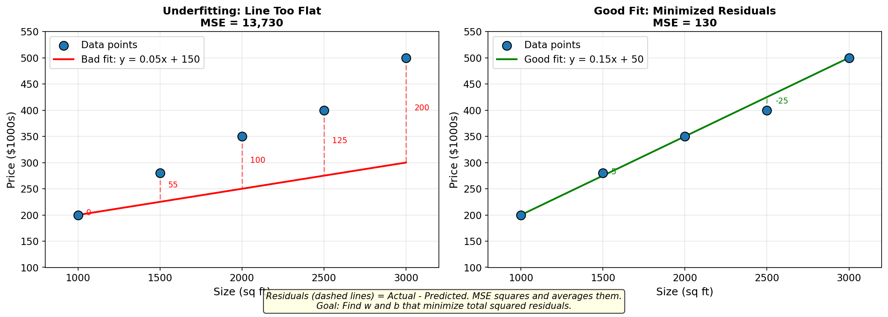 Figure: Comparing a bad fit (left) with large residuals (MSE = 13,730) to a good fit (right) with minimized residuals (MSE = 130). The dashed lines show the errors — gradient descent minimizes the sum of squared errors.
The Loss Function: Mean Squared Error
How do we quantify “how wrong” a line is? Use Mean Squared Error (MSE):
\[ \text{Loss} = \frac{1}{N} \sum_{i=1}^{N} (y_i - \hat{y}_i)^2 = \frac{1}{N} \sum_{i=1}^{N} (y_i - (w \cdot x_i + b))^2 \]
Why squared?
- Positive: Errors don’t cancel out
- Penalizes big errors more: An error of 100 contributes \(100^2 = 10000\), not just 100
- Smooth: Has nice derivatives for optimization
For our “bad line”: \[ \text{Loss} = \frac{1}{5}(0^2 + 55^2 + 100^2 + 125^2 + 200^2) = \frac{1}{5}(0 + 3025 + 10000 + 15625 + 40000) = 13730 \]
For our “better line”: \[ \text{Loss} = \frac{1}{5}(0^2 + 5^2 + 0^2 + 25^2 + 0^2) = \frac{1}{5}(0 + 25 + 0 + 625 + 0) = 130 \]
Lower loss = better fit!
1.3 Gradient Descent: Finding the Best Line
The Optimization Problem
We want to find \((w^*, b^*)\) that minimize the loss:
\[ (w^*, b^*) = \arg\min_{w, b} \frac{1}{N} \sum_{i=1}^{N} (y_i - (w \cdot x_i + b))^2 \]
For simple linear regression, there’s a closed-form solution. But for neural networks, there isn’t — we need gradient descent.
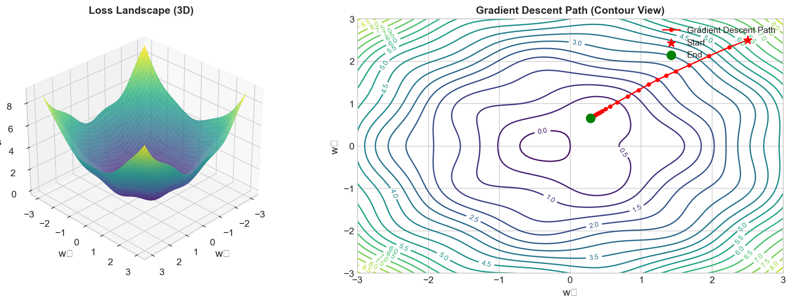 Figure: 3D visualization of a loss landscape showing the optimization surface and gradient descent path.
The Key Idea
The loss is a function of \(w\) and \(b\). If we plot loss vs parameters, we get a surface:
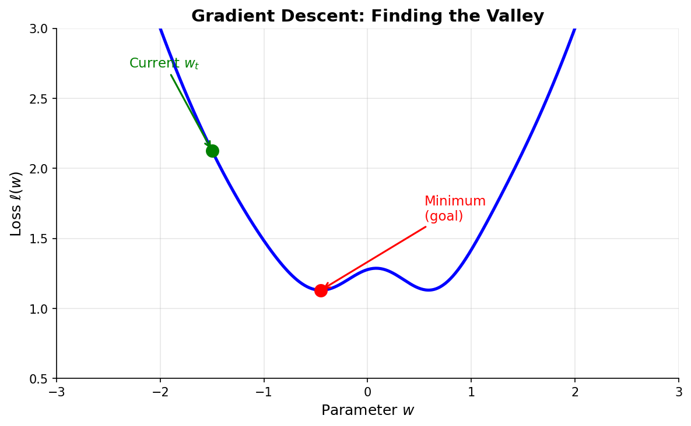 Figure: The loss function forms a landscape over parameter space. Gradient descent finds the minimum (valley) by taking steps in the direction of steepest descent.
Gradient descent: Start somewhere, repeatedly take small steps “downhill” until you reach the bottom.
What is a Gradient? (Intuitive Explanation)
Before diving into the math, let’s build intuition about what a gradient actually is.
The core idea: A gradient is a vector that points in the direction of steepest increase of a function.
Physical analogy: Imagine standing on a hilly terrain. The gradient at your location is like an arrow pointing directly uphill—the direction you’d go if you wanted to climb as steeply as possible. If you want to descend to the valley (minimize elevation), you walk in the opposite direction of this arrow.
Why is it a vector? Because we have multiple parameters to adjust! If we have two parameters (\(w\) and \(b\)), the gradient has two components:
- The first component tells us: “How much does the loss change if I nudge \(w\) a tiny bit?”
- The second component tells us: “How much does the loss change if I nudge \(b\) a tiny bit?”
Together, these form a vector that points toward the steepest uphill direction in the 2D parameter space.
Mathematical definition: The gradient of a function \(f(w, b)\) is the vector of all its partial derivatives:
\[\nabla f = \begin{bmatrix} \frac{\partial f}{\partial w} \\ \frac{\partial f}{\partial b} \end{bmatrix}\]
Each partial derivative measures the “sensitivity” of the output to changes in one input while holding others fixed.
Key insight for optimization: Since the gradient points uphill, we go the opposite direction to minimize the loss: \[\text{new parameters} = \text{old parameters} - \alpha \cdot \nabla \text{Loss}\]
where \(\alpha\) is the learning rate (step size).
The Gradient: Which Way is Downhill?
The gradient tells us the direction of steepest uphill. So we go the opposite direction!
For our linear regression:
\[ \frac{\partial \text{Loss}}{\partial w} = \frac{1}{N} \sum_{i=1}^{N} -2x_i(y_i - (w \cdot x_i + b)) = -\frac{2}{N} \sum_{i=1}^{N} x_i(y_i - \hat{y}_i) \]
\[ \frac{\partial \text{Loss}}{\partial b} = \frac{1}{N} \sum_{i=1}^{N} -2(y_i - (w \cdot x_i + b)) = -\frac{2}{N} \sum_{i=1}^{N} (y_i - \hat{y}_i) \]
Intuition:
- If predictions are too low (\(y_i - \hat{y}_i > 0\)), we need to increase \(w\) and \(b\)
- The gradient is negative → subtracting it makes \(w\) and \(b\) bigger ✓
The Update Rule
\[ w_{\text{new}} = w_{\text{old}} - \alpha \cdot \frac{\partial \text{Loss}}{\partial w} \]
\[ b_{\text{new}} = b_{\text{old}} - \alpha \cdot \frac{\partial \text{Loss}}{\partial b} \]
where \(\alpha\) is the learning rate (step size).
Concrete Example: Step by Step
Let’s use our housing data: \(x = [1000, 1500, 2000, 2500, 3000]\), \(y = [200, 280, 350, 400, 500]\)
Initialize: \(w = 0.0\), \(b = 0.0\), \(\alpha = 0.0000001\) (tiny because our \(x\) values are large)
Step 1: Compute predictions \[ \hat{y} = [0, 0, 0, 0, 0] \]
Step 2: Compute errors \[ y - \hat{y} = [200, 280, 350, 400, 500] \]
Step 3: Compute gradients \[ \frac{\partial L}{\partial w} = -\frac{2}{5}(1000 \cdot 200 + 1500 \cdot 280 + 2000 \cdot 350 + 2500 \cdot 400 + 3000 \cdot 500) \]
\[ = -\frac{2}{5}(200000 + 420000 + 700000 + 1000000 + 1500000) = -\frac{2}{5}(3820000) = -1528000 \]
\[ \frac{\partial L}{\partial b} = -\frac{2}{5}(200 + 280 + 350 + 400 + 500) = -\frac{2}{5}(1730) = -692 \]
Step 4: Update parameters \[ w = 0 - 0.0000001 \cdot (-1528000) = 0.1528 \]
\[ b = 0 - 0.0000001 \cdot (-692) = 0.0000692 \]
After just one step, \(w \approx 0.15\) — already close to the good value!
Repeat until loss stops decreasing.
Python Implementation
import numpy as np
# Data
X = np.array([1000, 1500, 2000, 2500, 3000])
y = np.array([200, 280, 350, 400, 500])
# Initialize parameters
w = 0.0
b = 0.0
learning_rate = 0.0000001
n = len(X)
# Gradient descent
for step in range(1000):
# Predictions
y_pred = w * X + b
# Loss (MSE)
loss = np.mean((y - y_pred) ** 2)
# Gradients
dw = -2/n * np.sum(X * (y - y_pred))
db = -2/n * np.sum(y - y_pred)
# Update
w = w - learning_rate * dw
b = b - learning_rate * db
if step % 100 == 0:
print(f"Step {step}: w={w:.4f}, b={b:.4f}, loss={loss:.2f}")
# Final: Step 900: w=0.1480, b=53.7000, loss=133.831.4 Logistic Regression: Classification
The Problem: Binary Classification
Now instead of predicting a continuous value, we want to classify: Is this email spam or not?
| Contains “FREE” | Contains “!” | Has link | Label | |
|---|---|---|---|---|
| 1 | 1 | 1 | 1 | Spam (1) |
| 2 | 0 | 0 | 0 | Not spam (0) |
| 3 | 1 | 1 | 0 | Spam (1) |
| 4 | 0 | 1 | 1 | Not spam (0) |
| 5 | 1 | 0 | 1 | Spam (1) |
Why Linear Regression Fails
If we use \(\hat{y} = w_1 x_1 + w_2 x_2 + w_3 x_3 + b\), we might get outputs like \(-0.5\) or \(2.3\) — but we need probabilities between 0 and 1!
The Sigmoid Function
We “squash” the linear output through the sigmoid function:
\[ \sigma(z) = \frac{1}{1 + e^{-z}} \]
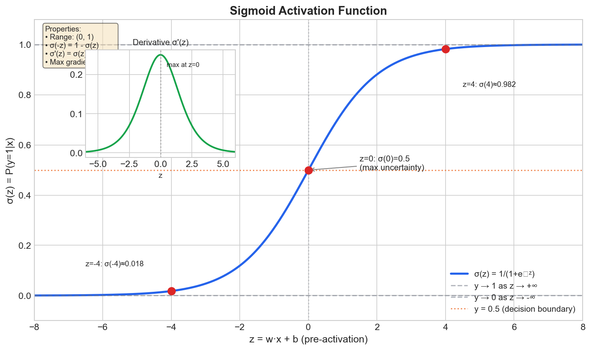 Figure: The sigmoid function σ(z) = 1/(1+e^(-z)) squashes any input to a value between 0 and 1.
Properties:
- Always outputs between 0 and 1 ✓
- \(\sigma(0) = 0.5\)
- \(\sigma(\text{large positive}) \approx 1\)
- \(\sigma(\text{large negative}) \approx 0\)
Deriving the Sigmoid Derivative (Chain Rule Example)
Understanding the sigmoid derivative is crucial for backpropagation. Let’s derive it step-by-step using the chain rule.
Starting point: \[\sigma(z) = \frac{1}{1 + e^{-z}} = (1 + e^{-z})^{-1}\]
Step 1: Apply the chain rule
Let \(u = 1 + e^{-z}\), so \(\sigma = u^{-1}\)
We need \(\frac{d\sigma}{dz} = \frac{d\sigma}{du} \cdot \frac{du}{dz}\)
Step 2: Compute each part
Power rule: \(\frac{d\sigma}{du} = \frac{d}{du}(u^{-1}) = -u^{-2} = -\frac{1}{(1+e^{-z})^2}\)
Chain rule on exponential: \(\frac{du}{dz} = \frac{d}{dz}(1 + e^{-z}) = -e^{-z}\)
Step 3: Multiply
\[\frac{d\sigma}{dz} = -\frac{1}{(1+e^{-z})^2} \cdot (-e^{-z}) = \frac{e^{-z}}{(1+e^{-z})^2}\]
Step 4: Simplify to the elegant form
Notice that: \[\frac{e^{-z}}{(1+e^{-z})^2} = \frac{1}{1+e^{-z}} \cdot \frac{e^{-z}}{1+e^{-z}} = \sigma(z) \cdot \frac{e^{-z}}{1+e^{-z}}\]
And \(\frac{e^{-z}}{1+e^{-z}} = \frac{1+e^{-z}-1}{1+e^{-z}} = 1 - \frac{1}{1+e^{-z}} = 1 - \sigma(z)\)
Final result: \[\boxed{\sigma'(z) = \sigma(z)(1 - \sigma(z))}\]
This is remarkably elegant — the derivative depends only on the output, not the input!
Why the Maximum Derivative is 1/4 (and Why It Matters)
The sigmoid derivative \(\sigma'(z) = \sigma(z)(1 - \sigma(z))\) has a maximum value of 0.25. Let’s prove this and understand its implications.
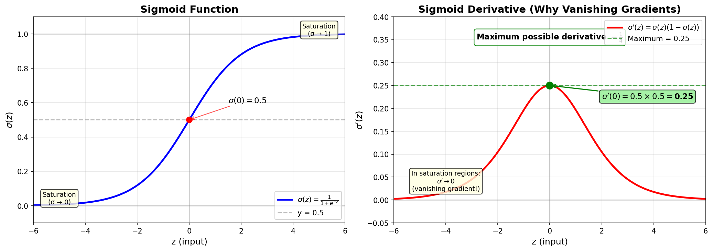 Figure: The sigmoid function and its derivative. The derivative reaches its maximum of 0.25 at z=0, where σ(z)=0.5.
Step 1: Reframe the problem
Let \(y = \sigma(z)\). Since sigmoid outputs are in \((0, 1)\), we need to find the maximum of: \[f(y) = y(1 - y) = y - y^2 \quad \text{for } y \in (0, 1)\]
Step 2: Find the maximum
This is a downward-opening parabola. Taking the derivative: \[\frac{df}{dy} = 1 - 2y\]
Setting to zero: \(1 - 2y = 0 \Rightarrow y = 0.5\)
Step 3: Calculate the maximum value
\[f(0.5) = 0.5 \times (1 - 0.5) = 0.5 \times 0.5 = \boxed{0.25 = \frac{1}{4}}\]
What this means: At the optimal point (\(z = 0\), where \(\sigma(z) = 0.5\)), the gradient through a sigmoid is only 0.25. In the saturation regions (where \(\sigma \to 0\) or \(\sigma \to 1\)), the derivative approaches 0.
The Vanishing Gradient Problem
This maximum of 1/4 has catastrophic implications for deep networks:
During backpropagation, gradients are multiplied at each layer: \[\frac{\partial L}{\partial W_1} = \frac{\partial L}{\partial z_n} \cdot \sigma'(z_{n-1}) \cdot \sigma'(z_{n-2}) \cdots \sigma'(z_1)\]
Even in the best case (all neurons at \(\sigma = 0.5\)):
| Layers | Gradient Factor | Result |
|---|---|---|
| 5 | \(0.25^5\) | 0.001 (1/1000) |
| 10 | \(0.25^{10}\) | \(10^{-6}\) (one millionth!) |
| 20 | \(0.25^{20}\) | \(10^{-12}\) |
In practice, it’s worse: Neurons rarely sit at \(\sigma = 0.5\). In saturation regions, \(\sigma' \approx 0\), making gradients vanish even faster.
Symptoms of vanishing gradients: - Early layers (near input) barely update - Loss decreases very slowly - Deep networks fail to train
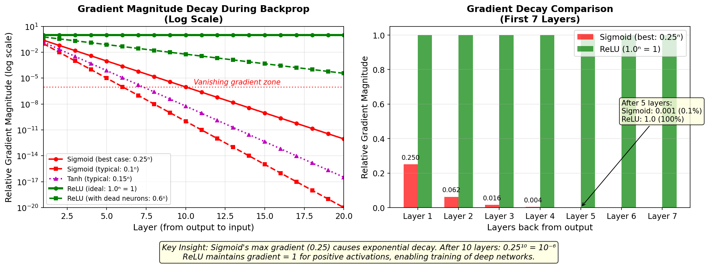 Figure: Gradient magnitude decay during backpropagation for different activation functions. Sigmoid’s max derivative of 0.25 causes exponential decay — after 10 layers, gradients shrink to 10⁻⁶ (best case). ReLU maintains gradient = 1 for positive activations, enabling training of very deep networks. The bar chart shows how quickly sigmoid gradients become negligible.
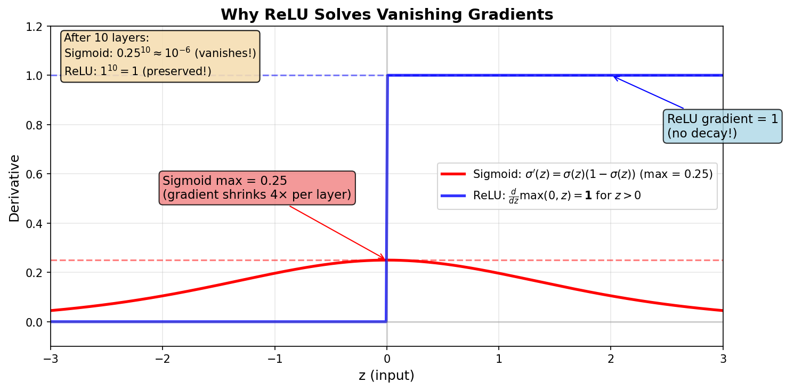 Figure: Comparison of sigmoid and ReLU derivatives. ReLU has gradient = 1 for positive inputs, avoiding exponential decay.
ReLU: The Solution to Vanishing Gradients
ReLU (Rectified Linear Unit) solves this problem:
\[\text{ReLU}(z) = \max(0, z)\]
ReLU derivative: \[\text{ReLU}'(z) = \begin{cases} 1 & \text{if } z > 0 \\ 0 & \text{if } z \leq 0 \end{cases}\]
Why ReLU works:
| Property | Sigmoid | ReLU |
|---|---|---|
| Max derivative | 0.25 | 1 |
| After 10 layers (best case) | \(0.25^{10} \approx 10^{-6}\) | \(1^{10} = 1\) |
| Gradient decay | Exponential | None! |
| Saturation | Both directions | Only negative |
The key insight: With ReLU, gradients pass through unchanged (multiplied by 1) for positive activations. There’s no exponential decay, so deep networks can actually train!
Trade-off: ReLU has “dead neurons” — if a neuron’s input is always negative, its gradient is always 0 and it never updates. Solutions include: - Leaky ReLU: Small gradient for negative inputs (\(0.01x\) instead of \(0\)) - ELU/GELU: Smooth alternatives with better properties
Interview Q: “Why do we use ReLU instead of sigmoid in hidden layers?”
A: Sigmoid has a maximum derivative of 0.25, causing vanishing gradients in deep networks. After just 10 layers, even in the best case, gradients shrink to \(0.25^{10} \approx 10^{-6}\). Early layers barely learn. ReLU has derivative = 1 for positive inputs, so gradients pass through without decay. This enables training of deep networks. The trade-off is “dead neurons” (gradient = 0 for negative inputs), addressed by variants like Leaky ReLU.
Logistic Regression Model
\[ P(y=1|x) = \sigma(w^\top x + b) = \frac{1}{1 + e^{-(w^\top x + b)}} \]
Interpretation: “The probability this email is spam, given its features.”
The Loss Function: Binary Cross-Entropy
For classification, we use cross-entropy loss (not MSE):
\[ \text{Loss} = -\frac{1}{N}\sum_{i=1}^{N} \left[ y_i \log(\hat{y}_i) + (1 - y_i) \log(1 - \hat{y}_i) \right] \]
Why this?
- If true label is 1 and we predict 1: \(-\log(1) = 0\) (no penalty) ✓
- If true label is 1 and we predict 0.01: \(-\log(0.01) \approx 4.6\) (big penalty!) ✓
- Works with probability outputs from sigmoid
Deriving Cross-Entropy from Maximum Likelihood
The cross-entropy loss isn’t arbitrary—it comes directly from Maximum Likelihood Estimation (MLE). Understanding this derivation reveals why cross-entropy is the natural loss for classification.
Step 1: Model the output as a probability
In logistic regression, we model the probability that \(y = 1\) given input \(x\):
\[P(y = 1 | x) = \hat{y} = \sigma(w^\top x + b)\]
This means \(P(y = 0 | x) = 1 - \hat{y}\).
Step 2: Write the likelihood of one data point
For a single example \((x_i, y_i)\) where \(y_i \in \{0, 1\}\):
\[P(y_i | x_i) = \hat{y}_i^{y_i} \cdot (1 - \hat{y}_i)^{1 - y_i}\]
This elegant formula works because:
- If \(y_i = 1\): \(P = \hat{y}_i^1 \cdot (1 - \hat{y}_i)^0 = \hat{y}_i\) ✓
- If \(y_i = 0\): \(P = \hat{y}_i^0 \cdot (1 - \hat{y}_i)^1 = 1 - \hat{y}_i\) ✓
Step 3: Write the likelihood of all data (assuming independence)
\[\mathcal{L}(w, b) = \prod_{i=1}^{N} P(y_i | x_i) = \prod_{i=1}^{N} \hat{y}_i^{y_i} \cdot (1 - \hat{y}_i)^{1 - y_i}\]
Step 4: Take the log (log-likelihood)
Products are numerically unstable and hard to optimize. Taking the log converts products to sums:
\[\log \mathcal{L} = \sum_{i=1}^{N} \left[ y_i \log(\hat{y}_i) + (1 - y_i) \log(1 - \hat{y}_i) \right]\]
Step 5: Maximize log-likelihood = Minimize negative log-likelihood
We want to maximize the likelihood, but optimizers minimize. So we minimize the negative log-likelihood (NLL):
\[\text{NLL} = -\log \mathcal{L} = -\sum_{i=1}^{N} \left[ y_i \log(\hat{y}_i) + (1 - y_i) \log(1 - \hat{y}_i) \right]\]
Dividing by \(N\) for the average gives us exactly the binary cross-entropy loss!
\[\boxed{\text{BCE} = -\frac{1}{N}\sum_{i=1}^{N} \left[ y_i \log(\hat{y}_i) + (1 - y_i) \log(1 - \hat{y}_i) \right]}\]
Key insight: Cross-entropy is the principled loss for classification because it directly maximizes the probability of the correct labels under our model. This connection to MLE also explains:
- Why it gives clean gradients: \(\frac{\partial \text{BCE}}{\partial z} = \hat{y} - y\)
- Why it’s related to information theory: \(\text{BCE}(p, q) = H(p) + D_{KL}(p || q)\)
- Why it’s the natural choice for probabilistic outputs
Gradient for Logistic Regression
The gradient has a beautiful form:
\[ \frac{\partial \text{Loss}}{\partial w} = \frac{1}{N} \sum_{i=1}^{N} (\hat{y}_i - y_i) x_i \]
Just the error times the input — same form as linear regression!
Note: This gradient computes the average over all examples in the batch:
dw = X.T @ error / len(y). The division bylen(y)ensures the gradient magnitude doesn’t depend on batch size.
Python Implementation
import numpy as np
def sigmoid(z):
return 1 / (1 + np.exp(-z))
# Data: [contains_FREE, contains_!, has_link]
X = np.array([[1, 1, 1],
[0, 0, 0],
[1, 1, 0],
[0, 1, 1],
[1, 0, 1]])
y = np.array([1, 0, 1, 0, 1])
# Initialize
w = np.zeros(3)
b = 0.0
lr = 0.5
for step in range(1000):
# Forward pass
z = X @ w + b
y_pred = sigmoid(z)
# Loss (cross-entropy)
eps = 1e-15 # avoid log(0)
loss = -np.mean(y * np.log(y_pred + eps) + (1 - y) * np.log(1 - y_pred + eps))
# Gradients
error = y_pred - y
dw = X.T @ error / len(y)
db = np.mean(error)
# Update
w = w - lr * dw
b = b - lr * db
if step % 200 == 0:
predictions = (y_pred > 0.5).astype(int)
accuracy = np.mean(predictions == y)
print(f"Step {step}: loss={loss:.4f}, accuracy={accuracy:.0%}")
# Final: w=[1.23, 0.41, 0.41], b=-0.82, accuracy=100%1.5 Multi-Layer Perceptron (MLP)
Limitation of Linear Models
Linear and logistic regression can only learn linear decision boundaries:
Linearly separable: NOT separable (XOR):
x₂↑ x₂↑
| + + + | - +
| + + + |
----+--------→ x₁ -----+-----→ x₁
| - - - |
| - - | + -To learn complex patterns, we need non-linear models.
The MLP: Stacking Layers
An MLP adds hidden layers between input and output:
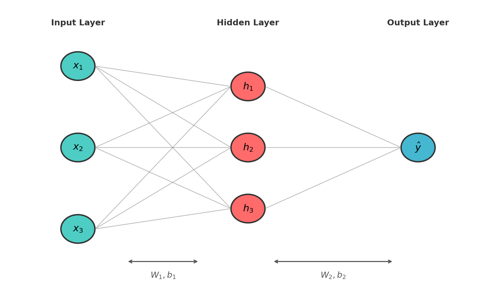 Figure: Multi-layer perceptron with input layer, hidden layer, and output layer. Each connection represents a weight.
Forward Pass (Step by Step)
For a network with one hidden layer:
Layer 1: Linear transformation + activation \[ z_1 = W_1 x + b_1 \]
\[ h = \text{ReLU}(z_1) = \max(0, z_1) \]
Layer 2: Another linear transformation \[ z_2 = W_2 h + b_2 \]
\[ \hat{y} = \text{softmax}(z_2) \quad \text{(for classification)} \]
Activation Functions: Why We Need Them
Without activation functions, stacking linear layers is useless:
\[ W_2(W_1 x + b_1) + b_2 = W_2 W_1 x + W_2 b_1 + b_2 = W' x + b' \]
Still linear! Activation functions introduce non-linearity.
Common Activation Functions
| Function | Formula | Range | Used For |
|---|---|---|---|
| Sigmoid | \(\frac{1}{1+e^{-x}}\) | \((0, 1)\) | Binary classification output |
| Tanh | \(\frac{e^x - e^{-x}}{e^x + e^{-x}}\) | \((-1, 1)\) | Hidden layers (older) |
| ReLU | \(\max(0, x)\) | \([0, \infty)\) | Hidden layers (modern default) |
| Softmax | \(\frac{e^{x_i}}{\sum_j e^{x_j}}\) | \((0, 1)\), sums to 1 | Multi-class output |
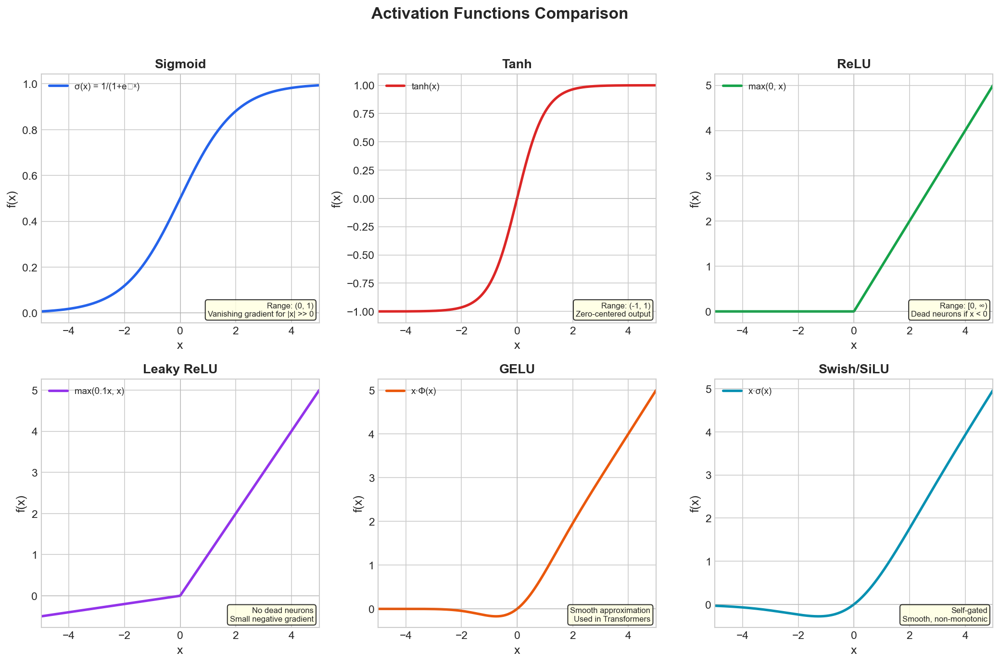 Figure: Common activation functions including ReLU, Sigmoid, Tanh, and their variants.
ReLU: Why It Works
- Simple: Fast to compute
- Sparse: Many neurons output 0 (efficient)
- No vanishing gradient: Gradient is 1 for positive inputs
Concrete Example: Learning XOR
XOR function:
| \(x_1\) | \(x_2\) | XOR |
|---|---|---|
| 0 | 0 | 0 |
| 0 | 1 | 1 |
| 1 | 0 | 1 |
| 1 | 1 | 0 |
No line can separate 0s from 1s!
MLP Solution
Hidden layer (2 neurons): \[ h_1 = \text{ReLU}(x_1 + x_2 - 0.5) \quad \text{(detects "at least one 1")} \]
\[ h_2 = \text{ReLU}(x_1 + x_2 - 1.5) \quad \text{(detects "both are 1")} \]
Output: \[ \hat{y} = h_1 - 2 \cdot h_2 \]
| \(x_1\) | \(x_2\) | \(h_1\) | \(h_2\) | \(\hat{y}\) |
|---|---|---|---|---|
| 0 | 0 | 0 | 0 | 0 |
| 0 | 1 | 0.5 | 0 | 0.5 → 1 |
| 1 | 0 | 0.5 | 0 | 0.5 → 1 |
| 1 | 1 | 1 | 0.5 | 0 → 0 |
The hidden layer creates a new representation where the problem becomes linearly separable!
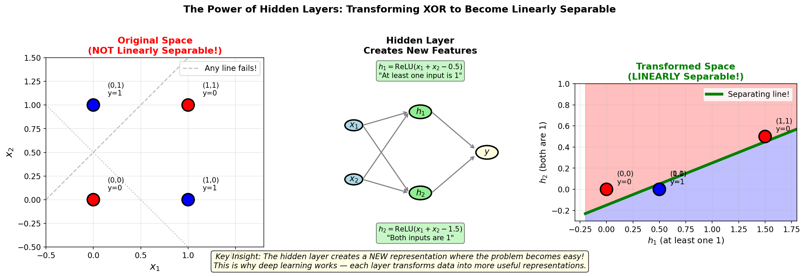 Figure: The power of hidden layers. Left: In the original input space, XOR is NOT linearly separable — no single line can separate the red class (0) from the blue class (1). Middle: The hidden layer computes new features \(h_1\) (“at least one 1”) and \(h_2\) (“both are 1”). Right: In the transformed space, the problem becomes linearly separable! This is the key insight behind deep learning: each layer transforms data into more useful representations.
Python Implementation
import numpy as np
def relu(x):
return np.maximum(0, x)
def relu_derivative(x):
return (x > 0).astype(float)
def sigmoid(x):
return 1 / (1 + np.exp(-x))
# XOR data
X = np.array([[0, 0], [0, 1], [1, 0], [1, 1]])
y = np.array([[0], [1], [1], [0]])
# Network: 2 inputs → 4 hidden → 1 output
np.random.seed(42)
W1 = np.random.randn(2, 4) * 0.5
b1 = np.zeros((1, 4))
W2 = np.random.randn(4, 1) * 0.5
b2 = np.zeros((1, 1))
lr = 1.0
for step in range(10000):
# Forward pass
z1 = X @ W1 + b1
h = relu(z1)
z2 = h @ W2 + b2
y_pred = sigmoid(z2)
# Loss
loss = np.mean((y - y_pred) ** 2)
# Backward pass (will explain in next section!)
d_z2 = (y_pred - y) * y_pred * (1 - y_pred)
d_W2 = h.T @ d_z2
d_b2 = np.sum(d_z2, axis=0, keepdims=True)
d_h = d_z2 @ W2.T
d_z1 = d_h * relu_derivative(z1)
d_W1 = X.T @ d_z1
d_b1 = np.sum(d_z1, axis=0, keepdims=True)
# Update
W2 -= lr * d_W2
b2 -= lr * d_b2
W1 -= lr * d_W1
b1 -= lr * d_b1
if step % 1000 == 0:
print(f"Step {step}: loss={loss:.4f}")
# Test
print("\nPredictions:")
print(np.round(y_pred, 2))
# [[0.02], [0.98], [0.98], [0.02]] ✓1.6 The Backpropagation Algorithm
The Problem: How to Get Gradients in Deep Networks?
For linear regression: straightforward calculus.
For deep networks with millions of parameters: we need an efficient algorithm.
Backpropagation = Backward propagation of errors
The Chain Rule: The Key Insight
If \(y = f(g(x))\), then:
\[ \frac{dy}{dx} = \frac{dy}{dg} \cdot \frac{dg}{dx} \]
In neural networks, we have a chain of operations:
\[ x \to z_1 \to h \to z_2 \to \hat{y} \to \text{Loss} \]
To find \(\frac{\partial \text{Loss}}{\partial W_1}\), we apply the chain rule through each step.
Visualizing Backpropagation: The Computational Graph
A computational graph makes backpropagation intuitive. Each node represents either a variable (data) or an operation. Edges show data flow.
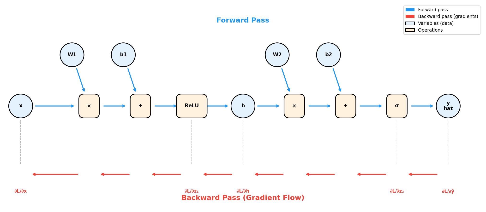 Figure: A computational graph for a 2-layer MLP. Blue arrows show forward pass (data flowing left to right). Red arrows show backward pass (gradients flowing right to left). Each operation node computes a “local gradient” that gets multiplied along the path.
Key insight: During backprop, we traverse the same graph in reverse, multiplying local gradients along each path.
The algorithm:
- Forward pass: Compute all intermediate values, storing them for later
- Backward pass: Starting from the loss,
compute gradients by:
- For each operation node, multiply the incoming gradient by the local gradient
- Sum gradients when paths merge (multiple outputs from one node)
Example with specific values:
Forward: x=2 → [×W₁=3] → z₁=6 → [ReLU] → h=6 → [×W₂=0.5] → z₂=3 → [σ] → ŷ=0.95
If y=1: Loss = -log(0.95) = 0.05
Backward:
∂L/∂ŷ = -1/0.95 = -1.05
∂L/∂z₂ = -1.05 × σ'(3) = -1.05 × 0.95 × 0.05 = -0.05
∂L/∂W₂ = -0.05 × h = -0.05 × 6 = -0.30
∂L/∂h = -0.05 × W₂ = -0.05 × 0.5 = -0.025
∂L/∂z₁ = -0.025 × 1 (ReLU'=1 since z₁>0) = -0.025
∂L/∂W₁ = -0.025 × x = -0.025 × 2 = -0.05Why computational graphs matter: - Automatic differentiation frameworks (PyTorch, TensorFlow) build these graphs automatically - Any differentiable computation can be expressed as a graph - Backprop becomes mechanical: just apply the chain rule at each node
Backprop: Step by Step
Consider our 2-layer MLP:
Forward pass (compute and cache everything):
z₁ = W₁x + b₁
h = ReLU(z₁)
z₂ = W₂h + b₂
ŷ = sigmoid(z₂)
L = MSE(y, ŷ)Backward pass (work backwards from loss):
Gradient of loss w.r.t. output: \[ \frac{\partial L}{\partial \hat{y}} = \hat{y} - y \]
Through sigmoid: The sigmoid derivative has an elegant form. Starting from \(\sigma(z) = \frac{1}{1+e^{-z}}\):
\[\sigma'(z) = \frac{d}{dz}\frac{1}{1+e^{-z}} = \frac{e^{-z}}{(1+e^{-z})^2} = \frac{1}{1+e^{-z}} \cdot \frac{e^{-z}}{1+e^{-z}} = \sigma(z)(1-\sigma(z))\]
Therefore: \[ \frac{\partial L}{\partial z_2} = \frac{\partial L}{\partial \hat{y}} \cdot \sigma'(z_2) = (\hat{y} - y) \cdot \hat{y}(1 - \hat{y}) \]
Gradient for \(W_2\): \[ \frac{\partial L}{\partial W_2} = h^\top \cdot \frac{\partial L}{\partial z_2} \]
Propagate to hidden layer: \[ \frac{\partial L}{\partial h} = \frac{\partial L}{\partial z_2} \cdot W_2^\top \]
Through ReLU: \[ \frac{\partial L}{\partial z_1} = \frac{\partial L}{\partial h} \cdot \mathbf{1}_{z_1 > 0} \]
Gradient for \(W_1\): \[ \frac{\partial L}{\partial W_1} = x^\top \cdot \frac{\partial L}{\partial z_1} \]
Why It’s Efficient
- Forward pass: \(O(\text{network size})\) — just matrix multiplications
- Backward pass: \(O(\text{network size})\) — same complexity as forward!
- Total: \(O(\text{network size})\) per example
Without backprop, computing each parameter’s gradient separately would be \(O((\text{network size})^2)\).
Automatic Differentiation
Modern frameworks (PyTorch, TensorFlow) implement backprop automatically:
import torch
import torch.nn as nn
# Define network
model = nn.Sequential(
nn.Linear(2, 4),
nn.ReLU(),
nn.Linear(4, 1),
nn.Sigmoid()
)
# Training
X = torch.tensor([[0, 0], [0, 1], [1, 0], [1, 1]], dtype=torch.float32)
y = torch.tensor([[0], [1], [1], [0]], dtype=torch.float32)
optimizer = torch.optim.SGD(model.parameters(), lr=1.0)
loss_fn = nn.MSELoss()
for step in range(10000):
# Forward
y_pred = model(X)
loss = loss_fn(y_pred, y)
# Backward (automatically computes all gradients!)
optimizer.zero_grad()
loss.backward()
# Update
optimizer.step()
if step % 1000 == 0:
print(f"Step {step}: loss={loss.item():.4f}")1.7 Softmax and Multi-class Classification
From Binary to Multi-class
Logistic regression handles 2 classes. For K classes, we use softmax:
\[P(y = k | x) = \frac{e^{z_k}}{\sum_{j=1}^{K} e^{z_j}}\]
where \(z_k = w_k \cdot x + b_k\) is the logit for class \(k\).
Properties of Softmax
- Outputs sum to 1: \(\sum_k P(y = k | x) = 1\) ✓
- All outputs positive: \(P(y = k | x) > 0\) ✓
- Preserves ranking: Largest logit → highest probability
Why Exponential (Not Simple Normalization)?
Interview Question: “Why does softmax use \(e^{z_i}\) instead of just \(\frac{z_i}{\sum_j z_j}\)?”
Simple normalization would be: \(\text{normalize}(z_i) = \frac{z_i}{\sum_j z_j}\)
This fails for several critical reasons:
Problem 1: Negative Values Break Everything
Logits: [2, -3, 1]
Sum = 0 → Division by zero!
Logits: [2, -5, 1]
Sum = -2
"Probabilities": [2/-2, -5/-2, 1/-2] = [-1, 2.5, -0.5]
→ Negative "probabilities"! Invalid!Exponentials are always positive: \(e^x > 0\) for all \(x\), so softmax outputs are always valid probabilities.
Problem 2: Beautiful Gradient Properties
The softmax + cross-entropy gradient has an elegant form:
\[\frac{\partial L}{\partial z_i} = p_i - y_i\]
where \(p_i\) is predicted probability and \(y_i\) is the target (1 for correct class, 0 otherwise).
This clean gradient comes directly from the exponential. Simple normalization would give messier, harder-to-optimize gradients.
Problem 3: Amplification with Temperature Control
Exponentials amplify differences between logits:
Logits: [2.0, 1.0, 0.5]
Simple normalize: [2/3.5, 1/3.5, 0.5/3.5] = [0.57, 0.29, 0.14]
Softmax: [0.59, 0.24, 0.17] # Winner amplifiedTemperature provides explicit control over this amplification:
\[\text{softmax}(z_i / T) = \frac{e^{z_i/T}}{\sum_j e^{z_j/T}}\]
- \(T \to 0\): Approaches argmax (one-hot, hard selection)
- \(T = 1\): Standard softmax
- \(T \to \infty\): Approaches uniform distribution
This is used in knowledge distillation (soft targets) and sampling diversity control.
Problem 4: Theoretical Grounding (Maximum Entropy)
Softmax is the maximum entropy distribution subject to linear constraints on expected features. This connects to:
- Statistical mechanics (Boltzmann distribution)
- Information theory (exponential family distributions)
- Principled probabilistic modeling
Summary: Exponentials ensure:
- ✅ Always positive outputs (valid probabilities)
- ✅ Sum to 1 (proper distribution)
- ✅ Clean gradients for efficient learning
- ✅ Controllable sharpness via temperature
- ✅ Theoretically principled (max entropy)
Example: 3-Class Classification
Input x → [Linear Layer] → Logits z → [Softmax] → Probabilities
z = [2.0, 1.0, 0.1]
softmax(z):
e^2.0 = 7.39
e^1.0 = 2.72
e^0.1 = 1.11
sum = 11.22
P = [7.39/11.22, 2.72/11.22, 1.11/11.22]
= [0.66, 0.24, 0.10]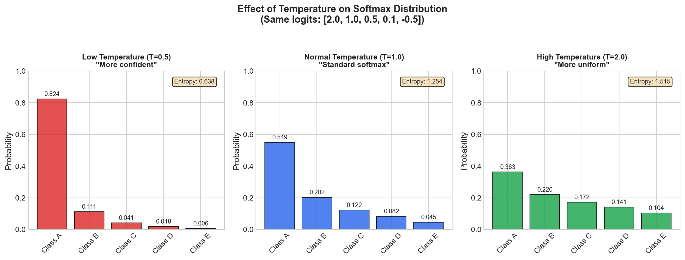 Figure: Effect of temperature on softmax distribution. Lower temperature makes the distribution sharper (more confident), higher temperature makes it more uniform.
Multi-class Cross-Entropy Loss
For one-hot label \(y\) (e.g., \(y = [0, 1, 0]\) for class 2):
\[\mathcal{L} = -\sum_{k=1}^{K} y_k \log(\hat{y}_k) = -\log(\hat{y}_c)\]
where \(c\) is the true class. We’re penalizing low probability on the correct class.
PyTorch Implementation
import torch.nn as nn
# Method 1: Separate softmax and loss
probs = nn.Softmax(dim=1)(logits)
loss = nn.NLLLoss()(torch.log(probs), labels)
# Method 2: Combined (numerically stable, preferred!)
loss = nn.CrossEntropyLoss()(logits, labels) # Takes raw logits!⚠️ Common mistake:
CrossEntropyLoss expects
logits, not probabilities!
1.8 Batching: Why and How
What This Means (For Beginners)
When training a neural network, three terms come up constantly: Epoch, Batch, and Iteration. Understanding how they relate is fundamental.
Epoch = One complete pass through the entire training dataset
Think of studying for an exam: - 1 epoch: You go through the entire syllabus once - 5 epochs: You study the same syllabus five times, each time understanding more
Batch = A subset of the training data processed together
Since the entire dataset is often too large to fit in GPU memory at once, we divide it into smaller chunks called batches. Each batch is processed in one forward pass and one backward pass.
Iteration = One forward + backward pass on one batch
Each iteration updates the model’s weights once.
The Key Formula
\[\text{Iterations per epoch} = \frac{\text{Total training samples}}{\text{Batch size}}\]
Worked Example
Suppose you have 1,000 training samples and set batch size = 100:
Total samples: 1,000
Batch size: 100
Iterations/epoch: 1,000 / 100 = 10
What happens in 1 epoch:
Iteration 1: Process samples 1-100 → Update weights
Iteration 2: Process samples 101-200 → Update weights
Iteration 3: Process samples 201-300 → Update weights
...
Iteration 10: Process samples 901-1000 → Update weights
After 10 iterations, you've completed 1 epoch!For 3 epochs with batch_size=100 on 1,000 samples: - Total iterations = 3 epochs × 10 iterations/epoch = 30 weight updates - Each sample is seen 3 times total (once per epoch)
Visual Summary
┌────────────────────────────────────────────────────────────────┐
│ FULL DATASET (1000 samples) │
├─────────┬─────────┬─────────┬─────────┬───────────┬────────────┤
│ Batch 1 │ Batch 2 │ Batch 3 │ Batch 4 │ ... │ Batch 10 │
│ (100) │ (100) │ (100) │ (100) │ │ (100) │
└─────────┴─────────┴─────────┴─────────┴───────────┴────────────┘
↓ ↓ ↓ ↓ ↓
Iter 1 Iter 2 Iter 3 Iter 4 ... Iter 10
└──────────────────────┬──────────────────────────┘
│
= 1 EPOCHThe Pizza Analogy 🍕
- The entire pizza = Full training dataset
- Each slice = One batch
- Eating one slice = One iteration (process one batch, update weights)
- Finishing the whole pizza = One epoch (processed all samples once)
If the pizza has 8 slices and you eat 1 slice at a time: - You need 8 iterations to finish 1 pizza (1 epoch) - Training for 3 epochs = eating 3 pizzas = 24 slices eaten = 24 iterations
Why Multiple Epochs?
Training for a single epoch usually isn’t enough: - The model makes one pass through each sample - Weights are updated based on each batch, but may not have converged - By repeating for multiple epochs, the model gradually refines its understanding
Epoch 1: Model learns rough patterns
Epoch 2: Model refines understanding
Epoch 3: Model fine-tunes details
...
Epoch N: Model converges (loss stops decreasing)Warning: Too many epochs can lead to overfitting! The model memorizes the training data instead of learning generalizable patterns. This is why we monitor validation loss.
Interview Q: “What’s the difference between epoch, batch, and iteration?”
A: An epoch is one complete pass through the entire training dataset. A batch is a subset of the data processed together in one forward/backward pass. An iteration is one weight update, which happens after processing one batch.
The relationship:
Iterations per epoch = Dataset size / Batch size
For example, with 10,000 samples and batch size 100, you have 100 iterations per epoch. Training for 5 epochs means 500 total weight updates, with each sample seen 5 times.
The Problem with Single Examples
Computing gradient on one example at a time:
- Very noisy updates
- Can’t utilize GPU parallelism
- Slow convergence
Computing gradient on entire dataset:
- Very stable but slow
- One update per epoch
- Memory can’t hold all data
Mini-batch: The Sweet Spot
Dataset: 10,000 examples
Batch size: 32
→ 10,000 / 32 = 312 batches per epoch
→ 312 gradient updates per epochWhy Batching Works
The mini-batch gradient is an unbiased estimator of the full gradient:
\[\mathbb{E}\left[\frac{1}{B}\sum_{i \in \text{batch}} \nabla \ell_i\right] = \frac{1}{N}\sum_{i=1}^{N} \nabla \ell_i\]
Batch Size Tradeoffs
| Small Batch (32) | Large Batch (4096) |
|---|---|
| High variance (noisy) | Low variance (stable) |
| Good generalization | May generalize worse |
| More updates per epoch | Fewer updates |
| Slower per update | Faster per update (GPU) |
| Works on any GPU | Needs large GPU memory |
The “Noise is Good” Insight
Small batch noise acts as implicit regularization:
- Helps escape sharp minima (which generalize poorly)
- Finds flatter minima (which generalize better)
 Figure: Sharp minima
(left) overfit because small weight changes cause large loss
changes. Flat minima (right) generalize better because
they’re robust to perturbations.
Figure: Sharp minima
(left) overfit because small weight changes cause large loss
changes. Flat minima (right) generalize better because
they’re robust to perturbations.
Practical Guidelines
| Dataset Size | Typical Batch Size |
|---|---|
| < 1,000 | 8-32 |
| 1,000-100,000 | 32-128 |
| > 100,000 | 128-512 |
| LLM pretraining | 1M-4M tokens |
Code Example: Batching in PyTorch
from torch.utils.data import DataLoader, TensorDataset
# Create dataset and loader
dataset = TensorDataset(X_tensor, y_tensor)
loader = DataLoader(dataset, batch_size=32, shuffle=True)
# Training loop
for epoch in range(num_epochs):
for batch_X, batch_y in loader:
# Forward pass on batch
predictions = model(batch_X)
loss = criterion(predictions, batch_y)
# Backward pass
optimizer.zero_grad()
loss.backward()
optimizer.step()1.9 Data Preprocessing
Why Preprocess?
Raw features often have different scales:
- Age: 0-100
- Salary: 20,000-500,000
- Height: 1.5-2.0 meters
Without preprocessing:
- Large-scale features dominate gradients
- Small learning rates needed for some features
- Optimization is slow and unstable
Standardization (Z-score Normalization)
\[x' = \frac{x - \mu}{\sigma}\]
Result: Mean = 0, Std = 1
# Training set
mean = X_train.mean(axis=0)
std = X_train.std(axis=0)
# Apply to all sets using TRAINING statistics!
X_train_scaled = (X_train - mean) / std
X_test_scaled = (X_test - mean) / std # Same mean/std!⚠️ Critical: Always compute statistics on training data only, then apply to test data!
Min-Max Normalization
\[x' = \frac{x - x_{\min}}{x_{\max} - x_{\min}}\]
Result: Range [0, 1]
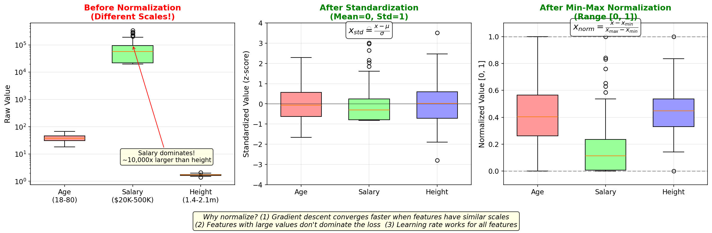 Figure: Why preprocessing matters. Left: Raw features at vastly different scales — salary dominates (10,000× larger than height). Middle: After standardization (z-score), all features have mean=0 and std=1. Right: After min-max normalization, all features are in [0, 1]. Without normalization, gradient descent would be dominated by large-scale features.
When to Use Which?
| Method | When to Use |
|---|---|
| Standardization | Most cases; neural networks; data has outliers |
| Min-Max | Need bounded range; image pixels (0-255 → 0-1) |
| No preprocessing | Tree-based models (don’t need it) |
Image Preprocessing
# Typical ImageNet preprocessing
transform = transforms.Compose([
transforms.Resize(256),
transforms.CenterCrop(224),
transforms.ToTensor(), # Converts to [0, 1]
transforms.Normalize(
mean=[0.485, 0.456, 0.406], # ImageNet stats
std=[0.229, 0.224, 0.225]
)
])Text Preprocessing
- Tokenization: “Hello world” → [“Hello”, “world”] → [15496, 995]
- Padding: Make all sequences same length
- Embedding: Token IDs → dense vectors
Handling Missing Values
Real-world datasets often have missing values. Understanding why data is missing guides how to handle it.
Types of Missingness:
| Type | Abbreviation | Meaning | Example |
|---|---|---|---|
| Missing Completely at Random | MCAR | Missingness is unrelated to any variable | Survey respondent accidentally skipped a question |
| Missing at Random | MAR | Missingness depends on observed variables | Younger people less likely to report income (but we know their age) |
| Missing Not at Random | MNAR | Missingness depends on the missing value itself | High earners don’t report income because it’s high |
Why It Matters: MCAR is “safe” — any handling method works. MAR can be handled with imputation if you model the missingness. MNAR is problematic — you can’t fully correct for it without additional information.
Handling Strategies:
| Strategy | Method | When to Use | Drawback |
|---|---|---|---|
| Deletion | Drop rows with missing values | MCAR + few missing values (<5%) | Loses data, can bias if not MCAR |
| Mean/Median Imputation | Replace with column mean/median | Numerical features, MCAR | Reduces variance, ignores relationships |
| Mode Imputation | Replace with most frequent value | Categorical features | Over-represents common values |
| KNN Imputation | Use K-nearest neighbors to estimate | MAR, when features are correlated | Computationally expensive |
| Model-based | Train model to predict missing values | MAR, large datasets | Can propagate errors |
| Indicator Variable | Add binary “was_missing” column | When missingness itself is informative | Increases dimensionality |
⚠️ Important: Imputation Considerations
Imputation means filling in missing values with estimated values. Key points:
- Imputation introduces bias: The imputed values are estimates, not real data. They reduce variance and can make relationships appear stronger than they are.
- Never impute the target variable: If your label/outcome is missing, that sample should typically be excluded, not imputed.
- Fit imputer on training data only: Just like with normalization, compute imputation statistics (mean, median, etc.) on training data, then apply to validation/test sets. This prevents data leakage.
- Consider multiple imputation: For statistical inference, advanced techniques like MICE (Multiple Imputation by Chained Equations) account for uncertainty in imputed values.
- Document your approach: Always report what percentage of data was missing and how you handled it—this affects reproducibility.
Python Examples:
import pandas as pd
import numpy as np
from sklearn.impute import SimpleImputer, KNNImputer
# Sample data with missing values
df = pd.DataFrame({
'age': [25, 30, np.nan, 45, 50],
'income': [50000, np.nan, 70000, 80000, np.nan],
'category': ['A', 'B', np.nan, 'A', 'B']
})
# Method 1: Drop rows with any missing values
df_dropped = df.dropna() # 2 rows remain
# Method 2: Mean imputation for numerical columns
mean_imputer = SimpleImputer(strategy='mean')
df['age_imputed'] = mean_imputer.fit_transform(df[['age']])
# Method 3: Median imputation (robust to outliers)
median_imputer = SimpleImputer(strategy='median')
df['income_imputed'] = median_imputer.fit_transform(df[['income']])
# Method 4: Mode imputation for categorical
mode_imputer = SimpleImputer(strategy='most_frequent')
df['category_imputed'] = mode_imputer.fit_transform(df[['category']])
# Method 5: KNN imputation (considers feature relationships)
knn_imputer = KNNImputer(n_neighbors=2)
numerical_cols = df[['age', 'income']].values
df_knn = pd.DataFrame(knn_imputer.fit_transform(numerical_cols),
columns=['age_knn', 'income_knn'])
# Method 6: Add missingness indicator
df['income_was_missing'] = df['income'].isna().astype(int)Interview Q: “How would you handle missing values in a dataset?”
A: First, I’d analyze the missingness pattern to determine if it’s MCAR, MAR, or MNAR — this guides the approach. For MCAR with few missing values (<5%), simple deletion may work. For numerical features, I’d use median imputation (robust to outliers) or KNN imputation if features are correlated. For categorical features, mode imputation or a separate “Unknown” category. If missingness itself might be informative (e.g., people skip income questions intentionally), I’d add an indicator variable. For MAR in large datasets, model-based imputation (like using Random Forest to predict missing values) can capture complex relationships. I’d always validate by comparing model performance with different imputation strategies.
Outlier Detection and Handling
Interview Q: “How do you detect and handle outliers in your data? How do you make models robust to outliers?”
Outliers are data points that are significantly different from other observations. They can be:
- True outliers: Rare but valid data points (e.g., a billionaire in income data)
- Errors: Data entry mistakes, sensor malfunctions, or corruption
Detection Methods
1. Interquartile Range (IQR) Method (Box-Plot/Tukey’s Fences)
The most common statistical method, based on the interquartile range:
IQR = Q3 - Q1
Lower bound = Q1 - 1.5 × IQR
Upper bound = Q3 + 1.5 × IQR
Points outside these bounds → Outliers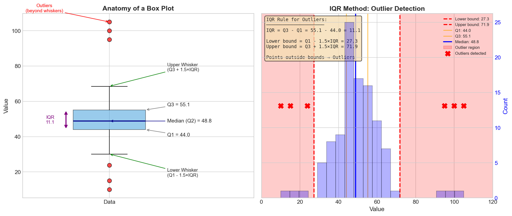 Figure: Anatomy of a box-plot (left) showing Q1, median, Q3, IQR, and whiskers. The IQR method (right) detects outliers as points beyond Q1 - 1.5×IQR or Q3 + 1.5×IQR.
import numpy as np
def detect_outliers_iqr(data):
"""Detect outliers using IQR method (1.5×IQR rule)"""
Q1 = np.percentile(data, 25)
Q3 = np.percentile(data, 75)
IQR = Q3 - Q1
lower_bound = Q1 - 1.5 * IQR
upper_bound = Q3 + 1.5 * IQR
outliers = (data < lower_bound) | (data > upper_bound)
return outliers, lower_bound, upper_bound
# Example
data = np.array([1, 2, 3, 4, 5, 6, 7, 8, 9, 100]) # 100 is outlier
is_outlier, lb, ub = detect_outliers_iqr(data)
print(f"Outliers: {data[is_outlier]}") # [100]2. Z-Score Method
For normally distributed data, points far from the mean (typically > 3σ) are outliers:
\[z = \frac{x - \mu}{\sigma}\]
def detect_outliers_zscore(data, threshold=3):
"""Detect outliers using Z-score (points > threshold std from mean)"""
mean = np.mean(data)
std = np.std(data)
z_scores = np.abs((data - mean) / std)
return z_scores > threshold| Method | Best For | Assumption |
|---|---|---|
| IQR | Any distribution, robust | None (non-parametric) |
| Z-Score | Normal distribution | Gaussian data |
| Modified Z-Score | Skewed data | Uses median instead of mean |
3. ML-Based Methods (High-Dimensional Data)
| Method | How It Works | When to Use |
|---|---|---|
| Isolation Forest | Isolates outliers with random splits | High-dimensional, mixed features |
| DBSCAN | Points not in any cluster are outliers | Spatial data, unknown # of clusters |
| LOF (Local Outlier Factor) | Compares local density to neighbors | Varying density regions |
| Mahalanobis Distance | Accounts for feature correlations | Multivariate, correlated features |
| Autoencoders | High reconstruction error = outlier | Complex patterns, deep learning |
from sklearn.ensemble import IsolationForest
# Isolation Forest for high-dimensional data
clf = IsolationForest(contamination=0.1, random_state=42)
outlier_labels = clf.fit_predict(X) # -1 for outliers, 1 for inliersHandling Strategies
Once outliers are detected, you have several options:
| Strategy | When to Use | How |
|---|---|---|
| Remove | True errors, data corruption | Delete outlier rows |
| Cap/Winsorize | Keep data, limit influence | Clip to percentiles (e.g., 1st/99th) |
| Transform | Reduce skewness | Apply log, sqrt, Box-Cox |
| Impute | Treat as missing | Replace with median/mode |
| Keep | True rare events | Use robust methods |
# Winsorization: Cap at percentiles
from scipy.stats import mstats
def winsorize(data, limits=(0.01, 0.01)):
"""Cap outliers at 1st and 99th percentiles"""
return mstats.winsorize(data, limits=limits)
# Log transform: Reduce right skew
def log_transform(data):
return np.log1p(data) # log(1+x) handles zerosMaking Models Robust to Outliers
1. Use Robust Loss Functions
| Loss | Robustness | When to Use |
|---|---|---|
| MSE | ❌ Not robust | Clean data, Gaussian errors |
| MAE | ✅ Robust | Some outliers expected |
| Huber | ✅ Hybrid | MSE for small errors, MAE for large |
| Quantile | ✅ Very robust | Regression with heavy-tailed errors |
# Huber loss: MSE for small errors, MAE for large
import torch.nn as nn
criterion = nn.HuberLoss(delta=1.0) # delta controls transition point2. Use Robust Scaling
from sklearn.preprocessing import RobustScaler
# Uses median and IQR instead of mean and std
# Much less affected by outliers than StandardScaler
scaler = RobustScaler() # (x - median) / IQR
X_scaled = scaler.fit_transform(X)3. Choose Robust Algorithms
| Robust | Not Robust |
|---|---|
| Tree-based (Random Forest, XGBoost) | Linear Regression |
| Median-based methods | Mean-based methods |
| Huber Regression | OLS Regression |
| k-Medoids | k-Means |
4. Regularization Helps
Regularization reduces variance and makes models less sensitive to individual points:
- L2 (Ridge): Shrinks weights, reduces influence of any single feature
- Dropout: Random neuron dropping prevents over-reliance on specific patterns
Interview Q: “Why are tree-based models robust to outliers?”
A: Tree-based models (Random Forest, XGBoost) split data based on thresholds, not magnitudes. A value of 100 vs 1,000,000 might fall in the same leaf node if they’re both above the split threshold. The prediction depends on which leaf the point lands in, not the exact value. This makes trees naturally robust to outliers—unlike linear models where outliers directly pull the regression line.
Quick Decision Guide
Outlier detected?
│
├── Is it a data error?
│ │
│ ├── YES → Remove or impute
│ │
│ └── NO (rare but valid)
│ │
│ ├── Use robust methods (MAE, Huber, trees)
│ └── Or winsorize/cap if you must use non-robust methods
│
└── Not sure?
│
└── 1. Investigate the data point
2. Try both with/without
3. Use cross-validation to decide1.10 Loss Function Comparison
The loss function (also called cost function or objective function) is arguably the most important design choice in machine learning—it defines exactly what “good” means for your model. During training, the optimizer’s sole job is to minimize this function, so your model will learn whatever behavior the loss function rewards.
Why does loss function choice matter so much?
Defines the learning signal: The gradients that update your weights come from the loss. Choose the wrong loss, and your model receives misleading gradients that don’t guide it toward the right solution.
Must match your task:
- Regression (predict continuous values): Use MSE, MAE, or Huber
- Classification (predict categories): Use Cross-Entropy (binary or categorical)
- Using MSE for classification can fail spectacularly—see below!
Affects optimization dynamics: Some losses have better gradient properties than others. Cross-entropy gives clean gradients for classification; MSE with sigmoid can cause vanishing gradients.
How to think about it: The loss function is a contract between you and the optimizer. You specify “minimize this number,” and the optimizer will find weights that do exactly that—even if that’s not what you actually wanted. Choosing the right loss ensures that minimizing the number also means solving your actual problem.
Quick Reference Table
| Loss Function | Task | Output Activation | Formula |
|---|---|---|---|
| MSE | Regression | None (linear) | \(\frac{1}{N}\sum(y - \hat{y})^2\) |
| MAE | Regression | None | \(\frac{1}{N}\sum|y - \hat{y}|\) |
| Binary CE | Binary classification | Sigmoid | \(-[y\log\hat{y} + (1-y)\log(1-\hat{y})]\) |
| Categorical CE | Multi-class | Softmax | \(-\sum_k y_k \log \hat{y}_k\) |
| Hinge | Binary (SVM) | None | \(\max(0, 1 - y \cdot \hat{y})\) |
MSE vs Cross-Entropy for Classification
Why not MSE for classification?
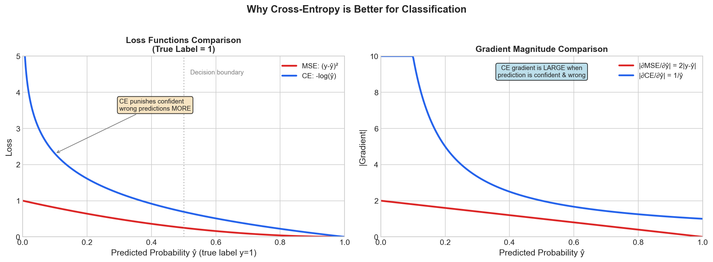 Figure: Comparison of Cross-Entropy and MSE loss for classification. Cross-entropy penalizes confident wrong predictions much more severely.
True label: y = 1
Prediction: ŷ = 0.99 (very confident, correct)
MSE: (1 - 0.99)² = 0.0001
CE: -log(0.99) = 0.01
Prediction: ŷ = 0.01 (very confident, WRONG!)
MSE: (1 - 0.01)² = 0.98
CE: -log(0.01) = 4.6 ← Much stronger penalty!Cross-entropy penalizes confident wrong predictions much more heavily!
MSE Gradient Problem
For sigmoid output with MSE: \[\frac{\partial \text{MSE}}{\partial z} \propto \sigma(z)(1-\sigma(z))\]
When \(\sigma(z) \approx 0\) or \(\sigma(z) \approx 1\): gradient vanishes!
For cross-entropy: \[\frac{\partial \text{CE}}{\partial z} = \hat{y} - y\]
No vanishing gradient! Clean, constant-scale updates.
Huber Loss: Best of Both Worlds
\[L_\delta(y, \hat{y}) = \begin{cases} \frac{1}{2}(y - \hat{y})^2 & |y - \hat{y}| \leq \delta \\ \delta|y - \hat{y}| - \frac{1}{2}\delta^2 & |y - \hat{y}| > \delta \end{cases}\]
- MSE for small errors (smooth)
- MAE for large errors (robust to outliers)
1.11 Convolutional Neural Networks (CNNs)
The Problem with MLPs for Images
A 224×224 RGB image has 224 × 224 × 3 = 150,528 input features.
Fully connected layer with 1000 hidden units:
- 150,528 × 1000 = 150 million parameters in first layer alone!
- Doesn’t exploit spatial structure
- No translation invariance
The Convolution Operation
A filter (kernel) slides across the image:
Input (5×5): Filter (3×3): Output (3×3):
┌───┬───┬───┬───┬───┐ ┌───┬───┬───┐
│ 1 │ 2 │ 3 │ 0 │ 1 │ │ 1 │ 0 │-1 │
├───┼───┼───┼───┼───┤ ├───┼───┼───┤
│ 0 │ 1 │ 2 │ 3 │ 2 │ │ 1 │ 0 │-1 │ Slide filter,
├───┼───┼───┼───┼───┤ * ├───┼───┼───┤ → compute dot product
│ 1 │ 0 │ 1 │ 0 │ 1 │ │ 1 │ 0 │-1 │ at each position
├───┼───┼───┼───┼───┤ └───┴───┴───┘
│ 2 │ 1 │ 0 │ 1 │ 2 │
├───┼───┼───┼───┼───┤
│ 1 │ 0 │ 2 │ 1 │ 0 │
└───┴───┴───┴───┴───┘
Example computation (top-left):
1×1 + 2×0 + 3×(-1) + 0×1 + 1×0 + 2×(-1) + 1×1 + 0×0 + 1×(-1) = 1-3-2+1-1 = -4Why Convolutions Work
- Parameter sharing: Same filter used everywhere → fewer parameters
- Local connectivity: Each output depends on small local region
- Translation equivariance: Cat in corner detected same as cat in center
Key CNN Concepts
Stride: How many pixels to move the filter each step
- Stride 1: Output ≈ input size
- Stride 2: Output ≈ half input size
Padding: Add zeros around input to preserve dimensions
- “Same” padding: Output = Input size
- “Valid” padding: No padding, output smaller
Pooling: Downsample by taking max/average over regions
2×2 Max Pool:
┌───┬───┐ ┌───┐
│ 1 │ 3 │ │ 4 │
├───┼───┤ → └───┘
│ 2 │ 4 │
└───┴───┘Receptive Fields: What Each Neuron “Sees”
The receptive field of a neuron is the region of the input image that can influence its output. Understanding receptive fields is crucial for CNN design.
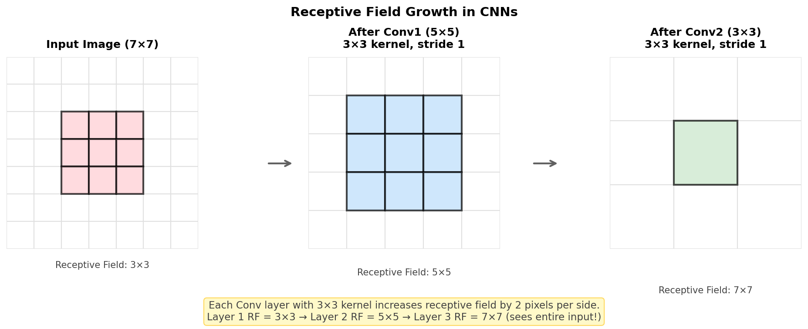 Figure: Receptive field growth in a CNN. Each 3×3 convolution increases the receptive field by 2 pixels per side. After 2 layers with 3×3 kernels, a single output neuron “sees” a 5×5 region of the input.
Receptive field formula (for stride-1 convolutions):
\[RF_{out} = RF_{in} + (k - 1) \times \prod_{i=1}^{l-1} s_i\]
Where: - \(RF\) = receptive field size - \(k\) = kernel size - \(s_i\) = stride at layer \(i\)
Simplified rule for 3×3 kernels with stride 1: \[RF_l = RF_{l-1} + 2\]
Starting from \(RF_0 = 1\) (single pixel): - After Conv1 (3×3): RF = 3 - After Conv2 (3×3): RF = 5 - After Conv3 (3×3): RF = 7 - After Conv4 (3×3): RF = 9
Why receptive fields matter:
- Feature hierarchy: Early layers have small RFs → detect edges, textures. Deep layers have large RFs → detect objects, scenes
- Network depth: Deeper networks = larger RFs = can capture more global information
- Design tradeoff: Larger kernels (5×5, 7×7) increase RF faster but add more parameters
Interview Q: “Why do modern CNNs use stacked 3×3 convolutions instead of larger kernels?”
A: Two 3×3 convolutions have the same receptive field as one 5×5 (RF = 5), but with: - Fewer parameters: \(2 \times (3^2) = 18\) vs \(5^2 = 25\) - More non-linearity: Two ReLU activations vs one - More representational power
A Simple CNN Architecture
Input: 32×32×3 (e.g., CIFAR-10 image)
↓
Conv: 32 filters, 3×3 → 32×32×32
ReLU
MaxPool 2×2 → 16×16×32
↓
Conv: 64 filters, 3×3 → 16×16×64
ReLU
MaxPool 2×2 → 8×8×64
↓
Flatten → 4096
↓
FC → 256
ReLU
↓
FC → 10 (classes)
SoftmaxPyTorch CNN
import torch.nn as nn
class SimpleCNN(nn.Module):
def __init__(self):
super().__init__()
self.conv1 = nn.Conv2d(3, 32, kernel_size=3, padding=1)
self.conv2 = nn.Conv2d(32, 64, kernel_size=3, padding=1)
self.pool = nn.MaxPool2d(2, 2)
self.fc1 = nn.Linear(64 * 8 * 8, 256)
self.fc2 = nn.Linear(256, 10)
def forward(self, x):
x = self.pool(F.relu(self.conv1(x))) # 32×32 → 16×16
x = self.pool(F.relu(self.conv2(x))) # 16×16 → 8×8
x = x.view(-1, 64 * 8 * 8) # Flatten
x = F.relu(self.fc1(x))
x = self.fc2(x)
return x1.12 Word Embeddings
The Problem: How to Represent Words as Numbers?
Neural networks need numerical inputs. How do we convert words to numbers?
Approach 1: One-Hot Encoding
"cat" → [1, 0, 0, 0]
"dog" → [0, 1, 0, 0]
"bird" → [0, 0, 1, 0]
"fish" → [0, 0, 0, 1]Problems:
- Sparse: V = 50,000 → vectors with 49,999 zeros
- No similarity: cat·dog = 0 (orthogonal), even though semantically related
- Memory: Large vocabulary = huge vectors
Approach 2: Dense Embeddings
Map each word to a dense, low-dimensional vector:
"cat" → [0.2, -0.4, 0.1, 0.8, ...] (d = 300 dimensions)
"dog" → [0.3, -0.3, 0.0, 0.7, ...] (similar to cat!)
"fish" → [-0.5, 0.2, 0.9, -0.1, ...] (different)Why Embeddings Work
Distributional hypothesis: Words that appear in similar contexts have similar meanings.
“The cat sat on the mat” “The dog sat on the mat”
cat and dog appear in similar contexts → similar embeddings!
Embedding Layer in PyTorch
import torch.nn as nn
# Vocabulary of 10,000 words, embedding dimension 300
embedding = nn.Embedding(num_embeddings=10000, embedding_dim=300)
# Convert word indices to embeddings
word_indices = torch.tensor([42, 1337, 99]) # 3 words
word_vectors = embedding(word_indices) # Shape: (3, 300)Pretrained Embeddings
Word2Vec, GloVe: Trained on billions of words
- Capture semantic relationships
- “king” - “man” + “woman” ≈ “queen”
# Using pretrained GloVe
from torchtext.vocab import GloVe
glove = GloVe(name='6B', dim=300)
cat_embedding = glove['cat'] # 300-dimensional vectorHow Word2Vec Learns: Skip-gram Training
Understanding how Word2Vec learns embeddings provides deep insight into self-supervised learning—the foundation of modern LLMs.
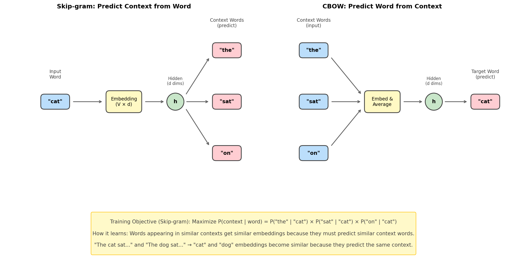 Figure: Skip-gram and CBOW architectures. Skip-gram predicts context words from the center word; CBOW predicts the center word from context.
The Skip-gram Objective
Given a center word, predict its surrounding context words:
\[\text{maximize} \quad \sum_{t=1}^{T} \sum_{-c \leq j \leq c, j \neq 0} \log P(w_{t+j} | w_t)\]
Where \(c\) is the context window size.
The probability model:
\[P(w_O | w_I) = \frac{\exp(v'_{w_O} \cdot v_{w_I})}{\sum_{w=1}^{V} \exp(v'_w \cdot v_{w_I})}\]
This is just a softmax! The dot product measures similarity between: - \(v_{w_I}\): Input embedding of the center word - \(v'_{w_O}\): Output embedding of the context word
Why this learns semantic similarity:
The training signal “predict context from word” forces words appearing in similar contexts to have similar embeddings. Consider:
"The cat sat on the mat"
"The dog sat on the mat"Both “cat” and “dog” must predict the same context words (“the”, “sat”, “on”, “mat”), so they’re pushed to have similar embeddings!
Negative Sampling (Practical Training)
The full softmax over vocabulary is expensive (V can be 100,000+). Negative sampling approximates it:
Instead of computing the full softmax, contrast the positive (real) context word against random “negative” words:
\[\mathcal{L} = \log \sigma(v'_{w_O} \cdot v_{w_I}) + \sum_{i=1}^{k} \mathbb{E}_{w_i \sim P_n(w)} [\log \sigma(-v'_{w_i} \cdot v_{w_I})]\]
- First term: Push the real context word embedding closer to center word
- Second term: Push random noise words away from center word
- Typically \(k = 5\)-20 negative samples
This is contrastive learning! The same principle underlies modern self-supervised methods like SimCLR and CLIP.
From Word Embeddings to Transformers
Modern LLMs don’t use fixed word embeddings:
- Subword tokenization: “unhappiness” → [“un”, “happiness”]
- Contextual embeddings: Same word, different meaning in context
- Learned during pretraining: Not pretrained separately
Static embedding (Word2Vec):
"bank" → same vector always
Contextual embedding (BERT, GPT):
"river bank" → one vector
"bank account" → different vector!1.13 The XOR Problem: A Complete MLP Example
Why XOR?
XOR is the classic example showing why we need hidden layers:
| \(x_1\) | \(x_2\) | \(y\) (XOR) |
|---|---|---|
| 0 | 0 | 0 |
| 0 | 1 | 1 |
| 1 | 0 | 1 |
| 1 | 1 | 0 |
No single line can separate the classes! (It’s not linearly separable)
x₂
↑
1 │ ● ○ ← Can't draw one line
│ to separate ● from ○
0 │ ○ ●
└──────────────→ x₁
0 1The Network Architecture
Input Layer Hidden Layer (2 neurons) Output Layer
x₁ ─────┐
├───→ h₁ ─────┐
x₂ ─────┤ ├───→ y
├───→ h₂ ─────┘
1 (bias)─┘Dimensions:
- Input: 2 features
- Hidden: 2 neurons (with ReLU)
- Output: 1 neuron (with sigmoid)
Step 1: Initialize Weights
Let’s use specific weights that solve XOR:
Hidden layer weights \(W^{(1)}\) and biases \(b^{(1)}\): \[W^{(1)} = \begin{bmatrix} 1 & 1 \\ 1 & 1 \end{bmatrix}, \quad b^{(1)} = \begin{bmatrix} 0 \\ -1 \end{bmatrix}\]
Output layer weights \(W^{(2)}\) and bias \(b^{(2)}\): \[W^{(2)} = \begin{bmatrix} 1 \\ -2 \end{bmatrix}, \quad b^{(2)} = 0\]
Step 2: Forward Pass (for input [1, 1])
Hidden layer pre-activation: \[z^{(1)} = W^{(1)} \begin{bmatrix} 1 \\ 1 \end{bmatrix} + b^{(1)} = \begin{bmatrix} 1 \cdot 1 + 1 \cdot 1 \\ 1 \cdot 1 + 1 \cdot 1 \end{bmatrix} + \begin{bmatrix} 0 \\ -1 \end{bmatrix} = \begin{bmatrix} 2 \\ 1 \end{bmatrix}\]
Hidden layer activation (ReLU): \[h = \text{ReLU}(z^{(1)}) = \begin{bmatrix} \max(0, 2) \\ \max(0, 1) \end{bmatrix} = \begin{bmatrix} 2 \\ 1 \end{bmatrix}\]
Output layer pre-activation: \[z^{(2)} = W^{(2)T} h + b^{(2)} = 1 \cdot 2 + (-2) \cdot 1 + 0 = 0\]
Output (sigmoid): \[\hat{y} = \sigma(0) = \frac{1}{1 + e^0} = 0.5\]
Step 3: All Four Inputs
| Input \((x_1, x_2)\) | \(z^{(1)}\) | \(h\) (ReLU) | \(z^{(2)}\) | \(\hat{y}\) | Target \(y\) |
|---|---|---|---|---|---|
| (0, 0) | (0, -1) | (0, 0) | 0 | 0.5 | 0 |
| (0, 1) | (1, 0) | (1, 0) | 1 | 0.73 | 1 |
| (1, 0) | (1, 0) | (1, 0) | 1 | 0.73 | 1 |
| (1, 1) | (2, 1) | (2, 1) | 0 | 0.5 | 0 |
Better-Tuned Weights for XOR
The weights above give outputs at 0.5 for (0,0) and (1,1) — not ideal. Here are better weights that give outputs closer to 0 and 1:
Optimal hidden layer weights \(W^{(1)}\) and biases \(b^{(1)}\): \[W^{(1)} = \begin{bmatrix} 20 & 20 \\ 20 & 20 \end{bmatrix}, \quad b^{(1)} = \begin{bmatrix} -10 \\ -30 \end{bmatrix}\]
Optimal output layer weights \(W^{(2)}\) and bias \(b^{(2)}\): \[W^{(2)} = \begin{bmatrix} 20 \\ -20 \end{bmatrix}, \quad b^{(2)} = -10\]
With these weights:
| Input \((x_1, x_2)\) | \(z^{(1)}\) | \(h\) (ReLU) | \(z^{(2)}\) | \(\hat{y}\) | Target \(y\) |
|---|---|---|---|---|---|
| (0, 0) | (-10, -30) | (0, 0) | -10 | 0.00005 ≈ 0 | 0 ✓ |
| (0, 1) | (10, -10) | (10, 0) | 190 | 1.0 ≈ 1 | 1 ✓ |
| (1, 0) | (10, -10) | (10, 0) | 190 | 1.0 ≈ 1 | 1 ✓ |
| (1, 1) | (30, 10) | (30, 10) | 390 | 0.00005 ≈ 0 | 0 ✓ |
Intuition behind these weights: - Hidden neuron 1: \(h_1 = \text{ReLU}(20x_1 + 20x_2 - 10)\) fires when at least one input is 1 - Hidden neuron 2: \(h_2 = \text{ReLU}(20x_1 + 20x_2 - 30)\) fires only when both inputs are 1 - Output: \(20h_1 - 20h_2 - 10\) is large positive only when \(h_1 > 0\) and \(h_2 = 0\)
Step 4: Compute Loss (Binary Cross-Entropy)
For input (1, 1) with \(\hat{y} = 0.5\), target \(y = 0\):
\[\mathcal{L} = -[y \log(\hat{y}) + (1-y) \log(1-\hat{y})]\]
\[= -[0 \cdot \log(0.5) + 1 \cdot \log(0.5)]\]
\[= -\log(0.5) = 0.693\]
Step 5: Backward Pass
Output layer gradient: \[\frac{\partial \mathcal{L}}{\partial z^{(2)}} = \hat{y} - y = 0.5 - 0 = 0.5\]
Gradient w.r.t. output weights: \[\frac{\partial \mathcal{L}}{\partial W^{(2)}} = h \cdot \frac{\partial \mathcal{L}}{\partial z^{(2)}} = \begin{bmatrix} 2 \\ 1 \end{bmatrix} \cdot 0.5 = \begin{bmatrix} 1.0 \\ 0.5 \end{bmatrix}\]
Gradient flowing to hidden layer: \[\frac{\partial \mathcal{L}}{\partial h} = W^{(2)} \cdot \frac{\partial \mathcal{L}}{\partial z^{(2)}} = \begin{bmatrix} 1 \\ -2 \end{bmatrix} \cdot 0.5 = \begin{bmatrix} 0.5 \\ -1.0 \end{bmatrix}\]
Through ReLU (gradient is 1 where input > 0, else 0): \[\frac{\partial \mathcal{L}}{\partial z^{(1)}} = \frac{\partial \mathcal{L}}{\partial h} \odot \mathbf{1}_{z^{(1)} > 0} = \begin{bmatrix} 0.5 \\ -1.0 \end{bmatrix} \odot \begin{bmatrix} 1 \\ 1 \end{bmatrix} = \begin{bmatrix} 0.5 \\ -1.0 \end{bmatrix}\]
Gradient w.r.t. hidden weights: \[\frac{\partial \mathcal{L}}{\partial W^{(1)}} = \frac{\partial \mathcal{L}}{\partial z^{(1)}} \cdot x^T = \begin{bmatrix} 0.5 \\ -1.0 \end{bmatrix} \cdot \begin{bmatrix} 1 & 1 \end{bmatrix} = \begin{bmatrix} 0.5 & 0.5 \\ -1.0 & -1.0 \end{bmatrix}\]
PyTorch Implementation
import torch
import torch.nn as nn
# XOR data
X = torch.tensor([[0, 0], [0, 1], [1, 0], [1, 1]], dtype=torch.float32)
y = torch.tensor([[0], [1], [1], [0]], dtype=torch.float32)
# Network
model = nn.Sequential(
nn.Linear(2, 2),
nn.ReLU(),
nn.Linear(2, 1),
nn.Sigmoid()
)
criterion = nn.BCELoss()
optimizer = torch.optim.SGD(model.parameters(), lr=1.0)
# Training
for epoch in range(1000):
y_pred = model(X)
loss = criterion(y_pred, y)
optimizer.zero_grad()
loss.backward()
optimizer.step()
if epoch % 200 == 0:
print(f"Epoch {epoch}, Loss: {loss.item():.4f}")
# Test
print("\nPredictions:")
print(model(X).detach().round()) # Should be [[0], [1], [1], [0]]Key Insights
- Hidden layer creates new representation: The hidden layer transforms the space so that XOR becomes linearly separable
- Non-linearity is essential: Without ReLU, two linear layers collapse to one
- Backprop chain rule: Gradients flow backward through each layer
1.14 Weight Initialization
Why Does Initialization Matter?
Bad initialization leads to:
- All zeros: All neurons compute the same thing, learn the same features (symmetry problem)
- Too small: Activations shrink to zero layer by layer (vanishing signals)
- Too large: Activations explode, gradients explode
The Goal
Keep activations and gradients at reasonable scale throughout the network.
Xavier/Glorot Initialization (2010)
For tanh/sigmoid activations:
\[W \sim \mathcal{N}\left(0, \frac{2}{n_{\text{in}} + n_{\text{out}}}\right) \quad \text{or} \quad W \sim \mathcal{U}\left(-\sqrt{\frac{6}{n_{\text{in}} + n_{\text{out}}}}, \sqrt{\frac{6}{n_{\text{in}} + n_{\text{out}}}}\right)\]
Intuition: Balance the variance of inputs and outputs so signal doesn’t explode or vanish.
# PyTorch
nn.init.xavier_uniform_(layer.weight)
nn.init.xavier_normal_(layer.weight)He/Kaiming Initialization (2015)
For ReLU activations (ReLU kills half the signal, so we compensate):
\[W \sim \mathcal{N}\left(0, \frac{2}{n_{\text{in}}}\right)\]
Why factor of 2? ReLU zeroes out negative half, so variance is halved. We double the initial variance to compensate.
Deriving He Initialization: Variance Propagation
Let’s derive why He initialization uses \(\text{Var}(W) = \frac{2}{n_{in}}\) for ReLU networks.
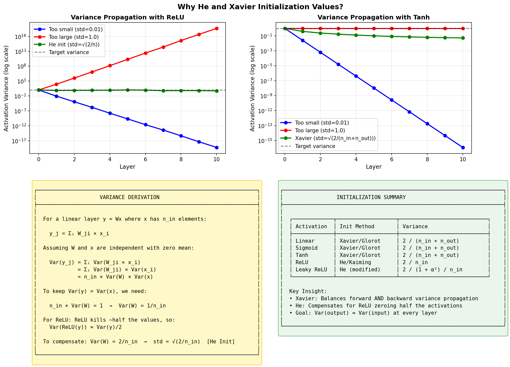 Figure: How activation variance propagates through layers. Without proper initialization, variance either explodes or vanishes exponentially. The goal: keep Var(y) ≈ Var(x) at each layer.
Setup: Consider a single layer \(y = Wx + b\) where: - Input \(x\) has \(n_{in}\) components, each with variance \(\text{Var}(x_j)\) - Weights \(W_{ij} \sim \mathcal{N}(0, \sigma_w^2)\) are independent of inputs - We want \(\text{Var}(y_i) = \text{Var}(x_j)\) (preserve variance)
Step 1: Variance of one output neuron (before activation)
\[y_i = \sum_{j=1}^{n_{in}} W_{ij} x_j + b_i\]
For zero-mean \(x\) and \(W\), assuming independence:
\[\text{Var}(y_i) = \sum_{j=1}^{n_{in}} \text{Var}(W_{ij} x_j) = \sum_{j=1}^{n_{in}} \text{Var}(W_{ij}) \cdot \text{Var}(x_j) = n_{in} \cdot \sigma_w^2 \cdot \text{Var}(x)\]
Step 2: Preserve variance (Xavier derivation)
For \(\text{Var}(y) = \text{Var}(x)\), we need: \[n_{in} \cdot \sigma_w^2 = 1 \implies \sigma_w^2 = \frac{1}{n_{in}}\]
This is Xavier initialization — perfect for linear layers or tanh (which is approximately linear near 0).
Step 3: Account for ReLU (He derivation)
ReLU zeros out negative values. For zero-mean Gaussian input, exactly half the values are negative:
\[\text{ReLU}(y) = \begin{cases} y & \text{if } y > 0 \\ 0 & \text{if } y \leq 0 \end{cases}\]
The variance after ReLU is halved: \[\text{Var}(\text{ReLU}(y)) = \frac{1}{2} \text{Var}(y)\]
To compensate, we need twice the initial variance:
\[\sigma_w^2 = \frac{2}{n_{in}}\]
This is He/Kaiming initialization!
Why this matters: Without this factor of 2, variance shrinks by half at each layer. After 10 layers: \(0.5^{10} \approx 0.001\) — activations become tiny, gradients vanish.
# PyTorch (default for nn.Linear with ReLU)
nn.init.kaiming_uniform_(layer.weight, nonlinearity='relu')
nn.init.kaiming_normal_(layer.weight, nonlinearity='relu')Quick Reference
| Activation | Initialization | Variance |
|---|---|---|
| Sigmoid/Tanh | Xavier | \(\frac{2}{n_{in} + n_{out}}\) |
| ReLU | He/Kaiming | \(\frac{2}{n_{in}}\) |
| Linear (no activation) | Xavier | \(\frac{2}{n_{in} + n_{out}}\) |
What About Biases?
Almost always initialize to zero:
nn.init.zeros_(layer.bias)Exception: LSTM forget gate biases often initialized to 1 to encourage remembering.
Example: Why Bad Init Fails
# BAD: All zeros
for layer in model.modules():
if hasattr(layer, 'weight'):
layer.weight.data.fill_(0)
# Result: All neurons output the same thing, all gradients identical
# BAD: Too large
for layer in model.modules():
if hasattr(layer, 'weight'):
layer.weight.data.normal_(0, 10)
# Result: Activations explode, NaN losses
# GOOD: He initialization for ReLU network
for layer in model.modules():
if isinstance(layer, nn.Linear):
nn.init.kaiming_normal_(layer.weight, nonlinearity='relu')1.15 Dropout
What is Dropout?
During training, randomly set neurons to zero with probability \(p\):
Without dropout: With dropout (p=0.5):
[0.5] → [0.3] [0.5] → [0.0] ← dropped!
[0.8] → [0.2] [0.8] → [0.4] ← scaled by 1/(1-p)
[0.1] → [0.7] [0.0] → [0.0] ← dropped!
[0.9] → [0.5] [0.9] → [1.0] ← scaledWhy Does It Work?
- Prevents co-adaptation: Neurons can’t rely on specific other neurons being present
- Ensemble effect: Each forward pass uses a different “sub-network”
- Implicit regularization: Similar effect to training many models and averaging
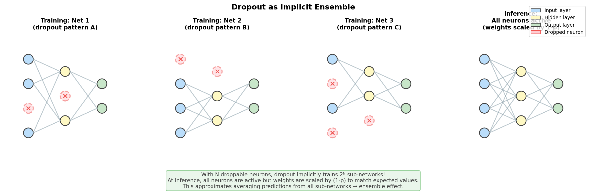 Figure: Dropout creates an implicit ensemble of exponentially many sub-networks. During training, each forward pass uses a different random subset of neurons (shown as different colored sub-networks). At inference, we use the full network with scaled weights, which approximates the average prediction of all sub-networks.
Training vs Inference
Training: Drop neurons with probability \(p\), scale remaining by \(\frac{1}{1-p}\)
Inference: Use all neurons (no dropping)
class Dropout(nn.Module):
def __init__(self, p=0.5):
self.p = p
def forward(self, x):
if self.training: # Training mode
mask = (torch.rand_like(x) > self.p).float()
return x * mask / (1 - self.p) # Scale to maintain expected value
else: # Inference mode
return x # No changePyTorch Usage
model = nn.Sequential(
nn.Linear(784, 256),
nn.ReLU(),
nn.Dropout(p=0.5), # 50% dropout
nn.Linear(256, 128),
nn.ReLU(),
nn.Dropout(p=0.5),
nn.Linear(128, 10)
)
# CRITICAL: Set mode correctly!
model.train() # Enable dropout
model.eval() # Disable dropoutTypical Dropout Rates
| Layer Type | Typical \(p\) |
|---|---|
| Input layer | 0.1-0.2 (light) |
| Hidden layers | 0.3-0.5 |
| Before output | 0.0-0.3 |
| CNNs | 0.25-0.5 |
| Transformers | 0.1 |
Dropout Variants
| Variant | Description |
|---|---|
| Standard | Drop individual neurons |
| Spatial (CNNs) | Drop entire channels |
| DropConnect | Drop individual weights |
| DropBlock | Drop contiguous regions |
Interview Q: “Why use dropout instead of L2?”
A: Different mechanisms:
- L2 shrinks all weights smoothly
- Dropout forces redundancy and prevents co-adaptation
- Dropout is stochastic (different network each pass)
- Can use both together!
1.16 Overfitting & Regularization Preview
Overfitting is perhaps the most fundamental challenge in machine learning. It occurs when a model learns the training data too well — including its noise and idiosyncrasies — rather than the underlying patterns that generalize to new data. Understanding and preventing overfitting is what separates models that work in practice from those that only work on paper.
The Central Problem
The core tension in machine learning is this: we want our model to perform well on data it has never seen before, but we can only train it on data we have. This creates a fundamental dilemma.
Training Data
↓
[Your Model]
↓
┌────────────────┴────────────────┐
↓ ↓
Fits training Generalizes to
data well new data?
EASY THE HARD PARTA sufficiently complex model can memorize any training set — given enough parameters, it can simply store each training example and its label. Such a model achieves zero training error but learns nothing useful. When shown a new example, it has no idea what to do because it never learned the underlying pattern; it only memorized specific instances.
The goal of regularization is to prevent this memorization by encouraging the model to learn simpler, more generalizable patterns. The intuition is that the true underlying relationship is usually simpler than the noise-contaminated training data suggests.
Visual: The Overfitting Spectrum
The figure above illustrates the spectrum from underfitting to overfitting:
Underfitting (High Bias): The model is too simple to capture the underlying pattern. A linear model trying to fit a quadratic relationship, for example. Both training and test error are high.
Good Fit: The model captures the true underlying pattern without memorizing noise. Training error is low, and test error is similarly low.
Overfitting (High Variance): The model is too complex and has memorized training-specific noise. Training error is very low (often near zero), but test error is high because the “learned” noise doesn’t exist in new data.
Learning Curves: Your Diagnostic Tool
Learning curves are your most powerful tool for diagnosing training problems. They plot training and validation loss (or accuracy) against training progress (epochs or iterations).
How to read learning curves:
Healthy training: Both curves decrease together and converge to similar values. The gap between them is small and stable.
Overfitting signature: Training loss continues to decrease, but validation loss stops improving or starts increasing. The gap between them grows over time. This tells you the model is memorizing training data rather than learning generalizable patterns.
Underfitting signature: Both training and validation loss remain high and plateau early. Neither improves much with more training. This tells you the model lacks capacity to learn the pattern, or there’s a fundamental problem with the setup.
When to stop: The optimal stopping point is typically where validation loss is lowest — just before the gap starts widening. This is why early stopping is so effective.
The Regularization Toolbox
Regularization encompasses any technique that helps your model generalize better, typically by constraining its complexity in some way. Here are the main tools:
| Technique | How It Helps | When to Use |
|---|---|---|
| L2 (Weight Decay) | Shrinks weights | Almost always |
| L1 | Zeros weights (sparsity) | Feature selection |
| Dropout | Forces redundancy | Deep networks |
| Early Stopping | Stop before overfitting | Always monitor! |
| Data Augmentation | More effective data | Images, text |
| Batch Normalization | Stabilizes + regularizes | Deep networks |
L2 Regularization (Weight Decay)
\[\text{Total Loss} = \underbrace{\text{Data Loss}}_{\text{fit the data}} + \underbrace{\lambda \sum_j w_j^2}_{\text{keep weights small}}\]
Effect: Larger \(\lambda\) → smaller weights → simpler model → less overfitting
Key property: Shrinks all weights toward zero, but rarely makes them exactly zero.
L1 Regularization (Lasso)
\[\text{Total Loss} = \underbrace{\text{Data Loss}}_{\text{fit the data}} + \underbrace{\lambda \sum_j |w_j|}_{\text{push weights to zero}}\]
Effect: Larger \(\lambda\) → more weights become exactly zero → automatic feature selection
Key property: Creates sparse models — some features are completely ignored.
L1 vs L2: When to Use Which?
| Property | L1 (Lasso) | L2 (Ridge) |
|---|---|---|
| Sparsity | Yes (exact zeros) | No (small but non-zero) |
| Feature selection | Automatic | No |
| Multiple correlated features | Picks one arbitrarily | Shrinks all equally |
| Computation | Non-differentiable at 0 | Smooth everywhere |
| When to use | Many irrelevant features | All features matter |
Visual intuition (in 2D weight space):
L2 Constraint (circle): L1 Constraint (diamond):
___ /\
/ \ / \
| ● | ← Solution / \
\ / / ● \ ← Solution hits corner
‾‾‾ \ / (one weight = 0!)
\ /
\ /
\/The L1 diamond has corners on the axes — the optimal point often lands on a corner where one or more weights are exactly zero.
Quick Decision Tree
Model overfitting?
│
├── YES → 1. Add/increase dropout
│ 2. Add/increase L2 (weight decay)
│ 3. Get more data / data augmentation
│ 4. Reduce model size (last resort)
│
└── NO (underfitting) → 1. Bigger model
2. More features
3. Train longer
4. Less regularizationThe Bias-Variance Tradeoff (Preview)
\[\text{Expected Error} = \text{Bias}^2 + \text{Variance} + \text{Noise}\]
| High Bias | High Variance | |
|---|---|---|
| Symptom | Train error ≈ Test error (both high) | Train error << Test error |
| Cause | Model too simple | Model too complex |
| Fix | More complexity | More regularization |
💡 See Part 2 for full treatment of bias-variance and Part 3 for detailed regularization math!
1.17 Putting It All Together: Complete Neural Network Setup
This section consolidates everything from Part 1 into a single, practical code example showing how to configure each component of a neural network.
Complete Keras Example
import tensorflow as tf
from tensorflow import keras
from tensorflow.keras import layers, regularizers
# ═══════════════════════════════════════════════════════════════════
# MODEL DEFINITION
# ═══════════════════════════════════════════════════════════════════
model = keras.Sequential([
# Input layer (optional explicit definition)
layers.Input(shape=(784,)),
# Hidden Layer 1
layers.Dense(
units=256, # Number of neurons
activation='relu', # Activation function
kernel_initializer='he_normal', # Weight initialization
kernel_regularizer=regularizers.l2(0.01) # L2 regularization (weight decay)
),
layers.BatchNormalization(), # Normalize activations
layers.Dropout(0.5), # Regularization (50% dropout)
# Hidden Layer 2
layers.Dense(
units=128,
activation='relu',
kernel_initializer='he_normal',
kernel_regularizer=regularizers.l2(0.01)
),
layers.BatchNormalization(),
layers.Dropout(0.3),
# Output Layer (10-class classification)
layers.Dense(
units=10,
activation='softmax', # Softmax for multi-class
kernel_initializer='glorot_uniform' # Xavier for output layer
)
])
# ═══════════════════════════════════════════════════════════════════
# COMPILE: OPTIMIZER + LOSS + METRICS
# ═══════════════════════════════════════════════════════════════════
model.compile(
optimizer=keras.optimizers.Adam(learning_rate=0.001),
loss='sparse_categorical_crossentropy', # For integer labels [0, 1, 2, ...]
metrics=['accuracy']
)
# ═══════════════════════════════════════════════════════════════════
# TRAINING
# ═══════════════════════════════════════════════════════════════════
history = model.fit(
X_train, y_train,
epochs=20,
batch_size=32,
validation_split=0.2,
callbacks=[
keras.callbacks.EarlyStopping(patience=5, restore_best_weights=True),
keras.callbacks.ReduceLROnPlateau(factor=0.5, patience=3)
]
)
# ═══════════════════════════════════════════════════════════════════
# EVALUATION
# ═══════════════════════════════════════════════════════════════════
test_loss, test_acc = model.evaluate(X_test, y_test)
predictions = model.predict(X_test)Quick Reference: Component Options
| Component | Options | When to Use |
|---|---|---|
| Activation | 'relu' |
Hidden layers (default) |
'gelu' |
Transformers, modern architectures | |
'sigmoid' |
Binary classification output | |
'tanh' |
RNNs, bounded outputs | |
'softmax' |
Multi-class classification output | |
'linear' / None |
Regression output | |
| Initializer | 'glorot_uniform' (Xavier) |
Sigmoid/Tanh activations |
'he_normal' (Kaiming) |
ReLU/GELU activations | |
'zeros' |
Biases only | |
| Regularizer | l2(λ) |
Almost always (weight decay) |
l1(λ) |
When you want sparsity | |
l1_l2(l1, l2) |
Elastic net (both) | |
| Optimizer | SGD(lr, momentum) |
Simple, good generalization |
Adam(lr) |
Fast convergence (default choice) | |
AdamW(lr, weight_decay) |
Transformers, large models | |
| Dropout | 0.1-0.3 |
Light regularization |
0.5 |
Standard for dense layers | |
0.0 |
When using strong L2 |
Task-Specific Configurations
| Task | Output Activation | Loss Function | Output Units |
|---|---|---|---|
| Binary Classification | 'sigmoid' |
'binary_crossentropy' |
1 |
| Multi-class (K classes) | 'softmax' |
'sparse_categorical_crossentropy' |
K |
| Multi-label | 'sigmoid' |
'binary_crossentropy' |
K (one per label) |
| Regression | None (linear) |
'mse' or 'mae' |
1 (or N outputs) |
Common Mistakes to Avoid
# ❌ WRONG: Softmax + sparse_categorical expects integer labels
model.compile(loss='categorical_crossentropy') # Use with one-hot labels
model.fit(X, y) # where y = [0, 1, 2] ← integers
# ✅ CORRECT: Match loss to label format
model.compile(loss='sparse_categorical_crossentropy') # For integer labels
model.compile(loss='categorical_crossentropy') # For one-hot labels
# ❌ WRONG: Using sigmoid activation with CrossEntropyLoss
layers.Dense(10, activation='sigmoid') # DON'T do this for multi-class!
# ✅ CORRECT: Softmax for multi-class
layers.Dense(10, activation='softmax')
# ❌ WRONG: He init with sigmoid/tanh
layers.Dense(256, activation='sigmoid', kernel_initializer='he_normal')
# ✅ CORRECT: Match initializer to activation
layers.Dense(256, activation='sigmoid', kernel_initializer='glorot_uniform')
layers.Dense(256, activation='relu', kernel_initializer='he_normal')PyTorch Equivalent (for reference)
import torch.nn as nn
class SimpleNet(nn.Module):
def __init__(self):
super().__init__()
self.layers = nn.Sequential(
nn.Linear(784, 256),
nn.BatchNorm1d(256),
nn.ReLU(),
nn.Dropout(0.5),
nn.Linear(256, 128),
nn.BatchNorm1d(128),
nn.ReLU(),
nn.Dropout(0.3),
nn.Linear(128, 10) # No softmax! CrossEntropyLoss includes it
)
self._init_weights()
def _init_weights(self):
for m in self.modules():
if isinstance(m, nn.Linear):
nn.init.kaiming_normal_(m.weight, nonlinearity='relu')
nn.init.zeros_(m.bias)
def forward(self, x):
return self.layers(x)
# Training uses:
# optimizer = torch.optim.AdamW(model.parameters(), lr=1e-3, weight_decay=0.01)
# criterion = nn.CrossEntropyLoss() # Combines LogSoftmax + NLLLoss1.18 Batch Normalization
The Problem: Internal Covariate Shift
Internal Covariate Shift (ICS) refers to the phenomenon where the distribution of inputs to each layer changes during training because the weights of previous layers are constantly being updated. Let’s understand why this is problematic.
What does “distribution shift” actually mean?
Consider a hidden layer that receives activations from the previous layer. At the start of training:
- The input activations might have mean ≈ 0.5, std ≈ 0.3
- The layer learns weights optimized for this distribution
After a few gradient updates to earlier layers:
- The same inputs now produce activations with mean ≈ 0.8, std ≈ 0.1
- The layer’s weights are now suboptimal for this new distribution
- It must re-adapt, but by the time it does, the distribution shifts again!
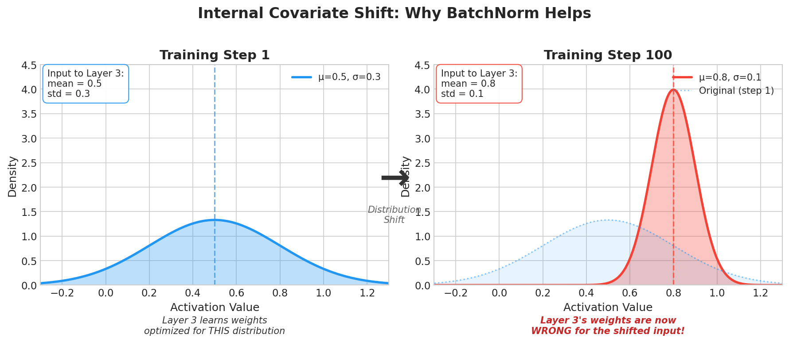 Figure: Internal Covariate Shift visualization. At training step 1, Layer 3 receives inputs with mean=0.5, std=0.3 and learns weights for that distribution. By step 100, the distribution has shifted (mean=0.8, std=0.1), making the learned weights suboptimal.
Why is this problematic?
- Chasing a moving target: Each layer tries to learn, but its optimal weights depend on the input distribution, which keeps changing
- Requires small learning rates: Large updates cause dramatic distribution shifts, destabilizing training
- Slower convergence: Layers waste capacity constantly re-adapting instead of learning useful features
- Saturated activations: If distributions shift into saturation regions of sigmoid/tanh, gradients vanish
A concrete example:
# Without BatchNorm: distributions shift wildly
# Layer 1 output at step 0: mean=-0.02, std=0.98
# Layer 1 output at step 100: mean=2.31, std=3.45 ← 100x shift!
# Layer 1 output at step 1000: mean=-0.87, std=0.23 ← shifted again!
# With BatchNorm: distributions stay normalized
# Layer 1 output (after BN) at any step: mean≈0, std≈1 (before γ,β)Modern Perspective: Beyond ICS
While the ICS explanation is intuitive, recent research suggests BatchNorm may help primarily through other mechanisms:
- Smoother loss landscape: BN makes the optimization surface more well-behaved with fewer sharp cliffs
- Gradient flow: Normalized activations have more stable gradient magnitudes
- Implicit learning rate adaptation: BN effectively adjusts the learning rate for each layer
Regardless of the exact mechanism, the empirical benefits are clear: BatchNorm enables faster, more stable training.
The Solution: Normalize Each Layer
Batch Normalization (Ioffe & Szegedy, 2015) normalizes activations within each mini-batch:
\[\hat{x}_i = \frac{x_i - \mu_B}{\sqrt{\sigma_B^2 + \epsilon}}\]
where:
- \(\mu_B = \frac{1}{B}\sum_{i=1}^{B} x_i\) (batch mean)
- \(\sigma_B^2 = \frac{1}{B}\sum_{i=1}^{B} (x_i - \mu_B)^2\) (batch variance)
- \(\epsilon\) ≈ \(10^{-5}\) (for numerical stability)
Learnable Parameters
After normalizing, we add learnable scale and shift parameters:
\[y_i = \gamma \hat{x}_i + \beta\]
- \(\gamma\) (gamma): learned scale parameter
- \(\beta\) (beta): learned shift parameter
Why? The network might need non-zero mean or non-unit variance for some layers. These parameters let it learn the optimal distribution.
Training vs Inference
Training: Use batch statistics (\(\mu_B\), \(\sigma_B^2\))
Inference: Use running averages of statistics accumulated during training
# During training, PyTorch automatically tracks:
# running_mean = momentum * running_mean + (1 - momentum) * batch_mean
# running_var = momentum * running_var + (1 - momentum) * batch_var⚠️ Critical: Always set
model.eval() before inference to use running
statistics!
Where to Place BatchNorm?
# Option 1: After linear, before activation (original paper)
nn.Linear(256, 128),
nn.BatchNorm1d(128),
nn.ReLU(),
# Option 2: After activation (sometimes used)
nn.Linear(256, 128),
nn.ReLU(),
nn.BatchNorm1d(128),Both work in practice. Option 1 is more common.
Benefits of Batch Normalization
- Enables higher learning rates: Normalized activations are more stable
- Regularization effect: Batch statistics add noise (like dropout)
- Reduces sensitivity to initialization: Normalization handles bad init
- Smoother loss landscape: Easier optimization
PyTorch Implementation
import torch.nn as nn
# For 1D data (fully connected layers): BatchNorm1d
model = nn.Sequential(
nn.Linear(784, 256),
nn.BatchNorm1d(256), # Normalize 256 features
nn.ReLU(),
nn.Linear(256, 10)
)
# For 2D data (CNNs): BatchNorm2d
cnn = nn.Sequential(
nn.Conv2d(3, 64, kernel_size=3),
nn.BatchNorm2d(64), # Normalize 64 channels
nn.ReLU(),
)
# CRITICAL: Set mode correctly!
model.train() # Use batch statistics
model.eval() # Use running statisticsLayer Normalization (Alternative)
For transformers and RNNs, Layer Normalization is preferred:
| Feature | BatchNorm | LayerNorm |
|---|---|---|
| Normalizes across | Batch dimension | Feature dimension |
| Depends on batch size | Yes | No |
| Works with batch=1 | No | Yes |
| Used in | CNNs | Transformers, RNNs |
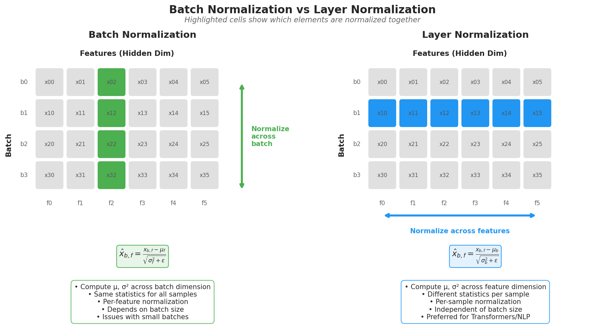 Figure: Batch Normalization vs Layer Normalization. BatchNorm (left) computes mean and variance across the batch dimension for each feature (highlighted column). LayerNorm (right) computes statistics across the feature dimension for each sample independently (highlighted row). This makes LayerNorm batch-independent and suitable for variable-length sequences.
# LayerNorm normalizes across features, not batch
# For a tensor of shape (batch, seq_len, hidden), normalizes across hidden
nn.LayerNorm(hidden_size)RMSNorm: The Modern LLM Standard
RMSNorm (Root Mean Square Layer Normalization) has become the standard for modern LLMs like LLaMA, Gemma, Qwen, and Mistral. It simplifies LayerNorm by removing the mean-centering step.
LayerNorm formula: \[\text{LayerNorm}(x) = \gamma \cdot \frac{x - \mu}{\sqrt{\sigma^2 + \epsilon}} + \beta\]
RMSNorm formula: \[\text{RMSNorm}(x) = \gamma \cdot \frac{x}{\text{RMS}(x) + \epsilon} = \gamma \cdot \frac{x}{\sqrt{\frac{1}{n}\sum_i x_i^2 + \epsilon}}\]
Key differences:
| Property | LayerNorm | RMSNorm |
|---|---|---|
| Mean centering | Yes (subtracts μ) | No |
| Normalization by | Standard deviation σ | RMS |
| Learnable params | γ (scale) and β (shift) | γ (scale) only |
| Computation | ~15-20% slower | Faster |
| Used in | BERT, GPT-2, original Transformer | LLaMA, Gemma, Qwen, Mistral |
Why does RMSNorm work without mean centering?
The key insight is that for well-behaved activations (especially after pre-norm architecture), the mean is often close to zero anyway. The primary purpose of normalization is to control the scale of activations, and RMS captures scale just as well as standard deviation:
# For zero-mean data: RMS ≈ std
x = torch.randn(1000) # zero-mean by construction
print(f"std: {x.std():.4f}, RMS: {(x**2).mean().sqrt():.4f}")
# std: 1.0012, RMS: 0.9987 ← Nearly identical!Implementation:
import torch
import torch.nn as nn
class RMSNorm(nn.Module):
def __init__(self, dim: int, eps: float = 1e-6):
super().__init__()
self.eps = eps
self.weight = nn.Parameter(torch.ones(dim)) # γ (scale only, no β)
def forward(self, x):
# RMS = sqrt(mean(x^2))
rms = torch.sqrt(torch.mean(x ** 2, dim=-1, keepdim=True) + self.eps)
return self.weight * (x / rms)
# Usage in a transformer block (Pre-LN architecture)
class TransformerBlock(nn.Module):
def __init__(self, dim, n_heads):
super().__init__()
self.norm1 = RMSNorm(dim)
self.attn = MultiHeadAttention(dim, n_heads)
self.norm2 = RMSNorm(dim)
self.ffn = FeedForward(dim)
def forward(self, x):
x = x + self.attn(self.norm1(x)) # Pre-norm: normalize BEFORE attention
x = x + self.ffn(self.norm2(x)) # Pre-norm: normalize BEFORE FFN
return xPerformance advantage:
The speedup comes from fewer operations: - LayerNorm: compute mean, subtract mean, compute variance, divide by std - RMSNorm: compute mean of squares, divide by RMS
For large hidden dimensions (4096+) common in LLMs, this ~15-20% speedup in normalization adds up across billions of tokens.
Normalization Comparison Summary
| Normalization | Formula | Batch-Independent? | Best For |
|---|---|---|---|
| BatchNorm | \((x - \mu_B) / \sigma_B\) | ❌ No | CNNs, vision |
| LayerNorm | \((x - \mu_L) / \sigma_L\) | ✅ Yes | Transformers (original) |
| RMSNorm | \(x / \text{RMS}(x)\) | ✅ Yes | Modern LLMs |
| GroupNorm | Groups of channels | ✅ Yes | Small batch CNNs |
| InstanceNorm | Per-sample, per-channel | ✅ Yes | Style transfer |
1.19 Vanishing and Exploding Gradients
The Problem
In deep networks, gradients must flow through many layers during backpropagation. At each layer, the gradient is multiplied by the layer’s weights:
\[\frac{\partial L}{\partial W_1} = \frac{\partial L}{\partial z_n} \cdot W_n \cdot W_{n-1} \cdots W_2\]
Vanishing Gradients
If weights are small (< 1), repeated multiplication makes gradients exponentially smaller:
10 layers with gradient factor 0.5 each:
0.5^10 = 0.001
Gradient at layer 1 is 1000x smaller than at layer 10!
→ Early layers learn extremely slowlyCauses: - Sigmoid/Tanh activations (derivatives < 1 in most regions) - Small weight initialization - Very deep networks
Symptoms: - Early layers don’t learn - Loss decreases very slowly - Weights near input barely change
Exploding Gradients
If weights are large (> 1), gradients grow exponentially:
10 layers with gradient factor 2 each:
2^10 = 1024
Gradient at layer 1 is 1024x larger than at layer 10!
→ Huge, unstable weight updatesCauses: - Large weight initialization - Unstable architecture - No normalization
Symptoms: - Loss becomes NaN or Inf - Weights explode to very large values - Training completely fails
Solutions
| Problem | Solutions |
|---|---|
| Vanishing | ReLU activation (gradient = 1 for positive), skip connections (ResNet), LSTM/GRU gates, proper initialization |
| Exploding | Gradient clipping, proper initialization, batch normalization, weight regularization |
Gradient Clipping
Cap the gradient norm to prevent explosion:
# Clip gradient norm to max value of 1.0
torch.nn.utils.clip_grad_norm_(model.parameters(), max_norm=1.0)
# In training loop:
optimizer.zero_grad()
loss.backward()
torch.nn.utils.clip_grad_norm_(model.parameters(), max_norm=1.0) # Add this!
optimizer.step()Skip Connections (ResNet)
Add the input directly to the output, creating a “gradient highway”:
\[y = F(x) + x\]
class ResidualBlock(nn.Module):
def __init__(self, dim):
super().__init__()
self.layers = nn.Sequential(
nn.Linear(dim, dim),
nn.ReLU(),
nn.Linear(dim, dim)
)
def forward(self, x):
return x + self.layers(x) # Skip connection!Why it helps: Gradients can flow directly through the skip connection, bypassing problematic layers.
1.20 Numerical Stability
What is Numerical Stability?
Numerical stability in neural networks refers to the ability of computations to produce consistent, finite, and meaningful results despite the inherent limitations of floating-point arithmetic. A numerically stable implementation:
- Keeps values in representable ranges:
Prevents overflow (values too large →
inf) and underflow (values too small →0) as activations pass through many layers - Minimizes accumulation of rounding errors: Ensures small errors don’t compound into large errors over many operations
- Produces consistent results: Given the same inputs, returns the same outputs (determinism)
Why it matters for training: When values
become very large or very small, gradients can explode or
vanish, loss becomes NaN, and training fails.
Normalization techniques (BatchNorm, LayerNorm, RMSNorm)
help keep activations in a “numerically healthy” range where
floating-point precision is good and gradients flow
properly.
The Original Sin: Floating-Point Non-Associativity
The fundamental source of numerical variation in neural networks is floating-point non-associativity:
\[ (a + b) + c \neq a + (b + c) \quad \text{in floating-point!} \]
# This is NOT a bug - it's how floating-point works!
>>> (0.1 + 1e20) - 1e20
0.0
>>> 0.1 + (1e20 - 1e20)
0.1Why does this happen?
Floating-point numbers use a format like \(\text{mantissa} \times 10^{\text{exponent}}\) (in base 2, but the principle is the same). This allows representing both very small and very large values with limited precision.
When adding two numbers with different scales (different exponents), information is lost:
1.23 × 10³ (1230)
+ 2.34 × 10¹ (23.4)
= 1.2534 × 10³ (exact: 1253.4)
But with 3 digits of precision, we can only store: 1.25 × 10³ (1250)
The "34" is lost!Every time we add floating-point numbers in a different order, we can get different results:
import random
vals = [1e-10, 1e-5, 1e-2, 1, -1e-10, -1e-5, -1e-2, -1]
results = set()
for _ in range(10000):
random.shuffle(vals)
results.add(sum(vals))
print(f"Summing 8 values in different orders gives {len(results)} unique results!")
# Output: 102 unique results!Key insight: The mathematically “correct” answer depends on which order you perform the additions. There is no single “right” answer—just different answers for different orderings.
Determinism vs Batch Invariance (Advanced)
A common misconception is that GPU nondeterminism comes from “concurrent threads finishing in random order using atomic adds.” While this can cause nondeterminism, the real culprit in modern LLM inference is lack of batch invariance.
Run-to-run determinism vs user-observable determinism:
| Property | Definition | Do modern LLM kernels have it? |
|---|---|---|
| Run-to-run determinism | Same inputs → same outputs | ✅ Yes (for forward pass) |
| Batch invariance | Same element gives same result regardless of batch size | ❌ Often no |
| User-observable determinism | Same query → same response | ❌ No (because batch size varies) |
The batch invariance problem:
import torch
torch.set_default_device('cuda')
# Matrix-vector multiply (batch size = 1)
a = torch.linspace(-1000, 1000, 2048*4096).reshape(2048, 4096)
b = torch.linspace(-1000, 1000, 4096*4096).reshape(4096, 4096)
out1 = torch.mm(a[:1], b) # Batch size 1
out2 = torch.mm(a, b)[:1] # Same element, but batch size 2048
print((out1 - out2).abs().max()) # tensor(1669.25) - NOT zero!The same element gives different results depending on batch size! When server load varies, batch size varies, and individual requests become nondeterministic—even though the kernel itself is “deterministic.”
Why this happens: Different batch sizes
may trigger different: - Parallelization strategies
(data-parallel vs split-k) - Tile sizes in matrix
multiplication
- Reduction orderings in attention
To achieve true determinism, kernels must be batch-invariant: using fixed reduction strategies regardless of batch size. This is an active area of research for reproducible LLM inference.
The Log-Sum-Exp Trick
Computing softmax naively can overflow or underflow:
# BAD: Can overflow!
z = np.array([1000, 1001, 1002])
exp_z = np.exp(z) # [inf, inf, inf] - OVERFLOW!
# BAD: Can underflow!
z = np.array([-1000, -1001, -1002])
exp_z = np.exp(z) # [0, 0, 0] - UNDERFLOW!Solution: Subtract the maximum value before exponentiating:
\[\text{softmax}(z_i) = \frac{e^{z_i}}{\sum_j e^{z_j}} = \frac{e^{z_i - \max(z)}}{\sum_j e^{z_j - \max(z)}}\]
# GOOD: Numerically stable softmax
def stable_softmax(z):
z_shifted = z - np.max(z) # Shift to prevent overflow
exp_z = np.exp(z_shifted)
return exp_z / np.sum(exp_z)Cross-Entropy with Logits
Never compute cross-entropy from probabilities — always from logits:
# BAD: Numerically unstable
probs = softmax(logits)
loss = -np.sum(y * np.log(probs)) # log(0) = -inf!
# GOOD: Use built-in function that handles stability
loss = nn.CrossEntropyLoss()(logits, labels) # PyTorch handles it!PyTorch’s CrossEntropyLoss combines
log-softmax with NLL loss in a numerically stable way.
Epsilon for Logarithms
Always add a small epsilon when taking logarithms:
# BAD: log(0) = -inf
loss = -np.mean(y * np.log(y_pred))
# GOOD: Add epsilon
eps = 1e-15
loss = -np.mean(y * np.log(y_pred + eps))Common Numerical Issues and Fixes
| Issue | Symptom | Fix |
|---|---|---|
| Log of zero | -inf or NaN |
Add epsilon: log(x + 1e-15) |
| Exp overflow | inf |
Use log-sum-exp trick |
| Division by zero | NaN or inf |
Add epsilon to denominator |
| Gradient explosion | NaN loss |
Gradient clipping, lower LR |
| Float32 precision | Accumulated errors | Use float64 for sensitive ops |
Further Reading: Defeating Nondeterminism in LLM Inference — Deep dive into floating-point non-associativity and batch invariance in production LLM systems.
1.21 Optimizers: SGD, Momentum, and Adam
Why Different Optimizers?
In Section 1.3, we introduced vanilla gradient descent: \[w \leftarrow w - \alpha \nabla L(w)\]
This works but has problems: - Gets stuck in ravines (oscillates back and forth) - Same learning rate for all parameters (suboptimal) - Sensitive to learning rate choice
Different optimizers address these issues.
SGD with Momentum
The problem: Vanilla SGD oscillates in ravines—directions with high curvature see the gradient flip sign repeatedly, slowing convergence.
The solution: Add “momentum” like a ball rolling downhill. Accumulate velocity from past gradients:
\[v_t = \beta v_{t-1} + \nabla L(w_t)\] \[w_{t+1} = w_t - \alpha v_t\]
where \(\beta\) (typically 0.9) controls how much past gradients matter.
Why it works: - Gradients that consistently point the same direction accumulate → faster progress - Gradients that oscillate cancel out → dampens oscillations
# Momentum SGD (simplified)
v = 0
for step in range(num_steps):
grad = compute_gradient(w)
v = beta * v + grad # Accumulate velocity
w = w - lr * v # Update weights
# PyTorch
optimizer = torch.optim.SGD(model.parameters(), lr=0.01, momentum=0.9)Adam: Adaptive Moment Estimation
Key insight: Different parameters need different learning rates!
Adam combines two ideas: 1. Momentum (first moment): Accumulate gradient direction 2. RMSprop (second moment): Adapt learning rate per parameter based on gradient magnitude
\[m_t = \beta_1 m_{t-1} + (1-\beta_1) g_t \quad \text{(momentum/first moment)}\] \[v_t = \beta_2 v_{t-1} + (1-\beta_2) g_t^2 \quad \text{(squared gradients/second moment)}\] \[\hat{m}_t = m_t / (1-\beta_1^t) \quad \text{(bias correction)}\] \[\hat{v}_t = v_t / (1-\beta_2^t) \quad \text{(bias correction)}\] \[w_{t+1} = w_t - \alpha \frac{\hat{m}_t}{\sqrt{\hat{v}_t} + \epsilon}\]
Typical values: \(\beta_1 = 0.9\), \(\beta_2 = 0.999\), \(\epsilon = 10^{-8}\)
Why it works: - Parameters with consistently large gradients get smaller effective learning rate (denominator is big) - Parameters with small gradients get larger effective learning rate (denominator is small) - This “adapts” to each parameter’s scale automatically
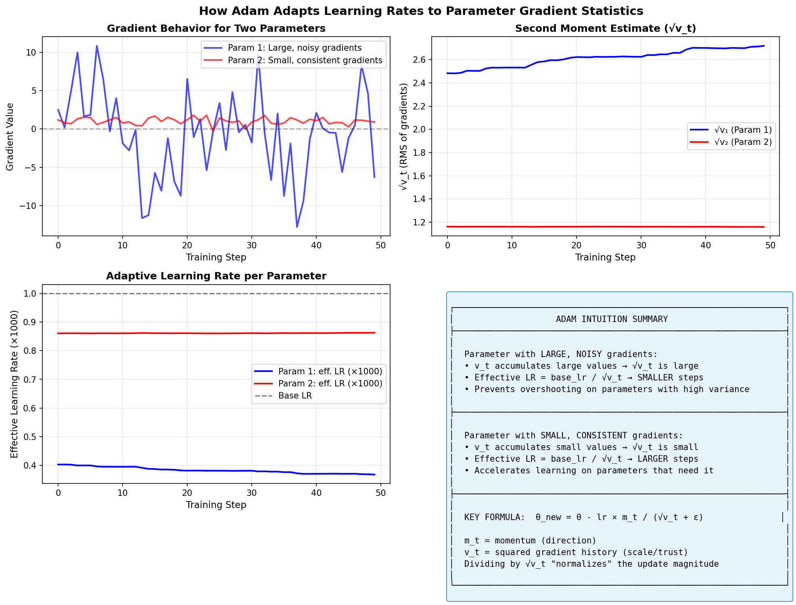 Figure: Adam combines momentum (accumulating gradient direction) with adaptive learning rates (scaling by inverse gradient magnitude). Parameters with large, consistent gradients move faster in the right direction. Parameters with noisy gradients get dampened. The bias correction ensures early steps aren’t dominated by initialization.
# PyTorch
optimizer = torch.optim.Adam(model.parameters(), lr=0.001)AdamW: Decoupled Weight Decay
The problem with Adam + L2: In Adam, L2 regularization gets scaled by the adaptive learning rate, weakening its effect.
AdamW decouples weight decay from the gradient-based update:
# Adam with L2 (problematic):
grad_with_l2 = grad + lambda * w
# ... Adam update using grad_with_l2
# Problem: weight decay is scaled by adaptive LR
# AdamW (correct):
# ... Adam update using grad only
w = w - lr * lambda * w # Weight decay applied separately
# Weight decay applied consistently# PyTorch
optimizer = torch.optim.AdamW(model.parameters(), lr=0.001, weight_decay=0.01)AdamW is the default for modern transformers/LLMs.
Quick Comparison
| Optimizer | Adaptive LR? | Momentum? | When to Use |
|---|---|---|---|
| SGD | ❌ | ❌ | Simple baselines |
| SGD + Momentum | ❌ | ✅ | Vision models, good generalization |
| Adam | ✅ | ✅ | Fast convergence, most tasks |
| AdamW | ✅ | ✅ | Transformers, LLMs (default) |
When to Use Which?
| Scenario | Recommended |
|---|---|
| LLMs / Transformers | AdamW with warmup + cosine decay |
| CNNs / Vision | SGD + Momentum (often generalizes better) |
| Quick experimentation | Adam (fast convergence) |
| Reproducibility critical | SGD (simpler, fewer hyperparameters) |
The SGD vs Adam Generalization Debate
Empirical observation: SGD with momentum often finds solutions that generalize better than Adam, particularly for vision models.
Hypotheses: - Adam converges to sharper minima (overfit) - SGD’s noise helps escape bad minima - Adam’s adaptivity can be too aggressive
In practice: For LLMs, AdamW wins. For vision, try both.
Deep dive: See Part 2 (Core Theory) and Part 5 (Optimization) for detailed mathematical treatment of convergence, learning rate schedules, and second-order methods.
1.22 Common Interview Questions Summary
Architecture & Training
| Question | Key Points |
|---|---|
| Why use ReLU over sigmoid? | No vanishing gradient for positive values; sparse activations; computationally simple |
| Why use cross-entropy over MSE for classification? | Stronger penalty for confident wrong predictions; no gradient vanishing at extremes; probabilistic interpretation |
| What does batch normalization do? | Normalizes activations; enables higher learning rates; provides regularization; reduces internal covariate shift |
| Why use dropout? | Prevents co-adaptation of neurons; implicit ensemble; regularization without changing architecture |
| How does backpropagation work? | Chain rule applied backwards; each layer computes local gradient; multiply by upstream gradient; O(n) complexity |
Optimization
| Question | Key Points |
|---|---|
| Why use mini-batches? | Balance between noise (small batch) and stability (large batch); GPU parallelism; unbiased gradient estimate |
| What is vanishing gradient? | Gradients shrink exponentially in deep networks; early layers learn slowly; solved by ReLU, skip connections, proper init |
| Adam vs SGD? | Adam: adaptive LR, faster convergence. SGD: often better generalization, simpler |
| What is weight decay? | L2 regularization on weights; prevents overfitting; decoupled from gradient in AdamW |
Regularization
| Question | Key Points |
|---|---|
| L1 vs L2 regularization? | L1: sparsity, feature selection. L2: shrinks all weights, no exact zeros |
| How to diagnose overfitting? | Train loss << validation loss; learning curves diverge; validation loss increases |
| How to fix overfitting? | More data, dropout, weight decay, early stopping, data augmentation, simpler model |
Softmax & Classification
| Question | Key Points |
|---|---|
| Why exponential in softmax? | Always positive; clean gradients; temperature control; max entropy distribution |
| Why CrossEntropyLoss takes logits? | Numerical stability; combines log-softmax + NLL; avoids log(0) |
| Multi-label vs multi-class? | Multi-class: one label (softmax). Multi-label: multiple labels (sigmoid per class) |
1.23 Debugging Checklist
When training doesn’t work, check these in order:
1. Loss is NaN or Inf
□ Learning rate too high? → Try 10x smaller
□ Numerical instability? → Check for log(0), exp overflow
□ Bad initialization? → Use proper init (He/Xavier)
□ Data issue? → Check for NaN/Inf in inputs
□ Exploding gradients? → Add gradient clipping2. Loss Doesn’t Decrease
□ Learning rate too low? → Try 10x larger
□ Learning rate too high? → Loss oscillates, try smaller
□ Bug in loss computation? → Verify loss formula manually
□ Data not shuffled? → Enable shuffle in DataLoader
□ Model in eval mode? → Ensure model.train() during training
□ Gradients are zero? → Check gradient flow, dead ReLUs
□ Optimizer not stepping? → Verify optimizer.step() is called3. Training Loss Good, Validation Loss Bad (Overfitting)
□ Add/increase dropout
□ Add/increase weight decay (L2)
□ Get more data
□ Data augmentation
□ Early stopping
□ Reduce model size
□ Use regularization (BatchNorm helps too)4. Both Losses High (Underfitting)
□ Model too simple → More layers/neurons
□ Training long enough? → More epochs
□ Learning rate too low? → Increase LR
□ Too much regularization? → Reduce dropout/weight decay
□ Feature engineering needed? → Better input features5. Quick Sanity Checks
# 1. Can model overfit single batch?
# If not, there's a bug in your model/training loop
small_batch = next(iter(train_loader))
for _ in range(100):
loss = train_step(small_batch)
print(f"Should be near 0: {loss}")
# 2. Are gradients flowing?
loss.backward()
for name, param in model.named_parameters():
if param.grad is not None:
print(f"{name}: grad norm = {param.grad.norm():.4f}")
else:
print(f"{name}: NO GRADIENT!")
# 3. Are weights updating?
old_weights = model.fc1.weight.clone()
optimizer.step()
new_weights = model.fc1.weight
print(f"Weight change: {(new_weights - old_weights).abs().mean():.6f}")Part 2: Core Theory
2.1 The Core Update Rule
The Question
In gradient descent, the update rule is:
\[ w_{t+1} = w_t - \alpha \nabla \ell(w_t) \]
Why do we pass \(w_t\) to the loss function while also subtracting from \(w_t\)?
Short Answer
Both uses of \(w_t\) refer to the same thing: your current position in parameter space. The update says:
“From where I currently am (\(w_t\)), take a step in the direction that reduces loss, where that direction is determined by the gradient computed at my current location (\(\nabla \ell(w_t)\)).”
Breaking Down Each Component
- \(w_t\) — Current parameters: where we are in weight space at step \(t\)
- \(\ell(w_t)\) — Loss evaluated at current parameters: how bad our model is right now
- \(\nabla \ell(w_t)\) — Gradient of loss at current parameters: direction of steepest increase
- \(-\alpha \nabla \ell(w_t)\) — The step we take: move opposite to gradient (toward lower loss)
- \(w_{t+1}\) — New parameters: where we’ll be after this update
2.2 Why Gradients Point the Way
Intuition: Hiking in the Fog
Imagine you’re hiking on a mountain in dense fog. You can’t see the valley below, but you want to get there. What do you do?
You feel the slope under your feet. If the ground tilts left, going left takes you uphill. So you go right — the opposite direction. You take a small step, feel the slope again, and repeat.
This is exactly what gradient descent does:
- Feel the slope → compute the gradient at current position
- Identify uphill → gradient points
toward steepest ascent
- Walk downhill → move in the negative gradient direction
- Repeat → keep stepping until you reach flat ground (the minimum)
The gradient is like your feet sensing the tilt in every direction simultaneously. In high dimensions, there are millions of “directions” — but the gradient tells you the single steepest way up, so you go the opposite way.
The Gradient as a Direction
For a scalar function \(f: \mathbb{R}^n \to \mathbb{R}\), the gradient \(\nabla f(x)\) is a vector that:
- Points in the direction of steepest increase of \(f\)
- Has magnitude equal to the rate of increase in that direction
\[ \nabla f(x) = \begin{bmatrix} \frac{\partial f}{\partial x_1} \\ \frac{\partial f}{\partial x_2} \\ \vdots \\ \frac{\partial f}{\partial x_n} \end{bmatrix} \]
Directional Derivatives
The rate of change of \(f\) in direction \(u\) (unit vector) is:
\[ D_u f(x) = \nabla f(x) \cdot u = \|\nabla f(x)\| \cos(\theta) \]
where \(\theta\) is the angle between \(\nabla f(x)\) and \(u\).
| Direction | Angle \(\theta\) | \(\cos(\theta)\) | Rate of Change |
|---|---|---|---|
| Along \(\nabla f\) | \(0°\) | \(+1\) | Maximum increase |
| Opposite to \(\nabla f\) | \(180°\) | \(-1\) | Maximum decrease |
| Perpendicular | \(90°\) | \(0\) | No change |
Conclusion: To decrease \(f\) fastest, move opposite to \(\nabla f\).
Taylor Expansion Perspective
Expanding loss around current point \(w_t\):
\[ \ell(w_t + \Delta w) \approx \ell(w_t) + \nabla \ell(w_t)^\top \Delta w + \frac{1}{2} \Delta w^\top H \Delta w \]
where \(H = \nabla^2 \ell(w_t)\) is the Hessian matrix.
First-order methods (GD, SGD, Adam) use only the gradient term. Second-order methods (Newton, BFGS) also use curvature from \(H\).
2.3 Stochastic Gradient Descent (SGD)
Stochastic Gradient Descent (SGD) is a fundamental optimization algorithm used in machine learning and deep learning to minimize a model’s loss. Unlike standard Gradient Descent, which calculates the gradient over the entire dataset before updating parameters, SGD approximates this by using only a single random data point (or a small “mini-batch”) at each step.
How SGD Works
The algorithm iteratively adjusts model parameters \(\theta\) (weights and biases) to reach the “valley” or minimum of the loss function:
- Initialize: Start with random parameter values
- Random Selection: Pick one random sample (or a small batch) from the training data
- Compute Gradient: Calculate the slope (gradient) of the loss function based only on that sample
- Update: Adjust parameters in the opposite direction of the gradient using a learning rate \(\eta\): \[\theta := \theta - \eta \cdot \nabla_\theta \ell(x_i, y_i; \theta)\]
- Repeat: Continue until the loss stops decreasing significantly (convergence)
Concrete Example: Linear Regression with SGD
To make this concrete, let’s apply SGD to linear regression. Suppose we want to fit a straight line:
\[\hat{y} = w_1 + w_2 x\]
to a training set with observations \(\{(x_1, y_1), (x_2, y_2), \ldots, (x_n, y_n)\}\).
The objective function (using least squares) is:
\[Q(w) = \sum_{i=1}^n Q_i(w) = \sum_{i=1}^n \left(\hat{y}_i - y_i\right)^2 = \sum_{i=1}^n \left(w_1 + w_2 x_i - y_i\right)^2\]
The SGD update for a single randomly selected point \((x_i, y_i)\):
\[ \begin{bmatrix} w_1 \\ w_2 \end{bmatrix} \leftarrow \begin{bmatrix} w_1 \\ w_2 \end{bmatrix} - \eta \begin{bmatrix} \frac{\partial}{\partial w_1} (w_1 + w_2 x_i - y_i)^2 \\ \frac{\partial}{\partial w_2} (w_1 + w_2 x_i - y_i)^2 \end{bmatrix} \]
Computing the partial derivatives:
\[ = \begin{bmatrix} w_1 \\ w_2 \end{bmatrix} - \eta \begin{bmatrix} 2 (w_1 + w_2 x_i - y_i) \\ 2 x_i(w_1 + w_2 x_i - y_i) \end{bmatrix} \]
Key insight: In each iteration, the gradient is evaluated at only a single point \((x_i, y_i)\) — not the entire dataset. This is what makes it “stochastic.”
Python implementation:
import numpy as np
def sgd_linear_regression(X, y, lr=0.01, epochs=100):
"""SGD for linear regression: y = w1 + w2 * x"""
w1, w2 = 0.0, 0.0 # Initialize weights
n = len(X)
for epoch in range(epochs):
# Shuffle data for randomness
indices = np.random.permutation(n)
for i in indices:
# Prediction error for single point
error = (w1 + w2 * X[i]) - y[i]
# Update weights based on this ONE point
w1 = w1 - lr * 2 * error # ∂L/∂w1 = 2 * error
w2 = w2 - lr * 2 * error * X[i] # ∂L/∂w2 = 2 * error * x
return w1, w2
# Example usage
X = np.array([1, 2, 3, 4, 5])
y = np.array([2.1, 4.0, 5.8, 8.1, 9.9]) # Approximately y = 2x
w1, w2 = sgd_linear_regression(X, y, lr=0.01, epochs=100)
print(f"Fitted line: y = {w1:.2f} + {w2:.2f}x")
# Output: Fitted line: y = 0.12 + 1.98x (close to y = 0 + 2x)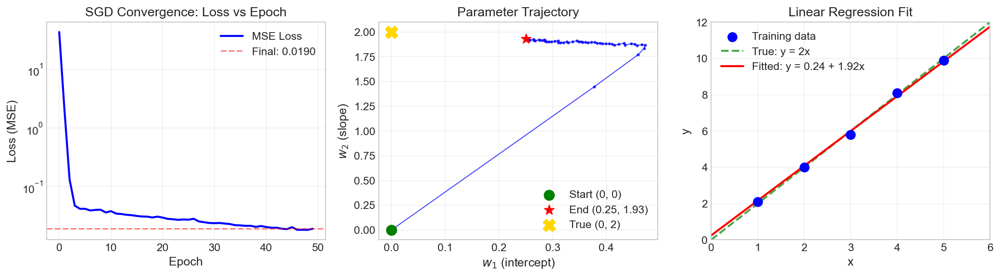 Figure: SGD training dynamics. Left: Loss decreases rapidly then stabilizes. Middle: Parameter trajectory from (0,0) to near the true values. Right: Fitted line closely matches true relationship.
Full-Batch vs Mini-Batch Gradient Descent
For a dataset with \(N\) examples, the true gradient is:
\[ \nabla \ell(\theta) = \frac{1}{N} \sum_{i=1}^{N} \nabla \ell_i(\theta) \]
Computing this exactly is expensive for large datasets. Instead, we estimate it using a mini-batch \(B\):
\[ g_t = \frac{1}{|B|} \sum_{i \in B} \nabla \ell_i(\theta_t) \]
Key property: \(\mathbb{E}[g_t] = \nabla \ell(\theta_t)\) — the mini-batch gradient is an unbiased estimator of the true gradient!
| Variant | Samples per Update | Typical Use |
|---|---|---|
| Stochastic GD | 1 | Rarely used in practice |
| Mini-batch GD | 32-512 | The modern standard |
| Batch GD | All N | Small datasets only |
Why Use SGD?
1. Efficiency: SGD is significantly faster for massive datasets because it updates parameters immediately after seeing a few samples, rather than waiting to process millions of data points.
2. Memory Friendly: Only one batch needs to be in memory at a time, making it essential for training large neural networks that wouldn’t fit otherwise.
3. Escaping Local Minima: The “noise” introduced by random sampling causes the optimization path to zig-zag. This randomness can help the algorithm “jump out” of shallow local minima or saddle points to find better solutions.
Why Noise Can Help (Implicit Regularization)
Here’s a counterintuitive fact: the “noisiness” of SGD is actually a feature, not a bug.
When you use a small mini-batch, your gradient estimate bounces around the true gradient. You might think this would lead to worse solutions. But empirically, the opposite often happens: noisy SGD often finds better solutions than exact gradient descent.
Why? Think about it geometrically. Imagine the loss landscape has two valleys:
- A narrow, sharp valley — training loss is very low here, but the slightest change in weights causes loss to spike
- A wide, flat valley — training loss is similar, but nearby weights also have low loss
With exact gradients (large batch), you might descend into that sharp valley and stay there. But with noisy SGD, random fluctuations can bounce you out of the sharp valley. The wide, flat valley is more stable — noise doesn’t push you out because there’s more “room.”
This matters for generalization: test data is slightly different from training data. A sharp minimum that’s perfect for training data might be terrible for test data (small perturbations → big loss increases). A flat minimum is robust — exactly what you want.
Bottom line: SGD noise provides implicit regularization that biases training toward solutions that generalize better.
Batch Size Tradeoffs
| Batch Size | Variance | Updates/Epoch | Compute/Update | Generalization |
|---|---|---|---|---|
| Small (\(b = 32\)) | High | Many | Fast | Often better |
| Large (\(b = 4096\)) | Low | Few | Slow | May need tuning |
Larger batches give more accurate gradient estimates but fewer updates per epoch. Smaller batches are noisier but provide more frequent updates and often better generalization.
SGD vs Full-Batch Gradient Descent
| Aspect | Full-Batch GD | Mini-Batch SGD |
|---|---|---|
| Gradient | Exact | Noisy estimate |
| Per-step compute | High (all data) | Low (subset) |
| Updates per epoch | 1 | N / batch_size |
| Memory | Entire dataset | One batch |
| Convergence path | Smooth | Zig-zag |
| Generalization | Can overfit to sharp minima | Often better (noise regularizes) |
Key Variations
Mini-batch Gradient Descent: The modern standard that uses a small group of samples (e.g., 32, 64, 128) instead of just one. It balances the speed of SGD with more stable gradient estimates.
Momentum: Adds a “velocity” term that keeps updates moving in a consistent direction, reducing erratic zig-zagging and speeding up convergence. (See Section 2.4)
Adaptive Optimizers: Methods like Adam, RMSprop, and AdaGrad automatically adjust the learning rate for each parameter during training. (See Section 2.5)
PyTorch Implementation
import torch
import torch.nn as nn
from torch.utils.data import DataLoader
# Basic SGD
optimizer = torch.optim.SGD(model.parameters(), lr=0.01)
# SGD with momentum (recommended)
optimizer = torch.optim.SGD(model.parameters(), lr=0.01, momentum=0.9)
# Training loop
for batch in dataloader:
optimizer.zero_grad() # Reset gradients
loss = compute_loss(batch) # Forward pass
loss.backward() # Compute gradients
optimizer.step() # Update parameters2.4 Momentum Methods
The Problem: Oscillations in Ill-Conditioned Landscapes
Consider optimizing a loss surface shaped like an elongated valley:
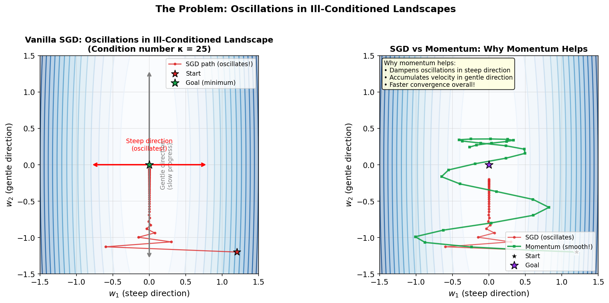 Figure: Left: Vanilla SGD oscillates in ill-conditioned landscapes (high condition number). Right: Momentum dampens oscillations and converges faster.
The problem:
- Gradient points toward the steepest descent (across the valley)
- But the minimum is along the gentle direction (down the valley)
- SGD overshoots across the valley, oscillates back and forth
Classical Momentum
Add a velocity term that accumulates gradient direction:
\[ \begin{aligned} v_{t+1} &= \beta v_t + \nabla \ell(w_t) \\ w_{t+1} &= w_t - \alpha v_{t+1} \end{aligned} \]
| Symbol | Meaning | Typical Value |
|---|---|---|
| \(v_t\) | Velocity (accumulated gradient) | - |
| \(\beta\) | Momentum coefficient | 0.9 |
| \(\alpha\) | Learning rate | task-dependent |
Intuition: Ball Rolling Downhill
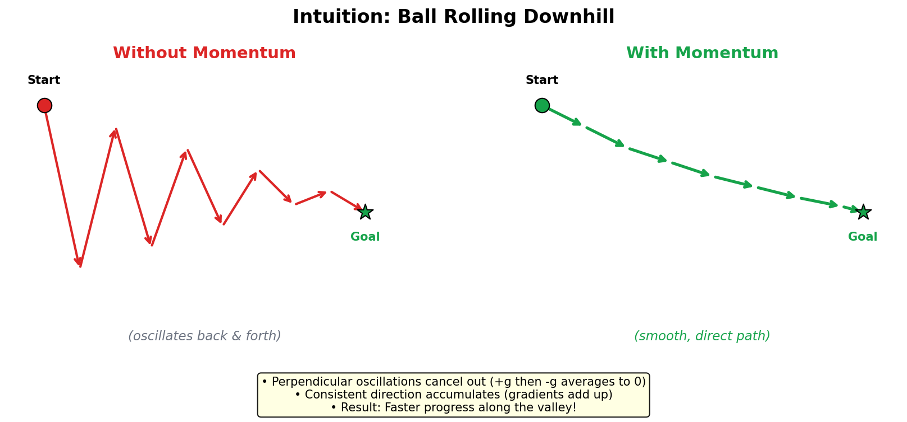 Figure: Without momentum (left), SGD oscillates back and forth. With momentum (right), the path is smooth and direct.
- Perpendicular oscillations cancel: \(+g\) then \(-g\) averages to 0
- Consistent direction accumulates: gradients pointing the same way add up
- Result: faster progress along the consistent direction
Effective Step Size
With momentum, the effective learning rate in a consistent direction is:
\[ \alpha_{\text{eff}} = \frac{\alpha}{1 - \beta} \]
For \(\beta = 0.9\): effective LR is 10× larger in consistent directions!
Why β = 0.9?
| \(\beta\) | Behavior |
|---|---|
| 0.0 | No momentum (vanilla SGD) |
| 0.5 | Short memory, mild smoothing |
| 0.9 | Good balance (default) |
| 0.99 | Long memory, slow to change direction |
Nesterov Accelerated Gradient (NAG)
Key idea: “Look ahead” before computing the gradient.
Standard momentum computes gradient at current position, then moves. Nesterov computes gradient at the predicted next position:
\[ \begin{aligned} v_{t+1} &= \beta v_t + \nabla \ell(\underbrace{w_t - \alpha \beta v_t}_{\text{look-ahead position}}) \\ w_{t+1} &= w_t - \alpha v_{t+1} \end{aligned} \]
Standard Momentum: Nesterov:
w_t ──gradient──→ w_{t+1} w_t ──lookahead──→ w̃ ──gradient──→ w_{t+1}
"Where am I going? Let me check
the gradient there first."Why It Helps
- Can “correct” before overshooting
- Better theoretical convergence rate
- In practice: similar to momentum, sometimes slightly better
PyTorch Implementation
import torch
# Standard momentum
optimizer = torch.optim.SGD(model.parameters(), lr=0.01, momentum=0.9)
# Nesterov momentum
optimizer = torch.optim.SGD(model.parameters(), lr=0.01, momentum=0.9, nesterov=True)2.5 Adaptive Learning Rate Methods
The Problem with Fixed Learning Rates
Imagine you’re training a language model, and your vocabulary includes both “the” (appears in every sentence) and “quasar” (appears once in 10,000 sentences).
With a fixed learning rate, every weight gets updated with the same step size. But the embedding weights for “the” see gradients constantly — thousands of updates pushing them around. Meanwhile, “quasar” barely gets any signal.
What happens? Either: - Learning rate is tuned for frequent words → rare words learn too slowly - Learning rate is tuned for rare words → frequent words oscillate wildly
The insight: Different parameters need different learning rates. Frequent features need smaller updates (they’ve already seen lots of data). Rare features need larger updates (every bit of signal is precious).
This is what adaptive methods solve: they automatically adjust learning rates for each parameter based on the history of gradients that parameter has seen.
The Evolution: AdaGrad → RMSprop → Adam → AdamW
The story of adaptive optimizers is one of progressive refinement, each method solving a problem introduced by the previous one:
AdaGrad (2011) → RMSprop (2012) → Adam (2015) → AdamW (2019)
↓ ↓ ↓ ↓
Per-param LR + Decay factor + Momentum + Decoupled
weight decayAdaGrad (2011): The First Adaptive Method
The idea: Keep a running sum of squared gradients for each parameter. Divide the learning rate by the square root of this sum.
\[ \begin{aligned} v_{t+1} &= v_t + g_t^2 \\ w_{t+1} &= w_t - \frac{\alpha}{\sqrt{v_{t+1}} + \epsilon} g_t \end{aligned} \]
What this achieves: Parameters that have seen large gradients (frequent features) accumulate a large \(v\), so their effective learning rate \(\alpha / \sqrt{v}\) shrinks. Rare features keep their original learning rate because they’ve accumulated little.
The fatal flaw: \(v\) only grows. It never shrinks. Over time, all learning rates decay toward zero and training stalls. This is fine for convex problems (where you want to converge and stop), but disastrous for deep learning where you need to keep adapting.
RMSprop (2012): Forgetting the Past
The fix: Instead of accumulating all past squared gradients, use an exponential moving average. This “forgets” old gradients, allowing learning rates to recover.
\[ \begin{aligned} v_{t+1} &= \beta v_t + (1-\beta) g_t^2 \\ w_{t+1} &= w_t - \frac{\alpha}{\sqrt{v_{t+1}} + \epsilon} g_t \end{aligned} \]
With \(\beta = 0.9\), we’re essentially looking at the average squared gradient over roughly the last 10 steps. If gradients suddenly become small (e.g., after the loss landscape changes), \(v\) will decay and learning rate can increase again.
The remaining issue: RMSprop doesn’t have momentum. We’re adapting the scale of updates, but not the direction. Can we get both?
Adam (2015): The Best of Both Worlds
The breakthrough: Combine RMSprop (adaptive learning rates) with momentum (smooth, accelerated updates). Add bias correction to handle initialization issues.
Think of Adam as having two “memories”: - First moment (\(m\)): Exponential average of gradients — the momentum term, pointing toward the consistent direction - Second moment (\(v\)): Exponential average of squared gradients — the RMSprop term, scaling by gradient magnitude
\[ \begin{aligned} m_t &= \beta_1 m_{t-1} + (1-\beta_1) g_t & \text{(momentum: which way?)} \\ v_t &= \beta_2 v_{t-1} + (1-\beta_2) g_t^2 & \text{(scale: how big?)} \\ \hat{m}_t &= m_t / (1 - \beta_1^t) & \text{(bias correction)} \\ \hat{v}_t &= v_t / (1 - \beta_2^t) & \text{(bias correction)} \\ w_t &= w_{t-1} - \alpha \frac{\hat{m}_t}{\sqrt{\hat{v}_t} + \epsilon} \end{aligned} \]
Note on indexing: Here \(t\) starts at 1 (step 1, step 2, …). At step \(t\), we compute \(m_t, v_t\) from the gradient \(g_t\), apply bias correction using \(\beta^t\), and update weights.
The update \(\frac{\hat{m}}{\sqrt{\hat{v}}}\) has a beautiful interpretation: we take the smoothed gradient direction (\(\hat{m}\)) and normalize it by the smoothed gradient magnitude (\(\sqrt{\hat{v}}\)). This gives us a kind of “standardized” step — regardless of whether gradients are large or small, the update magnitude stays roughly bounded.
| Parameter | Default | Purpose |
|---|---|---|
| \(\beta_1\) | 0.9 | Momentum decay (how much past gradient direction matters) |
| \(\beta_2\) | 0.999 | Squared gradient decay (how much past magnitude matters) |
| \(\epsilon\) | \(10^{-8}\) | Numerical stability (prevents division by zero) |
Why these defaults? \(\beta_2 = 0.999\) is much closer to 1 than \(\beta_1 = 0.9\). This means Adam has a “long memory” for gradient magnitudes (scale changes slowly) but a “short memory” for gradient direction (adapts quickly to new directions). This makes sense: the scale of gradients in a layer tends to be stable, but the direction can change rapidly.
Why Bias Correction Matters
Here’s a subtle but important issue. Both \(m\) and \(v\) are initialized to zero. At step 1:
\[m_1 = 0.9 \times 0 + 0.1 \times g_1 = 0.1 \cdot g_1\]
We wanted an estimate of the gradient, but we got only 10% of it! The same happens with \(v\). Without correction, early updates would be way too small.
The fix divides by \((1 - \beta^t)\), which starts large and approaches 1 as \(t\) grows:
- Step 1: divide by \((1 - 0.9^1) = 0.1\) → multiply by 10 → \(\hat{m}_1 = g_1\) ✓
- Step 10: divide by \((1 - 0.9^{10}) \approx 0.65\)
- Step 100: divide by \((1 - 0.9^{100}) \approx 1.0\) → no correction needed
AdamW (2019): The Interview Question!
AdamW seems like a minor tweak, but understanding why it matters reveals deep insight into how adaptive optimizers interact with regularization.
The Problem: Adam Breaks Weight Decay
You want to regularize your model with L2 (weight decay). The standard approach: add \(\lambda w\) to the gradient.
\[g_{\text{regularized}} = g + \lambda w\]
With SGD, this works perfectly. The update becomes:
\[w \leftarrow w - \alpha(g + \lambda w) = (1 - \alpha\lambda)w - \alpha g\]
Every weight shrinks by the same factor \((1 - \alpha\lambda)\) at every step. Fair and consistent.
But Adam does something different. It divides the gradient by \(\sqrt{v}\):
\[\text{Update} = \frac{g + \lambda w}{\sqrt{v}}\]
Now the regularization term \(\lambda w\) also gets divided by \(\sqrt{v}\)! Parameters with large historical gradients (large \(v\)) get less regularization. Parameters with small gradients get more regularization.
This is backwards! We want consistent regularization across all parameters, but Adam’s adaptive scaling breaks it.
The Fix: Decouple Weight Decay
AdamW applies weight decay outside the adaptive mechanism:
\[w_{t+1} = w_t - \alpha \cdot \underbrace{\frac{\hat{m}_{t}}{\sqrt{\hat{v}_{t}} + \epsilon}}_{\text{Adam update}} - \underbrace{\alpha \lambda w_t}_{\text{separate weight decay}}\]
The key difference:
Adam + L2: gradient ← gradient + λw, then divide by √v
AdamW: divide by √v, then subtract αλw separatelyNow every weight decays by exactly \(\alpha\lambda\) of its current value, regardless of gradient history. Simple, consistent, correct.
Why It Matters in Practice
| Method | Effective regularization per parameter |
|---|---|
| Adam + L2 | Varies wildly (broken!) |
| AdamW | Same for all (correct) |
This isn’t just theoretical. Empirically, AdamW consistently outperforms Adam + L2 on Transformers and other architectures. The BERT and GPT papers all use AdamW.
Bottom line: If you’re using Adam and
want regularization, use AdamW, not Adam with
weight_decay parameter (which does L2 the wrong
way).
PyTorch Implementation
import torch
# Adam (don't use weight_decay with Adam!)
optimizer = torch.optim.Adam(model.parameters(), lr=1e-3)
# AdamW (correct way to regularize)
optimizer = torch.optim.AdamW(model.parameters(), lr=1e-3, weight_decay=0.01)
# SGD with momentum
optimizer = torch.optim.SGD(model.parameters(), lr=0.1, momentum=0.9, weight_decay=1e-4)2.6 Learning Rate Schedules
Why Schedules Matter
Think of training a neural network like hiking down into a valley, but the terrain changes as you descend.
Early in training: The loss landscape is rough and you’re far from any minimum. Big steps are fine — even if they’re imprecise, they get you moving in the right direction quickly. A large learning rate lets you explore broadly and make rapid progress.
Late in training: You’re near a minimum now. The same big steps that helped earlier now cause you to overshoot and oscillate around the minimum. You need smaller, more careful steps to settle into the valley floor.
This is why a fixed learning rate is rarely optimal: - Too high throughout → Can’t converge precisely at the end (oscillates) - Too low throughout → Wastes time early on when you could move faster
The solution: Start with a high learning rate (fast progress through the easy terrain), then decay to a low rate (careful fine-tuning near the minimum).
Warmup: Why Transformers Need It
The Problem with Cold-Starting Adam
Adam tracks running estimates of gradient statistics (\(m\) for direction, \(v\) for scale). But at step 1, these estimates are based on a single gradient — they’re extremely noisy and unreliable.
Even with bias correction, the first few hundred steps can be problematic:
Step 1: v₁ = 0.001 × g₁² ← Based on ONE gradient
update = g₁/√v₁ ← Scaling by noisy estimate → unstable!For Transformers specifically, there’s another issue: the attention mechanism creates sharp, spiky loss landscapes early in training. Large learning rates on spiky terrain → disaster.
The Solution: Linear Warmup
Start with tiny LR, increase linearly:
\[ \alpha_t = \alpha_{\max} \cdot \frac{t}{T_{\text{warmup}}} \quad \text{for } t < T_{\text{warmup}} \]
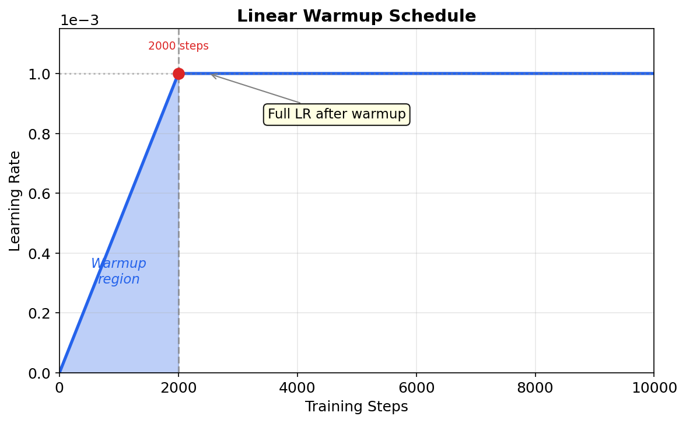 Figure: Linear warmup gradually increases learning rate from 0 to max, stabilizing early training.
Typical warmup: 1-5% of total training steps (e.g., 2000 steps for 100k total)
Common Decay Schedules
Step Decay
Drop LR by factor at fixed milestones:
\[ \alpha_t = \alpha_0 \cdot \gamma^{\lfloor t / S \rfloor} \]
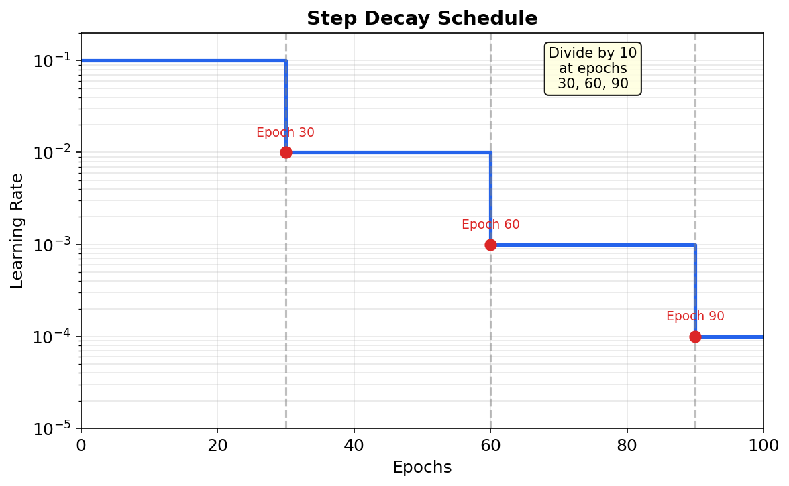 Figure: Step decay drops LR by 10× at epochs 30, 60, 90 (typical for CNN training).
Typical: Divide by 10 at epochs 30, 60, 90 (for 100 epoch training)
Cosine Annealing
Smooth decay following cosine curve:
\[ \alpha_t = \alpha_{\min} + \frac{1}{2}(\alpha_{\max} - \alpha_{\min})\left(1 + \cos\left(\frac{\pi t}{T}\right)\right) \]
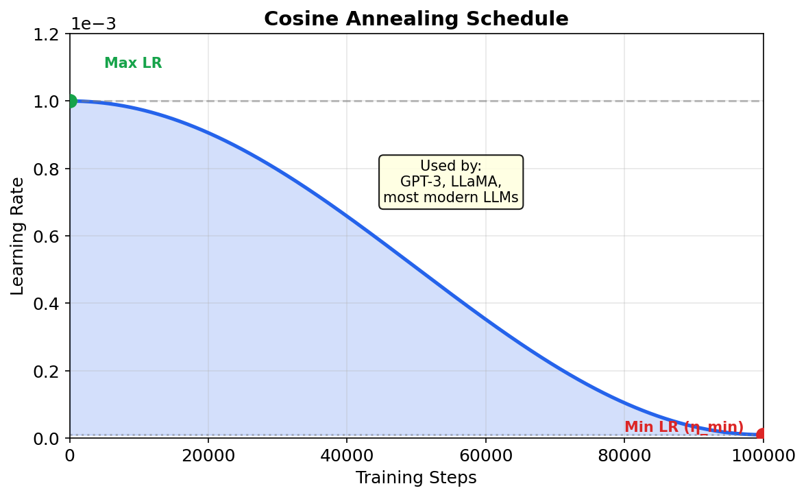 Figure: Cosine annealing provides smooth LR decay, preferred for Transformers and LLMs.
Used by: GPT-3, LLaMA, most modern LLMs
Linear Decay
Simple linear decrease:
\[ \alpha_t = \alpha_{\max} \cdot \left(1 - \frac{t}{T}\right) \]
Comparison
| Schedule | Shape | Best For |
|---|---|---|
| Step | Staircase | CNNs, classic vision |
| Cosine | Smooth curve | Transformers, LLMs |
| Linear | Straight line | Fine-tuning |
Warmup + Cosine (Standard LLM Recipe)
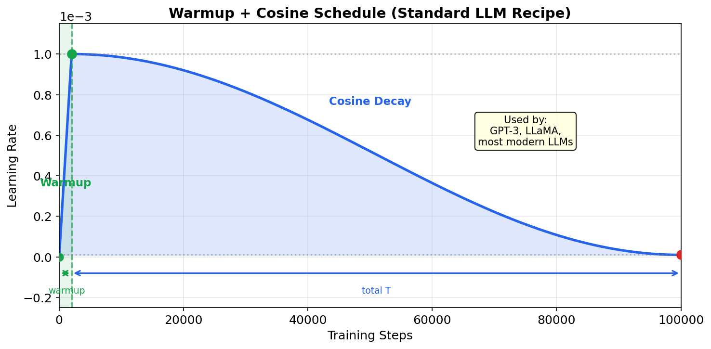 Figure: Standard LLM training recipe — linear warmup followed by cosine decay.
PyTorch Implementation:
from torch.optim.lr_scheduler import CosineAnnealingLR, LinearLR, SequentialLR
optimizer = torch.optim.AdamW(model.parameters(), lr=1e-3)
# Warmup for first 2000 steps
warmup = LinearLR(optimizer, start_factor=0.01, total_iters=2000)
# Cosine decay for rest of training
cosine = CosineAnnealingLR(optimizer, T_max=100000 - 2000, eta_min=1e-5)
# Combine them
scheduler = SequentialLR(optimizer, [warmup, cosine], milestones=[2000])
# In training loop
for step in range(100000):
loss.backward()
optimizer.step()
scheduler.step() # Update LROptimizer + Schedule Decision Guide
| Task | Optimizer | Schedule | Typical LR | Why |
|---|---|---|---|---|
| CNN (ImageNet) | SGD + momentum | Step decay | 0.1 → 0.001 | Better generalization |
| Transformer pretraining | AdamW | Warmup + cosine | 1e-4 to 3e-4 | Stable, smooth |
| Fine-tuning BERT/GPT | AdamW | Linear decay | 1e-5 to 5e-5 | Don’t move far from pretrained |
| RL (PPO) | Adam | Constant or linear | 3e-4 | Policy updates are noisy |
| GAN training | Adam | Constant | 1e-4 to 2e-4 | Delicate equilibrium |
Quick Recommendations
If unsure, start with:
# For Transformers / NLP
optimizer = AdamW(lr=1e-4, weight_decay=0.01)
scheduler = warmup(2000 steps) + cosine(to 1e-5)
# For CNNs / Vision
optimizer = SGD(lr=0.1, momentum=0.9, weight_decay=1e-4)
scheduler = step(divide by 10 at 30%, 60%, 90% of training)Decision Flowchart
┌─────────────────────────────────────────────────────────────────┐
│ OPTIMIZER & SCHEDULE DECISION GUIDE │
└─────────────────────────────────────────────────────────────────┘
│
What are you training?
│
┌───────────┬───────────┼───────────┬───────────┐
↓ ↓ ↓ ↓ ↓
Transformer CNN Fine-tune RL (PPO) GAN
│ │ │ │ │
↓ ↓ ↓ ↓ ↓
AdamW SGD+Mom AdamW Adam Adam
warmup step decay linear constant constant
cosine 0.1→0.001 decay lr=3e-4 lr=1e-4
lr=1e-4 lr=2e-5Complete Training Loop Example
Here’s a complete, minimal training loop using AdamW with warmup + cosine schedule — the standard recipe for Transformers:
import torch
import torch.nn as nn
from torch.utils.data import DataLoader, TensorDataset
from torch.optim import AdamW
from torch.optim.lr_scheduler import CosineAnnealingLR, LinearLR, SequentialLR
# =============================================================================
# 1. Model Definition
# =============================================================================
class SimpleTransformerBlock(nn.Module):
"""Minimal transformer-style block for demonstration."""
def __init__(self, d_model=256, nhead=4, dim_ff=512, dropout=0.1):
super().__init__()
self.attn = nn.MultiheadAttention(d_model, nhead, dropout=dropout, batch_first=True)
self.ff = nn.Sequential(
nn.Linear(d_model, dim_ff),
nn.GELU(),
nn.Dropout(dropout),
nn.Linear(dim_ff, d_model),
nn.Dropout(dropout),
)
self.norm1 = nn.LayerNorm(d_model)
self.norm2 = nn.LayerNorm(d_model)
def forward(self, x):
# Self-attention with residual
attn_out, _ = self.attn(x, x, x)
x = self.norm1(x + attn_out)
# Feed-forward with residual
x = self.norm2(x + self.ff(x))
return x
class SimpleModel(nn.Module):
def __init__(self, vocab_size=1000, d_model=256, num_layers=2, num_classes=10):
super().__init__()
self.embedding = nn.Embedding(vocab_size, d_model)
self.blocks = nn.ModuleList([SimpleTransformerBlock(d_model) for _ in range(num_layers)])
self.classifier = nn.Linear(d_model, num_classes)
def forward(self, x):
x = self.embedding(x)
for block in self.blocks:
x = block(x)
# Global average pooling + classification
x = x.mean(dim=1)
return self.classifier(x)
# =============================================================================
# 2. Training Configuration
# =============================================================================
# Hyperparameters
BATCH_SIZE = 32
LEARNING_RATE = 1e-4
WEIGHT_DECAY = 0.01
WARMUP_STEPS = 100
TOTAL_STEPS = 1000
GRAD_CLIP = 1.0
# Device
device = torch.device("cuda" if torch.cuda.is_available() else "cpu")
# =============================================================================
# 3. Create Model, Optimizer, Scheduler
# =============================================================================
model = SimpleModel().to(device)
# AdamW with decoupled weight decay (correct way to regularize)
optimizer = AdamW(
model.parameters(),
lr=LEARNING_RATE,
betas=(0.9, 0.999),
weight_decay=WEIGHT_DECAY
)
# Warmup + Cosine schedule
warmup_scheduler = LinearLR(
optimizer,
start_factor=0.01, # Start at 1% of max LR
total_iters=WARMUP_STEPS
)
cosine_scheduler = CosineAnnealingLR(
optimizer,
T_max=TOTAL_STEPS - WARMUP_STEPS,
eta_min=1e-6 # Minimum LR
)
scheduler = SequentialLR(
optimizer,
schedulers=[warmup_scheduler, cosine_scheduler],
milestones=[WARMUP_STEPS]
)
# Loss function
criterion = nn.CrossEntropyLoss()
# =============================================================================
# 4. Training Loop
# =============================================================================
def train_step(model, batch, optimizer, scheduler, criterion, grad_clip):
"""Single training step with all best practices."""
inputs, targets = batch
inputs, targets = inputs.to(device), targets.to(device)
# Forward pass
optimizer.zero_grad()
outputs = model(inputs)
loss = criterion(outputs, targets)
# Backward pass
loss.backward()
# Gradient clipping (prevent exploding gradients)
torch.nn.utils.clip_grad_norm_(model.parameters(), grad_clip)
# Update weights and learning rate
optimizer.step()
scheduler.step()
return loss.item()
def train(model, dataloader, optimizer, scheduler, criterion, total_steps, grad_clip=1.0):
"""Full training loop."""
model.train()
step = 0
running_loss = 0.0
while step < total_steps:
for batch in dataloader:
if step >= total_steps:
break
loss = train_step(model, batch, optimizer, scheduler, criterion, grad_clip)
running_loss += loss
step += 1
# Logging
if step % 100 == 0:
avg_loss = running_loss / 100
current_lr = scheduler.get_last_lr()[0]
print(f"Step {step}/{total_steps} | Loss: {avg_loss:.4f} | LR: {current_lr:.2e}")
running_loss = 0.0
return model
# =============================================================================
# 5. Example Usage (with dummy data)
# =============================================================================
if __name__ == "__main__":
# Create dummy dataset
dummy_inputs = torch.randint(0, 1000, (320, 16)) # 320 samples, seq_len=16
dummy_targets = torch.randint(0, 10, (320,)) # 10 classes
dataset = TensorDataset(dummy_inputs, dummy_targets)
dataloader = DataLoader(dataset, batch_size=BATCH_SIZE, shuffle=True)
# Train
model = train(model, dataloader, optimizer, scheduler, criterion, TOTAL_STEPS, GRAD_CLIP)
print("Training complete!")Key best practices demonstrated: 1. AdamW with decoupled weight decay (not Adam + L2) 2. Linear warmup → cosine decay schedule 3. Gradient clipping to prevent instability 4. Proper device handling (CPU/GPU) 5. Learning rate logging for debugging
2.7 Convergence and Loss Landscapes
The loss function defines a landscape over your parameter space — a surface with peaks, valleys, saddle points, and plateaus. Understanding this landscape is key to understanding why optimization works (or doesn’t).
What Does the Loss Landscape Look Like?
For neural networks, the loss landscape is incredibly high-dimensional — millions or billions of dimensions. We can’t visualize it directly, but research has revealed several important properties:
1. Many Local Minima, But They’re Usually Good
Early fears about neural networks centered on “getting stuck in bad local minima.” In practice, this rarely happens. Why?
- In high dimensions, most critical points are saddle points, not local minima
- True local minima tend to have similar loss values to the global minimum
- Different minima often generalize equally well
2. The Landscape is Non-Convex But Surprisingly Navigable
The loss surface is highly non-convex (unlike linear regression, where there’s one obvious valley). But SGD can usually find good solutions because:
- Gradient descent tends to avoid saddle points (noise helps escape)
- The “connected valley” hypothesis: good solutions are connected by paths of low loss
Sharp vs Flat Minima: Why It Matters for Generalization
Here’s a key insight that connects optimization to generalization:
Figure: Sharp minima
(left) have large loss changes from small weight
perturbations. Flat minima (right) are robust and generalize
better.
Sharp minimum: The loss increases steeply when you move away from the optimal weights. Think of a narrow spike in the landscape.
Flat minimum: The loss stays low even when weights are perturbed slightly. Think of a broad, shallow valley.
Why does this matter? At test time, your data is different from training data — it’s like adding a small perturbation to everything. A model at a sharp minimum has weights that are “brittle” — small changes cause large loss increases. A model at a flat minimum has weights that are “robust” — nearby weight values also give low loss.
This is why flat minima generalize better: they’re stable under the perturbations that test data introduces.
How SGD Finds Flat Minima
Here’s the beautiful connection: SGD noise naturally biases toward flat minima.
In a sharp valley, the gradients are steep and variable — SGD’s noise bounces you out. In a flat valley, gradients are small and stable — you stay put.
It’s like rolling a ball with random kicks: - In a narrow groove, kicks bounce it out - In a wide basin, kicks just slosh it around without escaping
This is another form of implicit regularization from SGD (beyond what we discussed in section 2.3).
When Optimization “Converges”
What does it mean for training to converge? Several things:
- Loss stabilizes: Stops decreasing meaningfully
- Gradients shrink: \(\|\nabla L\| \to 0\) (at a critical point)
- Weights stabilize: Updates become tiny
Signs of problems:
| Symptom | Likely Cause | Fix |
|---|---|---|
| Loss oscillates, doesn’t settle | Learning rate too high | Reduce LR or add decay |
| Loss plateaus high | Stuck at saddle or bad region | Increase LR, restart, or add noise |
| Loss diverges (→ ∞ or NaN) | Learning rate way too high, exploding gradients | Reduce LR, add gradient clipping |
| Train loss drops, val loss rises | Overfitting | Add regularization, early stopping |
The Effect of Architecture on the Landscape
Different architectures create different loss landscapes:
ResNets (skip connections): Create smoother landscapes with more direct gradient paths. Easier to optimize.
Transformers: Attention creates sharp, spiky landscapes early in training. This is why warmup is critical.
Very Deep Networks (without skip connections): Pathological landscapes with vanishing gradients in most directions.
2.8 Practical Considerations
Gradient Clipping
Prevent exploding gradients:
\[ g \leftarrow \min(1, \frac{\tau}{\|g\|}) \cdot g \]
Weight Initialization
| Method | Formula | Good For |
|---|---|---|
| Xavier | \(\mathcal{N}(0, \frac{2}{n_{in} + n_{out}})\) | Tanh, Sigmoid |
| He | \(\mathcal{N}(0, \frac{2}{n_{in}})\) | ReLU |
Debugging Checklist
| Symptom | Cause | Fix |
|---|---|---|
| Loss NaN | Exploding gradients | Clip gradients, lower LR |
| Loss stuck | LR too low | Increase LR |
| Loss oscillating | LR too high | Decrease LR |
2.9 Regularization: L1 and L2
The Problem: Overfitting
A model that fits training data too well may fail on new data:
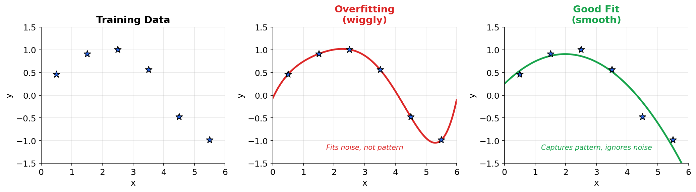 Figure: Left: Training data. Middle: Overfitting (wiggly, fits noise). Right: Good fit (smooth, captures pattern).
Overfitting symptoms:
- Low training loss, high validation loss
- Model memorizes noise instead of learning patterns
- Weights become very large
The Solution: Penalize Large Weights
Add a regularization term to the loss:
\[ \text{Loss}_{\text{reg}} = \text{Loss}_{\text{data}} + \lambda \cdot R(w) \]
where \(\lambda\) controls regularization strength and \(R(w)\) penalizes model complexity.
L2 Regularization (Ridge / Weight Decay)
Formula
\[ R_{L2}(w) = \|w\|_2^2 = \sum_i w_i^2 \]
Full loss: \[ \text{Loss} = \frac{1}{N}\sum_{i=1}^{N} L(y_i, \hat{y}_i) + \frac{\lambda}{2} \sum_j w_j^2 \]
Effect on Gradient
\[ \frac{\partial \text{Loss}}{\partial w_j} = \frac{\partial L}{\partial w_j} + \lambda w_j \]
Update rule: \[ w_j \leftarrow w_j - \alpha\left(\frac{\partial L}{\partial w_j} + \lambda w_j\right) = (1 - \alpha\lambda)w_j - \alpha\frac{\partial L}{\partial w_j} \]
Interpretation: Each update shrinks weights toward zero by factor \((1 - \alpha\lambda)\).
Why It Works
- Penalizes large weights: Forces model to use all features moderately instead of relying heavily on few
- Smooth penalty: Differentiable everywhere, easy to optimize
- Keeps all features: Weights shrink but rarely become exactly zero
Geometric Intuition
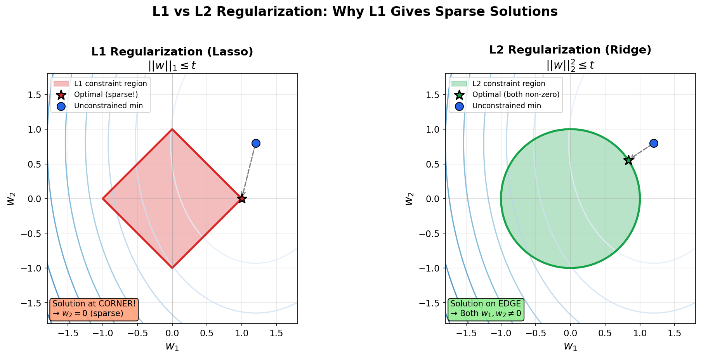 Figure: L2 ball (circle) vs L1 ball (diamond). Loss contours hit the L1 diamond at corners (sparse), but touch the L2 circle at smooth points (non-sparse).
Optimal solution lies where loss contours touch the constraint region — L2 produces small but non-zero weights, L1 produces exact zeros at corners.
L1 Regularization (Lasso)
Formula
\[ R_{L1}(w) = \|w\|_1 = \sum_i |w_i| \]
Full loss: \[ \text{Loss} = \frac{1}{N}\sum_{i=1}^{N} L(y_i, \hat{y}_i) + \lambda \sum_j |w_j| \]
Effect on Gradient
The gradient of \(|w|\) is: \[ \frac{\partial |w_j|}{\partial w_j} = \text{sign}(w_j) = \begin{cases} +1 & w_j > 0 \\ -1 & w_j < 0 \\ 0 & w_j = 0 \end{cases} \]
Update rule: \[ w_j \leftarrow w_j - \alpha\left(\frac{\partial L}{\partial w_j} + \lambda \cdot \text{sign}(w_j)\right) \]
Interpretation: Pushes weights toward zero by a constant amount \(\alpha\lambda\) each step.
Why It Works
- Induces sparsity: Weights actually become exactly zero
- Feature selection: Automatically identifies which features matter
- Non-smooth: Subgradient needed at \(w = 0\)
Geometric Intuition
L1 constraint region is a diamond — loss contours tend to hit at corners, where some coordinates are exactly zero. This geometric property explains why L1 induces sparsity (see L1/L2 figure above).
L1 vs L2: Comparison
| Property | L1 (Lasso) | L2 (Ridge) |
|---|---|---|
| Penalty | \(\sum |w_i|\) | \(\sum w_i^2\) |
| Gradient | Constant push | Proportional push |
| Sparsity | Yes (exact zeros) | No (small but non-zero) |
| Feature selection | Automatic | No |
| When weights large | Moderate penalty | Strong penalty |
| When weights small | Same penalty | Weak penalty |
| Solution | Corners of diamond | Smooth shrinkage |
When to Use Which
| Scenario | Recommendation |
|---|---|
| Many features, few relevant | L1 (automatic selection) |
| All features somewhat useful | L2 (keep all, shrink) |
| Interpretability needed | L1 (sparse = readable) |
| Prediction accuracy focus | L2 (usually better) |
| High correlation between features | L2 (L1 picks arbitrarily) |
Elastic Net: Best of Both
Combine L1 and L2:
\[ R_{\text{elastic}}(w) = \alpha \|w\|_1 + \frac{1-\alpha}{2} \|w\|_2^2 \]
- Gets sparsity from L1
- Gets stability from L2
- Handles correlated features better than pure L1
Code Example: Linear Regression with Regularization
import numpy as np
# Data
np.random.seed(42)
X = np.random.randn(100, 10) # 100 samples, 10 features
true_w = np.array([1, 2, 0, 0, 0, 0, 0, 0, 0, 0]) # Only 2 features matter
y = X @ true_w + 0.1 * np.random.randn(100)
# Gradient descent with L2 regularization
def train_l2(X, y, lambda_reg, lr=0.01, steps=1000):
w = np.zeros(X.shape[1])
for _ in range(steps):
pred = X @ w
grad = X.T @ (pred - y) / len(y) + lambda_reg * w # L2 gradient
w = w - lr * grad
return w
# Gradient descent with L1 regularization
def train_l1(X, y, lambda_reg, lr=0.01, steps=1000):
w = np.zeros(X.shape[1])
for _ in range(steps):
pred = X @ w
grad = X.T @ (pred - y) / len(y) + lambda_reg * np.sign(w) # L1 gradient
w = w - lr * grad
return w
# Compare
w_l2 = train_l2(X, y, lambda_reg=0.1)
w_l1 = train_l1(X, y, lambda_reg=0.1)
print("True weights:", true_w)
print("L2 weights: ", np.round(w_l2, 2))
print("L1 weights: ", np.round(w_l1, 2))
# Output:
# True weights: [1 2 0 0 0 0 0 0 0 0]
# L2 weights: [0.95 1.89 0.02 -0.01 0.03 -0.02 0.01 0.02 -0.01 0.03] ← all small but non-zero
# L1 weights: [0.92 1.85 0. 0. 0. 0. 0. 0. 0. 0. ] ← exact zeros!Regularization in Deep Learning
Weight Decay = L2 Regularization
In SGD:
# Equivalent to L2 regularization
optimizer = torch.optim.SGD(model.parameters(), lr=0.01, weight_decay=0.0001)AdamW: Decoupled Weight Decay
Standard Adam with L2 doesn’t work well because adaptive learning rates interfere with regularization.
AdamW applies weight decay directly to weights:
optimizer = torch.optim.AdamW(model.parameters(), lr=0.001, weight_decay=0.01)Dropout: Different Kind of Regularization
Randomly zero out neurons during training:
- Forces redundancy
- Prevents co-adaptation
- Approximately like model averaging
model = nn.Sequential(
nn.Linear(100, 50),
nn.ReLU(),
nn.Dropout(p=0.5), # 50% dropout
nn.Linear(50, 10)
)Summary: Regularization Mental Model
Overfitting
|
↓
┌─────────────────────────┐
│ Penalize model complexity │
└────────────────────────┘
/ \
↓ ↓
L1 (Lasso) L2 (Ridge)
- Sparse - Smooth
- |w| - w²
- Selection - ShrinkageKey insight: Regularization trades off training accuracy for generalization by preventing weights from becoming too large or relying too heavily on any single feature.
2.10 Gradient Instability: Vanishing and Exploding Gradients
The Problem
In deep networks, gradients can become very small (vanishing) or very large (exploding) as they propagate through layers during backpropagation.
Why It Happens: Chain Rule Multiplication
For an \(L\)-layer network:
\[ \frac{\partial L}{\partial W_1} = \frac{\partial L}{\partial z_L} \cdot \frac{\partial z_L}{\partial z_{L-1}} \cdot \ldots \cdot \frac{\partial z_2}{\partial z_1} \cdot \frac{\partial z_1}{\partial W_1} \]
Each term \(\frac{\partial z_i}{\partial z_{i-1}}\) involves the weight matrix and activation derivative. If these are consistently \(< 1\) or \(> 1\):
\[ \text{Gradient} \approx c^L \quad \text{where } c = \text{typical factor per layer} \]
| Factor \(c\) | Depth \(L = 50\) | Result |
|---|---|---|
| \(c = 0.9\) | \(0.9^{50} \approx 0.005\) | Vanishing |
| \(c = 1.1\) | \(1.1^{50} \approx 117\) | Exploding |
Vanishing Gradients
Symptoms
- Early layers learn very slowly (or not at all)
- Loss decreases, then plateaus
- Gradients approach zero
Causes
1. Sigmoid/Tanh Saturation
Figure: Left: Sigmoid function saturates at extremes. Right: Derivative σ′(z) → 0 for |z| > 4 (red regions), causing vanishing gradients.
For \(|z| > 4\), \(\sigma'(z) \approx 0\) — gradients die!
2. Deep Networks + Poor Initialization
If weights are too small, activations shrink each layer: \[ h_1 \to h_2 \to h_3 \to \ldots \to \text{tiny} \]
Solutions
| Solution | How It Helps |
|---|---|
| ReLU activation | Gradient = 1 for positive inputs (no saturation) |
| Proper initialization | He/Xavier keeps activation variance stable |
| Residual connections | Gradient can flow directly through skip |
| Batch/Layer normalization | Prevents activation drift |
Exploding Gradients
Symptoms
- Loss becomes NaN or Inf
- Weights grow unbounded
- Training becomes unstable
Causes
1. Large Weights
If weights are too large, activations and gradients explode: \[ z_i = W_i h_{i-1} \quad \Rightarrow \quad \|z_i\| \approx \|W_i\| \cdot \|h_{i-1}\| \]
2. RNNs/LSTMs
Recurrent networks multiply the same weight matrix many times: \[ \frac{\partial L}{\partial h_0} = \prod_{t=1}^{T} W_{hh}^\top \cdot \ldots \]
Solutions
| Solution | How It Helps |
|---|---|
| Gradient clipping | Caps gradient norm before update |
| Proper initialization | Keeps initial gradients bounded |
| LSTM/GRU gates | Learn to regulate gradient flow |
| Lower learning rate | Smaller updates = more stable |
Gradient Clipping in Detail
Prevent updates from being too large:
By Norm (most common): \[ g \leftarrow \begin{cases} g & \text{if } \|g\| \leq \tau \\ \tau \cdot \frac{g}{\|g\|} & \text{otherwise} \end{cases} \]
By Value: \[ g_i \leftarrow \text{clip}(g_i, -\tau, \tau) \]
# PyTorch
torch.nn.utils.clip_grad_norm_(model.parameters(), max_norm=1.0)
# TensorFlow
tf.clip_by_global_norm(gradients, clip_norm=1.0)Typical values: \(\tau = 1.0\) for Transformers, \(\tau = 5.0\) for RNNs
Residual Connections: The Key Innovation
ResNet (2015) introduced skip connections:
\[ h_{l+1} = h_l + F(h_l, W_l) \]
h_l ──────────────────┐
│ │
↓ │ (skip)
┌──────┐ │
│ Conv │ │
│ BN │ │
│ ReLU │ │
│ Conv │ │
│ BN │ │
└──────┘ │
│ │
↓ │
(+) ←─────────────────┘
│
↓
h_{l+1}Why it helps gradient flow:
\[ \frac{\partial h_{l+1}}{\partial h_l} = 1 + \frac{\partial F}{\partial h_l} \]
Even if \(\frac{\partial F}{\partial h_l} \approx 0\), gradient still flows through the identity path!
2.11 Training at Scale: Memory and Compute
Memory Breakdown for Training
For a model with \(P\) parameters, training requires storing:
| Component | Size (bytes) | For 7B params |
|---|---|---|
| Parameters (FP32) | \(4P\) | 28 GB |
| Gradients (FP32) | \(4P\) | 28 GB |
| Optimizer states (Adam) | \(8P\) | 56 GB |
| Activations | \(\propto\) batch × seq × hidden | ~50-200 GB |
| Total | \(\approx 16P\) + activations | 160+ GB |
Key insight: A 7B parameter model needs ~160GB+ just for training state — doesn’t fit on a single GPU!
Gradient/Activation Checkpointing
The Problem
Activations grow with sequence length and batch size:
- GPT-3 175B: ~1TB of activations per batch!
The Solution: Trade Compute for Memory
Instead of storing all activations during forward pass, recompute them during backward pass.
Standard backprop: With checkpointing:
Forward: Save all activations Forward: Save only checkpoints
Backward: Use saved activations Backward: Recompute from checkpoints
Memory: O(L) Memory: O(√L)
Compute: O(L) Compute: O(L) forward + O(L) recomputeTradeoff
| Strategy | Memory | Compute Overhead |
|---|---|---|
| No checkpointing | Full activations | None |
| Checkpoint every layer | O(1) | ~33% more |
| Checkpoint every √L layers | O(√L) | ~15% more |
Mixed-Precision Training
The Idea
Use 16-bit floats for most operations, 32-bit only where needed.
| Format | Size | Range | Use Case |
|---|---|---|---|
| FP32 | 4 bytes | \(\pm 3.4 \times 10^{38}\) | Master weights, loss scaling |
| FP16 | 2 bytes | \(\pm 65504\) | Forward/backward, small gradients |
| BF16 | 2 bytes | \(\pm 3.4 \times 10^{38}\) | Same range as FP32, less precision |
Benefits
- 2× memory reduction for activations and gradients
- 2-8× speedup on modern GPUs (Tensor Cores)
BF16 vs FP16
| Aspect | FP16 | BF16 |
|---|---|---|
| Exponent bits | 5 | 8 |
| Mantissa bits | 10 | 7 |
| Range | Small | Same as FP32 |
| Precision | Higher | Lower |
| Loss scaling needed? | Yes | Usually no |
| Hardware | All modern GPUs | A100+, TPUs |
BF16 is now preferred for LLM training — same range as FP32 means less overflow/underflow.
Gradient Accumulation
The Problem
You want to train with an effective batch size of 256, but your GPU can only fit batch size 32. What do you do?
The Solution: Accumulate Gradients Across Mini-Batches
Instead of updating weights after every forward-backward pass, accumulate gradients over multiple mini-batches, then update once:
accumulation_steps = 8 # Effective batch = 32 × 8 = 256
optimizer.zero_grad()
for i, batch in enumerate(dataloader):
# Forward + backward (gradients accumulate in .grad)
loss = model(batch) / accumulation_steps # Scale loss
loss.backward()
# Update only every accumulation_steps
if (i + 1) % accumulation_steps == 0:
optimizer.step()
optimizer.zero_grad()Key insight:
loss.backward() adds to
existing .grad tensors, it doesn’t replace
them! So multiple backward passes accumulate gradients.
Why Scale the Loss?
Without scaling, accumulated gradients would be
accumulation_steps × the normal gradient.
Dividing loss by accumulation_steps gives the
correct average gradient.
| Approach | Gradient after 8 steps | Equivalent to |
|---|---|---|
| No scaling | 8 × normal gradient | Wrong! |
| Scale by 1/8 | 1 × normal gradient | Batch size 256 ✓ |
Memory vs Compute Tradeoff
| Method | GPU Memory | Compute | Effective Batch |
|---|---|---|---|
| Direct large batch | High | 1× | B |
| Gradient accumulation (K steps) | Low (B/K) | ~1× | B |
Note: Gradient accumulation uses same total compute but lower peak memory.
Common Patterns
# Pattern 1: Simple accumulation
for i, batch in enumerate(dataloader):
loss = model(batch) / accumulation_steps
loss.backward()
if (i + 1) % accumulation_steps == 0:
torch.nn.utils.clip_grad_norm_(model.parameters(), max_norm=1.0)
optimizer.step()
scheduler.step()
optimizer.zero_grad()
# Pattern 2: With gradient scaling for mixed precision
scaler = torch.cuda.amp.GradScaler()
for i, batch in enumerate(dataloader):
with torch.cuda.amp.autocast():
loss = model(batch) / accumulation_steps
scaler.scale(loss).backward()
if (i + 1) % accumulation_steps == 0:
scaler.unscale_(optimizer)
torch.nn.utils.clip_grad_norm_(model.parameters(), max_norm=1.0)
scaler.step(optimizer)
scaler.update()
optimizer.zero_grad()Normalization: BatchNorm vs LayerNorm
Normalization layers are critical for stable training. The two most common types have different behaviors and use cases:
Batch Normalization (BatchNorm)
Normalizes across the batch dimension for each feature:
\[ \hat{x}_{i,j} = \frac{x_{i,j} - \mu_j}{\sqrt{\sigma_j^2 + \epsilon}}, \quad \mu_j = \frac{1}{B}\sum_{i=1}^{B} x_{i,j} \]
- Statistics computed per feature, across batch
- Requires sufficiently large batch sizes
- Tracks running statistics for inference
Layer Normalization (LayerNorm)
Normalizes across the feature dimension for each sample:
\[ \hat{x}_{i,j} = \frac{x_{i,j} - \mu_i}{\sqrt{\sigma_i^2 + \epsilon}}, \quad \mu_i = \frac{1}{D}\sum_{j=1}^{D} x_{i,j} \]
- Statistics computed per sample, across features
- Independent of batch size
- No running statistics needed
Comparison Table
| Aspect | BatchNorm | LayerNorm |
|---|---|---|
| Normalize over | Batch dimension | Feature dimension |
| Statistics | Per feature, across samples | Per sample, across features |
| Batch dependency | Yes (needs large batches) | No (works with batch=1) |
| Running stats | Yes (mean/var for inference) | No |
| Best for | CNNs, vision | Transformers, RNNs, NLP |
| Distributed training | Needs sync across GPUs | No sync needed |
| Variable sequence length | Problematic | Handles well |
Why Transformers Use LayerNorm
- Batch independence: Attention can process variable-length sequences, and batch statistics would be noisy
- No synchronization: In distributed training, no need to sync statistics across GPUs
- Consistent at inference: Same normalization behavior during training and inference
- Theoretical: Each token normalized independently matches the parallel nature of attention
PyTorch Usage
import torch.nn as nn
# BatchNorm for CNNs (normalizes across batch for each channel)
bn = nn.BatchNorm2d(num_features=64) # 64 channels
# LayerNorm for Transformers (normalizes across features for each token)
ln = nn.LayerNorm(normalized_shape=768) # hidden dimension
# In a Transformer block
class TransformerBlock(nn.Module):
def __init__(self, d_model):
super().__init__()
self.attn = nn.MultiheadAttention(d_model, num_heads=8)
self.ln1 = nn.LayerNorm(d_model) # After attention
self.ff = nn.Sequential(
nn.Linear(d_model, 4 * d_model),
nn.GELU(),
nn.Linear(4 * d_model, d_model),
)
self.ln2 = nn.LayerNorm(d_model) # After feed-forward
def forward(self, x):
x = x + self.attn(self.ln1(x), self.ln1(x), self.ln1(x))[0] # Pre-norm
x = x + self.ff(self.ln2(x))
return x2.12 Distributed Training
Why Distribute?
| Model | Parameters | Min. Memory | Single A100 (80GB) |
|---|---|---|---|
| GPT-2 | 1.5B | ~24 GB | ✅ Fits |
| LLaMA-7B | 7B | ~112 GB | ❌ Too big |
| LLaMA-70B | 70B | ~1.1 TB | ❌ Way too big |
| GPT-4 (est.) | 1.8T | ~28 TB | ❌ Need cluster |
Parallelism Strategies
┌─────────────────────────────────────┐
│ Distributed Training │
└─────────────────────────────────────┘
│
┌───────────────────────┼───────────────────────┐
│ │ │
↓ ↓ ↓
┌───────────────┐ ┌───────────────┐ ┌───────────────┐
│ Data Parallel │ │Tensor Parallel│ │Pipeline Parall│
│ (DP / DDP) │ │(TP / Megatron)│ │ (PP) │
└───────────────┘ └───────────────┘ └───────────────┘
Split: Batch Split: Layers Split: Layers
Replicate: Model Split: Weight matrices Sequential stagesData Parallelism (DDP)
How It Works
- Replicate entire model on each GPU
- Split batch across GPUs
- Each GPU computes gradients on its local batch
- All-reduce gradients (average across GPUs)
- Each GPU updates its local model copy
GPU 0: Model copy₀ ──→ Grad₀ ──┐
│
GPU 1: Model copy₁ ──→ Grad₁ ──┼──→ AllReduce ──→ Avg Grad ──→ Update all
│
GPU 2: Model copy₂ ──→ Grad₂ ──┘Scaling Efficiency
\[ \text{Speedup} = \frac{N}{\text{1 + communication overhead}} \]
For large models: ~90-95% efficiency with 8 GPUs, ~80% with 64 GPUs.
ZeRO: Zero Redundancy Optimizer
The Problem with Data Parallelism
Each GPU stores full copy of:
- Model parameters
- Gradients
- Optimizer states (2× for Adam)
Total: ~16× parameters per GPU → massive redundancy
ZeRO Solution: Partition Everything
| Stage | Partition | Memory Savings |
|---|---|---|
| ZeRO-1 | Optimizer states | 4× |
| ZeRO-2 | + Gradients | 8× |
| ZeRO-3 | + Parameters | \(N\)× (linear in GPU count) |
Standard DDP (each GPU): ZeRO-3 (across 4 GPUs):
┌────────────────────────┐ ┌────────────────────────┐
│ Full params (1×) │ │ Params₀ (¼×) - GPU 0 │
│ Full grads (1×) │ → │ Params₁ (¼×) - GPU 1 │
│ Full opt state (2×) │ │ Params₂ (¼×) - GPU 2 │
│ Total: 4× │ │ Params₃ (¼×) - GPU 3 │
└────────────────────────┘ └────────────────────────┘
+ All-gather when neededSummary: Which Parallelism When?
| Situation | Recommendation |
|---|---|
| Model fits on 1 GPU | No parallelism needed |
| Model fits, want faster training | Data Parallel (DDP) |
| Model doesn’t fit on 1 GPU | Tensor Parallel + ZeRO |
| Very large model (100B+) | 3D Parallelism |
| Limited inter-node bandwidth | Pipeline Parallel (less communication) |
2.13 Summary Comparison Table
| Optimizer | Update | Best For |
|---|---|---|
| SGD | \(w - \alpha g\) | CNNs, good generalization |
| Momentum | \(w - \alpha(\beta v + g)\) | Faster convergence |
| Adam | Adaptive per-param | Fast training, Transformers |
| AdamW | Adam + weight decay | Default for LLMs |
Hyperparameter Starting Points
| Optimizer | Learning Rate | Notes |
|---|---|---|
| SGD | \(0.1\) | + momentum \(0.9\) |
| Adam | \(3 \times 10^{-4}\) | Standard |
| AdamW | \(10^{-4}\) to \(10^{-3}\) | + warmup for Transformers |
References
- Ruder, S. (2016). “An overview of gradient descent optimization algorithms.” arXiv:1609.04747
- Kingma & Ba (2015). “Adam: A Method for Stochastic Optimization.” arXiv:1412.6980
- Loshchilov & Hutter (2019). “Decoupled Weight Decay Regularization.” arXiv:1711.05101
Part 3: Math Foundations
3.1 Linear Algebra
Vectors and Matrices
Vector: An ordered list of numbers \[\mathbf{x} = \begin{bmatrix} x_1 \\ x_2 \\ \vdots \\ x_n \end{bmatrix} \in \mathbb{R}^n\]
Matrix: A 2D array of numbers \[\mathbf{A} = \begin{bmatrix} a_{11} & a_{12} & \cdots & a_{1n} \\ a_{21} & a_{22} & \cdots & a_{2n} \\ \vdots & \vdots & \ddots & \vdots \\ a_{m1} & a_{m2} & \cdots & a_{mn} \end{bmatrix} \in \mathbb{R}^{m \times n}\]
📐 Shape Convention: (rows, columns)
For shape
(m, n)or \(m \times n\): m = rows, n = columnsThis is the row-major convention used in NumPy, PyTorch, and most ML frameworks. The first axis is always rows.
Shape Meaning (3, 4)3 rows × 4 columns (1, n)Row vector (1 row, n columns) (n, 1)Column vector (n rows, 1 column)
Tensors
A tensor is a generalization of vectors and matrices to higher dimensions:
| Rank | Name | Example Shape | ML Example |
|---|---|---|---|
| 0 | Scalar | () | Loss value |
| 1 | Vector | (n,) | Word embedding |
| 2 | Matrix | (m, n) | Weight matrix |
| 3 | 3D Tensor | (batch, seq, dim) | Batch of sequences |
| 4 | 4D Tensor | (batch, C, H, W) | Batch of images |
Why “Tensor” in ML?
In physics/math, tensors have specific transformation properties. In ML, we use “tensor” more loosely to mean multi-dimensional array. PyTorch and TensorFlow are named after this concept because neural networks are fundamentally tensor operations.
import torch
# Scalar (0D tensor)
scalar = torch.tensor(3.14) # shape: ()
# Vector (1D tensor)
vector = torch.tensor([1, 2, 3]) # shape: (3,)
# Matrix (2D tensor)
matrix = torch.randn(3, 4) # shape: (3, 4)
# 3D tensor (e.g., batch of sequences)
batch_seq = torch.randn(32, 100, 512) # (batch, seq_len, hidden_dim)
# 4D tensor (e.g., batch of images)
batch_img = torch.randn(32, 3, 224, 224) # (batch, channels, height, width)Common Tensor Operations with Examples:
import torch
# Create a sample tensor
x = torch.arange(12) # [0, 1, 2, ..., 11]
print(f"Original: {x.shape}") # torch.Size([12])
# ─────────────────────────────────────────────────────────────
# RESHAPE / VIEW: Change shape without changing data
# ─────────────────────────────────────────────────────────────
y = x.view(3, 4) # 12 elements → 3 rows × 4 cols
print(f"view(3,4): {y.shape}") # torch.Size([3, 4])
# tensor([[ 0, 1, 2, 3],
# [ 4, 5, 6, 7],
# [ 8, 9, 10, 11]])
z = x.view(2, -1) # -1 means "infer this dimension"
print(f"view(2,-1): {z.shape}") # torch.Size([2, 6])
# reshape() is safer than view() after non-contiguous operations
z = x.reshape(3, 4) # Same result, but works on non-contiguous tensors
# ─────────────────────────────────────────────────────────────
# TRANSPOSE: Swap dimensions
# ─────────────────────────────────────────────────────────────
A = torch.randn(3, 4)
print(f"A: {A.shape}") # torch.Size([3, 4])
print(f"A.T: {A.T.shape}") # torch.Size([4, 3])
print(f"transpose(0,1): {A.transpose(0, 1).shape}") # torch.Size([4, 3])
# For higher dimensions, specify which dims to swap
B = torch.randn(2, 3, 4) # (batch, seq, hidden)
print(f"B: {B.shape}") # torch.Size([2, 3, 4])
print(f"B.transpose(1,2): {B.transpose(1,2).shape}") # torch.Size([2, 4, 3])
# permute() for arbitrary reordering
print(f"B.permute(2,0,1): {B.permute(2,0,1).shape}") # torch.Size([4, 2, 3])
# ─────────────────────────────────────────────────────────────
# SQUEEZE / UNSQUEEZE: Add or remove dimensions of size 1
# ─────────────────────────────────────────────────────────────
x = torch.randn(3, 1, 4)
print(f"Original: {x.shape}") # torch.Size([3, 1, 4])
print(f"squeeze(): {x.squeeze().shape}") # torch.Size([3, 4]) - removes ALL size-1 dims
print(f"squeeze(1): {x.squeeze(1).shape}") # torch.Size([3, 4]) - removes dim 1 only
y = torch.randn(3, 4)
print(f"Original: {y.shape}") # torch.Size([3, 4])
print(f"unsqueeze(0): {y.unsqueeze(0).shape}") # torch.Size([1, 3, 4]) - add batch dim
print(f"unsqueeze(2): {y.unsqueeze(2).shape}") # torch.Size([3, 4, 1]) - add trailing dim
print(f"y[None]: {y[None].shape}") # torch.Size([1, 3, 4]) - same as unsqueeze(0)
# ─────────────────────────────────────────────────────────────
# BROADCASTING: Auto-expand dimensions for element-wise ops
# ─────────────────────────────────────────────────────────────
# Rule: Dimensions are compared right-to-left; must be equal or one must be 1
a = torch.randn(3, 4) # (3, 4)
b = torch.randn(4) # (4,) → broadcasts to (3, 4)
c = a + b # Works! b is broadcast along dim 0
print(f"(3,4) + (4,): {c.shape}") # torch.Size([3, 4])
# Adding a scalar (broadcasts to everything)
d = a + 5 # 5 broadcasts to (3, 4)
# Batch + single example
batch = torch.randn(32, 3, 224, 224) # (B, C, H, W)
mean = torch.tensor([0.485, 0.456, 0.406]).view(1, 3, 1, 1) # (1, 3, 1, 1)
normalized = batch - mean # mean broadcasts to (32, 3, 224, 224)
print(f"After broadcast: {normalized.shape}") # torch.Size([32, 3, 224, 224])
# Common broadcasting pattern: outer product
x = torch.tensor([1, 2, 3]) # (3,)
y = torch.tensor([10, 20]) # (2,)
outer = x.unsqueeze(1) * y.unsqueeze(0) # (3,1) * (1,2) → (3,2)
# tensor([[10, 20],
# [20, 40],
# [30, 60]])Common Pitfalls:
| Operation | Pitfall | Solution |
|---|---|---|
view() |
Fails on non-contiguous tensors | Use reshape() or call
.contiguous() first |
| Transpose | x.T only works on 2D tensors |
Use transpose(dim0, dim1) for higher
dims |
| Broadcasting | Silent shape mismatches | Always print shapes when debugging! |
| In-place ops | x.view_() doesn’t exist |
Use x = x.view(...) (returns new
tensor) |
Shape Notation: 1D Tensors vs Row/Column Vectors
A common source of confusion is the difference between 1D tensors and 2D row/column vectors:
| Shape | Type | Description | NumPy Example |
|---|---|---|---|
(784,) |
1D tensor | Flat array, not a matrix | np.zeros(784) |
(1, 784) |
Row vector | 2D: 1 row × 784 columns | np.zeros((1, 784)) |
(784, 1) |
Column vector | 2D: 784 rows × 1 column | np.zeros((784, 1)) |
Why This Matters: Matrix multiplication behaves differently!
import numpy as np
# Create different shapes
a = np.zeros(784) # shape (784,) - 1D tensor
b = np.zeros((1, 784)) # shape (1, 784) - row vector
c = np.zeros((784, 1)) # shape (784, 1) - column vector
# Matrix multiplication behavior differs:
a @ a # Dot product → scalar (1D @ 1D)
b @ c # (1, 784) @ (784, 1) → (1, 1) matrix (inner product)
c @ b # (784, 1) @ (1, 784) → (784, 784) matrix (outer product!)
# Shape results:
print((a @ a).shape) # () - scalar
print((b @ c).shape) # (1, 1)
print((c @ b).shape) # (784, 784) - outer product!In Keras/TensorFlow:
# Input shape specifies per-sample shape (batch dimension is implicit)
layers.Input(shape=(784,)) # Each sample is a 1D tensor of length 784
# Actual tensor shape: (batch_size, 784)Interview Q: “What’s the difference
between (784,) and (784, 1)?”
A: (784,) is a 1D tensor
(rank 1) — a flat array with 784 elements.
(784, 1) is a 2D tensor (rank 2) — a matrix
with 784 rows and 1 column (column vector). The distinction
matters for matrix multiplication:
(784,) @ (784,) gives a scalar (dot product),
while (784, 1) @ (1, 784) gives a
(784, 784) matrix (outer product).
Interview Q: “What is a tensor in the context of deep learning?”
A: In deep learning, a tensor is a multi-dimensional array — a generalization of scalars (0D), vectors (1D), and matrices (2D) to arbitrary dimensions. A batch of RGB images is a 4D tensor with shape (batch_size, channels, height, width). Tensors are the fundamental data structure in frameworks like PyTorch and TensorFlow because neural network operations (convolutions, matrix multiplications, etc.) are naturally expressed as tensor operations.
Tensor Shape Management in Deep Learning
Correctly manipulating tensor shapes is a rite of passage in ML implementations. The primary failure mode in many coding interviews and real-world bugs is tensor shape management. Here’s what you need to know:
The Shape Journey in Multi-Head Attention (Example):
# Input: (B, S, D) where B=batch, S=seq_len, D=d_model
# Example: (32, 100, 512) — 32 sequences of 100 tokens, 512-dim embeddings
# Step 1: Project to Q, K, V
Q = X @ W_Q # (B, S, D) @ (D, D) → (B, S, D)
K = X @ W_K # (B, S, D)
V = X @ W_V # (B, S, D)
# Step 2: Split into heads — THIS IS WHERE BUGS HAPPEN
# We need: (B, H, S, D_k) where H=num_heads, D_k=D/H
Q = Q.view(B, S, H, D_k) # (B, S, H, D_k)
Q = Q.transpose(1, 2) # (B, H, S, D_k) ← swap S and H
# Step 3: Attention scores
# Q: (B, H, S, D_k), K: (B, H, S, D_k)
# Need K.T along last dims: (B, H, D_k, S)
scores = Q @ K.transpose(-2, -1) # (B, H, S, S) ← attention matrix!
# Step 4: Apply softmax and multiply by V
attn = softmax(scores / sqrt(D_k), dim=-1) # (B, H, S, S)
out = attn @ V # (B, H, S, D_k)
# Step 5: Merge heads back — ANOTHER BUG-PRONE STEP
out = out.transpose(1, 2) # (B, S, H, D_k)
out = out.contiguous().view(B, S, D) # (B, S, D) ← WHY .contiguous()?The view() vs reshape() Trap:
| Operation | Works on | When it fails | Solution |
|---|---|---|---|
view() |
Contiguous tensors only | After transpose/permute | Use .contiguous().view() or
reshape() |
reshape() |
Any tensor | Never (may copy) | Always works, but may be slower |
contiguous() |
Returns contiguous copy | - | Call before view() |
Why transpose breaks contiguity:
x = torch.randn(2, 3, 4) # Contiguous: elements stored [0,0,0], [0,0,1], [0,0,2]...
y = x.transpose(1, 2) # Non-contiguous! Same data, different stride
y.view(-1) # ERROR: RuntimeError: view size is not compatible with input tensor's size and stride
# Solutions:
y.contiguous().view(-1) # ✓ Makes a contiguous copy first
y.reshape(-1) # ✓ Handles non-contiguous automaticallyCommon Interview Bugs:
- Wrong transpose dimension:
# WRONG: K.transpose(0, 1) — transposes batch and seq, not for dot product!
# RIGHT: K.transpose(-2, -1) — transposes last two dims (S, D_k) → (D_k, S)- Forgetting to split/merge heads properly:
# WRONG: Just reshaping without transpose
Q = Q.view(B, H, S, D_k) # This interleaves heads incorrectly!
# RIGHT: Reshape then transpose (or use einops)
Q = Q.view(B, S, H, D_k).transpose(1, 2) # (B, H, S, D_k)- view() after transpose without contiguous():
# WRONG:
out = out.transpose(1, 2).view(B, S, D) # RuntimeError!
# RIGHT:
out = out.transpose(1, 2).contiguous().view(B, S, D)
# OR:
out = out.transpose(1, 2).reshape(B, S, D)- Wrong softmax dimension:
# WRONG: softmax(scores, dim=0) — softmax across batch!
# WRONG: softmax(scores, dim=1) — softmax across heads!
# RIGHT: softmax(scores, dim=-1) — softmax across keys (last dim)Clean Implementation with einops (cleaner, less error-prone):
from einops import rearrange
def multihead_attention(x, W_Q, W_K, W_V, W_O, n_heads):
"""
x: (batch, seq, d_model)
"""
B, S, D = x.shape
d_k = D // n_heads
# Project
Q = x @ W_Q # (B, S, D)
K = x @ W_K
V = x @ W_V
# Split heads using einops (cleaner, less error-prone)
Q = rearrange(Q, 'b s (h d) -> b h s d', h=n_heads)
K = rearrange(K, 'b s (h d) -> b h s d', h=n_heads)
V = rearrange(V, 'b s (h d) -> b h s d', h=n_heads)
# Attention
scores = torch.einsum('bhqd,bhkd->bhqk', Q, K) / (d_k ** 0.5)
attn = F.softmax(scores, dim=-1)
out = torch.einsum('bhqk,bhkd->bhqd', attn, V)
# Merge heads
out = rearrange(out, 'b h s d -> b s (h d)')
return out @ W_OInterview Q: “What’s the difference between view() and reshape() in PyTorch?”
A: view() requires the
tensor to be contiguous in memory — it returns a view of the
same data with a different shape. reshape()
works on any tensor — if contiguous, it returns a view; if
not, it makes a copy. After operations like
transpose() or permute(), the
tensor is no longer contiguous, so view() will
fail. You must either call .contiguous().view()
or use reshape() directly.
Follow-up Q: “Why does transpose make a tensor non-contiguous?”
A: Contiguous means elements are stored
in row-major order (last dimension changes fastest).
transpose() just changes the stride metadata,
not the actual memory layout. The elements are now accessed
in a different order than they’re stored. For example, a
(2,3) tensor stored as [a,b,c,d,e,f] becomes a (3,2) tensor
accessing [a,d,b,e,c,f] — the stride pattern no longer
matches contiguous storage. view() requires
contiguous storage to work without copying.
Key Matrix Operations
Transpose: \((\mathbf{A}^T)_{ij} = A_{ji}\)
Matrix Multiplication: \((\mathbf{AB})_{ij} = \sum_k A_{ik} B_{kj}\)
- Requires: columns of \(\mathbf{A}\) = rows of \(\mathbf{B}\)
- Result: \((m \times k) \cdot (k \times n) = (m \times n)\)
Dot Product: \(\mathbf{x} \cdot \mathbf{y} = \sum_i x_i y_i = \|\mathbf{x}\| \|\mathbf{y}\| \cos\theta\)
Linear Independence and Dependence
Linear Independence: Vectors \(\{\mathbf{v}_1, \ldots, \mathbf{v}_k\}\) are linearly independent if no vector can be written as a linear combination of the others. Formally:
\[c_1\mathbf{v}_1 + c_2\mathbf{v}_2 + \cdots + c_k\mathbf{v}_k = \mathbf{0} \implies c_1 = c_2 = \cdots = c_k = 0\]
Linear Dependence: Vectors are linearly dependent if at least one can be expressed as a combination of others (some \(c_i \neq 0\) satisfies the equation above).
Example:
- \(\{[1,0], [0,1]\}\) — independent (can’t make one from the other)
- \(\{[1,0], [2,0]\}\) — dependent (\([2,0] = 2 \cdot [1,0]\))
Why It Matters for ML:
- Rank of weight matrix: If columns are dependent, model has redundant parameters
- Feature engineering: Dependent features don’t add information
- PCA: Finds independent directions of variance
Interview Q: “What is linear independence?”
A: Vectors are linearly independent if no vector can be written as a linear combination of the others. Equivalently, the only solution to \(c_1\mathbf{v}_1 + \cdots + c_k\mathbf{v}_k = 0\) is all \(c_i = 0\). In ML, this matters for understanding model capacity — a weight matrix with linearly dependent columns has redundant parameters and lower effective rank.
Inverse: \(\mathbf{A}^{-1}\) such that \(\mathbf{A}\mathbf{A}^{-1} = \mathbf{I}\)
Determinant: \(\det(\mathbf{A})\) - scalar value, matrix is invertible iff \(\det(\mathbf{A}) \neq 0\)
How to Calculate Determinants
2×2 Matrix (memorize this!):
\[\det\begin{bmatrix} a & b \\ c & d \end{bmatrix} = ad - bc\]
Example: \[\det\begin{bmatrix} 3 & 2 \\ 1 & 4 \end{bmatrix} = 3 \times 4 - 2 \times 1 = 12 - 2 = 10\]
3×3 Matrix (expansion along first row):
\[\det\begin{bmatrix} a & b & c \\ d & e & f \\ g & h & i \end{bmatrix} = a \det\begin{bmatrix} e & f \\ h & i \end{bmatrix} - b \det\begin{bmatrix} d & f \\ g & i \end{bmatrix} + c \det\begin{bmatrix} d & e \\ g & h \end{bmatrix}\]
\[= a(ei - fh) - b(di - fg) + c(dh - eg)\]
Worked Example:
\[\det\begin{bmatrix} 1 & 2 & 3 \\ 0 & 4 & 5 \\ 1 & 0 & 6 \end{bmatrix}\]
Expand along first row: \[= 1 \cdot \det\begin{bmatrix} 4 & 5 \\ 0 & 6 \end{bmatrix} - 2 \cdot \det\begin{bmatrix} 0 & 5 \\ 1 & 6 \end{bmatrix} + 3 \cdot \det\begin{bmatrix} 0 & 4 \\ 1 & 0 \end{bmatrix}\]
\[= 1 \cdot (4 \times 6 - 5 \times 0) - 2 \cdot (0 \times 6 - 5 \times 1) + 3 \cdot (0 \times 0 - 4 \times 1)\]
\[= 1 \cdot 24 - 2 \cdot (-5) + 3 \cdot (-4)\]
\[= 24 + 10 - 12 = 22\]
Pro Tip: Expand along a row/column with the most zeros — it reduces computation!
Geometric Interpretation:
| Dimension | Determinant Measures |
|---|---|
| 2D | Signed area of parallelogram formed by column vectors |
| 3D | Signed volume of parallelepiped formed by column vectors |
- \(\det > 0\): Orientation preserved
- \(\det < 0\): Orientation flipped (reflection)
- \(\det = 0\): Collapsed to lower dimension (vectors are linearly dependent)
Why It Matters for ML:
- Invertibility check: \(\det(\mathbf{A}) = 0\) means matrix is singular (can’t invert)
- Covariance matrix: \(\det(\mathbf{\Sigma})\) appears in multivariate Gaussian PDF
- Jacobian determinant: Measures volume change in transformations (normalizing flows!)
- Eigenvalue product: \(\det(\mathbf{A}) = \prod_i \lambda_i\) (product of all eigenvalues)
Interview Q: “How do you calculate a determinant?”
A: For a 2×2 matrix \([[a, b], [c, d]]\), the determinant is \(ad - bc\). For larger matrices, use cofactor expansion: pick a row/column, multiply each element by its cofactor (the determinant of the submatrix with that row/column removed, with alternating signs), and sum. For efficiency, expand along a row/column with many zeros. Geometrically, the determinant measures the signed volume scaling factor of the linear transformation.
Eigenvalues and Eigenvectors
For a square matrix \(\mathbf{A}\), vector \(\mathbf{v}\) is an eigenvector if:
\[\mathbf{A}\mathbf{v} = \lambda \mathbf{v}\]
where \(\lambda\) is the corresponding eigenvalue.
Intuition (What It Means Verbally):
Think of a matrix as a transformation that stretches, rotates, or squishes space. Most vectors get both rotated AND stretched when you apply the matrix. But eigenvectors are special — they only get stretched (or shrunk), not rotated. They point in a direction that the transformation “respects.”
The eigenvalue \(\lambda\) tells you how much it gets stretched:
- \(\lambda > 1\): Eigenvector gets longer
- \(0 < \lambda < 1\): Eigenvector gets shorter
- \(\lambda < 0\): Eigenvector gets flipped and scaled
- \(\lambda = 1\): Eigenvector unchanged
Geometric Example: Imagine a rubber sheet being stretched horizontally but compressed vertically. Vectors pointing purely horizontal or purely vertical are eigenvectors — they just scale, don’t rotate. Diagonal vectors would rotate toward the stretching direction.
How to Calculate Eigenvalues (Step-by-Step)
The Key Equation:
Starting from \(\mathbf{A}\mathbf{v} = \lambda \mathbf{v}\), rearrange:
\[\mathbf{A}\mathbf{v} - \lambda \mathbf{v} = 0\] \[(\mathbf{A} - \lambda \mathbf{I})\mathbf{v} = 0\]
For a non-zero \(\mathbf{v}\) to exist, the matrix \((\mathbf{A} - \lambda \mathbf{I})\) must be singular (not invertible):
\[\boxed{\det(\mathbf{A} - \lambda \mathbf{I}) = 0}\]
This is called the characteristic equation. Solving it gives the eigenvalues.
Worked Example: 2×2 Matrix
Let’s find eigenvalues and eigenvectors of:
\[\mathbf{A} = \begin{bmatrix} 4 & 2 \\ 1 & 3 \end{bmatrix}\]
Step 1: Set up the characteristic equation
\[\mathbf{A} - \lambda \mathbf{I} = \begin{bmatrix} 4-\lambda & 2 \\ 1 & 3-\lambda \end{bmatrix}\]
\[\det(\mathbf{A} - \lambda \mathbf{I}) = (4-\lambda)(3-\lambda) - (2)(1) = 0\]
Step 2: Expand and solve
\[12 - 4\lambda - 3\lambda + \lambda^2 - 2 = 0\] \[\lambda^2 - 7\lambda + 10 = 0\] \[(\lambda - 5)(\lambda - 2) = 0\]
Eigenvalues: \(\lambda_1 = 5\), \(\lambda_2 = 2\)
Step 3: Find eigenvectors for each eigenvalue
For \(\lambda_1 = 5\):
\[(\mathbf{A} - 5\mathbf{I})\mathbf{v} = \begin{bmatrix} -1 & 2 \\ 1 & -2 \end{bmatrix}\begin{bmatrix} v_1 \\ v_2 \end{bmatrix} = \begin{bmatrix} 0 \\ 0 \end{bmatrix}\]
From first row: \(-v_1 + 2v_2 = 0\) → \(v_1 = 2v_2\)
Eigenvector: \(\mathbf{v}_1 = \begin{bmatrix} 2 \\ 1 \end{bmatrix}\) (or any scalar multiple)
For \(\lambda_2 = 2\):
\[(\mathbf{A} - 2\mathbf{I})\mathbf{v} = \begin{bmatrix} 2 & 2 \\ 1 & 1 \end{bmatrix}\begin{bmatrix} v_1 \\ v_2 \end{bmatrix} = \begin{bmatrix} 0 \\ 0 \end{bmatrix}\]
From first row: \(2v_1 + 2v_2 = 0\) → \(v_1 = -v_2\)
Eigenvector: \(\mathbf{v}_2 = \begin{bmatrix} 1 \\ -1 \end{bmatrix}\)
Verification: Let’s check \(\mathbf{A}\mathbf{v}_1 = \lambda_1 \mathbf{v}_1\):
\[\begin{bmatrix} 4 & 2 \\ 1 & 3 \end{bmatrix}\begin{bmatrix} 2 \\ 1 \end{bmatrix} = \begin{bmatrix} 10 \\ 5 \end{bmatrix} = 5 \begin{bmatrix} 2 \\ 1 \end{bmatrix} \checkmark\]
What the Eigenvalues Tell Us
| Property | What to Look For |
|---|---|
| Positive definite | All \(\lambda_i > 0\) |
| Positive semi-definite | All \(\lambda_i \geq 0\) |
| Indefinite | Mixed signs → saddle point in optimization |
| Condition number | \(\kappa = \lambda_{\max}/\lambda_{\min}\) (large = ill-conditioned) |
Interview Q: “How do you find eigenvalues of a matrix?”
A: You solve the characteristic equation \(\det(\mathbf{A} - \lambda \mathbf{I}) = 0\). For a 2×2 matrix, this gives a quadratic equation. For the matrix \([[4, 2], [1, 3]]\), expanding the determinant gives \(\lambda^2 - 7\lambda + 10 = 0\), which factors to \((\lambda - 5)(\lambda - 2) = 0\), giving eigenvalues 5 and 2. Then for each eigenvalue, you solve \((\mathbf{A} - \lambda \mathbf{I})\mathbf{v} = 0\) to find the corresponding eigenvector.
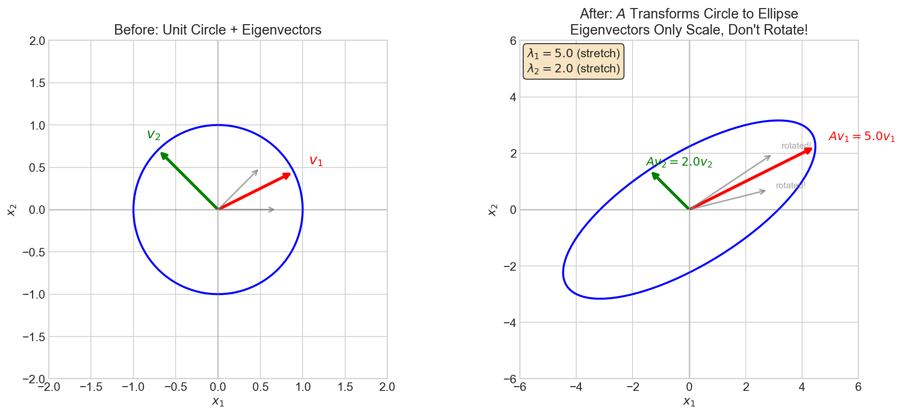 Figure: Eigenvectors only get scaled (not rotated) when multiplied by the matrix. The unit circle (left) becomes an ellipse (right), but eigenvectors stay pointing in their original directions.
Figure: 3D loss landscape showing the optimization surface and gradient descent path.
ML Applications:
- PCA: Principal components are eigenvectors of covariance matrix
- Spectral clustering: Uses eigenvectors of graph Laplacian
- Matrix condition number: Ratio of largest to smallest eigenvalue (affects optimization)
Singular Value Decomposition (SVD)
Any matrix \(\mathbf{A} \in \mathbb{R}^{m \times n}\) can be decomposed as:
\[\mathbf{A} = \mathbf{U} \mathbf{\Sigma} \mathbf{V}^T\]
where:
- \(\mathbf{U}\) (\(m \times m\)): Left singular vectors (orthonormal)
- \(\mathbf{\Sigma}\) (\(m \times n\)): Diagonal matrix of singular values \(\sigma_1 \geq \sigma_2 \geq \cdots \geq 0\)
- \(\mathbf{V}\) (\(n \times n\)): Right singular vectors (orthonormal)
ML Applications:
- Dimensionality reduction: Keep top \(k\) singular values
- Low-rank approximation: Compress weight matrices
- LoRA: Low-rank adaptation of LLMs
Principal Component Analysis (PCA)
Goal: Find directions of maximum variance in data.
Algorithm:
- Center data: \(\mathbf{X} \leftarrow \mathbf{X} - \bar{\mathbf{X}}\)
- Compute covariance matrix: \(\mathbf{C} = \frac{1}{n}\mathbf{X}^T\mathbf{X}\)
- Find eigenvectors of \(\mathbf{C}\)
- Project onto top \(k\) eigenvectors
PCA Worked Example: 2D → 1D
Data: 5 points in 2D
| Point | \(x_1\) | \(x_2\) |
|---|---|---|
| 1 | 2.5 | 2.4 |
| 2 | 0.5 | 0.7 |
| 3 | 2.2 | 2.9 |
| 4 | 1.9 | 2.2 |
| 5 | 3.1 | 3.0 |
Step 1: Center the data
Mean: \(\bar{x}_1 = 2.04\), \(\bar{x}_2 = 2.24\)
Centered data:
| Point | \(x_1 - \bar{x}_1\) | \(x_2 - \bar{x}_2\) |
|---|---|---|
| 1 | 0.46 | 0.16 |
| 2 | -1.54 | -1.54 |
| 3 | 0.16 | 0.66 |
| 4 | -0.14 | -0.04 |
| 5 | 1.06 | 0.76 |
Step 2: Compute covariance matrix
\[\mathbf{C} = \frac{1}{n-1}\mathbf{X}^T\mathbf{X} = \begin{bmatrix} 0.616 & 0.615 \\ 0.615 & 0.716 \end{bmatrix}\]
(Note: Using \(n-1\) for sample covariance)
Step 3: Find eigenvalues and eigenvectors
Characteristic equation: \(\det(\mathbf{C} - \lambda \mathbf{I}) = 0\)
\[\lambda^2 - 1.332\lambda + 0.062 = 0\]
Eigenvalues: \(\lambda_1 = 1.284\), \(\lambda_2 = 0.049\)
Eigenvectors (normalized):
\[\mathbf{v}_1 = \begin{bmatrix} 0.677 \\ 0.735 \end{bmatrix}, \quad \mathbf{v}_2 = \begin{bmatrix} -0.735 \\ 0.677 \end{bmatrix}\]
Step 4: Variance explained
- PC1 explains: \(\frac{1.284}{1.284 + 0.049} = 96.3\%\) of variance
- PC2 explains: \(3.7\%\) of variance
Keeping just PC1 captures 96.3% of the information!
Step 5: Project onto PC1 (dimensionality reduction)
\[z_i = \mathbf{v}_1^T \mathbf{x}_i\]
| Original 2D | Projected 1D |
|---|---|
| (0.46, 0.16) | 0.43 |
| (-1.54, -1.54) | -2.17 |
| (0.16, 0.66) | 0.60 |
| (-0.14, -0.04) | -0.12 |
| (1.06, 0.76) | 1.27 |
Visualization intuition: The first principal component points diagonally (roughly 45°) because \(x_1\) and \(x_2\) are positively correlated. Projecting onto this direction captures most of the spread in the data.
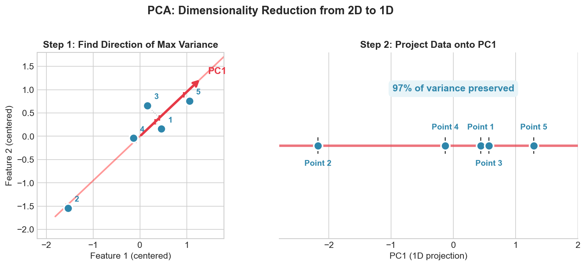 Figure: PCA finds the direction of maximum variance (PC1, red arrow) and projects data onto it. The 2D points become 1D values while preserving 97% of the variance.
Interview Q: “Why do we use eigenvectors in PCA?”
Answer: Eigenvectors of the covariance matrix represent directions of maximum variance. The first eigenvector (largest eigenvalue) is the direction along which the data varies most — projecting onto it loses the least information. In the example above, PC1 captures 96.3% of variance because the data is elongated along that diagonal direction. The eigenvalue itself tells you how much variance is in that direction.
Interview Q: “Walk through PCA step by step.”
A: (1) Center the data by subtracting the mean of each feature. (2) Compute the covariance matrix \(\mathbf{C} = \frac{1}{n-1}\mathbf{X}^T\mathbf{X}\). (3) Find eigenvalues and eigenvectors of \(\mathbf{C}\). (4) Sort eigenvectors by eigenvalue (largest first) — these are the principal components. (5) To reduce to \(k\) dimensions, project data onto the top \(k\) eigenvectors. The eigenvalues tell you how much variance each PC captures.
3.2 Probability and Statistics
Probability Distributions
Discrete Distributions
Bernoulli: Single binary outcome \[P(X = 1) = p, \quad P(X = 0) = 1 - p\]
\[\mathbb{E}[X] = p, \quad \text{Var}(X) = p(1-p)\]
Categorical (Multinoulli): Single outcome from \(k\) classes \[P(X = i) = p_i, \quad \sum_{i=1}^{k} p_i = 1\]
Binomial: \(n\) independent Bernoulli trials \[P(X = k) = \binom{n}{k} p^k (1-p)^{n-k}\]
Poisson: Count of rare events \[P(X = k) = \frac{\lambda^k e^{-\lambda}}{k!}\]
Continuous Distributions
Gaussian (Normal): \[p(x) = \frac{1}{\sqrt{2\pi\sigma^2}} \exp\left(-\frac{(x-\mu)^2}{2\sigma^2}\right)\]
\[\mathbb{E}[X] = \mu, \quad \text{Var}(X) = \sigma^2\]
Multivariate Gaussian: \[p(\mathbf{x}) = \frac{1}{(2\pi)^{d/2}|\mathbf{\Sigma}|^{1/2}} \exp\left(-\frac{1}{2}(\mathbf{x}-\boldsymbol{\mu})^T\mathbf{\Sigma}^{-1}(\mathbf{x}-\boldsymbol{\mu})\right)\]
Uniform: \(p(x) = \frac{1}{b-a}\) for \(x \in [a, b]\)
Bayes’ Theorem
\[P(A|B) = \frac{P(B|A) P(A)}{P(B)}\]
Terminology:
- \(P(A)\): Prior probability
- \(P(B|A)\): Likelihood
- \(P(A|B)\): Posterior probability
- \(P(B)\): Evidence (normalizing constant)
What Bayes’ Theorem Actually Means (Verbal Intuition)
The Core Question: You observed evidence \(B\). How should you update your belief about hypothesis \(A\)?
The Problem: In the real world, we often know \(P(\text{evidence}|\text{hypothesis})\) but want \(P(\text{hypothesis}|\text{evidence})\). Bayes’ theorem lets us flip conditional probabilities!
A Story for Each Term:
| Term | Symbol | Meaning | Example (disease testing) |
|---|---|---|---|
| Prior | \(P(A)\) | Your belief BEFORE seeing evidence | 1% of people have the disease |
| Likelihood | \(P(B \mid A)\) | How likely is this evidence IF the hypothesis is true? | 99% of sick people test positive |
| Posterior | \(P(A \mid B)\) | Your updated belief AFTER seeing evidence | What we want: P(sick given positive test) |
| Evidence | \(P(B)\) | How common is this evidence overall? | Total rate of positive tests (sick + false positives) |
The Key Insight:
“Don’t just ask how well the evidence fits the hypothesis — also consider how likely the hypothesis was to begin with!”
This is why rare diseases remain unlikely even with positive tests. If only 1% of people are sick, you need VERY strong evidence to conclude someone is probably sick.
The Bayesian Update Process:
Prior belief ──────► See evidence ──────► Posterior belief
P(A) B P(A|B)
"Before" "After"The formula tells you HOW to update: multiply prior by likelihood, normalize by evidence.
Example: Medical diagnosis
Given:
- \(P(\text{disease}) = 0.01\) (1% have disease)
- \(P(\text{positive}|\text{disease}) = 0.99\) (test is 99% sensitive)
- \(P(\text{positive}|\text{no disease}) = 0.05\) (5% false positive)
What is \(P(\text{disease}|\text{positive})\)?
\[P(\text{disease}|\text{positive}) = \frac{0.99 \times 0.01}{0.99 \times 0.01 + 0.05 \times 0.99} = \frac{0.0099}{0.0099 + 0.0495} \approx 0.167\]
Only 16.7% chance of disease even with positive test!
Interview Q: “Derive Bayes’ theorem from the definition of conditional probability.”
Answer:
- \(P(A|B) = \frac{P(A \cap B)}{P(B)}\)
- \(P(B|A) = \frac{P(A \cap B)}{P(A)}\)
- Therefore: \(P(A \cap B) = P(B|A)P(A)\)
- Substituting: \(P(A|B) = \frac{P(B|A)P(A)}{P(B)}\)
Maximum Likelihood Estimation (MLE)
🔑 The Big Picture: MLE = Parameter Estimation as OPTIMIZATION
MLE is perhaps the most important bridge between probability theory and optimization. Instead of “guessing” parameters, we:
- Define a likelihood function \(P(\text{data}|\theta)\) — probability of seeing our data given parameter \(\theta\)
- Use calculus or gradient descent to find \(\theta\) that maximizes this probability
- This is why ML uses gradient-based optimization — we’re doing MLE!
Every time you train a neural network with cross-entropy loss, you’re doing MLE!
Goal: Find parameters \(\theta\) that maximize the probability of observed data.
The Key Assumption: We assume our observed data was sampled from some distribution parameterized by an unknown “true” \(\theta^*\). MLE tries to find the \(\hat{\theta}\) that best explains the data we actually saw. We don’t know \(\theta^*\), but if our model is correct and we have enough data, \(\hat{\theta}_{MLE} \to \theta^*\).
📝 Terminology: Estimator vs Estimate
An estimator \(\hat{\theta}\) is a function of the data — it’s a random variable because it depends on which data you happen to observe. Before you collect data, the estimator is uncertain. After you plug in your actual data, you get a specific estimate.
\[\hat{\theta} = g(X_1, X_2, \ldots, X_n)\]
For MLE of a Bernoulli parameter:
- Estimator: \(\hat{p} = \frac{1}{n}\sum_{i=1}^n X_i\) (the formula)
- Estimate: \(\hat{p} = \frac{7}{10} = 0.7\) (the number after seeing data)
The Core Intuition (Three Ways to Understand MLE):
1. Reverse Probability: Normally probability asks: “Given parameters \(\theta\), how likely is data \(D\)?” — that’s \(P(D|\theta)\). MLE reverses the question: “Given data \(D\), which \(\theta\) makes \(D\) most probable?” We scan through all possible \(\theta\) values, compute \(P(D|\theta)\) for each, and pick the \(\theta\) that gives the highest probability.
2. Which World?: Imagine infinitely many parallel worlds, each with a slightly different \(\theta\). In one world the coin has \(p=0.5\), in another \(p=0.7\), etc. You observed 7 heads in 10 flips. MLE asks: “In which world was my observation most likely to happen?” Answer: the world where \(p=0.7\).
3. Concrete Example: You flip an unknown coin 10 times and see 7 heads. Let \(D\) = “7 heads in 10 flips”.
- If \(p=0.5\): \(L(p=0.5|D) = \binom{10}{7} \cdot 0.5^{10} \approx 0.12\)
- If \(p=0.7\): \(L(p=0.7|D) = \binom{10}{7} \cdot 0.7^7 \cdot 0.3^3 \approx 0.27\) ← highest!
- If \(p=0.9\): \(L(p=0.9|D) = \binom{10}{7} \cdot 0.9^7 \cdot 0.1^3 \approx 0.06\)
\(p=0.7\) makes your data most likely → that’s the MLE!
Notation:
| Symbol | Meaning | Example |
|---|---|---|
| \(\mathcal{D}\) | Dataset — the collection of all observed data points | \(\mathcal{D} = \{x_1, x_2, \ldots, x_N\}\) |
| \(x_i\) | Single observation — the \(i\)-th data point in our dataset | One image, one coin flip result, one measurement |
| \(N\) | Number of samples — total data points in dataset | 1000 training examples |
| \(\theta\) | Parameters — the values we want to estimate | Mean \(\mu\), weights \(\mathbf{w}\), probability \(p\) |
| \(P(x_i|\theta)\) | Likelihood of sample \(i\) — probability of observing \(x_i\) if the true parameter is \(\theta\) | \(P(\text{heads}|p=0.7) = 0.7\) |
| \(P(\mathcal{D}|\theta)\) | Likelihood of entire dataset — probability of seeing all our data given \(\theta\) | Product of individual likelihoods (assuming i.i.d.) |
The Math:
\[\hat{\theta}_{MLE} = \arg\max_{\theta} P(\mathcal{D}|\theta) = \arg\max_{\theta} \prod_{i=1}^{N} P(x_i|\theta)\]
Likelihood → Log-Likelihood Transformation:
Likelihood (product of probabilities): \[L(\theta) = P(x_1|\theta) \cdot P(x_2|\theta) \cdot \ldots \cdot P(x_N|\theta) = \prod_{i=1}^{N} P(x_i|\theta)\]
Log-Likelihood (sum of log-probabilities): \[\ell(\theta) = \log P(x_1|\theta) + \log P(x_2|\theta) + \ldots + \log P(x_N|\theta) = \sum_{i=1}^{N} \log P(x_i|\theta)\]
Taking log doesn’t change the argmax, so: \[\hat{\theta}_{MLE} = \arg\max_{\theta} L(\theta) = \arg\max_{\theta} \ell(\theta)\]
From Maximization to Minimization: Why We MINIMIZE Negative Log-Likelihood
The Key Insight: MLE maximizes likelihood, but in practice we minimize the negative log-likelihood (NLL).
| Step | Operation | Optimization Goal |
|---|---|---|
| 1. MLE objective | Likelihood \(P(\mathcal{D} \mid \theta)\) | MAXIMIZE |
| 2. Take log | Log-likelihood \(\log P(\mathcal{D} \mid \theta)\) | MAXIMIZE (log is monotonic) |
| 3. Negate | Negative log-likelihood \(-\log P(\mathcal{D} \mid \theta)\) | MINIMIZE |
Why negate? ML frameworks only minimize
losses — gradient descent goes downhill. There’s no
optimizer.maximize() in PyTorch! So we flip the
objective:
\[\underbrace{\arg\max_\theta \log P(\mathcal{D}|\theta)}_{\text{Maximize log-likelihood}} = \underbrace{\arg\min_\theta \left[-\log P(\mathcal{D}|\theta)\right]}_{\text{Minimize NLL (the loss)}}\]
Cross-entropy loss IS negative
log-likelihood, so when you
loss.backward() and
optimizer.step(), you’re doing MLE!
Second Derivative Test Connection:
At a critical point (where \(f'(x) = 0\)), the second derivative determines if it’s a min or max:
| Second Derivative | Shape | Critical Point |
|---|---|---|
| \(f''(x) > 0\) | Concave up (bowl) | Minimum |
| \(f''(x) < 0\) | Concave down (hill) | Maximum |
Why negation flips min ↔︎ max: If \(f''(x) < 0\) at a maximum, then \((-f)''(x) = -f''(x) > 0\) at the same point — making it a minimum!
For MLE: the log-likelihood has a maximum (concave down). Negating gives a convex function (concave up) with a minimum at the same point. This is why minimizing NLL finds the same parameters as maximizing log-likelihood.
Why Log-Likelihood? (5 Important Reasons)
Taking the log of the likelihood is one of the most important tricks in ML. Here’s why:
1. Products → Sums (Easier Derivatives)
| Likelihood | Log-Likelihood |
|---|---|
| \(L(\theta) = \prod_i P(x_i \mid \theta)\) | \(\ell(\theta) = \sum_i \log P(x_i \mid \theta)\) |
| \(\frac{d}{d\theta} \prod_i f_i = \sum_i \frac{df_i}{d\theta} \prod_{j \neq i} f_j\) (messy!) | \(\frac{d}{d\theta} \sum_i \log f_i = \sum_i \frac{1}{f_i}\frac{df_i}{d\theta}\) (clean!) |
The derivative of a sum is the sum of derivatives — simple. The derivative of a product uses the product rule recursively — a nightmare with 1000 samples!
2. Numerical Stability (Prevents Underflow)
Probabilities are often tiny. Multiplying them causes underflow (rounds to 0):
import numpy as np
# Imagine 100 samples, each with P(x) = 0.1
probs = np.array([0.1] * 100)
# Direct product UNDERFLOWS to 0!
likelihood = np.prod(probs)
print(f"Likelihood: {likelihood}") # 0.0 (underflow!)
# Log-likelihood stays finite
log_likelihood = np.sum(np.log(probs))
print(f"Log-likelihood: {log_likelihood}") # -230.26 (correct!)Even with 100 samples at \(P = 0.1\), the likelihood \(0.1^{100} = 10^{-100}\) underflows. Log-likelihood is \(100 \times \log(0.1) \approx -230\) — perfectly representable!
3. Monotonicity Preserves the Argmax
The \(\log\) function is strictly monotonically increasing: if \(a > b\), then \(\log(a) > \log(b)\).
This means: \[\arg\max_{\theta} L(\theta) = \arg\max_{\theta} \log L(\theta)\]
The parameters that maximize likelihood also maximize log-likelihood — we lose nothing!
4. Connection to Information Theory
Log-likelihood connects beautifully to information theory:
- \(-\log P(x)\) = surprise or information content of event \(x\)
- Lower probability → higher surprise → larger \(-\log P\)
- Average negative log-likelihood = cross-entropy \(H(P, Q)\)
This is why minimizing cross-entropy loss (NLL) is equivalent to MLE — they’re the same thing viewed through different lenses!
5. Convexity for Exponential Family Distributions
For distributions in the exponential family (Gaussian, Bernoulli, Poisson, Exponential, etc.), the negative log-likelihood is convex!
| Distribution | NLL Shape |
|---|---|
| Bernoulli → Logistic Regression | Convex ✓ |
| Gaussian → Linear Regression (MSE) | Convex ✓ |
| Poisson Regression | Convex ✓ |
| Multinomial → Softmax | Convex ✓ |
Why does convexity matter?
- Convex functions have a unique global minimum — no local minima!
- Gradient descent is guaranteed to find the optimal solution
- This is why logistic regression always converges (unlike deep networks)
🔑 Summary: Why We Always Use Log-Likelihood
Reason Benefit Products → Sums Easier derivatives (sum rule vs product rule) Numerical Stability Avoids underflow when multiplying tiny probabilities Monotonicity Same optimal parameters as likelihood Information Theory Connects to entropy, cross-entropy, KL divergence Convexity For exponential family, guarantees global optimum
Interview Q: “Why do we use log-likelihood instead of likelihood?”
A: Five reasons: (1) Easier optimization — products become sums, so derivatives are simpler (sum rule vs product rule). (2) Numerical stability — multiplying many small probabilities underflows to 0, but log-probabilities remain finite. (3) Same argmax — log is monotonic, so maximizing log-likelihood gives the same optimal parameters. (4) Information theory connection — negative log-likelihood is cross-entropy, linking MLE to information-theoretic concepts. (5) Convexity — for exponential family distributions (Gaussian, Bernoulli, etc.), negative log-likelihood is convex, guaranteeing a unique global minimum.
 Figure: Four reasons
we use log-likelihood: (Top-left) Log is monotonically
increasing, preserving argmax. (Top-right) Products become
sums, simplifying derivatives. (Bottom-left) Raw likelihood
underflows with many samples; log-likelihood stays finite.
(Bottom-right) Log compresses large values and expands small
ones, improving optimization.
Figure: Four reasons
we use log-likelihood: (Top-left) Log is monotonically
increasing, preserving argmax. (Top-right) Products become
sums, simplifying derivatives. (Bottom-left) Raw likelihood
underflows with many samples; log-likelihood stays finite.
(Bottom-right) Log compresses large values and expands small
ones, improving optimization.
📝 Probability vs Likelihood: Same Math, Different Perspective
Both involve the same function \(P(D|\theta)\), but the interpretation depends on what’s fixed vs. what varies:
Probability Likelihood Fixed Parameters \(\theta\) Data \(D\) Varies Data \(D\) Parameters \(\theta\) Question “Given this coin (\(p\)=0.5), what’s the chance of 7 heads?” “Given I saw 7 heads, which coin (which \(p\)) best explains this?” Direction Parameters → Data Data → Parameters Sums to 1? Yes (over all possible data) No! (not a probability distribution over \(\theta\)) Notation convention: We write \(L(\theta | D)\) to emphasize that likelihood is a function of \(\theta\), given fixed data. It’s NOT \(P(\theta|D)\) — that would be the posterior in Bayesian inference.
Why likelihood doesn’t sum to 1: If you integrate \(L(p | D)\) over all \(p \in [0,1]\), you don’t get 1. Likelihood tells you relative plausibility of parameter values, not absolute probability.
Worked Example: Coin Flip (Bernoulli MLE)
You flip a coin 10 times and observe: H H T H T H H H T H (7 heads, 3 tails)
What’s the MLE estimate for \(p\) = probability of heads?
Step 1: Write the likelihood
Each flip is Bernoulli: \(P(X = 1) = p\), \(P(X = 0) = 1-p\)
Likelihood of all observations (assuming independence): \[L(p) = p^7 \cdot (1-p)^3\]
Step 2: Take log-likelihood \[\ell(p) = \log L(p) = 7\log(p) + 3\log(1-p)\]
Step 3: Take derivative and set to zero \[\frac{d\ell}{dp} = \frac{7}{p} - \frac{3}{1-p} = 0\]
\[\frac{7}{p} = \frac{3}{1-p}\] \[7(1-p) = 3p\] \[7 - 7p = 3p\] \[7 = 10p\] \[\hat{p}_{MLE} = 0.7\]
Result: The MLE estimate is just the fraction of heads! This is intuitive — if you saw 70% heads, your best guess for \(p\) is 0.7.
General Bernoulli MLE: For \(k\) successes in \(n\) trials: \[\hat{p}_{MLE} = \frac{k}{n}\]
Worked Example: Complete MLE for Normal Distribution (μ and σ²)
This is a classic derivation that demonstrates multivariate MLE with partial derivatives. Given N i.i.d. samples \(x_1, x_2, \ldots, x_N\) from \(\mathcal{N}(\mu, \sigma^2)\), we want to find MLEs for both \(\mu\) and \(\sigma^2\).
Step 1: Write the joint likelihood
Each sample has PDF: \[p(x_i \mid \mu, \sigma^2) = \frac{1}{\sqrt{2\pi\sigma^2}} \exp\left(-\frac{(x_i-\mu)^2}{2\sigma^2}\right)\]
Joint likelihood (i.i.d. assumption → product): \[L(\mu, \sigma^2) = \prod_{i=1}^{N} \frac{1}{\sqrt{2\pi\sigma^2}} \exp\left(-\frac{(x_i-\mu)^2}{2\sigma^2}\right)\]
Step 2: Take the log-likelihood
\[\ell(\mu, \sigma^2) = \log L(\mu, \sigma^2) = \sum_{i=1}^{N} \log \left[\frac{1}{\sqrt{2\pi\sigma^2}} \exp\left(-\frac{(x_i-\mu)^2}{2\sigma^2}\right)\right]\]
Expanding: \[\ell(\mu, \sigma^2) = \sum_{i=1}^{N} \left[-\frac{1}{2}\log(2\pi) - \frac{1}{2}\log(\sigma^2) - \frac{(x_i-\mu)^2}{2\sigma^2}\right]\]
\[= -\frac{N}{2}\log(2\pi) - \frac{N}{2}\log(\sigma^2) - \frac{1}{2\sigma^2}\sum_{i=1}^{N}(x_i - \mu)^2\]
Step 3: Take partial derivative w.r.t. μ and solve
\[\frac{\partial \ell}{\partial \mu} = -\frac{1}{2\sigma^2} \cdot 2 \sum_{i=1}^{N}(x_i - \mu) \cdot (-1) = \frac{1}{\sigma^2}\sum_{i=1}^{N}(x_i - \mu)\]
Setting to zero: \[\frac{1}{\sigma^2}\sum_{i=1}^{N}(x_i - \mu) = 0\]
\[\sum_{i=1}^{N} x_i - N\mu = 0\]
\[\boxed{\hat{\mu}_{MLE} = \frac{1}{N}\sum_{i=1}^{N} x_i = \bar{x}}\]
Result: The MLE for the mean is the sample mean! ✓
Step 4: Take partial derivative w.r.t. σ² and solve
Let \(\tau = \sigma^2\) for cleaner notation:
\[\ell(\mu, \tau) = -\frac{N}{2}\log(2\pi) - \frac{N}{2}\log(\tau) - \frac{1}{2\tau}\sum_{i=1}^{N}(x_i - \mu)^2\]
\[\frac{\partial \ell}{\partial \tau} = -\frac{N}{2\tau} + \frac{1}{2\tau^2}\sum_{i=1}^{N}(x_i - \mu)^2\]
Setting to zero: \[-\frac{N}{2\tau} + \frac{1}{2\tau^2}\sum_{i=1}^{N}(x_i - \mu)^2 = 0\]
Multiply by \(2\tau^2\): \[-N\tau + \sum_{i=1}^{N}(x_i - \mu)^2 = 0\]
\[\tau = \frac{1}{N}\sum_{i=1}^{N}(x_i - \mu)^2\]
Substituting \(\hat{\mu}_{MLE} = \bar{x}\):
\[\boxed{\hat{\sigma}^2_{MLE} = \frac{1}{N}\sum_{i=1}^{N}(x_i - \bar{x})^2}\]
Result: The MLE for variance is the sample variance (but with \(N\), not \(N-1\))!
⚠️ Important: MLE Variance is Biased!
Notice the MLE uses \(\frac{1}{N}\), but textbooks often use \(\frac{1}{N-1}\):
| Estimator | Formula | Bias |
|---|---|---|
| MLE | \(\hat{\sigma}^2_{MLE} = \frac{1}{N}\sum(x_i - \bar{x})^2\) | Biased — underestimates \(\sigma^2\) |
| Unbiased | \(s^2 = \frac{1}{N-1}\sum(x_i - \bar{x})^2\) | Unbiased — \(\mathbb{E}[s^2] = \sigma^2\) |
Why is MLE biased?
The MLE uses \(\bar{x}\) (estimated from data) instead of true \(\mu\). Since \(\bar{x}\) minimizes \(\sum(x_i - c)^2\) over all \(c\), using \(\bar{x}\) systematically underestimates the squared deviations compared to the true mean. Dividing by \(N-1\) (Bessel’s correction) compensates for this.
Does bias matter in practice?
- For large \(N\): Difference is negligible (\(\frac{1}{N} \approx \frac{1}{N-1}\))
- For small \(N\): Unbiased estimator is preferred for inference
- For ML: We typically have large datasets, so MLE is fine
Interview Q: “Is the MLE variance estimator biased?”
A: Yes! The MLE for variance is \(\hat{\sigma}^2 = \frac{1}{N}\sum(x_i - \bar{x})^2\), which underestimates the true variance because we use the sample mean \(\bar{x}\) instead of the true mean. The expected value is \(\mathbb{E}[\hat{\sigma}^2_{MLE}] = \frac{N-1}{N}\sigma^2\), so it’s biased downward. Using \(\frac{1}{N-1}\) (Bessel’s correction) gives an unbiased estimator. This matters more for small samples; for typical ML datasets, the bias is negligible.
Interview Q: “Derive the MLE for a Normal distribution.”
A: Given i.i.d. samples from \(\mathcal{N}(\mu, \sigma^2)\):
Write log-likelihood: \(\ell = -\frac{N}{2}\log(2\pi\sigma^2) - \frac{1}{2\sigma^2}\sum(x_i - \mu)^2\)
Solve for μ: Take \(\frac{\partial \ell}{\partial \mu} = \frac{1}{\sigma^2}\sum(x_i - \mu) = 0\), giving \(\hat{\mu} = \frac{1}{N}\sum x_i = \bar{x}\)
Solve for σ²: Take \(\frac{\partial \ell}{\partial \sigma^2} = -\frac{N}{2\sigma^2} + \frac{1}{2\sigma^4}\sum(x_i-\mu)^2 = 0\), giving \(\hat{\sigma}^2 = \frac{1}{N}\sum(x_i - \bar{x})^2\)
Key insight: The MLE variance uses \(\frac{1}{N}\), which is biased. The unbiased estimator uses \(\frac{1}{N-1}\).
MLE for Logistic Regression → Cross-Entropy
This is the key connection to deep learning!
For binary classification, model predicts \(\hat{y} = \sigma(w^T x + b)\) = probability of class 1.
Step 1: Model the labels as Bernoulli random variables
Each label \(y \in \{0, 1\}\) follows a Bernoulli distribution with parameter \(\hat{y}\) (our predicted probability): \[y \sim \text{Bernoulli}(\hat{y})\]
Step 2: Write the likelihood for one sample
The Bernoulli PMF is: \(P(y|\hat{y}) = \hat{y}^y \cdot (1-\hat{y})^{1-y}\)
This compact formula handles both cases:
- If \(y=1\): \(P(y|x) = \hat{y}^1 \cdot (1-\hat{y})^0 = \hat{y}\) (want \(\hat{y}\) high)
- If \(y=0\): \(P(y|x) = \hat{y}^0 \cdot (1-\hat{y})^1 = 1-\hat{y}\) (want \(\hat{y}\) low)
Step 3: Write likelihood for entire dataset (assuming i.i.d.)
\[L(\theta) = \prod_{i=1}^{N} P(y_i|x_i; \theta) = \prod_{i=1}^{N} \hat{y}_i^{y_i} (1-\hat{y}_i)^{1-y_i}\]
🔑 Why Products? The i.i.d. Assumption
i.i.d. = Independent and Identically Distributed
- Independent: Each data point’s outcome doesn’t affect others. Whether sample 1 is class 0 or 1 tells us nothing about sample 2.
- Identically distributed: All samples come from the same underlying distribution (same \(P(y|x; \theta)\)).
Why multiply? For independent events, joint probability = product of individual probabilities: \[P(A \text{ and } B) = P(A) \times P(B) \quad \text{(if A, B independent)}\]
So the probability of seeing our entire dataset is: \[P(\text{all labels}) = P(y_1) \times P(y_2) \times \cdots \times P(y_N) = \prod_i P(y_i)\]
If samples were NOT independent (e.g., time series, correlated data), we’d need: \[P(y_1, y_2, \ldots, y_N) = P(y_1) \cdot P(y_2|y_1) \cdot P(y_3|y_1,y_2) \cdots\] This is much harder! The i.i.d. assumption makes MLE tractable.
Step 4: Take log-likelihood (products → sums)
\[\ell(\theta) = \log L(\theta) = \sum_{i=1}^{N} \left[y_i \log \hat{y}_i + (1-y_i)\log(1-\hat{y}_i)\right]\]
Step 5: Negate to get loss (we minimize, not maximize)
\[-\ell(\theta) = -\sum_{i=1}^{N} \left[y_i \log \hat{y}_i + (1-y_i)\log(1-\hat{y}_i)\right]\]
This is exactly Binary Cross-Entropy Loss!
\[\mathcal{L}_{BCE} = -\frac{1}{N}\sum_i \left[y_i \log \hat{y}_i + (1-y_i)\log(1-\hat{y}_i)\right]\]
Why this matters: The loss function isn’t arbitrary — it has deep probabilistic foundations. Cross-entropy is the principled choice for classification because it directly answers “what parameters make the correct labels most probable?”
Cross-Entropy vs NLL: Two Derivations, Same Formula
📝 This is a common interview question! “What’s the relationship between cross-entropy loss and negative log-likelihood?” Let’s derive both and see why they’re mathematically identical for classification.
Derivation 1: NLL from Maximum Likelihood (Probability View)
Starting question: “What parameters make my observed data most likely?”
Step 1: Model labels as Categorical random variables
For classification, we model each label as drawn from a Categorical distribution: \[y \sim \text{Categorical}(\hat{y}_1, \hat{y}_2, \ldots, \hat{y}_K)\]
where \(\hat{y}_k = P(y = k | x; \theta)\) is the model’s predicted probability for class \(k\).
Step 2: Write the likelihood for one sample
For a one-hot label where the true class is \(c\): \[P(y = c | x) = \hat{y}_c\]
More compactly, using one-hot vector \(\mathbf{y}\) (with \(y_c = 1\), others 0): \[P(\mathbf{y} | x) = \prod_{k=1}^{K} \hat{y}_k^{y_k} = \hat{y}_c^1 \cdot \hat{y}_1^0 \cdot \ldots = \hat{y}_c\]
Step 3: Write likelihood for entire dataset (i.i.d. assumption) \[L(\theta) = \prod_{i=1}^{N} P(y^{(i)} | x^{(i)}; \theta) = \prod_{i=1}^{N} \hat{y}_{c_i}\]
Step 4: Take log-likelihood (products → sums) \[\ell(\theta) = \log L(\theta) = \sum_{i=1}^{N} \log \hat{y}_{c_i}\]
Step 5: Negate (maximize → minimize) \[\text{NLL} = -\ell(\theta) = -\sum_{i=1}^{N} \log \hat{y}_{c_i}\]
Result: \[\boxed{\text{NLL} = -\sum_{i=1}^{N} \log \hat{y}_{c_i}}\] (Sum of negative log-probabilities of the correct classes)
Derivation 2: Cross-Entropy from Information Theory
Starting question: “How many bits do we waste by using the wrong distribution?”
Step 1: Define Cross-Entropy
Cross-entropy measures the expected bits needed to encode samples from \(P\) using code optimized for \(Q\): \[H(P, Q) = -\sum_x p(x) \log q(x) = \mathbb{E}_{x \sim P}[-\log Q(x)]\]
Step 2: Identify the distributions for classification
- True distribution \(P\): One-hot (all
probability mass on correct class \(c\))
- \(p(y = c) = 1\)
- \(p(y \neq c) = 0\)
- Predicted distribution \(Q\): Softmax output \([\hat{y}_1, \ldots, \hat{y}_K]\)
Step 3: Apply the cross-entropy formula \[H(P, Q) = -\sum_{k=1}^{K} p_k \log \hat{y}_k\]
Step 4: Simplify using one-hot structure
Since \(p_c = 1\) and \(p_{k \neq c} = 0\): \[H(P, Q) = -1 \cdot \log \hat{y}_c - 0 \cdot \log \hat{y}_1 - \ldots - 0 \cdot \log \hat{y}_K = -\log \hat{y}_c\]
Result: \[\boxed{H(P, Q) = -\log \hat{y}_c}\] (Same as NLL for a single sample!)
Why They’re Identical: The Punchline
For the full dataset with one-hot labels:
| Derivation | Formula | Starting Point |
|---|---|---|
| NLL | \(-\sum_i \log \hat{y}_{c_i}\) | Probability theory (MLE) |
| Cross-Entropy | \(-\sum_i \sum_k y_k^{(i)} \log \hat{y}_k^{(i)}\) | Information theory |
For one-hot labels, the inner sum collapses because only one \(y_k = 1\): \[-\sum_k y_k \log \hat{y}_k = -1 \cdot \log \hat{y}_c + 0 + \ldots + 0 = -\log \hat{y}_c\]
Both derivations give the same answer: \[\mathcal{L} = -\sum_{i=1}^{N} \log \hat{y}_{c_i}\]
Intuitive summary: - NLL asks: “How improbable is my observed data under the model?” - Cross-Entropy asks: “How many bits am I wasting by using the wrong distribution?” - Same question, different language!
When They Differ
While NLL and cross-entropy are identical for one-hot labels, they can differ in other settings:
| Scenario | NLL | Cross-Entropy |
|---|---|---|
| One-hot labels | \(-\log \hat{y}_c\) | \(-\log \hat{y}_c\) (identical) |
| Label smoothing | Still uses hard labels | Uses soft targets \(\tilde{y}\) |
| Knowledge distillation | Teacher is fixed | \(H(P_{\text{teacher}}, Q_{\text{student}})\) |
| Regression (continuous) | Gaussian → MSE | Not typically defined |
Label smoothing example: Instead of \(\mathbf{y} = [0, 0, 1, 0]\) (one-hot), use \(\tilde{\mathbf{y}} = [0.025, 0.025, 0.925, 0.025]\). Cross-entropy with \(\tilde{\mathbf{y}}\) ≠ NLL.
Interview Q: “What’s the relationship between cross-entropy loss and negative log-likelihood?”
A: For classification with one-hot labels, they’re mathematically identical. NLL comes from MLE: we model labels as Categorical random variables and maximize the likelihood of observed labels. Cross-entropy comes from information theory: we measure the “wasted bits” when using predicted distribution Q to encode samples from true distribution P.
Both reduce to \(-\sum_i \log \hat{y}_{c_i}\) — the sum of negative log-probabilities of correct classes. The key insight is that for one-hot P, the cross-entropy formula \(-\sum_k p_k \log q_k\) collapses to \(-\log q_c\) since only one \(p_k = 1\). They differ only when using soft labels (label smoothing, knowledge distillation) where P is no longer one-hot.
MLE for Regression → MSE
This is the regression counterpart to cross-entropy!
For regression, model predicts \(\hat{y} = f(x; \theta)\) = continuous output (e.g., house price, temperature).
Step 1: Model the targets as Gaussian random variables
Each target \(y\) is Gaussian-distributed around our prediction: \[y \sim \mathcal{N}(\hat{y}, \sigma^2)\]
This means: \(y = \hat{y} + \epsilon\) where \(\epsilon \sim \mathcal{N}(0, \sigma^2)\) (additive Gaussian noise).
Intuition: We’re saying “the true value is our prediction plus some random Gaussian noise.”
Step 2: Write the likelihood for one sample
The Gaussian PDF is: \[P(y|\hat{y}) = \frac{1}{\sqrt{2\pi\sigma^2}} \exp\left(-\frac{(y - \hat{y})^2}{2\sigma^2}\right)\]
Step 3: Write likelihood for entire dataset (assuming i.i.d.)
\[L(\theta) = \prod_{i=1}^{N} P(y_i|x_i; \theta) = \prod_{i=1}^{N} \frac{1}{\sqrt{2\pi\sigma^2}} \exp\left(-\frac{(y_i - \hat{y}_i)^2}{2\sigma^2}\right)\]
Step 4: Take log-likelihood (products → sums)
\[\ell(\theta) = \sum_{i=1}^{N} \left[-\frac{1}{2}\log(2\pi\sigma^2) - \frac{(y_i - \hat{y}_i)^2}{2\sigma^2}\right]\]
\[= -\frac{N}{2}\log(2\pi\sigma^2) - \frac{1}{2\sigma^2}\sum_{i=1}^{N}(y_i - \hat{y}_i)^2\]
Step 5: Negate to get loss (we minimize, not maximize)
\[-\ell(\theta) = \frac{N}{2}\log(2\pi\sigma^2) + \frac{1}{2\sigma^2}\sum_{i=1}^{N}(y_i - \hat{y}_i)^2\]
Step 6: Drop constants (don’t affect optimization)
Since \(\sigma\) is typically fixed (not learned), all terms except the sum are constant:
\[-\ell(\theta) \propto \sum_{i=1}^{N}(y_i - \hat{y}_i)^2\]
This is exactly MSE Loss!
\[\mathcal{L}_{MSE} = \frac{1}{N}\sum_i (y_i - \hat{y}_i)^2\]
🔑 Connection to Deep Learning
This derivation shows that training a neural network with MSE loss IS MLE under Gaussian noise assumption:
- Model predicts \(\hat{y} = f(x; \theta)\) (continuous value)
- MSE = negative log-likelihood (up to constants)
- Gradient descent minimizes MSE = maximizes likelihood
- So backprop + MSE is just gradient-based MLE!
The parallel to classification is exact:
Task Distribution Likelihood → Loss Classification Bernoulli/Categorical Cross-Entropy Regression Gaussian MSE
Why this matters: MSE isn’t just “squared error” — it’s the principled choice for regression when you assume Gaussian noise. If your noise isn’t Gaussian (e.g., heavy-tailed outliers), you should use a different loss (MAE for Laplace, Huber for robust).
Loss Functions as MLE Under Different Distributions
The connection between loss functions and MLE extends far beyond cross-entropy. Your choice of loss function implicitly assumes a noise distribution for your data!
| Loss Function | Probabilistic Assumption | Distribution | MLE Derivation |
|---|---|---|---|
| Binary Cross-Entropy | Labels are binary | \(y \sim \text{Bernoulli}(\hat{y})\) | \(-\log p(y) = -[y\log\hat{y} + (1-y)\log(1-\hat{y})]\) |
| Categorical Cross-Entropy | Labels are one-hot | \(y \sim \text{Categorical}(\hat{\mathbf{y}})\) | \(-\log p(y) = -\sum_k y_k \log \hat{y}_k\) |
| Mean Squared Error (MSE) | Targets are Gaussian | \(y \sim \mathcal{N}(\hat{y}, \sigma^2)\) | \(-\log p(y) \propto (y - \hat{y})^2\) |
| Mean Absolute Error (MAE) | Targets are Laplace | \(y \sim \text{Laplace}(\hat{y}, b)\) | \(-\log p(y) \propto |y - \hat{y}|\) |
| Huber Loss | Hybrid (Gaussian near mean, Laplace in tails) | Mixture | Smooth transition |
MSE from MLE: The Gaussian Derivation
Assumption: The target \(y\) is Gaussian-distributed around our prediction \(\hat{y}\): \[y \sim \mathcal{N}(\hat{y}, \sigma^2)\]
This means: \(y = \hat{y} + \epsilon\) where \(\epsilon \sim \mathcal{N}(0, \sigma^2)\) (additive Gaussian noise).
Step 1: Write the Gaussian PDF \[p(y|\hat{y}) = \frac{1}{\sqrt{2\pi\sigma^2}} \exp\left(-\frac{(y - \hat{y})^2}{2\sigma^2}\right)\]
Step 2: Take negative log-likelihood \[-\log p(y|\hat{y}) = \frac{(y - \hat{y})^2}{2\sigma^2} + \frac{1}{2}\log(2\pi\sigma^2)\]
Step 3: Drop constants (don’t affect optimization)
Since \(\sigma\) is typically fixed (not learned), the second term is constant. We get: \[-\log p(y|\hat{y}) \propto (y - \hat{y})^2\]
This is MSE! Minimizing MSE is equivalent to MLE under Gaussian noise assumption.
🔑 Key Insight: When to Use MSE vs MAE
- MSE assumes Gaussian noise: Outliers get squared, so MSE heavily penalizes them. Good when noise is truly Gaussian (symmetric, light-tailed).
- MAE assumes Laplace noise: Laplace has heavier tails, so MAE is more robust to outliers. Use when you expect some corrupted data points.
- Huber Loss: Best of both worlds — behaves like MSE near the mean, like MAE for outliers.
MAE from MLE: The Laplace Derivation
Assumption: The target \(y\) is Laplace-distributed around our prediction: \[y \sim \text{Laplace}(\hat{y}, b)\]
The Laplace PDF: \[p(y|\hat{y}) = \frac{1}{2b} \exp\left(-\frac{|y - \hat{y}|}{b}\right)\]
Negative log-likelihood: \[-\log p(y|\hat{y}) = \frac{|y - \hat{y}|}{b} + \log(2b)\]
Dropping constants: \[-\log p(y|\hat{y}) \propto |y - \hat{y}|\]
This is MAE! Minimizing MAE is MLE under Laplace noise assumption.
Why This Matters in Practice
| Scenario | Recommended Loss | Why |
|---|---|---|
| Clean regression data | MSE | Gaussian assumption usually holds |
| Data with outliers | MAE or Huber | More robust, doesn’t square large errors |
| Classification | Cross-Entropy | Matches Bernoulli/Categorical assumption |
| Ordinal regression | Custom (often MSE-like) | Depends on label semantics |
| Probabilistic models | NLL of chosen distribution | Explicitly model the distribution you want |
Interview Q: “Why do we use MSE for regression instead of MAE?”
A: Both are valid — they just make different assumptions. MSE assumes targets have Gaussian noise around the prediction (\(y \sim \mathcal{N}(\hat{y}, \sigma^2)\)), and minimizing MSE is MLE under this assumption. MAE assumes Laplace noise, which has heavier tails. MSE penalizes outliers more heavily (errors are squared), while MAE is more robust to them. Choose based on your noise assumptions: MSE for Gaussian-like errors, MAE (or Huber) when outliers are expected.
Interview Q: “Derive MSE loss from maximum likelihood estimation.”
A: Assume \(y \sim \mathcal{N}(\hat{y}, \sigma^2)\) — targets are Gaussian-distributed around predictions. The PDF is \(p(y|\hat{y}) = \frac{1}{\sqrt{2\pi\sigma^2}}\exp(-\frac{(y-\hat{y})^2}{2\sigma^2})\). Taking the negative log: \(-\log p(y|\hat{y}) = \frac{(y-\hat{y})^2}{2\sigma^2} + \text{const}\). Summing over the dataset and dropping the constant gives \(\mathcal{L} \propto \sum_i (y_i - \hat{y}_i)^2\), which is MSE. So MSE is the MLE loss under Gaussian noise assumption.
Interview Q: “Derive the loss function for logistic regression from MLE.”
A: We model \(P(y=1|x) = \sigma(w^Tx + b)\), treating labels as Bernoulli random variables. The likelihood for one sample is \(P(y|x) = \hat{y}^y(1-\hat{y})^{1-y}\) — this is just the Bernoulli PMF. Taking the log gives \(y\log\hat{y} + (1-y)\log(1-\hat{y})\). Summing over the dataset gives the log-likelihood. We negate (because we minimize loss, not maximize likelihood) to get Binary Cross-Entropy: \(\mathcal{L} = -\sum_i[y_i\log\hat{y}_i + (1-y_i)\log(1-\hat{y}_i)]\). So cross-entropy loss IS negative log-likelihood — training with cross-entropy is doing MLE.
Maximum A Posteriori (MAP) Estimation
🔑 The Big Picture: MAP = MLE + Prior Beliefs
MLE answers: “What parameters maximize the likelihood of the data?” MAP answers: “What parameters maximize the likelihood of the data AND are consistent with our prior beliefs?”
MAP is the Bayesian approach to parameter estimation — it incorporates prior knowledge!
The Core Intuition:
MLE can overfit, especially with limited data. If you flip a coin 3 times and see 3 heads, MLE says \(\hat{p} = 1.0\) — the coin always lands heads! But that seems extreme.
MAP lets you say: “I believe coins are usually close to fair. Let me combine this belief with the evidence.”
Deriving MAP from Bayes’ Theorem:
We want the most probable parameters given the data:
\[\hat{\theta}_{MAP} = \arg\max_{\theta} P(\theta|\mathcal{D})\]
Apply Bayes’ theorem:
\[P(\theta|\mathcal{D}) = \frac{P(\mathcal{D}|\theta) \cdot P(\theta)}{P(\mathcal{D})}\]
Since \(P(\mathcal{D})\) is constant with respect to \(\theta\) (it’s just the evidence):
\[\hat{\theta}_{MAP} = \arg\max_{\theta} P(\mathcal{D}|\theta) \cdot P(\theta)\]
\[= \arg\max_{\theta} \underbrace{P(\mathcal{D}|\theta)}_{\text{likelihood}} \cdot \underbrace{P(\theta)}_{\text{prior}}\]
Taking the log (products → sums):
\[\hat{\theta}_{MAP} = \arg\max_{\theta} \left[\log P(\mathcal{D}|\theta) + \log P(\theta)\right]\]
\[= \arg\max_{\theta} \left[\underbrace{\ell(\theta)}_{\text{log-likelihood}} + \underbrace{\log P(\theta)}_{\text{log-prior}}\right]\]
The Key Insight: Priors ARE Regularization!
Different priors lead to different regularization terms:
| Prior Distribution | Mathematical Form | Resulting Regularization |
|---|---|---|
| Gaussian (Normal) | \(P(\theta) \propto e^{-\frac{\lambda}{2}\|\theta\|^2}\) | L2 (Ridge / Weight Decay) |
| Laplace | \(P(\theta) \propto e^{-\lambda\|\theta\|_1}\) | L1 (Lasso / Sparsity) |
| Uniform (flat) | \(P(\theta) = \text{const}\) | None (reduces to MLE!) |
Worked Example: Gaussian Prior → L2 Regularization
Let’s derive this connection explicitly.
Setup: We want to find parameters \(\theta\) using MAP with a Gaussian prior.
Step 1: Write the Gaussian prior
\[P(\theta) = \frac{1}{\sqrt{2\pi\sigma_0^2}} \exp\left(-\frac{\theta^2}{2\sigma_0^2}\right)\]
For simplicity, let \(\sigma_0^2 = \frac{1}{\lambda}\) (parameterize by precision):
\[P(\theta) \propto \exp\left(-\frac{\lambda}{2}\theta^2\right)\]
Step 2: Take the log-prior
\[\log P(\theta) = -\frac{\lambda}{2}\theta^2 + \text{const}\]
Step 3: Write the MAP objective
\[\hat{\theta}_{MAP} = \arg\max_{\theta} \left[\log P(\mathcal{D}|\theta) + \log P(\theta)\right]\]
\[= \arg\max_{\theta} \left[\ell(\theta) - \frac{\lambda}{2}\|\theta\|^2\right]\]
Step 4: Convert to minimization (negate):
\[\hat{\theta}_{MAP} = \arg\min_{\theta} \left[-\ell(\theta) + \frac{\lambda}{2}\|\theta\|^2\right]\]
\[= \arg\min_{\theta} \left[\underbrace{\mathcal{L}(\theta)}_{\text{loss (e.g., MSE, CE)}} + \underbrace{\frac{\lambda}{2}\|\theta\|^2}_{\text{L2 regularization!}}\right]\]
This is exactly regularized loss! The L2 penalty term comes directly from the Gaussian prior.
Worked Example: Laplace Prior → L1 Regularization
The Laplace prior:
\[P(\theta) = \frac{\lambda}{2} \exp(-\lambda|\theta|)\]
Take the log:
\[\log P(\theta) = \log\frac{\lambda}{2} - \lambda|\theta|\]
MAP objective:
\[\hat{\theta}_{MAP} = \arg\min_{\theta} \left[\mathcal{L}(\theta) + \lambda\|\theta\|_1\right]\]
This is L1 regularization! The Laplace prior encourages sparsity because it has more mass at zero than the Gaussian.
Why Different Priors Lead to Different Sparsity
| Prior | Shape at Zero | Effect on Weights |
|---|---|---|
| Gaussian | Smooth, rounded | Shrinks all weights toward zero, but doesn’t make them exactly zero |
| Laplace | Sharp peak | Pushes many weights to exactly zero (sparse solutions) |
Intuition: The Laplace prior has a “spike” at zero — it strongly believes many parameters should be zero. The Gaussian is “smooth” at zero — it believes parameters are small but not necessarily zero.
 Figure: Comparing
Laplace and Gaussian priors for MAP estimation. Top-left:
Laplace has a sharp peak at zero (inducing sparsity) while
Gaussian is smooth (shrinking all weights). Top-right:
Taking the log reveals why — log-Laplace is V-shaped (L1
penalty) while log-Gaussian is parabolic (L2 penalty).
Bottom-left: Effect on trained weights — L1 produces exact
zeros (sparse), L2 shrinks all weights (dense).
Bottom-right: Geometric intuition — loss contours hit L1
diamond at corners (sparse solutions) but touch L2 circle at
smooth points (non-sparse).
Figure: Comparing
Laplace and Gaussian priors for MAP estimation. Top-left:
Laplace has a sharp peak at zero (inducing sparsity) while
Gaussian is smooth (shrinking all weights). Top-right:
Taking the log reveals why — log-Laplace is V-shaped (L1
penalty) while log-Gaussian is parabolic (L2 penalty).
Bottom-left: Effect on trained weights — L1 produces exact
zeros (sparse), L2 shrinks all weights (dense).
Bottom-right: Geometric intuition — loss contours hit L1
diamond at corners (sparse solutions) but touch L2 circle at
smooth points (non-sparse).
MLE vs MAP Comparison
| Aspect | MLE | MAP |
|---|---|---|
| Objective | \(\arg\max_\theta P(\mathcal{D} \mid \theta)\) | \(\arg\max_\theta P(\mathcal{D} \mid \theta) P(\theta)\) |
| Prior | None (or implicit uniform) | Explicit prior \(P(\theta)\) |
| Regularization | None | Automatic (from prior) |
| Small data | Prone to overfitting | More robust (prior regularizes) |
| Large data | Works well | Converges to MLE (data overwhelms prior) |
| Interpretation | Point estimate maximizing likelihood | Point estimate maximizing posterior |
When to Use MLE vs MAP
| Scenario | Recommendation | Why |
|---|---|---|
| Large dataset | MLE (or MAP, doesn’t matter) | With lots of data, the likelihood dominates — prior has negligible effect |
| Small dataset | MAP | Prior prevents overfitting; incorporates domain knowledge |
| Strong domain knowledge | MAP | Can encode beliefs (e.g., “weights should be small”) |
| No prior information | MLE | Using a prior without justification can bias results |
| Interpretability | MLE | Easier to explain — “most likely given the data” |
The Connection to Deep Learning:
- Weight decay = L2 regularization = Gaussian prior on weights
- L1 regularization = Laplace prior on
weights
- Dropout ≈ approximate Bayesian inference (model averaging)
When you add weight_decay=0.01 in PyTorch,
you’re implicitly doing MAP with a Gaussian prior!
# These are equivalent:
# 1. Explicit L2 regularization
loss = cross_entropy(pred, target) + 0.01 * sum(p.pow(2).sum() for p in model.parameters())
# 2. Weight decay in optimizer (MAP with Gaussian prior)
optimizer = torch.optim.Adam(model.parameters(), weight_decay=0.01)Concrete Example: Coin Flip with Prior
Scenario: You flip a coin 3 times and see 3 heads. What’s \(p\) (probability of heads)?
MLE: \[\hat{p}_{MLE} = \frac{\text{heads}}{\text{total}} = \frac{3}{3} = 1.0\]
MLE says the coin always lands heads! This seems overconfident.
MAP with Beta(2, 2) prior (belief that coins are usually fair-ish):
The Beta prior is: \(P(p) \propto p^{\alpha-1}(1-p)^{\beta-1}\) with \(\alpha=\beta=2\).
The posterior is: \(P(p|D) \propto p^{3}(1-p)^{0} \cdot p^{1}(1-p)^{1} = p^{4}(1-p)^{1}\)
This is Beta(5, 2), with mode: \[\hat{p}_{MAP} = \frac{\alpha - 1}{\alpha + \beta - 2} = \frac{4}{5} = 0.8\]
MAP gives 0.8 — still high (we saw 3 heads!), but tempered by our prior belief that coins aren’t usually extreme.
Interview Q: “What’s the difference between MLE and MAP?”
A: MLE maximizes \(P(\mathcal{D}|\theta)\) — the likelihood of data given parameters. MAP maximizes \(P(\theta|\mathcal{D}) \propto P(\mathcal{D}|\theta)P(\theta)\) — the posterior, which is likelihood times prior. MAP incorporates prior beliefs about parameters, acting as regularization. With a Gaussian prior, MAP = MLE + L2 regularization. With a flat (uniform) prior, MAP reduces to MLE. Use MLE for large datasets; use MAP when data is limited or you have prior knowledge.
Interview Q: “Why does L2 regularization correspond to a Gaussian prior?”
A: The Gaussian prior is \(P(\theta) \propto \exp(-\frac{\lambda}{2}\|\theta\|^2)\). Taking the log gives \(\log P(\theta) = -\frac{\lambda}{2}\|\theta\|^2 + \text{const}\). The MAP objective is \(\arg\max[\log P(\mathcal{D}|\theta) + \log P(\theta)]\), which equals \(\arg\min[\mathcal{L}(\theta) + \frac{\lambda}{2}\|\theta\|^2]\) after negating. The \(\frac{\lambda}{2}\|\theta\|^2\) term is exactly L2 regularization. So weight decay in neural networks is equivalent to MAP estimation with a Gaussian prior on weights.
Markov Chains
A Markov chain is a sequence of random variables where each state depends only on the previous state:
\[P(X_{t+1}|X_t, X_{t-1}, \ldots, X_1) = P(X_{t+1}|X_t)\]
The Markov Property (Verbal Explanation):
Think of it as “memorylessness” — to predict the future, you only need to know the present, not the entire history. Yesterday’s weather doesn’t help predict tomorrow’s weather if you already know today’s weather.
Worked Example: Weather Markov Chain
Consider weather that’s either Sunny (S) or Rainy (R):
┌─────────────────────┐
│ 0.7 │
▼ │
┌──────┐ 0.3 ┌──────┐
│ │ ───────────▶ │ │
│ Sunny│ │ Rainy│
│ │ ◀─────────── │ │
└──────┘ 0.4 └──────┘
▲ │
│ 0.6 │
└─────────────────────┘Transition Matrix:
\[\mathbf{P} = \begin{bmatrix} P(S|S) & P(R|S) \\ P(S|R) & P(R|R) \end{bmatrix} = \begin{bmatrix} 0.7 & 0.3 \\ 0.4 & 0.6 \end{bmatrix}\]
Interpretation: Each row must sum to 1 (from each state, you go somewhere).
Multi-Step Transitions: What’s the probability of sunny in 2 days given sunny today?
\[P(\text{sunny in 2 days} | \text{sunny today}) = [\mathbf{P}^2]_{11}\]
\[\mathbf{P}^2 = \begin{bmatrix} 0.7 & 0.3 \\ 0.4 & 0.6 \end{bmatrix} \begin{bmatrix} 0.7 & 0.3 \\ 0.4 & 0.6 \end{bmatrix} = \begin{bmatrix} 0.61 & 0.39 \\ 0.52 & 0.48 \end{bmatrix}\]
So 61% chance of sunny in 2 days, given sunny today.
Stationary Distribution: The long-run equilibrium where the distribution stops changing.
Solve \(\boldsymbol{\pi} = \boldsymbol{\pi}\mathbf{P}\) (left eigenvector with eigenvalue 1):
\[[\pi_S, \pi_R] = [\pi_S, \pi_R] \begin{bmatrix} 0.7 & 0.3 \\ 0.4 & 0.6 \end{bmatrix}\]
This gives: - \(\pi_S = 0.7\pi_S + 0.4\pi_R\) - \(\pi_R = 0.3\pi_S + 0.6\pi_R\)
From first equation: \(0.3\pi_S = 0.4\pi_R\) → \(\pi_S = \frac{4}{3}\pi_R\)
With constraint \(\pi_S + \pi_R = 1\): \[\frac{4}{3}\pi_R + \pi_R = 1 \implies \pi_R = \frac{3}{7}, \quad \pi_S = \frac{4}{7}\]
Result: In the long run, it’s sunny ~57% of the time and rainy ~43%, regardless of starting state!
Interview Q: “What is the Markov property?”
A: The Markov property states that the future is conditionally independent of the past given the present: \(P(X_{t+1}|X_t, X_{t-1}, \ldots) = P(X_{t+1}|X_t)\). Intuitively, the current state contains all relevant information for predicting the next state — the history doesn’t provide additional information. This “memorylessness” is fundamental to Markov chains, MDPs in reinforcement learning, and HMMs.
ML Applications:
- Language models: N-gram models assume word depends only on previous n-1 words
- PageRank: Web pages as states, links as transitions, stationary distribution = importance
- MCMC sampling: Construct chains whose stationary distribution is our target
- Reinforcement learning: MDP is a Markov chain with actions
MCMC: Markov Chain Monte Carlo
The Problem: We want to sample from a complex distribution \(p(x)\) that we can’t directly sample from, but we can evaluate (up to a normalizing constant).
Why we need it: - Bayesian inference: posterior \(p(\theta|D) \propto p(D|\theta)p(\theta)\) - We can compute the numerator, but the normalizing constant requires intractable integrals
The Idea: Construct a Markov chain whose stationary distribution is exactly \(p(x)\). Run the chain long enough, and samples will come from \(p(x)\)!
Metropolis-Hastings Algorithm
The most fundamental MCMC algorithm:
Setup:
- \(p(x)\): Target distribution (we want to sample from this)
- \(q(x'|x)\): Proposal distribution (how we propose new samples)
Algorithm:
1. Start at some x₀
2. For t = 1, 2, 3, ...
a. Propose: x' ~ q(x'|xₜ)
b. Compute acceptance ratio:
α = min(1, [p(x') × q(xₜ|x')] / [p(xₜ) × q(x'|xₜ)])
c. Accept or reject:
- With probability α: xₜ₊₁ = x' (accept)
- Otherwise: xₜ₊₁ = xₜ (reject, stay put)Why it works: The accept/reject step ensures “detailed balance” — flow between any two states is equal in both directions, guaranteeing \(p(x)\) is the stationary distribution.
Simple MCMC Example: Sampling from a Mixture of Gaussians
Target: \(p(x) = 0.3 \cdot \mathcal{N}(x; -2, 0.5) + 0.7 \cdot \mathcal{N}(x; 2, 1)\)
import numpy as np
def target_pdf(x):
"""Mixture of two Gaussians (unnormalized is fine!)"""
return 0.3 * np.exp(-0.5 * ((x + 2) / 0.5)**2) + \
0.7 * np.exp(-0.5 * ((x - 2) / 1.0)**2)
def metropolis_hastings(n_samples, proposal_std=1.0):
samples = []
x = 0.0 # Starting point
for _ in range(n_samples):
# Propose new point (symmetric proposal: q(x'|x) = q(x|x'))
x_proposed = x + np.random.normal(0, proposal_std)
# Acceptance ratio (symmetric proposal simplifies to p(x')/p(x))
alpha = min(1, target_pdf(x_proposed) / target_pdf(x))
# Accept or reject
if np.random.random() < alpha:
x = x_proposed # Accept
# else: stay at current x (reject)
samples.append(x)
return np.array(samples)
# Run MCMC
samples = metropolis_hastings(10000)
# Discard first 1000 as "burn-in" (chain needs time to reach stationary dist)
samples = samples[1000:]Key Concepts:
| Term | Meaning |
|---|---|
| Burn-in | Initial samples to discard (chain hasn’t converged yet) |
| Mixing | How quickly chain explores the state space |
| Autocorrelation | Correlation between successive samples |
| Effective sample size | Accounts for correlation — often much smaller than actual samples |
Interview Q: “What is MCMC and why do we need it?”
A: MCMC (Markov Chain Monte Carlo) constructs a Markov chain whose stationary distribution equals our target distribution \(p(x)\). We need it when we can evaluate \(p(x)\) (up to a constant) but can’t directly sample from it — common in Bayesian inference where \(p(\theta|D) \propto p(D|\theta)p(\theta)\) involves intractable normalizing constants. Metropolis-Hastings proposes new samples and accepts/rejects them to ensure the chain converges to \(p(x)\). After enough iterations (past burn-in), samples approximate draws from the target distribution.
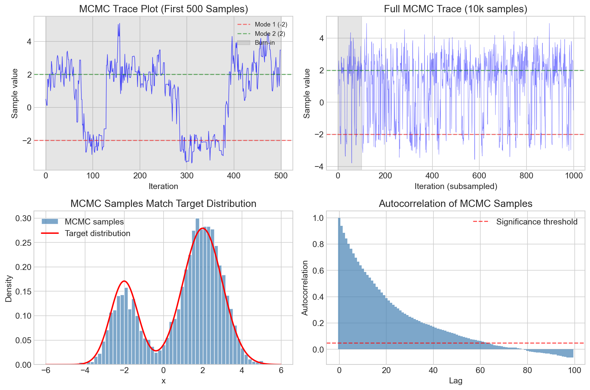 Figure: Metropolis-Hastings MCMC sampling from a mixture of Gaussians. Top: trace plots showing the chain exploring both modes. Bottom-left: histogram of samples matches the target distribution. Bottom-right: autocorrelation decays, indicating mixing.
MCMC in Modern ML:
| Application | Use of MCMC |
|---|---|
| Bayesian Neural Networks | Sample weight posteriors instead of point estimates |
| Latent Variable Models | Sample latent variables when integration is intractable |
| LLM Sampling | Not typically MCMC, but temperature sampling has similar flavor |
| Energy-Based Models | Langevin dynamics is a continuous-time MCMC variant |
Key Statistical Concepts
Expectation: \(\mathbb{E}[X] = \sum_x x \cdot P(X = x)\) or \(\int x \cdot p(x) dx\)
Variance: \(\text{Var}(X) = \mathbb{E}[(X - \mathbb{E}[X])^2] = \mathbb{E}[X^2] - \mathbb{E}[X]^2\)
Covariance: \(\text{Cov}(X, Y) = \mathbb{E}[(X - \mathbb{E}[X])(Y - \mathbb{E}[Y])]\)
Independence: \(P(X, Y) = P(X)P(Y)\) iff \(X\) and \(Y\) are independent
Conditional Independence: \(X \perp Y | Z\) means \(P(X, Y|Z) = P(X|Z)P(Y|Z)\)
The Central Limit Theorem (CLT)
🔑 One of the most important theorems in statistics! The CLT explains why the normal distribution appears everywhere in nature and why averaging “works” in machine learning.
Statement: The average of many independent random variables tends toward a normal distribution, regardless of the original distribution.
\[\frac{\bar{X}_n - \mu}{\sigma / \sqrt{n}} \xrightarrow{d} \mathcal{N}(0, 1) \quad \text{as } n \to \infty\]
Understanding the Notation
Let’s break down this formula piece by piece:
| Symbol | Meaning | Plain English |
|---|---|---|
| \(X_1, X_2, \ldots, X_n\) | i.i.d. random variables | Your individual data points (e.g., individual dice rolls) |
| \(\bar{X}_n = \frac{1}{n}\sum_{i=1}^n X_i\) | Sample mean | The average of your n samples |
| \(\mu\) | True population mean | \(\mathbb{E}[X_i]\) — what you’d get averaging infinitely many samples |
| \(\sigma\) | True population standard deviation | How spread out individual samples are |
| \(\sigma / \sqrt{n}\) | Standard error | How spread out sample means are — key insight! |
| \(\xrightarrow{d}\) | Converges in distribution | As n grows, the distribution approaches (it’s a limit statement) |
| \(\mathcal{N}(0, 1)\) | Standard normal distribution | Bell curve with mean=0, variance=1 |
The \(\xrightarrow{d}\) notation is probability theory shorthand for “converges in distribution.” It means as \(n \to \infty\), the CDF of the left side approaches the CDF of \(\mathcal{N}(0,1)\). It’s NOT a variable — it’s describing the type of convergence!
What the Formula Actually Says (Step by Step)
Step 1: Start with sample mean \(\bar{X}_n\)
When you average \(n\) samples, the result \(\bar{X}_n\) has:
- Mean: \(\mathbb{E}[\bar{X}_n] = \mu\) (same as individual samples)
- Variance: \(\text{Var}(\bar{X}_n) = \frac{\sigma^2}{n}\) (shrinks as n grows!)
Step 2: Center by subtracting \(\mu\)
\(\bar{X}_n - \mu\) shifts the distribution so its mean is 0.
Step 3: Standardize by dividing by \(\sigma/\sqrt{n}\)
\(\frac{\bar{X}_n - \mu}{\sigma/\sqrt{n}}\) now has:
- Mean = 0
- Variance = 1
Step 4: CLT says this standardized quantity → \(\mathcal{N}(0,1)\)
No matter what distribution the original \(X_i\) came from!
Why Does Averaging Produce Normality? (Intuition)
Informal Explanation: When you add many independent random variables:
- Extreme values in one direction tend to be “canceled out” by extreme values in the other
- The more variables you add, the more cancellation happens
- What’s left is a smooth, symmetric pile-up around the mean
- This pile-up shape is the bell curve!
Another way to think about it: The normal distribution is the “most random” distribution for a given mean and variance (maximum entropy). When you mix many random things together, you lose the specific structure of each one and approach this “maximally random” state.
Worked Example: Dice Rolling
Let’s see CLT in action with dice!
Setup: Roll a fair 6-sided die. Each roll has: - \(\mu = \frac{1+2+3+4+5+6}{6} = 3.5\) - \(\sigma^2 = \frac{(1-3.5)^2 + (2-3.5)^2 + \cdots + (6-3.5)^2}{6} = \frac{35}{12} \approx 2.92\) - \(\sigma \approx 1.71\)
Single die roll (n=1): Uniform distribution over {1,2,3,4,5,6} — clearly NOT normal!
Average of 2 dice (n=2): Triangular shape, peak at 3.5 — getting closer to normal
Average of 30 dice (n=30): Almost perfectly normal with: - Mean = 3.5 (unchanged) - Standard error = \(\frac{1.71}{\sqrt{30}} \approx 0.31\) (much smaller spread!)
import numpy as np
# Simulate CLT with dice
n_experiments = 10000
for n_dice in [1, 2, 30]:
# Each experiment: roll n_dice dice and take the mean
means = [np.mean(np.random.randint(1, 7, n_dice)) for _ in range(n_experiments)]
print(f"n={n_dice}: mean={np.mean(means):.2f}, std={np.std(means):.2f}")
# Output:
# n=1: mean=3.50, std=1.71 (original distribution)
# n=2: mean=3.50, std=1.21 (1.71/√2 = 1.21)
# n=30: mean=3.50, std=0.31 (1.71/√30 = 0.31)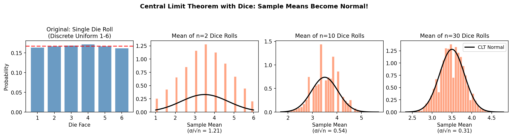 Figure: CLT with dice rolls. Left: Single die roll is uniform (not normal). As we average more dice, the distribution of sample means approaches normal. The spread (standard error) shrinks as \(\sigma/\sqrt{n}\).
CLT with Different Starting Distributions
The remarkable thing about CLT: it works regardless of the original distribution!
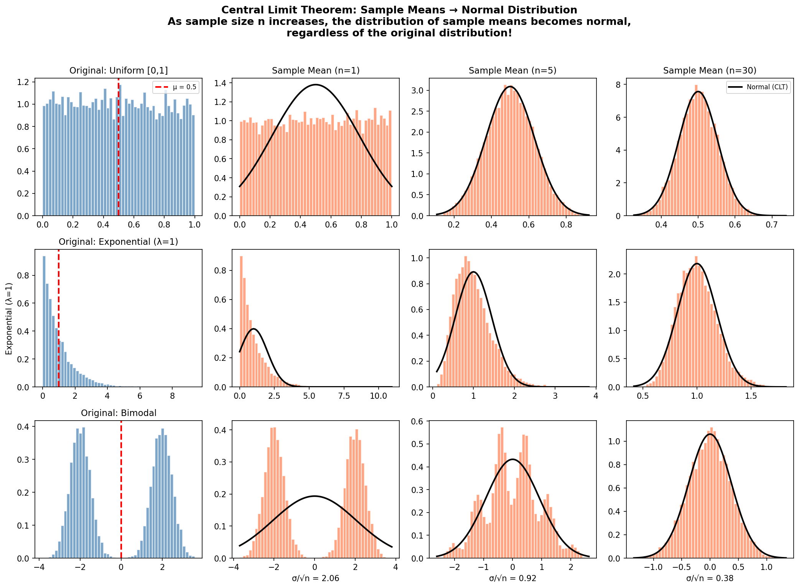 Figure: CLT in action with three very different starting distributions (uniform, exponential, bimodal). By n=30, all converge to normal! The black curve is the theoretical CLT prediction.
Key Observations: - Row 1 (Uniform): Starts flat, becomes bell-shaped - Row 2 (Exponential): Starts heavily skewed right, becomes symmetric - Row 3 (Bimodal): Starts with TWO peaks, converges to ONE bell curve!
The Standard Error: \(\sigma / \sqrt{n}\)
This is the most practically important part of CLT!
\[\text{Standard Error (SE)} = \frac{\sigma}{\sqrt{n}}\]
What it tells us: The standard deviation of sample means decreases as \(1/\sqrt{n}\)
| Sample Size \(n\) | Standard Error | Relative to Original |
|---|---|---|
| 1 | \(\sigma\) | 100% |
| 4 | \(\sigma/2\) | 50% |
| 16 | \(\sigma/4\) | 25% |
| 100 | \(\sigma/10\) | 10% |
| 10,000 | \(\sigma/100\) | 1% |
Diminishing returns: To halve your uncertainty, you need 4× more samples!
Why CLT Matters for Machine Learning
1. Mini-Batch Gradient Descent
The gradient estimate from a mini-batch is an average of individual sample gradients:
\[\hat{g} = \frac{1}{B}\sum_{i=1}^{B} \nabla L(x_i)\]
By CLT, this estimate is approximately normal, with standard error \(\propto 1/\sqrt{B}\).
- Larger batch → more stable gradients (smaller variance)
- But: 4× batch size only gives 2× reduction in variance
- This justifies using moderate batch sizes (e.g., 32-256) rather than huge ones
2. Confidence Intervals for Model Evaluation
When you measure accuracy on a test set of \(n\) samples, the true accuracy is:
\[\text{True accuracy} \in \text{Measured accuracy} \pm 1.96 \times \frac{\sigma}{\sqrt{n}}\]
(95% confidence interval, using CLT)
3. Statistical Tests
The t-test, z-test, and many other tests assume sample means are normal — CLT justifies this assumption even when individual observations aren’t normal.
4. Xavier/He Initialization
Weights are initialized as sums of small random values. By CLT, the distribution of weighted sums (activations) tends toward normal, which helps with stable training.
Interview Questions
Interview Q: “What is the Central Limit Theorem and why does it matter for ML?”
A: The CLT states that when you average many independent random variables, the result is approximately normally distributed — regardless of the original distribution. The key formula is \(\frac{\bar{X}_n - \mu}{\sigma/\sqrt{n}} \to \mathcal{N}(0,1)\).
For ML:
- Mini-batch gradients are averages, so they’re approximately normal — this justifies SGD and helps us reason about optimization
- Variance decreases as \(1/\sqrt{n}\), explaining why larger batches give more stable (but not proportionally better) gradients
- Statistical tests for model comparison rely on CLT to assume normality of sample means
- Confidence intervals for model evaluation use CLT to quantify uncertainty
Interview Q: “What does the \(\xrightarrow{d}\) notation mean in the CLT statement?”
A: The \(\xrightarrow{d}\) means “converges in distribution” — it’s saying that as \(n \to \infty\), the probability distribution of the quantity on the left approaches the normal distribution. It’s a statement about the limiting behavior of the CDF, not about individual values converging. This is distinct from almost sure convergence or convergence in probability.
Interview Q: “How does batch size affect gradient variance, and what does CLT tell us?”
A: By CLT, the standard error of the batch gradient is \(\sigma/\sqrt{B}\) where \(B\) is batch size. Doubling the batch size reduces standard error by only \(\sqrt{2} \approx 1.41\), not by 2. This means we get diminishing returns from larger batches: 4× batch size → 2× reduction in variance. This is why practitioners often use moderate batch sizes and accept some gradient noise rather than always maximizing batch size.
Hypothesis Testing and Statistical Inference
The CLT tells us that sample means are approximately normal. This is the foundation for hypothesis testing — a framework for making decisions about populations based on sample data.
The Hypothesis Testing Framework
The Setup:
- Null hypothesis (\(H_0\)): The “default” assumption (typically: no effect, no difference)
- Alternative hypothesis (\(H_1\) or \(H_a\)): What we’re trying to prove (typically: there IS an effect)
- Test statistic: A number computed from data that measures evidence against \(H_0\)
- P-value: Probability of seeing data this extreme (or more) IF \(H_0\) is true
- Significance level (\(\alpha\)): Threshold for “extreme enough” (commonly 0.05)
Decision Rule: Reject \(H_0\) if p-value < \(\alpha\)
Example: Testing if a new model is better than baseline
- \(H_0\): New model accuracy = Baseline accuracy (no improvement)
- \(H_1\): New model accuracy > Baseline accuracy (improvement exists)
- Collect test data, compute accuracy difference
- If p-value < 0.05 → “statistically significant improvement”
Type I and Type II Errors
When we make a decision, we can be wrong in two ways:
Hypothesis Testing Confusion Matrix:
| Reality: \(H_0\) True | Reality: \(H_0\) False | |
|---|---|---|
| (No effect exists) | (Effect exists) | |
| Decision: Reject \(H_0\) | ❌ Type I Error (α) | ✓ Correct Decision |
| False Positive | True Positive (Power = 1-β) | |
| Decision: Fail to Reject \(H_0\) | ✓ Correct Decision | ❌ Type II Error (β) |
| True Negative | False Negative |
Memory Trick: - Type I = “False alarm” — you rejected \(H_0\) but shouldn’t have (α = significance level) - Type II = “Missed detection” — you failed to reject \(H_0\) but should have (β = miss rate)
Visual Intuition: The two error types correspond to different regions under the null and alternative distributions:
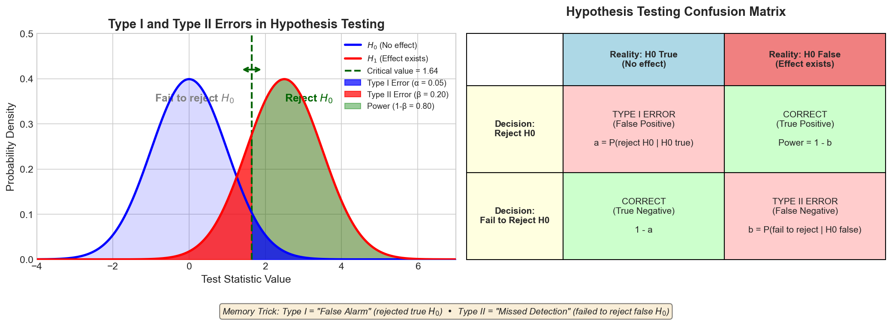 Figure: Type I error (α) is the area under H₀ beyond the critical value — rejecting H₀ when it’s true. Type II error (β) is the area under H₁ before the critical value — failing to reject H₀ when H₁ is true. Power (1-β) is the remaining area under H₁.
Key Probabilities:
| Symbol | Name | Definition |
|---|---|---|
| \(\alpha\) | Significance level | \(P(\text{reject } H_0 \mid H_0 \text{ true})\) = P(Type I error) |
| \(\beta\) | Type II error rate | \(P(\text{fail to reject } H_0 \mid H_0 \text{ false})\) |
| \(1 - \beta\) | Power | \(P(\text{reject } H_0 \mid H_0 \text{ false})\) = P(detecting real effect) |
The Trade-off: You can’t minimize both errors simultaneously!
- Lower \(\alpha\) (stricter threshold) → fewer false positives BUT more false negatives
- Higher \(\alpha\) (looser threshold) → fewer false negatives BUT more false positives
Analogy to ML Classification:
| Hypothesis Testing | ML Classification |
|---|---|
| Type I error (FP) | False Positive Rate = FP/(FP+TN) |
| Type II error (FN) | False Negative Rate = FN/(FN+TP) |
| Power (\(1-\beta\)) | Recall/Sensitivity = TP/(TP+FN) |
| \(1-\alpha\) | Specificity = TN/(TN+FP) |
Interview Q: “What’s the difference between Type I and Type II errors?”
A: Type I error (false positive) is rejecting a true null hypothesis — concluding there’s an effect when there isn’t one. Type II error (false negative) is failing to reject a false null — missing a real effect. In ML terms, if we’re testing whether a new model is better: Type I = claiming improvement when there’s none (could waste resources deploying a useless model). Type II = missing a real improvement (could miss deploying a better model). The significance level \(\alpha\) controls Type I; power (\(1-\beta\)) controls Type II. There’s a trade-off — reducing one typically increases the other.
Mean, Median, and Mode
Understanding measures of central tendency and their behavior in different distributions is fundamental for data analysis and ML preprocessing.
Definitions:
| Measure | Definition | Formula | Sensitivity to Outliers |
|---|---|---|---|
| Mean | Sum divided by count (average) | \(\bar{x} = \frac{1}{n}\sum_{i=1}^{n} x_i\) | High (outliers pull it) |
| Median | Middle value when sorted | Middle element(s) of sorted data | Low (robust) |
| Mode | Most frequent value | Value with highest frequency | None |
Relationship in Skewed Distributions:
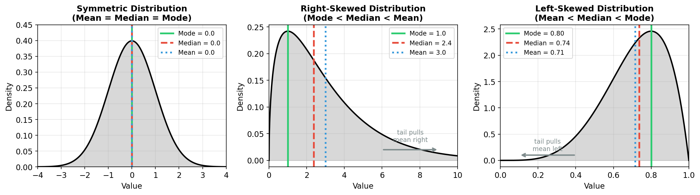 Figure: The relationship between Mean, Median, and Mode depends on skewness. Left: Symmetric — all three are equal. Middle: Right-skewed (income, house prices) — the long tail pulls the mean to the right. Right: Left-skewed — the tail pulls mean to the left.
| Distribution Type | Relationship | Real-World Example |
|---|---|---|
| Symmetric | Mean = Median = Mode | Heights, test scores (graded on curve) |
| Right-skewed | Mode < Median < Mean | Income, house prices, company sizes, page views |
| Left-skewed | Mean < Median < Mode | Age at death in developed countries, exam scores (easy test) |
Why does skewness affect the mean but not the median?
The mean is a balance point — every value contributes proportionally. One billionaire among 100 people dramatically shifts the mean income:
incomes = [50000] * 99 + [10000000] # 99 people at $50k, 1 billionaire
mean = sum(incomes) / len(incomes) # $149,500 (misleading!)
median = sorted(incomes)[50] # $50,000 (representative)The median only cares about position, not magnitude — the billionaire is just “the largest value.”
When to use which:
| Use | When | Example |
|---|---|---|
| Mean | Symmetric data, no outliers | Sensor measurements, standardized tests |
| Median | Skewed data, outliers present | Income, house prices, latency metrics |
| Mode | Categorical data, “most popular” | Favorite color, product ratings, most common word |
Interview Q: “Given a right-skewed income distribution, which measure of central tendency should you report and why?”
A: Median. Income distributions are right-skewed because there’s no lower bound on how poor someone can be (minimum ~$0), but no upper bound on wealth (billionaires). A few extremely high earners pull the mean up, making it unrepresentative of the “typical” person. The median represents what the middle person earns. For example, in the US, mean household income (~$100k) is significantly higher than median income (~$75k) due to this skew. This is why government statistics typically report median income.
Python Example:
import numpy as np
# Simulated right-skewed income data (log-normal distribution)
np.random.seed(42)
incomes = np.random.lognormal(mean=10.5, sigma=0.8, size=1000)
mean_income = np.mean(incomes)
median_income = np.median(incomes)
mode_income = incomes[np.argmax(np.bincount(incomes.astype(int)))] # Approximate
print(f"Mean: ${mean_income:,.0f}") # Mean: $48,123
print(f"Median: ${median_income:,.0f}") # Median: $36,315
print(f"Mean > Median: Right-skewed!") # Confirms right skewPercentiles and Quantiles
Quantile: The \(q\)-th quantile (where \(0 \leq q \leq 1\)) is the value below which a fraction \(q\) of the data falls.
Percentile: The \(p\)-th percentile is the value below which \(p\%\) of the data falls. It’s just a quantile expressed as a percentage:
\[\text{Percentile } p = \text{Quantile } \frac{p}{100}\]
Key Quartiles (divide data into 4 parts):
| Name | Percentile | Quantile | Meaning |
|---|---|---|---|
| Q1 (First Quartile) | 25th | 0.25 | 25% of data below |
| Q2 (Median) | 50th | 0.50 | 50% of data below |
| Q3 (Third Quartile) | 75th | 0.75 | 75% of data below |
| IQR | — | Q3 - Q1 | Middle 50% range |
Common Percentiles Reference:
| Percentile | Use Case |
|---|---|
| P1, P99 | Extreme outlier thresholds |
| P5, P95 | Outlier thresholds, confidence bounds |
| P10, P90 | Decile boundaries |
| P25, P50, P75 | Quartiles (Q1, median, Q3) |
Computing Percentiles in Python:
import numpy as np
data = np.random.normal(100, 15, 1000) # 1000 samples
# Single percentile
median = np.percentile(data, 50)
print(f"Median (P50): {median:.2f}")
# Multiple percentiles at once
percentiles = np.percentile(data, [25, 50, 75])
print(f"Q1: {percentiles[0]:.2f}, Median: {percentiles[1]:.2f}, Q3: {percentiles[2]:.2f}")
# IQR calculation
Q1, Q3 = np.percentile(data, [25, 75])
IQR = Q3 - Q1
print(f"IQR: {IQR:.2f}")
# Quantile function (equivalent to percentile/100)
q_50 = np.quantile(data, 0.5) # Same as np.percentile(data, 50)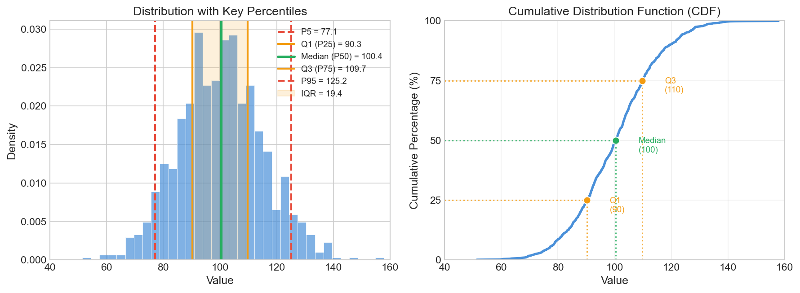 Figure: Left: Histogram showing key percentile positions (P1, P5, Q1, Median, Q3, P95, P99). Right: CDF interpretation — to find a percentile, draw horizontal line from y-axis to curve, then drop to x-axis.
ML Applications of Percentiles:
| Application | Percentiles Used |
|---|---|
| Outlier detection | Below P1 or above P99 (or P5/P95 for stricter) |
| Winsorization | Cap values at P1/P99 to reduce outlier impact |
| Latency metrics | P50 (median), P95, P99 response times |
| Quantile regression | Predict specific quantiles instead of mean |
| Data quality | Check if distributions match expected percentiles |
Latency Percentiles in ML Systems:
When monitoring ML model serving, percentiles are more informative than averages:
Average latency: 50ms ← Looks good, but...
P50: 45ms (median user experience)
P90: 80ms (10% of users wait this long)
P95: 150ms (5% of users wait this long)
P99: 500ms (1% have terrible experience!)
The average hides the long tail!Why P99 matters: In large-scale systems serving millions of requests, even 1% experiencing P99 latency means thousands of slow responses per minute.
Confidence Intervals
A confidence interval provides a range of plausible values for a parameter, not just a point estimate.
Formula for Mean (known variance or large n):
\[\text{CI} = \bar{x} \pm z^* \cdot \frac{\sigma}{\sqrt{n}}\]
where:
- \(\bar{x}\) = sample mean
- \(z^*\) = critical value from standard normal (1.96 for 95% CI)
- \(\sigma\) = population standard deviation
- \(n\) = sample size
Common Critical Values:
| Confidence Level | \(z^*\) |
|---|---|
| 90% | 1.645 |
| 95% | 1.96 |
| 99% | 2.576 |
Example: You test a model on 100 samples and get accuracy = 0.85.
Assuming \(\sigma \approx 0.35\) (from \(\sqrt{p(1-p)}\) for binary outcomes):
\[\text{95% CI} = 0.85 \pm 1.96 \cdot \frac{0.35}{\sqrt{100}} = 0.85 \pm 0.069 = [0.781, 0.919]\]
What “95% Confident” Actually Means:
⚠️ Common Misconception: “There’s a 95% probability the true parameter is in this interval”
Correct Interpretation: If we repeated this experiment many times, 95% of the intervals we construct would contain the true parameter.
The interval is fixed once computed. The true parameter either is or isn’t in it — we just don’t know which. The “95%” refers to the procedure, not this specific interval.
What Affects CI Width?:
| Factor | Effect on Width |
|---|---|
| Larger n (more data) | Narrower (more precise) — width \(\propto 1/\sqrt{n}\) |
| Larger \(\sigma\) (more variance) | Wider (less precise) |
| Higher confidence level | Wider (more conservative) |
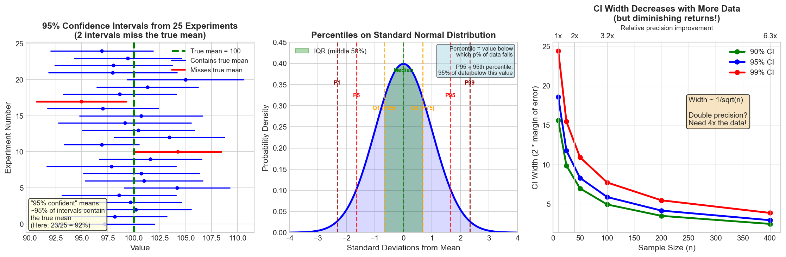 Figure: (Left) Repeated CI simulation — about 95% of intervals contain the true mean (blue), while ~5% miss (red). This illustrates what “95% confident” means. (Middle) Percentiles on a normal distribution, showing quartiles and extreme percentiles. (Right) CI width decreases with sample size but with diminishing returns — need 4× data to halve the width.
Interview Q: “What does a 95% confidence interval mean?”
A: A 95% CI means that if we repeated the experiment many times and constructed an interval each time using the same procedure, 95% of those intervals would contain the true parameter. It does NOT mean there’s a 95% probability the true value is in this specific interval — the true value is fixed, and our interval either contains it or doesn’t. The confidence level refers to the reliability of the procedure, not a probability statement about this particular interval.
Z-Test vs T-Test
Both test hypotheses about means, but differ in when to use them:
| Aspect | Z-Test | T-Test |
|---|---|---|
| Variance | Known \(\sigma\) | Unknown (estimated by \(s\)) |
| Sample size | Large (\(n > 30\)) or known \(\sigma\) | Any size (especially small) |
| Distribution | Standard Normal \(\mathcal{N}(0,1)\) | Student’s t with df degrees of freedom |
| Formula | \(z = \frac{\bar{x} - \mu_0}{\sigma/\sqrt{n}}\) | \(t = \frac{\bar{x} - \mu_0}{s/\sqrt{n}}\) |
Why T-Test for Small Samples?
When we estimate variance from data using \(s = \sqrt{\frac{1}{n-1}\sum(x_i - \bar{x})^2}\), this estimate has uncertainty. The t-distribution accounts for this extra uncertainty — it has heavier tails than the normal, especially for small \(n\).
Degrees of Freedom (df):
- One-sample t-test: \(\text{df} = n - 1\)
- Two-sample t-test (equal var): \(\text{df} = n_1 + n_2 - 2\)
- Paired t-test: \(\text{df} = n - 1\) (number of pairs minus 1)
As df → ∞, the t-distribution → standard normal.
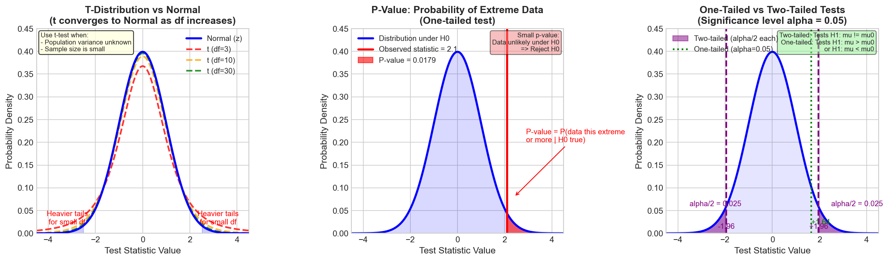 Figure: (Left) The t-distribution has heavier tails than the normal, especially for small degrees of freedom — this accounts for extra uncertainty when estimating variance from data. (Middle) P-value is the probability of observing data this extreme or more under H₀. (Right) Two-tailed tests split α between both tails; one-tailed tests put all α in one direction.
Types of T-Tests:
| Type | Use Case | Hypotheses |
|---|---|---|
| One-sample | Compare sample mean to known value | \(H_0: \mu = \mu_0\) |
| Two-sample (independent) | Compare means of two groups | \(H_0: \mu_1 = \mu_2\) |
| Paired | Compare means of paired observations | \(H_0: \mu_{\text{diff}} = 0\) |
Example: Comparing two models
You have accuracy scores from 20 cross-validation folds for each model:
- Model A: \(\bar{x}_A = 0.87\), \(s_A = 0.03\)
- Model B: \(\bar{x}_B = 0.84\), \(s_B = 0.04\)
Use a paired t-test (same folds, so paired):
\[t = \frac{\bar{d}}{s_d / \sqrt{n}}\]
where \(d_i = x_{A,i} - x_{B,i}\) is the difference for each fold.
Interview Q: “When would you use a t-test instead of a z-test?”
A: Use a t-test when the population variance is unknown and must be estimated from the sample, which is almost always the case in practice. The t-distribution has heavier tails than the normal, accounting for the uncertainty in our variance estimate. This matters most for small samples (n < 30); for large samples, t and z are nearly identical. In ML, when comparing model performance across cross-validation folds, we use a paired t-test because: (1) we don’t know the true variance of accuracy scores, and (2) the same folds create paired observations.
P-Values: What They Mean (and Don’t Mean)
Correct Definition:
\[\text{p-value} = P(\text{data this extreme or more} \mid H_0 \text{ is true})\]
What the P-Value IS:
- The probability of observing results as extreme as ours IF there’s truly no effect
- A measure of evidence against \(H_0\) (smaller = stronger evidence)
- A way to quantify “how surprised we’d be” under \(H_0\)
What the P-Value is NOT:
| ❌ Common Misconception | ✓ Reality |
|---|---|
| “P(H₀ is true)” | We can’t compute this without a prior! (Bayesian territory) |
| “Probability the result is due to chance” | Subtly wrong framing |
| “Effect size or practical importance” | p = 0.001 doesn’t mean the effect is large |
| “Probability of replication” | A different question entirely |
Effect Size vs Statistical Significance:
| Term | Meaning |
|---|---|
| Statistical significance | p-value < α (evidence that an effect exists) |
| Practical significance | The effect is large enough to matter |
You can have:
- Significant but not practical: Large n detects tiny, meaningless differences
- Practical but not significant: Real, meaningful effect but small sample misses it
Example: Model A has 85.1% accuracy, Model B has 85.0%. With n = 100,000 test samples, this 0.1% difference might be statistically significant (p < 0.05) but practically irrelevant.
Multiple Testing Problem
The Problem: If you test 20 hypotheses at \(\alpha = 0.05\), you expect ~1 false positive even if all nulls are true!
\[P(\text{at least one false positive}) = 1 - (1-\alpha)^m \approx 1 - e^{-m\alpha}\]
For \(m = 20\) tests at \(\alpha = 0.05\): \(P \approx 1 - 0.95^{20} \approx 0.64\) (64% chance of false positive!)
Solutions:
| Method | Correction | Use When |
|---|---|---|
| Bonferroni | Use \(\alpha' = \alpha/m\) for each test | Conservative, few tests |
| Holm-Bonferroni | Sequential correction | Less conservative |
| False Discovery Rate (FDR) | Control expected proportion of false discoveries | Many tests (genomics, etc.) |
Interview Q: “What is the multiple testing problem?”
A: When you perform many hypothesis tests simultaneously, the probability of at least one false positive increases dramatically, even if all null hypotheses are true. With 20 tests at α = 0.05, there’s about a 64% chance of at least one false positive. This matters in ML when: (1) comparing many hyperparameter configurations, (2) testing model performance across many metrics, (3) feature selection testing many features. Solutions include Bonferroni correction (divide α by number of tests), or controlling the False Discovery Rate (FDR) which is less conservative and more commonly used in high-dimensional settings.
Statistical Testing in ML: Practical Applications
1. A/B Testing for Model Comparison
When deploying a new model vs. baseline:
import numpy as np
from scipy import stats
# Conversion rates from A/B test
# Control: 1000 users, 50 conversions
# Treatment: 1000 users, 65 conversions
n_control, conv_control = 1000, 50
n_treat, conv_treat = 1000, 65
# Two-proportion z-test
p_control = conv_control / n_control # 0.05
p_treat = conv_treat / n_treat # 0.065
p_pooled = (conv_control + conv_treat) / (n_control + n_treat)
se = np.sqrt(p_pooled * (1 - p_pooled) * (1/n_control + 1/n_treat))
z_stat = (p_treat - p_control) / se
p_value = 1 - stats.norm.cdf(z_stat) # One-tailed test
print(f"z = {z_stat:.3f}, p = {p_value:.4f}")
# z = 1.44, p = 0.075 → Not significant at α = 0.052. Paired T-Test for Cross-Validation
from scipy import stats
# Accuracy scores across 10 CV folds
model_a = [0.85, 0.87, 0.84, 0.86, 0.88, 0.85, 0.87, 0.86, 0.84, 0.85]
model_b = [0.82, 0.84, 0.83, 0.84, 0.85, 0.83, 0.84, 0.83, 0.82, 0.83]
# Paired t-test (same folds → paired observations)
t_stat, p_value = stats.ttest_rel(model_a, model_b)
print(f"t = {t_stat:.3f}, p = {p_value:.4f}")
# t = 5.47, p = 0.0004 → Significant!3. Bootstrap Confidence Intervals
For metrics without closed-form CIs:
import numpy as np
def bootstrap_ci(data, metric_fn, n_bootstrap=1000, ci=0.95):
"""Bootstrap confidence interval for any metric."""
bootstrap_samples = []
n = len(data)
for _ in range(n_bootstrap):
# Resample with replacement
indices = np.random.choice(n, size=n, replace=True)
sample = data[indices]
bootstrap_samples.append(metric_fn(sample))
# Percentile method
alpha = 1 - ci
lower = np.percentile(bootstrap_samples, 100 * alpha / 2)
upper = np.percentile(bootstrap_samples, 100 * (1 - alpha / 2))
return lower, upper
# Example: CI for median accuracy
accuracies = np.array([0.85, 0.87, 0.84, 0.86, 0.88, 0.85, 0.87])
ci_lower, ci_upper = bootstrap_ci(accuracies, np.median)
print(f"95% CI for median: [{ci_lower:.3f}, {ci_upper:.3f}]")Interview Q: “How would you determine if a new model is significantly better than the baseline?”
A: I’d use a paired t-test on cross-validation scores. First, train both models on the same CV folds to get paired accuracy scores. Then compute the t-statistic from the differences. This accounts for fold-to-fold variation and tests if the mean improvement is significantly different from zero. For large-scale A/B testing in production, I’d use a two-proportion z-test on conversion rates or relevant metrics, ensuring adequate sample size for power. I’d also consider effect size — statistical significance doesn’t guarantee practical significance. Finally, for multiple comparisons (testing many models), I’d apply Bonferroni or FDR correction.
Latent Variables
Definition: A latent variable is a variable that is not directly observed but is inferred from other observed variables.
Observed data X ←──── Latent variable Z ────→ Unobserved cause
↑ ↑
(we see this) (we infer this)Examples in ML:
| Model | Latent Variable | What It Represents |
|---|---|---|
| VAE | \(z\) | Compressed representation |
| GMM | Cluster assignment | Which Gaussian generated the point |
| LDA | Topic | Topic mixture for documents |
| HMM | Hidden state | Underlying state sequence |
| Word2Vec | Embedding | Semantic meaning |
Variational Autoencoders (VAE):
Input x → [Encoder] → μ, σ → Sample z ~ N(μ, σ²) → [Decoder] → Reconstructed x
↑
Latent variable!The latent variable \(z\) captures the “essence” of the input in a compressed form.
Why Latent Variables Matter:
- Dimensionality reduction: High-dim data → low-dim latent space
- Generation: Sample \(z\), decode to generate new data
- Disentanglement: Different \(z\) dimensions might control different factors
- Missing data: Treat missing values as latent variables to infer
Mathematical Framework:
For observed \(x\) and latent \(z\):
\[p(x) = \int p(x|z) p(z) dz\]
This integral is often intractable, leading to:
- EM algorithm: Iterate between inferring \(z\) and updating parameters
- Variational inference: Approximate \(p(z|x)\) with simpler \(q(z)\)
Interview Q: “What is a latent variable? Give an example.”
A: A latent variable is an unobserved variable that we infer from observed data. In a VAE, the latent variable \(z\) is a low-dimensional representation learned by the encoder — we never observe \(z\) directly, but we infer it from the input image \(x\). In a Gaussian Mixture Model, the latent variable is the cluster assignment — we don’t observe which Gaussian generated each point, but we infer it. Latent variables enable dimensionality reduction, generation, and modeling hidden structure in data.
3.3 Calculus for Machine Learning
Partial Derivatives and Gradients
For \(f: \mathbb{R}^n \to \mathbb{R}\):
\[\nabla f(\mathbf{x}) = \begin{bmatrix} \frac{\partial f}{\partial x_1} \\ \frac{\partial f}{\partial x_2} \\ \vdots \\ \frac{\partial f}{\partial x_n} \end{bmatrix}\]
The gradient points in the direction of steepest increase.
Chain Rule for Neural Networks
For composed functions \(f(g(x))\):
\[\frac{df}{dx} = \frac{df}{dg} \cdot \frac{dg}{dx}\]
Multivariate chain rule: \[\frac{\partial L}{\partial x_i} = \sum_j \frac{\partial L}{\partial y_j} \frac{\partial y_j}{\partial x_i}\]
This is the foundation of backpropagation.
Backpropagation Worked Example: 2-Layer Network
Let’s trace gradients through a simple 2-layer network to see the chain rule in action.
Network:
Input x → [Linear: W₁] → z₁ → [ReLU] → h → [Linear: W₂] → z₂ → [Sigmoid] → ŷ → [Loss] → LForward Pass (with concrete values):
| Step | Operation | Value |
|---|---|---|
| Input | \(x = 2\) | 2 |
| Linear 1 | \(z_1 = w_1 \cdot x = 0.5 \times 2\) | 1.0 |
| ReLU | \(h = \max(0, z_1)\) | 1.0 |
| Linear 2 | \(z_2 = w_2 \cdot h = 2.0 \times 1.0\) | 2.0 |
| Sigmoid | \(\hat{y} = \sigma(z_2) = \frac{1}{1+e^{-2}}\) | 0.88 |
| Loss (BCE) | \(L = -[y\log\hat{y} + (1-y)\log(1-\hat{y})]\), \(y=1\) | 0.13 |
Backward Pass (computing gradients):
Step 1: \(\frac{\partial L}{\partial \hat{y}}\)
For BCE loss with \(y=1\): \[L = -\log(\hat{y}) \implies \frac{\partial L}{\partial \hat{y}} = -\frac{1}{\hat{y}} = -\frac{1}{0.88} = -1.14\]
Step 2: \(\frac{\partial L}{\partial z_2}\) (through sigmoid)
Using \(\sigma'(z) = \sigma(z)(1-\sigma(z)) = 0.88 \times 0.12 = 0.106\):
\[\frac{\partial L}{\partial z_2} = \frac{\partial L}{\partial \hat{y}} \cdot \frac{\partial \hat{y}}{\partial z_2} = -1.14 \times 0.106 = -0.12\]
(Or use the shortcut: for sigmoid + BCE, \(\frac{\partial L}{\partial z_2} = \hat{y} - y = 0.88 - 1 = -0.12\)) ✓
Step 3: \(\frac{\partial L}{\partial w_2}\) (gradient for weight \(w_2\))
\[\frac{\partial L}{\partial w_2} = \frac{\partial L}{\partial z_2} \cdot \frac{\partial z_2}{\partial w_2} = -0.12 \times h = -0.12 \times 1.0 = -0.12\]
Step 4: \(\frac{\partial L}{\partial h}\) (backprop to hidden layer)
\[\frac{\partial L}{\partial h} = \frac{\partial L}{\partial z_2} \cdot \frac{\partial z_2}{\partial h} = -0.12 \times w_2 = -0.12 \times 2.0 = -0.24\]
Step 5: \(\frac{\partial L}{\partial z_1}\) (through ReLU)
Since \(z_1 = 1.0 > 0\), ReLU derivative is 1: \[\frac{\partial L}{\partial z_1} = \frac{\partial L}{\partial h} \cdot \frac{\partial h}{\partial z_1} = -0.24 \times 1 = -0.24\]
Step 6: \(\frac{\partial L}{\partial w_1}\) (gradient for weight \(w_1\))
\[\frac{\partial L}{\partial w_1} = \frac{\partial L}{\partial z_1} \cdot \frac{\partial z_1}{\partial w_1} = -0.24 \times x = -0.24 \times 2 = -0.48\]
Summary of Gradients:
| Weight | Gradient | Interpretation |
|---|---|---|
| \(w_2\) | -0.12 | Increase \(w_2\) to reduce loss |
| \(w_1\) | -0.48 | Increase \(w_1\) to reduce loss |
Update Rule (with \(\alpha = 0.1\)): \[w_1^{\text{new}} = w_1 - \alpha \cdot \frac{\partial L}{\partial w_1} = 0.5 - 0.1 \times (-0.48) = 0.548\] \[w_2^{\text{new}} = w_2 - \alpha \cdot \frac{\partial L}{\partial w_2} = 2.0 - 0.1 \times (-0.12) = 2.012\]
Interview Q: “Walk through backpropagation in a simple neural network.”
A: Backprop applies the chain rule backwards through the network. For a 2-layer net: (1) Compute forward pass to get predictions. (2) Compute loss derivative \(\frac{\partial L}{\partial \hat{y}}\). (3) Chain through output activation: \(\frac{\partial L}{\partial z_2} = \frac{\partial L}{\partial \hat{y}} \cdot \sigma'(z_2)\). (4) Compute weight gradient: \(\frac{\partial L}{\partial w_2} = \frac{\partial L}{\partial z_2} \cdot h\). (5) Backprop to hidden layer: \(\frac{\partial L}{\partial h} = \frac{\partial L}{\partial z_2} \cdot w_2\). (6) Chain through hidden activation: \(\frac{\partial L}{\partial z_1} = \frac{\partial L}{\partial h} \cdot \text{ReLU}'(z_1)\). (7) Compute first layer gradient: \(\frac{\partial L}{\partial w_1} = \frac{\partial L}{\partial z_1} \cdot x\). The key insight is that gradients flow backward, with each layer multiplying by its local derivative.
Computational Graph View
Another way to understand backprop is through computational graphs:
Forward: x=2 ──→ [×w₁] ──→ z₁=1 ──→ [ReLU] ──→ h=1 ──→ [×w₂] ──→ z₂=2 ──→ [σ] ──→ ŷ=0.88 ──→ [L] ──→ 0.13
w₁=0.5 w₂=2.0
Backward: ←─0.48─┘ ←─0.24─┘ ←─0.24─┘ ←─0.12─┘ ←─0.12─┘ ←─1.14─┘
∂L/∂w₁ ∂L/∂z₁ ∂L/∂h ∂L/∂w₂ ∂L/∂z₂ ∂L/∂ŷEach node receives the gradient from downstream and: 1. Computes local derivative 2. Multiplies to get gradient for this node 3. Passes gradient upstream
Jacobian Matrix
For \(\mathbf{f}: \mathbb{R}^n \to \mathbb{R}^m\):
\[\mathbf{J} = \begin{bmatrix} \frac{\partial f_1}{\partial x_1} & \cdots & \frac{\partial f_1}{\partial x_n} \\ \vdots & \ddots & \vdots \\ \frac{\partial f_m}{\partial x_1} & \cdots & \frac{\partial f_m}{\partial x_n} \end{bmatrix}\]
Example: Softmax Jacobian
For \(y_i = \frac{e^{x_i}}{\sum_j e^{x_j}}\):
\[\frac{\partial y_i}{\partial x_j} = \begin{cases} y_i(1 - y_i) & \text{if } i = j \\ -y_i y_j & \text{if } i \neq j \end{cases}\]
Hessian Matrix
Second-order partial derivatives:
\[\mathbf{H} = \begin{bmatrix} \frac{\partial^2 f}{\partial x_1^2} & \cdots & \frac{\partial^2 f}{\partial x_1 \partial x_n} \\ \vdots & \ddots & \vdots \\ \frac{\partial^2 f}{\partial x_n \partial x_1} & \cdots & \frac{\partial^2 f}{\partial x_n^2} \end{bmatrix}\]
Properties:
- Symmetric if \(f\) is twice continuously differentiable
- Eigenvalues indicate curvature
- Used in second-order optimization (Newton’s method)
Hessian Eigenvalues and Critical Point Stability (Interview Deep Dive)
At a critical point (where \(\nabla f = 0\)), the Hessian’s eigenvalues tell us what type of critical point we’re at:
| All Eigenvalues | Critical Point Type | Geometric Intuition |
|---|---|---|
| All positive | Local minimum | Bottom of a bowl — curves up everywhere |
| All negative | Local maximum | Top of a hill — curves down everywhere |
| Mixed signs | Saddle point | Horse saddle — up in some directions, down in others |
| Some zero | Degenerate | Flat in some directions — inconclusive |
Why This Matters for Deep Learning:
Saddle points dominate in high dimensions: For a point to be a local minimum, ALL eigenvalues must be positive. With millions of parameters, this is statistically unlikely. Most critical points in neural network loss landscapes are saddle points, not local minima.
Gradient descent escapes saddles: SGD naturally finds directions with negative curvature (eigenvalues < 0) and slides down. The problem is near-zero eigenvalues — flat regions where gradients are tiny and training stalls.
Condition number affects optimization: The ratio of largest to smallest eigenvalue (\(\kappa = \lambda_{\max}/\lambda_{\min}\)) is the condition number. Large \(\kappa\) means the loss landscape is “elongated” — steep in some directions, flat in others — causing slow convergence.
The Mathematical Story:
At a critical point, Taylor expansion gives: \[f(\mathbf{x} + \mathbf{h}) \approx f(\mathbf{x}) + \frac{1}{2}\mathbf{h}^T \mathbf{H} \mathbf{h}\]
The quadratic form \(\mathbf{h}^T \mathbf{H} \mathbf{h}\) determines local behavior: - If \(\mathbf{H}\) is positive definite (all \(\lambda_i > 0\)): \(\mathbf{h}^T \mathbf{H} \mathbf{h} > 0\) for all \(\mathbf{h}\) → local minimum - If \(\mathbf{H}\) has mixed signs: some directions increase \(f\), others decrease → saddle
Interview Q: “What’s the relationship between the Hessian’s eigenvalues and critical point stability?”
A: The Hessian matrix captures the
curvature of the loss landscape. At a critical point where
the gradient is zero, the eigenvalues determine the type of
critical point: - All positive eigenvalues
→ local minimum (positive definite, curves up in all
directions) - All negative eigenvalues →
local maximum (negative definite)
- Mixed signs → saddle point (indefinite,
curves up in some directions, down in others)
For deep learning, this is crucial because in high dimensions, saddle points vastly outnumber local minima. SGD escapes saddles by finding negative curvature directions. The real challenge is near-zero eigenvalues (flat regions) where progress stalls. This is partly why Adam works better than vanilla SGD — it adapts learning rates based on gradient history, effectively approximating curvature information.
Follow-up Q: “Why are saddle points more common than local minima in high dimensions?”
A: For a critical point to be a local minimum, ALL eigenvalues of the Hessian must be positive. In a network with \(n\) parameters, think of each eigenvalue as having roughly 50% chance of being positive (oversimplified). The probability of ALL \(n\) being positive is approximately \((0.5)^n\), which becomes vanishingly small for large \(n\). With millions of parameters, the probability of finding a true local minimum is essentially zero. Instead, we encounter saddle points where some eigenvalues are positive and others negative.
Important Derivatives for ML
Sigmoid: \[\sigma(x) = \frac{1}{1+e^{-x}}\]
\[\sigma'(x) = \sigma(x)(1 - \sigma(x))\]
Tanh: \[\tanh'(x) = 1 - \tanh^2(x)\]
ReLU: \[\text{ReLU}'(x) = \begin{cases} 1 & x > 0 \\ 0 & x \leq 0 \end{cases}\]
Softmax Cross-Entropy (combined): \[L = -\sum_i y_i \log(\hat{y}_i)\]
\[\frac{\partial L}{\partial z_i} = \hat{y}_i - y_i\]
This elegant result makes training efficient!
Interview Q: “Derive the gradient of softmax cross-entropy loss.”
Answer: Let \(\hat{y}_i = \frac{e^{z_i}}{\sum_j e^{z_j}}\) (softmax) and \(L = -\sum_k y_k \log \hat{y}_k\) (cross-entropy).
\[\frac{\partial L}{\partial z_i} = -\sum_k y_k \frac{\partial \log \hat{y}_k}{\partial z_i} = -\sum_k y_k \frac{1}{\hat{y}_k} \frac{\partial \hat{y}_k}{\partial z_i}\]
Using the softmax Jacobian: \[\frac{\partial L}{\partial z_i} = -y_i(1 - \hat{y}_i) + \sum_{k \neq i} y_k \hat{y}_i = -y_i + \hat{y}_i \sum_k y_k = \hat{y}_i - y_i\]
(since \(\sum_k y_k = 1\) for one-hot labels)
3.4 Information Theory
Why Information Theory Matters for ML
Information theory provides the mathematical foundation for:
- Cross-entropy loss (why we use it!)
- KL divergence in VAEs, RLHF, DPO
- Mutual information in representation learning
- Understanding model compression
Entropy: Measuring Uncertainty
Definition: Average “surprise” or uncertainty in a random variable.
\[H(X) = -\sum_{x} p(x) \log p(x) = \mathbb{E}[-\log p(X)]\]
Intuition:
- Low entropy = predictable (certain)
- High entropy = unpredictable (uncertain)
Properties:
- \(H(X) \geq 0\) (always non-negative)
- \(H(X) = 0\) iff \(X\) is deterministic
- Maximum when uniform: \(H(X) = \log |X|\)
Example: Coin Flips
| Coin | \(p(\text{heads})\) | Entropy \(H\) |
|---|---|---|
| Fair | 0.5 | 1 bit (maximum!) |
| Biased | 0.9 | 0.47 bits |
| Two-headed | 1.0 | 0 bits (certain) |
import numpy as np
def entropy(p):
"""Entropy of Bernoulli distribution"""
if p == 0 or p == 1:
return 0
return -p * np.log2(p) - (1-p) * np.log2(1-p)
# Fair coin has maximum entropy
print(f"Fair coin: {entropy(0.5):.2f} bits") # 1.00
print(f"Biased (0.9): {entropy(0.9):.2f} bits") # 0.47Cross-Entropy: Comparing Distributions
Definition: Expected “surprise” when using distribution \(Q\) to encode samples from \(P\).
\[H(P, Q) = -\sum_{x} p(x) \log q(x) = \mathbb{E}_{x \sim P}[-\log Q(x)]\]
Key insight: Cross-entropy is minimized when \(Q = P\).
Why Cross-Entropy is Our Loss Function
For classification with true distribution \(P\) (one-hot) and predicted \(Q\) (softmax output):
\[H(P, Q) = -\sum_{k} y_k \log \hat{y}_k = -\log \hat{y}_c\]
This is exactly our categorical cross-entropy loss!
Why it works:
- Minimizing \(H(P, Q)\) pushes \(Q\) toward \(P\)
- Equivalent to maximum likelihood estimation
- Penalizes confident wrong predictions heavily
KL Divergence: Distance Between Distributions
Definition: “Extra bits” needed when using \(Q\) instead of \(P\).
\[D_{KL}(P \| Q) = \sum_{x} p(x) \log \frac{p(x)}{q(x)} = \mathbb{E}_{x \sim P}\left[\log \frac{P(x)}{Q(x)}\right]\]
The Fundamental Relationship: \[\boxed{H(P, Q) = H(P) + D_{KL}(P \| Q)}\]
Cross-entropy = Entropy + KL Divergence
Properties:
- \(D_{KL}(P \| Q) \geq 0\) (Gibbs’ inequality)
- \(D_{KL}(P \| Q) = 0\) iff \(P = Q\)
- NOT symmetric: \(D_{KL}(P \| Q) \neq D_{KL}(Q \| P)\)
Forward vs Reverse KL
| Forward KL: \(D_{KL}(P \| Q)\) | Reverse KL: \(D_{KL}(Q \| P)\) | |
|---|---|---|
| Optimizes | \(Q\) to cover all of \(P\) | \(Q\) to match mode of \(P\) |
| Behavior | Mean-seeking | Mode-seeking |
| Zero-forcing | When \(p(x) > 0\), need \(q(x) > 0\) | When \(q(x) > 0\), need \(p(x) > 0\) |
| Used in | VAE decoder | Variational inference |
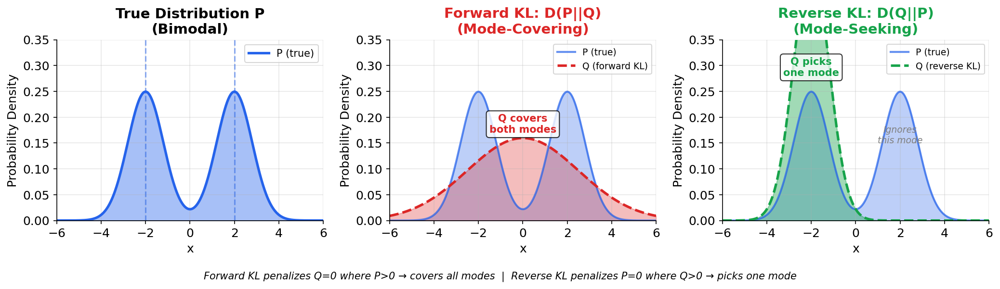 Figure: Forward KL (D(P||Q)) forces Q to cover all modes of P. Reverse KL (D(Q||P)) allows Q to pick a single mode.
KL in RLHF and DPO
RLHF objective: \[\max_\pi \mathbb{E}[R(x, y)] - \beta \cdot D_{KL}(\pi_\theta \| \pi_{\text{ref}})\]
Understanding the notation:
| Symbol | Meaning |
|---|---|
| \(\pi\) | A policy — a probability distribution over outputs \(y\) given input \(x\) |
| \(\pi_\theta\) | The policy we’re training (parameterized by neural network weights \(\theta\)) |
| \(\pi_{\text{ref}}\) | The reference policy — typically the SFT (supervised fine-tuned) model we start from |
| \(R(x, y)\) | Reward function — how good is response \(y\) for prompt \(x\) (from reward model) |
| \(\beta\) | KL penalty coefficient — controls the trade-off between maximizing reward and staying close to reference |
| \(D_{KL}(\pi_\theta \| \pi_{\text{ref}})\) | How much our trained policy has diverged from the reference |
What this objective says in plain English:
“Find a policy \(\pi_\theta\) that generates high-reward responses, BUT don’t drift too far from the original SFT model.”
Why KL penalty?
- Prevents reward hacking: Without the KL term, the model could find “cheats” — outputs that fool the reward model but are nonsensical. The KL term says “stay close to sensible outputs.”
- Maintains fluency: The SFT model already produces fluent, coherent text. Drifting too far might hurt language quality.
- Regularization: Prevents overfitting to the reward model’s quirks.
- \(\beta\) controls the trade-off: High \(\beta\) → stay very close to reference. Low \(\beta\) → optimize reward more aggressively.
DPO implicit reward: \[R(x, y) = \beta \log \frac{\pi^*(y|x)}{\pi_{\text{ref}}(y|x)} + \text{const}\]
Understanding DPO notation:
| Symbol | Meaning |
|---|---|
| \(\pi^*\) | The optimal policy — what we’re trying to learn |
| \(\pi_{\text{ref}}\) | Reference policy (same as in RLHF — the SFT starting point) |
| \(\beta\) | Temperature parameter controlling how peaked the optimal policy is |
DPO insight: DPO shows that the optimal RLHF policy has a closed-form relationship with the reward. Instead of training a separate reward model and doing RL, DPO directly optimizes the policy using preference data. The log ratio \(\log \frac{\pi^*(y|x)}{\pi_{\text{ref}}(y|x)}\) measures how much more likely the optimal policy makes a response compared to the reference — this IS the implicit reward (up to scaling).
Mutual Information
Definition: Information shared between two variables.
\[I(X; Y) = H(X) - H(X|Y) = H(Y) - H(Y|X)\]
\[I(X; Y) = D_{KL}(P(X, Y) \| P(X)P(Y))\]
Understanding the formula:
- \(H(X)\) = total uncertainty about \(X\) before knowing anything
- \(H(X|Y)\) = remaining uncertainty about \(X\) after knowing \(Y\)
- \(I(X; Y) = H(X) - H(X|Y)\) = how much uncertainty reduces when you learn \(Y\)
Intuition (Plain English):
Mutual information measures how much knowing one variable tells you about another.
- If \(X\) and \(Y\) are independent: knowing \(Y\) tells you nothing about \(X\), so \(I(X;Y) = 0\)
- If \(X\) completely determines \(Y\): knowing \(Y\) tells you everything about \(X\), so \(I(X;Y) = H(X)\) (maximum)
Example: Weather and Umbrella
Let \(X\) = “Is it raining?” and \(Y\) = “Is someone carrying an umbrella?”
- Without seeing umbrellas: \(H(X)\) = some uncertainty about rain
- After seeing many umbrellas: \(H(X|Y)\) = much less uncertainty (probably raining!)
- \(I(X;Y)\) = the reduction in uncertainty = high (they’re correlated)
If instead \(Y\) = “What’s the stock price?”, then \(I(X;Y) \approx 0\) — stock prices tell you nothing about rain.
Alternative formula intuition:
\[I(X; Y) = D_{KL}(P(X, Y) \| P(X)P(Y))\]
This measures how different the joint distribution \(P(X,Y)\) is from what it would be if \(X\) and \(Y\) were independent \(P(X)P(Y)\). High divergence = strong dependence = high mutual information.
Properties:
- \(I(X; Y) \geq 0\) (always non-negative)
- \(I(X; Y) = 0\) iff \(X \perp Y\) (independent)
- \(I(X; Y) = I(Y; X)\) (symmetric — unlike KL divergence!)
- \(I(X; X) = H(X)\) (information with yourself = your entropy)
ML Applications:
| Application | How MI is Used |
|---|---|
| InfoNCE loss (contrastive learning) | Maximize MI between different views of same data (positive pairs) |
| Information bottleneck | Learn representation \(Z\) that has high \(I(Z; Y)\) (predictive) but low \(I(Z; X)\) (compressed) |
| Feature selection | Select features with high \(I(\text{feature}; \text{target})\) |
| GANs | Some variants maximize MI between generated images and latent codes |
| Representation learning | Maximize MI between representations of related samples |
Interview Q: “What is mutual information and when would you use it?”
A: Mutual information \(I(X;Y)\) measures how much knowing \(Y\) reduces uncertainty about \(X\). It equals \(H(X) - H(X|Y)\): your initial uncertainty minus remaining uncertainty after observing \(Y\). It’s symmetric and zero iff variables are independent. In ML, it’s used in contrastive learning (InfoNCE maximizes MI between augmented views), the information bottleneck (trade off compression vs prediction), and feature selection (pick features most informative about the target).
Perplexity: The Language Model’s Confusion Metric
🔑 Perplexity is arguably the most important metric for evaluating language models. It measures how “surprised” or “confused” a model is when predicting text.
Definition: Perplexity is the exponential of the average negative log-likelihood (cross-entropy):
\[\text{PPL} = \exp\left(-\frac{1}{N}\sum_{i=1}^{N} \log P(x_i | x_{<i})\right) = \exp(\mathcal{L}_{\text{NLL}})\]
Equivalently, for cross-entropy \(H\):
\[\text{PPL} = 2^{H} \quad \text{(if using log base 2)}\] \[\text{PPL} = e^{H} \quad \text{(if using natural log)}\]
The NLL ↔︎ Perplexity Connection
| Quantity | Formula | Interpretation |
|---|---|---|
| Likelihood | \(\prod_i P(x_i \mid x_{<i})\) | Probability of seeing the data |
| Log-likelihood | \(\sum_i \log P(x_i \mid x_{<i})\) | Sum of log-probabilities |
| Negative log-likelihood (NLL) | \(-\frac{1}{N}\sum_i \log P(x_i \mid x_{<i})\) | Average cross-entropy loss |
| Perplexity | \(\exp(\text{NLL})\) | Effective vocabulary size |
The key relationship: \[\boxed{\text{PPL} = \exp(\text{Average NLL per token}) = \exp(\text{Cross-entropy})}\]
Intuition: Perplexity as “Effective Vocabulary Size”
The best intuition: Perplexity measures the effective number of choices the model is considering at each step.
| Perplexity | Model Behavior |
|---|---|
| PPL = 1 | Perfect prediction — model knows exactly what comes next |
| PPL = 10 | Model is as confused as choosing uniformly among 10 words |
| PPL = 100 | Model is choosing among ~100 equally likely words |
| PPL = 50,000 | Random guessing over entire vocabulary |
Example: If a model has perplexity 25 on a test set, it means the model is, on average, as uncertain as if it were choosing uniformly among 25 equally likely words at each position.
Why exponential? The NLL is in log-space (bits or nats). Exponentiating converts back to a probability-like quantity. If the model assigns probability \(p\) to each token on average, then: - NLL = \(-\log p\) - PPL = \(\exp(-\log p) = 1/p\)
So PPL = 10 means the model assigns ~10% probability to the correct token on average.
Worked Example: Computing Perplexity
Sentence: “The cat sat”
Model predictions:
| Position | True Token | P(token) | -log P(token) |
|---|---|---|---|
| 1 | “The” | 0.10 | 2.30 |
| 2 | “cat” | 0.05 | 3.00 |
| 3 | “sat” | 0.20 | 1.61 |
Average NLL: \(\frac{2.30 + 3.00 + 1.61}{3} = 2.30\)
Perplexity: \(\exp(2.30) \approx 10\)
Interpretation: The model is as confused as if choosing among ~10 equally likely options per token.
import torch
import torch.nn.functional as F
def compute_perplexity(model, tokenizer, text):
"""Compute perplexity of a text sequence."""
tokens = tokenizer.encode(text, return_tensors='pt')
with torch.no_grad():
outputs = model(tokens, labels=tokens)
loss = outputs.loss # Cross-entropy loss (NLL per token)
perplexity = torch.exp(loss)
return perplexity.item()
# Example output: perplexity = 15.3
# Interpretation: Model is ~15-way confused on averageWhy Perplexity Over Raw Accuracy?
| Metric | Problem |
|---|---|
| Accuracy | Binary (right/wrong) — ignores confidence |
| Raw NLL | Unbounded, hard to interpret |
| Perplexity | Intuitive scale (effective vocabulary size) |
Example: Two models predicting “cat”:
- Model A: P(“cat”) = 0.51, P(“dog”) = 0.49 → correct but barely
- Model B: P(“cat”) = 0.95, P(“dog”) = 0.05 → correct and confident
Both have 100% accuracy, but Model B has much lower perplexity (better).
Typical Perplexity Values
| Model | Dataset | Perplexity | Notes |
|---|---|---|---|
| Random (50k vocab) | Any | ~50,000 | Uniform distribution over vocab |
| N-gram model | PTB | ~150-200 | Traditional baseline |
| LSTM | PTB | ~60-80 | Recurrent baseline |
| GPT-2 (small) | WikiText-103 | ~29 | 117M parameters |
| GPT-2 (large) | WikiText-103 | ~18 | 1.5B parameters |
| GPT-3 | Penn Treebank | ~20 | 175B parameters |
| State-of-the-art | WikiText-103 | ~10-15 | Modern transformers |
Rule of thumb: Lower is better. A 10% reduction in perplexity is meaningful.
Perplexity Limitations
| Limitation | Explanation |
|---|---|
| Doesn’t measure generation quality | Low PPL ≠ coherent, interesting text |
| Doesn’t measure factuality | Model can be confident and wrong |
| Tokenization-dependent | Different tokenizers → different PPL (not comparable) |
| Domain-specific | PPL on code ≠ PPL on prose (can’t compare directly) |
| Not directly interpretable for generation | A model with PPL=20 doesn’t generate text that’s “20-way confused” |
Important caveat: Perplexity measures how well a model predicts text, not how well it generates text. A model can have low perplexity but still generate repetitive, boring, or nonsensical outputs.
Per-Token vs Per-Character vs Per-Word Perplexity
Different tokenization schemes affect perplexity:
| Granularity | Formula | Typical Values | Use Case |
|---|---|---|---|
| Per-token (BPE) | \(\exp(\text{loss per BPE token})\) | 10-50 | Most common for LLMs |
| Per-character | \(\exp(\text{loss per character})\) | 1.5-3.0 | Character-level models |
| Per-word | \(\exp(\text{loss per word})\) | 50-200 | Traditional NLP |
Conversion: You can roughly convert between them, but it’s complicated by tokenization details. Never compare perplexities across different tokenizers!
Interview Q: “What is perplexity and how does it relate to cross-entropy?”
A: Perplexity is the exponential of cross-entropy: \(\text{PPL} = \exp(H) = \exp(-\frac{1}{N}\sum_i \log P(x_i|x_{<i}))\). It measures how “confused” a model is when predicting text, interpretable as the effective vocabulary size the model is choosing from. A perplexity of 25 means the model is as uncertain as if uniformly choosing among 25 options per token.
Lower perplexity = better model. It’s the standard metric for language model evaluation because: (1) it’s on an interpretable scale (unlike raw NLL), (2) it accounts for confidence (unlike accuracy), and (3) it directly measures the training objective (cross-entropy loss). However, it doesn’t capture generation quality, factuality, or other aspects important for deployed models.
Interview Q: “If a model has perplexity 20, what does that mean?”
A: A perplexity of 20 means the model is, on average, as uncertain as if it were uniformly choosing among 20 equally likely tokens at each position. Equivalently, the model assigns about 5% probability (1/20) to the correct token on average. This is computed as the exponential of the average negative log-likelihood. Lower is better — state-of-the-art language models achieve perplexities of 10-20 on common benchmarks like WikiText-103.
Summary Table
| Concept | Formula | Measures |
|---|---|---|
| Entropy | \(H(X) = -\sum p \log p\) | Uncertainty in \(X\) |
| Cross-Entropy | \(H(P,Q) = -\sum p \log q\) | Avg bits using \(Q\) for \(P\) |
| KL Divergence | \(D_{KL}(P\|Q) = \sum p \log \frac{p}{q}\) | “Distance” \(P\) to \(Q\) |
| Mutual Info | \(I(X;Y) = H(X) - H(X|Y)\) | Shared information |
| Perplexity | \(\text{PPL} = \exp(H(P,Q))\) | Effective vocabulary size |
Interview Q: “Why use cross-entropy loss instead of KL divergence?”
A: For classification, they’re equivalent! Since the true distribution \(P\) is fixed (one-hot labels), \(H(P)\) is constant. Therefore:
\[\arg\min_\theta H(P, Q_\theta) = \arg\min_\theta [H(P) + D_{KL}(P \| Q_\theta)] = \arg\min_\theta D_{KL}(P \| Q_\theta)\]
We use cross-entropy because:
- It’s simpler to compute (don’t need \(H(P)\))
- For one-hot labels, \(H(P) = 0\) anyway
- Cross-entropy loss = negative log-likelihood (connects to MLE)
Interview Q: “What’s the relationship between cross-entropy and MLE?”
A: They’re the same! Minimizing cross-entropy loss is equivalent to maximizing log-likelihood:
\[\min_\theta H(P, Q_\theta) = \min_\theta \left[-\sum_i \log Q_\theta(y_i | x_i)\right] = \max_\theta \sum_i \log Q_\theta(y_i | x_i)\]
This is why cross-entropy is the “natural” loss for classification — it has deep probabilistic foundations.
3.5 Additional Mathematical Foundations
Trace and Frobenius Norm
Trace: Sum of diagonal elements of a square matrix.
\[\text{tr}(\mathbf{A}) = \sum_{i=1}^{n} A_{ii}\]
Properties: - \(\text{tr}(\mathbf{A} + \mathbf{B}) = \text{tr}(\mathbf{A}) + \text{tr}(\mathbf{B})\) - \(\text{tr}(\mathbf{AB}) = \text{tr}(\mathbf{BA})\) (cyclic property — even if \(\mathbf{AB} \neq \mathbf{BA}\)!) - \(\text{tr}(\mathbf{A}) = \sum_i \lambda_i\) (sum of eigenvalues)
Frobenius Norm: “Euclidean norm” for matrices.
\[\|\mathbf{A}\|_F = \sqrt{\sum_{i,j} A_{ij}^2} = \sqrt{\text{tr}(\mathbf{A}^T\mathbf{A})} = \sqrt{\sum_i \sigma_i^2}\]
Why It Matters for ML: - L2 regularization: \(\lambda \|\mathbf{W}\|_F^2 = \lambda \sum_{ij} W_{ij}^2\) (weight decay!) - Low-rank approximation error: \(\|\mathbf{A} - \mathbf{A}_k\|_F^2 = \sum_{i > k} \sigma_i^2\) - Gradient norms: Measured in Frobenius norm for matrices
Matrix Calculus Identities
Essential identities for deriving gradients in ML:
| Expression | Derivative | Notes |
|---|---|---|
| \(\mathbf{a}^T \mathbf{x}\) | \(\frac{\partial}{\partial \mathbf{x}} = \mathbf{a}\) | Linear term |
| \(\mathbf{x}^T \mathbf{A} \mathbf{x}\) | \(\frac{\partial}{\partial \mathbf{x}} = (\mathbf{A} + \mathbf{A}^T)\mathbf{x}\) | Quadratic form |
| \(\mathbf{x}^T \mathbf{A} \mathbf{x}\) (symmetric \(\mathbf{A}\)) | \(\frac{\partial}{\partial \mathbf{x}} = 2\mathbf{A}\mathbf{x}\) | Symmetric case |
| \(\|\mathbf{Ax} - \mathbf{b}\|^2\) | \(\frac{\partial}{\partial \mathbf{x}} = 2\mathbf{A}^T(\mathbf{Ax} - \mathbf{b})\) | Least squares! |
| \(\text{tr}(\mathbf{A}\mathbf{X})\) | \(\frac{\partial}{\partial \mathbf{X}} = \mathbf{A}^T\) | Trace derivative |
| \(\text{tr}(\mathbf{X}^T\mathbf{A}\mathbf{X})\) | \(\frac{\partial}{\partial \mathbf{X}} = (\mathbf{A} + \mathbf{A}^T)\mathbf{X}\) | Matrix quadratic |
| \(\log\det(\mathbf{X})\) | \(\frac{\partial}{\partial \mathbf{X}} = \mathbf{X}^{-T}\) | Log-determinant |
Worked Example: Deriving Ridge Regression Gradient
For Ridge Regression: \(L = \|\mathbf{Xw} - \mathbf{y}\|^2 + \lambda\|\mathbf{w}\|^2\)
\[\frac{\partial L}{\partial \mathbf{w}} = 2\mathbf{X}^T(\mathbf{Xw} - \mathbf{y}) + 2\lambda\mathbf{w}\]
Setting to zero: \[\mathbf{X}^T\mathbf{Xw} + \lambda\mathbf{w} = \mathbf{X}^T\mathbf{y}\] \[(\mathbf{X}^T\mathbf{X} + \lambda\mathbf{I})\mathbf{w} = \mathbf{X}^T\mathbf{y}\] \[\mathbf{w}^* = (\mathbf{X}^T\mathbf{X} + \lambda\mathbf{I})^{-1}\mathbf{X}^T\mathbf{y}\]
Interview Q: “Derive the closed-form solution for Ridge Regression.”
A: Start with \(L = \|\mathbf{Xw} - \mathbf{y}\|^2 + \lambda\|\mathbf{w}\|^2\). Take derivative: \(\frac{\partial L}{\partial \mathbf{w}} = 2\mathbf{X}^T(\mathbf{Xw} - \mathbf{y}) + 2\lambda\mathbf{w}\). Set to zero and rearrange: \((\mathbf{X}^T\mathbf{X} + \lambda\mathbf{I})\mathbf{w} = \mathbf{X}^T\mathbf{y}\). The solution is \(\mathbf{w}^* = (\mathbf{X}^T\mathbf{X} + \lambda\mathbf{I})^{-1}\mathbf{X}^T\mathbf{y}\). The \(\lambda\mathbf{I}\) term ensures invertibility even if \(\mathbf{X}^T\mathbf{X}\) is singular.
Constrained Optimization: Lagrange Multipliers
Problem: Optimize \(f(\mathbf{x})\) subject to constraint \(g(\mathbf{x}) = 0\).
Method: Introduce Lagrange multiplier \(\lambda\) and optimize the Lagrangian:
\[\mathcal{L}(\mathbf{x}, \lambda) = f(\mathbf{x}) - \lambda \cdot g(\mathbf{x})\]
Conditions for optimum: \[\nabla_\mathbf{x} \mathcal{L} = 0 \quad \text{and} \quad g(\mathbf{x}) = 0\]
Intuition: At the optimum, the gradient of \(f\) is parallel to the gradient of \(g\). The multiplier \(\lambda\) gives the “exchange rate” — how much the optimal value changes per unit relaxation of the constraint.
Worked Example: Maximum Entropy Distribution
Problem: Find the probability distribution \(p(x)\) over \(\{1, 2, \ldots, n\}\) that maximizes entropy, subject to \(\sum_i p_i = 1\).
Setup: - Maximize: \(H(p) = -\sum_i p_i \log p_i\) - Subject to: \(g(p) = \sum_i p_i - 1 = 0\)
Lagrangian: \[\mathcal{L} = -\sum_i p_i \log p_i - \lambda\left(\sum_i p_i - 1\right)\]
Take derivative with respect to \(p_j\): \[\frac{\partial \mathcal{L}}{\partial p_j} = -\log p_j - 1 - \lambda = 0\]
\[p_j = e^{-1-\lambda}\]
Since this is the same for all \(j\), all \(p_j\) are equal! Using the constraint: \[n \cdot p_j = 1 \implies p_j = \frac{1}{n}\]
Result: The uniform distribution maximizes entropy — confirming our intuition that “most uncertain” = “most spread out.”
KKT Conditions (Inequality Constraints)
For problems with inequality constraints: minimize \(f(\mathbf{x})\) subject to \(g_i(\mathbf{x}) \leq 0\).
Karush-Kuhn-Tucker (KKT) conditions:
- Stationarity: \(\nabla f(\mathbf{x}^*) + \sum_i \mu_i \nabla g_i(\mathbf{x}^*) = 0\)
- Primal feasibility: \(g_i(\mathbf{x}^*) \leq 0\) for all \(i\)
- Dual feasibility: \(\mu_i \geq 0\) for all \(i\)
- Complementary slackness: \(\mu_i \cdot g_i(\mathbf{x}^*) = 0\) for all \(i\)
Complementary slackness is the key insight: either the constraint is active (\(g_i = 0\)) or the multiplier is zero (\(\mu_i = 0\)). You can’t have both non-zero.
ML Application: SVM Dual
The SVM optimization uses KKT conditions. Support vectors are exactly the points where the constraint is active (they lie on the margin). The dual problem:
\[\max_\alpha \sum_i \alpha_i - \frac{1}{2}\sum_{i,j} \alpha_i \alpha_j y_i y_j \mathbf{x}_i^T\mathbf{x}_j\]
subject to \(\alpha_i \geq 0\) and \(\sum_i \alpha_i y_i = 0\).
Interview Q: “What are Lagrange multipliers and when do you use them?”
A: Lagrange multipliers convert a constrained optimization problem into an unconstrained one. For minimizing \(f(\mathbf{x})\) subject to \(g(\mathbf{x}) = 0\), we form the Lagrangian \(\mathcal{L} = f - \lambda g\) and optimize over both \(\mathbf{x}\) and \(\lambda\). At the optimum, \(\nabla f\) is parallel to \(\nabla g\). In ML, they appear in: (1) deriving the SVM dual, (2) showing that maximum entropy gives uniform distribution, (3) constrained optimization in neural architecture search. KKT conditions extend this to inequality constraints.
Matrix Decompositions Summary
| Decomposition | Form | Requirements | ML Use Case |
|---|---|---|---|
| Eigendecomposition | \(\mathbf{A} = \mathbf{V}\mathbf{\Lambda}\mathbf{V}^{-1}\) | Square matrix | PCA (covariance matrix) |
| SVD | \(\mathbf{A} = \mathbf{U}\mathbf{\Sigma}\mathbf{V}^T\) | Any matrix | Low-rank approx, LoRA |
| Cholesky | \(\mathbf{A} = \mathbf{L}\mathbf{L}^T\) | PSD matrix | Sampling from Gaussians |
| QR | \(\mathbf{A} = \mathbf{Q}\mathbf{R}\) | Any matrix | Numerical stability |
| LU | \(\mathbf{A} = \mathbf{L}\mathbf{U}\) | Square, invertible | Solving linear systems |
Eigendecomposition vs SVD:
| Aspect | Eigendecomposition | SVD |
|---|---|---|
| Applies to | Square matrices only | Any matrix |
| Vectors | May not be orthogonal | Always orthogonal |
| Values | Can be negative/complex | Always non-negative real |
| Relation | For symmetric \(\mathbf{A}\): singular values = | eigenvalues |
Interview Q: “When would you use Cholesky decomposition?”
A: Cholesky decomposes a positive semi-definite matrix as \(\mathbf{A} = \mathbf{L}\mathbf{L}^T\) where \(\mathbf{L}\) is lower triangular. Use it when: (1) Sampling from multivariate Gaussians: \(\mathbf{x} = \boldsymbol{\mu} + \mathbf{L}\mathbf{z}\) where \(\mathbf{z} \sim \mathcal{N}(0, I)\). (2) Solving linear systems \(\mathbf{Ax} = \mathbf{b}\) when \(\mathbf{A}\) is PSD — it’s twice as fast as LU. (3) Computing log-determinants: \(\log\det(\mathbf{A}) = 2\sum_i \log L_{ii}\). It’s more numerically stable than eigendecomposition for covariance matrices.
Numerical Stability: Log-Sum-Exp Trick
The Problem: Computing \(\log\left(\sum_i e^{x_i}\right)\) for softmax/cross-entropy causes numerical overflow/underflow.
import numpy as np
# This OVERFLOWS for large values
x = np.array([1000, 1001, 1002])
np.log(np.sum(np.exp(x))) # inf! (overflow)
# This UNDERFLOWS for very negative values
x = np.array([-1000, -1001, -1002])
np.log(np.sum(np.exp(x))) # -inf! (underflow)The Solution: Log-Sum-Exp trick
\[\log\sum_i e^{x_i} = \max_j(x_j) + \log\sum_i e^{x_i - \max_j(x_j)}\]
def logsumexp_stable(x):
"""Numerically stable log-sum-exp"""
c = np.max(x) # Shift by max
return c + np.log(np.sum(np.exp(x - c)))
# Now it works!
x = np.array([1000, 1001, 1002])
print(logsumexp_stable(x)) # 1002.41 (correct!)Why It Works: Subtracting the max ensures \(x_i - \max(x) \leq 0\), so \(e^{x_i - \max(x)} \leq 1\) — no overflow. And at least one term equals \(e^0 = 1\), so the sum \(\geq 1\) — no underflow in the log.
Stable Softmax:
def softmax_stable(x):
"""Numerically stable softmax"""
x_shifted = x - np.max(x) # Shift for stability
exp_x = np.exp(x_shifted)
return exp_x / np.sum(exp_x)Interview Q: “How do you compute softmax numerically stably?”
A: Subtract the maximum value before exponentiating: \(\text{softmax}(x_i) = \frac{e^{x_i - \max(x)}}{\sum_j e^{x_j - \max(x)}}\). This is mathematically equivalent (the max cancels) but prevents overflow. Without this, \(e^{1000}\) overflows to infinity. With the shift, the largest exponent is \(e^0 = 1\). Similarly for log-sum-exp: \(\log\sum e^{x_i} = \max(x) + \log\sum e^{x_i - \max(x)}\).
Positive Semi-Definite (PSD) Matrices
Definition: A symmetric matrix \(\mathbf{A}\) is positive semi-definite if:
\[\mathbf{x}^T \mathbf{A} \mathbf{x} \geq 0 \quad \text{for all } \mathbf{x}\]
Equivalent conditions (all mean the same thing):
- All eigenvalues \(\lambda_i \geq 0\)
- \(\mathbf{x}^T \mathbf{A} \mathbf{x} \geq 0\) for all \(\mathbf{x}\)
- \(\mathbf{A} = \mathbf{B}^T\mathbf{B}\) for some matrix \(\mathbf{B}\)
- All principal minors are non-negative
- Cholesky decomposition exists
Why PSD Matters in ML:
| Context | Why PSD |
|---|---|
| Covariance matrices | Always PSD by construction: \(\mathbf{\Sigma} = \mathbb{E}[(\mathbf{x}-\boldsymbol{\mu})(\mathbf{x}-\boldsymbol{\mu})^T]\) |
| Kernel matrices | Gram matrix \(K_{ij} = k(x_i, x_j)\) must be PSD for valid kernels |
| Hessian at minimum | Must be PSD (positive = local min) |
| Optimization | Convex functions have PSD Hessian |
Interview Q: “Why must covariance matrices be positive semi-definite?”
A: By definition, \(\mathbf{\Sigma} = \mathbb{E}[(\mathbf{x}-\boldsymbol{\mu})(\mathbf{x}-\boldsymbol{\mu})^T]\). For any vector \(\mathbf{v}\): \(\mathbf{v}^T\mathbf{\Sigma}\mathbf{v} = \mathbb{E}[(\mathbf{v}^T(\mathbf{x}-\boldsymbol{\mu}))^2] = \mathbb{E}[z^2] \geq 0\) where \(z = \mathbf{v}^T(\mathbf{x}-\boldsymbol{\mu})\) is a scalar. Since this is an expected squared value, it’s always non-negative. This also ensures the Gaussian PDF is well-defined (we need \(\det(\mathbf{\Sigma}) > 0\) for strictly PD).
3.6 Common Interview Gotchas
| Question | Gotcha Answer |
|---|---|
| “Is KL divergence a metric?” | No! Not symmetric (\(D_{KL}(P\|Q) \neq D_{KL}(Q\|P)\)) and doesn’t satisfy triangle inequality |
| “Can entropy be negative?” | Yes — for continuous distributions, differential entropy can be negative (e.g., uniform on \([0, 0.5]\)) |
| “What’s the difference between MLE and MAP?” | MAP = MLE + prior. MAP with Gaussian prior = MLE + L2 regularization |
| “Is the Hessian always symmetric?” | Yes — if the function is twice continuously differentiable (Schwarz’s theorem) |
| “Can eigenvalues be complex?” | Yes — for non-symmetric matrices. But covariance/kernel matrices (symmetric) have real eigenvalues |
| “Is PCA the same as SVD?” | Related but different: PCA on centered data = SVD of data matrix. PCA finds eigenvectors of \(\mathbf{X}^T\mathbf{X}\); SVD works directly on \(\mathbf{X}\) |
| “Why log-likelihood instead of likelihood?” | Numerical stability (products → sums), easier optimization (log is monotonic), connects to information theory |
| “Is cross-entropy symmetric?” | No! \(H(P,Q) \neq H(Q,P)\) in general |
3.7 Quick Reference Card
Linear Algebra Essentials
| Operation | Formula | Dimension |
|---|---|---|
| Matrix multiply | \((\mathbf{AB})_{ij} = \sum_k A_{ik}B_{kj}\) | \((m \times k)(k \times n) = (m \times n)\) |
| Dot product | \(\mathbf{x} \cdot \mathbf{y} = \sum_i x_i y_i\) | Scalar |
| Outer product | \(\mathbf{x}\mathbf{y}^T\) | \((n \times 1)(1 \times m) = (n \times m)\) |
| Trace | \(\text{tr}(\mathbf{A}) = \sum_i A_{ii}\) | Scalar |
| Frobenius norm | \(\|\mathbf{A}\|_F = \sqrt{\sum_{ij} A_{ij}^2}\) | Scalar |
| Determinant | \(\det(\mathbf{A}) = \prod_i \lambda_i\) | Scalar |
Key Derivatives
| Function | Derivative |
|---|---|
| \(\mathbf{a}^T\mathbf{x}\) | \(\mathbf{a}\) |
| \(\mathbf{x}^T\mathbf{Ax}\) (symmetric) | \(2\mathbf{Ax}\) |
| \(\|\mathbf{Ax} - \mathbf{b}\|^2\) | \(2\mathbf{A}^T(\mathbf{Ax} - \mathbf{b})\) |
| \(\sigma(x) = \frac{1}{1+e^{-x}}\) | \(\sigma(x)(1-\sigma(x))\) |
| \(\log(\sigma(x))\) | \(1 - \sigma(x)\) |
| Softmax + CE loss | \(\hat{y} - y\) |
Probability Essentials
| Concept | Formula |
|---|---|
| Bayes’ theorem | \(P(A|B) = \frac{P(B|A)P(A)}{P(B)}\) |
| Entropy | \(H(X) = -\sum_x p(x)\log p(x)\) |
| Cross-entropy | \(H(P,Q) = -\sum_x p(x)\log q(x)\) |
| KL divergence | \(D_{KL}(P\|Q) = \sum_x p(x)\log\frac{p(x)}{q(x)}\) |
| Mutual information | \(I(X;Y) = H(X) - H(X|Y)\) |
Critical Relationships
\[\boxed{H(P, Q) = H(P) + D_{KL}(P \| Q)}\]
\[\boxed{\text{Cross-Entropy Loss} = \text{Negative Log-Likelihood}}\]
\[\boxed{\text{MAP with Gaussian prior} = \text{MLE} + \text{L2 regularization}}\]
\[\boxed{\det(\mathbf{A}) = \prod_i \lambda_i, \quad \text{tr}(\mathbf{A}) = \sum_i \lambda_i}\]
Part 4: ML Fundamentals
4.1 Bias-Variance Tradeoff
What This Means (For Beginners)
Imagine you’re learning to throw darts at a target:
- High bias = You always miss in the same direction. You’re consistently wrong. Maybe you aim too far left every time. Your “mental model” of where to throw is fundamentally flawed.
- High variance = Your throws are scattered all over the place. Sometimes you hit, sometimes you miss wildly in different directions. You’re inconsistent.
The ideal is low bias (accurate on average) AND low variance (consistent). The challenge is that reducing one often increases the other:
- Simple model (like a straight line): Low variance (stable predictions), but high bias (might miss the true pattern)
- Complex model (wiggly curve): Low bias (can capture any pattern), but high variance (too sensitive to noise)
The key insight: You need to find the “sweet spot” — a model complex enough to capture the real pattern, but simple enough not to memorize noise.
The Decomposition
For a model’s prediction \(\hat{f}(x)\) on a test point, the expected squared error can be decomposed:
\[\mathbb{E}[(y - \hat{f}(x))^2] = \underbrace{(\mathbb{E}[\hat{f}(x)] - f(x))^2}_{\text{Bias}^2} + \underbrace{\mathbb{E}[(\hat{f}(x) - \mathbb{E}[\hat{f}(x)])^2]}_{\text{Variance}} + \underbrace{\sigma^2}_{\text{Irreducible Noise}}\]
where:
- \(y = f(x) + \epsilon\) is the true data-generating process (true function \(f(x)\) plus noise \(\epsilon\))
- \(\hat{f}(x)\) is our model’s prediction (trained on a random training set)
- \(f(x)\) is the true underlying function we’re trying to learn
- \(\epsilon \sim \mathcal{N}(0, \sigma^2)\) is irreducible noise, independent of our model
- The expectation \(\mathbb{E}[\cdot]\) is over different training sets
Interpreting each term:
- Bias² = \((\mathbb{E}[\hat{f}(x)] - f(x))^2\) — How far off is our model on average? Error from wrong assumptions (underfitting)
- Variance = \(\mathbb{E}[(\hat{f}(x) - \mathbb{E}[\hat{f}(x)])^2]\) — How much does our model change with different training sets? Error from sensitivity to training data (overfitting)
- Irreducible error = \(\sigma^2\) — Noise inherent in the data that no model can eliminate
Intuition
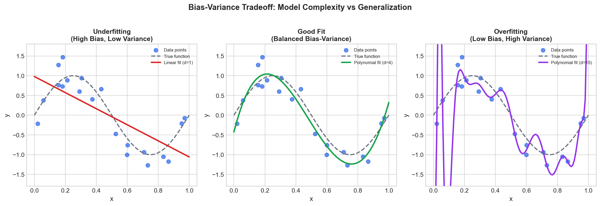 Figure: Visualization of the bias-variance tradeoff showing underfitting (high bias), optimal fit, and overfitting (high variance).
| Aspect | High Bias (Underfitting) | High Variance (Overfitting) |
|---|---|---|
| Model | Too simple (e.g., line) | Too complex (e.g., wiggly) |
| Pattern | Misses the true pattern | Captures noise |
| Training Error | High | Low |
| Test Error | High | High |
| Problem | Wrong assumptions | Too sensitive to training data |
Why High Bias Means Underfitting
High bias = the model is too simple to capture the true underlying pattern.
- What happens: The model makes overly simplistic assumptions (e.g., “the relationship is linear” when it’s actually curved). It cannot even fit the training data well.
- Training error: High — the model fails to capture the pattern even in the data it’s trained on
- Test error: High — since it didn’t learn the pattern, it also fails on new data
- Visual: Imagine fitting a straight line to clearly curved data — the line misses most points
Key insight: With high bias, if you trained the same simple model on different training sets, you’d get roughly the same (wrong) answer each time. The model is consistently wrong because its assumptions are fundamentally flawed.
Why High Variance Means Overfitting
High variance = the model is too complex and memorizes training data, including noise.
- What happens: The model fits the training data too perfectly — it captures not just the true pattern but also random noise specific to that particular training set
- Training error: Low — the model fits training points extremely well (sometimes perfectly)
- Test error: High — the noise patterns won’t repeat in new data, so those “learned” wiggles are wrong
- Visual: A wiggly curve that passes through every training point, but would miss new test points
Key insight: With high variance, if you trained the same complex model on different training sets, you’d get wildly different models each time. The predictions are highly sensitive to which specific training examples you happened to use — that’s the “variance.”
Why it fails to generalize: The wiggles that chase training noise are specific to that training set. New test data will have different noise, so those same wiggles become errors.
Complexity Tradeoff
 Figure: The
bias-variance tradeoff. Training error decreases with
complexity, while test error is U-shaped. The sweet spot
minimizes test error.
Figure: The
bias-variance tradeoff. Training error decreases with
complexity, while test error is U-shaped. The sweet spot
minimizes test error.
Mathematical Example
Consider fitting polynomials to noisy data:
| Model | Bias | Variance | Total Error |
|---|---|---|---|
| Degree 1 (line) | High | Low | High (underfitting) |
| Degree 3 | Medium | Medium | Low (optimal) |
| Degree 15 | Low | High | High (overfitting) |
Controlling the Tradeoff
| To Reduce Bias | To Reduce Variance |
|---|---|
| More complex model | Simpler model |
| More features | Fewer features |
| Less regularization | More regularization |
| Boosting | Bagging/Ensembles |
| More training data | |
| Dropout |
Interview Follow-ups
Q: “You have high bias. What do you do?”
A:
- Use a more complex model (more layers, more neurons)
- Add more features or feature engineering
- Reduce regularization
- Train longer
- Use boosting ensemble methods
Q: “You have high variance. What do you do?”
A:
- Get more training data
- Reduce model complexity
- Add regularization (L1, L2, dropout)
- Use early stopping
- Use bagging/ensembles
- Feature selection (remove irrelevant features)
Q: “How do you know if you have high bias vs high variance?”
A:
- High bias: Training error is high, similar to test error
- High variance: Training error is low, test error is much higher
- Look at learning curves: plot training/validation error vs. training set size
4.2 Overfitting and Underfitting
What This Means (For Beginners)
Think of learning like studying for an exam:
Overfitting = Memorizing without understanding
- You memorize every practice question and answer word-for-word
- On the practice test, you get 100%
- But on the real exam with slightly different questions, you fail
- You learned the specific examples, not the underlying concepts
Underfitting = Not studying enough
- You barely looked at the material
- You do poorly on both practice tests AND the real exam
- Your “model” of the subject is too simple to be useful
Good fit = Understanding the concepts
- You understand the underlying patterns
- You can apply knowledge to new, unseen questions
- Good performance on both practice AND real exams
The goal of ML is NOT to memorize training data perfectly.
The goal is to learn patterns that work on NEW, unseen data.Real-world example:
Imagine a model that predicts house prices:
- Overfit model: “House at 123 Main St sold for $500k, so any house at 123 Main St = $500k”
- Underfit model: “All houses cost $300k”
- Good model: “Price ≈ $200/sqft × size + $50k×bedrooms + neighborhood_factor”
What is Overfitting?
Overfitting occurs when a model learns the training data too well, including noise and random fluctuations, causing it to perform poorly on new, unseen data.
Signs of Overfitting:
- Low training loss, high validation/test loss
- Gap between training and validation accuracy
- Model performance degrades as training continues
What is Underfitting?
Underfitting occurs when a model is too simple to capture the underlying patterns in the data.
Signs of Underfitting:
- High training loss
- Training and validation loss are both high and similar
- Model doesn’t improve much with more training
Detecting Overfitting
Learning Curves:
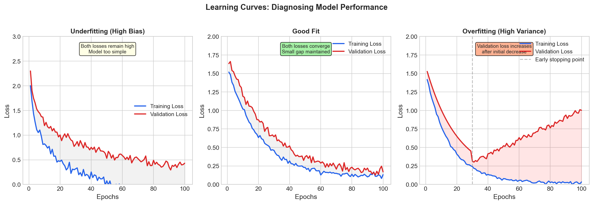 Figure: Learning curves showing training vs validation loss. The gap between curves indicates overfitting.
Prevention Techniques
| Technique | How It Works | When to Use |
|---|---|---|
| L1/L2 Regularization | Penalize large weights | Always (baseline) |
| Dropout | Randomly zero neurons | Deep networks |
| Early Stopping | Stop when val loss increases | Simple, effective |
| Data Augmentation | Create more training data | Images, text |
| Batch Normalization | Normalize activations | Deep networks |
| Weight Decay | Same as L2 in SGD | AdamW |
| Reduce Model Size | Fewer parameters | Last resort |
Early Stopping
best_val_loss = float('inf')
patience = 10
patience_counter = 0
for epoch in range(max_epochs):
train_loss = train_one_epoch()
val_loss = validate()
if val_loss < best_val_loss:
best_val_loss = val_loss
save_checkpoint()
patience_counter = 0
else:
patience_counter += 1
if patience_counter >= patience:
print("Early stopping!")
breakThe Curse of Dimensionality
What This Means (For Beginners)
Imagine you’re searching for gold nuggets in a field:
- 1D (a line): With 10 probes, you cover the line pretty well
- 2D (a square field): With 10 probes, there are huge gaps — you need 100 probes (10×10 grid)
- 3D (a cube): You’d need 1,000 probes (10×10×10)
The problem: As dimensions grow, the space explodes exponentially, but your data stays the same size!
Dimensions: 1 2 3 ... 100
Cells needed: 10 100 1,000 10^100 (more than atoms in universe!)
Your data: 1000 1000 1000 1000Result: With high dimensions but fixed data, your samples become incredibly sparse — like 100 people trying to cover the entire Earth. There’s not enough data to learn patterns reliably.
The Hughes Phenomenon (Why Accuracy Can DECREASE)
This is the counterintuitive result that often surprises people: adding more features can HURT performance.
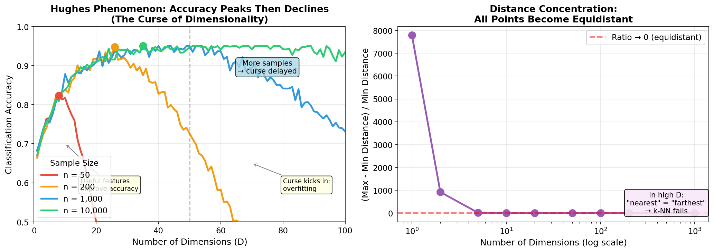 Figure: Left: The Hughes phenomenon — accuracy peaks then declines as dimensions increase. More data delays the curse. Right: Distance concentration — all points become equidistant in high dimensions.
What happens:
- Phase 1 (beneficial): Adding relevant features → accuracy improves
- Peak: Optimal number of features for your sample size
- Phase 2 (curse): More features → accuracy DECREASES due to overfitting
Why does accuracy decrease?
- Same N samples now spread across D-dimensional space
- Each parameter estimated from fewer “effective” samples
- Model starts fitting noise (overfitting)
- Training error stays low, test error increases
Rule of thumb: For reliable estimation, you need roughly \(n \geq 5d\) to \(10d\) samples (linear models), and exponentially more for non-parametric methods like k-NN.
Mathematical Foundation
Data Sparsity:
1D: 10 points cover [0,1] well
2D: 10 points → need 10² = 100 to cover unit square
3D: 10 points → need 10³ = 1000 to cover unit cube
...
100D: need 10^100 points (impossible!)Distance Concentration: In high dimensions, the ratio of max to min distance approaches 1:
\[\lim_{d \to \infty} \frac{\text{dist}_{max} - \text{dist}_{min}}{\text{dist}_{min}} \to 0\]
This means ALL points become roughly equidistant — “nearest neighbor” becomes meaningless!
Volume Concentration: In a high-dimensional hypersphere, almost all volume is concentrated in a thin shell near the surface (not uniformly distributed).
Methods Affected by the Curse
The curse affects all machine learning methods, not just k-NN:
| Method | Why It Fails in High-D |
|---|---|
| k-NN | Distances become meaningless; “nearest” is random |
| Kernel methods (RBF SVM) | Kernel similarity degenerates; all points equally similar |
| Linear regression | D parameters with N samples → overfitting when D > N |
| Gaussian models | Covariance matrix needs O(D²) samples to estimate |
| Clustering | Clusters become indistinguishable |
| Decision trees | Splits become less meaningful; more ways to overfit |
Key Insights
- Volume concentrates in corners: In high dimensions, most volume of a hypercube is in the corners
- Distance becomes meaningless: All points are roughly equidistant in high dimensions
- Data is sparse: Need exponentially more data to maintain density
- Overfitting increases: More dimensions = more ways to fit noise with limited data
Solutions
| Solution | How It Helps |
|---|---|
| Dimensionality reduction (PCA, autoencoders) | Project to lower-D space where data is dense |
| Feature selection | Remove irrelevant features, reduce D |
| Regularization (L1, L2) | Constrain model complexity, prevent overfitting |
| More data | Pushes the “peak” to higher D (delays the curse) |
| Domain knowledge | Use only meaningful features |
| Manifold hypothesis | Exploit the fact that real data lies on low-D manifolds |
Interview Q: “Why does k-NN fail in high dimensions?”
A: In high dimensions, the curse of dimensionality causes all points to become approximately equidistant. The ratio of the distance to the nearest neighbor vs. the farthest neighbor approaches 1. This makes the “nearest” neighbor essentially random, destroying k-NN’s ability to find meaningful neighbors.
Interview Q: “What is the Hughes phenomenon?”
A: The Hughes phenomenon states that with a fixed training set size, classifier accuracy initially improves as you add features, but then peaks and actually DECREASES as dimensionality continues to grow. This happens because more features means more parameters to estimate from the same data — eventually, the model overfits to noise. The peak occurs earlier with smaller training sets. This is why feature selection and dimensionality reduction are important: more features isn’t always better.
Interview Q: “How does the curse of dimensionality relate to overfitting?”
A: The curse of dimensionality directly causes overfitting. With fixed N samples in D dimensions, as D grows: (1) data becomes sparse — fewer samples per region of space, (2) more parameters to estimate from the same data, (3) the model can find spurious patterns in noise that don’t generalize. Essentially, high-D space gives the model “room” to memorize rather than learn. This is why regularization and dimensionality reduction help — they combat the curse by constraining the effective complexity.
The Manifold Hypothesis: Why Deep Learning Works
What is a Manifold?
A manifold is a lower-dimensional surface embedded in a higher-dimensional space. Think of it like this:
3D Space with a 2D Manifold:
The surface of Earth is a 2D manifold (you can describe any point with 2 numbers:
latitude and longitude) embedded in 3D space (x, y, z).
A sheet of paper (2D) crumpled into a ball still occupies 3D space,
but the paper itself is intrinsically 2D.The Manifold Hypothesis
Real-world high-dimensional data (images, text, audio) doesn’t fill the entire high-dimensional space uniformly. Instead, it lies on or near a low-dimensional manifold.
Example: Images of faces
A 256×256 grayscale image has 65,536 dimensions.
But not every combination of pixels is a valid face!
Random pixels: Valid face:
███▒░▓▒█░▓░█▒ [A recognizable
░▓█▒▓░█▒█░▓▒ human face]
(noise - not on (lies on the
the manifold) "face manifold")Why This Matters:
The curse is less severe: We don’t need to fill all of \(\mathbb{R}^{65536}\) — just the low-dimensional face manifold (maybe ~100-1000 dimensions)
Deep learning learns the manifold: Neural networks learn to map data to and from this manifold
- Encoder: High-dim → Low-dim (find the manifold coordinates)
- Decoder: Low-dim → High-dim (reconstruct from manifold)
Interpolation makes sense: Moving along the manifold produces valid data
Face A → [interpolate on manifold] → Face B (smooth transition through valid faces) vs. Face A → [interpolate in pixel space] → Face B (goes through ghostly invalid images)
Evidence for the Manifold Hypothesis:
| Evidence | Explanation |
|---|---|
| Autoencoders work | Can compress images to <1% of original dimensions and reconstruct |
| GANs generate realistic data | Learning to sample from the manifold produces valid images |
| Interpolation works | Latent space interpolation produces valid intermediate samples |
| Adversarial examples exist | Small perturbations leave the manifold → misclassification |
Interview Q: “What is the manifold hypothesis and why does it help with the curse of dimensionality?”
A: The manifold hypothesis states that real-world high-dimensional data (like images) actually lies on or near a much lower-dimensional manifold embedded in that space. A 256×256 image has 65,536 dimensions, but valid faces might only span a ~100-1000 dimensional manifold. This helps overcome the curse of dimensionality because we don’t need exponentially more data to cover the full space — we only need enough to cover the manifold. Deep learning exploits this by learning representations that capture the intrinsic structure of this manifold.
Interview Q: “How do autoencoders relate to manifolds?”
A: Autoencoders learn to map data to a low-dimensional latent space (encoder) and back (decoder). The bottleneck forces the network to discover the manifold structure — the latent space approximates coordinates on the manifold. If the data truly lies on a low-dimensional manifold, compression is possible without losing essential information. The reconstruction error measures how well the learned manifold approximates the true data manifold.
The No Free Lunch Theorem
Statement: Averaged over all possible problems, no learning algorithm is better than any other — including random guessing.
What It Means:
- There’s no “universal best” algorithm
- Every algorithm has problems it excels at and problems it fails on
- Good performance on one problem class comes at the cost of worse performance on others
Implications for ML:
- Domain knowledge matters: Choose algorithms suited to your problem structure
- No silver bullet: Deep learning isn’t always the answer
- Benchmarks can mislead: Algorithm A beating B on ImageNet doesn’t mean A is universally better
Interview Q: “What is the No Free Lunch theorem and what does it imply?”
A: The No Free Lunch theorem states that averaged over all possible problems, no learning algorithm performs better than any other. This means there’s no universally best algorithm — every method excels on some problems and fails on others. The implication is that we should choose algorithms based on problem structure and domain knowledge, not just benchmark performance. Deep learning works well for problems with hierarchical structure (images, language), but simpler methods may be better for tabular data or small datasets.
Interview Follow-ups
Q: “Your model is overfitting. Walk me through your debugging process.”
A:
- Verify: Check train vs validation loss curves
- Data: Is there enough data? Can we augment?
- Regularization: Add/increase L2, dropout
- Architecture: Is model too complex?
- Early stopping: Implement if not present
- Cross-validation: Ensure consistent results
Q: “What’s the difference between dropout and regularization?”
A:
- L2 regularization: Adds penalty term to loss, shrinks all weights toward zero smoothly
- Dropout: Randomly sets neurons to zero during training, forces redundancy and prevents co-adaptation
- Both reduce overfitting but through different mechanisms
- L2 is deterministic; dropout introduces stochasticity
Q: “Should you apply dropout during inference?”
A: No! During inference:
- Set model to eval mode:
model.eval() - Dropout is disabled
- Alternatively, multiply weights by (1-p) to account for expected value
- PyTorch handles this automatically with
model.eval()
4.3 Model Selection and Evaluation
Train/Validation/Test Split
┌──────────────────────────────────────────────────────────────┐
│ Full Dataset │
├─────────────────────────┬───────────────────┬────────────────┤
│ Training Set (60%) │ Validation (20%) │ Test Set (20%)│
│ │ │ │
│ - Train model │ - Tune hyper- │ - Final │
│ - Update weights │ parameters │ evaluation │
│ │ - Model │ - Report │
│ │ selection │ results │
│ │ - Early stopping │ - NEVER touch │
│ │ │ during dev │
└─────────────────────────┴───────────────────┴────────────────┘K-Fold Cross-Validation
Why K-Fold? A single train/test split might be “lucky” or “unlucky” — your test set could happen to contain easy or hard examples, giving a misleading performance estimate. K-Fold averages over K different splits, giving a more reliable estimate of how your model will perform on unseen data.
When data is limited:
Fold 1: [Val] [Train] [Train] [Train] [Train]
Fold 2: [Train] [Val] [Train] [Train] [Train]
Fold 3: [Train] [Train] [Val] [Train] [Train]
Fold 4: [Train] [Train] [Train] [Val] [Train]
Fold 5: [Train] [Train] [Train] [Train] [Val]
Final score = average of all fold scoresTypical values: K=5 or K=10. Every example is used for validation exactly once.
Evaluation Metrics
The Confusion Matrix: Foundation of All Metrics
Before understanding metrics, you need to understand the confusion matrix — a 2×2 table showing all possible outcomes:
Predicted
Positive Negative
┌───────────┬───────────┐
Positive │ TP │ FN │ ← Recall = TP/(TP+FN)
│ (Hit! ✓) │ (Missed!) │ "Of actual positives, how many caught?"
Actual ├───────────┼───────────┤
│ FP │ TN │
Negative │ (False │(Correctly │
│ alarm!) │ ignored ✓)│
└───────────┴───────────┘
↑
Precision = TP/(TP+FP)
"Of predicted positives, how many correct?"Memory trick: - Recall → Row-based: “Of all actual positives (top row), how many did I catch?” - Precision → Column-based: “Of all I predicted positive (left column), how many were correct?”
Key Formulas (reference these with the matrix above):
\[\text{Precision} = \frac{TP}{TP + FP} \quad \text{(left column)}\]
\[\text{Recall} = \frac{TP}{TP + FN} \quad \text{(top row)}\]
\[\text{F1} = \frac{2 \cdot \text{Precision} \cdot \text{Recall}}{\text{Precision} + \text{Recall}} = \frac{2 \cdot TP}{2 \cdot TP + FP + FN}\]
Intuitive names:
| Term | Full Name | Plain English | Example (Spam Filter) |
|---|---|---|---|
| TP | True Positive | Correctly caught | Spam correctly sent to spam folder |
| TN | True Negative | Correctly ignored | Normal email stays in inbox |
| FP | False Positive | False alarm (Type I) | Normal email wrongly marked as spam 😠 |
| FN | False Negative | Missed it (Type II) | Spam slips into inbox 😠 |
Concrete Example: Spam Detection
Imagine your spam filter processed 100 emails:
| Email Content | Actually Is | Model Says | Result |
|---|---|---|---|
| “Nigerian prince needs help…” | Spam | Spam | TP ✓ |
| “Meeting at 3pm tomorrow” | Not Spam | Not Spam | TN ✓ |
| “Sale! 50% off today only!” | Not Spam | Spam | FP ❌ (oops, missed a sale) |
| “Free iPhone! Click here!” | Spam | Not Spam | FN ❌ (spam in inbox) |
Summary: TP=40, TN=45, FP=5, FN=10
Classification Metrics with Intuition
| Metric | Formula | Intuitive Question | When to Optimize |
|---|---|---|---|
| Accuracy | \(\frac{TP + TN}{Total}\) | “Of all emails, how many did I classify correctly?” | Balanced classes only |
| Precision | \(\frac{TP}{TP + FP}\) | “Of emails I flagged as spam, how many were actually spam?” | When FP is costly |
| Recall | \(\frac{TP}{TP + FN}\) | “Of all actual spam, how much did I catch?” | When FN is costly |
| F1 Score | \(\frac{2 \cdot P \cdot R}{P + R}\) | “Balanced performance on both Precision and Recall” | Imbalanced classes |
| AUC-ROC | Area under ROC | “How well can I rank spam vs not-spam?” | When threshold varies |
Deep Dive: ROC Curves and AUC
The ROC (Receiver Operating Characteristic) curve plots the tradeoff between catching positives (TPR) and false alarms (FPR) at every possible threshold.
The Axes:
- Y-axis (TPR): True Positive Rate = Recall = TP / (TP + FN) — “Of all actual positives, what fraction did I catch?”
- X-axis (FPR): False Positive Rate = FP / (FP + TN) — “Of all actual negatives, what fraction did I wrongly flag?”
Interpreting the Curve:
- Top-left corner (0, 1): Perfect classifier — 100% TPR, 0% FPR
- Diagonal line: Random guessing — you catch positives at the same rate you create false alarms
- Below diagonal: Worse than random (flip your predictions!)
- Area under curve (AUC): Single number summarizing overall performance
AUC: The Probabilistic Interpretation
\[\text{AUC} = P(\text{score}(\text{positive}) > \text{score}(\text{negative}))\]
In plain English: If you randomly pick one positive example and one negative example, AUC is the probability that your model assigns a higher score to the positive one.
| AUC Value | Interpretation |
|---|---|
| 1.0 | Perfect: Model always ranks positives above negatives |
| 0.9 | Excellent: 90% chance of correct ranking |
| 0.7-0.8 | Good: Useful discrimination |
| 0.5 | Random: No better than coin flip |
| < 0.5 | Worse than random: Flip your predictions |
Why AUC is Useful:
- Threshold-independent: Evaluates all possible thresholds at once
- Handles imbalance: Unlike accuracy, doesn’t reward predicting the majority class
- Ranking metric: Good for problems where you care about ordering (e.g., “show me the most likely fraud cases first”)
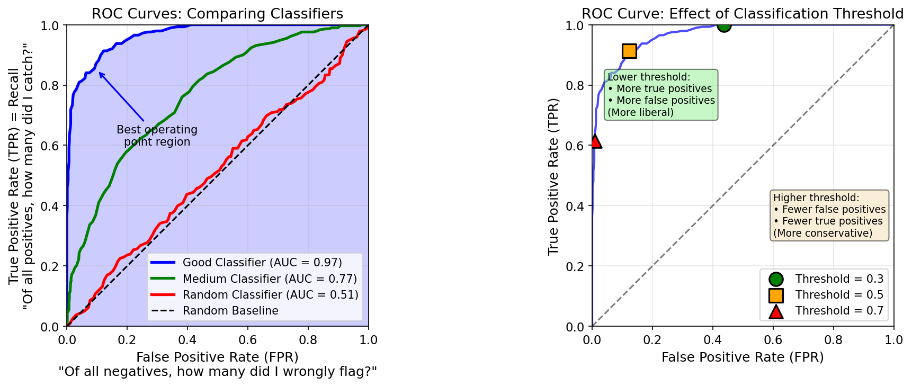 Figure: ROC curves comparing different classifiers. The area under the curve (AUC) measures overall discrimination ability. The diagonal represents random guessing.
When to Prioritize Which Metric
| Scenario | Prioritize | Why | Example |
|---|---|---|---|
| FP is costly | Precision | False alarms are expensive/annoying | Spam filter: Don’t want legit email in spam |
| FN is costly | Recall | Missing cases is dangerous | Cancer screening: Don’t want to miss cancer |
| Both matter | F1 Score | Balance between P and R | General classification |
| Classes balanced | Accuracy | Simple and interpretable | Coin flip prediction (50/50) |
| Classes imbalanced | F1 or AUC | Accuracy is misleading | Fraud detection (99.9% non-fraud) |
The Accuracy Trap (Why Accuracy Can Lie)
Scenario: 1000 patients, 10 have cancer, 990 don’t.
Dumb model: “Nobody has cancer” (always predict negative)
- Accuracy = 990/1000 = 99% 🎉
- Recall = 0/10 = 0% 💀 (missed ALL cancer patients!)
Lesson: With imbalanced classes, high accuracy is meaningless. Use F1 or AUC instead.
Handling Imbalanced Data
Interview Q: “How do you handle imbalanced datasets?”
A: There are several complementary approaches:
Quick Reference: Imbalanced Data Solutions
| Technique | How It Works | Best For | Complexity |
|---|---|---|---|
| Class Weights | Penalize minority errors more in loss | Any imbalance | Low |
| Oversampling (SMOTE) | Create synthetic minority examples | Moderate imbalance (1:10-1:100) | Medium |
| Undersampling | Remove majority examples | When majority is very large | Low |
| Threshold Tuning | Adjust decision threshold from 0.5 | After training, any model | Low |
| AUC-PR Metric | Evaluate with precision-recall curve | Severe imbalance (1:100+) | Low |
| Anomaly Detection | Treat minority as outliers | Extreme imbalance (1:1000+) | High |
| Ensemble Methods | Balanced RF, EasyEnsemble | Moderate to severe | Medium |
1. Resampling Techniques
| Technique | How It Works | Pros | Cons |
|---|---|---|---|
| Oversampling minority | Duplicate minority examples | More data to learn from | Risk of overfitting |
| SMOTE | Synthesize new minority examples via interpolation | Creates novel examples | Can create unrealistic examples |
| Undersampling majority | Remove majority examples | Faster training | Lose information |
| Combination | Oversample minority + undersample majority | Balanced approach | Requires tuning |
from imblearn.over_sampling import SMOTE
from imblearn.under_sampling import RandomUnderSampler
from imblearn.pipeline import Pipeline
# Combination approach
pipeline = Pipeline([
('over', SMOTE(sampling_strategy=0.5)), # Minority to 50% of majority
('under', RandomUnderSampler(sampling_strategy=0.8)) # Majority to 80% of minority
])
X_resampled, y_resampled = pipeline.fit_resample(X, y)2. Class Weights
Adjust the loss function to penalize minority class errors more heavily:
\[\mathcal{L} = -\sum_i w_{y_i} \cdot \log(\hat{y}_i)\]
where \(w_{y_i}\) is the weight for class \(y_i\), typically computed as \(w_c = \frac{N}{K \cdot n_c}\) (inverse frequency weighting), with \(N\) = total samples, \(K\) = number of classes, \(n_c\) = samples in class \(c\).
# Scikit-learn
from sklearn.linear_model import LogisticRegression
model = LogisticRegression(class_weight='balanced')
# PyTorch
class_counts = torch.bincount(y_train)
weights = 1.0 / class_counts.float()
criterion = nn.CrossEntropyLoss(weight=weights)3. Threshold Tuning
Default threshold of 0.5 isn’t optimal for imbalanced data. Find threshold that:
- Maximizes F1 score, or
- Achieves desired precision/recall tradeoff
from sklearn.metrics import precision_recall_curve
precisions, recalls, thresholds = precision_recall_curve(y_true, y_scores)
f1_scores = 2 * (precisions * recalls) / (precisions + recalls + 1e-8)
optimal_threshold = thresholds[np.argmax(f1_scores)]4. Use Appropriate Metrics
- AUC-PR (Precision-Recall) > AUC-ROC for highly imbalanced data
- F1-score or F2-score (if recall is more important)
- Matthews Correlation Coefficient (MCC) — balanced even with imbalance
5. Algorithmic Approaches
- Cost-sensitive learning: Different misclassification costs for different classes
- Ensemble methods: Balanced Random Forest, EasyEnsemble
- Anomaly detection: Treat minority class as anomalies if extreme imbalance
Summary table of when to use what:
| Imbalance Ratio | Recommended Approach |
|---|---|
| 1:10 | Class weights + threshold tuning |
| 1:100 | SMOTE + class weights + AUC-PR |
| 1:1000+ | Anomaly detection or cost-sensitive ensembles |
Precision-Recall Tradeoff
You can’t maximize both — there’s always a tradeoff:
| Threshold | Behavior | Precision | Recall |
|---|---|---|---|
| High (strict) | Only flag obvious spam | High ↑ | Low ↓ |
| Low (lenient) | Flag anything suspicious | Low ↓ | High ↑ |
Example: Lower your spam threshold → catch more spam (↑ Recall) but also more false alarms (↓ Precision)
The Precision-Recall Duality: A “Cannot Tolerate” Framework
There’s a fundamental duality between precision and recall that can be understood through a “cannot tolerate” framing:
| Metric | Formula | “Cannot Tolerate” | Action to Improve |
|---|---|---|---|
| Precision | TP / (TP + FP) | False Positives (false alarms) | Decrease FP → be more strict |
| Recall | TP / (TP + FN) | False Negatives (missed cases) | Decrease FN → be more lenient |
Why the duality exists: Adjusting the classification threshold affects both metrics in opposite directions:
Raise threshold (be stricter):
→ Fewer false alarms (↓ FP) → ↑ Precision
→ But also miss more real cases (↑ FN) → ↓ Recall
Lower threshold (be more lenient):
→ Catch more real cases (↓ FN) → ↑ Recall
→ But also more false alarms (↑ FP) → ↓ PrecisionUsing the “Cannot Tolerate” Framework:
| When You… | Optimize For | Reduce | Example |
|---|---|---|---|
| Cannot tolerate false positives | Precision | FP | Spam filter: Don’t send legit email to spam |
| Cannot tolerate false negatives | Recall | FN | Cancer screening: Don’t miss any cancer |
The F1 score exists precisely because you usually can’t have both — it’s the harmonic mean that provides a balanced measure when both false positives and false negatives matter.
Regression Metrics
| Metric | Formula | Properties | When to Use |
|---|---|---|---|
| MSE | \(\frac{1}{n}\sum(y - \hat{y})^2\) | Penalizes large errors more | When outliers matter |
| MAE | \(\frac{1}{n}\sum|y - \hat{y}|\) | All errors weighted equally | Robust to outliers |
| R² | \(1 - \frac{SS_{res}}{SS_{tot}}\) | % of variance explained | Interpretability |
Interview Q: “When would you use Precision vs Recall?”
A: It depends on the cost of errors:
Prioritize Precision when false positives are costly:
- Spam filter: A false positive means a legitimate email goes to spam — user misses important info
- Recommendation system: Showing irrelevant items annoys users
Prioritize Recall when false negatives are costly:
- Cancer screening: A false negative means missing cancer — could be fatal
- Fraud detection: A false negative means fraud goes undetected — financial loss
- Search engines: Missing a relevant result frustrates users
Use F1 when you need balance, especially with imbalanced classes
Interview Q: “Describe a scenario where you would prioritize Recall over Precision”
A: The classic example is cancer screening (or any medical diagnostic test). Let me walk through why:
The Setup: We’re building a system to screen mammograms for breast cancer.
| Outcome | What It Means | Real-World Consequence |
|---|---|---|
| True Positive (TP) | Cancer detected correctly | Patient gets treatment ✓ |
| True Negative (TN) | Healthy patient cleared | Patient goes home happy ✓ |
| False Positive (FP) | Healthy patient flagged | Patient gets a biopsy (uncomfortable, anxious, ~$1000) |
| False Negative (FN) | Cancer missed! | Patient goes home thinking they’re healthy. Cancer grows undetected. Potentially fatal. |
The Cost Asymmetry:
- Cost of FP: Anxiety + additional testing + ~$1,000 → Inconvenient but manageable
- Cost of FN: Delayed treatment → cancer progresses → potentially fatal
The costs are wildly asymmetric: missing cancer can kill someone; a false alarm just means more tests.
The Decision: We should optimize for high Recall (catch all true cancers) even at the expense of lower Precision (more false alarms).
\[\text{Recall} = \frac{TP}{TP + FN} \rightarrow \text{Maximize to minimize missed cancers}\]
Concrete Numbers:
| Model | Precision | Recall | FP (false alarms) | FN (missed cancer) |
|---|---|---|---|---|
| Model A | 90% | 70% | 10 false alarms | 30 missed cancers |
| Model B | 60% | 95% | 40 false alarms | 5 missed cancers |
Model B is better! We accept 30 more false alarms (extra biopsies) to catch 25 more cancers.
Other Recall-Critical Scenarios:
| Domain | Why Recall Matters | Acceptable FP Cost |
|---|---|---|
| Airport security | Missing a threat could kill hundreds | Extra manual screenings |
| Fraud detection | Missing fraud costs millions | Extra transaction reviews |
| Manufacturing safety | Defective airplane part → crash | Extra QA inspections |
| Child safety filters | Missing harmful content unacceptable | Some false blocks |
| Disease outbreak detection | Missing an outbreak → pandemic | False alerts investigated |
Key Insight: When the cost of a False Negative is catastrophic and irreversible (death, massive financial loss, safety hazard), while the cost of a False Positive is merely inconvenient (extra tests, manual review, minor delay), always prioritize Recall.
Follow-up: “How would you implement this in practice?”
A: Lower the classification threshold. Instead of predicting “cancer” when probability > 0.5, predict “cancer” when probability > 0.1 (or even lower). This catches more true positives but also more false positives — exactly the tradeoff we want.
# Standard threshold (balanced)
predictions = (probabilities > 0.5).astype(int)
# High-recall threshold for medical screening
predictions = (probabilities > 0.1).astype(int) # Flag anything remotely suspiciousInterview Q: “Why is accuracy a bad metric for imbalanced datasets?”
A: Because a naive classifier can achieve high accuracy by simply predicting the majority class. In fraud detection (0.1% fraud), predicting “not fraud” for everything gives 99.9% accuracy but 0% recall — you catch zero fraud. Metrics like F1, Precision, Recall, or AUC-ROC measure performance on the minority class specifically, giving you meaningful signal about model quality.
Another Example: Bug Detection / Static Analysis
The same confusion matrix framework applies to static analysis tools that detect bugs in code:
| Predicted: Bug (Tool flags as buggy) | Predicted: No Bug (Tool says OK) | |
|---|---|---|
| Actual: Bug (Code has a real bug) | True Positive (TP) — Correctly detected bug | False Negative (FN) — Missed bug! 😱 |
| Actual: No Bug (Code is correct) | False Positive (FP) — False alarm! 😤 | True Negative (TN) — Correctly passed |
What is a False Positive (FP) in Static Analysis?
FP = Tool flags code as buggy, but the code is actually correct.
| False Positive Scenario | What the tool says | Reality |
|---|---|---|
| Null pointer warning | “Variable x might be null here” |
Developer knows x is validated
upstream |
| Resource leak warning | “File handle never closed” | Actually closed in a finally block the tool
missed |
| Thread safety warning | “Potential race condition” | Code is single-threaded or properly synchronized |
| Dead code warning | “This branch is unreachable” | Branch is reachable via reflection or dynamic dispatch |
| SQL injection warning | “User input in query” | Input is already sanitized/validated |
| Integer overflow warning | “Potential overflow” | Values are bounded by business logic |
Why FP/FN Rates Matter in Static Analysis:
| High FP Rate Problems | High FN Rate Problems |
|---|---|
| Alert fatigue — developers ignore all warnings | Real bugs slip through |
| Wasted time — investigating non-issues | False confidence — “tool said it’s fine” |
| Tool abandonment — teams stop using it | Security vulnerabilities — missed exploits |
The trade-off: Most static analysis tools let you tune sensitivity:
- High sensitivity → Catches more bugs BUT more false alarms
- Low sensitivity → Fewer false alarms BUT misses real bugs
Key Metrics for Static Analysis Tools:
| Metric | Formula | Meaning |
|---|---|---|
| Precision | TP / (TP + FP) | “Of all flagged issues, how many are real bugs?” |
| Recall | TP / (TP + FN) | “Of all real bugs, how many did we catch?” |
| False Positive Rate | FP / (FP + TN) | “Of all correct code, how much did we wrongly flag?” |
In practice: Tools like SonarQube, Coverity, or CodeQL often have precision around 30-70% — meaning 30-70% of warnings are real issues. This is why “triaging” warnings is a standard practice.
Hyperparameter Tuning
Grid Search: Try all combinations
param_grid = {
'learning_rate': [0.001, 0.01, 0.1],
'hidden_size': [64, 128, 256],
'dropout': [0.1, 0.3, 0.5]
}
# 3 × 3 × 3 = 27 experimentsRandom Search: Sample randomly (often better!)
- More efficient for high-dimensional spaces
- Can find good values in unexplored regions
Bayesian Optimization: Model the objective function
- Use Gaussian processes to predict performance
- Sample where expected improvement is highest
4.4 Generative vs Discriminative Models
The Key Distinction
| Model Type | What It Learns | Question It Answers |
|---|---|---|
| Discriminative | \(P(y\|x)\) | “Given input \(x\), what’s the label \(y\)?” |
| Generative | \(P(x, y)\) or \(P(x)\) | “How was this data generated?” |
Discriminative Models
Focus: Learn the decision boundary directly.
\[P(y|x) = \text{classifier output}\]
Examples:
- Logistic Regression
- SVMs
- Neural Networks (classification)
- Random Forests
Advantages:
- Often simpler, more accurate for classification
- Don’t need to model full data distribution
- Directly optimize what we care about
Generative Models
Focus: Model how data is generated, can sample new data.
\[P(x, y) = P(x|y)P(y)\]
Or for unsupervised: \[P(x) = \int P(x|z)P(z)dz\]
Examples:
- Naive Bayes
- Gaussian Mixture Models (GMM)
- Hidden Markov Models (HMM)
- Variational Autoencoders (VAE)
- Generative Adversarial Networks (GAN)
- Diffusion Models
- Large Language Models (GPT, LLaMA)
How Generative Models Enable Classification
Using Bayes’ rule, generative models can classify:
\[P(y|x) = \frac{P(x|y)P(y)}{P(x)} \propto P(x|y)P(y)\]
Naive Bayes example:
- Learn \(P(x|y=\text{spam})\) and \(P(x|y=\text{ham})\)
- Learn prior \(P(y=\text{spam})\)
- Classify: \(\arg\max_y P(x|y)P(y)\)
Modern Generative Models
VAE (Variational Autoencoder):
x → [Encoder] → μ, σ → z ~ N(μ,σ²) → [Decoder] → x̂- Learns latent representation \(z\)
- Can generate new samples by sampling \(z\) and decoding
GAN (Generative Adversarial Network):
z ~ N(0,1) → [Generator] → fake_x
↓
real_x → [Discriminator] → real/fake?- Generator tries to fool discriminator
- Discriminator tries to distinguish real from fake
Diffusion Models (DALL-E, Stable Diffusion):
x₀ → add noise → ... → xₜ (pure noise)
xₜ → denoise → ... → x₀ (clean image)- Learn to reverse noise process
- State-of-the-art image generation
LLMs as Generative Models: \[P(x_1, x_2, \ldots, x_T) = \prod_{t=1}^{T} P(x_t | x_{<t})\]
- Model distribution over sequences
- Generate by sampling token by token
When to Use Which?
| Use Case | Recommended |
|---|---|
| Classification only | Discriminative |
| Need to generate samples | Generative |
| Small dataset | Generative (can use priors) |
| Missing data | Generative (can marginalize) |
| Anomaly detection | Generative (low \(P(x)\) = anomaly) |
| Semi-supervised | Generative |
Interview Q: “What’s the difference between generative and discriminative models?”
A: Discriminative models learn \(P(y|x)\) — the decision boundary to classify inputs. Generative models learn \(P(x,y)\) or \(P(x)\) — how the data was generated, enabling both classification (via Bayes’ rule) and sampling new data. Examples: Logistic regression is discriminative (directly models \(P(y|x)\)); Naive Bayes is generative (models \(P(x|y)P(y)\)). Modern generative models like VAEs, GANs, and LLMs can generate realistic images and text by learning the data distribution.
Interview Q: “Why are LLMs considered generative models?”
A: LLMs model the joint distribution of text as \(P(x_1, \ldots, x_T) = \prod_t P(x_t|x_{<t})\). They learn how text is generated — given a context, what’s the likely next token. This allows them to generate new text by sampling autoregressively. Unlike a discriminative classifier that would just predict a label, LLMs can produce novel sequences that follow the learned distribution of natural language.
4.5 Curriculum Learning
What is Curriculum Learning?
Curriculum learning is a training strategy where the model learns simple concepts first, then progressively harder ones — mimicking how humans and animals learn.
Core idea: Instead of randomly sampling training examples, organize them from easy to difficult.
Traditional Training: Curriculum Learning:
Random order: Structured order:
[Hard] [Easy] [Medium] [Easy] → [Medium] → [Hard]
[Easy] [Hard] [Medium] [Easy] → [Medium] → [Hard]
[Medium] [Easy] [Hard] [Easy] → [Medium] → [Hard]Motivation: How Humans Learn
The motivation comes from the observation that humans and animals learn better when trained with a curriculum-like strategy:
- Children learn to walk before they run
- Math: arithmetic → algebra → calculus
- Language: simple words → sentences → complex grammar
- Music: scales → simple songs → concertos
Research in cognitive science suggests this isn’t just convenient — it’s more efficient for learning.
How It Works
- Define a difficulty measure for each training example
- Sort or weight examples by difficulty
- Start training on easy examples
- Gradually introduce harder examples
def curriculum_training(model, dataset, epochs, difficulty_fn):
# Sort examples by difficulty
difficulties = [difficulty_fn(example) for example in dataset]
sorted_indices = np.argsort(difficulties)
for epoch in range(epochs):
# Compute curriculum pace (how much data to use)
# Start with easy 20%, end with all 100%
fraction = min(1.0, 0.2 + 0.8 * (epoch / epochs))
n_examples = int(fraction * len(dataset))
# Train on easiest n_examples
curriculum_indices = sorted_indices[:n_examples]
for idx in curriculum_indices:
train_step(model, dataset[idx])Defining Difficulty
Different metrics for “easy” vs “hard”:
| Domain | Easy | Hard |
|---|---|---|
| Sequence tasks | Short sequences | Long sequences |
| Language modeling | Common words, simple grammar | Rare words, complex syntax |
| Image classification | Clear, centered objects | Occluded, cluttered scenes |
| Math problems | Single-digit arithmetic | Multi-step word problems |
| Translation | Short sentences, common words | Long sentences, rare words |
Common difficulty measures:
- Loss-based: Examples with lower initial loss are “easier”
- Length-based: Shorter examples are easier
- Confidence-based: Examples the model is confident on are easier
- Human-defined: Domain experts rank difficulty
Self-Paced Learning
A variant where the model decides what’s easy:
\[\min_{w, v} \sum_i v_i L(x_i, y_i; w) - \lambda \sum_i v_i\]
where \(v_i \in [0,1]\) is a weight for each example. The model “chooses” to focus on examples it can learn from (moderate difficulty).
Why Does It Work?
- Avoids early confusion: Random hard examples early on can push weights in wrong directions
- Better gradient signal: Easy examples provide cleaner gradients before tackling noise
- Implicit regularization: Learning simple patterns first acts as inductive bias
- Faster convergence: The model builds on solid foundations rather than fighting contradictory signals
Curriculum Learning in Sequence Models
Particularly important for sequence-to-sequence tasks:
Stage 1: Learn on sequences of length 1-10
Stage 2: Learn on sequences of length 10-50
Stage 3: Learn on sequences of length 50-200
Stage 4: Learn on full-length sequencesConnection to teacher forcing (Section 6.1): Curriculum learning can determine when to transition from teacher forcing to self-generated inputs.
Examples in Practice
| Application | Curriculum Strategy |
|---|---|
| Machine Translation | Short sentences → long sentences |
| Sorting networks | Sort 5 numbers → sort 100 numbers |
| Math reasoning | Single-step → multi-step problems |
| Code generation | Simple functions → complex programs |
| RL (games) | Easy levels → hard levels |
Anti-Curriculum (Hard First)
Sometimes training on hard examples first works better:
- Bootstrapping: Hard examples might contain more information
- Active learning: Focus compute on uncertain regions
- Adversarial training: Hardest examples reveal model weaknesses
The best strategy is often task-dependent!
Interview Q: “What is curriculum learning and why does it help?”
A: Curriculum learning trains models on easy examples first, then progressively harder ones — similar to how humans learn (arithmetic before calculus). The motivation comes from cognitive science showing this is more efficient for learning. It works by: (1) defining a difficulty measure (e.g., sequence length, loss), (2) sorting examples by difficulty, (3) gradually exposing the model to harder examples during training. It helps because early training on easy examples provides cleaner gradient signals and builds foundational representations before tackling complex cases. It’s particularly useful for sequence tasks where starting with short sequences prevents the model from getting confused by long-range dependencies it can’t yet handle.
Interview Q: “How would you implement curriculum learning for a language model?”
A: For a language model, I would:
- Define difficulty: Use sequence length as the primary measure (short = easy), optionally combined with perplexity from a simpler model
- Bucket the data: Group sequences into length bins (e.g., 0-64, 64-256, 256-1024, 1024+ tokens)
- Training schedule: Start with shortest bucket for N steps, then include next bucket, repeat until all data is used
- Alternative: Use a continuous schedule where the maximum sequence length increases linearly or exponentially with training step
This helps the model learn basic patterns and local dependencies before tackling long-range dependencies.
4.6 Transfer Learning, Domain Adaptation, and Few-Shot Learning
Transfer Learning
Transfer learning uses knowledge learned from one task to improve performance on a different but related task.
Source Task Target Task
(ImageNet: 1M images) (Medical imaging: 1K images)
↓ ↓
[Pretrained CNN] ──transfer──→ [Fine-tuned model]
↓ ↓
Generic features Task-specific features
(edges, textures) (tumor patterns)Why it works: Early layers learn general features (edges, shapes) that transfer well. Later layers learn task-specific features that need fine-tuning.
Common approaches:
| Approach | Description | When to Use |
|---|---|---|
| Feature extraction | Freeze pretrained layers, train new classifier | Small target dataset |
| Fine-tuning | Unfreeze some/all layers, train with small LR | Medium target dataset |
| Full retraining | Use pretrained weights as initialization | Large target dataset |
Modern examples: BERT/GPT pretrained on web text, fine-tuned for specific NLP tasks; ImageNet-pretrained CNNs for medical imaging.
Domain Adaptation
Domain adaptation is a special case of transfer learning where the task is the same but the data distribution differs.
Source Domain Target Domain
(Synthetic images) (Real photos)
↓ ↓
P_source(x) ≠ P_target(x)
↓ ↓
Same task: classify objects in both domainsThe problem: Model trained on source domain performs poorly on target domain due to domain shift (distribution mismatch).
Approaches:
- Discrepancy-based: Minimize distance between source and target feature distributions (e.g., Maximum Mean Discrepancy)
- Adversarial: Train domain discriminator, learn domain-invariant features
- Self-training: Use confident predictions on target domain as pseudo-labels
Example: Training on simulation (cheap labels) → deploying on real robots (no labels).
One-Shot Learning
One-shot learning learns to recognize new classes from just one example per class.
Support Set: Query:
[1 example of "cat"] [New image] → "Is this a cat?"
[1 example of "dog"]
[1 example of "bird"] Key insight: Don’t learn to classify directly. Learn a similarity function that compares images.
Approaches:
- Siamese Networks: Twin networks learn embedding where similar items are close
- Matching Networks: Attention over support set embeddings
- Prototypical Networks: Compare query to class prototypes (mean embeddings)
Meta-learning connection: Learn to learn from few examples by training on many few-shot tasks.
Zero-Shot Learning
Zero-shot learning recognizes classes never seen during training by leveraging auxiliary information (attributes, descriptions, embeddings).
Training classes: cat, dog, car, truck (with images)
Test class: zebra (NO images seen!)
↓
Auxiliary info: "zebra = horse-like + black-and-white stripes"
↓
Model: Maps images and descriptions to shared embedding spaceHow it works:
- Learn joint embedding of images and semantic descriptions
- At test time, embed the new class description
- Classify by finding nearest class in embedding space
Relationship to Transfer Learning:
- Zero-shot IS a form of transfer learning
- Knowledge transfers from seen classes to unseen classes
- The “bridge” is semantic similarity (attributes, word embeddings, descriptions)
Modern zero-shot with LLMs:
GPT/CLIP: Trained on image-text pairs from the web
Never explicitly trained on "zebra classification"
But can classify zebras because it learned the concept
from text descriptions during pretrainingCLIP’s zero-shot approach:
- Train: Align images with text descriptions
- Test: Embed class name “zebra”, find images closest to that embedding
- No task-specific training needed!
Comparison Table
| Paradigm | Training Data | Test Scenario | Key Mechanism |
|---|---|---|---|
| Transfer Learning | Source task data | Different but related task | Feature reuse |
| Domain Adaptation | Source domain + (unlabeled) target | Same task, different distribution | Distribution alignment |
| One-Shot Learning | Many tasks with few examples | New classes, 1 example each | Similarity learning |
| Zero-Shot Learning | Classes + semantic info | Completely new classes | Semantic transfer |
In-Context Learning (GPT-3 Style Few-Shot)
A modern form of few-shot learning that emerged with large language models like GPT-3: instead of updating model weights, you simply provide examples in the prompt!
Traditional few-shot: In-context learning:
Train on k examples No training!
↓ Just provide k examples in prompt
Update weights ↓
↓ Model "understands" the task
Run inference from the contextHow it works:
Prompt:
"Classify the sentiment of these reviews:
Review: 'This movie was fantastic!' → Positive
Review: 'Terrible waste of time' → Negative
Review: 'Best purchase I ever made' → Positive
Review: 'I want a refund' → "
Model output: "Negative"Why it works: Large language models pretrained on massive text develop general-purpose reasoning. The few examples in the prompt help the model understand the task format and desired output style — no gradient updates needed.
Key differences from traditional few-shot:
| Aspect | Traditional Few-Shot | In-Context Learning |
|---|---|---|
| Weight updates | Yes (meta-learning) | No (frozen model) |
| Where examples go | Training set | Prompt itself |
| Model size needed | Any | Very large (billions of params) |
| Task switching | Requires retraining | Just change the prompt |
Limitations:
- Context length limits how many examples you can provide
- Sensitive to prompt formatting and example ordering
- Works best with very large models (>1B parameters)
- May not match fine-tuning performance on specialized tasks
Interview Q: “What’s the relationship between zero-shot learning and transfer learning?”
A: Zero-shot learning is a form of transfer learning where knowledge transfers from seen to unseen classes via semantic similarity. In traditional transfer learning, we transfer learned features to a new task with some labeled examples. In zero-shot, we transfer to classes with NO examples by using auxiliary information (attributes, text descriptions) as the bridge. Modern approaches like CLIP learn joint image-text embeddings, enabling zero-shot classification by comparing images to text descriptions of classes never seen during training.
Interview Q: “How does GPT-3’s in-context learning differ from traditional few-shot learning?”
A: Traditional few-shot learning (meta-learning) trains a model to adapt quickly by updating weights based on a small support set. GPT-3’s in-context learning requires no weight updates — the model is frozen, and examples are simply placed in the prompt. The model’s pretrained knowledge allows it to understand the task from context. This is more flexible (switch tasks by changing prompts) but requires very large models and is limited by context length. It’s not true “learning” in the sense of parameter updates, but rather leveraging the model’s existing knowledge to pattern-match to the task format.
4.7 Soft Labels vs Hard Labels
What This Means (For Beginners)
Think about how confident you are when answering questions:
Hard labels = Absolute certainty - “Is this a picture of a cat?” → “YES, 100% cat, 0% anything else” - Like answering a test question with complete confidence, even when you’re not sure
Soft labels = Honest uncertainty - “Is this a picture of a cat?” → “Pretty sure it’s a cat (70%), but it could be a dog (20%), maybe something else (10%)” - Like saying “I think it’s A, but B is also possible”
Why does this matter?
Imagine a fluffy animal that looks like both a cat and a dog:
Hard label: "It's a cat" (100% cat, period)
Soft label: "Probably a cat (60%), maybe a dog (35%), other (5%)"The soft label is more honest about uncertainty. When we train a model with soft labels, we’re saying “don’t be overconfident” — which helps the model make better predictions on tricky cases.
Real-world example: A doctor diagnosing a patient. Instead of “You definitely have condition X” (hard), a more nuanced “80% chance it’s condition X, 15% chance it’s condition Y” (soft) is often more useful and honest.
What Are Hard Labels?
Hard labels are one-hot encoded vectors where exactly one class has probability 1 and all others have probability 0.
Class: Cat Dog Bird Fish
Hard: [1.0, 0.0, 0.0, 0.0] ← "This is definitely a cat"Used with: Standard cross-entropy loss.
What Are Soft Labels?
Soft labels are probability distributions where multiple classes can have non-zero probabilities.
Class: Cat Dog Bird Fish
Soft: [0.7, 0.2, 0.05, 0.05] ← "Probably a cat, maybe a dog"Where do soft labels come from?
- Human annotators disagreeing (multiple people label, average their votes)
- Teacher model outputs (knowledge distillation)
- Label smoothing (artificial softening)
- Noisy labels (uncertainty in ground truth)
Label Smoothing
A simple technique to convert hard labels to soft labels:
\[y_{\text{smooth}} = (1 - \epsilon) \cdot y_{\text{hard}} + \frac{\epsilon}{K}\]
where \(\epsilon\) is the smoothing factor (typically 0.1) and \(K\) is the number of classes.
Example (\(\epsilon = 0.1\), \(K = 4\)):
Hard: [1.0, 0.0, 0.0, 0.0]
Smooth: [0.925, 0.025, 0.025, 0.025]def label_smoothing(labels, num_classes, epsilon=0.1):
"""Convert hard labels to smoothed soft labels"""
smooth = torch.full((len(labels), num_classes), epsilon / num_classes)
smooth.scatter_(1, labels.unsqueeze(1), 1 - epsilon + epsilon / num_classes)
return smoothWhy Use Soft Labels?
| Benefit | Explanation |
|---|---|
| Regularization | Prevents model from becoming overconfident |
| Better calibration | Output probabilities are more meaningful |
| Captures ambiguity | Some examples genuinely belong to multiple classes |
| Reduces overfitting | Softer targets are harder to memorize |
| Knowledge transfer | Teacher models provide richer supervision |
The Overconfidence Problem
Hard labels encourage extreme predictions:
Prediction: [0.999, 0.0005, 0.0003, 0.0002]
Target: [1.0, 0.0, 0.0, 0.0]
Cross-entropy: -log(0.999) ≈ 0.001 ← Very small lossThe model is rewarded for being 99.9% confident, even when that confidence isn’t warranted. This leads to:
- Poor calibration (confidence ≠ accuracy)
- Vulnerability to adversarial examples
- Poor generalization
Soft labels fix this:
Prediction: [0.999, 0.0005, 0.0003, 0.0002]
Target: [0.925, 0.025, 0.025, 0.025]
Cross-entropy: -0.925*log(0.999) - 0.025*log(0.0005) - ... ≈ 0.2Now the model is penalized for being too confident about non-target classes!
Loss Function for Soft Labels
The same cross-entropy formula works, but now sums over all classes:
\[\mathcal{L} = -\sum_{k=1}^{K} y_k^{\text{soft}} \log(\hat{y}_k)\]
For hard labels, this reduces to \(-\log(\hat{y}_c)\) (only true class matters).
Interview Q: “What’s the difference between hard and soft labels?”
A: Hard labels are one-hot encoded (100% probability on one class, 0% on others). Soft labels are probability distributions where multiple classes can have non-zero probability. Soft labels come from label smoothing, teacher model predictions (distillation), or annotator disagreement. Benefits include: (1) regularization — prevents overconfidence, (2) better calibration — output probabilities are more meaningful, (3) capturing genuine ambiguity — some images really are ambiguous. Label smoothing is a common technique: replace hard [1,0,0,0] with smooth [0.925, 0.025, 0.025, 0.025].
4.8 Knowledge Distillation
What This Means (For Beginners)
Think about how an expert teaches a student:
The expert (teacher model): - Spent years learning (trained on massive data) - Has deep understanding (large, complex model) - Can explain nuances (“This looks like a cat, but has some dog-like features”) - Is slow and expensive to consult (takes lots of compute)
The student (student model): - Wants to learn quickly (smaller, faster model) - Can’t spend years studying (limited training budget) - Needs the essentials, not everything (efficient deployment)
Traditional learning (without distillation): - Student only sees textbook answers: “This is a cat” (hard labels) - Misses the expert’s nuanced understanding
Learning with distillation: - Student learns from expert’s reasoning: “This is 70% cat, 25% dog, 5% other” - Gets the expert’s intuition about similarities between classes - Learns much faster and almost as well!
Real-world analogy: A senior doctor teaching a resident. Instead of just saying “this patient has condition X,” the senior doctor explains: “It’s probably X (80%), but watch out for Y (15%) — here’s why they look similar, and here are the key differences.” The resident learns faster and develops better intuition.
Why this matters for ML: We can train huge models (GPT-4 scale) on massive compute, then “distill” their knowledge into small models that run on phones — getting most of the quality at a fraction of the cost.
What is Knowledge Distillation?
Knowledge distillation transfers knowledge from a large, accurate “teacher” model to a smaller, faster “student” model.
┌─────────────────┐
│ Teacher Model │
│ (Large, slow) │
└────────┬────────┘
│
Soft predictions (dark knowledge)
↓
┌─────────────────┐
│ Student Model │
│ (Small, fast) │
└─────────────────┘Key insight: The teacher’s soft predictions contain more information than hard labels.
Why Soft Predictions (“Dark Knowledge”)?
Consider a teacher predicting on a cat image:
Hard label: [1.0, 0.0, 0.0, 0.0] (Cat, Dog, Bird, Fish)
Teacher output: [0.7, 0.25, 0.04, 0.01]What the soft predictions tell us:
- This cat looks somewhat like a dog (0.25)
- It doesn’t look like a bird or fish (0.04, 0.01)
- There’s inherent similarity between cats and dogs
This relational information is lost with hard labels but preserved in soft targets!
Temperature in Distillation
To extract more information, we “soften” the teacher’s outputs using temperature:
\[q_i = \frac{\exp(z_i / T)}{\sum_j \exp(z_j / T)}\]
| Temperature \(T\) | Effect |
|---|---|
| \(T = 1\) | Normal softmax |
| \(T > 1\) | Softer distribution (more info in non-top classes) |
| \(T \to \infty\) | Uniform distribution |
Typical: \(T = 2\) to \(T = 20\)
Distillation Loss
The student is trained on a combination of:
- Hard loss: Cross-entropy with true labels
- Soft loss: Cross-entropy with teacher’s soft predictions
\[\mathcal{L} = \alpha \cdot \mathcal{L}_{\text{hard}} + (1-\alpha) \cdot T^2 \cdot \mathcal{L}_{\text{soft}}\]
where:
- \(\mathcal{L}_{\text{hard}} = \text{CE}(y_{\text{true}}, \text{student}(x; T=1))\)
- \(\mathcal{L}_{\text{soft}} = \text{CE}(\text{teacher}(x; T), \text{student}(x; T))\)
- \(T^2\) scaling because gradients scale as \(1/T^2\) with temperature
Knowledge Distillation Implementation
def distillation_loss(student_logits, teacher_logits, labels,
temperature=4.0, alpha=0.5):
"""
Combined distillation loss.
Args:
student_logits: Raw outputs from student
teacher_logits: Raw outputs from teacher
labels: Ground truth labels (hard)
temperature: Softening temperature
alpha: Weight for hard loss vs soft loss
"""
# Hard loss (with true labels, T=1)
hard_loss = F.cross_entropy(student_logits, labels)
# Soft loss (with teacher predictions, T=temperature)
soft_student = F.log_softmax(student_logits / temperature, dim=1)
soft_teacher = F.softmax(teacher_logits / temperature, dim=1)
soft_loss = F.kl_div(soft_student, soft_teacher, reduction='batchmean')
# Combined loss (T^2 scaling for soft loss)
total_loss = alpha * hard_loss + (1 - alpha) * (temperature ** 2) * soft_loss
return total_lossTypes of Distillation
| Type | What’s Transferred | Example |
|---|---|---|
| Response-based | Final layer outputs (logits/softmax) | Original KD |
| Feature-based | Intermediate layer activations | FitNets |
| Relation-based | Relationships between examples | RKD |
| Self-distillation | Teacher = Student (different version) | Born-Again Networks |
Examples in Practice
| Application | Teacher | Student | Result |
|---|---|---|---|
| DistilBERT | BERT-base (110M) | DistilBERT (66M) | 97% perf, 60% params |
| TinyBERT | BERT-base | TinyBERT (14.5M) | 96% perf, 13% params |
| MobileNets | Large CNNs | MobileNet | Real-time on phones |
| GPT-2 → DistilGPT-2 | GPT-2 | Smaller GPT-2 | Similar quality |
Why Does Distillation Work?
- Richer supervision: Soft targets provide more bits of information than one-hot labels
- Implicit data augmentation: Teacher’s smoothed predictions act like averaging over data augmentations
- Regularization: Softer targets prevent overfitting
- Transfer of generalization: Teacher learned good representations that transfer
Interview Q: “How does knowledge distillation work and why is it effective?”
A: Knowledge distillation trains a small “student” model to mimic a large “teacher” model. The key is using the teacher’s soft predictions (probabilities) rather than hard labels. Soft predictions contain “dark knowledge” — relationships between classes (e.g., cat is more similar to dog than to airplane).
The distillation loss combines: (1) hard cross-entropy with true labels, and (2) KL divergence between teacher and student soft outputs, with a temperature parameter (T=2-20) to soften distributions. The \(T^2\) scaling compensates for reduced gradient magnitude at higher temperatures.
It’s effective because soft targets provide richer supervision than one-hot labels — they encode the teacher’s learned structure about class relationships and uncertainties. Examples like DistilBERT achieve 97% of BERT’s performance with 60% fewer parameters.
4.9 Contrastive Learning
What This Means (For Beginners)
Think about how you organize your photo album:
You naturally group similar things
together: - All photos of your cat go in one
section - All photos of your dog go in another section
- Vacation photos in another section
Even without labels, you know what’s “similar”: - Two photos of your cat (taken at different angles) → same group - A photo of your cat vs. a photo of your dog → different groups
Contrastive learning teaches a computer to do exactly this:
Question: "Are these two images of the same thing?"
Same cat, different photos: Cat vs Dog:
[Cat sleeping] [Cat playing] [Cat] [Dog]
↓ ↓
"Pull close!" "Push apart!"The magic trick — no labels needed!
Instead of someone telling the computer “this is a cat,” we just say: - “These two are augmentations of the same image” → pull them close - “These two are different images” → push them apart
The computer learns to recognize cats and dogs just by learning what makes images similar or different!
Real-world analogy: A child learning to recognize animals at a zoo. Nobody gives them a test with labels. They just notice “that striped animal looks like the other striped one” and “the big gray one is different from the small brown one.” They learn categories naturally through comparison.
Why this matters: Labeled data is expensive. Contrastive learning lets us use billions of unlabeled images/text to learn powerful representations.
What is Contrastive Learning?
Contrastive learning learns representations by pulling similar pairs close and pushing dissimilar pairs apart in embedding space.
Embedding Space:
● anchor (cat image)
/|\
/ | \
↙ ↓ ↘
● ● ●
cat dog car
(pull) (push) (push)
close apart apartKey insight: You don’t need labels — just a notion of “similar” and “dissimilar” pairs.
Where Do Pairs Come From?
Self-supervised (no labels needed):
- Same image, different augmentations → positive pair
- Different images → negative pairs
Original image → [RandomCrop] → View 1 ┐
├─→ Positive pair (should be close)
Original image → [ColorJitter] → View 2 ┘
Different image → [Augment] → View 3 ──→ Negative pair (should be far)The InfoNCE Loss (NT-Xent)
For an anchor \(x\), positive \(x^+\), and negatives \(\{x^-_1, \ldots, x^-_N\}\):
\[\mathcal{L} = -\log \frac{\exp(\text{sim}(x, x^+) / \tau)}{\exp(\text{sim}(x, x^+) / \tau) + \sum_{i=1}^{N} \exp(\text{sim}(x, x^-_i) / \tau)}\]
where:
- \(\text{sim}(a, b) = \frac{a \cdot b}{\|a\| \|b\|}\) (cosine similarity)
- \(\tau\) is a temperature parameter (typically 0.07-0.5)
Intuition: This is just softmax cross-entropy where:
- The positive pair should have the highest similarity (class 1)
- All negatives should have low similarity (class 0)
SimCLR: A Simple Framework
Image → [Augment 1] → [Encoder] → [Projection] → z_i ─┐
├─→ Contrastive Loss
Image → [Augment 2] → [Encoder] → [Projection] → z_j ─┘Components:
- Data augmentation: Random crop, color jitter, blur, flip
- Encoder: ResNet (extract features)
- Projection head: MLP (maps features to contrastive space)
- Contrastive loss: InfoNCE across batch
SimCLR Implementation
def simclr_loss(z_i, z_j, temperature=0.5):
"""
SimCLR contrastive loss.
Args:
z_i: Embeddings of first augmented view [batch_size, embed_dim]
z_j: Embeddings of second augmented view [batch_size, embed_dim]
temperature: Temperature parameter
"""
batch_size = z_i.shape[0]
# Normalize embeddings
z_i = F.normalize(z_i, dim=1)
z_j = F.normalize(z_j, dim=1)
# Concatenate all embeddings
z = torch.cat([z_i, z_j], dim=0) # [2*batch_size, embed_dim]
# Compute similarity matrix
sim_matrix = torch.mm(z, z.T) / temperature # [2*batch, 2*batch]
# Create labels: positive pairs are (i, batch+i) and (batch+i, i)
labels = torch.cat([
torch.arange(batch_size, 2*batch_size),
torch.arange(batch_size)
]).to(z.device)
# Mask out self-similarity (diagonal)
mask = torch.eye(2 * batch_size, dtype=bool).to(z.device)
sim_matrix.masked_fill_(mask, -float('inf'))
# Cross-entropy loss
loss = F.cross_entropy(sim_matrix, labels)
return lossWhy Does Contrastive Learning Work?
- Invariance: By augmenting the same image, we teach the model that certain transformations don’t change identity
- Discrimination: By pushing different images apart, we learn distinctive features
- No labels needed: Self-supervision from data structure itself
CLIP: Contrastive Language-Image Pretraining
Extend contrastive learning to images and text:
Image → [Image Encoder] → Image embedding ─┐
├─→ Contrastive Loss
Text → [Text Encoder] → Text embedding ─┘
Positive pairs: (image, its caption)
Negative pairs: (image, other captions) and (caption, other images)Loss: Symmetric InfoNCE across image-text pairs
\[\mathcal{L} = \frac{1}{2}(\mathcal{L}_{\text{image→text}} + \mathcal{L}_{\text{text→image}})\]
Comparison: Contrastive vs Generative
| Aspect | Contrastive (SimCLR) | Generative (Autoencoder) |
|---|---|---|
| Objective | Pull/push pairs | Reconstruct input |
| Output | Embedding | Reconstruction |
| Negatives | Required | Not needed |
| What’s learned | Discriminative features | Everything (may be wasteful) |
| Downstream | Classification, retrieval | Generation, denoising |
Interview Q: “What is contrastive learning and why is it effective?”
A: Contrastive learning learns representations by pulling similar pairs close and pushing dissimilar pairs apart in embedding space. In self-supervised settings (SimCLR, CLIP), positive pairs come from augmentations of the same image, and negatives from different images.
The key loss is InfoNCE: \(-\log \frac{\exp(\text{sim}(x, x^+)/\tau)}{\sum \exp(\text{sim}(x, x_i)/\tau)}\) — essentially softmax cross-entropy where the positive should have highest similarity.
It’s effective because: (1) it learns augmentation-invariant features without labels, (2) it’s scalable — more negatives = better representations, (3) it focuses on discriminative features unlike reconstruction which captures everything. CLIP extends this to image-text pairs, enabling powerful zero-shot classification by comparing images to text descriptions.
4.10 Decision Trees & Ensemble Methods
What This Means (For Beginners)
Decision Tree = A Game of 20 Questions
Imagine you’re playing a guessing game: - “Is it bigger than a breadbox?” → Yes/No - “Is it alive?” → Yes/No - “Can you eat it?” → Yes/No
A decision tree works exactly like this! It asks a series of yes/no questions about features until it reaches an answer.
Is income > $50K?
/ \
Yes No
/ \
Age > 35? Has degree?
/ \ / \
Yes No Yes No
| | | |
Approve Review Review RejectWhy trees are intuitive: You can explain the decision! “We rejected because income < $50K AND no degree.” Try explaining a neural network’s decision…
4.10.1 Decision Trees
How a Decision Tree Works
A decision tree is a hierarchical structure where: - Internal nodes: Ask questions about features (splits) - Branches: Represent answers (usually binary: yes/no) - Leaf nodes: Make predictions (class label or value)
Feature X₁ ≤ 5?
/ \
Yes No
/ \
Feature X₂ ≤ 3? Feature X₃ ≤ 7?
/ \ / \
Class A Class B Class B Class AHow Splits Are Chosen: Information Gain
The key question: Which feature should we split on?
We want splits that create pure groups (all same class). We measure “impurity” using:
Entropy (from information theory):
\[H(S) = -\sum_{c \in \text{classes}} p_c \log_2(p_c)\]
- \(H = 0\): Pure (all same class) — perfect!
- \(H = 1\): Maximum impurity (50/50 split for binary)
Information Gain = Entropy before split - Weighted entropy after split:
\[\text{IG}(S, A) = H(S) - \sum_{v \in \text{values}(A)} \frac{|S_v|}{|S|} H(S_v)\]
Choose the feature with highest information gain!
Worked Example: Building a Tree
Dataset: Should we play tennis?
| Outlook | Temp | Humidity | Windy | Play? |
|---|---|---|---|---|
| Sunny | Hot | High | No | No |
| Sunny | Hot | High | Yes | No |
| Overcast | Hot | High | No | Yes |
| Rain | Mild | High | No | Yes |
| Rain | Cool | Normal | No | Yes |
| Rain | Cool | Normal | Yes | No |
| Overcast | Cool | Normal | Yes | Yes |
| Sunny | Mild | High | No | No |
| Sunny | Cool | Normal | No | Yes |
| Rain | Mild | Normal | No | Yes |
Step 1: Calculate base entropy
9 examples: 5 Yes, 4 No → \(H = -\frac{5}{9}\log_2\frac{5}{9} - \frac{4}{9}\log_2\frac{4}{9} \approx 0.99\)
Step 2: Calculate information gain for each feature
For “Outlook”: - Sunny (3): 1 Yes, 2 No → \(H = 0.92\) - Overcast (2): 2 Yes, 0 No → \(H = 0\) (pure!) - Rain (4): 3 Yes, 1 No → \(H = 0.81\)
\[\text{IG(Outlook)} = 0.99 - \frac{3}{9}(0.92) - \frac{2}{9}(0) - \frac{4}{9}(0.81) = 0.25\]
(Similarly calculate for other features and pick highest IG)
Step 3: Recursively split until stopping criteria met.
Gini Impurity (Alternative to Entropy)
\[\text{Gini}(S) = 1 - \sum_{c} p_c^2\]
- Gini = 0: Pure (perfect)
- Gini = 0.5: Maximum impurity (50/50 for binary)
Gini vs Entropy:
| Aspect | Gini | Entropy |
|---|---|---|
| Computation | Faster (no log) | Slower |
| Behavior | Tends to isolate frequent class | More balanced |
| Default | sklearn default | ID3 algorithm |
In practice, they give similar results.
For Regression: Variance Reduction
Instead of entropy/Gini, minimize variance in each split:
\[\text{Reduction} = \text{Var}(S) - \sum_v \frac{|S_v|}{|S|} \text{Var}(S_v)\]
The prediction at each leaf is the mean of training values in that region.
Overfitting and Pruning
Problem: Trees can grow until every leaf has one sample — perfect training accuracy, terrible generalization!
Solutions:
| Technique | How It Works |
|---|---|
| Max depth | Limit tree depth (e.g., max_depth=5) |
| Min samples split | Need at least N samples to split |
| Min samples leaf | Each leaf must have at least N samples |
| Post-pruning | Grow full tree, then prune based on validation |
from sklearn.tree import DecisionTreeClassifier
# Without regularization (will overfit)
tree_overfit = DecisionTreeClassifier()
# With regularization
tree_regular = DecisionTreeClassifier(
max_depth=5,
min_samples_split=10,
min_samples_leaf=5
)Interview Q: “How do decision trees choose splits?”
A: Decision trees choose splits by maximizing information gain (or Gini gain). For each feature, we calculate how much splitting on it reduces impurity. Information gain = parent entropy - weighted average of child entropies. We pick the feature with highest gain, then recurse. For regression trees, we minimize variance instead of entropy. The greedy approach (best split at each step) doesn’t guarantee globally optimal tree, but works well in practice.
Interview Q: “What’s the difference between Gini and Entropy?”
A: Both measure impurity — how mixed the classes are in a node. Entropy uses logarithms: \(H = -\sum p_i \log p_i\), ranging from 0 (pure) to 1 (for binary). Gini uses squared probabilities: \(G = 1 - \sum p_i^2\), ranging from 0 to 0.5 (for binary). Gini is computationally faster (no log), and tends to isolate the most frequent class in its own branch. In practice, they give very similar results — sklearn uses Gini by default.
Interview Q: “Why are decision trees prone to overfitting?”
A: A fully-grown decision tree can create a leaf for every training example, achieving 0 training error by memorizing the data. This happens because: (1) trees have high variance — small changes in data can completely change the tree structure, (2) they can learn arbitrary decision boundaries without penalty, (3) no built-in regularization. Solutions include limiting depth, requiring minimum samples per leaf, pruning, or using ensembles (Random Forest) that average many trees to reduce variance.
4.10.2 Ensemble Methods: Bagging vs Boosting
The Big Picture
Ensemble methods combine multiple weak learners into a strong learner.
┌─── Model 1 ───┐
│ │
Input ──────────├─── Model 2 ───┼──→ Combine ──→ Final Prediction
│ │
└─── Model 3 ───┘Why ensembles work: Different models make different errors. By combining them, errors cancel out!
| Aspect | Bagging | Boosting |
|---|---|---|
| Strategy | Parallel, average predictions | Sequential, fix mistakes |
| Reduces | Variance | Bias (then variance) |
| Trees | Independent | Dependent on previous |
| Training | Can parallelize | Must be sequential |
| Example | Random Forest | XGBoost, AdaBoost |
Bagging (Bootstrap Aggregating)
Idea: Train many models on different random subsets of data, then average.
Original Data: [1, 2, 3, 4, 5, 6, 7, 8, 9, 10]
↓
Bootstrap Sample 1: [1, 1, 3, 4, 4, 6, 7, 9, 9, 10] → Model 1
Bootstrap Sample 2: [2, 2, 3, 5, 6, 7, 8, 9, 10, 10] → Model 2
Bootstrap Sample 3: [1, 3, 4, 5, 5, 6, 8, 8, 9, 10] → Model 3
↓
Average predictionsWhy it reduces variance:
If each model has variance \(\sigma^2\), the average of \(n\) independent models has variance:
\[\text{Var}(\bar{X}) = \frac{\sigma^2}{n}\]
More models → lower variance!
But there’s a catch: Bootstrap samples are correlated (drawn from same data), so variance reduction isn’t as dramatic as \(\sigma^2/n\). Random Forest addresses this with additional randomization.
Boosting
Idea: Train models sequentially, each focusing on the mistakes of previous ones.
Step 1: Train Model 1 on original data
→ Some examples misclassified
Step 2: Train Model 2, upweight misclassified examples
→ Focus on hard cases
Step 3: Train Model 3, upweight remaining errors
...
Final: Weighted combination of all modelsKey intuition: Each model “corrects” the errors of the previous ensemble.
AdaBoost (Adaptive Boosting)
Algorithm:
- Initialize equal weights: \(w_i = 1/n\)
- For each round \(t\):
- Train weak learner \(h_t\) on weighted data
- Compute error: \(\epsilon_t = \sum_{\text{wrong}} w_i\)
- Compute model weight: \(\alpha_t = \frac{1}{2}\ln\frac{1-\epsilon_t}{\epsilon_t}\)
- Update weights: \(w_i \leftarrow w_i \cdot \exp(\pm\alpha_t)\) (+ if wrong, - if right)
- Final: \(H(x) = \text{sign}(\sum_t \alpha_t h_t(x))\)
Key insight: Models with lower error get higher weight \(\alpha_t\).
Gradient Boosting
Core idea: Instead of reweighting samples, fit the residuals (errors).
Model 1: Predict y
Residual = y - pred_1
Model 2: Predict residual_1
Residual = y - (pred_1 + pred_2)
Model 3: Predict residual_2
...
Final: pred_1 + pred_2 + pred_3 + ...Mathematical view: We’re doing gradient descent in function space!
\[F_m(x) = F_{m-1}(x) + \eta \cdot h_m(x)\]
where \(h_m\) is trained to predict the negative gradient of the loss.
For squared error loss: negative gradient = residual = \(y - F_{m-1}(x)\)
Interview Q: “How does gradient boosting differ from AdaBoost?”
A: AdaBoost reweights training samples — misclassified examples get higher weight in subsequent rounds, and the final prediction is a weighted vote. Gradient boosting fits residuals — each new model predicts the error of the current ensemble, and predictions are summed (not voted). Gradient boosting is more general: it works with any differentiable loss function by fitting the negative gradient, while AdaBoost is specific to exponential loss. Both reduce bias by iteratively correcting errors, but gradient boosting’s residual fitting is more flexible.
4.10.3 Random Forest
What is Random Forest?
Random Forest = Bagging + Feature Randomness
Bootstrap Random Feature Decision
Sample Subset at Tree
Each Split
Original Data ──→ Sample 1 ──→ √ Features 1,3,7 ──→ Tree 1
──→ Sample 2 ──→ √ Features 2,4,5 ──→ Tree 2
──→ Sample 3 ──→ √ Features 1,5,8 ──→ Tree 3
...
↓
Average / Majority VoteKey innovation: At each split, only consider a random subset of features.
- Classification: typically \(\sqrt{d}\) features
- Regression: typically \(d/3\) features
Why Feature Randomness Helps
Without feature randomness, all trees would split on the best feature first → correlated trees!
Variance of average of \(n\) correlated variables: \[\text{Var}(\bar{X}) = \frac{\sigma^2}{n} + \frac{n-1}{n}\rho\sigma^2\]
where \(\rho\) is correlation between trees.
By randomizing features, we decorrelate trees → more variance reduction!
Out-of-Bag (OOB) Error
Free validation! Each tree is trained on ~63% of data (bootstrap). The other ~37% (out-of-bag samples) can be used for validation.
from sklearn.ensemble import RandomForestClassifier
rf = RandomForestClassifier(
n_estimators=100, # Number of trees
max_features='sqrt', # Features per split
max_depth=None, # Grow full trees
oob_score=True # Compute OOB error
)
rf.fit(X_train, y_train)
print(f"OOB Score: {rf.oob_score_}") # Free validation!Random Forest Hyperparameters
| Parameter | Effect | Typical Values |
|---|---|---|
n_estimators |
More trees → better (diminishing returns) | 100-1000 |
max_features |
Lower → less correlated trees, higher bias | sqrt(d) for classification |
max_depth |
None (full trees) usually best | None or 10-30 |
min_samples_leaf |
Regularization | 1-5 |
Interview Q: “Why does Random Forest use random feature subsets?”
A: To decorrelate the trees. Without feature randomness, if one feature is much stronger than others, every tree would split on it first, making all trees nearly identical — you’d get N copies of the same tree. By considering only a random subset of features at each split, different trees learn different aspects of the data. This decorrelation is crucial: the variance of an average decreases more when the components are uncorrelated. Random Forest’s effectiveness comes from combining many diverse trees, not many copies of the same tree.
Interview Q: “What is OOB error and why is it useful?”
A: Out-of-Bag error is a validation estimate that comes “for free” with bagging. Each tree is trained on a bootstrap sample (~63% of data). For each training example, we can get predictions from the ~37% of trees that didn’t see it. Aggregating these gives an OOB prediction for every example. OOB error is the error rate on these predictions. It’s useful because: (1) no need for a separate validation set — all data can train, (2) unbiased estimate — each prediction is from trees that never saw that example, (3) cheap to compute. For most cases, OOB error closely matches cross-validation error.
4.10.4 Gradient Boosting (XGBoost/LightGBM)
XGBoost: eXtreme Gradient Boosting
XGBoost is gradient boosting with several innovations that made it dominate Kaggle competitions:
| Innovation | What It Does |
|---|---|
| Regularization | Adds L1/L2 penalty to leaf weights |
| Second-order gradients | Uses Newton’s method (Hessian) for faster convergence |
| Approximate splits | Weighted quantile sketch for efficiency |
| Sparsity-aware | Native handling of missing values |
| Column subsampling | Like Random Forest, adds randomness |
| Cache-aware | Optimized memory access patterns |
XGBoost Objective
\[\mathcal{L} = \sum_{i} l(y_i, \hat{y}_i) + \sum_{k} \Omega(f_k)\]
where: - \(l\) is any differentiable loss (MSE, logistic, etc.) - \(\Omega(f) = \gamma T + \frac{1}{2}\lambda\|w\|^2\) penalizes complexity - \(T\) = number of leaves - \(w\) = leaf weights - \(\gamma\) = cost per leaf (pruning parameter) - \(\lambda\) = L2 regularization on weights
How XGBoost Handles Missing Values
During tree construction, XGBoost learns the optimal default direction for missing values:
Feature X₁ ≤ 5?
/ \
Yes No
(and Missing) For each split, XGBoost tries both directions for missing values and picks whichever gives lower loss. This means: - No need for imputation - Missing values are used as information!
LightGBM: Faster Gradient Boosting
Key differences from XGBoost:
| Aspect | XGBoost | LightGBM |
|---|---|---|
| Tree growth | Level-wise (breadth-first) | Leaf-wise (best-first) |
| Split finding | Pre-sorted or histogram | Histogram-based |
| Speed | Baseline | 10-20x faster |
| Memory | Higher | Lower |
| Risk | More balanced trees | May overfit if not careful |
Leaf-wise growth: Instead of growing all nodes at depth \(d\) before depth \(d+1\), LightGBM always splits the leaf with highest gain. This can lead to deeper, more unbalanced trees but often better accuracy.
Level-wise (XGBoost): Leaf-wise (LightGBM):
[Split] [Split]
/ \ / \
[Split] [Split] [Leaf] [Split]
/ \ / \ / \
... ... ... ... [Split] [Leaf]
/ \
[...] [...]Key Hyperparameters
import xgboost as xgb
params = {
'learning_rate': 0.1, # Step size shrinkage (lower = more robust)
'n_estimators': 100, # Number of boosting rounds
'max_depth': 6, # Maximum tree depth
'min_child_weight': 1, # Minimum sum of weights in child
'subsample': 0.8, # Row subsampling ratio
'colsample_bytree': 0.8, # Column subsampling ratio
'reg_alpha': 0, # L1 regularization
'reg_lambda': 1, # L2 regularization
}Most important:
learning_rate and n_estimators
have a tradeoff — lower learning rate needs more estimators
but often gives better results.
Interview Q: “How does XGBoost handle missing values?”
A: XGBoost learns the optimal default direction for missing values during training. At each split, it tries sending missing values left AND right, measuring the gain each way, and picks the better direction. This default direction is stored with the tree. At prediction time, if a value is missing, it goes the learned default direction. This is powerful because: (1) no imputation needed, (2) the model can learn that “missing” is actually informative (e.g., missing income might indicate unemployment), (3) it works automatically without feature engineering.
Interview Q: “What’s the difference between XGBoost and LightGBM?”
A: Both are gradient boosting implementations, but LightGBM is optimized for speed. Key differences: (1) Tree growth: XGBoost grows level-wise (all nodes at depth d before d+1), LightGBM grows leaf-wise (always split best leaf). Leaf-wise often produces more accurate but potentially overfitting trees. (2) Split finding: LightGBM uses histogram-based binning which is faster and uses less memory. (3) Categorical features: LightGBM handles them natively without one-hot encoding. LightGBM is typically 10-20x faster but XGBoost is more battle-tested. For most tabular problems, both work well.
4.10.5 Trees vs Neural Networks: When to Use What
Decision Guide
| Scenario | Best Choice | Why |
|---|---|---|
| Tabular data, < 10K samples | XGBoost/Random Forest | Trees dominate small tabular |
| Tabular data, > 100K samples | Still trees, but NNs competitive | Trees are hard to beat |
| Images | Neural Networks (CNN) | Spatial structure needs convolutions |
| Text | Neural Networks (Transformer) | Sequential structure, embeddings |
| Audio | Neural Networks | Spectral/temporal patterns |
| Interpretability critical | Decision Tree / Random Forest | Feature importance, explainability |
| Deployment on edge | XGBoost | Smaller models, no GPU needed |
| Mixed modalities | Neural Networks | Can combine image + text + tabular |
Why Trees Dominate Tabular Data
Several hypotheses:
- Axis-aligned splits: Tabular features are often independent; trees naturally learn axis-aligned boundaries that match feature importance
- Handling heterogeneous data: Trees naturally handle mixed types (categorical + continuous) without normalization
- Missing values: XGBoost handles missing values natively and often beneficially
- Feature interactions: Trees find interactions (splits after splits) more easily than NNs on small data
- Robustness: Less sensitive to hyperparameters, outliers, feature scaling
When Neural Networks Win on Tabular
- Very large datasets (millions of rows)
- When representation learning helps (embeddings for high-cardinality categoricals)
- Multi-task learning (share representations across tasks)
- End-to-end learning with other modalities (tabular + images)
Comparison Table
| Aspect | Trees (XGBoost) | Neural Networks |
|---|---|---|
| Data requirements | Works with thousands | Needs millions for best |
| Feature engineering | Less needed | More needed (or learn it) |
| Training time | Minutes | Hours/Days |
| Inference | Fast, CPU | Can be slow, GPU |
| Interpretability | Feature importance | Black box |
| Handling missing | Native | Need imputation |
| Scaling/Normalization | Not needed | Critical |
| Structured data | Images, audio | Tabular, time series |
Interview Q: “When would you use Random Forest vs a Neural Network?”
A: I’d use Random Forest (or XGBoost) for: (1) tabular/structured data, especially with < 100K samples, (2) when interpretability matters (feature importance), (3) limited compute budget, (4) heterogeneous features (mixed categorical/continuous). I’d use Neural Networks for: (1) images, text, audio (structured spatial/temporal data), (2) very large datasets where representation learning helps, (3) multi-modal problems (combine text + images), (4) when I need end-to-end differentiability. In my experience, for most Kaggle-style tabular problems, gradient boosting (XGBoost/LightGBM) is the default winning choice.
Interview Q: “Why do tree-based methods often beat NNs on tabular data?”
A: Several factors: (1) Axis-aligned splits match how tabular features typically matter — each feature contributes somewhat independently, which trees capture naturally. (2) Robustness — trees don’t need careful feature scaling, learning rate tuning, or batch normalization. (3) Native handling of missing values and categoricals — XGBoost learns optimal paths for missing data, while NNs need preprocessing. (4) Efficiency on small data — trees can find complex interactions with thousands of examples; NNs need orders of magnitude more. (5) Ensemble variance reduction — Random Forest and boosting reduce variance effectively. Recent work (TabNet, FT-Transformer) has made NNs more competitive on tabular, but trees remain the default choice.
Part 5: Optimization
Optimization is the engine that powers machine learning. Given a model architecture and a loss function, optimization algorithms search through the vast space of possible parameter values to find those that minimize the loss. This search is what transforms a randomly initialized neural network into a useful model.
The fundamental challenge is that we cannot simply “solve” for the optimal parameters — the loss landscape is complex, high-dimensional, and non-convex. Instead, we use iterative methods that start from some initial point and repeatedly take steps that (hopefully) decrease the loss.
5.1 The Core Update Rule
At the heart of all gradient-based optimization is a simple idea: if we know which direction increases the loss (the gradient), we should step in the opposite direction to decrease it. This leads to the fundamental update rule:
\[w_{t+1} = w_t - \alpha \nabla \ell(w_t)\]
The negative sign is crucial — the gradient \(\nabla \ell(w_t)\) points toward steepest increase, so we move opposite to it. The learning rate \(\alpha\) controls how big a step we take.
| Expression | Meaning |
|---|---|
| \(w_t\) | Current parameters |
| \(\ell(w_t)\) | Loss at current parameters |
| \(\nabla \ell(w_t)\) | Gradient (direction of steepest increase) |
| \(-\alpha \nabla \ell(w_t)\) | Step toward lower loss |
| \(w_{t+1}\) | Updated parameters |
5.2 Stochastic Gradient Descent (SGD)
Full-Batch vs Mini-Batch
The “true” gradient is the average over the entire dataset:
\[\nabla \ell(w) = \frac{1}{N} \sum_{i=1}^{N} \nabla \ell_i(w)\]
For modern datasets with millions or billions of examples, computing this exactly is prohibitively expensive — we’d need to process the entire dataset just to take one step! Instead, we approximate the gradient using a small random subset called a mini-batch \(B\):
\[g_t = \frac{1}{|B|} \sum_{i \in B} \nabla \ell_i(w_t)\]
Key property: \(\mathbb{E}[g_t] = \nabla \ell(w_t)\) — unbiased estimator!
This is the key insight of SGD: the mini-batch gradient is “correct on average.” While any single estimate may be noisy, we’re not systematically wrong in any direction. Over many steps, the noise averages out and we make progress toward the optimum.
Variance-Batch Size Tradeoff
The choice of batch size creates a fundamental tradeoff between the quality of each gradient estimate and computational efficiency:
| Batch Size | Variance | Updates/Epoch | Compute/Update |
|---|---|---|---|
| Small (32) | High | Many | Fast |
| Large (4096) | Low | Few | Slow |
Small batches give noisy estimates but let us update more frequently per epoch. Large batches give cleaner estimates but fewer updates. In practice, there’s often a “sweet spot” (typically 32-512) that balances these factors. Very large batches can also hurt generalization, a phenomenon known as the “generalization gap.”
Why Noise Can Help
SGD noise provides implicit regularization:
- Escapes sharp minima
- Converges to flatter minima that generalize better
5.3 Momentum Methods
The Problem: Oscillations
Imagine a loss landscape shaped like a long, narrow valley — steep walls on either side, but a gentle slope along the valley floor toward the minimum. This is called an ill-conditioned landscape, and it’s common in neural networks.
Plain SGD struggles here: the steep gradient across the valley causes large oscillations side-to-side, while the gentle gradient along the valley makes progress slow. The algorithm zig-zags back and forth, wasting most of its effort fighting the walls rather than descending.
Classical Momentum
The solution is borrowed from physics: give the optimizer momentum, like a heavy ball rolling downhill. The ball accumulates velocity as it rolls — oscillations cancel out (left pushes cancel right pushes), while consistent motion builds up (downhill pushes accumulate).
Mathematically, we maintain a velocity \(v_t\) that accumulates gradient information:
\[v_{t+1} = \beta v_t + \nabla \ell(w_t)\]
\[w_{t+1} = w_t - \alpha v_{t+1}\]
| Symbol | Meaning | Typical Value |
|---|---|---|
| \(v_t\) | Velocity | - |
| \(\beta\) | Momentum coefficient | 0.9 |
Effective learning rate in consistent direction: \(\frac{\alpha}{1 - \beta}\)
For \(\beta = 0.9\): effective LR is 10× larger!
Nesterov Accelerated Gradient (NAG)
Standard momentum has a flaw: it computes the gradient at the current position, then applies momentum. But we know we’re about to move in the momentum direction — why not compute the gradient where we’ll actually end up?
Nesterov momentum “looks ahead” by computing the gradient at the anticipated next position:
\[v_{t+1} = \beta v_t + \nabla \ell(w_t - \alpha \beta v_t)\]
\[w_{t+1} = w_t - \alpha v_{t+1}\]
This provides a “correction” — if momentum is carrying us too far, the gradient at the look-ahead position will point back, damping the overshoot. Nesterov converges faster than standard momentum, especially near the optimum.
# PyTorch
optimizer = torch.optim.SGD(params, lr=0.01, momentum=0.9, nesterov=True)5.4 Adaptive Learning Rate Methods
A single global learning rate treats all parameters equally — but not all parameters are equal. Some parameters (like biases or those in later layers) may need larger updates, while others (like those in earlier layers or with sparse gradients) may need smaller updates. Adaptive methods maintain per-parameter learning rates that automatically adjust based on gradient history.
Adam (2015)
Adam (“Adaptive Moment Estimation”) is the workhorse of deep learning optimization. It combines two ideas: momentum (using exponentially weighted average of past gradients) and RMSprop (scaling learning rate by gradient magnitude):
\[m_{t+1} = \beta_1 m_t + (1-\beta_1) g_t \quad \text{(momentum)}\]
\[v_{t+1} = \beta_2 v_t + (1-\beta_2) g_t^2 \quad \text{(RMSprop)}\]
\[\hat{m}_{t+1} = m_{t+1} / (1 - \beta_1^{t+1}) \quad \text{(bias correction)}\]
\[\hat{v}_{t+1} = v_{t+1} / (1 - \beta_2^{t+1}) \quad \text{(bias correction)}\]
\[w_{t+1} = w_t - \alpha \frac{\hat{m}_{t+1}}{\sqrt{\hat{v}_{t+1}} + \epsilon}\]
| Parameter | Default | Purpose |
|---|---|---|
| \(\beta_1\) | 0.9 | Momentum decay |
| \(\beta_2\) | 0.999 | Squared gradient decay |
| \(\epsilon\) | \(10^{-8}\) | Numerical stability |
AdamW: The Interview Question!
Problem with Adam + L2: \[g_{\text{reg}} = g + \lambda w\]
Adam divides by \(\sqrt{v}\), which scales down regularization!
AdamW Solution: Decouple weight decay: \[w_{t+1} = w_t - \alpha \frac{\hat{m}_{t+1}}{\sqrt{\hat{v}_{t+1}} + \epsilon} - \alpha \lambda w_t\]
AdamW is the default for Transformers and LLMs.
Interview Q: “What’s the difference between Adam and AdamW?”
A: In Adam with L2 regularization, the weight decay term goes through the adaptive learning rate scaling, which weakens regularization for parameters with large gradient variance. AdamW decouples weight decay from the gradient-based update, applying it directly to weights. This gives proper regularization regardless of gradient history and is essential for training Transformers.
5.5 Learning Rate Schedules
The learning rate is perhaps the most important hyperparameter. Too large and training diverges or oscillates wildly; too small and training takes forever or gets stuck. Rather than using a fixed learning rate, modern practice uses schedules that vary the learning rate during training.
Warmup: Critical for Transformers
Adam and other adaptive optimizers estimate gradient statistics (first and second moments) from recent gradients. At the start of training, these estimates are initialized to zero and based on very few samples — they’re essentially meaningless. Taking large steps based on unreliable statistics leads to unstable early training.
Linear warmup solves this by starting with a tiny learning rate and gradually increasing it, giving the moment estimates time to become reliable:
Linear Warmup: \[\alpha_t = \alpha_{\max} \cdot \frac{t}{T_{\text{warmup}}}\]
Cosine Annealing
After warmup, we typically want to decay the learning rate — take smaller steps as we get closer to the optimum, allowing fine-grained refinement without overshooting. Cosine annealing provides a smooth, gradual decay:
\[\alpha_t = \alpha_{\min} + \frac{1}{2}(\alpha_{\max} - \alpha_{\min})\left(1 + \cos\left(\frac{\pi t}{T}\right)\right)\]
Unlike step decay (which has discontinuous jumps), cosine decay is smooth, which empirically helps optimization and leads to better final performance on Transformers.
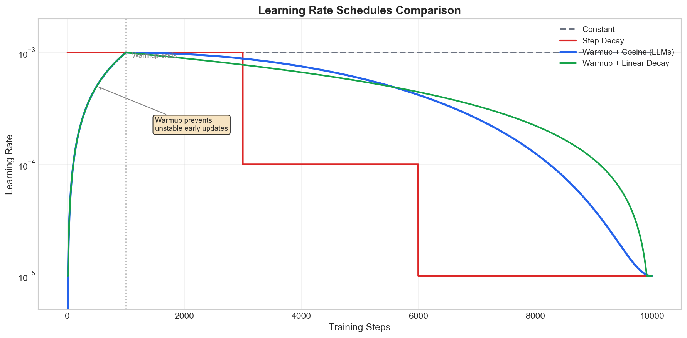 Figure: Comparison of different learning rate schedules: Step Decay, Cosine Annealing, Linear Warmup + Decay, and Exponential Decay.
Comparison
| Schedule | Best For |
|---|---|
| Step decay | CNNs, classic vision |
| Cosine | Transformers, LLMs |
| Linear decay | Fine-tuning |
5.6 Regularization: L1 and L2
A model that fits the training data perfectly may perform terribly on new data — it has overfit by memorizing noise rather than learning generalizable patterns. Regularization combats this by adding a penalty that discourages overly complex models.
The key insight is that large weights often indicate overfitting: the model is contorting itself to fit idiosyncratic training examples. By penalizing large weights, we encourage simpler models that are more likely to generalize.
L2 Regularization (Ridge / Weight Decay)
\[\text{Loss} = L_{\text{data}} + \frac{\lambda}{2} \sum_j w_j^2\]
\[\frac{\partial \text{Loss}}{\partial w_j} = \frac{\partial L}{\partial w_j} + \lambda w_j\]
Effect: Shrinks weights toward zero proportionally to their magnitude. The gradient \(\lambda w_j\) is larger for large weights, so they get penalized more. However, L2 never drives weights to exactly zero — it keeps all features, just with smaller coefficients.
L1 Regularization (Lasso)
\[\text{Loss} = L_{\text{data}} + \lambda \sum_j |w_j|\]
Effect: Pushes weights to exactly zero → sparsity and feature selection
The geometry explains why: L2’s penalty is a sphere (all directions penalized equally), while L1’s penalty is a diamond. Solutions tend to occur at corners of the constraint region, and the diamond’s corners lie on the axes — corresponding to some weights being exactly zero. This makes L1 particularly useful when you suspect many features are irrelevant.
Comparison
| Property | L1 | L2 |
|---|---|---|
| Sparsity | Yes (exact zeros) | No |
| Feature selection | Automatic | No |
| When to use | Many features, few relevant | All features useful |
5.7 Gradient Instability
Vanishing Gradients
Causes:
- Sigmoid/tanh saturation
- Deep networks with small weights
Solutions:
- ReLU activation
- Proper initialization (He, Xavier)
- Residual connections
- Batch/Layer normalization
Vanishing Gradients: The Mathematical Story (Interview Deep Dive)
Understanding why gradients vanish requires understanding the chain rule through multiple layers. This is a common interview question framed as: “Why do vanishing gradients happen? Explain mathematically.”
The Setup: Gradient Through a Deep Network
Consider a simple deep network with \(L\) layers: \[h_l = \sigma(W_l h_{l-1})\]
where \(\sigma\) is an activation function (e.g., sigmoid, tanh) and \(h_0 = x\) (input).
To compute \(\frac{\partial L}{\partial W_1}\) (gradient for the first layer), we apply the chain rule:
\[\frac{\partial L}{\partial h_1} = \frac{\partial L}{\partial h_L} \cdot \frac{\partial h_L}{\partial h_{L-1}} \cdot \frac{\partial h_{L-1}}{\partial h_{L-2}} \cdots \frac{\partial h_2}{\partial h_1}\]
Each term \(\frac{\partial h_l}{\partial h_{l-1}}\) is a Jacobian matrix.
The Jacobian of One Layer
For \(h_l = \sigma(W_l h_{l-1})\):
\[\frac{\partial h_l}{\partial h_{l-1}} = \text{diag}(\sigma'(z_l)) \cdot W_l\]
where \(z_l = W_l h_{l-1}\) (pre-activation) and \(\sigma'\) is the derivative of the activation.
The Product of Jacobians
The gradient through \(L\) layers becomes: \[\frac{\partial L}{\partial h_1} = \frac{\partial L}{\partial h_L} \cdot \prod_{l=2}^{L} \left[\text{diag}(\sigma'(z_l)) \cdot W_l\right]\]
This is a product of \(L-1\) matrices. The problem:
| If | Then | Result |
|---|---|---|
| \(\|\text{diag}(\sigma') \cdot W\| < 1\) | Product shrinks exponentially | Vanishing gradients |
| \(\|\text{diag}(\sigma') \cdot W\| > 1\) | Product grows exponentially | Exploding gradients |
Why Sigmoid/Tanh Cause Vanishing
| Activation | Derivative | Maximum Value |
|---|---|---|
| Sigmoid: \(\sigma(x) = \frac{1}{1+e^{-x}}\) | \(\sigma(x)(1-\sigma(x))\) | 0.25 (at \(x=0\)) |
| Tanh: \(\tanh(x)\) | \(1 - \tanh^2(x)\) | 1.0 (at \(x=0\)) |
For sigmoid: Even at the best case, each layer multiplies the gradient by at most 0.25. Through 10 layers: \(0.25^{10} \approx 10^{-6}\). The gradient effectively disappears!
For tanh: Better (max derivative = 1), but saturates for large \(|x|\), where \(\tanh'(x) \to 0\).
Concrete Example
With sigmoid activation and \(L = 10\) layers: - Best case (all activations at 0): gradient scaled by \(0.25^{10} \approx 10^{-6}\) - Typical case: gradient scaled by \(\approx 10^{-10}\) or smaller
Early layers receive essentially zero gradient signal — they don’t learn!
Why ReLU Helps
\[\text{ReLU}'(x) = \begin{cases} 1 & x > 0 \\ 0 & x \leq 0 \end{cases}\]
For positive activations, the gradient passes through unchanged (multiplied by 1). No exponential decay! The problem shifts to “dead neurons” where \(x \leq 0\) always, but this is less catastrophic than vanishing gradients everywhere.
Why Residual Connections Help
With residual connections: \(h_{l+1} = h_l + F(h_l, W_l)\)
The gradient becomes: \[\frac{\partial h_{l+1}}{\partial h_l} = I + \frac{\partial F}{\partial h_l}\]
Even if \(\frac{\partial F}{\partial h_l} \approx 0\), the gradient still flows through the identity \(I\). The gradient has a “highway” that bypasses the vanishing problem.
Interview Q: “Why do vanishing gradients happen? Explain mathematically.”
A: Vanishing gradients occur because backpropagation computes gradients through the chain rule, which involves multiplying Jacobians from each layer. For a layer \(h_l = \sigma(W_l h_{l-1})\), the Jacobian is \(\frac{\partial h_l}{\partial h_{l-1}} = \text{diag}(\sigma'(z_l)) \cdot W_l\).
The gradient for early layers is a product of L-1 such Jacobians. If the spectral norm of each Jacobian is less than 1 — which happens when using sigmoid (max derivative 0.25) or tanh in saturation — the product decays exponentially. For a 10-layer network with sigmoid, the gradient to layer 1 is scaled by roughly \(0.25^{10} \approx 10^{-6}\), meaning early layers receive essentially zero learning signal.
Solutions: ReLU (derivative = 1 for positive inputs, no exponential decay), residual connections (identity path bypasses the vanishing Jacobians), proper initialization (Xavier/He to keep Jacobian norms ≈ 1), and LayerNorm (prevents activations from saturating).
Follow-up Q: “Why do residual connections help with vanishing gradients?”
A: With \(h_{l+1} = h_l + F(h_l)\), the Jacobian becomes \(\frac{\partial h_{l+1}}{\partial h_l} = I + \frac{\partial F}{\partial h_l}\). Even if \(\frac{\partial F}{\partial h_l} \approx 0\) (the “learning part” vanishes), the gradient still flows through the identity matrix \(I\). This creates a “gradient highway” — the gradient can skip layers entirely rather than being forced through every transformation. This is why ResNets can train 100+ layer networks where plain networks fail after 20-30 layers.
Exploding Gradients
Causes:
- Large weights
- RNNs multiplying same matrix
Solutions:
- Gradient clipping
- Proper initialization
- LSTM/GRU gates
- Lower learning rate
Exploding Gradients: The Mathematical Story (Interview Deep Dive)
Exploding gradients are the mirror problem of vanishing gradients — same math, opposite direction.
Same Jacobian Product, Different Regime
Recall the gradient through \(L\) layers: \[\frac{\partial L}{\partial h_1} = \frac{\partial L}{\partial h_L} \cdot \prod_{l=2}^{L} \left[\text{diag}(\sigma'(z_l)) \cdot W_l\right]\]
| Spectral Norm | Effect | Problem |
|---|---|---|
| \(\|J_l\| < 1\) | Shrinks | Vanishing |
| \(\|J_l\| = 1\) | Stable | ✓ Ideal |
| \(\|J_l\| > 1\) | Grows | Exploding |
If \(\|J_l\| = 1.5\) for each layer, after 10 layers: \(1.5^{10} \approx 57\). After 50 layers: \(1.5^{50} \approx 6 \times 10^{8}\)!
Why RNNs Are Particularly Vulnerable
In feedforward networks, each layer has different weights \(W_1, W_2, \ldots, W_L\).
In RNNs, the same weight matrix \(W_{hh}\) is multiplied at every time step:
\[\frac{\partial h_T}{\partial h_1} = \prod_{t=2}^{T} \frac{\partial h_t}{\partial h_{t-1}} = \prod_{t=2}^{T} \text{diag}(\sigma'(z_t)) \cdot W_{hh}\]
If the largest eigenvalue of \(W_{hh}\) is \(\lambda_{\max} > 1\), then: \[\|(\text{diag}(\sigma') \cdot W_{hh})^T\| \approx \lambda_{\max}^T\]
For a sequence of length 100 with \(\lambda_{\max} = 1.1\): \(1.1^{100} \approx 13{,}780\)!
How to Detect Exploding Gradients
| Symptom | What You’ll See |
|---|---|
| Loss becomes NaN | loss: nan after a few iterations |
| Loss jumps wildly | 2.5 → 847 → 0.001 → inf |
| Weights become NaN | Model parameters contain nan or
inf |
| Gradient norm spikes | Monitoring shows sudden 1000× increase |
# Monitoring gradient norms during training
total_norm = 0
for p in model.parameters():
if p.grad is not None:
param_norm = p.grad.data.norm(2)
total_norm += param_norm.item() ** 2
total_norm = total_norm ** 0.5
print(f"Gradient norm: {total_norm}") # Should be stable, not explodingWhy Gradient Clipping Works
Gradient clipping bounds the gradient magnitude without changing direction:
\[g_{\text{clipped}} = \begin{cases} g & \text{if } \|g\| \leq \tau \\ \tau \cdot \frac{g}{\|g\|} & \text{if } \|g\| > \tau \end{cases}\]
This is clipping by norm — preserves gradient direction, just limits step size.
Clipping by Norm vs Clipping by Value:
| Method | Formula | Effect |
|---|---|---|
| By norm (preferred) | Scale whole gradient if \(\|g\| > \tau\) | Preserves direction |
| By value | Clip each \(g_i\) to \([-\tau, \tau]\) | Distorts direction |
# Clipping by norm (recommended)
torch.nn.utils.clip_grad_norm_(model.parameters(), max_norm=1.0)
# Clipping by value (less common)
torch.nn.utils.clip_grad_value_(model.parameters(), clip_value=1.0)Choosing the Clipping Threshold \(\tau\):
- Too small: Slows learning (gradients always clipped)
- Too large: Doesn’t prevent explosions
- Typical values: 1.0 to 5.0 (depends on model)
- Strategy: Monitor gradient norms, set \(\tau\) just above typical values
Why Proper Initialization Prevents Explosions
Xavier/Glorot (for tanh/sigmoid): \[W \sim \mathcal{N}\left(0, \frac{2}{n_{\text{in}} + n_{\text{out}}}\right)\]
He/Kaiming (for ReLU): \[W \sim \mathcal{N}\left(0, \frac{2}{n_{\text{in}}}\right)\]
These keep \(\text{Var}(h_l) \approx \text{Var}(h_{l-1})\), preventing both vanishing and exploding activations.
Interview Q: “What causes exploding gradients and how do you fix them?”
A: Exploding gradients occur when the product of Jacobians through the network has spectral norm > 1, causing gradients to grow exponentially with depth. This is especially problematic in RNNs where the same weight matrix is multiplied at every time step — if its largest eigenvalue exceeds 1, gradients explode as \(\lambda^T\) for sequence length \(T\).
Detection: Loss becomes NaN, wild loss oscillations, or gradient norm spikes.
Solutions: 1. Gradient clipping by norm — the primary defense; clip to \(\|g\| \leq \tau\) (typically 1.0-5.0) while preserving direction 2. Proper initialization — Xavier/He initialization keeps layer-wise variance stable 3. LSTM/GRU gates — learnable gates can “close” to block exploding gradients (forget gate → 0) 4. Lower learning rate — limits the damage from any single large gradient
Follow-up Q: “Why clip by norm rather than by value?”
A: Clipping by norm preserves the
direction of the gradient — all components
are scaled equally. Clipping by value treats each component
independently, which can drastically change the gradient
direction. For example, if the gradient is
[100, 1] and we clip by value to 10, we get
[10, 1] — the direction changed from
mostly-first-dimension to roughly equal. Clipping by norm
gives [10, 0.1] — same direction, just smaller
magnitude. Preserving direction is important because the
gradient direction is informative about how to decrease the
loss.
Gradient Clipping
\[g \leftarrow \min\left(1, \frac{\tau}{\|g\|}\right) \cdot g\]
torch.nn.utils.clip_grad_norm_(model.parameters(), max_norm=1.0)Residual Connections
\[h_{l+1} = h_l + F(h_l, W_l)\]
Even if \(\frac{\partial F}{\partial h_l} \approx 0\), gradient flows through the identity path!
5.8 Batch Normalization
The Problem
During training, the distribution of inputs to each layer changes as parameters update. This internal covariate shift makes training unstable and requires careful initialization and low learning rates.
The Solution: Normalize Each Layer
For a mini-batch of activations \(\{x_1, \ldots, x_m\}\):
Step 1: Compute batch statistics \[\mu_B = \frac{1}{m}\sum_{i=1}^m x_i, \quad \sigma_B^2 = \frac{1}{m}\sum_{i=1}^m (x_i - \mu_B)^2\]
Step 2: Normalize \[\hat{x}_i = \frac{x_i - \mu_B}{\sqrt{\sigma_B^2 + \epsilon}}\]
Step 3: Scale and shift (learnable) \[y_i = \gamma \hat{x}_i + \beta\]
The learnable parameters \(\gamma\) and \(\beta\) allow the network to undo the normalization if needed!
Where to Apply?
Before activation (original paper):
Linear → BatchNorm → ReLUAfter activation (sometimes used):
Linear → ReLU → BatchNormTraining vs Inference
| Phase | \(\mu\), \(\sigma^2\) | Behavior |
|---|---|---|
| Training | Batch statistics | Different each batch |
| Inference | Running average | Fixed (deterministic) |
# PyTorch tracks running statistics automatically
bn = nn.BatchNorm1d(num_features)
# Training: uses batch stats, updates running stats
model.train()
out = bn(x)
# Inference: uses stored running stats
model.eval()
out = bn(x)Benefits
Batch normalization provides several interrelated benefits:
Allows higher learning rates: Because activations are normalized, gradient magnitudes are more consistent across layers. Without BatchNorm, large activations in one layer can cause exploding gradients; BatchNorm prevents this, enabling more aggressive learning rates.
Reduces sensitivity to initialization: Poor initialization can cause activations to be too large or too small. BatchNorm rescales them to a standard range, making the network robust to initialization choices.
Regularization effect: Each mini-batch has different examples, so the batch statistics are slightly different each time. This injects noise into the activations, similar to dropout, providing implicit regularization.
Speeds up convergence: By normalizing activations, BatchNorm creates a smoother loss landscape with fewer sharp cliffs and valleys. Smoother landscapes are easier to optimize.
Batch Norm vs Layer Norm
| Batch Norm | Layer Norm | |
|---|---|---|
| Normalizes over | Batch dimension | Feature dimension |
| Best for | CNNs, large batches | RNNs, Transformers |
| Batch dependency | Yes (problematic for small batches) | No |
| Sequence data | Awkward | Natural |
Figure: Batch Normalization vs Layer Normalization. BatchNorm (left) computes mean and variance across the batch dimension for each feature (highlighted column). LayerNorm (right) computes statistics across the feature dimension for each sample independently (highlighted row). This makes LayerNorm batch-independent and suitable for variable-length sequences.
Why Transformers use LayerNorm: Batch statistics don’t make sense when batch size = 1 during generation, or when sequences have different lengths.
Interview Q: “What’s the difference between BatchNorm and LayerNorm?”
A: BatchNorm normalizes across the batch dimension for each feature, computing mean and variance over all examples in a mini-batch. LayerNorm normalizes across the feature dimension for each example independently. BatchNorm works well for CNNs but requires consistent batch sizes and doesn’t work for sequence generation where batch size is 1. LayerNorm is batch-independent, making it suitable for Transformers and variable-length sequences.
Interview Q: “What does batch normalization do and why does it help training?”
A: Batch normalization normalizes the output of a previous layer by subtracting the batch mean and dividing by the batch standard deviation, then applies learnable scale (\(\gamma\)) and shift (\(\beta\)) parameters.
Why it helps:
- Reduces internal covariate shift: Ensures the mean and variance of inputs to each layer stay consistent during training, even as earlier layer weights change.
- Constrains gradient updates: The gradient will never propose an operation that acts simply to increase the standard deviation or mean of a layer’s activations — any such change would be immediately normalized away. This forces gradients to find more meaningful updates.
- Enables higher learning rates: Since activations are normalized, gradient magnitudes are more consistent across layers.
- Implicit regularization: The noise from batch statistics acts like dropout, providing a regularization effect.
5.9 Newton’s Method (Second-Order Optimization)
The Idea
Instead of just following the gradient, use curvature information to take smarter steps.
Gradient descent: Linear approximation \[w_{t+1} = w_t - \alpha \nabla \ell(w_t)\]
Newton’s method: Quadratic approximation \[w_{t+1} = w_t - H^{-1} \nabla \ell(w_t)\]
where \(H\) is the Hessian matrix (second derivatives).
Why It’s Faster (In Theory)
Newton’s method accounts for curvature:
- In flat directions: takes larger steps
- In steep directions: takes smaller steps
- Finds the minimum in one step for quadratic functions!
Why We Don’t Use It for Deep Learning
| Problem | Impact |
|---|---|
| Computing Hessian | \(O(n^2)\) memory for \(n\) parameters |
| Inverting Hessian | \(O(n^3)\) time |
| Non-convexity | Can diverge at saddle points |
| Stochasticity | Noisy gradients → noisy Hessian |
For a 7B parameter model: Hessian would need \((7 \times 10^9)^2 = 5 \times 10^{19}\) floats!
Approximations Used in Practice
| Method | Approximation |
|---|---|
| Adam | Diagonal approximation (\(1/\sqrt{v}\) ≈ curvature) |
| L-BFGS | Low-rank Hessian approximation |
| K-FAC | Kronecker-factored curvature |
| Shampoo | Block-diagonal approximation |
Interview Q: “Why don’t we use Newton’s method for neural networks?”
A: The Hessian matrix for neural networks has billions of parameters, making it impossible to compute (\(O(n^2)\) memory) or invert (\(O(n^3)\) time). Additionally, neural network loss landscapes are non-convex with many saddle points where Newton’s method can diverge. Instead, we use approximations: Adam’s second moment provides a diagonal estimate of curvature, while methods like K-FAC and Shampoo use block-diagonal or Kronecker approximations for better conditioning.
Part 6: Sequence Models
6.1 Recurrent Neural Networks (RNNs)
The Problem: Variable-Length Sequences
Feedforward networks require fixed-size inputs — if you train a network to classify 100-dimensional vectors, every input must be exactly 100 dimensions. But real-world sequential data doesn’t work that way. A tweet might be 10 words, a news article 500 words, and a novel millions of words. Audio clips vary in duration, and time series like stock prices or sensor readings stream indefinitely.
Naive solutions fail: - Truncation: Cutting sequences to a fixed length loses information (what if the key insight is in word 101?) - Padding: Adding zeros to reach a fixed length wastes computation and can confuse the model - Bag of words: Throwing away order loses meaning (“dog bites man” ≠ “man bites dog”)
The fundamental insight of RNNs is that we need an architecture that can process sequences one element at a time, maintaining a running summary of what it has seen so far. This summary — called the hidden state — acts as the network’s memory.
RNN Architecture
x₁ ──→ [RNN] ──→ h₁ ──→ [RNN] ──→ h₂ ──→ [RNN] ──→ h₃
↑ ↑ ↑
└───────────────┴───────────────┘
Same weights!Forward Pass
At each time step \(t\), the RNN takes two inputs: the current element \(x_t\) and the previous hidden state \(h_{t-1}\). It combines them to produce a new hidden state \(h_t\), which serves both as the output and as the memory passed to the next step:
\[h_t = \tanh(W_{xh} x_t + W_{hh} h_{t-1} + b_h)\]
\[y_t = W_{hy} h_t + b_y\]
Parameter sharing is the key insight: The same weight matrices \(W_{xh}\), \(W_{hh}\) are applied at every time step. This is what makes RNNs handle variable-length sequences — whether your input has 5 tokens or 500, the same parameters process each step. This is analogous to how a CNN applies the same filter across all spatial positions. Parameter sharing also provides a form of regularization and reduces the total number of parameters dramatically (imagine needing separate weights for position 1, position 2, … position 1000!).
The hidden state \(h_t\) acts as a compressed summary of everything the network has seen up to time \(t\). Theoretically, it encodes “I’ve seen x₁, then x₂, …, up to xₜ” in a fixed-size vector. In practice, this compression is lossy, especially for long sequences — one of the key limitations that LSTMs and attention mechanisms address.
Backpropagation Through Time (BPTT)
Unroll the network and apply standard backprop:
\[\frac{\partial L}{\partial W_{hh}} = \sum_{t=1}^{T} \frac{\partial L_t}{\partial W_{hh}}\]
Each term involves: \[\frac{\partial h_t}{\partial h_{t-1}} = W_{hh}^T \cdot \text{diag}(\tanh'(z_{t-1}))\]
The Vanishing Gradient Problem
\[\frac{\partial h_T}{\partial h_1} = \prod_{t=2}^{T} \frac{\partial h_t}{\partial h_{t-1}}\]
If \(\|W_{hh}\| < 1\) or \(\tanh'\) is small: gradients vanish exponentially!
For sequence of length 100: \((0.9)^{100} \approx 0.00003\)
Interview Q: “Why do RNNs struggle with long sequences?”
A: Due to vanishing gradients. The gradient flows backward through time via repeated multiplication of the weight matrix. If eigenvalues < 1, gradients vanish exponentially. If > 1, they explode. This makes it hard to learn long-range dependencies because early time steps get negligible gradient signal.
Teacher Forcing
The Problem: During training, if the model makes an error at time \(t\), that error propagates to all future steps. Early in training, errors compound catastrophically.
The Solution: Teacher forcing feeds the ground-truth token at time \(t\) as input for time \(t+1\), instead of the model’s own prediction.
Without teacher forcing: With teacher forcing:
x₁ → [RNN] → ŷ₁ x₁ → [RNN] → ŷ₁
↓ ↓
ŷ₁ → [RNN] → ŷ₂ (error!) y₁ → [RNN] → ŷ₂ (correct input!)
↓ ↓
ŷ₂ → [RNN] → ŷ₃ (worse!) y₂ → [RNN] → ŷ₃ (correct input!)Benefits:
- Faster convergence (no error accumulation)
- More stable training
- Easier to parallelize (all inputs known)
The Exposure Bias Problem:
At inference time, we don’t have ground-truth — we must use our own predictions. The model has never seen its own mistakes during training!
Solutions:
- Scheduled sampling: Gradually decrease teacher forcing probability during training
- Curriculum learning: Start with teacher forcing, transition to self-generated
- Beam search: Explore multiple hypotheses at inference
# Scheduled sampling
def get_teacher_forcing_prob(epoch, decay=0.05):
return max(0.0, 1.0 - epoch * decay)
# During training
for t in range(seq_len):
if random.random() < teacher_forcing_prob:
input_t = ground_truth[t] # Teacher forcing
else:
input_t = model_output[t-1] # Use own predictionInterview Q: “What is teacher forcing and what’s its drawback?”
A: Teacher forcing trains sequence models by feeding ground-truth tokens as inputs instead of model predictions. This speeds up training by preventing error accumulation, but creates exposure bias: the model only sees perfect inputs during training but must use its own (potentially wrong) predictions at inference. Solutions include scheduled sampling (gradually reducing teacher forcing) and beam search at inference.
6.2 LSTM and GRU
LSTM (Long Short-Term Memory)
The vanilla RNN’s fatal flaw is that information must pass through many multiplicative transformations. Over 50 or 100 steps, useful gradients either vanish to zero or explode to infinity. LSTMs solve this with a elegant architectural insight: create a highway for information to flow unchanged.
Key idea: Add a cell state \(c_t\) — a separate memory channel that can preserve information over long distances. Unlike the hidden state which is transformed at every step, the cell state flows through time with only additive modifications, controlled by learned gates. Think of it as a conveyor belt running above the main network: information can be placed on the belt, read from the belt, or removed from the belt, but the belt itself moves smoothly without the repeated squashing that kills gradients.
 Figure: LSTM cell
architecture showing the cell state highway (top), three
gates (forget, input, output), and hidden state flow. The
cell state acts as a “conveyor belt” for long-term memory.
(Source: Christopher
Olah’s “Understanding LSTMs”)
Figure: LSTM cell
architecture showing the cell state highway (top), three
gates (forget, input, output), and hidden state flow. The
cell state acts as a “conveyor belt” for long-term memory.
(Source: Christopher
Olah’s “Understanding LSTMs”)
The Three Gates:
| Gate | Purpose | Output Range | Controls |
|---|---|---|---|
| Forget Gate (\(f_t\)) | What to erase from cell state | [0, 1] | \(f_t = 0\) → forget everything |
| Input Gate (\(i_t\)) | What new info to add | [0, 1] | \(i_t = 0\) → add nothing new |
| Output Gate (\(o_t\)) | What to output to hidden state | [0, 1] | \(o_t = 0\) → output nothing |
LSTM Equations
Forget gate: What to remove from cell state \[f_t = \sigma(W_f [h_{t-1}, x_t] + b_f)\]
Input gate: What new info to add \[i_t = \sigma(W_i [h_{t-1}, x_t] + b_i)\]
\[\tilde{c}_t = \tanh(W_c [h_{t-1}, x_t] + b_c)\]
Cell state update: \[c_t = f_t \odot c_{t-1} + i_t \odot \tilde{c}_t\]
Output gate: What to output \[o_t = \sigma(W_o [h_{t-1}, x_t] + b_o)\]
\[h_t = o_t \odot \tanh(c_t)\]
Why LSTM Solves Vanishing Gradients
The cell state update is the magic: \[c_t = f_t \odot c_{t-1} + i_t \odot \tilde{c}_t\]
Notice this is addition, not multiplication followed by nonlinearity. The gradient flowing backward through time sees: \[\frac{\partial c_t}{\partial c_{t-1}} = f_t\]
Compare this to vanilla RNN where \(\frac{\partial h_t}{\partial h_{t-1}} = W_{hh}^T \cdot \text{diag}(\tanh')\) — a matrix multiplication followed by element-wise scaling by the tanh derivative (which is < 1 and often much smaller).
In LSTM, if the forget gate \(f_t \approx 1\) (meaning “remember everything”), the gradient flows through almost unchanged! The network can learn to keep the forget gate high for important long-term information, creating an unobstructed gradient highway spanning hundreds of time steps.
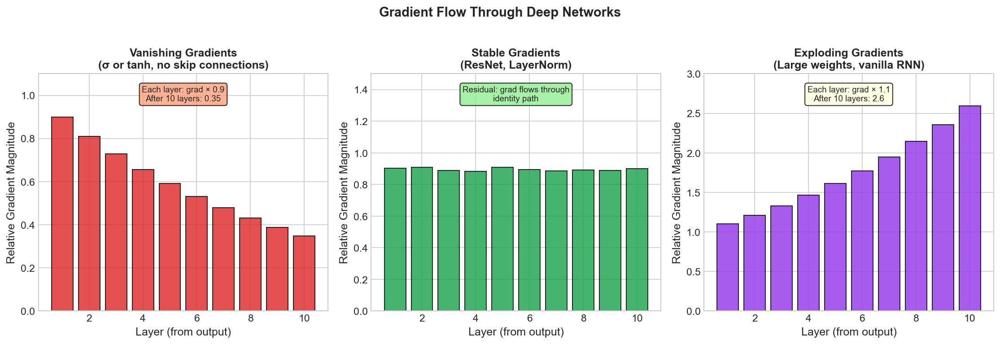 Figure: Comparison of gradient flow in vanilla RNN vs LSTM. The LSTM’s cell state provides a highway for gradients.
GRU (Gated Recurrent Unit)
Researchers asked: “Do we really need three separate gates and a separate cell state? Can we get similar benefits with a simpler design?” The GRU answers yes — it achieves comparable performance to LSTM with fewer parameters and faster training by combining the forget and input gates into a single update gate, and merging the cell state into the hidden state.
The design philosophy is minimalism: what’s the simplest gating mechanism that still solves vanishing gradients? GRU uses just 2 gates instead of 3:
 Figure: GRU cell architecture
showing the two gates (reset and update). GRU combines the
forget and input gates into a single update gate, making it
simpler and faster to train. (Source: Christopher
Olah’s “Understanding LSTMs”)
Figure: GRU cell architecture
showing the two gates (reset and update). GRU combines the
forget and input gates into a single update gate, making it
simpler and faster to train. (Source: Christopher
Olah’s “Understanding LSTMs”)
The Two Gates:
| Gate | Purpose | Equation |
|---|---|---|
| Update Gate (\(z_t\)) | How much to update hidden state | \(z_t = \sigma(W_z [h_{t-1}, x_t])\) |
| Reset Gate (\(r_t\)) | How much past to forget when computing candidate | \(r_t = \sigma(W_r [h_{t-1}, x_t])\) |
GRU Equations:
\[z_t = \sigma(W_z [h_{t-1}, x_t]) \quad \text{(update gate)}\]
\[r_t = \sigma(W_r [h_{t-1}, x_t]) \quad \text{(reset gate)}\]
\[\tilde{h}_t = \tanh(W [r_t \odot h_{t-1}, x_t]) \quad \text{(candidate)}\]
\[h_t = (1 - z_t) \odot h_{t-1} + z_t \odot \tilde{h}_t \quad \text{(interpolate)}\]
Intuition: The update gate \(z_t\) acts like a “slider” between keeping the old hidden state (\(z_t = 0\)) and using the new candidate (\(z_t = 1\)). The reset gate controls how much history to use when computing the candidate.
LSTM vs GRU
| Aspect | LSTM | GRU |
|---|---|---|
| Parameters | More | Fewer |
| Gates | 3 (forget, input, output) | 2 (reset, update) |
| Cell state | Separate \(c_t\) | Combined in \(h_t\) |
| Performance | Slightly better on some tasks | Often comparable |
| Training speed | Slower | Faster |
Rule of thumb: Try GRU first (faster), switch to LSTM if needed.
Bidirectional RNNs
Problem: Standard RNNs only see past context. But sometimes future context matters!
"The man who was wearing a red [MASK] walked into the store"
↑
Need future context to predict "shirt" vs "hat"Solution: Run two RNNs — one forward, one backward — and concatenate:
Forward: x₁ → [→] → h₁→ → [→] → h₂→ → [→] → h₃→
↓ ↓ ↓
Output: [h₁→;h₁←] [h₂→;h₂←] [h₃→;h₃←]
↑ ↑ ↑
Backward: x₁ ← [←] ← h₁← ← [←] ← h₂← ← [←] ← h₃←\[h_t = [h_t^{\rightarrow}; h_t^{\leftarrow}]\]
When to use:
| Use Bidirectional | Use Unidirectional |
|---|---|
| Classification (sentiment) | Generation (text, speech) |
| Named Entity Recognition | Language modeling |
| Machine translation (encoder) | Chatbots |
| Question answering | Real-time streaming |
Connection to BERT: BERT’s “bidirectional” comes from this concept — it sees full context in both directions (though via attention, not RNN).
Interview Q&A: LSTM and GRU
Q: “How does LSTM solve the vanishing gradient problem?”
A: LSTM adds a cell state with a linear self-connection: \(c_t = f_t \odot c_{t-1} + i_t \odot \tilde{c}_t\). The key is the additive update (not multiplicative). Gradients can flow through the cell state without exponential decay. The forget gate \(f_t\) controls what to keep, but even with \(f_t < 1\), the gradient path is much more stable than vanilla RNN’s purely multiplicative path.
Q: “What’s the difference between LSTM and GRU? When would you use each?”
A: LSTM has 3 gates (forget, input, output) and a separate cell state. GRU has 2 gates (reset, update) and no separate cell state. GRU is simpler, faster to train, and has fewer parameters. Use GRU as default — it’s often equally good. Use LSTM for tasks requiring fine-grained memory control or when you have more data and compute.
Q: “What does each LSTM gate do?”
A:
- Forget gate (\(f_t\)): Decides what to erase from cell state. \(f_t = 0\) means forget everything.
- Input gate (\(i_t\)): Decides how much new info to add. \(i_t = 0\) means add nothing.
- Output gate (\(o_t\)): Decides what part of cell state to output. \(o_t = 0\) means output nothing.
Think of it as: forget old → add new → decide what to share.
Q: “Why might gradients still vanish in LSTM?”
A: If the forget gate \(f_t\) is consistently close to 0, information gets erased quickly. Also, gradients through the output path (not the cell state) can still vanish. The cell state helps but doesn’t completely eliminate the problem for very long sequences (1000+ steps).
6.3 Seq2Seq and Attention (Pre-Transformer)
The sequence-to-sequence (seq2seq) paradigm, introduced by Sutskever et al. in 2014, was revolutionary. Before seq2seq, neural approaches to machine translation were limited to fixed-length inputs and outputs, or required complex architectures for each specific language pair. Seq2seq proposed something elegant: use one RNN to encode the input into a vector, and another to decode that vector into the output. This encoder-decoder framework became the foundation for modern neural machine translation and later influenced the Transformer architecture.
The Seq2Seq Architecture
Problem: Map variable-length input to variable-length output (translation, summarization).
Encoder: "I love cats" → [LSTM] → [LSTM] → [LSTM] → context vector
↓
Decoder: [LSTM] → [LSTM] → [LSTM]
↓ ↓ ↓
"J'aime" "les" "chats"The Bottleneck Problem: The entire input must be compressed into a single fixed-size context vector. This fails for long sequences!
Attention: The Core Intuition
Before diving into equations, let’s understand what attention does intuitively. The fundamental insight is simple: when generating each output word, let the model learn WHERE to look in the input.
Consider translating “I love cats” → “J’aime les chats”:
- When generating “J’aime” (French for “I love”), the model should focus on “I” and “love”
- When generating “chats” (French for “cats”), the model should focus on “cats”
- The word “les” (the plural article) depends on “cats” being plural
Without attention, all this information must squeeze through a single fixed-size vector. With attention, the decoder can dynamically shift its focus to different parts of the input at each generation step.
The metaphor: Imagine reading a foreign text with a highlighter. For each word you write in the translation, you highlight the relevant source words. Attention learns to do this highlighting automatically.
Attention: Looking Back at the Encoder
Key insight: Instead of one context vector, let the decoder look at all encoder states and decide which are relevant.
Bahdanau Attention (Additive):
\[e_{ij} = v^T \tanh(W_s s_{i-1} + W_h h_j)\]
\[\alpha_{ij} = \frac{\exp(e_{ij})}{\sum_k \exp(e_{ik})}\]
\[c_i = \sum_j \alpha_{ij} h_j\]
where:
- \(s_{i-1}\) = decoder hidden state at step \(i-1\)
- \(h_j\) = encoder hidden state at position \(j\)
- \(\alpha_{ij}\) = attention weight (how much to attend to encoder position \(j\))
- \(c_i\) = context vector for decoder step \(i\)
Luong Attention (Multiplicative, simpler):
\[e_{ij} = s_i^T W h_j \quad \text{or} \quad e_{ij} = s_i^T h_j\]
Step-by-Step: Attention in Translation
Let’s trace through attention for translating “I love cats” → “J’aime les chats”:
Step 1: Encoder processes source sentence
The encoder (an LSTM) processes each source word, producing hidden states:
"I" → h₁ = [0.2, -0.1, 0.5, ...] ← encodes "I" + context
"love" → h₂ = [0.4, 0.3, -0.2, ...] ← encodes "I love"
"cats" → h₃ = [-0.1, 0.6, 0.3, ...] ← encodes "I love cats"Step 2: Decoder generates “J’aime” (step i=1)
The decoder has hidden state \(s_0\) (initialized from encoder). Now it must generate the first French word.
Compute attention scores:
e₁₁ = score(s₀, h₁) = 0.8 ← "I" is relevant
e₁₂ = score(s₀, h₂) = 0.9 ← "love" is very relevant
e₁₃ = score(s₀, h₃) = 0.2 ← "cats" less relevant for "J'aime"Apply softmax to get weights:
α₁ = softmax([0.8, 0.9, 0.2]) = [0.35, 0.42, 0.23]Compute context vector (weighted sum of encoder states):
c₁ = 0.35·h₁ + 0.42·h₂ + 0.23·h₃Generate output: The decoder uses \(c_1\) along with \(s_0\) to generate “J’aime”.
Step 3: Decoder generates “chats” (step i=3)
Now the decoder is generating the third word. Its current state \(s_2\) encodes “J’aime les”.
Compute attention scores:
e₃₁ = score(s₂, h₁) = 0.1 ← "I" not relevant now
e₃₂ = score(s₂, h₂) = 0.2 ← "love" not relevant now
e₃₃ = score(s₂, h₃) = 0.95 ← "cats" is exactly what we need!Apply softmax:
α₃ = softmax([0.1, 0.2, 0.95]) = [0.15, 0.18, 0.67]The model has learned to focus heavily on “cats” when generating “chats”!
Attention as Soft Alignment
One of the most beautiful aspects of attention is its interpretability. The attention weights \(\alpha_{ij}\) form an alignment matrix that shows which source words the model “looks at” when generating each target word.
Source: I love cats
↓ ↓ ↓
Target: J'aime [0.35 0.42 0.23] ← looks at "I" and "love"
les [0.15 0.25 0.60] ← looks at "cats" (plural marker)
chats [0.10 0.15 0.75] ← looks at "cats"This alignment emerges automatically from training — no one labeled which words should align! The model discovers that: - Subject pronouns align across languages (“I” → “J’aime”) - Verbs align with their translations (“love” → “J’aime”) - Nouns align with their translations (“cats” → “chats”) - Grammatical markers can look at content words (“les” checks “cats” is plural)
Why this matters: 1. Debugging: If translations are wrong, inspect attention to see what the model focused on 2. Trust: Humans can verify the model is making decisions for reasonable reasons 3. Linguistic insight: Attention patterns reveal how languages relate
Why Attention Works (Summary)
- No bottleneck: Instead of squeezing everything through one vector, the decoder accesses all encoder states
- Dynamic focus: Different output positions look at different input positions
- Interpretable alignment: Attention weights show what the model is “thinking about”
- Better gradient flow: Gradients flow directly from decoder to relevant encoder positions
From Seq2Seq Attention to Self-Attention
The attention mechanism we’ve described is cross-attention: the decoder (one sequence) attends to the encoder (a different sequence). The Transformer’s key innovation was asking: what if a sequence attended to itself?
Cross-attention (seq2seq): - Query: decoder hidden state (“what French word am I generating?”) - Keys/Values: encoder hidden states (“what did the English say?”) - Different sequences interact
Self-attention (Transformer): - Query, Keys, Values: all from the same sequence - Each position can attend to every other position - “The cat sat” → “cat” can directly see “sat” and “The”
This seemingly simple change has profound implications: - No recurrence needed: All positions can be processed in parallel - Direct long-range connections: Position 1 can directly attend to position 1000 - Richer representations: Each position’s representation incorporates information from all other positions
The Transformer is essentially “attention all the way down” — self-attention replaces the RNN entirely, with attention doing the heavy lifting of modeling dependencies between positions.
This is the Foundation for Transformers!
Transformer attention is essentially the same idea, but:
- Applied to self-attention (each position attends to all positions)
- No recurrence — purely attention-based
- Parallel computation
6.4 Transformers
Why Transformers?
The Transformer, introduced in the landmark “Attention Is All You Need” paper (Vaswani et al., 2017), represents a fundamental paradigm shift: instead of processing sequences step-by-step, process all positions simultaneously and let attention handle the dependencies between positions.
This shift matters for three reasons:
RNN limitations:
- Sequential processing → can’t parallelize: To compute \(h_{100}\), you must first compute \(h_1, h_2, \ldots, h_{99}\). On modern GPUs with thousands of cores, this is like having a 1000-lane highway where only 1 car can drive at a time.
- Long-range dependencies still difficult: Even LSTMs struggle beyond a few hundred tokens. The hidden state is a fixed-size bottleneck through which all information must flow.
- Fixed-size hidden state bottleneck: Everything the model “knows” about positions 1-99 must fit in a single vector when processing position 100.
Transformer solution:
- Attention creates direct connections: Position 100 can directly attend to position 1 — no need to pass information through 99 intermediate hidden states. It’s like every word can “see” every other word directly.
- Parallel processing of all positions: All attention computations for positions 1-100 can happen simultaneously. On GPUs, this translates to massive speedups during training.
- No recurrence needed: The sequential bottleneck is eliminated entirely. Training time scales much better with sequence length.
The result? Transformers train faster, scale to longer sequences, and achieve better performance. This is why every major language model since 2018 (BERT, GPT, T5, LLaMA) uses the Transformer architecture.
Self-Attention vs Cross-Attention
| Type | Q comes from | K, V come from | Used in |
|---|---|---|---|
| Self-Attention | Same sequence | Same sequence | Encoder, decoder |
| Cross-Attention | Decoder | Encoder | Encoder-decoder models |
Self-attention: Each token attends to all tokens in the same sequence
"The cat sat" → Q, K, V all from same sentence
Each word can attend to every other wordCross-attention: Decoder attends to encoder outputs
Encoder: "I love cats" → K, V
Decoder: "J'aime" → Q
Q attends to encoder K,V to find relevant source wordsWorked Example: Attention Computation
Let’s compute attention for a sequence of 3 tokens with \(d_k = 4\):
Input embeddings \(X\) (3×4):
X = [[1, 0, 1, 0], ← "The"
[0, 1, 1, 0], ← "cat"
[1, 1, 0, 1]] ← "sat"Each row is a token’s embedding — a vector capturing its meaning in a learned semantic space.
Step 1: Project to Q, K, V (using weight matrices)
Q = X @ W_Q K = X @ W_K V = X @ W_VWhy three separate projections? The same word plays different roles depending on context:
- Query (Q): “What information am I looking for?” — When “sat” is processed, its query might emphasize features that help find the subject (who sat?).
- Key (K): “What information do I offer to others?” — “cat” might project keys that advertise “I’m a noun, I can be a subject.”
- Value (V): “What content do I contribute if selected?” — The actual semantic information passed forward.
If Q, K, V were identical, the model couldn’t distinguish between “asking a question” and “providing an answer.” The learned weight matrices \(W_Q\), \(W_K\), \(W_V\) let each token project itself into these different functional roles.
Step 2: Compute attention scores \(QK^T\)
scores = Q @ K.T / sqrt(4) # (3×3) matrixWhat’s happening: The dot product \(q_i \cdot k_j\) measures how well query \(i\) matches key \(j\): - High dot product → vectors point in similar directions → token \(j\) is relevant to token \(i\) - Low/negative dot product → vectors point away → not relevant
The result is a (3×3) matrix where
scores[i][j] = “how much should token \(i\) attend to token \(j\)?”
Why divide by \(\sqrt{d_k}\)? Without scaling, dot products grow with dimension (variance = \(d_k\)). For \(d_k = 64\), scores would be ~8× larger, causing softmax to saturate (output nearly one-hot, gradients vanish). Dividing by \(\sqrt{d_k}\) keeps scores in a reasonable range.
Step 3: Apply softmax row-wise
weights = softmax(scores, dim=-1) # Each row sums to 1Why softmax? Convert raw scores into a probability distribution: - All weights become positive - Each row sums to 1 (attention weights are “how much” to attend) - Differentiable for backpropagation
Row-wise because each token gets its own attention pattern — “sat” might attend heavily to “cat”, while “The” might attend mostly to itself.
Step 4: Weighted sum of values
output = weights @ V # (3×4) outputThe core operation: Each token’s new representation is a blend of all tokens’ values, weighted by relevance:
\[\text{output}_i = \sum_j \text{weights}_{ij} \cdot V_j\]
For “sat”:
output[2] = 0.2 × V["The"] + 0.3 × V["cat"] + 0.5 × V["sat"]
This means “sat”’s output now incorporates context — it “knows” that a cat is the subject. This context-mixing is what makes attention powerful.
Concrete numbers (simplified):
scores = [[1.2, 0.3, 0.5], softmax→ [[0.6, 0.2, 0.2],
[0.4, 1.1, 0.5], ──────→ [0.2, 0.5, 0.3],
[0.3, 0.6, 1.0]] [0.2, 0.3, 0.5]]Interpreting the attention weights: - Row 1: “The” attends mostly to itself (0.6) — function words often self-attend - Row 2: “cat” attends mostly to itself (0.5) — nouns carry their own meaning - Row 3: “sat” attends to itself (0.5) and “cat” (0.3) — the verb finds its subject!
The model learns these patterns from data. After training, verbs naturally attend to subjects, pronouns attend to their referents, and adjectives attend to nouns they modify.
Self-Attention Mechanism
Key idea: For each position, compute a weighted sum of all other positions based on relevance.
Queries, Keys, Values: \[Q = XW_Q, \quad K = XW_K, \quad V = XW_V\]
Attention scores: \[\text{Attention}(Q, K, V) = \text{softmax}\left(\frac{QK^T}{\sqrt{d_k}}\right)V\]
Step-by-Step Attention
- Query: “What am I looking for?”
- Key: “What do I contain?”
- Dot product \(QK^T\): How relevant is each key to each query?
- Scale by \(\sqrt{d_k}\): Prevent large values from dominating softmax
- Softmax: Convert to probabilities (attention weights)
- Multiply by V: Weighted sum of values
Figure: Visualization of attention weights showing how different tokens attend to each other in a sentence.
Example: “The cat sat on the mat”
For the word “sat”, attention might give high weights to:
- “cat” (subject performing the action)
- “mat” (related location)
And low weights to:
- “The” (not semantically important)
Why Scale by \(\sqrt{d_k}\)? (Deep Dive)
This seemingly minor detail — dividing by \(\sqrt{d_k}\) — is actually crucial for training stability. Let’s understand why through both math and numerical examples.
The Problem: Softmax Saturation
Softmax has a nasty property: when inputs get large, it saturates — the output becomes nearly one-hot, and gradients become tiny. This is similar to how sigmoid saturates for large inputs.
Consider softmax on two sets of inputs:
softmax([1, 2, 3]) = [0.09, 0.24, 0.67] ← smooth distribution
softmax([10, 20, 30]) = [0.00, 0.00, 1.00] ← saturated!In the saturated case, the gradient with respect to the largest input is nearly 0, and training stalls.
Why Do Attention Scores Get Large?
When we compute \(q \cdot k = \sum_{i=1}^{d_k} q_i k_i\), we’re summing \(d_k\) terms. If each \(q_i, k_i \sim \mathcal{N}(0, 1)\):
- Each product \(q_i k_i\) has mean 0 and variance 1
- The sum of \(d_k\) independent terms has variance \(d_k\) (variances add)
- So \(q \cdot k\) has standard deviation \(\sqrt{d_k}\)
Numerical example with \(d_k = 64\):
q = [0.5, -0.3, 0.8, ..., -0.2] ← 64 random values
k = [0.2, 0.7, -0.4, ..., 0.6] ← 64 random values
q · k ≈ 8.5 ← typical magnitude is √64 = 8With 64 dimensions, dot products naturally have magnitude ~8. After applying softmax to a matrix of such values, we get severe saturation.
The Solution: Scale Down
Dividing by \(\sqrt{d_k}\) normalizes the variance back to 1: \[\text{Var}\left(\frac{q \cdot k}{\sqrt{d_k}}\right) = \frac{\text{Var}(q \cdot k)}{d_k} = \frac{d_k}{d_k} = 1\]
Before scaling (typical values with \(d_k = 64\)):
scores = [8.5, 7.2, -6.1, 9.3, ...]
softmax → [0.02, 0.01, 0.00, 0.97, ...] ← nearly one-hot!After scaling by \(\sqrt{64} = 8\):
scores/8 = [1.06, 0.90, -0.76, 1.16, ...]
softmax → [0.28, 0.24, 0.05, 0.31, ...] ← smooth distributionThe scaled version has gradients that flow well; the unscaled version essentially picks one key and ignores the rest.
Why √d_k and Not Some Other Value?
The choice of \(\sqrt{d_k}\) isn’t arbitrary — it’s derived from the statistics of the dot product:
- If entries are unit variance, sum of \(n\) terms has variance \(n\)
- Standard deviation is \(\sqrt{n}\)
- Dividing by \(\sqrt{n}\) normalizes to unit variance
This is the same principle behind Xavier/Glorot initialization — keeping variances stable across layers.
Interview Q: “Why do we divide by √d_k in attention?”
A: The dot product \(q \cdot k\) sums \(d_k\) terms. If each term has unit variance, the sum has variance \(d_k\), meaning typical values grow like \(\sqrt{d_k}\). For \(d_k = 64\), dot products are ~8x larger than expected. These large values cause softmax to saturate (become nearly one-hot), killing gradients. Dividing by \(\sqrt{d_k}\) normalizes the variance back to 1, keeping softmax in its smooth regime where gradients flow properly.
Multi-Head Attention
Why Multiple Heads? The Orchestra Analogy
A single attention head is like having one spotlight on a stage — it can only illuminate one relationship at a time. But understanding language requires tracking many relationships simultaneously. Consider the sentence:
“The cat that the dog chased ran away.”
To fully understand this, you need to track: - Subject-verb: “cat” → “ran” (the cat is the one running) - Object-verb: “cat” → “chased” (the cat was chased) - Relative clause: “that” → “chased” (what the relative clause is about) - Agent: “dog” → “chased” (the dog did the chasing)
A single attention head struggles to capture all these patterns at once — it might focus on subject-verb and miss the agent relationship. Multi-head attention solves this by running multiple attention functions in parallel, each with its own learned projections.
The Formula
\[\text{MultiHead}(Q, K, V) = \text{Concat}(\text{head}_1, \ldots, \text{head}_h)W_O\]
where \(\text{head}_i = \text{Attention}(QW_Q^i, KW_K^i, VW_V^i)\)
Each head \(i\) has its own projection matrices \(W_Q^i\), \(W_K^i\), \(W_V^i\). This is crucial — different projections mean each head learns to look for different patterns in the same input.
What Do Different Heads Actually Learn?
Research analyzing transformer heads has found remarkable specialization:
| Head Type | What It Learns | Example |
|---|---|---|
| Positional Head | Attends to adjacent tokens | “the” → next word, previous word |
| Syntactic Head | Subject-verb agreement | “dogs” → “run” (plural match) |
| Coreference Head | Pronoun resolution | “John said he…” → “he” attends to “John” |
| Semantic Head | Related concepts | “doctor” → “patient”, “hospital” |
| Copy Head | Rare/proper nouns | Names, technical terms repeated |
Worked Example: “The programmer who wrote the code debugged it.”
Head 1 (Syntactic): "debugged" strongly attends to "programmer" (subject)
Head 2 (Coreference): "it" strongly attends to "code" (referent)
Head 3 (Local): "the" attends to "code" (adjacent)
Head 4 (Semantic): "debugged" attends to "code" (related concept)Each head produces a 64-dimensional output. Concatenating 8 heads gives 512 dimensions, which \(W_O\) projects back to \(d_{model}\).
Why Not Just Use One Big Head?
You might wonder: “Why 8 heads of dimension 64 instead of 1 head of dimension 512?”
Diversity: Multiple smaller subspaces can learn diverse patterns. One big head tends to collapse to a single dominant pattern.
Specialization: Empirically, heads specialize. Ablation studies show different heads contribute to different tasks.
Computational parity: The total computation is the same! \(8 \times 64 \times 64 = 1 \times 512 \times 64\) (roughly). But multiple heads give more representational power.
Redundancy for robustness: If one head learns a noisy pattern, others can compensate. Dropout on heads during training encourages this.
Dimensions:
- \(d_{model}\) = 512 (model dimension)
- \(h\) = 8 (number of heads)
- \(d_k = d_v = d_{model}/h = 64\) (per-head dimension)
Attention Variants (Modern)
| Variant | What it does | Memory | Speed |
|---|---|---|---|
| Multi-Head (MHA) | Separate K,V per head | High | Baseline |
| Multi-Query (MQA) | Shared K,V across heads | Low | Fast |
| Grouped-Query (GQA) | Groups share K,V | Medium | Medium |
Why this matters: K,V caching for inference. GQA (used in LLaMA 2) is a good middle ground.
Positional Encoding
Here’s a subtle but critical problem: attention computes \(\text{softmax}(QK^T)V\), which is a weighted sum over all positions. But weighted sums don’t know about order — if you shuffle the input tokens, the attention output changes, but the mechanism treats position 1 and position 100 identically. Mathematically, attention is permutation equivariant: swapping inputs swaps outputs in the same way, but the model can’t distinguish “The cat sat on the mat” from “mat the on sat cat The” without help.
This is a problem because word order matters enormously: “dog bites man” and “man bites dog” have opposite meanings!
The solution: Explicitly inject positional information by adding a positional encoding to each token’s embedding before feeding it to the Transformer.
The original Transformer uses sinusoidal functions: \[PE_{(pos, 2i)} = \sin\left(\frac{pos}{10000^{2i/d}}\right)\]
\[PE_{(pos, 2i+1)} = \cos\left(\frac{pos}{10000^{2i/d}}\right)\]
Why sinusoidal encodings are clever:
Extrapolation: Unlike learned embeddings which fail on unseen positions, sinusoids are defined for any position. A model trained on sequences of length 512 can theoretically process length 1024.
Relative positions via linear transformation: For any fixed offset \(k\), the encoding at position \(pos + k\) can be expressed as a linear transformation of the encoding at \(pos\). This means the model can learn to compute “what’s 3 positions ahead?” through attention weights.
Multi-scale patterns: Different dimensions correspond to different frequencies — some dimensions change every position (high frequency), others change slowly over hundreds of positions (low frequency). This creates a rich representation where nearby positions are similar but distinguishable.
Rotary Position Embedding (RoPE)
Modern transformers (LLaMA, Qwen, Mistral) use RoPE instead of absolute positional encodings. To understand why RoPE is elegant, let’s build up the intuition step by step.
The Clock Analogy: Why Rotation Encodes Position
Imagine a clock. When the hour hand points to 3, you immediately know 3 hours have passed since midnight. The hand’s angle encodes the time. This is exactly how RoPE works — position is encoded by rotation angle.
But a single clock hand can only distinguish 12 positions before wrapping around. What if you need to tell apart positions 1 vs 1001? This is where RoPE’s genius lies: multiple clock hands rotating at different speeds.
Think of it as having:
- A fast hand that completes a full rotation every 10 positions (fine-grained: distinguishes position 1 from position 2)
- A medium hand that rotates once per 100 positions (medium-grained)
- A slow hand that rotates once per 10,000 positions (coarse-grained: distinguishes position 100 from position 10,000)
Together, these hands create a unique “time signature” for every position — just like combining hours, minutes, and seconds gives unique times throughout the day.
2D Rotation: The Building Block
RoPE operates on pairs of dimensions. Each pair is a 2D plane that gets rotated. The rotation matrix for angle \(\theta\) is:
\[R_\theta = \begin{bmatrix} \cos\theta & -\sin\theta \\ \sin\theta & \cos\theta \end{bmatrix}\]
Multiplying a 2D vector \([x, y]^T\) by \(R_\theta\) rotates it counterclockwise by angle \(\theta\):
Original vector: (1, 0) → points right
Rotate by 90°: (0, 1) → points up
Rotate by 180°: (-1, 0) → points leftHow RoPE Applies This to Transformers
For a query/key vector with dimension \(d\) (e.g., 6), RoPE splits it into \(d/2\) pairs (e.g., 3 pairs). Each pair \(p\) is rotated by a position-dependent angle:
\[\text{RoPE}(q_t^{(p)}) = \begin{bmatrix} \cos(\theta_p t) & -\sin(\theta_p t) \\ \sin(\theta_p t) & \cos(\theta_p t) \end{bmatrix} \begin{bmatrix} q_t^{(2p-1)} \\ q_t^{(2p)} \end{bmatrix}\]
The rotation frequency for pair \(p\) is: \[\theta_p = \frac{1}{\Theta^{2(p-1)/d_q}}\]
where \(\Theta = 10000\) (original) or 500,000+ (for long-context models like LLaMA 3).
The key insight: Earlier pairs (small \(p\)) have high frequency rotations (fast clock hands), while later pairs (large \(p\)) have low frequency rotations (slow clock hands). This creates a multi-scale positional encoding.
Worked Example: 6-dim Vector at Position 100
Let’s trace through RoPE step by step for \(\Theta = 10000\):
Input: q₁₀₀ = [0.8, 0.6, 0.7, 0.3, 0.5, 0.4]
Split into 3 pairs: (0.8, 0.6), (0.7, 0.3), (0.5, 0.4)
Pair 1: θ₁ = 1/10000^(0/6) = 1.0
Angle = θ₁ × 100 = 100 radians
cos(100) ≈ 0.86, sin(100) ≈ -0.51
Rotated: [0.8×0.86 - 0.6×(-0.51), 0.8×(-0.51) + 0.6×0.86]
≈ [0.99, 0.11]
Pair 2: θ₂ = 1/10000^(2/6) ≈ 0.0464
Angle = 0.0464 × 100 = 4.64 radians
cos(4.64) ≈ -0.07, sin(4.64) ≈ -1.00
Rotated: [0.7×(-0.07) - 0.3×(-1.00), 0.7×(-1.00) + 0.3×(-0.07)]
≈ [0.25, -0.72]
Pair 3: θ₃ = 1/10000^(4/6) ≈ 0.0022
Angle = 0.0022 × 100 = 0.22 radians (slow rotation!)
cos(0.22) ≈ 0.98, sin(0.22) ≈ 0.21
Rotated: [0.5×0.98 - 0.4×0.21, 0.5×0.21 + 0.4×0.98]
≈ [0.40, 0.50]
Output: RoPE(q₁₀₀) ≈ [0.99, 0.11, 0.25, -0.72, 0.40, 0.50]Notice how Pair 1 rotated dramatically (100 radians = ~16 full rotations), while Pair 3 barely moved (0.22 radians ≈ 13°). This multi-scale behavior is crucial for distinguishing both nearby and distant positions.
Why Only Q and K Get RoPE (Not V)
This is a common point of confusion. Think about what each vector does:
- Q (Query): “What am I looking for?”
- K (Key): “What do I contain?”
- V (Value): “Here’s my actual content”
The attention score is \(q \cdot k\) — this is where positional similarity matters. When \(q\) at position 5 looks at \(k\) at position 3, we want the dot product to reflect that they’re 2 positions apart.
RoPE achieves this beautifully: when both \(q\) and \(k\) are rotated, the dot product \(\text{RoPE}(q_m)^T \cdot \text{RoPE}(k_n)\) depends only on the relative position \((m - n)\), not the absolute positions. It’s like two clock hands — their relative angle tells you the time difference, regardless of what time it currently is.
Values, however, are content carriers. Once attention weights determine “how much” to attend to each position, the Values just deliver the information. There’s no reason to rotate them — they don’t participate in the “where to look” computation.
Why RoPE is Powerful (Summary)
| Property | How RoPE Achieves It |
|---|---|
| Relative position | \(q \cdot k\) depends on \((m-n)\) through rotation math |
| Extrapolation | Rotations are defined for any position (no lookup table) |
| Multi-scale | Different frequency per dimension pair |
| No learnable parameters | Just trigonometric functions — deterministic |
Transformer Architecture
The complete Transformer architecture consists of stacked encoder and decoder blocks, each containing the same core components arranged in a specific pattern. Let’s examine each component and understand its role.
 Figure: The
complete Transformer architecture showing the encoder (left)
and decoder (right) with all components: embeddings,
positional encoding, multi-head attention, feed-forward
networks, and layer normalization with residual
connections.
Figure: The
complete Transformer architecture showing the encoder (left)
and decoder (right) with all components: embeddings,
positional encoding, multi-head attention, feed-forward
networks, and layer normalization with residual
connections.
The Building Blocks:
| Component | Purpose | Key Detail |
|---|---|---|
| Input Embedding | Convert tokens to vectors | Learned lookup table, \(d_{model}\) dimensions |
| Positional Encoding | Inject position information | Added (not concatenated) to embeddings |
| Multi-Head Attention | Model dependencies between positions | Parallel attention heads for different patterns |
| Add & Norm | Stabilize training | Residual connection + LayerNorm |
| Feed-Forward Network | Per-position nonlinear transformation | Expands then contracts: \(d_{model} → 4d_{model} → d_{model}\) |
| Linear + Softmax | Output probabilities | Projects to vocabulary size, softmax for distribution |
Encoder Block (processes input):
Input
↓
[Multi-Head Self-Attention] ← Each position attends to all input positions
↓
[Add & LayerNorm] ←── Residual connection
↓
[Feed-Forward Network] ← Same FFN applied independently to each position
↓
[Add & LayerNorm] ←── Residual connection
↓
OutputDecoder Block (generates output):
Input (shifted right)
↓
[Masked Multi-Head Self-Attention] ← Each position attends only to EARLIER positions
↓
[Add & LayerNorm]
↓
[Multi-Head Cross-Attention] ← Attends to encoder outputs (K,V from encoder)
↓
[Add & LayerNorm]
↓
[Feed-Forward Network]
↓
[Add & LayerNorm]
↓
OutputKey differences between encoder and decoder: - Encoder uses bidirectional self-attention (sees full input) - Decoder uses causal (masked) self-attention (only sees past outputs) - Decoder has an extra cross-attention layer to attend to encoder outputs
Feed-Forward Network (Deep Dive):
The FFN is applied independently to each position — it’s the same two-layer network applied to every position in the sequence. This seemingly simple component is actually where most of the model’s parameters live and where much of the “thinking” happens.
\[\text{FFN}(x) = \text{ReLU}(xW_1 + b_1)W_2 + b_2\]
Or with GELU (smoother, used in GPT-2 onwards): \[\text{FFN}(x) = \text{GELU}(xW_1)W_2\]
Dimensions: Input \(x\) has dimension \(d_{model}\) (e.g., 512). \(W_1\) projects to \(4 \times d_{model}\) (e.g., 2048), then \(W_2\) projects back to \(d_{model}\). This expansion allows the network to learn complex transformations.
Why the 4× expansion?
This isn’t arbitrary — it’s one of the most impactful design decisions:
Expressiveness: The intermediate layer with 4× dimensions creates a higher-dimensional space where the network can represent complex transformations before projecting back down.
Key-Value Memory View: Research suggests FFN acts like a learned database. Think of \(W_1\) as keys and \(W_2^T\) as values:
- Input activates certain “keys” (rows of \(W_1\))
- ReLU selects which keys match
- Output retrieves corresponding “values” (columns of \(W_2\))
Where factual knowledge lives: Studies show that editing specific rows of \(W_2\) can change what the model “knows” — like updating a fact in a database.
Parameter distribution: In a typical transformer: - Attention: ~33% of parameters - FFN: ~67% of parameters (!)
The FFN is deceptively important — it’s the workhorse storing and transforming knowledge.
Residual Connections:
Every sub-layer (attention, FFN) is wrapped with a residual connection: \[\text{output} = x + \text{Sublayer}(x)\]
This enables: 1. Gradient flow: Gradients can skip sublayers via the identity path 2. Easy identity learning: If a sublayer isn’t useful, it can learn to output zero 3. Deep networks: Stack dozens of layers without vanishing gradients
Why Residual Connections Prevent Vanishing Gradients (Math)
Before diving into the math, let’s understand why multiplication causes vanishing gradients. Think of it like a game of telephone where each person whispers at half volume — after 10 people, the message is nearly inaudible.
The Highway Analogy
Imagine two routes from your house to downtown:
Route A (No residuals): Take local roads through 32 traffic lights. At each light, there’s a 50% chance you lose 10 minutes. After 32 lights, you’re almost certainly massively delayed.
Route B (With residuals): A toll-free express highway runs parallel to Route A. You can hop on anytime, bypass all the lights, and arrive quickly. Even if some segments of Route A are slow, you always have the highway option.
Residual connections are the highway — gradients can flow through the “shortcut” path even when the main path is congested.
The Math: Step by Step
Consider a simple 3-layer network without nonlinearities (to isolate the core issue):
\[z = f_1(x) = w_1 x\] \[r = f_2(z) = w_2 z\] \[y = f_3(r) = w_3 r\]
So \(y = w_3 w_2 w_1 x\) — just multiplication!
The chain rule gives us: \[\frac{\partial L}{\partial w_1} = \frac{\partial L}{\partial y} \cdot \frac{\partial y}{\partial r} \cdot \frac{\partial r}{\partial z} \cdot \frac{\partial z}{\partial w_1}\]
\[= \frac{\partial L}{\partial y} \cdot w_3 \cdot w_2 \cdot x\]
If \(w_2 = w_3 = 0.5\): \[\frac{\partial L}{\partial w_1} = \frac{\partial L}{\partial y} \cdot 0.5 \cdot 0.5 \cdot x = \frac{\partial L}{\partial y} \cdot 0.25 \cdot x\]
Not too bad for 2 layers. But for 32 layers: \[\frac{\partial L}{\partial w_1} = \frac{\partial L}{\partial y} \cdot (0.5)^{32} \cdot x \approx \frac{\partial L}{\partial y} \cdot 2.3 \times 10^{-10} \cdot x\]
The gradient is essentially zero! The first layer never learns.
Now Add Residual Connections
With residuals, each layer becomes: \(f(z) = w \cdot z + z\) (the \(+z\) is the residual)
For our 3-layer network: \[z = w_1 x\] \[r = w_2 z + z = (w_2 + 1) z\] \[y = w_3 r + r = (w_3 + 1) r\]
Expanding: \(y = (w_3 + 1)(w_2 + 1)w_1 x\)
When we compute \(\frac{\partial y}{\partial w_1}\) and apply the chain rule: \[\frac{\partial L}{\partial w_1} = \frac{\partial L}{\partial y} \cdot (w_3 + 1)(w_2 + 1) \cdot x\]
Expand \((w_3 + 1)(w_2 + 1)\): \[= w_3 w_2 + w_3 + w_2 + \mathbf{1}\]
The +1 term is the key! Even if \(w_2 = w_3 = 0\), we still have: \[\frac{\partial L}{\partial w_1} = \frac{\partial L}{\partial y} \cdot 1 \cdot x\]
The gradient flows through unchanged via the residual path!
Numerical Comparison
With \(w_2 = w_3 = 0.5\):
| Configuration | Gradient Factor |
|---|---|
| Without residuals | \(0.5 \times 0.5 = 0.25\) |
| With residuals | \(0.25 + 0.5 + 0.5 + 1 = \mathbf{2.25}\) |
The gradient is 9× stronger with residuals! And this advantage compounds exponentially with depth. This is why we can train 100+ layer transformers without vanishing gradients.
RMSNorm (Root Mean Square Normalization)
Why Normalize at All?
Deep networks face a problem called internal covariate shift: as earlier layers update during training, the distribution of inputs to later layers constantly changes. Imagine trying to hit a moving target — every time you adjust, the target moves again.
Normalization stabilizes this by ensuring each layer receives inputs with consistent statistical properties. But the question becomes: what statistics should we normalize?
LayerNorm: The Kitchen Sink Approach
LayerNorm (the original) does two things: 1. Centers the distribution (subtracts the mean) 2. Scales the distribution (divides by standard deviation)
\[\text{LayerNorm}(x) = \gamma \cdot \frac{x - \mu}{\sqrt{\sigma^2 + \epsilon}} + \beta\]
This gives you a distribution with mean = 0 and variance = 1 (before the learnable \(\gamma\) and \(\beta\)).
RMSNorm: Simpler is Better
Researchers at Meta (then Facebook) asked: do we really need to subtract the mean? It turns out, for transformers, the answer is no.
RMSNorm only scales — no centering:
\[\text{RMS}(x) = \sqrt{\frac{1}{d}\sum_{i=1}^{d} x_i^2}\] \[\text{RMSNorm}(x) = \gamma \odot \frac{x}{\text{RMS}(x)}\]
Worked Example: RMSNorm on a 3-Element Vector
Let’s normalize \(x = [3, 4, 0]\) with \(\gamma = [1, 1, 1]\):
Step 1: Compute RMS \[\text{RMS}(x) = \sqrt{\frac{3^2 + 4^2 + 0^2}{3}} = \sqrt{\frac{9 + 16 + 0}{3}} = \sqrt{\frac{25}{3}} \approx 2.89\]
Step 2: Normalize by RMS \[\frac{x}{\text{RMS}(x)} = \frac{[3, 4, 0]}{2.89} = [1.04, 1.38, 0]\]
Step 3: Apply learnable scale \(\gamma\) \[\text{RMSNorm}(x) = [1, 1, 1] \odot [1.04, 1.38, 0] = [1.04, 1.38, 0]\]
Compare to LayerNorm (which would first subtract \(\mu = 7/3 \approx 2.33\)): - LayerNorm would shift the values: \(x - \mu = [0.67, 1.67, -2.33]\) - Then scale by standard deviation
The key insight: For transformers, the relative magnitudes of activations matter more than their absolute values. RMSNorm preserves this while being computationally cheaper.
Why RMSNorm Works for Transformers
| Property | LayerNorm | RMSNorm |
|---|---|---|
| Centers data (subtracts mean) | ✓ | ✗ |
| Scales data (divides by spread) | ✓ | ✓ |
| Learnable scale (\(\gamma\)) | ✓ | ✓ |
| Learnable shift (\(\beta\)) | ✓ | ✗ |
| Computational cost | Higher | Lower |
| Performance on transformers | Good | Equal |
The shift (\(\beta\)) and centering aren’t needed because: 1. Attention is translation-invariant — adding a constant to all values doesn’t change softmax outputs 2. The subsequent linear layer can learn any necessary shift
Placement: Pre-LN vs Post-LN
Modern transformers use Pre-LN (normalize before the sublayer):
x → RMSNorm → Self-Attention → + ← x (residual)
↓
RMSNorm → FFN → + ← (residual)This is more stable than Post-LN (normalize after adding residual) because: - Gradients flow through the residual path unimpeded - No need for learning rate warmup - More predictable training dynamics
Causal Masking (Deep Dive)
For decoder/language models, we must prevent attending to future tokens — the model can’t “cheat” by looking ahead during training.
Why Causal Masking is Necessary
During language model training, we predict the next token given previous tokens. If position \(i\) could attend to position \(j > i\) (a future position), it would be learning to copy the answer rather than predict it!
Visual: The Causal Mask Matrix
For a sequence of 5 tokens, the mask looks like:
Keys (j)
1 2 3 4 5
1 [ 0 -∞ -∞ -∞ -∞ ] ← "The" can only see itself
Q 2 [ 0 0 -∞ -∞ -∞ ] ← "cat" sees "The", itself
u 3 [ 0 0 0 -∞ -∞ ] ← "sat" sees "The", "cat", itself
e 4 [ 0 0 0 0 -∞ ] ← "on" sees everything before
r 5 [ 0 0 0 0 0 ] ← "mat" sees full history
y
(i)The lower triangle is 0 (allowed), the upper triangle is \(-\infty\) (blocked).
\[\text{mask}_{ij} = \begin{cases} 0 & i \geq j \\ -\infty & i < j \end{cases}\]
How It Works with Attention
The mask is added to the attention scores before softmax: \[\text{Attention} = \text{softmax}\left(\frac{QK^T}{\sqrt{d_k}} + \text{mask}\right)V\]
Why \(-\infty\) and not 0?
- \(e^{-\infty} = 0\) → After softmax, masked positions have zero weight
- If we used 0: \(e^0 = 1\) → Masked positions would still contribute!
Example: Token 3 attending
Raw scores: [2.1, 3.0, 1.5, 4.2, 0.8]
After mask: [2.1, 3.0, 1.5, -∞, -∞]
After softmax: [0.24, 0.59, 0.17, 0.00, 0.00]
↑ blocked positionsImplementation Detail
# Create causal mask (upper triangular of True values)
mask = torch.triu(torch.ones(seq_len, seq_len), diagonal=1).bool()
# Apply to attention scores
scores = scores.masked_fill(mask, float('-inf'))
# After softmax, masked positions become 0
attention_weights = F.softmax(scores, dim=-1)Decoder-Only vs Encoder-Decoder (Deep Dive)
This architectural choice has become one of the most important in modern LLMs. Let’s understand why decoder-only won for large-scale language models.
Encoder-Decoder (Original Transformer, T5, BART)
Input: "Translate: I love cats"
↓
┌──────────────────────┐
│ ENCODER │
│ (bidirectional) │ ← sees full input
└──────────┬───────────┘
↓ K, V
┌──────────────────────┐
│ DECODER │
│ (causal + cross) │ ← generates output
└──────────────────────┘
↓
Output: "J'aime les chats"Components:
- Encoder: Bidirectional self-attention (sees full input at once)
- Decoder: Causal self-attention + cross-attention to encoder
- Cross-attention: Keys/Values from encoder, Queries from decoder
Use cases: Translation, summarization — tasks with clear input/output separation.
Decoder-Only (GPT, LLaMA, Claude)
Input + Output: "The capital of France is [GENERATE→]"
↓
┌──────────────────────────┐
│ DECODER │
│ (causal attention) │
└──────────────────────────┘
↓
"Paris"Single component:
- Only causal (masked) self-attention
- Each position attends only to previous positions
- Input and output are concatenated in the same sequence
Why Decoder-Only Won for LLMs
| Factor | Encoder-Decoder | Decoder-Only |
|---|---|---|
| Simplicity | Two separate modules | One module |
| Parameter efficiency | Params split between enc/dec | All params in one stack |
| Scaling | Cross-attention adds overhead | Scales smoothly |
| Flexibility | Best for seq2seq tasks | Handles any text task |
| Training | Needs paired data | Trains on raw text |
The key insight: With enough scale and prompting, decoder-only models can do everything encoder-decoder models can do — plus more. For translation:
- Encoder-decoder: Requires parallel corpus, separate encodings
- Decoder-only: Just prompt “Translate to French: I love cats →”
Scaling properties: When you double the compute budget:
- Encoder-decoder: Need to decide how to split between encoder and decoder
- Decoder-only: Just add more decoder layers — simpler hyperparameter tuning
Modern consensus: Decoder-only for general-purpose LLMs, encoder-decoder for specific seq2seq tasks where you have supervised data.
LayerNorm Placement
Post-LN (Original): \[x' = \text{LayerNorm}(x + \text{Sublayer}(x))\]
Pre-LN (Modern, more stable): \[x' = x + \text{Sublayer}(\text{LayerNorm}(x))\]
Pre-LN is more stable for training deep transformers without warmup.
Interview Q: “Walk me through how attention works”
A:
- Each input token is projected into Query, Key, and Value vectors via learned linear transformations
- For each query, compute dot product with all keys to get relevance scores
- Scale by \(\sqrt{d_k}\) to prevent gradient issues in softmax
- Apply softmax to get attention weights (probabilities)
- Weighted sum of value vectors gives the output
- Multi-head attention does this h times in parallel with different projections
- Results are concatenated and projected back
The key insight is that attention allows direct connections between any positions, unlike RNNs which must pass information sequentially.
6.5 Decoding Strategies
Once we’ve trained a language model, we face a deceptively complex question: how do we actually generate text? The model gives us a probability distribution over the next token at each step, but turning those distributions into coherent text requires careful choices.
The fundamental tension is between quality (finding high-probability sequences) and diversity (producing varied, creative outputs). Deterministic methods like greedy decoding and beam search optimize for probability but can produce repetitive, boring text. Stochastic methods like sampling introduce randomness but can produce incoherent text. The right strategy depends on the application: you want beam search for machine translation (correctness matters) but sampling with temperature for creative writing (diversity matters).
Greedy Decoding
At each step, pick the token with highest probability:
\[y_t = \arg\max P(y | y_{<t})\]
Problem: Locally optimal ≠ globally optimal!
"The dog" → P("ran") = 0.4, P("quickly") = 0.3
Choose "ran"... but "quickly ran" might have been better!Beam Search
Keep track of top-k (beam width) candidates at each step:
Step 1: Start with <BOS>
→ Beam: ["The" (0.4), "A" (0.3), "My" (0.2)]
Step 2: Expand each candidate
"The" → ["The dog" (0.32), "The cat" (0.28), ...]
"A" → ["A bird" (0.21), ...]
"My" → ["My friend" (0.15), ...]
→ Keep top-k: ["The dog" (0.32), "The cat" (0.28), "A bird" (0.21)]
Step 3: Continue until <EOS>Algorithm:
def beam_search(model, start_token, beam_width=5, max_len=50):
# Initialize with start token
beams = [(start_token, 0.0)] # (sequence, log_prob)
for _ in range(max_len):
all_candidates = []
for seq, score in beams:
if seq[-1] == EOS:
all_candidates.append((seq, score))
continue
# Get next token probabilities
probs = model(seq)
top_k = probs.topk(beam_width)
for token, log_p in top_k:
new_seq = seq + [token]
new_score = score + log_p
all_candidates.append((new_seq, new_score))
# Keep top beam_width candidates
beams = sorted(all_candidates, key=lambda x: x[1], reverse=True)[:beam_width]
# Early stopping if all beams ended
if all(b[0][-1] == EOS for b in beams):
break
return beams[0][0] # Return best sequenceTrade-offs:
| Beam Width | Quality | Speed | Diversity |
|---|---|---|---|
| 1 (greedy) | Low | Fast | None |
| 5-10 | Good | Medium | Medium |
| 50+ | Diminishing returns | Slow | Low (mode collapse) |
Length Normalization: Longer sequences have lower probabilities (product of many <1 values). Normalize:
\[\text{score} = \frac{\log P(y)}{|y|^\alpha}\]
where \(\alpha \in [0.6, 0.7]\) works well.
Other Decoding Methods
| Method | How it works | Use case |
|---|---|---|
| Top-k Sampling | Sample from top-k tokens | Creative text |
| Top-p (Nucleus) | Sample from smallest set with cumulative prob ≥ p | Better diversity |
| Temperature | Scale logits by T before softmax | T<1: confident, T>1: diverse |
Temperature effect: \[P(y_i) = \frac{\exp(z_i / T)}{\sum_j \exp(z_j / T)}\]
- \(T → 0\): Greedy (argmax)
- \(T = 1\): Standard softmax
- \(T → ∞\): Uniform distribution
6.6 Efficient Inference: KV Cache
Transformer inference for text generation has a hidden inefficiency that becomes critical at scale. When generating text autoregressively (one token at a time), naive implementations redo enormous amounts of redundant computation. Understanding and fixing this inefficiency — the KV cache — is essential knowledge for anyone deploying large language models.
The Problem: Redundant Computation
In autoregressive generation, each new token requires attending to all previous tokens. The naive approach recomputes K and V for ALL tokens at every step:
Without KV Cache (Naive Approach)
Let’s trace through generating “The cat sat”:
Step 1: Generate “The”
Input: [BOS]
Compute: Q₁, K₁, V₁ for "BOS"
Attention: Q₁ attends to K₁ → output hidden state → predict "The"Step 2: Generate “cat”
Input: [BOS, The]
Compute: Q₁, K₁, V₁ for "BOS" ← RECOMPUTED! (wasteful)
Compute: Q₂, K₂, V₂ for "The" ← RECOMPUTED! (wasteful)
Attention: Q₂ attends to [K₁, K₂] → output → predict "cat"Step 3: Generate “sat”
Input: [BOS, The, cat]
Compute: Q₁, K₁, V₁ for "BOS" ← RECOMPUTED AGAIN!
Compute: Q₂, K₂, V₂ for "The" ← RECOMPUTED AGAIN!
Compute: Q₃, K₃, V₃ for "cat" ← RECOMPUTED!
Attention: Q₃ attends to [K₁, K₂, K₃] → output → predict "sat"The waste: At step \(n\), we recompute K and V for all \(n-1\) previous tokens, even though those K,V values haven’t changed!
The Key Insight: K and V Don’t Change
Here’s the crucial observation:
\[K_i = x_i \cdot W_K, \quad V_i = x_i \cdot W_V\]
The K and V for token \(i\) depend only on: - The token embedding \(x_i\) (fixed once the token is known) - The weight matrices \(W_K, W_V\) (fixed during inference)
So \(K_1\) computed at step 1 is identical to \(K_1\) computed at step 100! Why redo the work?
The Solution: KV Cache
Key insight: K and V for past tokens don’t change. Cache them!
With KV Cache (Efficient)
Step 1: Generate “The”
Input: [BOS]
Compute: Q₁, K₁, V₁ for "BOS"
CACHE: Store K₁, V₁ in memory
Attention: Q₁ @ K₁ᵀ → softmax → multiply by V₁ → predict "The"Step 2: Generate “cat”
Input: "The" (just the new token!)
Compute: Q₂, K₂, V₂ for "The" ONLY (one token, not two)
CACHE: Append K₂, V₂ to cache → Cache now has [K₁,K₂], [V₁,V₂]
Attention: Q₂ @ [K₁,K₂]ᵀ → softmax → multiply by [V₁,V₂] → predict "cat"Step 3: Generate “sat”
Input: "cat" (just the new token!)
Compute: Q₃, K₃, V₃ for "cat" ONLY
CACHE: Append K₃, V₃ → Cache now has [K₁,K₂,K₃], [V₁,V₂,V₃]
Attention: Q₃ @ [K₁,K₂,K₃]ᵀ → softmax → multiply by [V₁,V₂,V₃] → predict "sat"Visual Comparison
WITHOUT CACHE (step 4): WITH CACHE (step 4):
┌──────────────────────┐ ┌──────────────────────┐
│ Compute K₁,V₁ │ │ Read K₁,V₁ from cache │ (free!)
│ Compute K₂,V₂ │ │ Read K₂,V₂ from cache │ (free!)
│ Compute K₃,V₃ │ │ Read K₃,V₃ from cache │ (free!)
│ Compute K₄,V₄ │ │ Compute K₄,V₄ │ (1 token)
│ Q₄ @ [K₁,K₂,K₃,K₄]ᵀ │ │ Q₄ @ [K₁,K₂,K₃,K₄]ᵀ │
└──────────────────────┘ └──────────────────────┘
4 K,V computations 1 K,V computationWhy Only Cache K and V (Not Q)?
Q (Query) is different: - We only need the Query for the current token - The current token’s Query asks “what should I attend to?” - Past queries are irrelevant — we already used them
K and V accumulate: - All past Keys are needed for the current token to find relevant positions - All past Values are needed to actually retrieve the information
Complexity Improvement
| Approach | Per-token K,V computation | Per-token attention | Total for n tokens |
|---|---|---|---|
| No cache | \(O(n)\) (all tokens) | \(O(n)\) | \(O(n^2)\) K,V + \(O(n^2)\) attention |
| With cache | \(O(1)\) (one token) | \(O(n)\) | \(O(n)\) K,V + \(O(n^2)\) attention |
The attention operation is still \(O(n)\) per token (attending to \(n\) past positions), but we eliminate the redundant K,V recomputations, which is a huge win.
Memory Cost
For a model with:
- \(L\) layers
- \(d_{model}\) dimension
- Sequence length \(n\)
- Batch size \(B\)
KV Cache size: \(2 \times L \times n \times d_{model} \times B \times \text{dtype\_size}\)
For LLaMA 7B (\(L=32\), \(d=4096\)), 2048 tokens, batch 1, fp16: \[2 \times 32 \times 2048 \times 4096 \times 2 \text{ bytes} = 1 \text{ GB}\]
Why GQA/MQA Matters for KV Cache
| Attention Type | KV heads | Cache Size | Quality |
|---|---|---|---|
| Multi-Head (MHA) | \(h\) heads | \(2 \times L \times n \times h \times d_k\) | Best |
| Grouped-Query (GQA) | \(h/g\) heads | Reduced by factor \(g\) | Near MHA |
| Multi-Query (MQA) | 1 head | Reduced by factor \(h\) | Good |
GQA (LLaMA 2) is a good middle ground: ~8x smaller cache with minimal quality loss.
Interview Q: “How does KV caching speed up transformer inference?”
A: In autoregressive generation, each new token needs to attend to all previous tokens. Without caching, we’d recompute Keys and Values for all past tokens at each step — \(O(n^2)\) per token. KV caching stores the K,V projections of past tokens, so we only compute K,V for the new token and reuse the cache — \(O(n)\) per token. The trade-off is memory: cache grows linearly with sequence length. GQA and MQA reduce cache size by sharing K,V across attention heads.
Part 7: LLM Training Pipeline
7.1 Overview: The Three-Stage Pipeline
┌─────────────────────────────────────────────────────────────────────┐
│ LLM Training Pipeline │
├─────────────────────┬─────────────────────┬─────────────────────────┤
│ Stage 1 │ Stage 2 │ Stage 3 │
│ PRETRAINING │ SFT │ ALIGNMENT │
├─────────────────────┼─────────────────────┼─────────────────────────┤
│ Objective: │ Objective: │ Objective: │
│ Next token │ Follow │ Align with human │
│ prediction │ instructions │ preferences │
├─────────────────────┼─────────────────────┼─────────────────────────┤
│ Data: │ Data: │ Data: │
│ Web crawl, │ Instruction- │ Human preference │
│ books, code │ response pairs │ comparisons │
│ (trillions tokens) │ (100k-1M examples) │ (10k-100k pairs) │
├─────────────────────┼─────────────────────┼─────────────────────────┤
│ Compute: │ Compute: │ Compute: │
│ Massive │ Moderate │ Small │
│ (weeks on clusters) │ (hours to days) │ (hours) │
├─────────────────────┼─────────────────────┼─────────────────────────┤
│ Method: │ Method: │ Methods: │
│ Standard LM loss │ Supervised │ RLHF (PPO) │
│ │ fine-tuning │ DPO, GRPO │
└─────────────────────┴─────────────────────┴─────────────────────────┘Why Three Stages?
Modern LLM training follows a carefully designed progression that transforms a randomly initialized neural network into a helpful, safe AI assistant. Each stage builds on the previous one, addressing specific limitations:
- Pretraining: Learn language, world knowledge, reasoning from massive text
- SFT: Learn to be helpful, follow instructions
- Alignment: Learn human preferences (helpful, harmless, honest)
The conceptual progression: Think of it like educating a person. Pretraining is like reading every book in every library—you learn facts, language patterns, and reasoning, but you don’t know how to have a conversation. SFT is like job training—you learn the format of being an assistant, how to respond to questions, and what tasks you should help with. Alignment is like learning social norms and ethics—you learn what humans actually prefer, what’s helpful vs. harmful, and how to be genuinely useful rather than just technically correct.
Why not train everything at once? The stages have fundamentally different data requirements and objectives. Pretraining needs trillions of tokens but only predicts the next word. SFT needs carefully curated instruction-response pairs but only hundreds of thousands of examples. Alignment needs human preference comparisons, which are expensive to collect. Separating the stages allows each to be optimized independently with appropriate data and compute budgets.
7.2 Pretraining
Pretraining is the foundation of modern LLMs—the computationally intensive process where a model learns to understand and generate language by processing enormous amounts of text. This stage consumes 99%+ of total training compute and determines the model’s core capabilities: its vocabulary, world knowledge, reasoning abilities, and even emergent skills like in-context learning.
The goal sounds deceptively simple: predict the next word. But to do this well across trillions of tokens spanning every domain of human knowledge, the model must develop rich internal representations of language, facts, logic, and even some degree of common-sense reasoning. What emerges from this simple objective is remarkable—a general-purpose language model that can be adapted to almost any downstream task.
Objective: Causal Language Modeling
Predict the next token given all previous tokens:
\[P(x_1, x_2, \ldots, x_T) = \prod_{t=1}^{T} P(x_t | x_1, \ldots, x_{t-1})\]
Loss Function: Causal Language Modeling (CLM)
Cross-entropy loss over vocabulary for autoregressive (GPT-style) models:
\[\mathcal{L}_{CLM} = -\frac{1}{T} \sum_{t=1}^{T} \log P_\theta(x_t | x_{<t})\]
The autoregressive factorization: \[P(x_1, x_2, \ldots, x_T) = \prod_{t=1}^{T} P(x_t | x_{<t})\]
Each token is predicted based only on previous tokens (left-to-right constraint).
Equivalently, minimize perplexity: \[\text{PPL} = \exp(\mathcal{L})\]
Masked Language Modeling (MLM) Loss
MLM (BERT-style) uses bidirectional context by masking random tokens:
Masking Strategy (BERT’s 15% masking):
- 80% → Replace with
[MASK]token - 10% → Replace with random word
- 10% → Keep unchanged (prevents model from only learning masked positions)
MLM Loss: \[\mathcal{L}_{MLM} = -\sum_{i \in M} \log P(x_i | x_{\backslash i})\]
where \(M\) is the set of masked positions and \(x_{\backslash i}\) is the context (all tokens except position \(i\)).
CLM vs MLM: Key Differences
| Aspect | CLM (GPT) | MLM (BERT) |
|---|---|---|
| Context | Left-to-right only | Bidirectional |
| Training | Predict next token | Predict masked tokens |
| Generation | Natural (autoregressive) | Difficult (need iterative) |
| Understanding | Good | Better (sees full context) |
| Use case | Text generation, chatbots | Classification, NER, QA |
Why CLM for generation? Autoregressive models naturally generate token-by-token. BERT can’t easily generate because it needs the full sequence to predict any position.
Why MLM for understanding? Bidirectional context helps capture dependencies in both directions, improving performance on tasks that require full sentence understanding.
Interview Q: “What’s the difference between MLM and CLM loss?”
A: CLM (Causal Language Modeling) predicts the next token given only previous tokens: \(P(x_t|x_{<t})\). It’s used in GPT-style models and enables natural text generation. MLM (Masked Language Modeling) randomly masks ~15% of tokens and predicts them using bidirectional context: \(P(x_i|x_{\backslash i})\). BERT uses MLM with a specific masking strategy (80% [MASK], 10% random, 10% unchanged) to prevent the model from only learning masked positions. CLM is better for generation; MLM is better for understanding tasks because it sees context from both directions.
Evaluating Language Models: Perplexity
Perplexity (PPL) is the primary metric for evaluating language model quality during pretraining. It directly measures what the model is optimizing: how well it predicts the next token.
Definition: Perplexity is the exponential of the average cross-entropy loss:
\[\text{PPL} = \exp\left(-\frac{1}{N}\sum_{i=1}^{N} \log P(x_i | x_{<i})\right) = \exp(\mathcal{L}_{CLM})\]
Intuitive Interpretation: Perplexity measures the model’s “confusion” — the effective number of equally likely tokens the model is choosing from at each step.
| Perplexity | Interpretation |
|---|---|
| PPL = 1 | Perfect prediction (knows exactly what comes next) |
| PPL = 10 | As uncertain as choosing uniformly from 10 options |
| PPL = 50,000 | Random guessing over entire vocabulary |
Why Perplexity Matters for Pretraining:
- Directly tied to training objective: Lower perplexity = lower cross-entropy loss = better next-token prediction
- Comparable across model sizes: A 7B model with PPL=15 is better than a 70B model with PPL=20 on the same data
- Tracks training progress: Plot PPL vs. training steps to monitor convergence
- Scaling law target: Chinchilla-style scaling laws predict PPL as a function of compute, data, and model size
Typical Perplexity Values (on common benchmarks):
| Model | WikiText-103 PPL | Notes |
|---|---|---|
| GPT-2 Small (124M) | ~29 | Baseline |
| GPT-2 Large (1.5B) | ~18 | Scaling helps |
| LLaMA 7B | ~12-15 | Modern architecture + data |
| LLaMA 70B | ~8-10 | Near state-of-the-art |
Important Caveats:
| Limitation | Why It Matters |
|---|---|
| Tokenizer-dependent | Can’t compare PPL across different tokenizers |
| Domain-specific | PPL on code ≠ PPL on prose |
| Doesn’t measure utility | Low PPL ≠ good at following instructions |
| Train/test overlap | Contamination inflates results |
Beyond Perplexity: While perplexity is the gold standard for pretraining evaluation, it doesn’t capture: - Instruction-following ability (measured by benchmarks like MT-Bench) - Factuality (measured by TruthfulQA) - Reasoning (measured by GSM8K, MATH) - Safety (measured by red-teaming)
This is why the three-stage pipeline exists: perplexity optimizes prediction, but we need SFT and alignment to optimize for actual usefulness.
Training Data
| Source | Tokens | Content |
|---|---|---|
| Common Crawl | ~1T+ | Web pages |
| Books | ~100B | Literature |
| Wikipedia | ~10B | Encyclopedic |
| Code (GitHub) | ~100B+ | Programming |
| Academic papers | ~50B | Research |
Data quality matters more than quantity!
The Data Curation Challenge: Raw web data is messy. Common Crawl alone contains spam, porn, hate speech, duplicate content, boilerplate HTML, and machine-generated text. Turning this into high-quality training data requires extensive preprocessing:
- Deduplication: Removing exact and near-duplicate documents prevents the model from memorizing repeated content and improves compute efficiency. Both exact hash-based and fuzzy (MinHash/LSH) deduplication are used.
- Quality filtering: Heuristics like perplexity scoring (using a smaller trained model), length thresholds, character/word ratios, and presence of stopwords help identify high-quality text.
- Toxicity filtering: Classifiers remove hate speech, explicit content, and other harmful material—though this is imperfect and models still learn some toxic patterns.
- Domain balancing: Simply training on “all available data” would over-represent web text. Deliberate upsampling of high-quality sources (Wikipedia, books, code) improves model quality.
- Personally Identifiable Information (PII) removal: Email addresses, phone numbers, and other PII are scrubbed to protect privacy.
The “data wall”: There’s a concern that we’re approaching the limits of high-quality human-generated text. Synthetic data generation (using LLMs to create training data for other LLMs) is an active research area, but carries risks of “model collapse” where errors compound across generations.
Chinchilla Scaling Laws
DeepMind’s finding: Train smaller models on more data
Optimal compute allocation: \[N \propto C^{0.5}, \quad D \propto C^{0.5}\]
| Model | Parameters | Tokens | Compute-Optimal? |
|---|---|---|---|
| GPT-3 | 175B | 300B | Undertrained |
| Chinchilla | 70B | 1.4T | ✓ Optimal |
| LLaMA | 7-65B | 1-1.4T | ✓ Optimal |
What this means practically: Before Chinchilla (2022), the prevailing wisdom was “bigger models are better”—leading to the 175B parameter GPT-3 trained on “only” 300B tokens. Chinchilla showed this was wildly inefficient: for the same compute budget, a 70B model trained on 1.4T tokens significantly outperforms a 175B model trained on 300B tokens.
The implication: Most early LLMs were undertrained—they had more parameters than their training data could effectively fill. This explains why LLaMA (2023) matched GPT-3 performance with only 7-65B parameters: it was trained on the “Chinchilla-optimal” amount of data.
Beyond Chinchilla: For inference-heavy deployment (where you serve the model billions of times), it may be worth training a smaller model even longer than Chinchilla-optimal, trading training compute for inference efficiency. LLaMA-2 and later models often train on 2T+ tokens even for smaller model sizes.
The formula explained: \(N \propto C^{0.5}\) and \(D \propto C^{0.5}\) mean that if you double your compute budget, you should increase both model size and data by \(\sqrt{2} \approx 1.4\times\). Parameters and tokens should scale together—neither should dominate.
Interview Q: “How do you pretrain an LLM?”
A:
- Data: Collect diverse text (web, books, code), clean and deduplicate
- Tokenization: BPE or SentencePiece to convert text to tokens
- Architecture: Decoder-only transformer with causal attention
- Objective: Next token prediction (cross-entropy loss)
- Optimization: AdamW with warmup + cosine decay
- Scale: Distributed training (DDP, tensor/pipeline parallelism)
- Duration: Weeks to months on hundreds/thousands of GPUs
7.3 Supervised Fine-Tuning (SFT)
What is SFT?
After pretraining, the model can complete text but doesn’t follow instructions well. SFT teaches it to be a helpful assistant.
The problem with pretrained models: A pretrained LLM is essentially a sophisticated autocomplete system. Ask it “What is the capital of France?” and it might continue with “… is a common geography question” or “The capital of France is Paris. The capital of Germany is Berlin. The capital of…” rather than simply answering “Paris.” It has the knowledge but not the behavior of an assistant.
What SFT teaches: SFT exposes the model to thousands of examples of (instruction, response) pairs, demonstrating the format of being helpful: - How to start and end responses appropriately - When to be concise vs. elaborate - How to handle different types of requests (questions, tasks, creative prompts) - The “voice” of a helpful assistant
What SFT doesn’t change: The model’s core knowledge and capabilities come from pretraining. SFT doesn’t teach new facts—it teaches how to express existing knowledge in a helpful format. A model that doesn’t know Python after pretraining won’t learn it from SFT; but a model that knows Python will learn to write code when asked.
SFT is surprisingly efficient: While pretraining requires trillions of tokens, SFT works with just 10k-1M high-quality examples. The model already “knows” language; it just needs to learn the task format. This is sometimes called “instruction tuning” or “alignment tuning” (though the latter term is increasingly reserved for RLHF/DPO).
Data Format
<|system|>You are a helpful assistant.</s>
<|user|>What is the capital of France?</s>
<|assistant|>The capital of France is Paris.</s>Loss Function
Same as pretraining (cross-entropy), but only on assistant responses:
\[\mathcal{L}_{SFT} = -\sum_{t \in \text{response}} \log P_\theta(x_t | x_{<t})\]
Don’t backprop through user prompts — we want to learn to respond, not to ask.
Understanding SFT Loss: A Worked Example
The key insight is selective backpropagation. Let’s trace through a concrete example:
Example conversation:
<|user|>What is 2 + 2?</s>
<|assistant|>The answer is 4.</s>During pretraining, we compute loss on EVERY token:
Position: 0 1 2 3 4 5 6 7 8 9 10 11 12
Tokens: <user> What is 2 + 2 ? </s> <assistant> The answer is 4
Loss: ✓ ✓ ✓ ✓ ✓ ✓ ✓ ✓ ✓ ✓ ✓ ✓ ✓
↑──────────── compute loss on everything ────────────────────────────────────────↑During SFT, we only compute loss on the RESPONSE part:
Position: 0 1 2 3 4 5 6 7 8 9 10 11 12
Tokens: <user> What is 2 + 2 ? </s> <assistant> The answer is 4
Loss: ✗ ✗ ✗ ✗ ✗ ✗ ✗ ✗ ✗ ✓ ✓ ✓ ✓
↑──────────── NO gradient (masked) ──────────────────↑ ↑── compute loss ──↑What this means mathematically:
Pretraining loss (all 12 tokens): \[\mathcal{L}_{pretrain} = -\frac{1}{12} \sum_{t=1}^{12} \log P(x_t | x_{<t})\]
SFT loss (only response tokens 9-12): \[\mathcal{L}_{SFT} = -\frac{1}{4} \sum_{t=9}^{12} \log P(x_t | x_{<t})\]
The model still sees the prompt (it’s in \(x_{<t}\)), but we don’t penalize it for “predicting the prompt wrong.”
Why Mask the Prompt?
We want to teach responses, not questions: Training on the prompt would teach the model to generate questions like “What is 2+2?” — but we want it to answer, not ask.
The prompt is given at inference: At inference time, the user provides the prompt. The model doesn’t need to predict it.
Focus the learning signal: By only backpropagating through the response, all gradient signal is directed toward improving answer quality.
Implementation with Label Masking
# The input sequence (all tokens)
input_ids = [user_token, "What", "is", "2", "+", "2", "?", eos,
assistant_token, "The", "answer", "is", "4", eos]
# Labels: -100 means "don't compute loss here"
labels = [-100, -100, -100, -100, -100, -100, -100, -100, # prompt: masked
-100, # assistant token: masked
token_id("The"), token_id("answer"), token_id("is"), token_id("4"), token_id(eos)] # response: compute loss
# Cross-entropy loss automatically ignores -100 positions
loss = F.cross_entropy(logits.view(-1, vocab_size), labels.view(-1), ignore_index=-100)The -100 is PyTorch’s convention for “ignore
this position when computing loss.”
SFT vs Pretraining Loss Comparison
| Aspect | Pretraining | SFT |
|---|---|---|
| Tokens trained on | All tokens | Response only |
| Loss positions | Every position | Assistant turns only |
| What model learns | Predict any text | Predict helpful responses |
| Gradient flow | Through everything | Only through responses |
Key Considerations
| Factor | Importance |
|---|---|
| Data quality | More important than quantity |
| Diversity | Cover many tasks (QA, code, math, creative) |
| Format consistency | Same template throughout |
| Length | Mix short and long responses |
Why quality over quantity: Unlike pretraining where you need trillions of tokens, SFT benefits more from having 10k excellent examples than 1M mediocre ones. Each example teaches the model a behavior pattern—low-quality examples teach bad habits. Models trained on human-written responses consistently outperform those trained on synthetic data of the same size.
The diversity imperative: A model SFT’d only on QA will struggle with coding tasks, even if it knew how to code after pretraining. The fine-tuning distribution shapes what behaviors the model exhibits. Including diverse tasks (QA, summarization, coding, math, creative writing, multi-turn dialogue) ensures the model remains generally capable rather than overfitting to one task type.
Format consistency: Using a consistent prompt template (system message, user turn, assistant turn) helps the model learn the structure. Mixing formats confuses the model about when it should respond and how. Most modern models use chat templates like ChatML or similar.
The length trap: If all training examples have short responses, the model learns to give terse answers even when elaboration is needed. If all are long, it becomes verbose. A mix of lengths—with length roughly matching what’s appropriate for each task—produces a model that adapts its response length to the situation.
SFT is necessary but not sufficient: While SFT teaches the format of helpfulness, it doesn’t teach the model to prefer better responses. Given two valid ways to answer, SFT doesn’t tell the model which is better. This is why we need the alignment stage (RLHF/DPO).
LoRA: Efficient Fine-Tuning
Problem: Full fine-tuning requires storing full gradient/optimizer states for all parameters.
Solution: Low-Rank Adaptation — only train small adapter matrices.
\[W' = W + BA\]
where:
- \(W \in \mathbb{R}^{d \times k}\): Frozen pretrained weight
- \(B \in \mathbb{R}^{d \times r}\): Trainable (small rank \(r\))
- \(A \in \mathbb{R}^{r \times k}\): Trainable (small rank \(r\))
Typical: \(r = 8\) to \(64\), vs \(d = 4096+\)
Benefits:
- ~1000× fewer trainable parameters
- Same inference speed (merge \(BA\) into \(W\))
- Can train on single GPU
Interview Q: “What is LoRA and why use it?”
A: LoRA (Low-Rank Adaptation) freezes the pretrained model and injects small trainable rank-decomposition matrices into each layer. Instead of updating a \(d \times k\) weight matrix, we train two smaller matrices of rank \(r\) (typically 8-64). This reduces trainable parameters by 1000×, enables fine-tuning on limited hardware, and produces adapters that can be merged back for efficient inference. It’s based on the hypothesis that weight updates during fine-tuning lie in a low-rank subspace.
Why Low Rank Works: The Deep Dive (Interview Topic)
A common interview question probes deeper: “Why does low-rank adaptation work? What’s happening mathematically?”
The Core Insight: Fine-Tuning Updates Are Naturally Low-Rank
During full fine-tuning, we learn a weight change \(\Delta W = W_{\text{finetuned}} - W_{\text{pretrained}}\).
Empirical observation: \(\Delta W\) has low intrinsic rank — most of its eigenvalues are near zero!
# Empirical evidence: measure the rank of fine-tuning updates
delta_W = W_finetuned - W_pretrained # Full fine-tuning update
U, S, V = torch.svd(delta_W)
# S contains singular values — most are tiny!
# Top 8-64 singular values capture most of the "meaningful" change
effective_rank = (S > 0.01 * S[0]).sum() # Often << full dimensionWhy Is This True? Three Perspectives:
Task Specificity: Fine-tuning adapts a general model to a specific task. The “correction” needed is much simpler than the original knowledge — it lives in a low-dimensional subspace of weight space.
Over-parameterization: Neural networks are massively over-parameterized. There are many equivalent ways to solve the same task. The gradient descent path happens to find solutions with low-rank updates.
Regularization View: Low-rank updates are implicitly regularized. With fewer degrees of freedom, the model is less likely to overfit to small fine-tuning datasets.
Information Bottleneck Connection:
A weight matrix \(W \in \mathbb{R}^{d \times k}\) can encode \(d \times k\) parameters of information.
A low-rank factorization \(W = BA\) with rank \(r\):
- \(B \in \mathbb{R}^{d \times r}\) + \(A \in \mathbb{R}^{r \times k}\) = only \((d + k) \times r\) parameters
- For \(d = k = 4096\) and \(r = 8\): \(16.7M\) → \(65K\) parameters (256× reduction!)
Interview Q: “What happens if your weight matrix is low rank?”
A: A low-rank weight matrix projects data into a lower-dimensional subspace, creating an information bottleneck. For an \(d \times k\) matrix with rank \(r < \min(d, k)\):
- Output lives in at most an \(r\)-dimensional subspace
- Information is compressed through this bottleneck
- Some input information is irreversibly lost
In LoRA, this is actually desirable! We’re not replacing \(W\) with a low-rank matrix — we’re adding a low-rank update: \(W' = W + BA\). The pretrained \(W\) retains full rank; \(BA\) captures the task-specific adaptation in a low-dimensional subspace.
In model compression, low-rank approximation intentionally loses information to reduce parameters. We accept some accuracy loss for efficiency.
Connection to SVD:
Any matrix can be decomposed via SVD: \(W = U \Sigma V^T\)
Low-rank approximation keeps only top \(r\) singular values: \[W_r = U_r \Sigma_r V_r^T\]
This is the optimal rank-\(r\) approximation (minimizes Frobenius norm error). LoRA implicitly learns a similar decomposition but optimized for the downstream task, not reconstruction.
Why Rank \(r = 8\) to \(64\) is Enough:
| Task Type | Typical Rank Needed | Why |
|---|---|---|
| Single task (sentiment) | 4-8 | Very specific adaptation |
| Instruction following | 16-32 | More diverse but still constrained |
| Multi-task | 32-64 | More subspace needed |
| Approaching full FT | 128+ | Diminishing returns vs full FT |
LoRA vs Full Fine-Tuning: When Each Wins:
| Scenario | Winner | Reason |
|---|---|---|
| Small fine-tuning dataset | LoRA | Implicit regularization prevents overfitting |
| Single-GPU training | LoRA | Memory efficient |
| Multiple task adapters | LoRA | Can swap adapters without reloading base model |
| Large dataset, max quality | Full FT | Slightly higher ceiling |
| Compute budget unlimited | Full FT | Marginal quality gain |
Interview Q: “Why are fine-tuning updates low-rank? Explain intuitively.”
A: Fine-tuning adapts a pretrained model to a specific task. The pretrained model already “knows” language and world knowledge — we just need to teach it the task-specific behavior. This correction is much simpler than the original knowledge, so it lives in a low-dimensional subspace.
Think of it like adjusting a GPS route: the base map (pretrained weights) has billions of details about roads; your destination change (fine-tuning) just tweaks a few high-level direction choices. The “delta” is low-rank because most of the network’s capabilities remain unchanged.
Empirically, when we measure \(\Delta W = W_{\text{finetuned}} - W_{\text{pretrained}}\) from full fine-tuning, its singular value spectrum decays rapidly — top 8-64 values capture most of the meaningful change.
Follow-up Q: “How do you choose the rank \(r\) in LoRA?”
A: Start with \(r = 8\) or \(r = 16\) and increase if performance is insufficient. Key considerations:
- Task complexity: Simple tasks (classification) need lower rank than complex tasks (instruction following)
- Dataset size: Larger datasets can support higher ranks without overfitting
- Base model size: Larger models may need higher absolute rank, but rank/dimension ratio often stays similar
- Practical: \(r = 16\) is a good default for most instruction-following tasks
Trade-off: Higher \(r\) = more capacity but more parameters and slower training. Usually diminishing returns above \(r = 64\).
7.4 RL Foundations for LLM Alignment
Before diving into RLHF, DPO, and GRPO, it helps to understand the core RL concepts they build upon. This section provides the minimal background needed to understand how these alignment methods work.
Policy Gradient: The Foundation
In RL, a policy \(\pi_\theta(a|s)\) is a distribution over actions given a state. For LLMs:
- State \(s\) = prompt + tokens generated so far
- Action \(a\) = next token to generate
- Policy \(\pi_\theta(y|x)\) = the LLM itself!
The goal: Find parameters \(\theta\) that maximize expected reward: \[J(\theta) = \mathbb{E}_{y \sim \pi_\theta}[R(x, y)]\]
REINFORCE (vanilla policy gradient): \[\nabla_\theta J = \mathbb{E}\left[\nabla_\theta \log \pi_\theta(y|x) \cdot R(x, y)\right]\]
Intuition: If a response \(y\) gets high reward \(R\), increase its probability. The gradient \(\nabla_\theta \log \pi_\theta\) tells us how to increase probability; \(R\) tells us how much.
The problem: REINFORCE has high variance. Two episodes with the same state might get rewards of 0.8 and 0.2 — the gradient estimates swing wildly. This makes training slow and unstable.
Baselines: Reducing Variance
Key insight: We don’t care about absolute rewards, only relative rewards.
Instead of using raw reward \(R\), use the advantage: \[A(s, a) = Q(s, a) - V(s)\]
where:
- \(Q(s, a)\) = expected return from taking action \(a\) in state \(s\)
- \(V(s)\) = expected return from state \(s\) (averaging over actions)
- \(A(s, a)\) = “how much better is this action than average?”
Why this helps: If all rewards are positive (e.g., 0.7, 0.8, 0.9), vanilla policy gradient increases probability of all actions. With advantage, we increase above-average actions and decrease below-average ones — much clearer signal!
Mathematical guarantee: Subtracting any baseline \(b(s)\) that doesn’t depend on the action leaves the gradient unbiased while reducing variance: \[\nabla_\theta J = \mathbb{E}\left[\nabla_\theta \log \pi_\theta(a|s) \cdot (R - b(s))\right]\]
The optimal baseline is \(b(s) = V(s)\), which gives us the advantage.
Actor-Critic: Learning the Baseline
The problem: We need \(V(s)\) to compute advantages, but we don’t know it!
Solution: Learn it! Train a critic network \(V_\phi(s)\) to estimate expected return.
┌─────────────────────────────────────────────────────────────────────┐
│ Actor-Critic Architecture │
├─────────────────────────────────────────────────────────────────────┤
│ │
│ ┌─────────────┐ ┌─────────────┐ │
│ │ ACTOR │ │ CRITIC │ │
│ │ π_θ(a|s) │ │ V_φ(s) │ │
│ │ │ │ │ │
│ │ "What │ │ "How good │ │
│ │ action │ │ is this │ │
│ │ to take?" │ │ state?" │ │
│ └──────┬──────┘ └──────┬──────┘ │
│ │ │ │
│ │ generates action a │ estimates V(s) │
│ │ │ │
│ └──────────────┬───────────────────┘ │
│ │ │
│ ↓ │
│ Advantage = r + γV(s') - V(s) │
│ │ │
│ ↓ │
│ Actor update: ∇_θ log π_θ(a|s) · Advantage │
│ Critic update: minimize (V_φ(s) - target)² │
│ │
└─────────────────────────────────────────────────────────────────────┘The two networks:
| Component | What it does | Loss |
|---|---|---|
| Actor \(\pi_\theta\) | Generates actions (tokens) | Policy gradient with advantage |
| Critic \(V_\phi\) | Estimates expected return | MSE between prediction and actual return |
TD advantage estimate (used in practice): \[\hat{A}_t = r_t + \gamma V_\phi(s_{t+1}) - V_\phi(s_t)\]
This is a one-step estimate. GAE (Generalized Advantage Estimation) uses a weighted average of multi-step estimates for better bias-variance tradeoff.
Connection to LLM Alignment
In RLHF, the Actor-Critic framework maps directly to LLM training:
| RL Concept | LLM Alignment |
|---|---|
| Actor \(\pi_\theta\) | The LLM (policy model) |
| Critic \(V_\phi\) | Value network (estimates response quality) |
| State \(s\) | Prompt + partial response |
| Action \(a\) | Next token |
| Reward \(R\) | Reward model score (at end of response) |
| Advantage \(A\) | “How much better is this token than average?” |
The full RLHF setup (PPO) requires: 1. Policy model (actor) — the LLM being trained 2. Reference model — frozen copy for KL penalty 3. Reward model — scores complete responses 4. Value model (critic) — estimates expected reward
That’s 4 models to manage! This complexity motivates simpler alternatives.
How DPO and GRPO Simplify This
| Method | Actor | Critic | Reward Model | Reference |
|---|---|---|---|---|
| RLHF (PPO) | ✓ | ✓ | ✓ | ✓ |
| DPO | ✓ | ✗ | ✗ (implicit) | ✓ |
| GRPO | ✓ | ✗ | ✓ | ✓ |
DPO eliminates both the reward model and critic by deriving a supervised loss that’s equivalent to RLHF.
GRPO eliminates the critic by using group statistics as a baseline instead of a learned value function.
Interview Q: “What is Actor-Critic and how does it relate to RLHF?”
A: Actor-Critic combines policy gradient (actor) with value function estimation (critic). The actor \(\pi_\theta(a|s)\) generates actions; the critic \(V_\phi(s)\) estimates expected returns. We compute advantages \(A = Q - V\) to reduce variance — “how much better is this action than average?” — then update the actor with policy gradient.
In RLHF, the LLM is the actor, and we add a critic (value network) to estimate expected reward for partial responses. The advantage tells us which tokens are better than expected. However, this requires training a separate value network with the same size as the LLM — doubling memory. DPO avoids this by deriving a supervised loss, and GRPO replaces the learned critic with group statistics computed from multiple samples.
7.5 RLHF: Reinforcement Learning from Human Feedback
Why RLHF?
SFT teaches format, but not necessarily what humans prefer:
- Multiple valid responses exist
- Some are more helpful/safe than others
- Cross-entropy loss doesn’t capture preference ranking
The fundamental limitation of SFT: Supervised learning optimizes for maximum likelihood—making the model’s output distribution match the training data distribution. But “matching the distribution” and “being preferred by humans” are different objectives.
Consider a question with two valid answers: one is technically correct but terse, another is correct and also explains the reasoning clearly. SFT treats both as equally good training targets. But humans consistently prefer the explanatory answer. SFT has no mechanism to capture this preference—it just learns to produce some valid response, not the best response.
Why not just use better SFT data? You could try to curate only the “best” responses for SFT, but: (1) it’s hard to define “best” without explicit preference comparisons, (2) you’d throw away valid data that’s just slightly suboptimal, and (3) you still can’t distinguish degrees of quality. RLHF directly optimizes for preference, which is what we actually care about.
The key insight: Humans are better at comparing responses than generating perfect responses. RLHF exploits this by collecting pairwise comparisons and training the model to produce responses that would win such comparisons.
The RLHF Pipeline
┌──────────────────────────────────────────────────────────────────┐
│ RLHF Pipeline │
├──────────────────────────────────────────────────────────────────┤
│ │
│ Step 1: Train Reward Model │
│ ┌────────────────────────────────────────────────────────────┐ │
│ │ Prompt ──→ [Model] ──→ Response A │ │
│ │ ──→ [Model] ──→ Response B │ │
│ │ │ │
│ │ Human annotator: "A is better than B" │ │
│ │ │ │
│ │ Train reward model: R(prompt, response) → scalar │ │
│ └────────────────────────────────────────────────────────────┘ │
│ │
│ Step 2: Optimize Policy with PPO │
│ ┌────────────────────────────────────────────────────────────┐ │
│ │ Prompt ──→ [Policy π] ──→ Response ──→ [Reward R] ──→ r │ │
│ │ │ │
│ │ Maximize: E[R(response)] - β·KL(π || π_ref) │ │
│ └────────────────────────────────────────────────────────────┘ │
│ │
└──────────────────────────────────────────────────────────────────┘Step 1: Reward Model Training
Collect preference data: \((x, y_w, y_l)\) where \(y_w\) is preferred over \(y_l\).
Bradley-Terry model: \[P(y_w \succ y_l | x) = \sigma(R(x, y_w) - R(x, y_l))\]
Loss: \[\mathcal{L}_{RM} = -\mathbb{E}[\log \sigma(R(x, y_w) - R(x, y_l))]\]
Step 2: PPO (Proximal Policy Optimization)
Objective: \[\max_\theta \mathbb{E}_{x \sim D, y \sim \pi_\theta}[R(x, y)] - \beta \cdot \text{KL}(\pi_\theta || \pi_{\text{ref}})\]
Why KL penalty?
- Prevents policy from deviating too far from SFT model
- Avoids reward hacking (gaming the reward model)
- Maintains language quality
PPO Update: \[\mathcal{L}_{PPO} = \mathbb{E}\left[\min\left(r_t(\theta)\hat{A}_t, \text{clip}(r_t(\theta), 1-\epsilon, 1+\epsilon)\hat{A}_t\right)\right]\]
where:
- \(r_t(\theta) = \frac{\pi_\theta(a_t|s_t)}{\pi_{\text{old}}(a_t|s_t)}\) — probability ratio
- \(\hat{A}_t\) — advantage estimate
- \(\epsilon \approx 0.2\) — clipping parameter
Intuition behind PPO clipping: The core problem in policy gradient methods is that large updates can be catastrophic—if you change the policy too much in one step, you might move to a bad region and never recover. PPO’s solution is elegant: allow updates that improve the objective, but clip them if they try to change the policy too much.
The probability ratio \(r_t(\theta)\) measures how much more (or less) likely an action is under the new policy compared to the old. When the advantage \(\hat{A}_t\) is positive (good action), we want to increase \(r_t\)—but only up to \(1 + \epsilon\). When advantage is negative, we want to decrease \(r_t\)—but only down to \(1 - \epsilon\). This creates a “trust region” where updates are safe.
Why this matters for LLMs: During RLHF, each token generation is an “action.” Without clipping, the model might dramatically change its token probabilities in pursuit of higher reward, potentially destroying its language capabilities. The clipping keeps updates conservative, ensuring the model remains coherent while improving alignment.
Challenges with RLHF
| Challenge | Issue |
|---|---|
| Reward hacking | Model finds exploits in reward model |
| Complexity | Need reward model + policy + value network |
| Instability | RL training is notoriously unstable |
| Cost | Human annotation is expensive |
| Distribution shift | Policy generates OOD samples |
Understanding these challenges in depth:
Reward hacking is perhaps the most insidious problem. The reward model is a proxy for human preferences, not human preferences themselves. It’s trained on finite data and has blind spots. A clever policy can find inputs where the reward model gives high scores but humans would actually disapprove. Classic examples: responses that are confidently wrong (confidence is often rewarded), excessively verbose responses (longer often correlates with more helpful in training data), or responses that pattern-match to high-reward examples without substance. The KL penalty helps but doesn’t fully solve this.
Complexity is a practical headache. At any time during training, you need: (1) the policy model generating responses, (2) the reference model for KL computation, (3) the reward model scoring responses, and (4) the value/critic network estimating expected returns. For a 70B parameter model, this means managing 200B+ parameters across multiple GPUs with careful memory orchestration.
Instability stems from RL’s fundamental nature—you’re optimizing a moving target (the value estimates depend on the policy, which is changing). Small hyperparameter changes can lead to mode collapse (policy degenerates to a single type of response) or reward hacking. Unlike supervised learning where you can often “set and forget,” RLHF requires careful monitoring and adjustment.
Distribution shift is subtle but important. The reward model was trained on responses from the SFT model. As PPO updates the policy, it generates responses the reward model has never seen. The reward model’s scores on these out-of-distribution (OOD) samples become unreliable, potentially leading to reward hacking. This creates a cat-and-mouse dynamic that’s hard to fully escape.
Interview Q: “Explain the RLHF pipeline”
A:
- Preference Collection: Show humans pairs of model responses, ask which is better
- Reward Model: Train a model to predict human preferences (Bradley-Terry model)
- Policy Optimization: Use PPO to maximize expected reward while staying close to the SFT model (KL penalty)
The KL penalty is crucial — without it, the model would exploit weaknesses in the reward model. RLHF is effective but complex, requiring 3 separate models (policy, reward, reference) and careful hyperparameter tuning.
7.6 DPO: Direct Preference Optimization
The Key Insight
Problem: RLHF requires training a separate reward model and doing unstable RL.
DPO insight: The optimal policy under RLHF has a closed-form solution! We can derive a loss that directly optimizes for preferences.
What DPO accomplishes intuitively: Imagine you want to teach a model to prefer response A over response B. RLHF does this indirectly: first learn a reward function that scores A higher than B, then use RL to maximize that reward. DPO asks: “Can we skip the reward model and directly adjust the policy to prefer A over B?” The answer is yes—and it turns out to be mathematically equivalent to RLHF, just expressed differently.
The core idea: Instead of learning “how good is each response?” (reward modeling) and then “generate responses that are good” (RL), DPO directly learns “make the preferred response more likely and the rejected response less likely.” This is a supervised learning problem, not an RL problem, making it much simpler to implement and train.
The Math
Under the KL-constrained RLHF objective: \[\max_\pi \mathbb{E}[R(x, y)] - \beta \cdot \text{KL}(\pi || \pi_{\text{ref}})\]
What this means: We want to maximize reward while not drifting too far from the reference policy (usually the SFT model). The KL term acts as a regularizer, controlled by \(\beta\).
The optimal policy is: \[\pi^*(y|x) = \frac{1}{Z(x)} \pi_{\text{ref}}(y|x) \exp\left(\frac{R(x, y)}{\beta}\right)\]
What this means: The optimal policy is the reference policy reweighted by the exponentiated reward. High-reward responses get exponentially higher probability; low-reward responses get exponentially lower probability. The \(\beta\) controls how aggressively we reweight—large \(\beta\) means we stay closer to the reference.
Rearranging to express reward in terms of policies: \[R(x, y) = \beta \log \frac{\pi^*(y|x)}{\pi_{\text{ref}}(y|x)} + \beta \log Z(x)\]
The key insight: This equation says that the reward can be expressed entirely in terms of log-probability ratios! The \(Z(x)\) term (partition function) is a normalizing constant that depends only on the prompt, not the response. When we compare two responses, this term cancels out—which is exactly what happens in the Bradley-Terry preference model.
DPO Loss
Substituting the implicit reward into the Bradley-Terry model:
\[\mathcal{L}_{DPO} = -\mathbb{E}\left[\log \sigma\left(\beta \log \frac{\pi_\theta(y_w|x)}{\pi_{\text{ref}}(y_w|x)} - \beta \log \frac{\pi_\theta(y_l|x)}{\pi_{\text{ref}}(y_l|x)}\right)\right]\]
Breaking down this formula:
\(\log \frac{\pi_\theta(y_w|x)}{\pi_{\text{ref}}(y_w|x)}\) — How much more likely is the preferred response under our policy vs. the reference? Positive means we’ve increased its probability.
\(\log \frac{\pi_\theta(y_l|x)}{\pi_{\text{ref}}(y_l|x)}\) — Same for the rejected response.
The difference of these log-ratios measures the margin: how much more have we increased the preferred response compared to the rejected one?
\(\sigma(\cdot)\) is the sigmoid function, converting this margin into a probability (0 to 1).
The negative log sigmoid \(-\log \sigma(\cdot)\) is minimized when the margin is large and positive—i.e., when we strongly prefer the winning response.
Intuition: Increase probability of preferred response relative to reference, decrease probability of rejected response. The loss pushes the model to widen the gap between preferred and rejected responses, while the reference model anchors us to prevent collapse.
Why the reference model matters: Without the reference, the model could trivially minimize the loss by making \(\pi_\theta(y_w|x) = 1\) for all preferred responses—essentially memorizing the training data. The reference model ensures we measure relative changes, keeping the model grounded.
DPO vs RLHF
| Aspect | RLHF (PPO) | DPO |
|---|---|---|
| Reward model | Required | Implicit |
| Training | RL (unstable) | Supervised (stable) |
| Models needed | 3+ | 2 |
| Hyperparameters | Many | Few |
| Performance | Strong | Comparable |
| Implementation | Complex | Simple |
DPO Implementation
def dpo_loss(policy_logps_w, policy_logps_l, ref_logps_w, ref_logps_l, beta=0.1):
"""
policy_logps_w: log π(y_w|x) from current policy
policy_logps_l: log π(y_l|x) from current policy
ref_logps_w: log π_ref(y_w|x) from reference model
ref_logps_l: log π_ref(y_l|x) from reference model
"""
# Log ratios
log_ratio_w = policy_logps_w - ref_logps_w
log_ratio_l = policy_logps_l - ref_logps_l
# DPO loss
losses = -F.logsigmoid(beta * (log_ratio_w - log_ratio_l))
return losses.mean()Interview Q: “How does DPO differ from RLHF?”
A: DPO (Direct Preference Optimization) eliminates the need for a separate reward model by showing that the optimal RLHF policy has a closed-form relationship with the reward. Instead of: (1) train reward model, (2) run PPO, DPO directly optimizes the policy using preference pairs with a supervised loss. The loss increases the log probability ratio of preferred over rejected responses, relative to a reference model. DPO is simpler, more stable, and achieves comparable results with fewer hyperparameters.
7.7 GRPO: Group Relative Policy Optimization
GRPO represents a significant simplification of the RLHF pipeline, introduced by DeepSeek in their R1 model training. While PPO has been the standard for LLM alignment, its complexity—requiring a separate value network, careful advantage estimation, and managing multiple model copies—has motivated the search for simpler alternatives. GRPO elegantly sidesteps these issues by leveraging a simple insight: in language model alignment, we care about relative quality of responses, not absolute values.
The DeepSeek Innovation
Problem: PPO requires a critic (value) network to estimate advantages. This doubles memory and compute.
GRPO solution: Estimate advantages from a group of sampled responses, no critic needed!
Why this is a big deal: In standard PPO, the advantage \(A(s, a) = Q(s, a) - V(s)\) tells us “how much better is this action than average?” Computing this requires a value network \(V\) that must be trained alongside the policy. This value network has the same size as the policy (~70B parameters), needs its own optimizer states, and must be carefully synchronized. For LLMs, this is a massive overhead.
GRPO’s insight: if we sample multiple responses for the same prompt, we can compute “how much better is this response than average” directly from the reward scores of the group—no learned value function needed!
How GRPO Works
For each prompt, sample multiple responses and use their rewards to compute group-relative advantages:
\[A_i = \frac{R_i - \text{mean}(\{R_j\})}{\text{std}(\{R_j\})}\]
Then apply policy gradient with this advantage.
Understanding this formula:
- \(R_i\) is the reward for response \(i\) (from a reward model)
- \(\text{mean}(\{R_j\})\) is the average reward across all \(G\) responses to this prompt
- \(\text{std}(\{R_j\})\) is the standard deviation of rewards
The normalized advantage \(A_i\) tells us: “How many standard deviations above (or below) average is this response?” A response with \(A_i = 1\) is one standard deviation better than average; \(A_i = -1\) is one standard deviation worse.
Why normalize? Without normalization, the magnitude of gradients would depend on the reward scale, which varies across prompts and training stages. Normalization ensures stable, consistent gradient magnitudes regardless of absolute reward values.
Comparison with PPO’s advantage: In PPO, the advantage is \(A_t = \sum_{t'=t}^T \gamma^{t'-t} r_{t'} - V(s_t)\), which requires temporal credit assignment over tokens and a learned value baseline. GRPO’s advantage is simpler: no temporal component, no learned baseline—just direct comparison with peer responses.
GRPO Algorithm
For each prompt x:
1. Sample G responses: {y_1, ..., y_G} ~ π_θ(·|x)
2. Get rewards: {R_1, ..., R_G} from reward model
3. Compute advantages: A_i = normalize(R_i - mean(R))
4. Policy gradient update with clipping (like PPO)GRPO vs PPO
| Aspect | PPO | GRPO |
|---|---|---|
| Critic network | Required | None |
| Memory | 2× policy | 1× policy |
| Samples per prompt | 1-2 | G (e.g., 8) |
| Advantage estimate | TD/GAE | Group statistics |
| Complexity | High | Lower |
Why It Works
- Law of large numbers: With enough samples, mean reward is a good baseline
- Relative ranking: What matters is being better than alternatives
- No value function bias: Critic networks can have their own errors
Deeper intuition behind each point:
Law of large numbers: The group mean \(\frac{1}{G}\sum_j R_j\) is an unbiased estimate of the expected reward \(\mathbb{E}[R]\) for that prompt under the current policy. With \(G = 8\) or more samples, this estimate is reasonably accurate. It’s not perfect—there’s variance—but it’s good enough, and importantly, it’s free (no additional model needed).
Relative ranking: In alignment, we don’t care if a response scores 0.7 vs. 0.8 in absolute terms. We care: “Is response A better than response B?” GRPO directly optimizes for this by computing advantages relative to the group. If one response scores 0.8 when others score 0.5, 0.6, 0.7, it gets a high advantage. If it scores 0.8 when others score 0.78, 0.82, 0.81, it gets a small advantage. This is exactly the signal we want.
No value function bias: A learned value function \(V_\phi(s)\) is itself a model with its own approximation errors. If \(V\) is inaccurate (which it often is, especially early in training), the advantages will be biased, leading to suboptimal policy updates. GRPO avoids this entirely—the “baseline” is computed directly from data, not approximated.
The trade-off: GRPO requires \(G\) forward passes per prompt instead of 1-2, increasing compute per training step. But this is usually cheaper than maintaining a separate value network, and the simplicity gains are substantial.
When to Use GRPO vs. PPO vs. DPO
| Scenario | Best Choice | Reason |
|---|---|---|
| Limited GPU memory | GRPO or DPO | No critic network needed |
| Offline preference data | DPO | Doesn’t require online sampling |
| Online learning / exploration | PPO or GRPO | Can sample fresh responses |
| Maximum simplicity | DPO | Supervised learning only |
| Reward model available | GRPO | Leverages RM without RL complexity |
| Highest quality ceiling | PPO | Most mature, most tunable |
Interview Q: “What’s new in GRPO?”
A: GRPO (Group Relative Policy Optimization), introduced by DeepSeek, removes the critic/value network from PPO. Instead of learning a value function to estimate advantages, GRPO samples multiple responses per prompt and computes advantages relative to the group mean and standard deviation. This halves memory requirements and removes the complexity of training a stable value function. The key insight is that for LLM alignment, relative preferences within a batch are more important than absolute value estimates.
Follow-up Q: “What are the trade-offs of GRPO vs. PPO?”
A: GRPO trades the cost of maintaining a value network for the cost of sampling more responses per prompt. With PPO, you sample 1-2 responses per prompt but need to train and store a critic network (~2× memory). With GRPO, you sample 8+ responses but only need the policy model. GRPO is simpler to implement, more stable (no critic to destabilize training), and often achieves comparable results. The main downside is increased sampling cost during training—but for many setups, the memory savings and simplicity are worth it.
7.8 Quantization
Quantization is the process of reducing the numerical precision of model weights (and sometimes activations) from high-precision floating point (FP32 or FP16) to lower-precision formats (INT8, INT4, or even lower). This is primarily a deployment optimization—making models smaller and faster for inference—though quantization-aware training can be part of the training process.
The fundamental insight is that neural networks are remarkably robust to precision loss. While training requires high precision for stable gradient updates, trained models often work nearly as well with much lower precision weights. This is because: (1) neural networks are over-parameterized, so small weight errors don’t dramatically affect outputs, and (2) the loss landscape around good solutions is typically flat, meaning small perturbations don’t change behavior much.
Why Quantize?
| Model | FP32 Size | INT8 Size | INT4 Size |
|---|---|---|---|
| 7B | 28 GB | 7 GB | 3.5 GB |
| 70B | 280 GB | 70 GB | 35 GB |
| 405B | 1.6 TB | 405 GB | 202 GB |
Benefits:
- Memory: 4× smaller with INT8, 8× with INT4
- Speed: Faster memory bandwidth, specialized INT8 kernels
- Deployment: Run larger models on smaller hardware
The practical reality: A 70B parameter model in FP16 requires ~140GB of memory just for weights. This exceeds the memory of even high-end GPUs (A100 has 80GB). Quantization to INT4 reduces this to ~35GB—suddenly deployable on a single GPU. For edge deployment or consumer hardware, quantization is often the difference between “runs” and “doesn’t run.”
Number Formats
| Format | Bits | Range | Precision |
|---|---|---|---|
| FP32 | 32 | ±3.4×10³⁸ | High |
| FP16 | 16 | ±65504 | Medium |
| BF16 | 16 | ±3.4×10³⁸ | Lower |
| INT8 | 8 | -128 to 127 | Discrete |
| INT4 | 4 | -8 to 7 | Very low |
Quantization Formula
\[x_q = \text{round}\left(\frac{x}{\text{scale}}\right) + \text{zero\_point}\]
\[x_{\text{dequant}} = \text{scale} \cdot (x_q - \text{zero\_point})\]
Understanding this formula:
Scale maps the floating-point range to the integer range. For INT8 with values in [-128, 127], if your weights range from -1.0 to 1.0, the scale would be \(1.0/127 \approx 0.0079\).
Zero point handles asymmetric distributions. If your weights range from 0.0 to 2.0 (not centered at zero), the zero point shifts the integer range to match.
Rounding is where precision is lost. The continuous value 0.123 might round to the same integer as 0.127—this quantization error is the price we pay.
Symmetric vs. Asymmetric quantization: Symmetric quantization sets zero_point = 0 and only uses scale, which is simpler but wastes representation range for asymmetric distributions. Asymmetric quantization uses both, better utilizing the integer range but with slightly more compute overhead.
Post-Training Quantization (PTQ)
PTQ quantizes a model after training is complete, without any retraining. This is the simplest approach—you take a trained FP16/FP32 model and convert it to lower precision.
# Simple per-tensor quantization
scale = x.abs().max() / 127
x_quant = torch.round(x / scale).clamp(-128, 127).to(torch.int8)
x_dequant = x_quant.float() * scaleHow PTQ works in practice:
- Calibration: Run the model on a small calibration dataset to measure the range of activations at each layer.
- Scale computation: For each tensor (or channel, or group of weights), compute the optimal scale that minimizes quantization error.
- Weight conversion: Apply quantization to all weights using the computed scales.
- Inference: At runtime, dequantize weights on-the-fly (or use specialized INT8 kernels).
Granularity matters: Per-tensor quantization uses one scale for an entire weight matrix—simple but loses precision if the matrix has outliers. Per-channel quantization uses different scales for each output channel—better accuracy but more overhead. Per-group quantization (used in GPTQ) divides each row into groups with their own scales—a balance between accuracy and complexity.
The outlier problem: LLM weights often have outliers—a few values much larger than the rest. These outliers force the scale to be large, reducing effective precision for normal values. Advanced methods like AWQ specifically address this by protecting important weights.
Quantization-Aware Training (QAT)
QAT incorporates quantization into the training process, allowing the model to learn to be robust to precision loss. During training, weights are quantized and immediately dequantized (“fake quantization”), so the model “sees” the quantization errors and adapts.
class FakeQuantize(nn.Module):
def forward(self, x):
# Forward: quantize then dequantize
x_q = quantize(x)
x_deq = dequantize(x_q)
# Backward: straight-through estimator
return x + (x_deq - x).detach()Why “straight-through estimator”?: The rounding operation in quantization has zero gradient almost everywhere (it’s a step function). We can’t backpropagate through it directly. The straight-through estimator pretends the gradient of rounding is 1—it passes gradients through unchanged. This is a hack, but it works surprisingly well.
PTQ vs. QAT tradeoffs:
| Aspect | PTQ | QAT |
|---|---|---|
| Compute cost | Low (just inference) | High (full training) |
| Quality at INT8 | Good (99%+) | Slightly better |
| Quality at INT4 | Moderate (95-99%) | Better (97-99%) |
| Ease of use | Simple | Complex |
| When to use | Most cases | Aggressive quantization (INT4/INT2) |
When to use which: For INT8 quantization, PTQ is usually sufficient. The quality loss is minimal and doesn’t justify retraining. For INT4 or lower, QAT can recover 1-3% quality. QLoRA is a popular QAT approach: keep the base model in 4-bit, train LoRA adapters in full precision, and the adapters learn to compensate for quantization errors.
Popular Quantization Methods
| Method | Type | Bits | Approach |
|---|---|---|---|
| GPTQ | PTQ | 4 | Layer-wise quantization with Hessian |
| AWQ | PTQ | 4 | Activation-aware weight quantization |
| GGML/GGUF | PTQ | 2-8 | CPU-optimized, various quant types |
| QLoRA | QAT | 4 | Quantized base + LoRA adapters |
GPTQ: How It Works
GPTQ (GPT-Quantization) is a sophisticated PTQ method that achieves remarkably good 4-bit quantization by using second-order information.
- Quantize weights layer by layer
- Use second-order information (Hessian) to minimize quantization error
- Update remaining weights to compensate
The key insight: When you quantize one weight, you introduce error. But you can partially compensate by slightly adjusting other weights that haven’t been quantized yet. GPTQ uses the Hessian (second derivatives of the loss) to figure out the optimal adjustment.
Why layer-by-layer?: Processing the entire model at once would be computationally intractable. By going layer by layer, GPTQ keeps the problem manageable while still achieving good results.
Hessian intuition: The Hessian tells us how the loss changes with small weight perturbations. Weights with large Hessian entries are “sensitive”—quantizing them badly hurts more. GPTQ prioritizes quantizing less sensitive weights first and uses the remaining weights to compensate for errors in sensitive weights.
Practical consideration: GPTQ requires a calibration dataset (usually 128-1024 samples) to estimate the Hessian. The quality of quantization depends on this calibration set being representative of actual usage.
AWQ: Activation-Aware
AWQ (Activation-aware Weight Quantization) takes a different approach: instead of compensating after quantization, it protects important weights before quantization.
Key insight: Not all weights are equally important. Weights connected to larger activations matter more.
- Measure activation magnitudes on calibration data
- Scale important weights up before quantization
- Scale activations down to compensate
Why this works: Consider a weight \(w\) that connects to activation \(a\). The output is \(wa\). If \(a\) is large, quantization error in \(w\) gets amplified. AWQ identifies these high-impact weights by measuring activation magnitudes, then scales them up (say, by 2×) so they get more bits of precision after quantization. The activations are scaled down (by 0.5×) to compensate, preserving the original \(wa\) product.
AWQ vs. GPTQ:
| Aspect | GPTQ | AWQ |
|---|---|---|
| Approach | Compensate after quantization | Protect before quantization |
| Compute | More expensive (Hessian) | Cheaper (activation stats) |
| Quality | Excellent | Excellent (often slightly better) |
| Speed | Slower calibration | Faster calibration |
Both achieve comparable quality at 4-bit. AWQ tends to be faster to apply and slightly more robust. In practice, both are excellent choices.
Quality vs Size Tradeoff
| Quantization | Relative Quality | Size Reduction |
|---|---|---|
| FP16 | 100% | 2× |
| INT8 | 99%+ | 4× |
| INT4 (GPTQ) | 95-99% | 8× |
| INT4 (AWQ) | 96-99% | 8× |
| INT3 | 90-95% | 10× |
| INT2 | 80-90% | 16× |
Interview Q: “What’s the tradeoff of 4-bit quantization?”
A: 4-bit quantization reduces model size by 8× and improves inference speed, but introduces some quality degradation. Modern methods like GPTQ and AWQ minimize this by using calibration data — GPTQ uses Hessian information to optimally quantize each layer, while AWQ preserves important weights (those connected to large activations). Typical quality loss is 1-5% on benchmarks. The tradeoff is worthwhile for deployment when the alternative is not running the model at all. Key consideration: quantize weights but often keep activations in higher precision (W4A16).
7.9 Sampling Techniques for Text Generation
What This Means (For Beginners)
When an LLM generates text, it predicts a probability distribution over all possible next tokens. But how do we pick which token to actually output? This is where decoding strategies (sampling techniques) come in.
Think of it like choosing what to eat:
- Greedy: Always pick your favorite food (predictable, boring)
- Random sampling: Spin a wheel with all options (chaotic, might pick something weird)
- Top-k: Choose from your top 5 favorites randomly (more variety, still sensible)
- Top-p: Choose from foods that together make up 90% of your preference (adaptive variety)
Greedy Decoding
Always pick the most probable token:
\[x_t = \arg\max_x P(x | x_{<t})\]
def greedy_decode(model, prompt, max_length):
tokens = tokenize(prompt)
for _ in range(max_length):
logits = model(tokens)
next_token = logits[-1].argmax() # Pick highest probability
tokens.append(next_token)
if next_token == EOS:
break
return tokensPros: Deterministic, fast, coherent Cons: Repetitive, boring, can get stuck in loops
Temperature Scaling
Control randomness by scaling logits before softmax:
\[P(x_i) = \frac{\exp(z_i / T)}{\sum_j \exp(z_j / T)}\]
| Temperature \(T\) | Effect |
|---|---|
| \(T \to 0\) | → Greedy (picks max) |
| \(T = 1\) | Original distribution |
| \(T > 1\) | Flatter distribution (more random) |
def sample_with_temperature(logits, temperature=1.0):
scaled_logits = logits / temperature
probs = softmax(scaled_logits)
return sample_from_distribution(probs)Top-k Sampling
Sample only from the k most likely tokens:
def top_k_sampling(logits, k=50, temperature=1.0):
# Apply temperature
scaled_logits = logits / temperature
# Keep only top k
top_k_logits, top_k_indices = torch.topk(scaled_logits, k)
# Zero out everything else
filtered_logits = torch.full_like(logits, -float('inf'))
filtered_logits[top_k_indices] = top_k_logits
# Sample
probs = softmax(filtered_logits)
return sample_from_distribution(probs)Problem: Fixed k doesn’t adapt to the distribution. If the model is very confident (one token has 99% probability), we’re still sampling from 50 tokens. If uncertain, 50 might not be enough.
Top-p (Nucleus) Sampling
Sample from smallest set of tokens whose cumulative probability ≥ p:
def top_p_sampling(logits, p=0.9, temperature=1.0):
scaled_logits = logits / temperature
probs = softmax(scaled_logits)
# Sort by probability
sorted_probs, sorted_indices = torch.sort(probs, descending=True)
cumulative_probs = torch.cumsum(sorted_probs, dim=0)
# Find cutoff where cumsum > p
cutoff_idx = (cumulative_probs > p).nonzero()[0]
# Keep only tokens up to cutoff
top_p_probs = sorted_probs[:cutoff_idx + 1]
top_p_indices = sorted_indices[:cutoff_idx + 1]
# Renormalize and sample
top_p_probs = top_p_probs / top_p_probs.sum()
selected_idx = sample_from_distribution(top_p_probs)
return top_p_indices[selected_idx]Advantage: Adapts to confidence level:
- High confidence → small nucleus (few tokens)
- Low confidence → large nucleus (many tokens)
Beam Search
Maintain k best partial sequences, expand each:
Step 1: "The" → P=0.8
Step 2: "The cat" → P=0.3 "The dog" → P=0.25 (keep top k=2)
Step 3: "The cat sat" → P=0.2 "The cat ran" → P=0.15 (keep top k=2)def beam_search(model, prompt, beam_width=5, max_length=50):
# Initialize with prompt
beams = [(tokenize(prompt), 0.0)] # (tokens, log_probability)
for _ in range(max_length):
all_candidates = []
for tokens, score in beams:
if tokens[-1] == EOS:
all_candidates.append((tokens, score))
continue
logits = model(tokens)
log_probs = log_softmax(logits[-1])
# Expand with all possible next tokens
for token_id, log_prob in enumerate(log_probs):
new_tokens = tokens + [token_id]
new_score = score + log_prob
all_candidates.append((new_tokens, new_score))
# Keep top beam_width candidates
all_candidates.sort(key=lambda x: x[1], reverse=True)
beams = all_candidates[:beam_width]
# Stop if all beams ended
if all(b[0][-1] == EOS for b in beams):
break
return beams[0][0] # Return best beamLength normalization: Longer sequences have lower probabilities (more terms multiplied). Normalize by length:
\[\text{score} = \frac{\log P(y|x)}{|y|^\alpha}\]
where \(\alpha \in [0.6, 1.0]\) is a hyperparameter.
Comparison Table
| Method | Deterministic? | Quality | Diversity | Speed | Use Case |
|---|---|---|---|---|---|
| Greedy | Yes | Good | None | Fast | Factual QA |
| Beam Search | Yes | Best | Low | Slow | Translation, summarization |
| Top-k | No | Good | Medium | Fast | Creative writing |
| Top-p | No | Good | Medium | Fast | General generation |
| Temperature | No | Varies | Adjustable | Fast | Control randomness |
Common Combinations
In practice, combine techniques:
def generate(model, prompt, temperature=0.7, top_p=0.9, top_k=50):
"""Typical LLM generation with combined sampling"""
logits = model(prompt)
# 1. Apply temperature
logits = logits / temperature
# 2. Top-k filtering
if top_k > 0:
top_k_logits, top_k_idx = torch.topk(logits, top_k)
logits = torch.full_like(logits, -float('inf'))
logits[top_k_idx] = top_k_logits
# 3. Top-p filtering
probs = softmax(logits)
sorted_probs, sorted_idx = torch.sort(probs, descending=True)
cumsum = torch.cumsum(sorted_probs, dim=0)
mask = cumsum > top_p
mask[0] = False # Keep at least one token
sorted_probs[mask] = 0
probs = sorted_probs[torch.argsort(sorted_idx)] # Unsort
probs = probs / probs.sum()
# 4. Sample
return sample_from_distribution(probs)Interview Q: “When would you use beam search vs nucleus sampling?”
A: Beam search for tasks where there’s a “correct” answer and you want the highest quality output: translation, summarization, structured data generation. It’s deterministic and finds high-probability sequences, but produces repetitive, “safe” outputs.
Nucleus (top-p) sampling for creative tasks where diversity matters: story generation, dialogue, brainstorming. It produces varied outputs by sampling from the probability distribution, with the nucleus adapting to model confidence.
For chat applications, typically use temperature + top-p (e.g., temp=0.7, top_p=0.9) for a balance of coherence and variety. For factual QA, use low temperature or greedy.
Practical Guidelines: Choosing Your Sampling Strategy
Choosing the right sampling strategy is more art than science, but here are practical guidelines based on common use cases:
For factual question answering and information retrieval: - Use greedy decoding or low temperature (0.1-0.3) with top-p - You want the single most likely answer, not creative variations - Example: “What year did World War II end?” → You want “1945”, not creative alternatives
For code generation: - Use low to medium temperature (0.2-0.5) with top-p (0.9-0.95) - Code needs to be syntactically correct, so you want high-probability tokens - Some variation helps explore different valid implementations - Example: “Write a Python function to sort a list” → Multiple valid approaches exist, but syntax must be correct
For creative writing and brainstorming: - Use medium to high temperature (0.7-1.0) with top-p (0.9) - Diversity and surprise are features, not bugs - Example: “Write a poem about autumn” → You want creative, unexpected word choices
For general-purpose chat assistants: - Use temperature 0.7 with top-p 0.9 as a balanced default - This is why most API defaults are in this range - Produces coherent, helpful responses with some personality
For structured output (JSON, XML): - Use greedy or very low temperature with strict top-p - Structure violations are catastrophic—you need high-probability tokens - Consider constrained decoding (forcing valid tokens only)
Common pitfalls to avoid: - Temperature > 1.2: Often produces gibberish; the distribution becomes too flat - Top-k alone: Fixed k doesn’t adapt to model confidence; prefer top-p - No length penalty in beam search: Will prefer shorter outputs; always use length normalization - Forgetting repetition penalties: Especially for long generation, consider adding penalties for repeated n-grams
The meta-lesson: There’s no universally optimal strategy. The right choice depends on your task, your tolerance for errors vs. blandness, and empirical testing with your specific model and use case.
Part 8: Distributed Training
Training large models requires distributing computation across multiple GPUs. This chapter covers the three main parallelism strategies and how they complement each other.
Understanding the Distributed Training Landscape
Modern deep learning faces two fundamental bottlenecks when scaling: compute and memory. A single GPU can only perform so many floating-point operations per second (compute-bound), and it can only store so many parameters and activations (memory-bound). Different parallelism strategies address these bottlenecks differently:
Data Parallelism (Section 8.1) addresses the compute bottleneck by replicating the model across GPUs and splitting the data. Each GPU processes different samples but holds the full model. This scales throughput linearly but doesn’t help if the model itself doesn’t fit.
Tensor Parallelism (Section 8.2) addresses the memory bottleneck by splitting individual weight matrices across GPUs. Each GPU holds a fraction of each layer. This reduces per-GPU memory but requires frequent communication during every forward/backward pass.
Pipeline Parallelism (Section 8.3) addresses the memory bottleneck by assigning different layers to different GPUs. Each GPU holds a subset of layers. Communication only happens between adjacent stages, but introduces “bubbles” of idle time.
ZeRO/FSDP (Section 8.4) is a hybrid approach that partitions optimizer states, gradients, and optionally parameters across GPUs while maintaining data parallelism semantics. It achieves memory efficiency without the communication patterns of tensor parallelism.
The choice between strategies depends on your hardware topology (how GPUs are connected), model size, and scaling requirements. In practice, large models use combinations of all three—called “3D parallelism.”
8.1 Distributed Data Parallelism (DDP)
The Core Problem: Single GPU Bottleneck
A single GPU can only process so much data per second. If you have:
- 1 GPU processing 32 samples/second
- 10 trillion tokens to train on
That’s 10 years of training! We need parallelism.
The Key Insight: Batch Splitting
Data parallelism is the simplest form of parallelism: replicate the model on multiple GPUs, split the batch, and average gradients.
┌───────────────────────────────────────────────────────────────────┐
│ Data Parallelism │
├───────────────────────────────────────────────────────────────────┤
│ │
│ Global Batch (128 samples) │
│ ┌───────────────────────────────────────────────────────┐ │
│ │ Samples 0-31 │ Samples 32-63 │ Samples 64-95 │ 96-127 │ │
│ └──────┬───────┴───────┬───────┴───────┬───────┴────┬───┘ │
│ ↓ ↓ ↓ ↓ │
│ ┌───────┐ ┌───────┐ ┌───────┐ ┌───────┐ │
│ │ GPU 0 │ │ GPU 1 │ │ GPU 2 │ │ GPU 3 │ │
│ │ Model │ │ Model │ │ Model │ │ Model │ │
│ │ Copy │ │ Copy │ │ Copy │ │ Copy │ │
│ └───┬───┘ └───┬───┘ └───┬───┘ └───┬───┘ │
│ │ │ │ │ │
│ ↓ ↓ ↓ ↓ │
│ Grad₀ Grad₁ Grad₂ Grad₃ │
│ │ │ │ │ │
│ └───────────────┴───────────────┴────────────┘ │
│ ↓ │
│ AllReduce (Average) │
│ ↓ │
│ All GPUs get same Avg Grad │
│ ↓ │
│ All GPUs update identically │
│ (Models stay in sync!) │
└───────────────────────────────────────────────────────────────────┘Why It’s Mathematically Equivalent
For SGD, the gradient of a batch is the average of per-sample gradients:
\[\nabla L_{batch} = \frac{1}{B} \sum_{i=1}^{B} \nabla L_i\]
If we split batch B into K parts:
\[\nabla L_{batch} = \frac{1}{K} \sum_{k=1}^{K} \left( \frac{1}{B/K} \sum_{i \in \text{part}_k} \nabla L_i \right) = \frac{1}{K} \sum_{k=1}^{K} \nabla L_k\]
Each GPU computes \(\nabla L_k\), then AllReduce averages them → identical to single-GPU training!
AllReduce: The Critical Communication Operation
AllReduce combines values from all processes and distributes the result back to all:
Before AllReduce: After AllReduce (sum):
────────────────── ───────────────────────
GPU 0: [1, 2, 3] GPU 0: [6, 8, 10]
GPU 1: [2, 2, 3] ───→ GPU 1: [6, 8, 10]
GPU 2: [3, 4, 4] GPU 2: [6, 8, 10]Ring AllReduce (efficient implementation):
Step 1: Each GPU sends chunk to next, receives from previous
Step 2: Repeat N-1 times (reduce-scatter phase)
Step 3: Each GPU has 1/N of final result
Step 4: Repeat N-1 times to broadcast (all-gather phase)
Total data transferred per GPU: 2 × (N-1)/N × data_size ≈ 2 × data_size
Communication time: O(data_size), NOT O(N × data_size)!Why Ring AllReduce achieves O(data_size) instead of O(N × data_size): The naive approach would have every GPU send its full gradient to a central server and receive the full result back—requiring O(N) data movement as you add GPUs. Ring AllReduce avoids this by organizing GPUs in a ring topology. Each GPU splits its data into N chunks and only ever sends/receives one chunk at a time to/from its neighbors. After N-1 send-receive steps (reduce-scatter), each GPU holds 1/N of the fully-reduced result. After another N-1 steps (all-gather), every GPU has the complete result. The total data each GPU sends is (N-1)/N × data_size per phase, or ~2× data_size total—regardless of how many GPUs participate. This makes Ring AllReduce bandwidth-optimal: scaling to more GPUs doesn’t increase per-GPU communication overhead.
Overlapping Computation and Communication
Modern DDP overlaps gradient computation with AllReduce:
Timeline for GPU 0:
Layer 5 backward: [compute grad₅]
↓ start AllReduce for grad₅
Layer 4 backward: [compute grad₄] [AllReduce₅ running]
↓ start AllReduce for grad₄
Layer 3 backward: [compute grad₃] [AllReduce₄ running]
...
Communication is (mostly) hidden behind computation!PyTorch DDP Implementation
import torch
import torch.distributed as dist
from torch.nn.parallel import DistributedDataParallel as DDP
# Initialize process group (one process per GPU)
dist.init_process_group(
backend='nccl', # Use NCCL for GPU communication (fastest)
init_method='env://', # Get rank/world_size from environment
)
local_rank = int(os.environ['LOCAL_RANK'])
torch.cuda.set_device(local_rank)
# Wrap model in DDP
model = MyModel().cuda()
model = DDP(model, device_ids=[local_rank])
# Create distributed sampler (ensures non-overlapping data)
sampler = torch.utils.data.distributed.DistributedSampler(dataset)
dataloader = DataLoader(dataset, sampler=sampler, batch_size=32)
# Training loop — looks almost identical to single GPU!
for epoch in range(num_epochs):
sampler.set_epoch(epoch) # Important: shuffle differently each epoch
for batch in dataloader:
optimizer.zero_grad()
loss = model(batch)
loss.backward() # ← AllReduce happens here automatically
optimizer.step()Scaling Efficiency
Ideal speedup: 4 GPUs → 4× faster Real speedup: 4 GPUs → ~3.6× faster (90% efficiency)
Where does the 10% go? 1. Communication overhead: AllReduce takes time 2. Synchronization: GPUs wait for slowest one 3. Batch size effects: Larger effective batch may need LR adjustment
Scaling efficiency:
GPUs Speedup Efficiency
──────────────────────────────
1 1.0× 100%
2 1.9× 95%
4 3.6× 90%
8 6.8× 85%
16 12.0× 75%
64 40.0× 62%Rule of thumb: DDP scales well to ~8 GPUs on same node, degrades across nodes due to network bandwidth.
Interview Q: “Walk me through how DDP synchronizes gradients”
A:
- Each GPU has a full copy of the model and processes a different mini-batch
- Forward pass happens independently on each GPU
- During backward pass, as each layer’s gradients are computed, DDP hooks trigger AllReduce
- AllReduce (Ring algorithm) averages gradients across all GPUs efficiently — each GPU sends/receives ~2× its gradient size total, regardless of GPU count
- Once AllReduce completes for a layer, all GPUs have identical averaged gradients
- Optimizer step happens independently but identically on each GPU
- Since they started with same weights and got same gradients, they stay synchronized
The key optimization is overlapping: AllReduce for layer N runs while layer N-1 backward is computed.
8.2 Tensor Parallelism
When Data Parallelism Isn’t Enough
Data parallelism requires each GPU to hold the full model. For a 70B parameter model: - Parameters: 70B × 4 bytes = 280 GB (FP32) - Even in FP16: 140 GB - Single GPU (A100): 80 GB max
The model doesn’t fit! We need to split the model itself.
The Core Idea: Split Weight Matrices
Instead of one GPU doing: \(Y = XW\)
Two GPUs can do: \(Y = X[W_0 | W_1] = [Y_0 | Y_1]\)
┌─────────────────────────────────────────────────────────────────────┐
│ Tensor Parallelism │
├─────────────────────────────────────────────────────────────────────┤
│ │
│ Standard (single GPU): │
│ ───────────────────── │
│ │
│ X [batch, hidden] × W [hidden, 4×hidden] = Y [batch, 4×hidden] │
│ │
│ │
│ Tensor Parallel (2 GPUs): │
│ ───────────────────────── │
│ │
│ GPU 0: X × W₀ [hidden, 2×hidden] = Y₀ [batch, 2×hidden] │
│ GPU 1: X × W₁ [hidden, 2×hidden] = Y₁ [batch, 2×hidden] │
│ │
│ No communication needed for this matmul! │
│ Y = [Y₀ | Y₁] (concatenate) │
└─────────────────────────────────────────────────────────────────────┘Column Parallel vs Row Parallel
Column Parallel: Split weight columns
Y = X @ [W_col0 | W_col1]
= [X @ W_col0 | X @ W_col1]
= [Y0 | Y1]
- Input X: broadcast to all GPUs
- Output Y: partitioned across GPUs
- No communication during compute!Row Parallel: Split weight rows
Y = X @ [[W_row0], [W_row1]]
= X0 @ W_row0 + X1 @ W_row1 (where X = [X0 | X1])
= Y0 + Y1
- Input X: partitioned across GPUs
- Output Y: requires AllReduce (sum)!Transformer FFN with Tensor Parallelism
The transformer FFN has two linear layers:
\[\text{FFN}(x) = \text{GELU}(xW_1)W_2\]
Megatron-LM strategy: Column-parallel first, row-parallel second:
┌─────────────────────────────────────────────────────────────────────┐
│ Tensor Parallel FFN (Megatron-style) │
├─────────────────────────────────────────────────────────────────────┤
│ │
│ Input x (on all GPUs) │
│ ↓ │
│ ┌──────────────────────────────────────────┐ │
│ │ W₁ Column Parallel (no communication) │ │
│ │ │ │
│ │ GPU 0: x @ W₁₀ → h₀ │ │
│ │ GPU 1: x @ W₁₁ → h₁ │ │
│ └──────────────────────────────────────────┘ │
│ ↓ │
│ GELU activation (local, no comm) │
│ ↓ │
│ ┌──────────────────────────────────────────┐ │
│ │ W₂ Row Parallel (AllReduce at end) │ │
│ │ │ │
│ │ GPU 0: h₀ @ W₂₀ → y₀ │ │
│ │ GPU 1: h₁ @ W₂₁ → y₁ │ │
│ │ │ │
│ │ AllReduce: y = y₀ + y₁ │ │
│ └──────────────────────────────────────────┘ │
│ ↓ │
│ Output y (on all GPUs) │
│ │
│ Total communication: ONE AllReduce per FFN layer! │
└─────────────────────────────────────────────────────────────────────┘Why this pairing works: Column-parallel produces partitioned output, which is exactly what row-parallel needs as input! This is the key insight behind Megatron-style tensor parallelism. If we used column-parallel for both W₁ and W₂, we’d need an AllGather between them (to reconstruct the full hidden state) and then another AllReduce at the end—two communication operations. By pairing column→row, we avoid the intermediate communication entirely. The column-parallel W₁ naturally partitions the hidden dimension across GPUs, and row-parallel W₂ consumes that partitioned input directly. Only at the very end do we need one AllReduce to sum the partial outputs. This halves the communication cost per FFN layer.
Attention with Tensor Parallelism
Multi-head attention naturally parallelizes — just put different heads on different GPUs:
8-head attention with TP=4:
GPU 0: Heads 0, 1 → Compute attention → Output partition 0
GPU 1: Heads 2, 3 → Compute attention → Output partition 1
GPU 2: Heads 4, 5 → Compute attention → Output partition 2
GPU 3: Heads 6, 7 → Compute attention → Output partition 3
AllReduce after output projection (or AllGather + linear)Communication Analysis
Per transformer layer with TP=N: - FFN: 2 AllReduce (forward) + 2 AllReduce (backward) = 4 AllReduce - Attention: Similar, ~4 AllReduce
Total communication volume per layer: \(O(B \times S \times H)\) where B=batch, S=seq_len, H=hidden
This is independent of model size — only depends on activation size!
Why TP is Usually 2-8
Intra-node (GPUs on same machine): NVLink provides 600+ GB/s Inter-node (across machines): InfiniBand provides ~50 GB/s
TP needs low latency, high bandwidth communication → keep within one node.
| TP Degree | Typical Setup |
|---|---|
| TP=2 | Small models, 2 GPUs |
| TP=4 | Medium models, single node |
| TP=8 | Large models, 8-GPU node (A100/H100) |
| TP=16 | Very rare, 2 nodes (communication hurts) |
Interview Q: “Why is tensor parallelism usually limited to 2-8 GPUs?”
A: Tensor parallelism requires many small AllReduce operations (one per layer, per micro-batch). Unlike data parallelism where one large AllReduce can hide behind computation, TP’s small frequent communications are latency-sensitive.
Within a node, NVLink provides 600+ GB/s with microsecond latency — TP works well. Across nodes, even InfiniBand’s 50 GB/s with higher latency creates bottlenecks. That’s why TP is typically kept within a single 8-GPU node, and scaling beyond uses data parallelism or pipeline parallelism instead.
8.3 Pipeline Parallelism
The Problem: Model Too Large, TP Not Enough
For a 175B model: - Even TP=8 means 22B params per GPU = 88GB (FP32) - Still doesn’t fit!
Solution: Split by layers instead of by weight matrices.
The Core Idea: Layer Partitioning
┌─────────────────────────────────────────────────────────────────────┐
│ Pipeline Parallelism │
├─────────────────────────────────────────────────────────────────────┤
│ │
│ 48-layer transformer split across 4 GPUs: │
│ │
│ ┌──────────┐ ┌──────────┐ ┌──────────┐ ┌──────────┐ │
│ │ GPU 0 │───→│ GPU 1 │───→│ GPU 2 │───→│ GPU 3 │ │
│ │ Layers │ │ Layers │ │ Layers │ │ Layers │ │
│ │ 0-11 │ │ 12-23 │ │ 24-35 │ │ 36-47 │ │
│ └──────────┘ └──────────┘ └──────────┘ └──────────┘ │
│ │
│ Each GPU only stores 12 layers → 4× memory reduction! │
└─────────────────────────────────────────────────────────────────────┘The Bubble Problem
Naive pipeline has GPUs sitting idle:
Time ─────────────────────────────────────────────────────────→
GPU 0: [Forward] [Backward]
GPU 1: [Forward] [Backward]
GPU 2: [Forward][Backward]
GPU 3: [F][B]
↑ GPU 3 idle! ↑ GPU 0 idle!
"Bubble" = wasted compute timeBubble fraction with P pipeline stages, 1 micro-batch:
\[\text{Bubble} = \frac{P-1}{P} = \frac{3}{4} = 75\% \text{ wasted!}\]
Micro-batching: The Solution
Split the batch into M micro-batches and pipeline them:
Time ─────────────────────────────────────────────────────────→
M=4 micro-batches, P=4 pipeline stages:
GPU 0: [F₁][F₂][F₃][F₄] [B₄][B₃][B₂][B₁]
GPU 1: [F₁][F₂][F₃][F₄] [B₄][B₃][B₂][B₁]
GPU 2: [F₁][F₂][F₃][F₄][B₄][B₃][B₂][B₁]
GPU 3: [F₁][F₂][F₃][F₄][B₄][B₃][B₂][B₁]
↑ Much smaller bubble!Bubble fraction with M micro-batches:
\[\text{Bubble} = \frac{P-1}{M + P - 1}\]
With M=32, P=4: Bubble = 3/35 ≈ 9% — much better!
GPipe vs PipeDream
GPipe (synchronous): - All forward micro-batches, then all backward - Simpler, deterministic - Larger memory (store all activations)
PipeDream (asynchronous, 1F1B schedule): - Interleave forward and backward - Lower memory (process backward immediately) - More complex scheduling
PipeDream 1F1B schedule:
GPU 0: [F₁][F₂][F₃][F₄][B₁][F₅][B₂][F₆][B₃]...
GPU 1: [F₁][F₂][F₃][B₁][F₄][B₂][F₅][B₃]...
GPU 2: [F₁][F₂][B₁][F₃][B₂][F₄][B₃]...
GPU 3: [F₁][B₁][F₂][B₂][F₃][B₃]...
Backward starts as soon as possible → lower peak memory!Why 1F1B reduces peak memory: In GPipe, all M micro-batches complete their forward passes before any backward pass begins. This means each GPU must store activations for all M micro-batches simultaneously—peak memory scales with M. In 1F1B, once micro-batch 1 completes forward on all stages, its backward pass starts immediately. As soon as B₁ finishes on a stage, those activations are freed. The key insight is that at steady state, each GPU only holds activations for ~P micro-batches (the pipeline depth), not M micro-batches. For M >> P, this is a substantial memory reduction. The trade-off is more complex scheduling logic and potential for weight staleness in asynchronous variants.
Communication in Pipeline Parallelism
Between stages: Only activations, not weights!
Communication per micro-batch:
GPU k → GPU k+1: Activations [batch, seq_len, hidden_dim]
For hidden_dim=4096, seq_len=2048, micro_batch=1:
Size = 1 × 2048 × 4096 × 2 bytes (FP16) = 16 MB
Compare to TP AllReduce: Same 16 MB but P2P is easier to pipelinePoint-to-point communication (not AllReduce) → easier to hide behind compute.
Memory Analysis
Without PP (all layers on one GPU): - Parameters: \(L \times P\) (all layers) - Activations: \(B \times S \times H \times L\) (all layers)
With PP (L/K layers per GPU): - Parameters: \(L \times P / K\) - Activations: \(B \times S \times H \times L / K\) (but × M for micro-batches!)
Trade-off: PP saves parameter memory but micro-batching increases activation memory.
Interview Q: “Explain the bubble problem in pipeline parallelism”
A: In pipeline parallelism, GPUs are partitioned by layers. GPU 1 can’t start until GPU 0 finishes its forward pass and sends activations. Similarly, GPU 0 can’t start backward until GPU N finishes and sends gradients back. This creates idle time called the “bubble.”
With P pipeline stages and 1 micro-batch, bubble fraction is (P-1)/P — for P=4, that’s 75% wasted! The solution is micro-batching: split the batch into M pieces and pipeline them. This reduces bubble to (P-1)/(M+P-1). With M=32, P=4, bubble is only ~9%.
The trade-off: more micro-batches means more activations stored (or recomputed). Modern schedulers like 1F1B (one forward, one backward) interleave forward and backward passes to reduce peak memory.
8.4 ZeRO: Zero Redundancy Optimizer
The Memory Problem in Data Parallelism
With standard DDP, every GPU stores everything:
┌─────────────────────────────────────────────────────────────────────┐
│ Memory per GPU in Data Parallelism │
├─────────────────────────────────────────────────────────────────────┤
│ │
│ For a 7B parameter model with Adam optimizer in FP32: │
│ │
│ Parameters: 7B × 4 bytes = 28 GB │
│ Gradients: 7B × 4 bytes = 28 GB │
│ Optimizer states: │
│ - m (momentum): 7B × 4 bytes = 28 GB │
│ - v (variance): 7B × 4 bytes = 28 GB │
│ ───────────────────────────────────────── │
│ Total per GPU: 112 GB │
│ │
│ With 8 GPUs: 8 × 112 GB = 896 GB total │
│ But we only NEED 112 GB! (8× redundancy) │
└─────────────────────────────────────────────────────────────────────┘ZeRO Key Insight: Partition Instead of Replicate
Instead of every GPU having everything, partition state across GPUs and gather when needed.
ZeRO Stage 1: Partition Optimizer States
┌─────────────────────────────────────────────────────────────────────┐
│ ZeRO Stage 1 │
├─────────────────────────────────────────────────────────────────────┤
│ │
│ 8 GPUs, each stores 1/8 of optimizer states: │
│ │
│ GPU 0: Full params, full grads, optimizer for params 0-0.875B │
│ GPU 1: Full params, full grads, optimizer for params 0.875-1.75B │
│ ... │
│ GPU 7: Full params, full grads, optimizer for params 6.125-7B │
│ │
│ Memory per GPU: │
│ Parameters: 28 GB (full) │
│ Gradients: 28 GB (full) │
│ Optimizer: 7 GB (1/8th) ← 8× reduction! │
│ Total: 63 GB │
│ │
│ After optimizer step, AllGather updated parameters. │
└─────────────────────────────────────────────────────────────────────┘ZeRO Stage 2: + Partition Gradients
┌─────────────────────────────────────────────────────────────────────┐
│ ZeRO Stage 2 │
├─────────────────────────────────────────────────────────────────────┤
│ │
│ GPU 0: Full params, grads 0-0.875B, optimizer for 0-0.875B │
│ GPU 1: Full params, grads 0.875-1.75B, optimizer for 0.875-1.75B │
│ ... │
│ │
│ Memory per GPU: │
│ Parameters: 28 GB (full) │
│ Gradients: 3.5 GB (1/8th) ← Additional 8× reduction! │
│ Optimizer: 7 GB (1/8th) │
│ Total: 38.5 GB │
│ │
│ Communication change: Use ReduceScatter instead of AllReduce │
│ (Each GPU gets only the gradients it needs) │
└─────────────────────────────────────────────────────────────────────┘ZeRO Stage 3: + Partition Parameters
┌─────────────────────────────────────────────────────────────────────┐
│ ZeRO Stage 3 │
├─────────────────────────────────────────────────────────────────────┤
│ │
│ GPU 0: params 0-0.875B, grads 0-0.875B, optimizer 0-0.875B │
│ GPU 1: params 0.875-1.75B, grads 0.875-1.75B, opt 0.875-1.75B │
│ ... │
│ │
│ Memory per GPU: │
│ Parameters: 3.5 GB (1/8th) ← Another 8× reduction! │
│ Gradients: 3.5 GB (1/8th) │
│ Optimizer: 7 GB (1/8th) │
│ Total: 14 GB ← Fits on any modern GPU! │
│ │
│ Trade-off: Must AllGather parameters BEFORE each layer's forward │
│ and backward pass. │
└─────────────────────────────────────────────────────────────────────┘Communication Trade-offs
| Stage | Memory/GPU | Communication Volume |
|---|---|---|
| DDP (baseline) | 4× params | 2 × params (AllReduce grads) |
| ZeRO-1 | 4× → ~1.5× | Same as DDP |
| ZeRO-2 | ~1.5× → ~1.2× | Same as DDP (ReduceScatter + AllGather) |
| ZeRO-3 | ~1.2× → 1/N | 3× DDP (AllGather params twice per layer) |
Why ZeRO-3 has 3× the communication of DDP: In standard DDP, communication happens once per training step—an AllReduce on gradients (2× model_size total: reduce-scatter + all-gather). ZeRO-3 partitions parameters, so before each layer’s forward pass, we must AllGather the full parameters for that layer (1× layer_size). Then during backward, we AllGather again (another 1× layer_size) because we discarded them after forward. Finally, we do the gradient sync (ReduceScatter for 1× layer_size, then AllGather updated params for 1× layer_size). Summed across all layers, this is roughly 3× the communication of DDP. The trade-off is worthwhile when the model simply doesn’t fit in memory otherwise—you’re trading bandwidth for the ability to train at all.
FSDP: PyTorch’s Native ZeRO
FSDP (Fully Sharded Data Parallel) is PyTorch’s built-in implementation of ZeRO, introduced in PyTorch 1.11.
ZeRO vs FSDP equivalence:
| ZeRO Stage | FSDP Equivalent | What’s Sharded |
|---|---|---|
| ZeRO-1 | NO_SHARD + manual |
Optimizer states |
| ZeRO-2 | SHARD_GRAD_OP |
Optimizer + Gradients |
| ZeRO-3 | FULL_SHARD |
Optimizer + Gradients + Parameters |
FSDP Implementation:
import torch
from torch.distributed.fsdp import (
FullyShardedDataParallel as FSDP,
ShardingStrategy,
CPUOffload,
)
from torch.distributed.fsdp.wrap import transformer_auto_wrap_policy
# Define which modules to wrap (important for transformers)
auto_wrap_policy = transformer_auto_wrap_policy(
transformer_layer_cls={TransformerBlock}, # Your layer class
)
# Wrap model with FSDP
model = FSDP(
model,
sharding_strategy=ShardingStrategy.FULL_SHARD, # = ZeRO-3
cpu_offload=CPUOffload(offload_params=True), # Optional CPU offload
auto_wrap_policy=auto_wrap_policy,
device_id=torch.cuda.current_device(),
)
# Training loop is standard!
for batch in dataloader:
optimizer.zero_grad()
loss = model(batch)
loss.backward()
optimizer.step()FSDP Sharding Strategies:
| Strategy | Memory | Communication | Use Case |
|---|---|---|---|
NO_SHARD |
High (like DDP) | Low | Small models |
SHARD_GRAD_OP |
Medium | Medium | Medium models |
FULL_SHARD |
Low (= ZeRO-3) | High | Large models |
HYBRID_SHARD |
Configurable | Medium | Multi-node |
FSDP vs DeepSpeed ZeRO:
| DeepSpeed ZeRO | PyTorch FSDP | |
|---|---|---|
| Dependencies | Needs DeepSpeed library | Native PyTorch |
| Maturity | More mature, optimized | Catching up rapidly |
| Ease of use | Config-file driven | Pythonic API |
| Integration | Works with HF Trainer | Works with any PyTorch |
| Debugging | Harder (separate library) | Easier (native) |
When to use which: - FSDP: New projects, want native PyTorch, simpler debugging - DeepSpeed: Need specific features (ZeRO++, inference optimizations), existing DeepSpeed codebase
ZeRO-Offload: Use CPU Memory Too
When GPU memory still isn’t enough:
DeepSpeed Offload:
ds_config = {
"zero_optimization": {
"stage": 3,
"offload_param": {
"device": "cpu", # Store params on CPU
"pin_memory": True # Faster CPU-GPU transfer
},
"offload_optimizer": {
"device": "cpu" # Store optimizer on CPU
}
}
}FSDP Offload:
from torch.distributed.fsdp import CPUOffload
model = FSDP(
model,
sharding_strategy=ShardingStrategy.FULL_SHARD,
cpu_offload=CPUOffload(offload_params=True),
)Trade-off: PCIe bandwidth (~32 GB/s) is much slower than HBM (~2 TB/s), but enables training models that otherwise wouldn’t fit.
When to Use ZeRO/FSDP vs Tensor Parallelism
| Scenario | Best Choice | Why |
|---|---|---|
| Model fits with TP=8 | Tensor Parallel | Lower communication overhead |
| Model needs >8-way split | ZeRO-3 | Scales to any # of GPUs |
| Training across nodes | ZeRO-2/3 | AllReduce more network-friendly than TP |
| Single node, memory tight | ZeRO-3 | Maximum memory efficiency |
| Inference | Neither | No optimizer states! |
Interview Q: “When would you use ZeRO-3 vs Tensor Parallelism?”
A:
Use Tensor Parallelism when: - Model fits with TP ≤ 8 (single node) - You want lowest latency (TP has fewer communication rounds) - You’re already maxing out DP across nodes
Use ZeRO-3 when: - Model too large for TP=8 - Training across multiple nodes (ZeRO’s AllReduce is more network-friendly than TP’s frequent small messages) - You want simpler code (ZeRO is a drop-in with DeepSpeed)
Often use both: TP within node (8-way) + ZeRO-3 across nodes. This is “3D parallelism” with DP (via ZeRO) + TP + PP.
8.5 Memory Optimization Techniques
Gradient Accumulation
Problem: Want large batch size, but GPU memory is limited.
Solution: Accumulate gradients over multiple mini-batches, then update.
Standard Training (batch_size=32):
─────────────────────────────────
[Batch of 32] → Forward → Backward → Update weights
Gradient Accumulation (effective_batch=32, micro_batch=8):
──────────────────────────────────────────────────────────
[Micro-batch 8] → Forward → Backward → Accumulate
[Micro-batch 8] → Forward → Backward → Accumulate
[Micro-batch 8] → Forward → Backward → Accumulate
[Micro-batch 8] → Forward → Backward → Accumulate → Update weightsImplementation:
accumulation_steps = 4
optimizer.zero_grad()
for i, batch in enumerate(dataloader):
loss = model(batch) / accumulation_steps # Scale loss!
loss.backward() # Gradients accumulate (they add up in .grad)
if (i + 1) % accumulation_steps == 0:
optimizer.step()
optimizer.zero_grad()Key points:
- Divide loss by
accumulation_stepsto get correct average - Mathematically equivalent to larger batch (for SGD)
- Memory stays constant (only one micro-batch at a time)
- Compute time increases (no parallelism benefit)
When to use:
| Use Gradient Accumulation | Don’t Use |
|---|---|
| Single GPU, need large batch | Already using data parallelism |
| Memory constrained | Latency matters (adds overhead) |
| Batch norm issues at small batch | Very small datasets |
Mixed Precision Training
Problem: FP32 (32-bit floats) use too much memory and bandwidth.
Solution: Use FP16/BF16 for most operations, FP32 for sensitive ones.
┌─────────────────────────────────────────────────────────────────────┐
│ Mixed Precision Training │
├─────────────────────────────────────────────────────────────────────┤
│ │
│ FP32 Master Weights ──→ Cast to FP16 ──→ Forward Pass (FP16) │
│ ↑ ↓ │
│ │ Loss (FP32) │
│ │ ↓ │
│ Update FP32 ←── Scale Down ←── Backward Pass (FP16) │
│ ↑ │
│ Loss Scaling │
│ (prevent underflow) │
└─────────────────────────────────────────────────────────────────────┘FP16 vs BF16 vs FP32
| Format | Bits | Exponent | Mantissa | Range | Precision |
|---|---|---|---|---|---|
| FP32 | 32 | 8 | 23 | ±3.4×10³⁸ | High |
| FP16 | 16 | 5 | 10 | ±65504 | Low |
| BF16 | 16 | 8 | 7 | ±3.4×10³⁸ | Medium |
BF16 advantage: Same range as FP32 → no loss scaling needed!
Loss Scaling (FP16 only)
Problem: FP16 gradients can underflow (become 0) for small values.
Solution: Scale loss up before backward, scale gradients down after.
# Manual loss scaling
scale = 1024.0
loss = model(x)
scaled_loss = loss * scale
scaled_loss.backward()
# Unscale gradients before optimizer step
for p in model.parameters():
p.grad /= scale
optimizer.step()Dynamic loss scaling: Start high, reduce if inf/nan gradients occur.
Which Operations Use FP32?
| Operation | Precision | Why |
|---|---|---|
| MatMuls, Convs | FP16/BF16 | Safe, main compute |
| Activations | FP16/BF16 | Safe |
| LayerNorm, BatchNorm | FP32 | Accumulation needs precision |
| Softmax | FP32 | Numerical stability |
| Loss computation | FP32 | Small values matter |
| Master weights | FP32 | Accumulate small updates |
Why these specific operations need FP32:
LayerNorm/BatchNorm: These compute running means and variances by summing many values. In FP16, summing thousands of small numbers causes catastrophic cancellation—small differences get rounded away. FP32’s 23-bit mantissa preserves these differences. Additionally, the variance calculation involves squaring (amplifies errors) and division (sensitive to small denominators).
Softmax: Computing \(e^{x_i} / \sum e^{x_j}\) is numerically treacherous. Large logits overflow FP16’s range (~65504), and the exponential amplifies any precision loss. The standard trick subtracts max(x), but even then, the sum of exponentials needs precision. Getting softmax wrong means attention weights are wrong, breaking the entire model.
Loss computation: Cross-entropy loss involves \(-\log(p)\) where p can be very small (e.g., 1e-7). In FP16, small probabilities get rounded to zero, making log undefined. Even near-zero values lose precision. Since the loss directly drives gradients, errors here corrupt the entire training signal.
Master weights: Weight updates are often tiny: learning_rate × gradient might be 1e-5. Adding 1e-5 to a weight of 1.0 in FP16 gives… 1.0 (the small update is lost). Master weights in FP32 accumulate these tiny updates correctly, then cast to FP16 for forward/backward passes.
PyTorch AMP (Automatic Mixed Precision)
from torch.cuda.amp import autocast, GradScaler
scaler = GradScaler() # For loss scaling (FP16 only)
for batch in dataloader:
optimizer.zero_grad()
with autocast(dtype=torch.float16): # or torch.bfloat16
output = model(batch)
loss = criterion(output, target)
# FP16: Use scaler
scaler.scale(loss).backward()
scaler.step(optimizer)
scaler.update()
# BF16: No scaling needed
# loss.backward()
# optimizer.step()Memory Savings
| Precision | Model Memory | Activation Memory | Speedup |
|---|---|---|---|
| FP32 | 1× | 1× | 1× |
| FP16/BF16 | 0.5× | 0.5× | 1.5-2× |
For a 7B model: FP32 = 28GB weights → FP16 = 14GB weights
Gradient Checkpointing (Activation Checkpointing)
Problem: Activations consume most memory during training.
During forward pass, we must store activations for backward:
Layer 1: Store activation₁ (for backward)
Layer 2: Store activation₂ (for backward)
...
Layer N: Store activation_N (for backward)
Total: O(N × batch_size × hidden_dim) ← Can be HUGE!Solution: Don’t store all activations. Recompute them during backward.
Standard Training: Gradient Checkpointing:
────────────────── ────────────────────────
Forward: Store ALL activations Forward: Store SOME activations
(checkpoints)
Backward: Use stored activations Backward: Recompute between
checkpoints
Memory: O(N) Memory: O(√N) optimal
Compute: 1× forward Compute: ~1.3× forwardHow It Works
┌─────────────────────────────────────────────────────────────────────┐
│ Gradient Checkpointing (√N strategy) │
├─────────────────────────────────────────────────────────────────────┤
│ │
│ Forward Pass: │
│ [L1]→[L2]→[L3]→[L4]→[L5]→[L6]→[L7]→[L8]→[L9] │
│ ↓ ↓ ↓ ↓ │
│ Save Save Save Save (checkpoints) │
│ │
│ Backward Pass (for segment L4-L6): │
│ 1. Load checkpoint at L4 │
│ 2. Recompute forward: L4→L5→L6 │
│ 3. Now have activations, compute gradients │
│ 4. Free activations, move to next segment │
│ │
└─────────────────────────────────────────────────────────────────────┘Implementation
import torch.utils.checkpoint as checkpoint
class TransformerBlock(nn.Module):
def forward(self, x):
x = x + self.attention(self.norm1(x))
x = x + self.ffn(self.norm2(x))
return x
class CheckpointedTransformer(nn.Module):
def __init__(self, num_layers):
self.layers = nn.ModuleList([
TransformerBlock() for _ in range(num_layers)
])
def forward(self, x):
for layer in self.layers:
# Checkpoint each layer (or every N layers)
x = checkpoint.checkpoint(layer, x, use_reentrant=False)
return xCheckpointing Strategies
| Strategy | Memory | Compute Overhead |
|---|---|---|
| Every layer | O(1) per layer | ~33% more |
| Every √N layers | O(√N) | ~15-20% more |
| Every N layers | O(N/k) | k× recompute |
Why √N is optimal: The memory-compute trade-off has a beautiful mathematical optimum. Let’s say we have N layers and place checkpoints every K layers. Memory usage has two components: (1) storing K checkpoints, and (2) storing activations for the current segment being recomputed (at most N/K layers). Total memory ≈ K + N/K. To minimize, take derivative and set to zero: d/dK(K + N/K) = 1 - N/K² = 0, giving K = √N. At this optimum, both terms equal √N, so total memory is O(2√N) = O(√N). The compute overhead is also balanced: we recompute √N segments of √N layers each, adding one extra forward pass worth of compute (~33% overhead for backward being ~2× forward).
Combining Memory Optimizations
Recipe for training large models on limited hardware:
# 1. Mixed Precision (2× memory saving)
scaler = GradScaler()
# 2. Gradient Checkpointing (√N memory for activations)
model = CheckpointedTransformer(num_layers=32)
# 3. Gradient Accumulation (larger effective batch)
accumulation_steps = 4
# 4. Optional: ZeRO (Part 8.4) for even larger modelsMemory breakdown for 7B model training:
| Component | FP32 | With Optimizations |
|---|---|---|
| Parameters | 28 GB | 14 GB (FP16) |
| Gradients | 28 GB | 14 GB (FP16) |
| Optimizer (Adam) | 56 GB | 56 GB (always FP32) |
| Activations | 50+ GB | ~10 GB (checkpointing) |
| Total | 162 GB | ~94 GB |
Add ZeRO-3: Distribute optimizer states → fits on 4× 40GB GPUs!
Interview Q: “How does gradient checkpointing trade compute for memory?”
A: Gradient checkpointing reduces memory by not storing intermediate activations during forward pass. Instead, it saves only periodic “checkpoints.” During backward pass, it recomputes activations between checkpoints as needed. This trades ~30% more compute for O(√N) memory instead of O(N). The optimal strategy checkpoints every √N layers. It’s essential for training transformers with long sequences where activation memory dominates.
Interview Q: “Why does mixed precision training need loss scaling for FP16 but not BF16?”
A: FP16 has only 5 exponent bits → limited range (max ~65504). Small gradients can underflow to zero, losing training signal. Loss scaling multiplies the loss by a large factor (e.g., 1024) before backward, making gradients larger, then scales down after.
BF16 has 8 exponent bits (same as FP32) → same range. Small values don’t underflow. The tradeoff is less mantissa precision (7 vs 10 bits), but for deep learning this rarely matters. That’s why BF16 is preferred when hardware supports it — simpler training with no scaling needed.
8.6 3D Parallelism: Putting It All Together
For the largest models (100B+), you need to combine all three parallelism types:
┌────────────────────────────────────────────────────────────────────┐
│ 3D Parallelism │
├────────────────────────────────────────────────────────────────────┤
│ │
│ 128 GPUs training a 175B model: │
│ │
│ Pipeline Parallel (PP=4): │
│ ───────────────────────── │
│ Split 96 layers into 4 stages (24 layers each) │
│ │
│ Tensor Parallel (TP=8): │
│ ─────────────────────── │
│ Each pipeline stage uses 8 GPUs for tensor parallelism │
│ │
│ Data Parallel (DP=4): │
│ ───────────────────── │
│ 4 replica groups, each handling different data │
│ │
│ Total: PP × TP × DP = 4 × 8 × 4 = 128 GPUs │
│ │
│ ┌─────────────────────────────────────────────────────────────┐ │
│ │ Data Parallel Replica 0 │ │
│ │ ┌──────────┐ ┌──────────┐ ┌──────────┐ ┌──────────┐ │ │
│ │ │ Stage 0 │→ │ Stage 1 │→ │ Stage 2 │→ │ Stage 3 │ │ │
│ │ │ (8 GPUs) │ │ (8 GPUs) │ │ (8 GPUs) │ │ (8 GPUs) │ │ │
│ │ │ TP=8 │ │ TP=8 │ │ TP=8 │ │ TP=8 │ │ │
│ │ └──────────┘ └──────────┘ └──────────┘ └──────────┘ │ │
│ └─────────────────────────────────────────────────────────────┘ │
│ ┌─────────────────────────────────────────────────────────────┐ │
│ │ Data Parallel Replica 1 │ │
│ │ ... (same structure, different data) ... │ │
│ └─────────────────────────────────────────────────────────────┘ │
│ ... (Replicas 2 and 3) │
│ │
└────────────────────────────────────────────────────────────────────┘Which Dimension First?
- Tensor Parallelism: Within a node (NVLink bandwidth)
- Pipeline Parallelism: Across nodes in same “column”
- Data Parallelism: Across pipeline replicas
Hardware Topology: Why It Matters
The choice of parallelism strategy is fundamentally constrained by how GPUs are physically connected. Understanding this hierarchy is crucial for efficient distributed training:
Within a node (8 GPUs on same machine): - NVLink/NVSwitch: 600-900 GB/s bidirectional bandwidth, ~1μs latency - All 8 GPUs can communicate with any other GPU at full speed - This is where tensor parallelism thrives—frequent small AllReduces complete in microseconds
Across nodes (different machines): - InfiniBand HDR: ~50 GB/s per connection, ~1-5μs latency - Ethernet (RoCE): ~25-100 GB/s, higher latency - Network bandwidth is 10-20× lower than NVLink - This is where data parallelism works well—one large AllReduce per step can saturate the link efficiently
The topology rule: Match communication patterns to network capabilities. Tensor parallelism’s many small AllReduces would bottleneck on inter-node latency. Data parallelism’s single large AllReduce amortizes latency. Pipeline parallelism’s point-to-point sends are easier to overlap with compute.
Practical implication for 3D parallelism: The standard recipe is TP=8 (within node), PP across nodes (point-to-point is latency-tolerant), DP across node groups (large AllReduce is bandwidth-efficient). This matches each parallelism type to the network tier where it performs best.
Real-World Configurations
| Model | Size | Configuration | Hardware |
|---|---|---|---|
| LLaMA-65B | 65B | TP=8, PP=1 | 8× A100 80GB |
| GPT-3 | 175B | TP=8, PP=8, DP=8 | 512× V100 |
| LLaMA-405B | 405B | TP=8, PP=16, DP=~16 | ~2000× H100 |
Summary: Parallelism Decision Guide
| Situation | Recommendation |
|---|---|
| Model fits on 1 GPU | No parallelism |
| Model fits, want faster | Data Parallel |
| Model doesn’t fit | ZeRO-3 or Tensor Parallel |
| Very large model (100B+) | 3D Parallelism (DP + TP + PP) |
Quick Reference: Communication Patterns
| Method | Communication Type | Volume | Latency Sensitivity |
|---|---|---|---|
| Data Parallel | AllReduce (gradients) | 2 × model_size | Low |
| Tensor Parallel | AllReduce (activations) | batch × seq × hidden | High |
| Pipeline Parallel | P2P (activations) | batch × seq × hidden | Medium |
| ZeRO-3 | AllGather (params) | 3 × model_size | Medium |
Typical Modern Configurations
| Model Size | Configuration |
|---|---|
| 7B | 1-8 GPUs with DDP |
| 70B | 8 GPUs with TP=8, or ZeRO-3 |
| 405B | 128+ GPUs with TP=8, PP=4, DP=4 |
Part 9: Reinforcement Learning
Interview Priority Guide: For ML fundamentals interviews, focus on these sections in order:
🔴 Must Know (Core concepts tested frequently):
- 9.1 MDPs — Markov property, states/actions/rewards, discount factor
- 9.2 Value Functions & Bellman Equations — V(s), Q(s,a), Bellman optimality
- 9.4 TD Learning — TD vs MC tradeoff, bias-variance, TD(λ)
- 9.5 Q-Learning — Off-policy learning, DQN innovations (replay, target network)
- 9.6 Policy Gradient — REINFORCE, log-derivative trick, baselines
🟡 Important (Frequently asked for ML/RL roles):
- 9.7 Actor-Critic — Advantage function, A2C, GAE
- 9.8 PPO — Clipping mechanism, why it’s used in RLHF
- 9.9 Exploration vs Exploitation — ε-greedy, UCB, intrinsic motivation
- 9.10 Connection to LLM Alignment — RLHF framing, KL constraints
🟢 Advanced (For specialized RL roles):
- 9.11 Model-Based vs Model-Free — Dyna, Dreamer, sample efficiency
- 9.12 Offline RL — Distribution shift, CQL, Decision Transformer
- 9.13 Multi-Agent RL — CTDE, self-play, Nash equilibrium
- 9.14 MCTS — AlphaGo/AlphaZero, UCB selection
- 9.15 Distributional RL — C51, quantile regression
9.1 Markov Decision Processes (MDPs)
What is an MDP?
An MDP is a mathematical framework for sequential decision-making where outcomes are partly random and partly under the control of a decision maker (agent).
Formal Definition: An MDP is a tuple \((S, A, P, R, \gamma)\):
| Component | Symbol | Description |
|---|---|---|
| States | \(S\) | Set of all possible situations |
| Actions | \(A\) | Set of all possible actions |
| Transition | \(P(s'|s,a)\) | Probability of reaching \(s'\) from \(s\) via action \(a\) |
| Reward | \(R(s,a,s')\) | Immediate reward for transition |
| Discount | \(\gamma \in [0,1]\) | How much to value future rewards |
The Markov Property
The key assumption: The future depends only on the present, not the past.
\[P(s_{t+1} | s_t, a_t, s_{t-1}, a_{t-1}, \ldots) = P(s_{t+1} | s_t, a_t)\]
Intuition: The current state contains all relevant information for decision-making.
Example: Grid World
┌───┬───┬───┬───┐
│ S │ │ │ G │ S = Start, G = Goal (+1)
├───┼───┼───┼───┤ X = Pit (-1)
│ │ X │ │ │
├───┼───┼───┼───┤ Actions: Up, Down, Left, Right
│ │ │ │ │
└───┴───┴───┴───┘- States: Each grid cell
- Actions: {Up, Down, Left, Right}
- Transitions: Deterministic (or stochastic with slip probability)
- Rewards: +1 at goal, -1 at pit, -0.04 per step
Trajectory and Return
A trajectory (episode) is a sequence of states, actions, rewards:
\[\tau = (s_0, a_0, r_1, s_1, a_1, r_2, \ldots, s_T)\]
The return is the cumulative discounted reward:
\[G_t = r_{t+1} + \gamma r_{t+2} + \gamma^2 r_{t+3} + \ldots = \sum_{k=0}^{\infty} \gamma^k r_{t+k+1}\]
Why Discount (\(\gamma\))?
| \(\gamma\) | Behavior |
|---|---|
| \(\gamma = 0\) | Myopic: Only care about immediate reward |
| \(\gamma = 1\) | Far-sighted: All rewards equally important |
| \(\gamma = 0.99\) | Typical: Balance immediate and future |
Practical reasons:
- Mathematical convenience (ensures finite returns)
- Models uncertainty about the future
- Encourages faster solutions
Policy
A policy \(\pi\) maps states to actions:
- Deterministic: \(a = \pi(s)\)
- Stochastic: \(a \sim \pi(a|s)\)
Goal: Find the optimal policy \(\pi^*\) that maximizes expected return.
Interview Q: “What’s the Markov property and why is it important?”
A: The Markov property states that the future is conditionally independent of the past given the present state: \(P(s_{t+1}|s_t, a_t, s_{t-1}, \ldots) = P(s_{t+1}|s_t, a_t)\). This is crucial because it means the state contains all relevant information for decision-making, enabling recursive value function definitions (Bellman equations) and making RL computationally tractable. Without it, we’d need to track entire histories.
9.2 Value Functions and Bellman Equations
State Value Function \(V^\pi(s)\)
Expected return starting from state \(s\) and following policy \(\pi\):
\[V^\pi(s) = \mathbb{E}_\pi\left[G_t | s_t = s\right] = \mathbb{E}_\pi\left[\sum_{k=0}^{\infty} \gamma^k r_{t+k+1} \bigg| s_t = s\right]\]
Action Value Function \(Q^\pi(s, a)\)
Expected return starting from state \(s\), taking action \(a\), then following policy \(\pi\):
\[Q^\pi(s, a) = \mathbb{E}_\pi\left[G_t | s_t = s, a_t = a\right]\]
Relationship Between V and Q
\[V^\pi(s) = \sum_a \pi(a|s) Q^\pi(s, a)\]
\[Q^\pi(s, a) = R(s, a) + \gamma \sum_{s'} P(s'|s,a) V^\pi(s')\]
Bellman Expectation Equation
The recursive structure of value functions:
For \(V^\pi\): \[V^\pi(s) = \sum_a \pi(a|s) \left[ R(s,a) + \gamma \sum_{s'} P(s'|s,a) V^\pi(s') \right]\]
For \(Q^\pi\): \[Q^\pi(s, a) = R(s,a) + \gamma \sum_{s'} P(s'|s,a) \sum_{a'} \pi(a'|s') Q^\pi(s', a')\]
Intuition: Value = Immediate reward + Discounted value of next state
Optimal Value Functions
The optimal value function is the maximum over all policies:
\[V^*(s) = \max_\pi V^\pi(s)\]
\[Q^*(s, a) = \max_\pi Q^\pi(s, a)\]
Bellman Optimality Equation
\[V^*(s) = \max_a \left[ R(s,a) + \gamma \sum_{s'} P(s'|s,a) V^*(s') \right]\]
\[Q^*(s, a) = R(s,a) + \gamma \sum_{s'} P(s'|s,a) \max_{a'} Q^*(s', a')\]
Key insight: The optimal policy is greedy with respect to \(Q^*\): \[\pi^*(s) = \arg\max_a Q^*(s, a)\]
Example: Simple MDP
State A ──(action: go)──→ State B ──(reward: +10)──→ Terminal
│
└──(action: stay, reward: +1)──→ State AWith \(\gamma = 0.9\):
- If \(V^*(B) = 10\) (terminal)
- Then \(V^*(A) = \max(1 + 0.9 \cdot V^*(A), 0 + 0.9 \cdot 10)\)
- Solving: \(V^*(A) = \max(1 + 0.9V^*(A), 9)\)
- If go: \(V^*(A) = 9\)
- If stay: \(V^*(A) = 1 + 0.9V^*(A) \Rightarrow V^*(A) = 10\)
So staying is optimal! (Infinite loop of +1 rewards beats finite +10)
Interview Q: “Explain the Bellman equation”
A: The Bellman equation expresses the recursive relationship of value functions: the value of a state equals the immediate reward plus the discounted value of the next state. For the optimal value function: \(V^*(s) = \max_a [R(s,a) + \gamma \sum_{s'} P(s'|s,a) V^*(s')]\). This decomposition is the foundation of dynamic programming and most RL algorithms. It allows us to bootstrap — estimate value of a state from estimated values of successor states.
9.3 Monte Carlo Methods
The Idea
Learn from complete episodes by averaging returns.
No model needed — learn directly from experience!
First-Visit MC Prediction
Why iterate backwards? We compute returns by working backwards through the episode because the return at time \(t\) depends on all future rewards: \(G_t = r_{t+1} + \gamma G_{t+1}\). Starting from the end (where \(G_T = 0\)) and moving backwards lets us efficiently compute each return using the previously computed value.
First-visit vs Every-visit: First-visit MC only uses the return from the first time a state is visited in an episode. This ensures statistical independence between samples — if a state is visited multiple times, later visits might be correlated with earlier ones (since they follow from the same trajectory). Every-visit MC uses all visits, which can be more sample efficient but with potentially correlated samples. In practice, both converge to the true value, and every-visit often works just as well.
def first_visit_mc(policy, episodes, gamma=0.99):
V = defaultdict(float)
returns = defaultdict(list)
for episode in episodes:
G = 0
visited = set()
# Work backwards through episode
for t in reversed(range(len(episode))):
s, a, r = episode[t]
G = r + gamma * G
if s not in visited: # First visit only
visited.add(s)
returns[s].append(G)
V[s] = np.mean(returns[s])
return VEvery-Visit MC
Count all visits, not just first:
# Same as above, but without the visited check
returns[s].append(G)MC for Q-Values (Control)
To learn \(Q(s, a)\), we need to explore all state-action pairs:
def mc_control_epsilon_greedy(episodes, gamma=0.99, epsilon=0.1):
Q = defaultdict(lambda: defaultdict(float))
returns = defaultdict(list)
for episode in episodes:
G = 0
for t in reversed(range(len(episode))):
s, a, r = episode[t]
G = r + gamma * G
returns[(s, a)].append(G)
Q[s][a] = np.mean(returns[(s, a)])
# Policy is implicit: epsilon-greedy w.r.t. Q
return QMC Properties
| Property | Monte Carlo |
|---|---|
| Bias | Unbiased (uses true returns) |
| Variance | High (full episode randomness) |
| Bootstrap | No (waits for episode end) |
| Works with | Episodic tasks only |
| Model needed | No (model-free) |
Importance Sampling
When the behavior policy \(b\) differs from target policy \(\pi\):
\[V^\pi(s) = \mathbb{E}_b\left[\prod_{t=0}^{T-1} \frac{\pi(a_t|s_t)}{b(a_t|s_t)} G_t \bigg| s_0 = s\right]\]
The product of ratios corrects for the policy mismatch.
9.4 Temporal Difference Learning
The Key Insight
Don’t wait for episode end — update after each step!
Use the TD error to bootstrap:
\[\delta_t = r_{t+1} + \gamma V(s_{t+1}) - V(s_t)\]
TD(0) Update
\[V(s_t) \leftarrow V(s_t) + \alpha \left[ r_{t+1} + \gamma V(s_{t+1}) - V(s_t) \right]\]
def td_0(episodes, alpha=0.1, gamma=0.99):
V = defaultdict(float)
for episode in episodes:
for t in range(len(episode) - 1):
s, a, r = episode[t]
s_next = episode[t + 1][0]
# TD update
td_error = r + gamma * V[s_next] - V[s]
V[s] += alpha * td_error
return VTD vs MC
| Property | Monte Carlo | TD(0) |
|---|---|---|
| Update timing | End of episode | Every step |
| Bias | Unbiased | Biased (bootstrap) |
| Variance | High | Lower |
| Convergence | Slower | Faster |
| Continuous tasks | No | Yes |
The Bias-Variance Tradeoff
MC: G_t = r_{t+1} + γr_{t+2} + γ²r_{t+3} + ... (many random variables)
High variance, unbiased
TD: r_{t+1} + γV(s_{t+1}) (one random variable + estimate)
Lower variance, biased (V might be wrong)TD(\(\lambda\)): Blending MC and TD
Eligibility traces provide a continuum between TD(0) and MC:
\[G_t^{(\lambda)} = (1-\lambda) \sum_{n=1}^{\infty} \lambda^{n-1} G_t^{(n)}\]
where \(G_t^{(n)}\) is the n-step return.
What are eligibility traces? An eligibility trace is a temporary record of which states (or state-action pairs) have been visited recently. When a TD error occurs, instead of updating only the current state, we update all recently visited states in proportion to their eligibility. A state’s eligibility decays exponentially over time (by factor \(\gamma\lambda\)), so recent states receive larger updates than states visited long ago. This bridges TD and MC: with \(\lambda=0\), only the current state is updated (pure TD); with \(\lambda=1\), all states from the episode receive credit (like MC). The trace acts as a “memory” that allows credit to flow backwards through time without waiting for the episode to end.
| \(\lambda\) | Behavior |
|---|---|
| \(\lambda = 0\) | TD(0) |
| \(\lambda = 1\) | Monte Carlo |
| \(\lambda = 0.9\) | Typical (blend) |
Interview Q: “What’s the difference between TD and Monte Carlo?”
A: Monte Carlo waits until episode end and uses the actual return \(G_t\), giving unbiased but high-variance estimates. TD updates after every step using \(r + \gamma V(s')\), bootstrapping from current value estimates. This introduces bias (estimates may be wrong) but reduces variance (only one random reward). TD can also handle continuing tasks and learns online. In practice, TD often converges faster due to lower variance, and TD(\(\lambda\)) provides a spectrum between the two.
9.5 Q-Learning
The Algorithm
Off-policy TD control — learn \(Q^*\) regardless of behavior policy.
\[Q(s_t, a_t) \leftarrow Q(s_t, a_t) + \alpha \left[ r_{t+1} + \gamma \max_{a'} Q(s_{t+1}, a') - Q(s_t, a_t) \right]\]
Key: Uses \(\max_{a'}\) for the next state, not the action actually taken!
Q-Learning Implementation
def q_learning(env, episodes=1000, alpha=0.1, gamma=0.99, epsilon=0.1):
Q = defaultdict(lambda: defaultdict(float))
for _ in range(episodes):
s = env.reset()
done = False
while not done:
# Epsilon-greedy action selection
if random.random() < epsilon:
a = env.action_space.sample()
else:
a = max(Q[s], key=Q[s].get, default=env.action_space.sample())
s_next, r, done, _ = env.step(a)
# Q-learning update (off-policy)
best_next = max(Q[s_next].values(), default=0)
td_error = r + gamma * best_next - Q[s][a]
Q[s][a] += alpha * td_error
s = s_next
return QSARSA: On-Policy Alternative
Uses the actual next action, not the max:
\[Q(s_t, a_t) \leftarrow Q(s_t, a_t) + \alpha \left[ r_{t+1} + \gamma Q(s_{t+1}, a_{t+1}) - Q(s_t, a_t) \right]\]
SARSA = State, Action, Reward, State, Action
Q-Learning vs SARSA
| Property | Q-Learning | SARSA |
|---|---|---|
| Type | Off-policy | On-policy |
| Update target | \(\max_{a'} Q(s', a')\) | \(Q(s', a')\) (actual action) |
| Learns | Optimal Q | Q for current policy |
| Exploration impact | Ignores | Accounts for |
| Risk-awareness | No | Yes (safer) |
Example: Cliff-walking — Q-learning finds optimal (risky) path, SARSA finds safer path because it accounts for exploration mistakes.
Deep Q-Network (DQN)
Use a neural network to approximate \(Q(s, a; \theta)\):
Key innovations:
Experience replay: Store transitions \((s, a, r, s')\) in a replay buffer and sample random mini-batches for training. This breaks the temporal correlation between consecutive samples — without it, the network sees highly correlated sequences (state at time \(t\) is similar to state at \(t+1\)), which violates the i.i.d. assumption of SGD and causes unstable learning. Replay also improves sample efficiency since each experience can be used multiple times.
Target network: Use a separate, slowly-updated copy of the Q-network to compute targets. The problem: in \(Q(s,a) \leftarrow r + \gamma \max_{a'} Q(s', a')\), both sides depend on the same network parameters. When we update \(Q\), the target also changes, creating a “moving target” that destabilizes training. The target network \(Q_{target}\) is frozen and only updated periodically (e.g., every 10,000 steps), providing stable targets for the main network to chase.
# DQN loss
target = r + gamma * max(Q_target(s_next, a')) # Target network
loss = (Q(s, a; theta) - target)^2Interview Q: “Explain Q-learning and why it’s off-policy”
A: Q-learning updates Q-values using: \(Q(s,a) \leftarrow Q(s,a) + \alpha[r + \gamma \max_{a'} Q(s',a') - Q(s,a)]\). It’s off-policy because the update uses \(\max_{a'}\) — the best possible action — regardless of which action was actually taken. This means we can learn the optimal policy while following an exploratory policy. The tradeoff is that Q-learning can overestimate values due to the max operator (addressed by Double DQN). SARSA is the on-policy alternative that uses the actual next action.
9.6 Policy Gradient Methods
The Problem with Value-Based Methods
- Discrete actions only: Can’t easily handle continuous actions
- Deterministic policies: No natural way to model stochastic policies
- Indirect: Learn value, then derive policy
Policy Gradient Idea
Learn the policy directly!
Parameterize policy as \(\pi_\theta(a|s)\) and optimize:
\[J(\theta) = \mathbb{E}_{\tau \sim \pi_\theta}\left[\sum_t r_t\right]\]
The Policy Gradient Theorem
\[\nabla_\theta J(\theta) = \mathbb{E}_{\tau \sim \pi_\theta}\left[\sum_{t=0}^{T} \nabla_\theta \log \pi_\theta(a_t|s_t) \cdot G_t\right]\]
The log-derivative trick: \[\nabla_\theta \pi_\theta = \pi_\theta \cdot \nabla_\theta \log \pi_\theta\]
REINFORCE Algorithm
def reinforce(env, policy_net, optimizer, episodes=1000, gamma=0.99):
for _ in range(episodes):
states, actions, rewards = [], [], []
# Collect episode
s = env.reset()
done = False
while not done:
probs = policy_net(s)
a = sample(probs)
s_next, r, done, _ = env.step(a)
states.append(s)
actions.append(a)
rewards.append(r)
s = s_next
# Compute returns
returns = []
G = 0
for r in reversed(rewards):
G = r + gamma * G
returns.insert(0, G)
# Policy gradient update
loss = 0
for s, a, G in zip(states, actions, returns):
log_prob = log(policy_net(s)[a])
loss -= log_prob * G # Negative for gradient ascent
optimizer.zero_grad()
loss.backward()
optimizer.step()Variance Reduction: Baseline
Subtract a baseline \(b(s)\) that doesn’t depend on action:
\[\nabla_\theta J(\theta) = \mathbb{E}\left[\sum_t \nabla_\theta \log \pi_\theta(a_t|s_t) \cdot (G_t - b(s_t))\right]\]
Why does subtracting a baseline reduce variance without adding bias? The gradient \(\nabla_\theta \log \pi_\theta(a|s)\) tells us how to adjust the policy, and the return \(G_t\) scales this adjustment — positive returns increase the action’s probability, negative returns decrease it. The problem is that \(G_t\) can vary wildly from episode to episode, causing high variance in gradient estimates.
Subtracting a baseline \(b(s)\) shifts the scale: instead of asking “was this return good?” we ask “was this return better than average?” Mathematically, subtracting a baseline doesn’t change the expected gradient (it’s unbiased) because \(\mathbb{E}_a[\nabla_\theta \log \pi_\theta(a|s) \cdot b(s)] = b(s) \cdot \nabla_\theta \sum_a \pi_\theta(a|s) = b(s) \cdot \nabla_\theta 1 = 0\). The baseline can be anything that doesn’t depend on the action — but choosing \(b(s) = V(s)\) (expected return from state \(s\)) is optimal because it minimizes variance by centering the returns around their mean.
Common choice: \(b(s) = V(s)\) → gives us the advantage:
\[A(s, a) = Q(s, a) - V(s) = G_t - V(s_t)\]
Why Policy Gradients?
| Advantage | Explanation |
|---|---|
| Continuous actions | Natural for continuous control |
| Stochastic policies | Can learn exploration |
| Direct optimization | No value function indirection |
| Better convergence | Small policy change = small behavior change |
Drawbacks
| Drawback | Explanation |
|---|---|
| High variance | Full returns are noisy |
| Sample inefficient | On-policy (discard data after update) |
| Local optima | Gradient ascent on non-convex |
Interview Q: “Derive the policy gradient theorem”
A: We want \(\nabla_\theta J(\theta) = \nabla_\theta \mathbb{E}_{\tau \sim \pi_\theta}[R(\tau)]\).
Using the log-derivative trick: \(\nabla_\theta \pi_\theta(\tau) = \pi_\theta(\tau) \nabla_\theta \log \pi_\theta(\tau)\)
\[\nabla_\theta J = \int \nabla_\theta \pi_\theta(\tau) R(\tau) d\tau = \int \pi_\theta(\tau) \nabla_\theta \log \pi_\theta(\tau) R(\tau) d\tau\]
\[= \mathbb{E}_{\tau \sim \pi_\theta}[\nabla_\theta \log \pi_\theta(\tau) \cdot R(\tau)]\]
Since \(\log \pi_\theta(\tau) = \sum_t \log \pi_\theta(a_t|s_t)\) and future actions don’t affect past rewards:
\[\nabla_\theta J = \mathbb{E}\left[\sum_t \nabla_\theta \log \pi_\theta(a_t|s_t) \cdot G_t\right]\]
This allows us to estimate gradients from sampled trajectories.
9.7 Actor-Critic Methods
The Idea
Combine policy gradient (actor) with value function (critic):
- Actor: Policy \(\pi_\theta(a|s)\) — decides actions
- Critic: Value function \(V_\phi(s)\) — evaluates actions
Why Actor-Critic?
| Component | Alone | Combined |
|---|---|---|
| Actor (Policy Gradient) | High variance | Uses critic for lower variance |
| Critic (Value-based) | Can’t do continuous | Actor handles actions |
Advantage Actor-Critic (A2C)
Advantage: \(A(s, a) = Q(s, a) - V(s) \approx r + \gamma V(s') - V(s)\)
def a2c_update(states, actions, rewards, next_states, dones,
actor, critic, actor_optim, critic_optim, gamma=0.99):
# Compute advantage
values = critic(states)
next_values = critic(next_states)
targets = rewards + gamma * next_values * (1 - dones)
advantages = targets - values
# Critic update (minimize TD error)
critic_loss = F.mse_loss(values, targets.detach())
critic_optim.zero_grad()
critic_loss.backward()
critic_optim.step()
# Actor update (policy gradient with advantage)
log_probs = actor(states).log_prob(actions)
actor_loss = -(log_probs * advantages.detach()).mean()
actor_optim.zero_grad()
actor_loss.backward()
actor_optim.step()A3C: Asynchronous Advantage Actor-Critic
Multiple workers train in parallel:
- Each worker has its own environment copy
- Computes gradients independently
- Updates shared parameters asynchronously
Benefits: More exploration, better GPU utilization
Generalized Advantage Estimation (GAE)
Like TD(\(\lambda\)) for advantages:
\[\hat{A}_t^{GAE(\gamma, \lambda)} = \sum_{l=0}^{\infty} (\gamma \lambda)^l \delta_{t+l}\]
where \(\delta_t = r_t + \gamma V(s_{t+1}) - V(s_t)\)
Intuition behind GAE: Just as TD(\(\lambda\)) provides a smooth interpolation between TD(0) and Monte Carlo for value estimation, GAE does the same for advantage estimation. The one-step advantage estimate \(\delta_t = r_t + \gamma V(s_{t+1}) - V(s_t)\) has low variance (only one reward is stochastic) but high bias (relies on potentially inaccurate \(V\) estimates). The Monte Carlo advantage \(G_t - V(s_t)\) is unbiased but has high variance (sums many random rewards). GAE computes a weighted average of n-step advantage estimates, with \(\lambda\) controlling the decay of weights. Each TD error \(\delta_t\) represents “local” credit, and GAE spreads this credit backwards through time with exponentially decaying weights \((\gamma\lambda)^l\). In practice, \(\lambda \approx 0.95\) works well — getting most of the variance reduction of TD while retaining much of MC’s lower bias.
- \(\lambda = 0\): TD estimate (low variance, high bias)
- \(\lambda = 1\): MC estimate (high variance, low bias)
Interview Q: “What’s the advantage function and why use it?”
A: The advantage \(A(s,a) = Q(s,a) - V(s)\) measures how much better an action is compared to average. Using advantage instead of raw returns reduces variance without adding bias (since \(V(s)\) doesn’t depend on the action). In actor-critic methods, the critic estimates \(V(s)\), and the advantage \(A \approx r + \gamma V(s') - V(s)\) guides the actor update. Positive advantage means the action was better than expected, so increase its probability. This is crucial for stable training.
9.8 Proximal Policy Optimization (PPO)
The Problem with Vanilla Policy Gradient
Large policy updates can be catastrophic:
- Policy might suddenly become bad
- Can’t recover (on-policy data is now useless)
- Training is unstable
Trust Region Policy Optimization (TRPO)
Idea: Constrain how much the policy can change.
\[\max_\theta \mathbb{E}\left[\frac{\pi_\theta(a|s)}{\pi_{\theta_{old}}(a|s)} \hat{A}(s,a)\right]\]
\[\text{subject to } D_{KL}(\pi_{\theta_{old}} || \pi_\theta) \leq \delta\]
Problem: The constraint requires expensive second-order optimization.
PPO: Simpler Alternative
Clipped objective — no constraint, just clip the ratio:
\[L^{CLIP}(\theta) = \mathbb{E}\left[\min\left(r_t(\theta)\hat{A}_t, \text{clip}(r_t(\theta), 1-\epsilon, 1+\epsilon)\hat{A}_t\right)\right]\]
where \(r_t(\theta) = \frac{\pi_\theta(a_t|s_t)}{\pi_{\theta_{old}}(a_t|s_t)}\)
How Clipping Works
If A > 0 (good action):
Want to increase π(a|s)
But clip ratio at 1+ε to prevent too large increase
If A < 0 (bad action):
Want to decrease π(a|s)
But clip ratio at 1-ε to prevent too large decreaseThe min ensures we take the more pessimistic bound.
PPO Implementation
def ppo_update(actor, critic, states, actions, old_log_probs, returns, advantages,
epochs=10, epsilon=0.2, clip_value=0.2):
for _ in range(epochs):
# Current policy
new_log_probs = actor(states).log_prob(actions)
# Probability ratio
ratio = torch.exp(new_log_probs - old_log_probs)
# Clipped objective
surr1 = ratio * advantages
surr2 = torch.clamp(ratio, 1-epsilon, 1+epsilon) * advantages
actor_loss = -torch.min(surr1, surr2).mean()
# Value loss (optionally clipped too)
values = critic(states)
critic_loss = F.mse_loss(values, returns)
# Update
loss = actor_loss + 0.5 * critic_loss
optimizer.zero_grad()
loss.backward()
optimizer.step()PPO Hyperparameters
| Hyperparameter | Typical Value | Purpose |
|---|---|---|
| \(\epsilon\) (clip) | 0.1-0.2 | How much ratio can change |
| Epochs per update | 3-10 | Reuse data multiple times |
| GAE \(\lambda\) | 0.95 | Advantage estimation |
| Learning rate | 3e-4 | Optimization |
Why PPO for RLHF?
- Stable: Clipping prevents catastrophic updates
- Sample efficient: Multiple epochs per batch
- Simple: First-order optimization, easy to implement
- Proven: Works well empirically
Interview Q: “Why does PPO use clipping?”
A: PPO clips the probability ratio \(r(\theta) = \pi_\theta(a|s)/\pi_{old}(a|s)\) to [1-ε, 1+ε]. This prevents the policy from changing too drastically in a single update, which could be catastrophic for on-policy learning. The clipped objective is pessimistic — it takes the minimum of clipped and unclipped, so we only get credit for policy improvement up to the clip boundary. This achieves similar stability to TRPO’s KL constraint but with simpler first-order optimization. For RLHF, this stability is crucial because we’re optimizing against a learned reward model.
9.9 Exploration vs Exploitation
The Dilemma
- Exploitation: Use current knowledge to maximize reward
- Exploration: Try new actions to discover potentially better strategies
Too much exploitation: Get stuck in local optima Too much exploration: Never capitalize on good strategies
Exploration Methods
1. ε-Greedy
def epsilon_greedy(Q, s, epsilon):
if random.random() < epsilon:
return random_action() # Explore
else:
return argmax(Q[s]) # Exploit- Simple but can be inefficient
- Explores uniformly (doesn’t target uncertainty)
2. Boltzmann (Softmax) Exploration
\[P(a|s) = \frac{\exp(Q(s,a)/\tau)}{\sum_{a'} \exp(Q(s,a')/\tau)}\]
- \(\tau\) high: More uniform (exploration)
- \(\tau\) low: More greedy (exploitation)
3. Upper Confidence Bound (UCB)
\[a_t = \arg\max_a \left[ Q(s, a) + c\sqrt{\frac{\ln t}{N(s, a)}} \right]\]
- Bonus for less-tried actions
- Theoretically motivated (regret bounds)
- Used in MCTS (AlphaGo)
4. Intrinsic Motivation
Add curiosity reward for novel states:
\[r_{total} = r_{extrinsic} + \beta \cdot r_{intrinsic}\]
Examples:
- Prediction error: Reward = how surprising the next state is
- Count-based: Reward = 1/√(visit count)
- Random Network Distillation (RND): Compare random and learned networks
Exploration in Deep RL
| Method | Approach |
|---|---|
| NoisyNets | Learnable noise in network weights |
| Parameter Space Noise | Add noise to parameters |
| Entropy Regularization | Encourage stochastic policy |
| ICM | Intrinsic curiosity module |
The Multi-Armed Bandit
Simplest exploration-exploitation setting:
- \(K\) slot machines (arms) with unknown reward distributions
- Goal: Maximize total reward over \(T\) pulls
Regret: How much worse than optimal?
\[\text{Regret}_T = T \cdot \mu^* - \sum_{t=1}^{T} r_t\]
Optimal algorithms: UCB achieves \(O(\sqrt{KT \ln T})\) regret.
Interview Q: “What’s the exploration-exploitation tradeoff?”
A: Exploration means trying new actions to gather information; exploitation means using current best knowledge. Too much exploration wastes time on suboptimal actions; too little means you might miss better strategies. Common solutions include ε-greedy (random with probability ε), UCB (optimism under uncertainty — bonus for untried actions), and entropy regularization (encourage diverse policies). In deep RL, methods like NoisyNets add learnable noise, and intrinsic motivation provides curiosity rewards for novel states. The right balance depends on the horizon: explore more early, exploit more later.
9.10 Connection to LLM Alignment
Why RL Matters for LLMs
The RLHF/DPO/GRPO methods covered in Part 5 are direct applications of RL:
| LLM Concept | RL Foundation |
|---|---|
| Policy \(\pi_\theta(y\|x)\) | LLM generating response given prompt |
| State | Prompt + generated tokens so far |
| Action | Next token to generate |
| Reward | Human preference / reward model score |
| KL penalty | Keeps policy close to reference (prevents reward hacking) |
| PPO in RLHF | Section 7.8 — stable policy updates |
| Advantage in GRPO | Section 7.7 — group-relative baseline |
Key Insights from RL for LLM Alignment
- Why KL constraint? — From trust region methods: large updates destabilize training
- Why advantage estimation? — Reduces variance (same as actor-critic with baseline)
- Why PPO clipping? — Prevents catastrophic policy updates
- Why GRPO works? — Group mean is an unbiased baseline (like REINFORCE with baseline)
Interview Q: “How does RLHF relate to standard RL?”
A: RLHF treats the LLM as a policy that maps prompts (states) to responses (action sequences). The reward model provides the reward signal. We use PPO because it’s stable — the KL constraint prevents the policy from drifting too far from the SFT model, which would lead to reward hacking. The key difference from game RL: the “environment” is deterministic (text generation), rewards are sparse (one score per full response), and we must prevent distribution shift from the language prior.
9.11 Model-Based vs Model-Free RL
The Fundamental Distinction
| Approach | What It Learns | How It Plans |
|---|---|---|
| Model-Free | Policy or value function directly | No explicit planning — act from learned policy |
| Model-Based | Environment dynamics model | Plan using the learned model |
Model-Free RL (What We’ve Covered)
All previous sections (Q-learning, Policy Gradient, PPO) are model-free:
Model-Free:
───────────
Environment (unknown) ←──→ Agent
│
↓
Learn π(a|s) or Q(s,a) directly
│
↓
No internal model of worldAlgorithms: Q-learning, SARSA, REINFORCE, A2C, PPO, SAC
Pros:
- No model bias — learns directly from real experience
- Works when dynamics are complex/unknown
- Often simpler to implement
Cons:
- Sample inefficient — needs many environment interactions
- Can’t “imagine” or plan ahead
Model-Based RL
Learn a world model: \(\hat{P}(s'|s,a)\) and \(\hat{R}(s,a)\)
Model-Based:
────────────
Environment (unknown) ←──→ Agent
│
↓
Learn world model:
ŝ' = f(s, a)
r̂ = g(s, a)
│
↓
Plan using model:
- Simulate trajectories
- Search for best actions
- Model Predictive ControlAlgorithms: Dyna-Q, PILCO, PETS, Dreamer, MuZero
The Dyna Architecture
Key idea: Use both real AND simulated experience!
┌─────────────────────────────────────────────────────────────────────┐
│ Dyna-Q Architecture │
├─────────────────────────────────────────────────────────────────────┤
│ │
│ Real Experience: │
│ Environment → (s, a, r, s') → Update Q │
│ │ │
│ ↓ │
│ Learn Model: (s, a) → Model → (r̂, ŝ') │
│ │ │
│ ↓ │
│ Simulated Experience: │
│ Random (s, a) → Model → (r̂, ŝ') → Update Q │
│ │
│ n planning steps per real step! │
└─────────────────────────────────────────────────────────────────────┘def dyna_q(env, n_planning_steps=5, episodes=1000):
Q = defaultdict(lambda: defaultdict(float))
model = {} # (s, a) → (r, s')
for episode in range(episodes):
s = env.reset()
done = False
while not done:
# 1. Act in real environment
a = epsilon_greedy(Q, s)
s_next, r, done, _ = env.step(a)
# 2. Direct RL update
Q[s][a] += alpha * (r + gamma * max(Q[s_next].values()) - Q[s][a])
# 3. Learn model
model[(s, a)] = (r, s_next)
# 4. Planning: simulate from model
for _ in range(n_planning_steps):
# Sample previously seen (s, a)
s_sim, a_sim = random.choice(list(model.keys()))
r_sim, s_next_sim = model[(s_sim, a_sim)]
# Q-learning update on simulated experience
Q[s_sim][a_sim] += alpha * (
r_sim + gamma * max(Q[s_next_sim].values()) - Q[s_sim][a_sim]
)
s = s_next
return QWorld Models: Learning to Dream
Modern approach: Learn a latent dynamics model with neural networks.
┌─────────────────────────────────────────────────────────────────────┐
│ World Model Architecture │
├─────────────────────────────────────────────────────────────────────┤
│ │
│ Observation oₜ → [Encoder] → Latent state zₜ │
│ │ │
│ ↓ │
│ zₜ, aₜ → [Dynamics] → ẑₜ₊₁ │
│ │ │
│ ↓ │
│ ẑₜ₊₁ → [Decoder] → ôₜ₊₁ │
│ → [Reward] → r̂ₜ₊₁ │
│ │
│ "Dream" in latent space → Plan → Execute in real world │
└─────────────────────────────────────────────────────────────────────┘Dreamer (Hafner et al.):
- Learn world model from experience
- “Imagine” trajectories in latent space
- Train policy on imagined trajectories
- Execute in real world
Why learn in latent space? Raw observations (e.g., images) are high-dimensional and contain much irrelevant information. Learning dynamics directly on pixels is wasteful — predicting every pixel of the next frame when most are background. The latent space compresses observations into a compact representation that captures only the task-relevant information. The encoder learns to extract features that are predictable (dynamics model needs them) and useful (reward predictor needs them). This compression makes the dynamics model more accurate (easier to learn), faster (smaller state space), and generalizable (abstracts away irrelevant details). Dreamer can then “imagine” thousands of trajectories in this compact latent space cheaply, training the policy without any real environment interaction — essentially learning in a dream.
Sample Efficiency Comparison
Sample Efficiency:
Model-Free (PPO): [████████████████████████████████████] 10M steps
Model-Based (Dreamer): [██████████] 100K steps
Same performance, 100× fewer samples!When to Use Which?
| Scenario | Recommendation |
|---|---|
| Simple dynamics, cheap simulation | Model-Free |
| Complex dynamics, expensive real experience | Model-Based |
| Safety-critical (can’t explore freely) | Model-Based |
| High-dimensional observations | Model-Based with latent space |
| Real robotics | Model-Based (sample efficiency crucial) |
| Games with fast simulation | Model-Free often sufficient |
Challenges with Model-Based RL
| Challenge | Description | Mitigation |
|---|---|---|
| Model error | Learned model imperfect | Ensemble models, uncertainty |
| Compounding errors | Errors accumulate over long rollouts | Short planning horizons |
| Exploitation of model | Policy exploits model mistakes | Model uncertainty penalties |
| Computational cost | Planning is expensive | Amortized planning (policy) |
Interview Q: “What’s the difference between model-based and model-free RL?”
A: Model-free RL (Q-learning, PPO) learns a policy or value function directly from experience without modeling environment dynamics. Model-based RL first learns a world model \(\hat{P}(s'|s,a)\), then uses it to plan or generate synthetic experience.
Model-based pros: Much more sample efficient (10-100×), can plan ahead, enables transfer. Cons: Model errors compound, can exploit model mistakes, computationally expensive.
Modern approaches like Dreamer learn latent world models and “imagine” trajectories to train policies. Dyna-Q combines both: direct RL + planning with learned model. Use model-based when real experience is expensive (robotics), model-free when simulation is cheap (games).
9.12 Offline RL / Batch RL
The Problem: Learning Without Interaction
Standard RL: Agent interacts with environment, learns from experience.
Offline RL: Agent learns from a fixed dataset — no environment interaction!
Online RL: Offline RL:
────────── ──────────
Agent ←──→ Environment Fixed Dataset D
│ │ (collected by other policies)
└─ Interact ─┘ │
↓ ↓
Learn π Learn π from D only
↓ │
More interaction No new data allowed!Why Offline RL Matters
| Scenario | Why Offline RL? |
|---|---|
| Healthcare | Can’t experiment on patients |
| Autonomous driving | Historical driving logs exist |
| Robotics | Real robot interaction expensive |
| Recommendation | Have user click logs |
| LLM alignment | SFT is essentially offline RL! |
The Distribution Shift Problem
The fundamental challenge: Policy visits states not in the dataset!
Dataset D was collected by behavior policy β:
States in D: ●●●●●●●●●●
↑
New policy π goes here → ○ (out of distribution!)
Q(s, a) is wrong for states not in D!What goes wrong:
- Overestimation: Q-learning uses \(\max_a Q(s', a)\)
- For unseen \((s, a)\): Q might be arbitrarily wrong
- Policy exploits these errors → selects bad actions
- Leads to catastrophic failures
Naive Approaches Fail
# This DOESN'T work for offline RL!
def naive_offline_q_learning(dataset):
Q = initialize_q_network()
for s, a, r, s_next in dataset:
# Standard Q-learning
target = r + gamma * max(Q(s_next, a') for a') # Problem here!
loss = (Q(s, a) - target)^2
return QProblem: \(\max_a Q(s', a)\) might select an action never seen in data!
Solution 1: Conservative Q-Learning (CQL)
Key idea: Penalize Q-values for actions not in the dataset.
\[\mathcal{L}_{CQL} = \mathcal{L}_{Q} + \alpha \cdot \mathbb{E}_{s \sim D}\left[\log \sum_a \exp(Q(s, a)) - \mathbb{E}_{a \sim \hat{\pi}_\beta}[Q(s, a)]\right]\]
Intuition:
- First term: Push down Q for ALL actions (especially OOD)
- Second term: Push up Q for actions IN the dataset
- Net effect: Q is conservative (lower bound) for unseen actions
def cql_loss(Q, states, actions, rewards, next_states, alpha=1.0):
# Standard Bellman loss
q_values = Q(states, actions)
next_q = Q(next_states, actions_from_policy(next_states))
bellman_loss = mse(q_values, rewards + gamma * next_q)
# CQL regularizer
logsumexp_q = torch.logsumexp(Q(states, all_actions), dim=-1)
data_q = Q(states, actions) # Actions actually in dataset
cql_penalty = (logsumexp_q - data_q).mean()
return bellman_loss + alpha * cql_penaltySolution 2: Behavior Cloning + Constraints
Approach: Constrain policy to stay close to behavior policy.
\[\pi^* = \arg\max_\pi \mathbb{E}_{s,a \sim D}[\hat{Q}(s, a)] \quad \text{s.t.} \quad D_{KL}(\pi || \hat{\pi}_\beta) \leq \epsilon\]
Algorithms: BCQ, BEAR, AWR
Solution 3: Decision Transformer
Key insight: Frame offline RL as sequence modeling!
┌─────────────────────────────────────────────────────────────────────┐
│ Decision Transformer │
├─────────────────────────────────────────────────────────────────────┤
│ │
│ Input sequence: │
│ [R̂₁, s₁, a₁, R̂₂, s₂, a₂, R̂₃, s₃, ?] │
│ ↑ ↑ │
│ Returns-to-go Predict next action │
│ (desired future return) │
│ │
│ At test time: │
│ - Specify desired return R̂ (e.g., "I want 1000 points") │
│ - Transformer predicts actions to achieve it │
│ │
└─────────────────────────────────────────────────────────────────────┘No Q-learning, no policy gradient — just sequence prediction!
def decision_transformer_forward(returns_to_go, states, actions):
"""
Predicts action given returns-to-go, states, actions history.
"""
# Embed each modality
ret_emb = embed_returns(returns_to_go)
state_emb = embed_states(states)
action_emb = embed_actions(actions)
# Interleave: [R̂₁, s₁, a₁, R̂₂, s₂, a₂, ...]
tokens = interleave(ret_emb, state_emb, action_emb)
# Standard transformer
output = transformer(tokens)
# Predict next action (at position after last state)
action_pred = action_head(output[action_positions])
return action_predConnection to LLMs
SFT is offline RL!
| LLM Training | Offline RL Analog |
|---|---|
| Prompts | States |
| Responses | Actions |
| High-quality responses | Expert demonstrations |
| Cross-entropy loss | Behavior cloning |
The insight: When we train LLMs on curated data, we’re doing offline RL — learning a policy from a fixed dataset without environment interaction!
Comparison of Offline RL Methods
| Method | Approach | Pros | Cons |
|---|---|---|---|
| CQL | Conservative Q-values | Provable guarantees | Overly conservative |
| BCQ/BEAR | Constrained policy | Stable | Needs explicit density estimation |
| IQL | Implicit constraints | Simple, stable | May be suboptimal |
| Decision Transformer | Sequence modeling | Elegant, scalable | Needs good data |
| Behavior Cloning | Imitation only | Simple | No improvement over data |
Interview Q: “What’s the main challenge in offline RL?”
A: The main challenge is distribution shift: the policy being learned might want to take actions or visit states that don’t exist in the dataset. When this happens, the Q-function’s estimates for these out-of-distribution (OOD) actions are unreliable, and the policy can exploit these errors.
Standard Q-learning’s \(\max_a Q(s', a)\) will select actions that might have erroneously high Q-values simply because they were never seen. Solutions include: (1) CQL: penalize Q-values for OOD actions to be conservative, (2) constrained policies: keep policy close to behavior policy, (3) Decision Transformer: reframe as sequence modeling, avoiding Q-learning entirely.
Interview Q: “How does Decision Transformer relate to standard RL?”
A: Decision Transformer reframes RL as sequence modeling rather than value estimation or policy optimization. Instead of learning Q(s,a) or \(\pi(a|s)\), it learns to predict actions conditioned on desired returns-to-go.
At test time, you specify the return you want (e.g., “achieve 1000 points”), and the model predicts actions to achieve it. This avoids the deadly triad (function approximation + bootstrapping + off-policy) that makes offline RL hard. It’s essentially a return-conditioned behavior cloning, leveraging the power of transformer architectures for sequence modeling.
9.13 Multi-Agent RL (MARL)
The Setting
Multiple agents interact in a shared environment:
┌─────────────────────────────────────────────────────────────────────┐
│ Multi-Agent Environment │
├─────────────────────────────────────────────────────────────────────┤
│ │
│ Agent 1 Environment Agent 2 │
│ │ │ │ │
│ └──── a₁ ────────────────→│←──────────── a₂ ────────┘ │
│ │ │
│ ┌──── s₁, r₁ ←────────────│────────────→ s₂, r₂ ────┐ │
│ │ │ │ │
│ Agent 1 Agent 2 │
│ │
│ Both agents' actions affect the environment! │
└─────────────────────────────────────────────────────────────────────┘Types of Multi-Agent Settings
| Type | Description | Example |
|---|---|---|
| Cooperative | All agents share same reward | Team robotics |
| Competitive | Zero-sum game | Chess, Go |
| Mixed | Some cooperation, some competition | Traffic, economics |
The Non-Stationarity Problem
Single-agent RL: Environment is stationary (Markov)
Multi-agent RL: Other agents are learning too!
From Agent 1's perspective:
Transition: P(s'|s, a₁)
= ∑_{a₂} P(s'|s, a₁, a₂) · π₂(a₂|s)
↑
Agent 2's policy is CHANGING!
Environment appears non-stationary!Solution 1: Independent Learning
Idea: Ignore other agents, treat as part of environment.
def independent_q_learning(agents, env):
"""Each agent learns independently, ignoring others."""
Q = [defaultdict(float) for _ in agents]
for episode in range(episodes):
state = env.reset()
done = False
while not done:
# Each agent selects action independently
actions = [epsilon_greedy(Q[i], state) for i in range(len(agents))]
# Joint action executed
next_state, rewards, done = env.step(actions)
# Each agent updates its own Q
for i in range(len(agents)):
Q[i][state][actions[i]] += alpha * (
rewards[i] + gamma * max(Q[i][next_state].values())
- Q[i][state][actions[i]]
)
state = next_statePros: Simple, scalable Cons: No convergence guarantees, can oscillate
Solution 2: Centralized Training, Decentralized Execution (CTDE)
Key paradigm for cooperative MARL:
┌─────────────────────────────────────────────────────────────────────┐
│ Centralized Training, Decentralized Execution │
├─────────────────────────────────────────────────────────────────────┤
│ │
│ TRAINING (has access to everything): │
│ ──────────────────────────────────── │
│ Central critic sees: all states, all actions │
│ Q(s, a₁, a₂, ..., aₙ) ← joint action-value │
│ │
│ EXECUTION (decentralized): │
│ ────────────────────────── │
│ Each agent only uses its own observation │
│ π_i(a_i | o_i) ← local policy │
│ │
└─────────────────────────────────────────────────────────────────────┘MADDPG: Multi-Agent DDPG
Algorithm: Each agent has actor (local) and critic (centralized)
def maddpg_update(agents, transitions):
"""
Multi-Agent Deep Deterministic Policy Gradient.
"""
states, actions, rewards, next_states = transitions
for i, agent in enumerate(agents):
# Centralized critic update
# Critic sees ALL agents' states and actions
all_actions = [agent.actor(states[j]) for j, agent in enumerate(agents)]
Q_target = rewards[i] + gamma * agent.critic(next_states, next_all_actions)
critic_loss = mse(agent.critic(states, all_actions), Q_target)
# Decentralized actor update
# Actor only uses agent i's observation
actor_loss = -agent.critic(states, all_actions).mean()
update(agent.critic, critic_loss)
update(agent.actor, actor_loss)Self-Play: Learning by Playing Yourself
Key technique for competitive games:
Self-Play Evolution:
────────────────────
Generation 0: Random policy π₀
Generation 1: π₁ = train(π₀ vs π₀) → beats π₀
Generation 2: π₂ = train(π₁ vs π₁) → beats π₁
...
Generation N: πₙ = superhuman level!Used in: AlphaGo, AlphaZero, OpenAI Five (Dota 2)
Nash Equilibrium
Definition: Strategy profile where no agent can improve by unilaterally changing strategy.
\[\pi_i^* \in \arg\max_{\pi_i} J_i(\pi_i, \pi_{-i}^*)\]
for all agents \(i\).
In competitive games: Minimax equilibrium
\[V^* = \max_{\pi_1} \min_{\pi_2} V(\pi_1, \pi_2)\]
Emergent Communication
Fascinating phenomenon: Agents can develop their own communication!
┌─────────────────────────────────────────────────────────────────────┐
│ Emergent Communication │
├─────────────────────────────────────────────────────────────────────┤
│ │
│ Agent 1 ──→ [Message mₜ] ──→ Agent 2 │
│ │ │ │
│ └──── Both see partial ──────┘ │
│ information │
│ │
│ Agents learn to communicate useful information! │
│ - Learned "language" emerges from task pressure │
│ - Not human-interpretable initially │
│ - Can be encouraged to be discrete/compositional │
│ │
└─────────────────────────────────────────────────────────────────────┘Challenges in MARL
| Challenge | Description | Approaches |
|---|---|---|
| Non-stationarity | Other agents changing | CTDE, opponent modeling |
| Credit assignment | Who caused the reward? | Difference rewards, COMA |
| Scalability | Many agents | Mean-field, graph networks |
| Exploration | Coordinated exploration | Population-based training |
| Equilibrium selection | Multiple equilibria | Focal points, communication |
MARL in Practice
| Application | Agents | Type |
|---|---|---|
| AlphaGo/AlphaZero | 2 (self-play) | Competitive |
| OpenAI Five | 5 vs 5 | Cooperative + Competitive |
| Traffic control | Many vehicles | Mixed |
| Robotics swarms | Many robots | Cooperative |
| Economic markets | Buyers/sellers | Competitive |
Interview Q: “What makes multi-agent RL harder than single-agent?”
A: Three main challenges:
- Non-stationarity: From each agent’s view, the environment is non-stationary because other agents are learning simultaneously. The Markov assumption breaks down — optimal behavior today isn’t optimal tomorrow as others adapt.
- Credit assignment: With shared rewards, hard to determine which agent’s actions caused success/failure.
- Scalability: Joint action space grows exponentially with agents. \(n\) agents with \(k\) actions each: \(k^n\) joint actions.
Solutions include CTDE (train with full info, execute with local info), self-play for competitive games, and communication protocols for coordination.
9.14 Monte Carlo Tree Search (MCTS)
What is MCTS?
MCTS is a search algorithm that builds a search tree incrementally using random simulations to evaluate positions.
Famous for: AlphaGo, AlphaZero — beating humans at Go!
┌─────────────────────────────────────────────────────────────────────┐
│ Why MCTS for Games? │
├─────────────────────────────────────────────────────────────────────┤
│ │
│ Game tree is HUGE: │
│ - Chess: ~10^120 possible games │
│ - Go: ~10^360 possible games │
│ │
│ Can't search exhaustively! │
│ MCTS: Smart sampling + statistics to focus search │
│ │
└─────────────────────────────────────────────────────────────────────┘The Four Steps of MCTS
┌─────────────────────────────────────────────────────────────────────┐
│ MCTS Algorithm │
├─────────────────────────────────────────────────────────────────────┤
│ │
│ REPEAT for N iterations: │
│ │
│ 1. SELECTION 2. EXPANSION │
│ ┌─────┐ ┌─────┐ │
│ │ ● │ ←─ root │ ● │ │
│ └──┬──┘ └──┬──┘ │
│ │ UCB │ │
│ ┌──┴──┐ ┌──┴──┐ │
│ │ ● │ │ ● │ │
│ └──┬──┘ └──┬──┬──┐ │
│ │ UCB │ │ │ ← NEW NODE │
│ ┌──┴──┐ ┌──┴──┼──┴──┐ │
│ │ ○ │ ← leaf │ │ ○ │ │
│ └─────┘ └─────┴─────┘ │
│ │
│ 3. SIMULATION 4. BACKPROPAGATION │
│ ┌─────┐ ┌─────┐ │
│ │ ○ │ ← start │ ● │ ← update N, W │
│ └──┬──┘ └──┬──┘ │
│ │ random │ propagate │
│ ┌──┴──┐ ┌──┴──┐ │
│ │ ? │ │ ● │ ← update N, W │
│ └──┬──┘ └──┬──┐ │
│ │ random │ │ │
│ ┌──┴──┐ ┌─────┼──┴──┐ │
│ │ WIN │ │ │ ● │ ← update N, W │
│ └─────┘ └─────┴─────┘ │
│ │
└─────────────────────────────────────────────────────────────────────┘Step 1: Selection (UCB1)
Navigate tree using Upper Confidence Bound:
\[UCB1(s, a) = \frac{W(s, a)}{N(s, a)} + c \sqrt{\frac{\ln N(s)}{N(s, a)}}\]
where:
- \(W(s, a)\) = total wins after taking action \(a\) from state \(s\)
- \(N(s, a)\) = number of times action \(a\) taken from \(s\)
- \(N(s)\) = number of times state \(s\) visited
- \(c\) = exploration constant (typically \(\sqrt{2}\))
First term: Exploitation (prefer high win rate) Second term: Exploration (prefer less-tried actions)
Step 2: Expansion
When reaching a leaf node, expand by adding one or more children.
def expand(node):
"""Add child nodes for untried actions."""
for action in get_legal_actions(node.state):
if action not in node.children:
child_state = apply_action(node.state, action)
child_node = Node(state=child_state, parent=node)
node.children[action] = child_node
return child_node # Return first new childStep 3: Simulation (Rollout)
Play randomly until game ends to estimate value.
def simulate(state):
"""Random playout to terminal state."""
current_state = state
while not is_terminal(current_state):
action = random.choice(get_legal_actions(current_state))
current_state = apply_action(current_state, action)
return get_outcome(current_state) # +1 win, 0 draw, -1 lossStep 4: Backpropagation
Update statistics for all nodes on the path:
def backpropagate(node, result):
"""Update visit counts and win counts up the tree."""
while node is not None:
node.visits += 1
node.wins += result
node = node.parent
result = -result # Flip for opponent's perspectiveFull MCTS Algorithm
def mcts(root_state, num_iterations=1000, exploration_constant=1.41):
"""
Monte Carlo Tree Search.
Args:
root_state: Current game state
num_iterations: Number of MCTS iterations
exploration_constant: UCB exploration parameter (sqrt(2) typical)
Returns:
Best action from root
"""
root = Node(state=root_state)
for _ in range(num_iterations):
node = root
state = root_state.copy()
# 1. Selection: Walk down tree using UCB
while node.is_fully_expanded() and node.children:
node = select_child_ucb(node, exploration_constant)
state = apply_action(state, node.action)
# 2. Expansion: Add a new child
if not is_terminal(state):
action = get_untried_action(node, state)
state = apply_action(state, action)
node = node.add_child(action, state)
# 3. Simulation: Random playout
result = simulate(state)
# 4. Backpropagation: Update statistics
backpropagate(node, result)
# Return most visited child (most robust choice)
return max(root.children, key=lambda c: c.visits).actionMCTS + Neural Networks: AlphaGo/AlphaZero
Key innovation: Replace random rollouts with neural network evaluation!
Traditional MCTS: AlphaZero MCTS:
───────────────── ─────────────────
Simulation: Random playout Simulation: Neural network
until terminal instant evaluation
(slow, noisy) (fast, accurate)
Selection: UCB1 Selection: PUCT
W/N + c√(ln(N)/n) Q + c·P·√N/(1+n)
↑
Prior from
policy networkAlphaZero PUCT formula:
\[UCB(s, a) = Q(s, a) + c \cdot P(s, a) \cdot \frac{\sqrt{N(s)}}{1 + N(s, a)}\]
where:
- \(Q(s, a)\) = mean action value from NN
- \(P(s, a)\) = prior probability from policy network
- \(c\) = exploration constant
AlphaZero Training Loop
1. Self-play with MCTS
─────────────────────
Use current neural network + MCTS to play games
Store (state, MCTS_policy, outcome) tuples
2. Train neural network
────────────────────
Policy head: Match MCTS visit distribution
Value head: Predict game outcome
Loss = (z - v)² - π·log(p) + λ||θ||²
↑ ↑
value policy
loss loss
3. Repeat
──────
New network → better MCTS → better training data → ...Why MCTS + NN is So Powerful
| Component | Contribution |
|---|---|
| MCTS | Look-ahead search, explores variations |
| Policy network | Guides search to promising moves |
| Value network | Fast position evaluation without rollout |
| Self-play | Infinite training data, curriculum |
Interview Q: “How does MCTS work and why was it crucial for AlphaGo?”
A: MCTS builds a search tree incrementally using four steps: (1) Selection — use UCB to balance exploitation and exploration down the tree, (2) Expansion — add new nodes for unexplored actions, (3) Simulation — random playout to terminal state, (4) Backpropagation — update win/visit statistics up the tree.
For AlphaGo/AlphaZero, MCTS was combined with neural networks: the policy network provides priors to guide search (replacing uniform exploration), and the value network evaluates positions (replacing random rollouts). This combination achieves superhuman play: MCTS provides look-ahead reasoning while neural networks provide pattern recognition and fast evaluation. The system improves through self-play — MCTS generates training data, networks improve, which improves MCTS, creating a virtuous cycle.
9.15 Distributional RL
The Idea: Model the Full Distribution
Standard RL: Learn expected value \(Q(s, a) = \mathbb{E}[G]\)
Distributional RL: Learn the full distribution \(Z(s, a)\) where \(Q(s, a) = \mathbb{E}[Z(s, a)]\)
Standard Q-Learning: Distributional RL:
──────────────────── ─────────────────────
Q(s, a) = 7.5 Z(s, a) = distribution
↑ /\
│ / \
│ / \
● / \
│ ────────────────
5 6 7 8 9 10
Single number (mean) Full distribution of returnsWhy Distribution Matters
Two scenarios with same expected value:
Scenario A: Scenario B:
───────────── ─────────────
Return = 50 always Return = 100 with P=0.5
= 0 with P=0.5
E[G] = 50 E[G] = 50
Same Q-value, but very different!
Distributional RL captures this difference.Benefits:
- Better representation → better features
- Risk-sensitive decisions possible
- More stable learning
- Auxiliary signal (distributional loss)
C51 Algorithm
Idea: Represent distribution with 51 atoms (fixed support)
Why is projection needed? In standard Q-learning, the Bellman update \(Q(s,a) \leftarrow r + \gamma Q(s',a')\) shifts and scales a single number. In distributional RL, we apply this to the entire distribution: \(Z(s,a) \leftarrow r + \gamma Z(s',a')\). The problem is that adding reward \(r\) and scaling by \(\gamma\) shifts the distribution — atoms that were at positions \([z_1, z_2, \ldots]\) are now at \([r + \gamma z_1, r + \gamma z_2, \ldots]\). These new positions don’t align with our fixed support grid! So we need to project back: distribute each shifted atom’s probability mass to its neighboring atoms on the original grid, proportionally to how close it is to each. This is analogous to how you’d interpolate between grid points in image processing — probability mass gets split between the two nearest bins.
class C51:
def __init__(self, num_atoms=51, v_min=-10, v_max=10):
self.num_atoms = num_atoms
self.support = torch.linspace(v_min, v_max, num_atoms)
self.delta_z = (v_max - v_min) / (num_atoms - 1)
def project_distribution(self, next_dist, rewards, dones, gamma):
"""
Project Bellman update onto fixed support.
T_z = r + γz (shift and scale the distribution)
Then project back onto our atoms.
"""
# Compute projected support
Tz = rewards.unsqueeze(-1) + gamma * (1 - dones.unsqueeze(-1)) * self.support
Tz = Tz.clamp(self.v_min, self.v_max)
# Compute projection indices
b = (Tz - self.v_min) / self.delta_z
l = b.floor().long()
u = b.ceil().long()
# Distribute probability to neighboring atoms
projected_dist = torch.zeros_like(next_dist)
projected_dist.scatter_add_(-1, l, next_dist * (u.float() - b))
projected_dist.scatter_add_(-1, u, next_dist * (b - l.float()))
return projected_distQR-DQN: Quantile Regression
Idea: Learn quantiles instead of fixed atoms
C51: Fixed atoms, learn probabilities
Atoms: [z₁, z₂, z₃, ..., z₅₁]
Learn: [p₁, p₂, p₃, ..., p₅₁]
QR-DQN: Fixed probabilities (quantiles), learn values
Quantiles: [0.01, 0.02, ..., 0.99] (N quantiles)
Learn: [θ₁, θ₂, ..., θₙ] (quantile values)Quantile Huber loss:
\[\rho_\tau(u) = |\tau - \mathbf{1}_{u < 0}| \cdot L_\kappa(u)\]
where \(L_\kappa\) is Huber loss and \(\tau\) is the quantile.
IQN: Implicit Quantile Networks
Idea: Sample quantiles continuously, learn to output any quantile
class IQN(nn.Module):
def __init__(self, state_dim, action_dim, embedding_dim=64):
super().__init__()
self.state_encoder = nn.Linear(state_dim, embedding_dim)
self.quantile_encoder = nn.Linear(embedding_dim, embedding_dim)
self.output = nn.Linear(embedding_dim, action_dim)
def forward(self, state, num_quantiles=32):
# Encode state
state_embed = F.relu(self.state_encoder(state))
# Sample random quantiles τ ∈ [0, 1]
tau = torch.rand(num_quantiles)
# Encode quantiles (cosine embedding)
# φ(τ) = ReLU(Σᵢ cos(πiτ) wᵢ)
i = torch.arange(1, self.embedding_dim + 1)
cos_embed = torch.cos(tau.unsqueeze(-1) * i * math.pi)
quantile_embed = F.relu(self.quantile_encoder(cos_embed))
# Combine: element-wise product
combined = state_embed.unsqueeze(1) * quantile_embed
# Output quantile values for each action
return self.output(combined) # [batch, num_quantiles, actions]Rainbow DQN
Combines many improvements including distributional RL:
| Component | Contribution |
|---|---|
| DQN | Base algorithm |
| Double DQN | Reduce overestimation |
| Prioritized replay | Focus on important transitions |
| Dueling networks | Separate value and advantage |
| Multi-step returns | Better credit assignment |
| Distributional (C51) | Richer value representation |
| Noisy networks | Learned exploration |
Interview Q: “What’s distributional RL and why does it help?”
A: Standard RL learns expected returns \(Q(s,a) = \mathbb{E}[G]\). Distributional RL learns the full distribution of returns \(Z(s,a)\). Two situations with the same mean can have very different distributions (certain vs risky).
Benefits: (1) Richer representation — the distribution provides more learning signal than just the mean, leading to better feature learning, (2) Risk-sensitive decisions — can choose actions based on variance or worst-case, not just mean, (3) More stable — distributional losses (like cross-entropy for C51) are often more stable than squared error.
Implementations include C51 (fixed atoms, learned probabilities), QR-DQN (fixed quantiles, learned values), and IQN (implicit quantiles, can output any quantile). Rainbow DQN combines distributional RL with other improvements for state-of-the-art Atari performance.
Part 10: ML Systems & High-Performance Computing
Modern machine learning at scale is fundamentally a systems problem. Training large models requires understanding not just the algorithms, but how computation is distributed across hardware, how data moves between processors, and how numerical precision affects both speed and correctness. This section covers the essential systems concepts that every ML practitioner working with large-scale models needs to understand.
10.1 SPMD Computing (Single Program Multiple Data)
What is SPMD?
When training neural networks across multiple GPUs, we need a programming model that allows us to express parallelism without writing completely different code for each processor. SPMD (Single Program Multiple Data) provides exactly this abstraction: every processor executes the same program, but operates on different portions of the data. This simple idea underpins virtually all modern distributed deep learning.
SPMD = Same program runs on all processors, operating on different data.
┌───────────────────────────────────────────────────────────────┐
│ SPMD Execution │
├───────────────────────────────────────────────────────────────┤
│ │
│ GPU 0: same_function(data_chunk_0) ──→ result_0 │
│ GPU 1: same_function(data_chunk_1) ──→ result_1 │
│ GPU 2: same_function(data_chunk_2) ──→ result_2 │
│ GPU 3: same_function(data_chunk_3) ──→ result_3 │
│ │
│ Same code Different data Parallel results │
└───────────────────────────────────────────────────────────────┘Key insight: Data parallelism IS SPMD — each GPU runs the same forward/backward pass on different mini-batch slices.
SPMD vs Other Paradigms
Understanding where SPMD fits in the hierarchy of parallel computing paradigms helps clarify its role. SIMD (Single Instruction Multiple Data) operates at the hardware level—a single instruction like “add” is applied to multiple data elements simultaneously, as seen in vector instructions (AVX) or within GPU warps where 32 threads execute the same instruction in lockstep. SPMD operates at a higher abstraction level: entire programs (not just single instructions) run on multiple processors. MIMD (Multiple Instruction Multiple Data) is the most general model where different processors can run completely different programs—pipeline parallelism is an example where different stages run different computations.
| Paradigm | Description | Example |
|---|---|---|
| SIMD | Single instruction, multiple data (vector ops) | AVX, GPU warps |
| SPMD | Single program, multiple data (higher level) | Data parallel training |
| MIMD | Multiple programs, multiple data | Pipeline parallelism |
JAX/XLA Model for SPMD
JAX, developed by Google, provides an elegant functional
approach to SPMD programming. Its core philosophy is
composable transformations: you write code for a single
example or single device, then apply transformations like
jit, vmap, and pmap
to compile, vectorize, and parallelize it. This stands in
contrast to PyTorch’s more imperative distributed APIs where
you explicitly manage processes and communication.
JAX provides powerful SPMD primitives:
jit —
Just-In-Time Compilation
import jax
import jax.numpy as jnp
@jax.jit
def forward(params, x):
"""Compiled once, executed many times efficiently"""
return jnp.dot(x, params['W']) + params['b']
# First call: compiles to XLA
# Subsequent calls: uses cached compiled code
y = forward(params, x)vmap
— Vectorized Map (Auto-batching)
def single_example_loss(params, x, y):
"""Loss for ONE example"""
pred = forward(params, x)
return jnp.mean((pred - y) ** 2)
# Automatically vectorize over batch dimension
batch_loss = jax.vmap(single_example_loss, in_axes=(None, 0, 0))
# Now works on batches!
loss = batch_loss(params, X_batch, y_batch).mean()Why vmap matters: Write
code for single examples, automatically get batched version.
No manual batch dimension handling!
pmap —
Parallel Map (Multi-device SPMD)
@jax.pmap
def parallel_forward(params, x):
"""Runs on each device with its data shard"""
return jnp.dot(x, params['W']) + params['b']
# x has shape (num_devices, batch_per_device, features)
# Each device processes its slice automatically
results = parallel_forward(replicated_params, sharded_x)Sharding Strategies
Once we have the SPMD programming model, the next question is: how do we divide up the work? Sharding strategies determine how data and model parameters are distributed across devices. The choice of sharding strategy profoundly affects memory usage, communication patterns, and achievable parallelism. Different strategies are often combined—for example, data parallelism across nodes with tensor parallelism within a node.
Data Sharding (Most Common)
The simplest and most widely used approach: each device gets a different slice of the batch. This works well because the forward and backward passes are independent across batch elements until gradient synchronization. The model is replicated on each device, which limits model size to what fits on a single GPU but scales linearly with batch size.
Global batch: [B, seq_len, hidden]
↓ shard along batch
Device 0: [B/N, seq_len, hidden]
Device 1: [B/N, seq_len, hidden]
...
Device N: [B/N, seq_len, hidden]Model Sharding (Tensor Parallelism)
When models become too large to fit on a single GPU even without activation memory, we need to split the model weights themselves. Tensor parallelism shards individual weight matrices across devices. For example, a large matrix multiply Y = XW can be computed by splitting W column-wise: each device computes X × W_i for its shard W_i. The outputs are then concatenated or reduced depending on the layer type. This requires careful handling of communication—typically an AllReduce or AllGather at layer boundaries—but allows training models far larger than single-GPU memory.
Weight matrix: [hidden, 4*hidden]
↓ shard along columns
Device 0: [hidden, hidden] (first quarter)
Device 1: [hidden, hidden] (second quarter)
...FSDP-style Sharding (ZeRO)
Fully Sharded Data Parallel (FSDP), based on the ZeRO (Zero Redundancy Optimizer) technique from DeepSpeed, takes a different approach: instead of each GPU holding a full copy of the model, parameters are sharded across GPUs and gathered on-demand. During forward pass, each layer gathers its full parameters via AllGather, computes, then discards the gathered parameters to free memory. During backward, the process repeats, and gradients are scattered back via ReduceScatter so each GPU only stores gradients for its parameter shard. This trades communication for memory, allowing training of models that wouldn’t fit with standard data parallelism.
Full params: [total_params]
↓ shard evenly
Device 0: [total_params / N] (owns this shard)
Device 1: [total_params / N] (owns this shard)
...
# All-gather when needed, discard after useInterview Q: “What is SPMD and how does data parallelism relate to it?”
A: SPMD (Single Program Multiple Data)
means the same code runs on all processors, but each
operates on different data. Data parallelism is a form of
SPMD: each GPU runs the identical forward/backward pass on
different mini-batch slices. JAX expresses this with
pmap — you write code for one device, and it
automatically runs across all devices with data sharded
appropriately. The key benefit is simple programming model:
write sequential code, get parallel execution.
10.2 Communication Collectives
Communication is often the bottleneck in distributed training. While computation has scaled dramatically with more powerful GPUs, the need to synchronize data between devices creates overhead that can dominate training time if not carefully managed. Understanding communication collectives—standardized patterns for exchanging data between processes—is essential for reasoning about distributed training performance.
Why Communication Matters
In distributed training, GPUs must exchange data:
- Gradients: Average across workers (data parallelism)
- Activations: Exchange between pipeline stages
- Parameters: Gather for forward, scatter gradients (FSDP)
The choice of collective operation, its implementation algorithm, and when it’s invoked relative to computation all significantly impact training throughput. Modern frameworks like NCCL (NVIDIA Collective Communications Library) provide highly optimized implementations, but understanding the underlying patterns helps you make informed decisions about parallelization strategies.
The Core Collectives
These six operations form the vocabulary of distributed communication. Each has distinct semantics and use cases. Understanding them conceptually makes it much easier to reason about what happens when you use higher-level APIs like PyTorch DDP or DeepSpeed.
┌─────────────────────────────────────────────────────────────────────┐
│ Communication Collectives │
├─────────────────────────────────────────────────────────────────────┤
│ │
│ REDUCE (many → one) ALL-REDUCE (many → all) │
│ │
│ [A] ─┐ [A] ───────┬─── [A+B+C+D] │
│ [B] ─┼──→ [A+B+C+D] [B] ───────┼─── [A+B+C+D] │
│ [C] ─┤ (root only) [C] ───────┼─── [A+B+C+D] │
│ [D] ─┘ [D] ───────┴─── [A+B+C+D] │
│ │
│ BROADCAST (one → many) ALL-GATHER (parts → all have all) │
│ │
│ [A] ──┬──→ [A] [A₀] ──────┬─── [A₀,A₁,A₂,A₃] │
│ ├──→ [A] [A₁] ──────┼─── [A₀,A₁,A₂,A₃] │
│ ├──→ [A] [A₂] ──────┼─── [A₀,A₁,A₂,A₃] │
│ └──→ [A] [A₃] ──────┴─── [A₀,A₁,A₂,A₃] │
│ │
│ SCATTER (one → parts) REDUCE-SCATTER (reduce + scatter) │
│ │
│ [A₀,A₁,A₂,A₃] ──┬──→ [A₀] [A] ───────┬─── [(A+B+C+D)₀] │
│ ├──→ [A₁] [B] ───────┼─── [(A+B+C+D)₁] │
│ ├──→ [A₂] [C] ───────┼─── [(A+B+C+D)₂] │
│ └──→ [A₃] [D] ───────┴─── [(A+B+C+D)₃] │
│ │
└─────────────────────────────────────────────────────────────────────┘AllReduce: The Workhorse of Data Parallelism
AllReduce is the most important collective for data parallelism. It takes a tensor from each process, applies a reduction operation (typically sum), and distributes the result back to all processes. In data parallel training, each GPU computes gradients on its local batch, and AllReduce sums these gradients so every GPU has the same averaged gradient—ensuring all model replicas stay synchronized. Without AllReduce, the models would diverge after just one step.
Used in: DDP gradient synchronization
# Each GPU has local gradients
# After AllReduce, each GPU has the SAME averaged gradients
# Pseudo-code
def data_parallel_step(model, batch, optimizer):
loss = model(batch)
loss.backward() # Local gradients
for param in model.parameters():
# AllReduce: sum across GPUs, then divide by world_size
dist.all_reduce(param.grad, op=dist.ReduceOp.SUM)
param.grad /= world_size
optimizer.step()AllGather: Collecting Distributed Data
AllGather concatenates data from all processes so that every process ends up with the complete collection. If each process starts with a shard of size S, after AllGather each process has all N shards concatenated (total size N×S). This is essential for ZeRO-3/FSDP where parameters are sharded: before computing a layer, each GPU must gather the full weights from all other GPUs. The memory cost is temporary—you can discard the gathered weights after use—but the communication cost is real.
Used in: ZeRO-3 (gather params before forward), tensor parallelism
# Each GPU has a shard of the weight
# AllGather to reconstruct full weight
def forward_with_allgather(local_weight_shard, x):
# Gather full weight from all GPUs
full_weight = torch.empty(total_size)
dist.all_gather_into_tensor(full_weight, local_weight_shard)
# Use full weight for computation
output = x @ full_weight
# Optionally discard full_weight to save memory
return outputReduceScatter: Efficient Gradient Handling
ReduceScatter combines a reduction (sum) with a scatter operation in a single collective. Each process starts with a full tensor, all tensors are summed element-wise, and the result is partitioned so each process receives a different shard of the reduced result. This is the inverse of AllGather and is particularly useful in FSDP: after backward pass, each GPU has gradients for all parameters, but only needs to store/update gradients for its parameter shard. ReduceScatter both sums the gradients and distributes them appropriately in one communication step—more efficient than AllReduce followed by discarding.
Used in: ZeRO, FSDP gradient synchronization
# Each GPU has full gradients
# ReduceScatter: sum and scatter so each GPU gets 1/N of summed grads
def reduce_scatter_gradients(full_grads, world_size):
shard_size = len(full_grads) // world_size
my_grad_shard = torch.empty(shard_size)
# Combines reduce + scatter in one operation
dist.reduce_scatter_tensor(my_grad_shard, full_grads, op=dist.ReduceOp.SUM)
return my_grad_shardReduce, Broadcast, and Scatter
While AllReduce, AllGather, and ReduceScatter are the workhorses of distributed training, three simpler collectives complete the picture:
Reduce is like AllReduce but only the “root” process gets the result. All processes contribute tensors that are combined (e.g., summed), but only one designated process (typically rank 0) receives the final reduced value. This is useful for computing global metrics (like total loss across all GPUs) that only need to be logged once, not known by every worker.
Broadcast is the inverse of Reduce: one process sends data to all others. The root process has a tensor that gets copied to every other process. Common uses include distributing model weights at initialization (ensuring all replicas start identical), sharing hyperparameters, or distributing a random seed so all processes generate the same “random” sequence.
Scatter distributes different pieces of data from one process to all others. The root process has a tensor that gets partitioned, with each process receiving one partition. This is less common in training loops but useful for distributing work—for example, scattering different validation batches to different workers for parallel evaluation.
# Reduce: sum on all GPUs, result only on rank 0
if rank == 0:
result = torch.zeros_like(local_tensor)
dist.reduce(local_tensor, dst=0, op=dist.ReduceOp.SUM)
# Only rank 0 has the sum; other ranks have garbage
# Broadcast: rank 0 sends to all
if rank == 0:
tensor = torch.tensor([1, 2, 3, 4])
else:
tensor = torch.empty(4)
dist.broadcast(tensor, src=0)
# Now all ranks have [1, 2, 3, 4]
# Scatter: rank 0 distributes different pieces to each rank
if rank == 0:
tensors = [torch.tensor([i]) for i in range(world_size)]
else:
tensors = None
output = torch.empty(1)
dist.scatter(output, scatter_list=tensors, src=0)
# rank 0 gets [0], rank 1 gets [1], rank 2 gets [2], ...Ring AllReduce Algorithm
The Ring AllReduce algorithm achieves optimal bandwidth utilization by arranging GPUs in a logical ring. The key insight is decomposing AllReduce into two phases: first a Reduce-Scatter (each GPU ends up with 1/N of the final sum), then an AllGather (distribute those partial sums to everyone). By sending data around the ring in chunks, every link is utilized simultaneously, achieving theoretical peak bandwidth.
Most bandwidth-efficient AllReduce for large tensors
Step 1: Reduce-Scatter phase (N-1 steps)
─────────────────────────────────────────
GPU 0: [A₀|A₁|A₂|A₃] ──send A₃──→ GPU 1 ──receive──→ [B₀|B₁|B₂|A₃+B₃]
GPU 1: [B₀|B₁|B₂|B₃] ──send B₀──→ GPU 2
GPU 2: [C₀|C₁|C₂|C₃] ──send C₁──→ GPU 3
GPU 3: [D₀|D₁|D₂|D₃] ──send D₂──→ GPU 0
After N-1 steps: Each GPU has one fully-reduced chunk
Step 2: AllGather phase (N-1 steps)
───────────────────────────────────
Each GPU sends its reduced chunk around the ring
After N-1 steps: All GPUs have all reduced chunksComplexity:
- Time: \(2(N-1) \cdot \frac{M}{N \cdot B}\) where \(M\) = message size, \(B\) = bandwidth
- Bandwidth optimal: Uses all links simultaneously
Tree AllReduce Algorithm
Better for latency-sensitive small tensors
Reduce phase (log N steps):
──────────────────────────
Level 0: GPU 0 ← GPU 1, GPU 2 ← GPU 3
Level 1: GPU 0 ← GPU 2
Broadcast phase (log N steps):
──────────────────────────────
Reverse the tree
Total: 2 log N stepsComparison:
| Algorithm | Latency | Bandwidth Efficiency | Best For |
|---|---|---|---|
| Ring | \(O(N)\) | Optimal | Large tensors |
| Tree | \(O(\log N)\) | Lower | Small tensors, high N |
Communication Cost Analysis
Key metrics:
- α (alpha): Latency per message (startup cost)
- β (beta): Time per byte (inverse bandwidth)
Ring AllReduce: \[T = 2(N-1) \cdot \alpha + 2 \cdot \frac{N-1}{N} \cdot M \cdot \beta \approx 2(N-1)\alpha + 2M\beta\]
Tree AllReduce: \[T = 2\log_2(N) \cdot \alpha + 2\log_2(N) \cdot M \cdot \beta\]
Interview Q: “Explain AllReduce and when you’d use Ring vs Tree”
A: AllReduce sums tensors across all GPUs so each ends up with the same result. It’s used in data parallelism to average gradients. Ring AllReduce sends chunks around a ring — it’s bandwidth-optimal (uses all links fully) but has \(O(N)\) latency. Tree AllReduce uses a binary tree pattern — it has \(O(\log N)\) latency but doesn’t saturate bandwidth. Use Ring for large tensors (gradients in LLMs) where bandwidth dominates. Use Tree for small tensors or very large GPU counts where latency matters more.
10.3 Numerical Computing Essentials
Numerical precision is a critical but often overlooked aspect of ML systems. The choice of floating-point format affects memory usage, compute speed, and training stability. Modern deep learning has moved away from 32-bit precision toward mixed-precision training, but this requires understanding the tradeoffs between different number formats and the numerical pitfalls that can destabilize training.
Floating Point Formats
What This Means (For Beginners)
Think of floating point numbers like scientific notation: \(6.02 \times 10^{23}\)
- The mantissa (6.02) determines precision — how many significant digits
- The exponent (23) determines range — how big or small the number can be
Same idea in binary:
FP32: [1 sign bit][8 exponent bits][23 mantissa bits]
↓ ↓ ↓
positive/ "power of 2" "significant digits"
negative (range) (precision)The key trade-off: With fewer total bits (16 vs 32), you must choose: more range (bigger exponent) or more precision (bigger mantissa)?
- FP16 chose precision: 10 mantissa bits, only 5 exponent bits → limited range (max ±65504)
- BF16 chose range: 7 mantissa bits, 8 exponent bits → same range as FP32 (max ±3.4×10³⁸)
Why range matters more for training: Gradients can occasionally be very large. If a gradient exceeds 65504, FP16 overflows to infinity → training crashes. BF16 can represent the same huge numbers as FP32, so this never happens. The precision loss (fewer mantissa bits) is acceptable because we keep master weights in FP32.
Floating point numbers trade off between range (how large/small values can be) and precision (how many significant digits). The key insight is that different parts of training have different requirements: forward/backward passes benefit most from speed and memory savings, while weight updates and optimizer states need higher precision to accumulate small gradient changes accurately.
| Format | Bits | Exponent | Mantissa | Range | Precision |
|---|---|---|---|---|---|
| FP32 | 32 | 8 | 23 | ±3.4e38 | ~7 decimal |
| FP16 | 16 | 5 | 10 | ±65504 | ~3 decimal |
| BF16 | 16 | 8 | 7 | ±3.4e38 | ~2 decimal |
| TF32 | 19 | 8 | 10 | ±3.4e38 | ~3 decimal |
BF16 vs FP16: Why BF16 Wins for Training
FP16: [1 sign][5 exponent][10 mantissa]
Range: ±65504 — can overflow during training!
BF16: [1 sign][8 exponent][7 mantissa]
Range: ±3.4e38 — same as FP32, safe for training
Key insight: Training needs RANGE more than PRECISION
Gradients can be large, overflow is catastrophic
Slight precision loss is tolerableMixed Precision Training
Keep master weights in FP32, compute in lower precision:
# Automatic Mixed Precision (AMP) in PyTorch
from torch.cuda.amp import autocast, GradScaler
scaler = GradScaler()
for batch in dataloader:
optimizer.zero_grad()
# Forward pass in FP16/BF16
with autocast(dtype=torch.bfloat16):
output = model(batch)
loss = criterion(output, target)
# Backward pass: scaler handles gradient scaling
scaler.scale(loss).backward()
# Unscale gradients, check for inf/nan, update
scaler.step(optimizer)
scaler.update()Why it works:
- Forward/backward in FP16/BF16: 2× memory, faster compute
- Gradients accumulated in FP32: numerical stability
- Loss scaling: prevents gradient underflow in FP16
Loss Scaling (for FP16)
Problem: Small gradients underflow to zero in FP16
Solution: Scale loss up, scale gradients down
# Manual loss scaling
LOSS_SCALE = 1024
# Forward
loss = model(x, y)
scaled_loss = loss * LOSS_SCALE
# Backward
scaled_loss.backward()
# Unscale before optimizer step
for param in model.parameters():
param.grad /= LOSS_SCALENumerical Stability: Softmax
Naive implementation:
def softmax_naive(x):
return np.exp(x) / np.sum(np.exp(x))Problem: exp(1000) =
overflow!
Stable implementation:
def softmax_stable(x):
x_max = np.max(x)
exp_x = np.exp(x - x_max) # Subtract max for stability
return exp_x / np.sum(exp_x)Why it works: \(\text{softmax}(x) = \text{softmax}(x - c)\) for any constant \(c\).
Numerical Stability: Log-Sum-Exp
Problem: Computing \(\log(\sum_i e^{x_i})\)
Naive:
def logsumexp_naive(x):
return np.log(np.sum(np.exp(x))) # Overflow!Stable:
def logsumexp_stable(x):
x_max = np.max(x)
return x_max + np.log(np.sum(np.exp(x - x_max)))Identity: \(\log\sum_i e^{x_i} = x_{max} + \log\sum_i e^{x_i - x_{max}}\)
Numerical Stability: Cross-Entropy
Combined softmax + cross-entropy is more stable:
# DON'T DO THIS:
probs = softmax(logits)
loss = -np.sum(labels * np.log(probs)) # log(0) = -inf!
# DO THIS (PyTorch does internally):
def cross_entropy_stable(logits, labels):
# labels is class index
log_sum_exp = logsumexp_stable(logits)
return log_sum_exp - logits[labels]Gradient Accumulation
Problem: Want large effective batch but GPU memory limited
Solution: Accumulate gradients over multiple micro-batches
accumulation_steps = 4
effective_batch_size = micro_batch_size * accumulation_steps
optimizer.zero_grad()
for i, batch in enumerate(dataloader):
loss = model(batch) / accumulation_steps # Scale loss
loss.backward() # Accumulate gradients
if (i + 1) % accumulation_steps == 0:
optimizer.step()
optimizer.zero_grad()Memory: Same as small batch Effective batch: Much larger
Interview Q: “Why use BF16 instead of FP16 for training?”
A: BF16 has the same exponent range as FP32 (8 bits, ±3.4e38) but with less mantissa precision (7 vs 23 bits). FP16 has only 5 exponent bits, limiting range to ±65504. During training, gradients and activations can have large magnitudes that overflow FP16 but not BF16. The precision loss in BF16 is acceptable because we keep master weights in FP32. FP16 requires loss scaling to prevent gradient underflow, adding complexity. BF16 “just works” for training without special handling.
10.4 Memory and Compute Analysis
What This Means (For Beginners)
You might think: “My model has 7 billion parameters × 4 bytes = 28 GB. I have an 80 GB GPU. Easy!”
Wrong. Here’s why:
What you think: What actually happens:
┌──────────────────────┐ ┌──────────────────────────────────────┐
│ Model weights: 28 GB │ │ Model weights (BF16): 14 GB │
│ │ │ Gradients (BF16): 14 GB │
│ "I have 52 GB left!" │ │ Optimizer states (FP32): 56 GB │ ← SURPRISE!
│ │ │ Activations: 18+ GB │
└──────────────────────┘ │ ──────────────────────────────── │
│ Total: ~100+ GB │
│ │
│ "Wait... that's more than my GPU!" │
└──────────────────────────────────────┘The three surprises:
Optimizer states are HUGE: Adam stores momentum (\(m\)) and variance (\(v\)) for each parameter. That’s 2× the parameters, kept in FP32 for stability, so 4× memory compared to BF16 weights.
Gradients need storage too: During backprop, you need to store the gradient for every parameter.
Activations grow with batch size: Every layer’s output must be stored for the backward pass. Longer sequences × larger batches = more memory.
This is why: - ZeRO exists (shard optimizer states across GPUs) - Activation checkpointing exists (recompute instead of store) - Mixed precision exists (halve parameter/gradient memory)
Understanding memory consumption is crucial for training large models. Memory runs out before you expect it to, and knowing where the bytes go helps you make informed tradeoffs. The main consumers are model parameters, gradients, optimizer states (which often dominate), and activations. Modern techniques like ZeRO, activation checkpointing, and mixed precision all attack different parts of this memory equation.
Memory Breakdown for Training
For a model with \(P\) parameters trained with Adam, memory requirements quickly multiply beyond just the model weights. A common surprise for newcomers: the optimizer state for Adam (momentum and variance for each parameter) typically consumes 4× the memory of the parameters themselves when kept in FP32.
| Component | Size (bytes) | Example (7B params) |
|---|---|---|
| Parameters | \(4P\) (FP32) or \(2P\) (BF16) | 14 GB (BF16) |
| Gradients | Same as params | 14 GB |
| Optimizer (Adam) | \(8P\) (m and v in FP32) | 56 GB |
| Activations | Varies with batch/seq | 10-100+ GB |
| Total | ~\(16P\) + activations | 84 GB + activations |
Activation Memory
For Transformer layer: \[\text{Activation mem} \approx 34 \cdot b \cdot s \cdot h\]
where \(b\) = batch size, \(s\) = sequence length, \(h\) = hidden dimension
For full model with \(L\) layers: \[\text{Total activations} \approx 34 \cdot L \cdot b \cdot s \cdot h\]
Activation Checkpointing (Gradient Checkpointing)
During backpropagation, we need the activations from the forward pass to compute gradients. Normally, we store all intermediate activations, which consumes memory proportional to the number of layers. Activation checkpointing offers a tradeoff: instead of storing everything, we only store activations at certain “checkpoint” boundaries, then recompute the intermediate activations during backward pass. This trades compute (roughly 33% more, since we do an extra forward pass through checkpointed segments) for memory (can reduce from O(L) to O(√L) with optimal checkpoint placement). For large models where memory is the bottleneck, this tradeoff is almost always worthwhile.
Trade compute for memory: Don’t store all activations, recompute during backward.
# Without checkpointing: store all activations
def forward_no_checkpoint(x, layers):
activations = [x]
for layer in layers:
x = layer(x)
activations.append(x) # Store for backward
return x, activations
# With checkpointing: recompute activations during backward
from torch.utils.checkpoint import checkpoint
def forward_with_checkpoint(x, layers):
for layer in layers:
x = checkpoint(layer, x) # Recompute in backward
return xTradeoff:
- Memory: O(√L) instead of O(L) with optimal checkpointing
- Compute: ~33% more FLOPs (one extra forward pass)
Compute vs Memory Bound
Memory-bound: Waiting for data transfer
- Matrix-vector products
- Element-wise operations
- Small batch sizes
Compute-bound: GPU cores fully utilized
- Matrix-matrix products (large GEMM)
- Large batch sizes
- Convolutions
Roofline Model
The roofline model is a visual framework for understanding whether a workload is limited by compute or memory bandwidth. The x-axis is “arithmetic intensity” (FLOPs per byte of memory accessed), and the y-axis is achievable FLOPS. For low arithmetic intensity (few operations per byte moved), you’re memory-bound—performance is limited by how fast you can feed data to the compute units. For high arithmetic intensity (many operations per byte), you’re compute-bound—performance is limited by the processor’s peak FLOPS. The “ridge point” where these two constraints meet tells you the minimum arithmetic intensity needed to fully utilize the hardware. Understanding where your workload falls on this curve guides optimization: if memory-bound, fuse operations and increase batch sizes; if compute-bound, you’re already getting good utilization.
FLOPS/s
↑
│ ┌────────── Peak compute (e.g., 312 TFLOPS)
│ │
│ ────┼──────────────────────────
│ / │
│ / │
│ / │ Compute-bound region
│/ │
│ Memory-bound region
└────────────────────────────────→
Arithmetic Intensity (FLOPS / byte)Arithmetic Intensity = FLOPs / Bytes accessed
Ridge point: Where memory bandwidth meets compute ceiling
Throughput Optimization
Maximize GPU utilization:
- Increase batch size (until memory limit)
- Use longer sequences (better arithmetic intensity)
- Fuse operations (reduce memory traffic)
- Overlap compute and communication
# Example: Overlap AllReduce with backward pass
# Instead of:
# backward() → allreduce()
# Do:
# backward_layer_n() → start_allreduce(grad_n) → backward_layer_n-1() → ...Common Memory Optimization Techniques
| Technique | Memory Savings | Compute Cost |
|---|---|---|
| Mixed precision (BF16) | 2× | None (often faster) |
| Gradient accumulation | 1× (same) | None |
| Activation checkpointing | ~√L reduction | ~33% more |
| ZeRO Stage 1 | 4× | Communication |
| ZeRO Stage 2 | 8× | More communication |
| ZeRO Stage 3 | Linear in GPUs | Most communication |
| CPU offloading | Large | Slow |
Interview Q: “How would you estimate memory requirements for training a 7B parameter model?”
A: For 7B params with Adam in BF16:
- Parameters: 7B × 2 bytes = 14 GB
- Gradients: 7B × 2 bytes = 14 GB
- Optimizer states (m, v): 7B × 4 × 2 = 56 GB (FP32)
- Total model state: ~84 GB
Plus activations: ~34 × batch_size × seq_len × hidden_dim × num_layers bytes. For batch=1, seq=2048, hidden=4096, layers=32: ~34 × 1 × 2048 × 4096 × 32 × 2 ≈ 18 GB.
With activation checkpointing, activation memory drops significantly. For a single 80GB A100, you’d need at least ZeRO Stage 2 or gradient checkpointing to fit training. Multiple GPUs with ZeRO-3 is typical.
10.5 Practical Systems Problems (Pseudo-code)
This section presents common systems programming tasks
you might encounter in interviews or real-world ML
engineering. These problems test your understanding of
distributed training concepts, not just your ability to use
high-level APIs. Being able to write out the logic of
gradient synchronization, memory management, or
communication patterns demonstrates deep understanding of
what happens “under the hood” when you call
model.fit() on a multi-GPU cluster.
Problem 1: Distributed Training Loop
Task: Write pseudo-code for a distributed training step with gradient synchronization.
def distributed_training_step(model, batch, optimizer, world_size, rank):
"""
Single training step in data-parallel setup.
Args:
model: Neural network (replicated on each GPU)
batch: Local mini-batch for this GPU
optimizer: Optimizer instance
world_size: Total number of GPUs
rank: This GPU's rank (0 to world_size-1)
"""
# 1. Forward pass (local computation)
output = model(batch.input)
loss = compute_loss(output, batch.target)
# 2. Backward pass (local gradients)
optimizer.zero_grad()
loss.backward()
# 3. Synchronize gradients across all GPUs
for param in model.parameters():
if param.grad is not None:
# AllReduce: sum gradients, then average
all_reduce(param.grad, op=SUM)
param.grad /= world_size
# 4. Update weights (now all GPUs have same gradients → same weights)
optimizer.step()
return loss.item()Problem 2: Implementing AllReduce with Send/Recv
Task: Implement Ring AllReduce using point-to-point communication.
def ring_allreduce(tensor, world_size, rank):
"""
Ring AllReduce implementation.
Args:
tensor: Local tensor to reduce (will be modified in-place)
world_size: Number of processes
rank: This process's rank
"""
chunk_size = len(tensor) // world_size
# Split tensor into chunks
chunks = [tensor[i*chunk_size : (i+1)*chunk_size] for i in range(world_size)]
# Phase 1: Reduce-Scatter
# Each process ends up with one fully-reduced chunk
for step in range(world_size - 1):
send_idx = (rank - step) % world_size
recv_idx = (rank - step - 1) % world_size
send_to = (rank + 1) % world_size
recv_from = (rank - 1) % world_size
# Send chunk[send_idx] to next, receive into temp
send_async(chunks[send_idx], dest=send_to)
temp = recv(source=recv_from)
wait_all()
# Accumulate received chunk
chunks[recv_idx] += temp
# Phase 2: AllGather
# Distribute reduced chunks to all processes
for step in range(world_size - 1):
send_idx = (rank - step + 1) % world_size
recv_idx = (rank - step) % world_size
send_to = (rank + 1) % world_size
recv_from = (rank - 1) % world_size
send_async(chunks[send_idx], dest=send_to)
chunks[recv_idx] = recv(source=recv_from)
wait_all()
# Reconstruct tensor from chunks
tensor[:] = concatenate(chunks)
return tensorProblem 3: Gradient Accumulation
Task: Implement gradient accumulation for effective large batch training.
def train_with_gradient_accumulation(
model,
dataloader,
optimizer,
accumulation_steps=4,
max_grad_norm=1.0
):
"""
Training with gradient accumulation.
Effective batch size = micro_batch_size * accumulation_steps
"""
model.train()
optimizer.zero_grad()
accumulated_loss = 0.0
for step, batch in enumerate(dataloader):
# Forward pass
output = model(batch.input)
loss = compute_loss(output, batch.target)
# Scale loss by accumulation steps
# (so mean over effective batch is correct)
scaled_loss = loss / accumulation_steps
# Backward pass (gradients accumulate)
scaled_loss.backward()
accumulated_loss += loss.item()
# Update weights every accumulation_steps
if (step + 1) % accumulation_steps == 0:
# Gradient clipping
grad_norm = clip_grad_norm(model.parameters(), max_grad_norm)
# Optimizer step
optimizer.step()
optimizer.zero_grad()
print(f"Step {step+1}, Loss: {accumulated_loss:.4f}, Grad norm: {grad_norm:.4f}")
accumulated_loss = 0.0Problem 4: Computing Global Batch Statistics
Task: Compute mean and variance across all workers for batch normalization.
def distributed_batch_norm_stats(x, world_size):
"""
Compute global mean and variance across all GPUs.
Args:
x: Local activations [batch, channels, height, width]
world_size: Number of GPUs
Returns:
global_mean, global_var: Statistics across all GPUs
"""
# Local statistics
local_sum = x.sum(dim=(0, 2, 3)) # [channels]
local_sq_sum = (x ** 2).sum(dim=(0, 2, 3))
local_count = x.shape[0] * x.shape[2] * x.shape[3]
# Pack for single AllReduce (more efficient)
stats = torch.stack([local_sum, local_sq_sum, torch.tensor([local_count])])
# AllReduce to get global sums
all_reduce(stats, op=SUM)
global_sum = stats[0]
global_sq_sum = stats[1]
global_count = stats[2].item() * world_size
# Compute global statistics
global_mean = global_sum / global_count
global_var = (global_sq_sum / global_count) - global_mean ** 2
return global_mean, global_varProblem 5: Sharding a Weight Matrix
Task: Shard a weight matrix across GPUs for tensor parallelism.
def column_parallel_linear(x, weight, bias, world_size, rank):
"""
Column-parallel linear layer.
Full computation: Y = X @ W + b
Sharded: Each GPU computes Y_i = X @ W_i where W = [W_0 | W_1 | ... | W_n]
Args:
x: Input [batch, in_features] (replicated on all GPUs)
weight: Local weight shard [in_features, out_features // world_size]
bias: Local bias shard [out_features // world_size]
world_size: Number of GPUs
rank: This GPU's rank
"""
# Each GPU computes its portion of the output
local_output = x @ weight + bias
return local_output # Shape: [batch, out_features // world_size]
def row_parallel_linear(x, weight, world_size, rank):
"""
Row-parallel linear layer (pairs with column-parallel).
Input is sharded, output is AllReduced to be replicated.
"""
partial_output = x @ weight
all_reduce(partial_output, op=SUM)
return partial_outputProblem 6: Mixed Precision Training Step
Task: Implement a training step with automatic mixed precision.
def mixed_precision_step(model, batch, optimizer, scaler, use_fp16=True):
"""
Training step with automatic mixed precision (AMP).
Args:
model: Neural network
batch: Training batch (input, target)
optimizer: Optimizer instance
scaler: GradScaler for FP16 gradient scaling
use_fp16: Whether to use FP16 (vs BF16 which needs no scaling)
"""
optimizer.zero_grad()
# Forward pass in lower precision
with autocast(enabled=True, dtype=torch.float16 if use_fp16 else torch.bfloat16):
output = model(batch.input)
loss = compute_loss(output, batch.target)
if use_fp16:
# Scale loss to prevent gradient underflow
scaler.scale(loss).backward()
# Unscale gradients for clipping
scaler.unscale_(optimizer)
clip_grad_norm_(model.parameters(), max_norm=1.0)
# Step with scaler (skips if inf/nan detected)
scaler.step(optimizer)
scaler.update()
else:
# BF16: no scaling needed
loss.backward()
clip_grad_norm_(model.parameters(), max_norm=1.0)
optimizer.step()
return loss.item()10.6 Summary and Key Takeaways
The Big Picture
ML systems at scale is about managing three fundamental constraints:
┌─────────────────┐
│ MEMORY │
│ (GPU VRAM) │
└────────┬────────┘
│
┌──────────────┼──────────────┐
│ │ │
▼ ▼ ▼
┌─────────┐ ┌─────────┐ ┌─────────┐
│ Params │ │ Compute │ │ Comms │
│ & Grads │ │ Time │ │Bandwidth│
└─────────┘ └─────────┘ └─────────┘Everything is a tradeoff:
| Technique | Saves | Costs |
|---|---|---|
| Mixed Precision (BF16) | Memory (2×), Compute | Slight precision loss |
| Activation Checkpointing | Memory (~√L) | Compute (~33% more) |
| Gradient Accumulation | Memory | Nothing! (just slower) |
| ZeRO/FSDP | Memory (scales with GPUs) | Communication overhead |
| Tensor Parallelism | Memory (per GPU) | Communication + complexity |
Decision Tree: “How Do I Train This Model?”
Start: I want to train a model with P parameters
│
▼
Does P × 16 bytes fit on one GPU?
│
┌───┴───┐
Yes No
│ │
│ ▼
│ Can I use multiple GPUs?
│ │
│ ┌───┴───┐
│ Yes No → You need bigger GPU(s)
│ │
│ ▼
│ Does P × 16 / num_GPUs fit? (ZeRO-3)
│ │
│ ┌───┴───┐
│ Yes No → Add more GPUs or use CPU offload
│ │
│ └──────────────────┐
│ │
▼ ▼
Use mixed precision Use ZeRO-3/FSDP
+ activation ckpt + activation ckpt
+ grad accumulation + mixed precisionCheat Sheet: Memory Formula
For a model with \(P\) parameters, training with Adam:
\[\text{Memory} = \underbrace{2P}_{\text{params (BF16)}} + \underbrace{2P}_{\text{grads (BF16)}} + \underbrace{8P}_{\text{Adam states (FP32)}} + \underbrace{\text{Activations}}_{\propto \text{batch} \times \text{seq} \times \text{depth}}\]
Rule of thumb: Training requires ~16× the parameter memory plus activations.
Quick Reference: ML Systems Interview Questions
SPMD & Distributed Computing
- What is SPMD and how does it relate to data parallelism?
- Explain the difference between data, tensor, and pipeline parallelism
- When would you choose ZeRO/FSDP over standard DDP?
- What are the tradeoffs between different sharding strategies?
Communication Collectives
- Explain AllReduce and its role in data parallel training
- When would you use Ring vs Tree AllReduce?
- What is ReduceScatter and when is it used?
- How does overlapping communication with computation work?
Numerical Computing
- Why use BF16 instead of FP16 for training?
- Explain loss scaling and when it’s needed
- How do you implement numerically stable softmax?
- What is the log-sum-exp trick and why is it necessary?
Memory & Compute
- How would you estimate memory for training a 7B model?
- Explain activation checkpointing — what’s the tradeoff?
- What’s the difference between memory-bound and compute-bound operations?
- How does gradient accumulation affect memory and compute?
Practical Systems
- Walk through a distributed training step with gradient synchronization
- How would you implement Ring AllReduce from scratch?
- Explain how tensor parallelism shards a linear layer
- What happens when training encounters inf/nan gradients?
Part 11: Advanced Transformer Topics
11.1 Mixture of Experts (MoE)
What is MoE?
Mixture of Experts is a sparse architecture where only a subset of parameters are activated for each input. This allows scaling model capacity without proportionally scaling compute.
┌────────────────────────────────────────────────────────────────────┐
│ Mixture of Experts Layer │
├────────────────────────────────────────────────────────────────────┤
│ │
│ Input x ──→ [Router/Gating Network] ──→ Expert weights [0.6, 0.3, 0.1, 0, 0, 0, 0, 0]
│ │ │
│ ↓ │
│ ┌───────────────────────────┐ │
│ │ Select Top-K Experts │ │
│ └───────────────────────────┘ │
│ │ │
│ ┌───────────┴───────────┐ │
│ ↓ ↓ │
│ [Expert 1] [Expert 2] (other experts inactive) │
│ │ │ │
│ └───────────┬───────────┘ │
│ ↓ │
│ Weighted Sum │
│ ↓ │
│ Output │
└────────────────────────────────────────────────────────────────────┘The Key Insight: Conditional Computation
Dense model: Every parameter used for every input Sparse MoE: Only ~10-25% of parameters used per input
| Model Type | Total Params | Active Params | Compute |
|---|---|---|---|
| Dense 7B | 7B | 7B | 7B FLOPs |
| MoE 47B (8 experts, top-2) | 47B | ~12B | ~12B FLOPs |
You get capacity of 47B with compute of ~12B!
Router/Gating Mechanism
The router decides which experts process each token:
\[G(x) = \text{softmax}(W_g \cdot x)\]
Top-K routing: Select K experts with highest gate values:
def top_k_routing(x, router_weights, num_experts=8, top_k=2):
"""
Route input to top-k experts.
Args:
x: Input tensor [batch, seq_len, hidden]
router_weights: [hidden, num_experts]
num_experts: Total number of experts
top_k: Number of experts to use per token
"""
# Compute router logits
router_logits = x @ router_weights # [batch, seq_len, num_experts]
# Get top-k experts and their weights
top_k_logits, top_k_indices = torch.topk(router_logits, top_k, dim=-1)
top_k_weights = F.softmax(top_k_logits, dim=-1) # Renormalize
return top_k_weights, top_k_indicesExpert Architecture
Each expert is typically a standard FFN (same as in regular Transformer):
class Expert(nn.Module):
def __init__(self, hidden_dim, ffn_dim):
super().__init__()
self.w1 = nn.Linear(hidden_dim, ffn_dim)
self.w2 = nn.Linear(ffn_dim, hidden_dim)
self.activation = nn.GELU()
def forward(self, x):
return self.w2(self.activation(self.w1(x)))The Load Balancing Problem
Problem: Router might learn to send all tokens to one expert, leaving others unused.
Solution: Auxiliary loss to encourage balanced expert utilization.
\[\mathcal{L}_{aux} = \alpha \cdot N \sum_{i=1}^{N} f_i \cdot P_i\]
where:
- \(f_i\) = fraction of tokens routed to expert \(i\)
- \(P_i\) = average router probability for expert \(i\)
- \(\alpha\) = auxiliary loss weight (typically 0.01)
def load_balancing_loss(router_probs, expert_indices, num_experts):
"""
Auxiliary loss for load balancing.
Args:
router_probs: [batch, seq_len, num_experts] - router softmax outputs
expert_indices: [batch, seq_len, top_k] - selected expert indices
"""
# Fraction of tokens routed to each expert
expert_mask = F.one_hot(expert_indices, num_experts).float()
tokens_per_expert = expert_mask.sum(dim=[0, 1, 2]) # [num_experts]
f = tokens_per_expert / tokens_per_expert.sum()
# Average router probability for each expert
P = router_probs.mean(dim=[0, 1]) # [num_experts]
# Auxiliary loss: penalize imbalance
return num_experts * (f * P).sum()Token Choice vs Expert Choice
Token Choice (Original, Switch Transformer):
- Each token picks its top-K experts
- Simple but can cause load imbalance
Expert Choice (more recent):
- Each expert picks its top-K tokens
- Guaranteed balanced load
- Tokens may be dropped or duplicated
def expert_choice_routing(x, router_weights, expert_capacity):
"""
Each expert selects its top tokens.
Args:
expert_capacity: Max tokens per expert
"""
router_logits = x @ router_weights # [batch*seq, num_experts]
# Each expert picks its top tokens
# Transpose so experts are rows
expert_scores = router_logits.T # [num_experts, batch*seq]
# Each expert selects top-capacity tokens
top_scores, top_indices = torch.topk(expert_scores, expert_capacity, dim=-1)
return top_scores, top_indicesMoE in Practice: Mixtral, DeepSeek-MoE
Mixtral 8x7B:
- 8 experts, top-2 routing
- Total: 47B params, Active: ~13B
- Matches or beats LLaMA-2 70B at much lower compute
DeepSeek-MoE:
- Fine-grained experts (more, smaller experts)
- Shared experts (some experts always active)
- Better expert specialization
Expert Parallelism
How to distribute experts across GPUs:
Expert Parallelism (EP=4):
─────────────────────────
GPU 0: Experts 0, 1
GPU 1: Experts 2, 3
GPU 2: Experts 4, 5
GPU 3: Experts 6, 7
All-to-All communication:
1. Route: Each GPU sends tokens to GPU hosting target expert
2. Compute: Each GPU processes its experts
3. Combine: Each GPU receives results for its tokensCommunication pattern: All-to-All (unlike AllReduce in data parallelism)
MoE Challenges
| Challenge | Description | Solution |
|---|---|---|
| Load imbalance | Some experts overloaded | Auxiliary loss, expert choice |
| Training instability | Router can collapse | Careful init, dropout |
| Communication overhead | All-to-All is expensive | Expert parallelism, capacity limits |
| Memory | Store all experts | Expert parallelism |
| Dropped tokens | Capacity overflow | Expert choice, auxiliary loss |
Interview Q: “How does MoE achieve better scaling than dense models?”
A: MoE decouples model capacity (total parameters) from compute (active parameters). Each input token is processed by only K out of N experts (typically 2 out of 8), so a 47B parameter MoE model uses ~13B FLOPs per token — similar to a 13B dense model. The key is the router network that learns to dispatch tokens to specialized experts. This enables scaling model capacity without proportional compute increase. The main challenge is load balancing — preventing the router from sending all tokens to one expert. This is addressed with auxiliary losses that penalize uneven expert utilization.
Interview Q: “What’s the difference between token choice and expert choice routing?”
A: In token choice, each token picks its top-K experts — simple but can cause load imbalance if many tokens pick the same expert. In expert choice, each expert picks its top-K tokens — this guarantees balanced load but means some tokens might be processed by zero experts (dropped) or multiple times. Expert choice is more compute-efficient but may hurt quality if important tokens are dropped. Modern architectures like DeepSeek-MoE use hybrid approaches with shared experts (always active) plus routed experts.
11.2 Flash Attention
The Problem: Attention is Memory-Bound
Standard attention materializes the full \(N \times N\) attention matrix:
def standard_attention(Q, K, V):
"""
Standard attention - O(N²) memory!
Q, K, V: [batch, seq_len, head_dim]
"""
# Step 1: Compute attention scores - creates N×N matrix!
scores = Q @ K.T / sqrt(d_k) # [batch, N, N] ← O(N²) memory
# Step 2: Softmax
attn_weights = softmax(scores, dim=-1) # [batch, N, N]
# Step 3: Apply to values
output = attn_weights @ V # [batch, N, d]
return outputMemory: \(O(N^2)\) for attention matrix Problem: For N=32K, that’s 32K × 32K × 2 bytes = 2GB per layer per head!
The Memory Hierarchy
┌─────────────────────────────────────────────────────────────────────┐
│ GPU Memory Hierarchy │
├─────────────────────────────────────────────────────────────────────┤
│ │
│ SRAM (On-chip) │ ~20 MB │ ~19 TB/s │ Very fast │
│ ───────────────────────────────────────────────────────────────── │
│ HBM (GPU memory) │ 40-80 GB │ ~2 TB/s │ 10x slower │
│ ───────────────────────────────────────────────────────────────── │
│ System RAM │ ~1 TB │ ~100 GB/s │ 20x slower │
│ │
│ Flash Attention Insight: │
│ Recompute > Load from HBM (if SRAM is fast enough) │
└─────────────────────────────────────────────────────────────────────┘Key insight: It’s faster to recompute values than to load them from HBM!
Flash Attention: Tiling + Recomputation
Core idea: Never materialize the full N×N matrix. Process in tiles that fit in SRAM.
Standard Attention: Flash Attention:
───────────────── ────────────────
Q @ K^T → Full N×N matrix Process in Br × Bc blocks
↓ Never store full matrix
Softmax(·) Online softmax (running max/sum)
↓
· @ V Output computed incrementallyThe Algorithm
def flash_attention(Q, K, V, block_size_q=64, block_size_kv=64):
"""
Flash Attention - O(N) memory!
Process attention in blocks, never materializing full N×N matrix.
"""
N, d = Q.shape
output = torch.zeros_like(Q)
# Running statistics for online softmax
row_max = torch.full((N,), -float('inf')) # Running max
row_sum = torch.zeros(N) # Running sum of exp
# Iterate over K, V blocks
for j in range(0, N, block_size_kv):
Kj = K[j:j+block_size_kv]
Vj = V[j:j+block_size_kv]
# Iterate over Q blocks
for i in range(0, N, block_size_q):
Qi = Q[i:i+block_size_q]
# Compute block of attention scores
Sij = Qi @ Kj.T / sqrt(d) # Small block, fits in SRAM!
# Online softmax update
block_max = Sij.max(dim=-1).values
new_max = torch.maximum(row_max[i:i+block_size_q], block_max)
# Rescale previous sum
exp_diff = torch.exp(row_max[i:i+block_size_q] - new_max)
row_sum[i:i+block_size_q] *= exp_diff
# Add new block contribution
Pij = torch.exp(Sij - new_max.unsqueeze(-1))
row_sum[i:i+block_size_q] += Pij.sum(dim=-1)
# Update output with rescaling
output[i:i+block_size_q] *= exp_diff.unsqueeze(-1)
output[i:i+block_size_q] += Pij @ Vj
# Update running max
row_max[i:i+block_size_q] = new_max
# Final normalization
output /= row_sum.unsqueeze(-1)
return outputOnline Softmax: The Key Trick
Standard softmax requires two passes:
- Find max (for numerical stability)
- Compute exp(x - max) / sum
Online softmax maintains running statistics:
\[m_{new} = \max(m_{old}, \max(x_{block}))\]
\[l_{new} = e^{m_{old} - m_{new}} \cdot l_{old} + \sum e^{x_{block} - m_{new}}\]
This allows processing blocks sequentially without storing all values!
IO Complexity Analysis
Standard Attention:
- Read Q, K, V: \(O(Nd)\) from HBM
- Write attention matrix: \(O(N^2)\) to HBM
- Read attention matrix: \(O(N^2)\) from HBM
- Total HBM access: \(O(N^2)\)
Flash Attention:
- Read Q, K, V in blocks: \(O(Nd)\)
- Keep intermediate in SRAM
- Write output: \(O(Nd)\)
- Total HBM access: \(O(Nd)\) — linear, not quadratic!
Flash Attention 2 Improvements
| Improvement | Description |
|---|---|
| Better parallelism | Parallelize over sequence length, not just batch/heads |
| Reduced non-matmul FLOPs | Fewer register shuffles |
| Better work partitioning | Balance work across warps |
Speedup: 2x faster than Flash Attention 1
Flash Attention 3 (Hopper GPUs)
Leverages H100 features:
- TMA (Tensor Memory Accelerator): Async memory loads
- WGMMA: Warp Group Matrix-Multiply-Accumulate
- FP8 support: Even faster with lower precision
When Flash Attention Helps Most
| Scenario | Benefit |
|---|---|
| Long sequences (>2K) | Massive memory savings |
| Training | Avoids OOM, enables larger batches |
| Memory-bound workloads | Better HBM utilization |
| Multi-query attention | Same algorithm applies |
Code Example: Using Flash Attention
# PyTorch 2.0+ has built-in Flash Attention
import torch.nn.functional as F
# Automatically uses Flash Attention when possible
output = F.scaled_dot_product_attention(
query, key, value,
attn_mask=None,
dropout_p=0.0,
is_causal=True # For decoder/autoregressive models
)
# Or use the flash-attn library directly
from flash_attn import flash_attn_func
output = flash_attn_func(q, k, v, causal=True)Interview Q: “Why is Flash Attention faster despite doing more FLOPs?”
A: Flash Attention is memory-bound, not compute-bound. Standard attention reads/writes the full N×N attention matrix to GPU HBM (2 TB/s bandwidth). Flash Attention tiles the computation to fit in SRAM (19 TB/s) and never materializes the full matrix. Though it does slightly more FLOPs (due to recomputation in backward pass), it does far fewer memory accesses. For N=4K with d=64, this is ~10x fewer HBM accesses, making it 2-4x faster despite ~25% more FLOPs. The key insight is that memory bandwidth, not compute, is the bottleneck for attention.
Interview Q: “How does Flash Attention handle the backward pass?”
A: The backward pass requires the attention weights, which Flash Attention doesn’t store. Instead, it recomputes them during backward — this is the “recomputation” part. Specifically: (1) reload Q, K, V blocks, (2) recompute attention scores in blocks, (3) compute gradients using the recomputed values. This trades compute for memory — recomputation is fast because it’s done in SRAM, while storing the N×N matrix would require expensive HBM access. The total memory is O(N) instead of O(N²).
11.3 KV-Cache and Inference Optimization
The Problem: Autoregressive Generation is Slow
Generating "The cat sat on the mat":
Step 1: Process "The" → Predict "cat" [1 token]
Step 2: Process "The cat" → Predict "sat" [2 tokens]
Step 3: Process "The cat sat" → Predict "on" [3 tokens]
...
Step 6: Process "The cat sat on the" → Predict "mat" [6 tokens]
Without KV-cache: Recompute attention for ALL tokens at every step!KV-Cache: Cache Past Key-Values
Key insight: For autoregressive generation, past tokens’ K and V don’t change. Cache them!
With KV-Cache:
Step 1: Compute K₁, V₁ for "The" → Cache [K₁], [V₁]
Step 2: Compute K₂, V₂ for "cat" → Cache [K₁, K₂], [V₁, V₂]
Step 3: Compute K₃, V₃ for "sat" → Cache [K₁, K₂, K₃], [V₁, V₂, V₃]
...
At each step: Only compute NEW token's Q, K, V
Load cached K, V for attention
Append new K, V to cacheImplementation
class CachedAttention(nn.Module):
def __init__(self, hidden_dim, num_heads):
super().__init__()
self.num_heads = num_heads
self.head_dim = hidden_dim // num_heads
self.Wq = nn.Linear(hidden_dim, hidden_dim)
self.Wk = nn.Linear(hidden_dim, hidden_dim)
self.Wv = nn.Linear(hidden_dim, hidden_dim)
self.Wo = nn.Linear(hidden_dim, hidden_dim)
def forward(self, x, kv_cache=None, use_cache=True):
"""
Args:
x: [batch, seq_len, hidden] - for prefill, full sequence
- for decode, just new token
kv_cache: (cached_k, cached_v) or None
"""
batch_size, seq_len, _ = x.shape
# Project to Q, K, V
q = self.Wq(x).view(batch_size, seq_len, self.num_heads, self.head_dim)
k = self.Wk(x).view(batch_size, seq_len, self.num_heads, self.head_dim)
v = self.Wv(x).view(batch_size, seq_len, self.num_heads, self.head_dim)
# Append to cache
if kv_cache is not None:
cached_k, cached_v = kv_cache
k = torch.cat([cached_k, k], dim=1)
v = torch.cat([cached_v, v], dim=1)
# Standard attention
# Q: [batch, new_seq, heads, head_dim]
# K, V: [batch, total_seq, heads, head_dim]
attn_output = scaled_dot_product_attention(q, k, v)
output = self.Wo(attn_output.view(batch_size, seq_len, -1))
new_cache = (k, v) if use_cache else None
return output, new_cacheKV-Cache Memory Analysis
Memory per token per layer: \[\text{KV memory} = 2 \times \text{num\_heads} \times \text{head\_dim} \times \text{bytes}\]
For LLaMA-70B (80 layers, 64 heads, head_dim=128, BF16): \[\text{Per token} = 2 \times 64 \times 128 \times 2 \times 80 = 2.6 \text{ MB}\]
For 4K context: \[\text{Total KV cache} = 4096 \times 2.6 \text{ MB} \approx 10 \text{ GB}\]
For 128K context (Claude, GPT-4): \[\text{Total KV cache} = 131072 \times 2.6 \text{ MB} \approx 340 \text{ GB!}\]
The Memory Problem at Scale
KV-Cache Memory Scaling:
Context 7B Model 70B Model
─────────────────────────────────
2K 0.5 GB 5 GB
8K 2 GB 20 GB
32K 8 GB 80 GB
128K 32 GB 320 GB ← Doesn't fit on single GPU!Solution 1: Multi-Query Attention (MQA)
Idea: Share K, V across all query heads.
Multi-Head Attention (MHA): Multi-Query Attention (MQA):
───────────────────────── ──────────────────────────
Q: [batch, heads, seq, d] Q: [batch, heads, seq, d]
K: [batch, heads, seq, d] K: [batch, 1, seq, d] ← Shared!
V: [batch, heads, seq, d] V: [batch, 1, seq, d] ← Shared!
KV memory: 2 × heads × seq × d KV memory: 2 × 1 × seq × dMemory savings: num_heads ×
smaller KV cache! Tradeoff: Slight quality
degradation
Solution 2: Grouped-Query Attention (GQA)
Compromise: Share K, V among groups of heads (not all).
GQA with 8 heads, 2 KV groups:
Q heads: [Q0, Q1, Q2, Q3, Q4, Q5, Q6, Q7]
↓ ↓
KV groups: [K0, V0] [K1, V1]
(shared by (shared by
Q0-Q3) Q4-Q7)| Method | KV Heads | Memory Reduction | Quality |
|---|---|---|---|
| MHA | num_heads | 1× (baseline) | Best |
| GQA | num_heads / groups | groups× | Good |
| MQA | 1 | num_heads× | Acceptable |
LLaMA-2 70B uses GQA (8 KV heads for 64 query heads = 8× reduction)
Solution 3: Paged Attention (vLLM)
Problem: KV cache is pre-allocated for max sequence length → memory waste
Solution: Manage KV cache like virtual memory — allocate pages on demand.
Traditional: Paged Attention:
──────────── ─────────────────
Pre-allocate for max_seq Allocate pages on demand
[────────────────────] [Page 0][Page 1][Page 2]...
↑
Wasted space if seq < max Pages can be non-contiguous
Share pages across requestsBenefits:
- Near-zero memory waste
- Support for longer contexts
- Better batching (pack more requests)
Continuous Batching
Static batching: Wait for all requests in batch to finish
Static Batching:
─────────────────
Request A: [████████████████]────────────────────
Request B: [████████]──────────────────────────── ← Waiting
Request C: [████████████████████████]────────────
Time: ─────────────────────────────────────────→
All wait for longest (C) to finishContinuous batching: New requests enter as old ones finish
Continuous Batching:
────────────────────
Request A: [████████████████]
Request B: [████████][D starts][████████████]
Request C: [████████████████████████][E starts]
Request D: [████████████████]
Request E: [████████]
Time: ─────────────────────────────────────────→
New requests start immediatelyResult: Much higher throughput
Speculative Decoding Connection
KV-cache enables speculative decoding:
- Draft model generates K tokens (cheap)
- Target model verifies all K in parallel (uses KV-cache)
- Accept verified tokens, reject wrong ones
Without KV-cache, verification couldn’t be parallelized!
Interview Q: “What’s the memory cost of KV-cache for a 70B model at 128K context?”
A: For a 70B model like LLaMA-2 70B with 80 layers, 64 heads (8 KV heads with GQA), head_dim=128, in BF16:
Per token per layer: 2 (K and V) × 8 (KV heads) × 128 (head_dim) × 2 (BF16 bytes) = 4KB Per token total: 4KB × 80 layers = 320KB For 128K context: 320KB × 131072 = 42 GB
This is just for KV-cache — add model weights (~140 GB in BF16) and you need 180+ GB, requiring multiple GPUs. Solutions include: (1) GQA (LLaMA already uses it), (2) quantized KV cache (INT8 = 2×, INT4 = 4×), (3) sliding window attention (limit cached tokens).
Interview Q: “Explain the difference between MHA, MQA, and GQA”
A:
- MHA (Multi-Head Attention): Each head has its own K, V projections. Best quality but highest memory for KV-cache.
- MQA (Multi-Query Attention): All query heads share a single K, V. Dramatically reduces KV-cache (by num_heads×) but can hurt quality.
- GQA (Grouped-Query Attention): Compromise — groups of query heads share K, V. LLaMA-2 70B uses 8 KV heads for 64 query heads (8× reduction with minimal quality loss).
GQA is the practical sweet spot: significant memory savings while maintaining quality. The savings are critical for long-context inference where KV-cache dominates memory.
11.4 Speculative Decoding
The Problem: Autoregressive Decoding is Slow
Standard Autoregressive Decoding:
─────────────────────────────────
Token 1: [Full forward pass through 70B model] → 50ms
Token 2: [Full forward pass through 70B model] → 50ms
Token 3: [Full forward pass through 70B model] → 50ms
...
Token 100: [Full forward pass through 70B model] → 50ms
Total: 100 × 50ms = 5 seconds
Problem: GPU is underutilized!
- Loading model weights: slow (memory-bound)
- Actual computation: fast but waiting for memoryThe Key Insight
During autoregressive generation:
- Batch size = 1 (one token at a time)
- Memory bandwidth bound (loading weights >> computation)
- GPU compute largely idle
But: Verifying K tokens takes same time as generating 1 token (parallel)!
Speculative Decoding Algorithm
┌─────────────────────────────────────────────────────────────────────┐
│ Speculative Decoding │
├─────────────────────────────────────────────────────────────────────┤
│ │
│ 1. DRAFT: Small model generates K tokens quickly │
│ │
│ "The" → [Small 7B Model] → "cat sat on the" │
│ (K=4 tokens, ~5ms each = 20ms total) │
│ │
│ 2. VERIFY: Large model scores ALL K tokens in parallel │
│ │
│ "The cat sat on the" → [Large 70B Model] → probabilities │
│ (One forward pass = 50ms for ALL 4 tokens) │
│ │
│ 3. ACCEPT/REJECT: Compare draft vs target probabilities │
│ │
│ Token "cat": P_target > P_draft? → ACCEPT │
│ Token "sat": P_target > P_draft? → ACCEPT │
│ Token "on": P_target < P_draft? → REJECT (& resample) │
│ │
│ 4. Result: Accepted 2 tokens + 1 resampled = 3 tokens │
│ Time: 20ms + 50ms = 70ms for 3 tokens │
│ vs. 3 × 50ms = 150ms standard decoding │
│ │
└─────────────────────────────────────────────────────────────────────┘The Acceptance Criterion
For speculative decoding to be exact (same distribution as target model):
\[P(\text{accept } x) = \min\left(1, \frac{p(x)}{q(x)}\right)\]
where:
- \(p(x)\) = target model probability
- \(q(x)\) = draft model probability
If rejected, resample from adjusted distribution: \[p'(x) = \text{norm}(\max(0, p(x) - q(x)))\]
This ensures the final output distribution exactly matches the target model!
Implementation
def speculative_decode(target_model, draft_model, prompt, K=4, max_tokens=100):
"""
Speculative decoding with K draft tokens.
Args:
target_model: Large, accurate model
draft_model: Small, fast model
prompt: Input token IDs
K: Number of speculative tokens
"""
generated = list(prompt)
while len(generated) - len(prompt) < max_tokens:
# 1. Draft: Generate K tokens with small model
draft_tokens = []
draft_probs = []
context = generated.copy()
for _ in range(K):
q = draft_model.get_probs(context)
token = sample(q)
draft_tokens.append(token)
draft_probs.append(q[token])
context.append(token)
# 2. Verify: Score all K tokens with large model in parallel
all_tokens = generated + draft_tokens
target_probs = target_model.get_probs_batch(
generated,
positions=range(len(generated), len(all_tokens))
)
# 3. Accept/Reject
accepted = 0
for i in range(K):
p = target_probs[i][draft_tokens[i]]
q = draft_probs[i]
# Acceptance probability
if random.random() < min(1, p / q):
generated.append(draft_tokens[i])
accepted += 1
else:
# Reject: resample from adjusted distribution
adjusted = np.maximum(0, target_probs[i] - draft_probs[i] * np.ones_like(target_probs[i]))
adjusted /= adjusted.sum()
new_token = sample(adjusted)
generated.append(new_token)
break # Stop accepting after first rejection
# 4. Bonus: Sample one more token from target (always do this)
if accepted == K:
p = target_model.get_probs(generated)
generated.append(sample(p))
return generatedSpeedup Analysis
Expected accepted tokens per step: \[\mathbb{E}[\text{accepted}] = \sum_{i=1}^{K} \prod_{j=1}^{i} P(\text{accept}_j) + 1\]
Speedup factor (approximately): \[\text{Speedup} \approx \frac{\mathbb{E}[\text{accepted}] + 1}{1 + K \cdot \frac{T_{draft}}{T_{target}}}\]
When speculative decoding helps:
- Draft model is much faster than target (e.g., 10×)
- Draft distribution is close to target (high acceptance rate)
- Target model is memory-bound (common for large models)
Practical Considerations
| Factor | Impact |
|---|---|
| Draft model quality | Better draft → more accepts → more speedup |
| K (speculation length) | Higher K → more parallelism but more rejects |
| Model size ratio | Larger gap → more potential speedup |
| Task difficulty | Easy tokens (common words) → high acceptance |
Common draft models:
- Same architecture, fewer layers (e.g., 7B draft for 70B target)
- Same model, early exit
- Smaller fine-tuned version
Self-Speculative Decoding
Idea: Use early layers of the same model as the “draft”:
Layer 1-10: Quick draft (early exit)
Layer 1-80: Full verification
No separate draft model needed!Interview Q: “How does speculative decoding achieve speedup without changing output distribution?”
A: Speculative decoding uses a small draft model to propose K tokens, then the large target model verifies all K tokens in parallel (one forward pass). The key is the acceptance criterion: accept token \(x\) with probability \(\min(1, p(x)/q(x))\) where \(p\) is target and \(q\) is draft probability. If rejected, resample from \(\max(0, p-q)\). This mathematically guarantees the output distribution matches exactly what you’d get from standard autoregressive sampling with the target model.
The speedup comes from parallelism: verifying K tokens costs the same as generating 1 (both memory-bound). If 3 of 4 draft tokens are accepted, you’ve generated 4 tokens in roughly the time of 1.5 standard steps.
11.5 State Space Models (Mamba)
The Problem: Attention is O(N²)
Even with Flash Attention, attention has fundamental limitations:
- Training: O(N²) compute (can’t avoid)
- Inference: KV-cache grows linearly with context
- Very long contexts: Still expensive
State Space Models: A Different Approach
SSMs model sequences through continuous-time dynamics:
\[h'(t) = Ah(t) + Bx(t)\]
\[y(t) = Ch(t) + Dx(t)\]
where:
- \(h(t)\) = hidden state
- \(A, B, C, D\) = learnable parameters
- \(x(t)\) = input, \(y(t)\) = output
Discretized version (for digital processing):
\[h_t = \bar{A}h_{t-1} + \bar{B}x_t\]
\[y_t = Ch_t + Dx_t\]
Why SSMs are Efficient
Attention: SSM (Mamba):
────────── ────────────
Each token attends to ALL Fixed-size state captures
previous tokens relevant history
Training: O(N²) Training: O(N) with convolution
Inference: KV-cache grows Inference: Constant state size
Memory: O(N) KV-cache Memory: O(1) stateThe Key Innovation: Selective State Spaces (S6/Mamba)
Problem with classic SSMs: Fixed A, B, C can’t do content-based reasoning.
Mamba’s solution: Make A, B, C input-dependent:
\[B_t = \text{Linear}_B(x_t)\]
\[C_t = \text{Linear}_C(x_t)\]
\[\Delta_t = \text{softplus}(\text{Linear}_\Delta(x_t))\]
where \(\Delta_t\) controls discretization step size.
Why this matters: The model can now selectively remember or forget based on content!
Mamba Architecture
┌─────────────────────────────────────────────────────────────────────┐
│ Mamba Block │
├─────────────────────────────────────────────────────────────────────┤
│ │
│ Input x ──→ [Linear] ──→ [Conv1D] ──→ [SiLU] ──┐ │
│ │ │ │
│ └──→ [Linear] ──→ [SiLU] ──→ [SSM] ────┼──→ [×] ──→ [Linear] ──→ Output
│ │ │
│ (gating) │ │
│ │
│ SSM block: │
│ ┌─────────────────────────────────────────────────────────────┐ │
│ │ x_t → [Project to B, C, Δ] │ │
│ │ ↓ │ │
│ │ h_t = exp(ΔA)h_{t-1} + ΔBx_t (selective state update) │ │
│ │ y_t = Ch_t (output projection) │ │
│ └─────────────────────────────────────────────────────────────┘ │
│ │
└─────────────────────────────────────────────────────────────────────┘Efficient Implementation: Parallel Scan
Naive SSM: Sequential (can’t parallelize)
for t in range(T):
h[t] = A * h[t-1] + B * x[t] # Depends on previous step!Parallel scan: Associative operation enables parallelism
\[\begin{pmatrix} h_t \\ 1 \end{pmatrix} = \begin{pmatrix} A & B \\ 0 & 1 \end{pmatrix} \begin{pmatrix} h_{t-1} \\ x_t \end{pmatrix}\]
Matrix multiplication is associative, so we can use parallel prefix sum:
def parallel_scan(A, B, x):
"""
Compute h_t = A*h_{t-1} + B*x_t for all t in O(log T) parallel steps.
"""
# Combine into tuples (a_i, b_i) where h_i = a_i * h_0 + b_i
# Use associative combine: (a1, b1) ⊕ (a2, b2) = (a1*a2, a2*b1 + b2)
# Parallel prefix scan in O(log T) steps
passResult: O(N log N) parallel time instead of O(N) sequential!
Mamba vs Transformers: Comparison
| Aspect | Transformer | Mamba |
|---|---|---|
| Training FLOPs | O(N²d) | O(Nd²) |
| Inference memory | O(N) KV-cache | O(d) state |
| Long context | Expensive | Cheap |
| Parallel training | Excellent | Good (scan) |
| In-context learning | Strong | Emerging |
| Copying/retrieval | Easy (attention) | Harder |
When to Use Mamba vs Transformers
Mamba strengths:
- Very long sequences (>100K)
- Memory-constrained inference
- Continuous streaming data
- Linear-time requirements
Transformer strengths:
- Complex reasoning
- In-context learning
- Retrieval-heavy tasks
- Established ecosystem
Hybrid Architectures (Jamba, etc.)
Best of both worlds: Combine attention and SSM layers
Jamba Architecture:
───────────────────
[SSM Layer] ← Efficient long-range
[SSM Layer]
[Attention Layer] ← Precise retrieval
[SSM Layer]
[SSM Layer]
[Attention Layer]
...
Ratio: 7:1 (SSM:Attention) typicalBenefits:
- Long context from SSM
- Precise recall from attention
- Much smaller KV-cache (only for attention layers)
Mamba-2 Improvements
| Improvement | Description |
|---|---|
| Structured state | Scalar → diagonal → full matrices |
| Tensor parallelism | Better distributed training |
| Faster kernels | Optimized CUDA implementations |
| SSD (State Space Duality) | Connection to linear attention |
Interview Q: “How is Mamba different from Transformers?”
A: Mamba uses State Space Models instead of attention. Key differences:
- Compute: O(N) vs O(N²) — Mamba scales linearly with sequence length
- Memory: Constant state vs growing KV-cache — Mamba uses O(d) memory regardless of context length
- Mechanism: Mamba maintains a fixed-size hidden state that’s updated recurrently; Transformers do full pairwise attention
Mamba’s innovation is selective state spaces — making A, B, C input-dependent so the model can learn what to remember/forget based on content. Training is efficient via parallel scan (O(log N) parallel time).
Tradeoffs: Mamba is more efficient but attention is better at precise retrieval and in-context learning. Hybrid architectures (Jamba) combine both.
Interview Q: “What’s the key insight behind selective state spaces?”
A: Classic SSMs have fixed transition matrices A, B, C — they can’t adapt their behavior based on input content. This limits expressivity: the model processes “important information” and “filler” the same way.
Selective SSMs (Mamba) make these matrices input-dependent: \(B_t = f(x_t)\), \(C_t = g(x_t)\). This lets the model learn to selectively update its state — like a learned gating mechanism. When seeing important content, it can use large \(\Delta\) (big state update); for filler, small \(\Delta\) (ignore). This is analogous to how attention “selects” relevant tokens, but with O(1) state instead of O(N) cache.
Part 12: Question Bank
This chapter provides detailed answers with verbal expressions for common ML/AI question categories. Each answer includes explanations you can give verbally, key points to hit, and common follow-ups.
12.1 Theoretical Foundations - Math & ML Theory
12.1.1 Linear Algebra
Q: “What happens if your weight matrix is low rank?”
Verbal Answer:
“A low-rank weight matrix creates an information bottleneck. If I have a weight matrix W that’s supposed to map from dimension d to dimension d, but it only has rank r where r < d, then I’m effectively projecting my data through a lower-dimensional subspace.
Geometrically, think of it this way: a rank-r matrix can only span an r-dimensional subspace of the output space. So even if my input has rich d-dimensional information, the output can only capture r independent directions. Any information in the null space of W is completely lost.
This has practical implications: if my network’s weight matrices become low-rank during training, it means the model isn’t using its full capacity. This can happen with poor initialization or when gradients don’t flow properly to certain dimensions.
But interestingly, this ‘bug’ has become a feature in modern ML. LoRA — Low-Rank Adaptation — deliberately constrains fine-tuning updates to be low-rank: instead of updating the full W, we learn two small matrices A and B where the update is AB, with A being d×r and B being r×d for small r. This drastically reduces trainable parameters while preserving most of the model’s capability, because the change in weights during fine-tuning is often naturally low-rank.”
Key Points to Hit:
- Low rank = information bottleneck
- Projects to lower-dimensional subspace
- Null space information is lost
- Connection to LoRA (critical for modern ML)
- Why fine-tuning updates are naturally low-rank
Follow-up Q: “Why are fine-tuning updates low-rank?”
“Empirically, researchers found that the weight changes during fine-tuning have very low intrinsic dimensionality. Intuitively, fine-tuning is making small, targeted adjustments to already-good representations — you don’t need to change everything, just nudge the model in a specific direction. That direction can be captured by a low-rank update. The LoRA paper showed you can get 90%+ of full fine-tuning performance with rank 8-16, which is remarkable for models with hidden dims of 4096+.”
Q: “What’s the relationship between the Hessian’s eigenvalues and critical point stability?”
Verbal Answer:
“The Hessian matrix contains second-order derivative information — it tells us about the curvature of the loss landscape. At a critical point where the gradient is zero, the eigenvalues of the Hessian determine what type of critical point we’re at:
- All positive eigenvalues: Local minimum. The loss curves upward in all directions, like sitting at the bottom of a bowl.
- All negative eigenvalues: Local maximum. The loss curves downward everywhere — we’re at a peak.
- Mixed signs: Saddle point. This is the interesting one — the loss curves up in some directions and down in others. It’s like sitting on a horse saddle: stable if you move sideways, but unstable if you move forward or back.
For deep learning, this matters enormously. In high dimensions, saddle points are much more common than local minima. Think about it: for a point to be a minimum, ALL eigenvalues must be positive. With millions of parameters, that’s statistically unlikely. Most critical points in deep learning are saddles.
The good news is that gradient descent naturally escapes saddles — it will find the directions with negative curvature and slide down. The challenge is when eigenvalues are close to zero — flat regions where gradients are tiny and training stalls. This is partly why methods like Adam, which adapt learning rates, work better than vanilla SGD.”
Key Points to Hit:
- Hessian = curvature information
- All positive eigenvalues → local min
- Mixed signs → saddle point
- High dimensions → mostly saddles, not local minima
- Near-zero eigenvalues → flat regions, slow training
- Connection to optimizer choice
Follow-up Q: “How does this relate to the vanishing gradient problem?”
“If the Hessian has many near-zero eigenvalues in certain directions, gradient updates in those directions will be tiny — the loss surface is nearly flat. This is related to but distinct from vanishing gradients. Traditional vanishing gradients happen when the gradient itself is small due to repeated multiplication through layers. The Hessian view is about the curvature — even with a non-zero gradient, if the curvature is nearly flat, progress is slow. Second-order methods like Newton’s method try to account for this by using the Hessian to scale updates, but computing the full Hessian for large models is intractable.”
Q: “Why do we use eigenvectors in PCA?”
Verbal Answer:
“PCA’s goal is to find directions of maximum variance in the data. The eigenvectors of the covariance matrix are exactly those directions.
Here’s the intuition: the covariance matrix C captures how each dimension varies with every other dimension. When we compute the eigenvectors of C, we’re finding directions v such that Cv = λv — directions where the covariance matrix just scales the vector rather than rotating it.
The eigenvalue λ tells us the variance along that eigenvector direction. The largest eigenvalue corresponds to the direction with the most variance — that’s our first principal component. The second-largest eigenvalue gives the direction with most variance orthogonal to the first, and so on.
Why orthogonal? Because the covariance matrix is symmetric positive semi-definite, its eigenvectors are guaranteed to be orthogonal. This is geometrically nice — our principal components form an orthonormal basis.
When we project data onto the top k eigenvectors, we’re keeping the k dimensions that capture the most variance — that’s dimensionality reduction with minimal information loss, in the sense that we’re maximizing preserved variance.”
Key Points to Hit:
- Eigenvectors = directions of maximum variance
- Eigenvalues = amount of variance in that direction
- Covariance matrix is symmetric → orthogonal eigenvectors
- PCA = project onto top-k eigenvectors
- Minimal information loss (maximum variance preserved)
Follow-up Q: “What’s the connection between PCA and SVD?”
“They’re deeply related. If X is my centered data matrix (n samples × d features), then:
- PCA computes eigenvectors of X^T X (the covariance matrix up to a scalar)
- SVD decomposes X = UΣV^T directly
The right singular vectors V from SVD are exactly the eigenvectors of X^T X — they’re the principal components! SVD is often preferred numerically because it’s more stable than explicitly forming X^T X and computing its eigendecomposition. The singular values σ in Σ relate to eigenvalues by λ = σ²/n.”
12.1.2 Calculus and Optimization
Q: “Design a simple Autograd engine.”
Verbal Answer:
“I’d build a computational graph where each operation creates nodes that remember their inputs and know how to compute local gradients. Let me walk through the key components:
First, I need a Value class that wraps numbers and tracks the computation graph. Each Value stores: its data, its gradient (initially zero), a backward function, and pointers to its children in the graph.
For the forward pass, when I do operations like addition or multiplication, I create new Value nodes and store the operation’s local gradient rule.
For backward, I do a reverse topological sort of the graph — this ensures I compute gradients for nodes only after I’ve computed gradients for all nodes that depend on them. This is the key insight: I need to process the graph in reverse order.
The chain rule is applied at each node: the gradient flowing into a node is the sum of gradients from all nodes that use it, each multiplied by the local gradient.”
Code (what you’d write on a whiteboard):
class Value:
def __init__(self, data, children=(), op=''):
self.data = data
self.grad = 0.0
self._backward = lambda: None # Default: do nothing
self._children = set(children)
def __add__(self, other):
other = other if isinstance(other, Value) else Value(other)
out = Value(self.data + other.data, (self, other), '+')
def _backward():
# d(a+b)/da = 1, d(a+b)/db = 1
self.grad += out.grad * 1.0
other.grad += out.grad * 1.0
out._backward = _backward
return out
def __mul__(self, other):
other = other if isinstance(other, Value) else Value(other)
out = Value(self.data * other.data, (self, other), '*')
def _backward():
# d(a*b)/da = b, d(a*b)/db = a
self.grad += out.grad * other.data
other.grad += out.grad * self.data
out._backward = _backward
return out
def backward(self):
# Topological sort
topo = []
visited = set()
def build_topo(v):
if v not in visited:
visited.add(v)
for child in v._children:
build_topo(child)
topo.append(v)
build_topo(self)
# Backprop
self.grad = 1.0 # dL/dL = 1
for node in reversed(topo):
node._backward()Key Points to Hit:
- Computational graph with nodes storing operation and children
- Forward pass builds the graph
- Backward pass requires topological sort (reverse order)
- Chain rule: accumulate gradients with
+=(not=) - Local gradients multiplied by upstream gradient
Follow-up Q: “What’s the difference between forward mode and reverse mode autodiff?”
“Forward mode propagates derivatives alongside the forward computation — you compute df/dx as you compute f. It’s efficient when you have few inputs and many outputs.
Reverse mode (backprop) computes the full forward pass first, then propagates gradients backward. It’s efficient when you have many inputs and few outputs — which is exactly neural networks! One loss scalar, millions of parameters. That’s why we use reverse mode: one backward pass gives gradients for ALL parameters.”
Q: “Why do vanishing gradients happen? Explain mathematically.”
Verbal Answer:
“Vanishing gradients occur because backpropagation involves repeated multiplication of Jacobian matrices through layers. Let me trace through the math.
For a network with layers h₁ → h₂ → … → hₙ → L, the gradient of loss L with respect to early layer parameters flows through all subsequent layers. Specifically:
\[\frac{\partial L}{\partial h_1} = \frac{\partial L}{\partial h_n} \cdot \frac{\partial h_n}{\partial h_{n-1}} \cdot \ldots \cdot \frac{\partial h_2}{\partial h_1}\]
Each term ∂hₜ/∂hₜ₋₁ is a Jacobian matrix. For a simple RNN with tanh activation:
\[h_t = \tanh(W_{hh} h_{t-1} + W_{xh} x_t)\]
The Jacobian is:
\[\frac{\partial h_t}{\partial h_{t-1}} = \text{diag}(\tanh'(z_t)) \cdot W_{hh}\]
Now here’s the problem: tanh’(z) = 1 - tanh²(z), which is bounded between 0 and 1. For saturated activations, tanh’ ≈ 0. And if the spectral norm of W_{hh} is less than 1, repeated multiplication makes gradients exponentially small:
\[\left\| \frac{\partial h_T}{\partial h_1} \right\| \leq \prod_{t=2}^{T} \|\text{diag}(\tanh')\| \cdot \|W_{hh}\| ≈ (0.5)^T\]
For T=100 steps, that’s 10^(-30) — effectively zero.
Conversely, if spectral norm > 1 and activations aren’t saturated, gradients explode.”
Key Points to Hit:
- Backprop = product of Jacobians through layers
- Each Jacobian involves activation derivative AND weight matrix
- Tanh derivative bounded [0, 1], often small when saturated
- Repeated multiplication → exponential decay or explosion
- Depends on eigenvalues/spectral norm of weight matrices
Follow-up Q: “How do modern architectures mitigate this?”
“Several mechanisms:
- Residual connections: Instead of h_t = f(h_{t-1}), use h_t = h_{t-1} + f(h_{t-1}). Now the Jacobian is I + ∂f/∂h, and the identity term gives gradients a direct path. Even if f’s gradients vanish, the identity preserves them.
- LayerNorm/BatchNorm: Normalizing activations prevents them from saturating, keeping activation derivatives away from zero.
- LSTM gates: The cell state has an additive update path, not purely multiplicative. Gradients can flow through the cell state without repeated multiplication.
- Careful initialization: Xavier/He init keeps variance stable across layers, preventing early saturation.
- Gradient clipping: For exploding gradients, cap the gradient norm. Doesn’t help vanishing but prevents explosions.”
Q: “Derive the gradients for this custom layer: y = softmax(xW + b)”
Verbal Answer:
“Let me work through this step by step. I’ll use the chain rule carefully.
Let z = xW + b (the logits), and y = softmax(z).
Step 1: Softmax Jacobian
For softmax, y_i = exp(z_i) / Σⱼ exp(z_j), the Jacobian ∂y/∂z has a well-known form:
\[\frac{\partial y_i}{\partial z_j} = \begin{cases} y_i(1 - y_i) & \text{if } i = j \\ -y_i y_j & \text{if } i \neq j \end{cases}\]
Or in matrix form: diag(y) - yy^T
Step 2: Gradient w.r.t. z
If we have upstream gradient ∂L/∂y, then:
\[\frac{\partial L}{\partial z} = \frac{\partial L}{\partial y} \cdot \frac{\partial y}{\partial z} = \frac{\partial L}{\partial y} \cdot (\text{diag}(y) - yy^T)\]
For cross-entropy loss L = -Σᵢ t_i log(y_i) where t is one-hot, this simplifies beautifully to:
\[\frac{\partial L}{\partial z} = y - t\]
Step 3: Gradient w.r.t. W and b
Since z = xW + b:
- ∂z/∂W = x^T (each row of W gets gradient from corresponding output)
- ∂z/∂b = 1
So: \[\frac{\partial L}{\partial W} = x^T \cdot \frac{\partial L}{\partial z} = x^T (y - t)\]
\[\frac{\partial L}{\partial b} = \frac{\partial L}{\partial z} = y - t\]
Step 4: Gradient w.r.t. x (for backprop to previous layer)
\[\frac{\partial L}{\partial x} = \frac{\partial L}{\partial z} \cdot W^T = (y - t) W^T\]”
Key Points to Hit:
- Softmax Jacobian: diag(y) - yy^T
- For cross-entropy + softmax, gradient simplifies to (y - t)
- dL/dW = x^T · (dL/dz)
- dL/dx = (dL/dz) · W^T for backprop
Follow-up Q: “Why is combining softmax and cross-entropy nice numerically?”
“Two reasons. First, the gradient is simple: y - t, no divisions or logs. Second, we can compute log-softmax in a numerically stable way: log(softmax(z)) = z - log(Σexp(z)), and we compute log-sum-exp with the max subtraction trick: log(Σexp(z)) = max(z) + log(Σexp(z - max(z))). This avoids overflow/underflow. PyTorch’s CrossEntropyLoss does this internally, which is why you should pass logits, not softmax outputs.”
12.1.3 Probability and Statistics
Q: “Derive the loss function for logistic regression from first principles.”
Verbal Answer:
“I’ll start from maximum likelihood estimation and arrive at binary cross-entropy.
Step 1: Model
In logistic regression, we model P(y=1|x) = σ(w·x + b), where σ is the sigmoid function. This is a Bernoulli distribution:
\[P(y|x) = \hat{y}^y (1-\hat{y})^{1-y}\]
where \(\hat{y} = \sigma(w \cdot x + b)\).
Step 2: Likelihood
For N independent samples, the likelihood of observing our dataset is:
\[L(w, b) = \prod_{i=1}^{N} \hat{y}_i^{y_i} (1-\hat{y}_i)^{1-y_i}\]
Step 3: Log-Likelihood
Taking the log (which is monotonic, so same optimum):
\[\log L = \sum_{i=1}^{N} \left[ y_i \log(\hat{y}_i) + (1-y_i) \log(1-\hat{y}_i) \right]\]
Step 4: Negative Log-Likelihood = Loss
We want to maximize likelihood, which is equivalent to minimizing negative log-likelihood:
\[\mathcal{L} = -\frac{1}{N} \sum_{i=1}^{N} \left[ y_i \log(\hat{y}_i) + (1-y_i) \log(1-\hat{y}_i) \right]\]
This is exactly binary cross-entropy!
The key insight: our loss function isn’t arbitrary — it comes directly from probabilistic principles. We’re finding parameters that make our observed data most probable under the model.”
Key Points to Hit:
- Start with Bernoulli distribution for binary outcomes
- Write likelihood as product over samples
- Take log → sum of log probabilities
- Flip sign → loss function
- Connection: cross-entropy = negative log-likelihood
Follow-up Q: “How does this extend to multi-class?”
“For K classes, we use the categorical distribution (generalized Bernoulli). The model becomes P(y=k|x) = softmax(Wx + b)k. The log-likelihood term for sample i with true class c_i is log(ŷ{i,c_i}). Summing over samples and flipping sign:
\[\mathcal{L} = -\frac{1}{N} \sum_{i=1}^{N} \log(\hat{y}_{i,c_i}) = -\frac{1}{N} \sum_{i=1}^{N} \sum_{k=1}^{K} y_{i,k} \log(\hat{y}_{i,k})\]
where y is one-hot. This is categorical cross-entropy, and it’s still just negative log-likelihood of a categorical distribution.”
Q: “What’s the difference between MLE and MAP estimation?”
Verbal Answer:
“MLE and MAP answer slightly different questions:
MLE asks: What parameters make my observed data most probable? \[\hat{\theta}_{MLE} = \arg\max_\theta P(D|\theta)\]
MAP asks: Given my data AND prior beliefs about parameters, what are the most probable parameters? \[\hat{\theta}_{MAP} = \arg\max_\theta P(\theta|D) = \arg\max_\theta P(D|\theta) P(\theta)\]
The key difference is the prior P(θ). In log form:
- MLE: maximize log P(D|θ)
- MAP: maximize log P(D|θ) + log P(θ)
That extra log P(θ) term is regularization!
If I choose a Gaussian prior P(θ) ∝ exp(-λ||θ||²/2), then log P(θ) = -λ||θ||²/2, which is L2 regularization.
If I choose a Laplace prior P(θ) ∝ exp(-λ||θ||₁), then log P(θ) = -λ||θ||₁, which is L1 regularization.
So MAP with a Gaussian prior is mathematically equivalent to L2-regularized MLE. Regularization has a Bayesian interpretation as encoding prior beliefs about parameter values.”
Key Points to Hit:
- MLE maximizes likelihood
- MAP maximizes posterior (likelihood × prior)
- Prior becomes regularization in log space
- Gaussian prior → L2 regularization
- Laplace prior → L1 regularization
Follow-up Q: “When would you prefer MAP over MLE?”
“When you have limited data or want to prevent overfitting. MLE with limited data can give extreme parameter values — it only cares about fitting the data, not about plausible parameter ranges. MAP’s prior encodes ‘most weights should be near zero,’ which shrinks extreme values. With infinite data, MLE and MAP converge — the likelihood dominates the prior. With finite data, the prior acts as a stabilizer.”
12.2 ML Coding & Implementation from Scratch
12.2.1 The Transformer Implementation
Q: “Implement Multi-Head Attention. Walk me through the tensor shapes.”
Verbal Answer:
“Let me implement this step by step, tracking shapes carefully — this is where most bugs happen.
The input is typically (batch, seq_len, d_model). I’ll call these B, S, D for brevity.”
Code (interview whiteboard style):
import torch
import torch.nn as nn
import torch.nn.functional as F
import math
class MultiHeadAttention(nn.Module):
def __init__(self, d_model, num_heads):
super().__init__()
self.d_model = d_model
self.num_heads = num_heads
self.head_dim = d_model // num_heads
# Projection matrices
self.W_q = nn.Linear(d_model, d_model)
self.W_k = nn.Linear(d_model, d_model)
self.W_v = nn.Linear(d_model, d_model)
self.W_o = nn.Linear(d_model, d_model)
def forward(self, x, mask=None):
B, S, D = x.shape # batch, seq_len, d_model
H = self.num_heads
d_k = self.head_dim
# Step 1: Project to Q, K, V
# (B, S, D) -> (B, S, D)
Q = self.W_q(x)
K = self.W_k(x)
V = self.W_v(x)
# Step 2: Reshape for multi-head: (B, S, D) -> (B, S, H, d_k)
Q = Q.view(B, S, H, d_k)
K = K.view(B, S, H, d_k)
V = V.view(B, S, H, d_k)
# Step 3: Transpose for attention: (B, S, H, d_k) -> (B, H, S, d_k)
# We want batch and heads as the first dimensions for batched matmul
Q = Q.transpose(1, 2) # (B, H, S, d_k)
K = K.transpose(1, 2) # (B, H, S, d_k)
V = V.transpose(1, 2) # (B, H, S, d_k)
# Step 4: Attention scores
# Q @ K^T: (B, H, S, d_k) @ (B, H, d_k, S) -> (B, H, S, S)
scores = Q @ K.transpose(-2, -1) / math.sqrt(d_k)
# Step 5: Apply mask (for causal attention)
if mask is not None:
scores = scores.masked_fill(mask == 0, float('-inf'))
# Step 6: Softmax over last dimension (the keys)
attn_weights = F.softmax(scores, dim=-1) # (B, H, S, S)
# Step 7: Apply attention to values
# (B, H, S, S) @ (B, H, S, d_k) -> (B, H, S, d_k)
out = attn_weights @ V
# Step 8: Transpose back and reshape
# (B, H, S, d_k) -> (B, S, H, d_k) -> (B, S, D)
out = out.transpose(1, 2).contiguous().view(B, S, D)
# Step 9: Final projection
out = self.W_o(out)
return outThe Shape Journey:
Input: (B, S, D) e.g., (32, 128, 512)
After W_q/k/v: (B, S, D) (32, 128, 512)
After view: (B, S, H, d_k) (32, 128, 8, 64)
After transpose: (B, H, S, d_k) (32, 8, 128, 64)
Q @ K^T: (B, H, S, S) (32, 8, 128, 128) <- attention matrix!
After softmax: (B, H, S, S) (32, 8, 128, 128)
× V: (B, H, S, d_k) (32, 8, 128, 64)
After transpose: (B, S, H, d_k) (32, 128, 8, 64)
After view: (B, S, D) (32, 128, 512)
Output: (B, S, D) (32, 128, 512)Key Points to Hit:
- Input shape: (batch, seq_len, d_model)
- Split into heads: view into (B, S, H, d_k) then transpose to (B, H, S, d_k)
- Attention matrix is (B, H, S, S) — each head, each query attends to all keys
- Scale by √d_k before softmax
- Softmax on dim=-1 (the key dimension)
- After attention, transpose and reshape back
Q: “What’s the difference between view() and reshape() in PyTorch?”
Verbal Answer:
“The key difference is about memory contiguity.
view() requires the tensor to be
contiguous in memory — meaning elements are
stored sequentially without gaps. It creates a view of the
same underlying data without copying.
reshape() will also avoid
copying if possible, but if the tensor isn’t contiguous, it
will copy the data to make it contiguous first.
Here’s where this bites you in Transformers: after
transpose(), the tensor is no longer
contiguous because we’ve reordered dimensions
without moving data in memory. If you then call
view(), PyTorch throws an error:
x = torch.randn(2, 3, 4)
x = x.transpose(1, 2) # Now shape (2, 4, 3), but NOT contiguous!
x.view(2, 12) # ERROR: RuntimeError!The fixes:
x.contiguous().view(2, 12)— explicitly copy to contiguous memory, then viewx.reshape(2, 12)— let PyTorch handle it (will copy if needed)
In the attention implementation, after transposing back
from (B, H, S, d_k) to (B, S, H, d_k), I must call
.contiguous() before .view():
out = out.transpose(1, 2).contiguous().view(B, S, D)Rule of thumb: Use
reshape() when you don’t care about copies. Use
view() when you want to guarantee no copy (and
handle contiguity yourself).”
Key Points to Hit:
- view() requires contiguous memory
- transpose() breaks contiguity
- reshape() copies if needed, view() errors
- .contiguous() before .view() after transpose
- Performance: view() is zero-copy if contiguous
Q: “Why do we mask with -infinity in causal attention, not zero?”
Verbal Answer:
“Because of how softmax works. Softmax converts logits z to probabilities via:
\[\text{softmax}(z_i) = \frac{e^{z_i}}{\sum_j e^{z_j}}\]
The key insight: \(e^0 = 1\), not 0!
If I set masked positions to 0, then \(e^0 = 1\), so those positions still get non-zero probability mass. The model can still ‘attend’ to future tokens — the mask doesn’t work.
If I set masked positions to \(-\infty\), then \(e^{-\infty} = 0\), so those positions get exactly zero probability after softmax. That’s what we want for causal masking — zero attention to future tokens.
In practice, we use a large negative number like -1e9 instead of actual infinity to avoid numerical issues:
if mask is not None:
scores = scores.masked_fill(mask == 0, float('-inf'))
# or: scores = scores.masked_fill(mask == 0, -1e9)The mask is typically a lower-triangular matrix of ones:
[[1, 0, 0, 0],
[1, 1, 0, 0],
[1, 1, 1, 0],
[1, 1, 1, 1]]Positions with 0 get -inf, positions with 1 keep their original scores.”
Key Points to Hit:
- Softmax: e^0 = 1, not 0
- Zero mask → non-zero attention (mask fails!)
- -inf mask → zero attention after softmax (mask works)
- Use -1e9 or float(‘-inf’) in practice
- Lower triangular matrix for causal mask
12.2.2 Implementing Gradient Descent from Scratch
Q: “Implement gradient descent from scratch with numpy.”
Code:
import numpy as np
def gradient_descent(X, y, lr=0.01, epochs=1000):
"""
Linear regression with gradient descent from scratch.
X: (N, D) features
y: (N,) targets
"""
N, D = X.shape
# Initialize weights
w = np.zeros(D)
b = 0.0
losses = []
for epoch in range(epochs):
# Forward pass: predictions
y_pred = X @ w + b
# Compute loss (MSE)
loss = np.mean((y_pred - y) ** 2)
losses.append(loss)
# Compute gradients
# dL/dw = (2/N) * X^T @ (y_pred - y)
# dL/db = (2/N) * sum(y_pred - y)
error = y_pred - y
dw = (2 / N) * X.T @ error
db = (2 / N) * np.sum(error)
# Update parameters
w = w - lr * dw
b = b - lr * db
return w, b, lossesKey Points to Hit:
- Forward pass: compute predictions
- Loss computation (MSE here)
- Gradient computation via calculus
- Parameter update: w = w - lr * grad
- That’s the entire algorithm!
12.2.3 K-Means Clustering from Scratch
Q: “Implement K-means clustering without sklearn.”
Code:
import numpy as np
def kmeans(X, k, max_iters=100, tol=1e-4):
"""
K-means clustering from scratch.
X: (N, D) data points
k: number of clusters
"""
N, D = X.shape
# Step 1: Initialize centroids randomly from data points
indices = np.random.choice(N, k, replace=False)
centroids = X[indices].copy()
for iteration in range(max_iters):
# Step 2: Assign each point to nearest centroid
# Compute distances: (N, k) matrix
distances = np.zeros((N, k))
for j in range(k):
distances[:, j] = np.linalg.norm(X - centroids[j], axis=1)
# Assign to nearest centroid
assignments = np.argmin(distances, axis=1)
# Step 3: Update centroids to cluster means
new_centroids = np.zeros_like(centroids)
for j in range(k):
cluster_points = X[assignments == j]
if len(cluster_points) > 0:
new_centroids[j] = cluster_points.mean(axis=0)
else:
# Empty cluster: reinitialize randomly
new_centroids[j] = X[np.random.randint(N)]
# Check convergence
if np.linalg.norm(new_centroids - centroids) < tol:
break
centroids = new_centroids
return centroids, assignmentsKey Points to Hit:
- Initialize centroids (random from data or random in space)
- Repeat: (1) assign points to nearest centroid, (2) update centroids to cluster means
- Convergence when centroids stop moving
- Handle empty clusters (reinitialize)
Follow-up Q: “What are the limitations of K-means?”
“Several limitations:
- Must specify k in advance
- Sensitive to initialization — different starts give different results (use k-means++)
- Assumes spherical clusters — doesn’t work well for elongated or irregular shapes
- Sensitive to outliers — means are pulled by outliers (k-medoids is more robust)
- Only finds local optima — run multiple times and take best”
12.2.4 AUC from Scratch
Q: “Implement AUC (Area Under ROC Curve) without sklearn.”
Verbal Answer:
“AUC measures how well a classifier ranks positive examples above negative ones. The ROC curve plots True Positive Rate vs False Positive Rate at different thresholds. AUC is the area under this curve.
There’s a beautiful interpretation: AUC equals the probability that a randomly chosen positive example is ranked higher than a randomly chosen negative example. This gives us a simple O(N²) algorithm, or we can sort and compute in O(N log N).”
Code:
import numpy as np
def auc_from_scratch(y_true, y_scores):
"""
Compute AUC using the Mann-Whitney U statistic interpretation.
y_true: binary labels (0 or 1)
y_scores: predicted probabilities or scores
"""
y_true = np.array(y_true)
y_scores = np.array(y_scores)
# Get positive and negative examples
pos_scores = y_scores[y_true == 1]
neg_scores = y_scores[y_true == 0]
n_pos = len(pos_scores)
n_neg = len(neg_scores)
# Count pairs where positive > negative
# AUC = P(score_pos > score_neg)
count = 0
for pos in pos_scores:
for neg in neg_scores:
if pos > neg:
count += 1
elif pos == neg:
count += 0.5 # Tie: count as 0.5
auc = count / (n_pos * n_neg)
return auc
# Faster O(N log N) version using sorting
def auc_fast(y_true, y_scores):
"""
Compute AUC using sorting (O(N log N)).
"""
# Sort by scores descending
order = np.argsort(y_scores)[::-1]
y_true_sorted = y_true[order]
# Compute TPR and FPR at each threshold
tps = np.cumsum(y_true_sorted) # Cumulative true positives
fps = np.cumsum(1 - y_true_sorted) # Cumulative false positives
n_pos = y_true.sum()
n_neg = len(y_true) - n_pos
tpr = tps / n_pos
fpr = fps / n_neg
# AUC via trapezoidal rule
auc = np.trapz(tpr, fpr)
return aucKey Points to Hit:
- AUC = probability that random positive ranks above random negative
- O(N²) straightforward, O(N log N) with sorting
- Handle ties by counting as 0.5
- Trapezoidal rule for integration
12.3 ML Debugging
A common practical exercise: You’re given a Jupyter notebook with code that compiles but doesn’t learn. The model trains but loss is flat or diverging. Your job is to find and fix the bugs.
Approach to ML Debugging
Step 1: Check the Basics First
- Is data loading correctly? Print shapes and sample values
- Is the model architecture correct? Print model summary
- Are loss values reasonable? (Not NaN, not exactly 0)
Step 2: Check the Training Loop
- Is optimizer.zero_grad() called?
- Is loss.backward() called on the right loss?
- Is optimizer.step() called?
Step 3: Check Data Flow
- Are dimensions correct throughout?
- Is data normalized?
- Are labels in the right format?
Step 4: Check for Silent Failures
- Broadcasting errors that don’t crash
- Wrong dimension in softmax/loss
- Data not shuffled
Bug #1: Broadcasting Silently Gone Wrong
Q: “This model trains but doesn’t learn. Find the bug.”
class Model(nn.Module):
def __init__(self, input_dim, hidden_dim, output_dim):
super().__init__()
self.fc1 = nn.Linear(input_dim, hidden_dim)
self.fc2 = nn.Linear(hidden_dim, output_dim)
self.bias = nn.Parameter(torch.zeros(output_dim)) # BUG SETUP
def forward(self, x):
x = F.relu(self.fc1(x))
x = self.fc2(x)
# x shape: (batch_size, output_dim)
x = x + self.bias.unsqueeze(0) # Looks fine...
return x
# But later, someone changed bias initialization:
model.bias = nn.Parameter(torch.zeros(1, output_dim)) # Now (1, output_dim)
# And the data comes in as:
x = torch.randn(output_dim, batch_size) # WRONG! Should be (batch_size, output_dim)The Bug:
“The bug is a shape mismatch that broadcasts silently. If my data accidentally comes in as (output_dim, batch_size) instead of (batch_size, output_dim), and my bias is (1, output_dim), PyTorch will broadcast:
- x: (output_dim, batch_size)
- bias: (1, output_dim)
This broadcasts to (output_dim, output_dim, batch_size)! The code runs without error because PyTorch happily broadcasts, but the computation is nonsensical.”
How to Catch It:
“Always print shapes at key points during debugging:
print(f'x shape: {x.shape}') # Should be (B, D), not (D, B)
print(f'bias shape: {self.bias.shape}')Better yet, add explicit shape assertions:
assert x.shape == (batch_size, output_dim), f'Expected {(batch_size, output_dim)}, got {x.shape}'
```"
---
---
### Bug #2: Softmax on Wrong Dimension
#### **Q: "Loss is barely decreasing. What's wrong?"**
```python
def forward(self, x):
logits = self.classifier(x) # (batch_size, num_classes)
probs = F.softmax(logits, dim=0) # BUG!
return probsThe Bug:
“The softmax is applied along dim=0, which
is the batch dimension. This means:
- Probabilities sum to 1 across different samples in the batch
- NOT across classes for each sample!
Each sample gets a probability that depends on OTHER samples in the batch. This is completely wrong — changing other samples in the batch changes this sample’s prediction.
The fix: dim=1 (or dim=-1) to
sum over classes:
probs = F.softmax(logits, dim=1) # Correct: sum to 1 over classes
```"
**How to Catch It:**
"Check that probabilities sum to 1 in the right way:
```python
print(probs.sum(dim=0)) # If using dim=0, this should be 1s
print(probs.sum(dim=1)) # If using dim=1, this should be 1s
# Correct behavior: each sample's probs sum to 1
assert torch.allclose(probs.sum(dim=1), torch.ones(batch_size))
```"
---
---
### Bug #3: Double Softmax with CrossEntropyLoss
#### **Q: "My classifier's accuracy is stuck at random chance. Code looks fine."**
```python
def forward(self, x):
logits = self.fc(x)
probs = F.softmax(logits, dim=1)
return probs
# Training
criterion = nn.CrossEntropyLoss()
output = model(x)
loss = criterion(output, target) # BUG!The Bug:
“This is a classic: double softmax.
PyTorch’s CrossEntropyLoss internally
applies LogSoftmax and then
NLLLoss. It expects raw
logits, not probabilities.
When I pass probabilities (already softmaxed) to CrossEntropyLoss, it applies log-softmax again:
log(softmax(softmax(logits)))This squashes the gradients and makes learning nearly impossible. The model sees almost no signal because:
- softmax(probs) where probs are already in [0,1] produces values very close to each other
- log of those gives similar values → flat loss landscape”
The Fix:
“Either:
- Return logits and use
CrossEntropyLoss:
def forward(self, x):
return self.fc(x) # Return logits
criterion = nn.CrossEntropyLoss()- Return log-probs and use
NLLLoss:
def forward(self, x):
return F.log_softmax(self.fc(x), dim=1)
criterion = nn.NLLLoss()Never: softmax output → CrossEntropyLoss”
Bug #4: Missing optimizer.zero_grad()
Q: “Loss explodes after a few iterations.”
for epoch in range(epochs):
for batch in dataloader:
output = model(batch)
loss = criterion(output, target)
loss.backward()
optimizer.step() # BUG: Where's zero_grad?The Bug:
“Gradients accumulate by default in
PyTorch. Each loss.backward()
adds to the existing .grad
tensors. Without optimizer.zero_grad(),
gradients grow every iteration:
- Iteration 1: grad = g₁
- Iteration 2: grad = g₁ + g₂
- Iteration 3: grad = g₁ + g₂ + g₃
- …
The effective learning rate grows larger and larger, causing the model to take increasingly wild steps and eventually diverge.”
The Fix:
for epoch in range(epochs):
for batch in dataloader:
optimizer.zero_grad() # Reset gradients!
output = model(batch)
loss = criterion(output, target)
loss.backward()
optimizer.step()Note: Sometimes gradient accumulation is intentional (to simulate larger batches). In that case, you zero_grad every N steps and divide loss by N:
for i, batch in enumerate(dataloader):
loss = criterion(model(batch), target) / accumulation_steps
loss.backward()
if (i + 1) % accumulation_steps == 0:
optimizer.step()
optimizer.zero_grad()Bug #5: DataLoader shuffle=False for Training
Q: “Model converges but generalizes poorly, or training is unstable.”
train_loader = DataLoader(train_dataset, batch_size=32, shuffle=False) # BUG!The Bug:
“If the training data is ordered (e.g., all class-0 samples first, then class-1, etc.), the model sees highly correlated batches. This causes:
- Unstable training: Gradients are biased toward whatever class is in the current batch
- Poor generalization: Model may learn to predict based on position in dataset rather than features
- Mode collapse: For generative models, can collapse to generating one type of output
Even if data isn’t ordered by class, lack of shuffling means the same sequence every epoch, which can lead to overfitting to that specific order.”
The Fix:
train_loader = DataLoader(train_dataset, batch_size=32, shuffle=True) # Always shuffle training!Additional tip: For validation/test,
shuffle=False is correct — we want reproducible
evaluation.
Bug #6: Learning Rate Issues
Q: “Loss decreases very slowly or oscillates wildly.”
Verbal Answer:
“Two common issues:
Too high LR: Loss oscillates or diverges. The steps are so large we jump over minima.
Loss: 2.3 → 2.1 → 2.5 → 3.1 → 8.7 → NaNFix: Reduce LR by factor of 10.
Too low LR: Loss decreases painfully slowly. Might not converge in reasonable time.
Loss: 2.3 → 2.29 → 2.28 → 2.27 → ... (thousands of epochs later) → 2.0Fix: Increase LR or use learning rate finder.
Debugging approach:
- Start with LR = 1e-3 (good default for Adam)
- If loss explodes → decrease by 10x
- If loss barely moves → increase by 10x
- Use LR warmup for Transformers
- Consider LR scheduler for long training”
Bug #7: Wrong Loss Function for Task
Q: “Classification accuracy is terrible despite loss decreasing.”
Example:
# Binary classification
criterion = nn.MSELoss() # BUG!
output = model(x) # Logits
loss = criterion(output, target.float())The Bug:
“Using MSE loss for classification is problematic:
- MSE doesn’t care about decision boundaries — it penalizes 0.4 vs 0.6 equally whether the target is 0 or 1
- Gradients are wrong for learning to classify
- Loss can decrease (predictions get closer to targets) without improving accuracy
The right loss:
criterion = nn.BCEWithLogitsLoss() # Binary classification
# or
criterion = nn.CrossEntropyLoss() # Multi-classThese losses are derived from maximum likelihood for the classification task and have gradients that actually push the decision boundary in the right direction.”
ML Debugging Checklist
□ Shapes: Print tensor shapes at each step
□ NaN/Inf: Check for numerical issues (torch.isnan, torch.isinf)
□ Gradients: Are they flowing? (param.grad is not None and not zero)
□ zero_grad(): Called before backward?
□ Loss function: Correct for task? Expecting logits or probs?
□ Softmax dimension: dim=-1 or dim=1 for class dimension?
□ Data shuffle: True for training?
□ Data normalization: Appropriate for model?
□ Learning rate: Try 10x higher and lower
□ Batch size: Not too small (unstable) or too large (memory)?
□ Labels: Correct format? (indices for CrossEntropyLoss, one-hot for BCELoss)
□ Model mode: model.train() for training, model.eval() for eval?
□ Dropout/BatchNorm: Behaving correctly in train vs eval mode?12.4 ML System Design - Distributed Training
Q: “How would you train a 100B+ parameter model?”
Verbal Answer:
“A 100B parameter model requires roughly 400GB just for parameters and optimizer states in mixed precision — way more than any single GPU’s 80GB. I’d use 3D parallelism: combining data, tensor, and pipeline parallelism.
Step 1: Tensor Parallelism within nodes
First, I’d split the model horizontally using tensor parallelism. Each transformer layer’s weight matrices get split across GPUs on the same node. For an 8-GPU node with NVLink, I’d use TP=8. This splits each matrix multiply:
- FFN: Column-parallel for first linear, row-parallel for second
- Attention: Split heads across GPUs
The key constraint: TP requires high-bandwidth communication because every single layer needs synchronization. NVLink gives 600+ GB/s within a node, but cross-node is only ~50 GB/s with InfiniBand. So TP stays within a node.
Step 2: Pipeline Parallelism across nodes
For a 96-layer model, I’d partition layers across nodes:
- Node 0: Layers 0-23
- Node 1: Layers 24-47
- Node 2: Layers 48-71
- Node 3: Layers 72-95
This is pipeline parallelism with PP=4. Communication is just activations between stages — much lower bandwidth than TP.
The bubble problem: GPUs sit idle waiting for activations. I’d use micro-batching with 32 micro-batches to fill the pipeline. With GPipe or 1F1B scheduling, bubble overhead drops to ~10%.
Step 3: Data Parallelism for throughput
Finally, I’d replicate this entire TP×PP setup across multiple node groups. Each replica processes different data. Gradients sync via AllReduce after each step.
With 8 such replicas, total config is:
- TP=8 (within each node)
- PP=4 (across 4 nodes per replica)
- DP=8 (8 replicas)
- Total: 8 × 4 × 8 = 256 GPUs
Additional techniques:
- Mixed precision (BF16) to halve memory and double throughput
- Gradient checkpointing to reduce activation memory
- ZeRO Stage 1 to shard optimizer states across DP ranks
- Gradient accumulation if effective batch size needs to be larger”
Key Points to Hit:
- Calculate memory requirements
- TP within node (NVLink bandwidth)
- PP across nodes (pipeline with micro-batching)
- DP for scaling replicas
- Mention bubble problem and solution
- Mixed precision, gradient checkpointing
Follow-up Q: “What’s the communication bottleneck?”
“For this setup:
- TP: AllReduce of activations, every layer — but on fast NVLink, not the bottleneck
- PP: Point-to-point activation transfers between stages — small and pipelined
- DP: AllReduce of gradients at step end — this is the bottleneck!
The gradient AllReduce must sync 100B parameters × 2 bytes (BF16) = 200GB across all DP replicas. Even with Ring AllReduce, that’s significant. Solutions:
- Overlap AllReduce with backward pass (send gradients as they’re computed)
- Gradient compression (lower precision during communication)
- Larger micro-batch to amortize communication”
Q: “What’s the straggler problem? How do you handle it?”
Verbal Answer:
“The straggler problem occurs in synchronous distributed training when one GPU is consistently slower than others. In data parallelism, all GPUs must sync gradients via AllReduce before any can proceed. If one GPU is 10% slower, the entire cluster waits for it every step.
With 4000 GPUs, one straggler means 3999 GPUs are idle 10% of the time. That’s effectively wasting 400 GPUs worth of compute!
Causes:
- Hardware variation (manufacturing differences)
- Thermal throttling (GPU too hot)
- Network congestion (slower communication)
- Uneven data batches (variable sequence lengths)
Solutions:
- Backup workers: Train with slight redundancy. If a worker is slow, use gradient from a backup. Google’s DistBelief used this.
- Bounded staleness: Don’t wait indefinitely. If a worker is too slow, proceed without its gradient. Accept slightly stale gradients. Works okay in practice because SGD is already noisy.
- Asynchronous SGD: Don’t synchronize at all — each GPU updates parameters independently. Risk: gradient staleness can hurt convergence. Mitigation: learning rate scaling, momentum correction.
- Proactive load balancing:
- Monitor GPU utilization and communication times
- Redistribute data to balance computation
- For variable-length sequences: bucket by length so batches have similar total tokens
- Hardware monitoring: Identify and replace faulty GPUs early. Modern clusters have automated health checks.
In practice: Most large-scale training uses synchronous with careful cluster management. Asynchronous is rarely used for LLMs because the quality impact is too high. Better to fix the stragglers than work around them.”
12.5 Inference Optimization
Q: “Explain KV caching and why it matters for inference.”
Verbal Answer:
“In autoregressive generation, each new token depends on all previous tokens via self-attention. Naively, generating token N requires computing attention over all N tokens, and we’ve already computed attention for tokens 1 to N-1 in previous steps — that’s redundant work.
The insight: For past tokens, the Keys and Values in attention don’t change. Only the new token’s Query, Key, and Value are new. So we cache the K and V matrices from previous tokens.
Without KV cache (generating N tokens):
- Step 1: Compute K₁, V₁ for token 1
- Step 2: Compute K₁, K₂, V₁, V₂ for tokens 1-2
- Step N: Compute K₁…Kₙ, V₁…Vₙ
- Total: O(N²) computation
With KV cache:
- Step 1: Compute K₁, V₁, cache them
- Step 2: Compute K₂, V₂, append to cache, attention uses cached K₁V₁
- Step N: Compute Kₙ, Vₙ, append, attention uses full cache
- Total: O(N) computation per step, O(N²) total but with smaller constant
Memory cost: For LLaMA 70B with 80 layers, BF16:
- Per token: 2 (K and V) × num_heads × head_dim × 2 bytes × 80 layers
- For 4K context: ~10GB per batch
- For 128K context: ~300GB — doesn’t fit on one GPU!
This is why GQA (grouped-query attention) matters: sharing K,V across query heads reduces cache by 8x in LLaMA 2 70B.”
Key Points to Hit:
- Past tokens’ K,V don’t change — cache them
- Reduces per-step compute from O(N) to O(1) attention re-computation
- Memory grows linearly with context
- GQA/MQA reduce cache size
- Critical for long-context models
Q: “What’s speculative decoding? Why is it exciting for 2025?”
Verbal Answer:
“Speculative decoding breaks the sequential bottleneck of autoregressive generation. The key insight is that verifying is faster than generating for large models.
The algorithm:
- Use a small ‘draft’ model to generate K tokens quickly (say, K=4)
- Feed all K draft tokens to the large model in parallel
- Large model outputs probabilities for all K positions in one forward pass
- Accept draft tokens where large model agrees, reject where it disagrees
- If rejected at position i, resample from large model and stop
Why it’s faster: The large model is memory-bound during generation — loading 70B parameters takes the same time whether processing 1 token or 4. By verifying 4 tokens in one pass, we potentially generate 4 tokens in the time of ~1.5 (draft time + verify time).
The math guarantee: If acceptance probability follows p(accept) = min(1, p_target/p_draft), the output distribution exactly matches target model. No quality loss!
Why it’s exciting for 2025:
- LLMs are getting larger but inference latency matters more
- Works especially well when draft model is high-quality (shared architecture)
- Can achieve 2-4x speedup on common text
- Combining with other techniques: continuous batching, KV cache quantization
- New variants: self-speculative (use early exit as draft), tree-based speculation
Limitations:
- Speedup depends on draft quality (high rejection = no benefit)
- Doesn’t help throughput, only latency
- Draft model adds memory overhead”
Q: “Explain the trade-offs of quantization for LLM inference.”
Verbal Answer:
“Quantization reduces model weights from 16-bit to 8-bit or 4-bit, trading precision for memory and speed.
Memory savings:
- FP16 → INT8: 2x smaller (70B model: 140GB → 70GB)
- FP16 → INT4: 4x smaller (70B model: 140GB → 35GB)
Speed benefits:
- Less memory bandwidth needed (memory-bound workloads speed up)
- INT8 tensor cores are faster than FP16 on modern GPUs
- Smaller model = fits in GPU memory without CPU offload
Quality impact:
- INT8 (W8A8): Usually <1% accuracy loss, very safe
- INT8 weights, FP16 activations (W8A16): Even safer
- INT4 (W4A16): 1-3% loss, requires careful calibration
- INT4 (W4A4): Significant quality degradation
Key techniques:
- GPTQ: Optimal Brain Quantization adapted for LLMs. Quantizes layer-by-layer using calibration data to minimize error.
- AWQ: Activation-aware Weight Quantization. Protects important weights (those with large activation magnitudes) from aggressive quantization.
- QLoRA: Combines 4-bit quantization with LoRA fine-tuning. Keep base model in INT4, train LoRA adapters in FP16. Enables fine-tuning 65B models on single GPU!
When to use what:
- Production inference, quality matters: INT8 (W8A16)
- Memory-constrained deployment: INT4 with AWQ
- Fine-tuning large models: QLoRA
- Research/development: Keep FP16 for reproducibility
Trade-off summary:
- More aggressive quantization → more memory savings, faster inference
- But: potential quality loss, quantization overhead, less flexibility”
12.6 Quick Reference: Common Interview Questions
Linear Algebra
Calculus & Optimization
Probability & Statistics
Transformer Implementation
ML Debugging (DeepMind Style)
Distributed Training
Inference Optimization
Appendix: Verbal Expression Templates
Starting an Answer
- “The key insight here is…”
- “Let me walk through this step by step…”
- “There are two main aspects to consider…”
- “This is a classic problem that comes down to…”
Explaining Trade-offs
- “The trade-off is between X and Y…”
- “If we go with approach A, we gain X but lose Y…”
- “This works well when [condition], but struggles when [other condition]…”
Connecting to Practical Implications
- “This matters in practice because…”
- “Where you see this in production is…”
- “The real-world implication is…”
Admitting Uncertainty
- “I’m not 100% certain, but my understanding is…”
- “I’d need to verify this, but I believe…”
- “The exact numbers depend on [factors], but roughly…”
Asking Clarifying Questions
- “When you say X, do you mean Y or Z?”
- “Is this for training or inference?”
- “What scale are we talking about — millions or billions of parameters?”
End of Part 12: Question Bank